in the year of publishing

|S®|n^ uiopSuix sjsocj
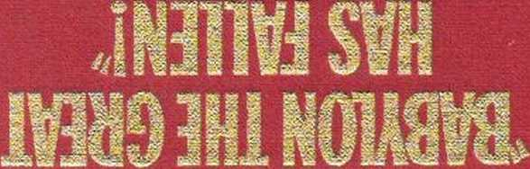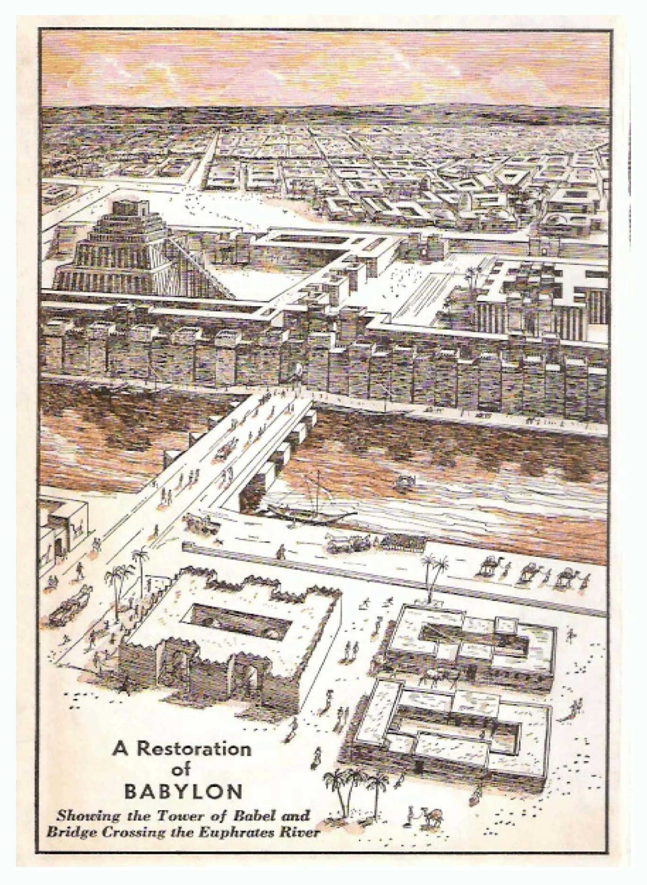on
5/iotrme the Timer of Eabel and Bridge Cr&xxing fhe Euphrates Kirt'<
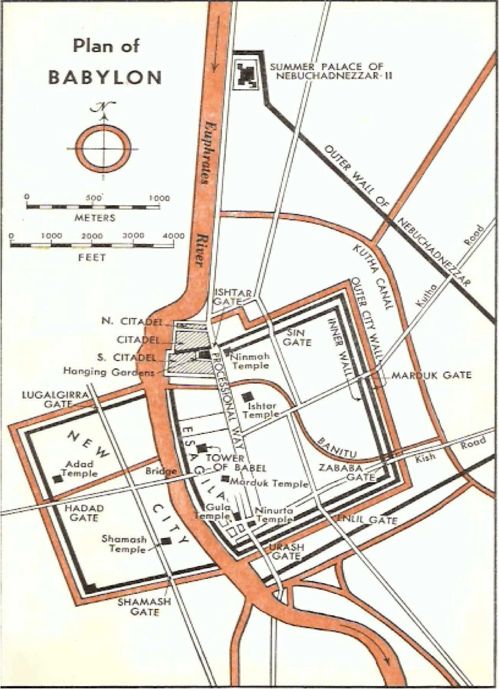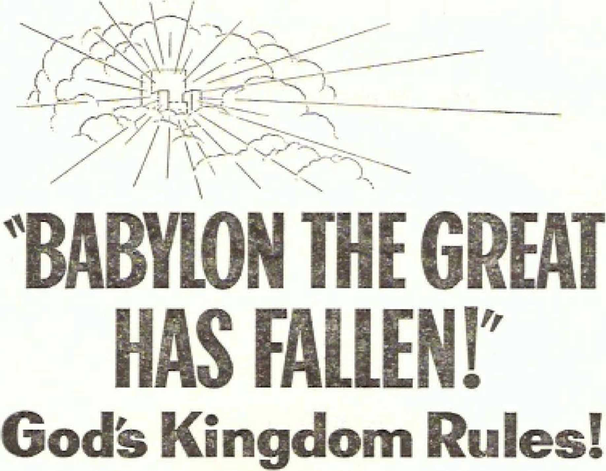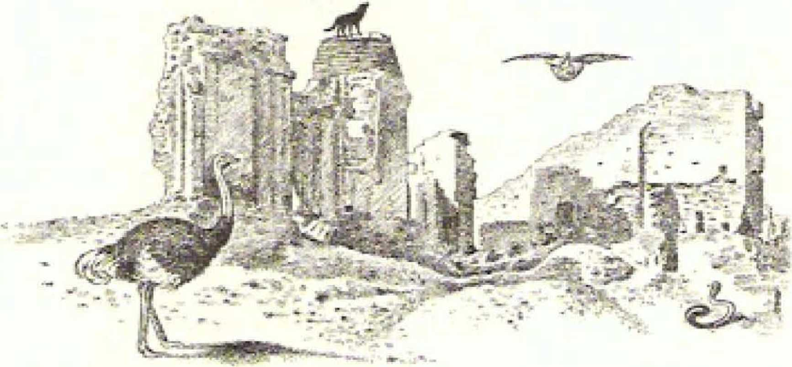''He has executed judgment upon the great harlot who corrupted the earth with her fornication,. . . . Halleluiah* because Jehovah our God, the Almighty, has begun to rule as king.'' —Revelation 19:2, 6, NW, margin of 1950 edition,
COPYFLIGirr., 1963 by Watch Tower Bielb &. Tract Society of Pe^msyl-vakta
First Edition
2,250.000 COPIES
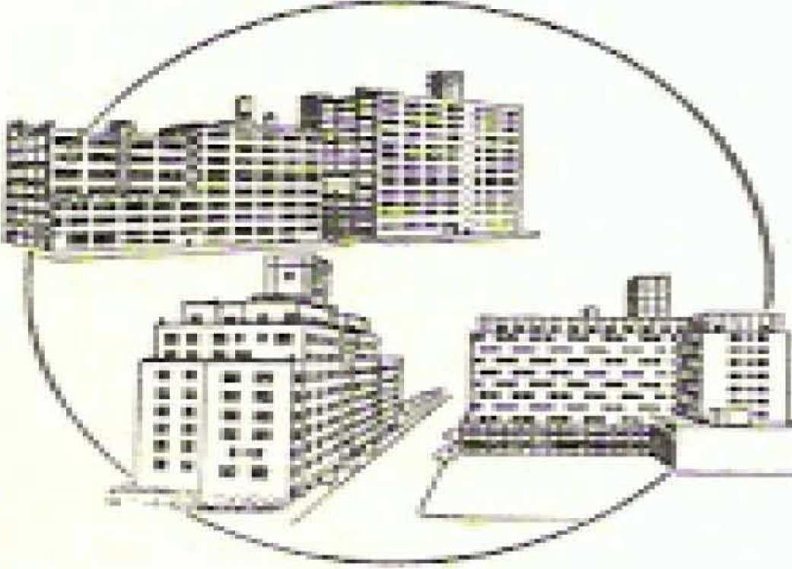Publishers
Watciitoweb Bible and Tract Society of New York4 InC.
Ils" TERNAT1ON AL B1ELE STUDENTS AfitOClATlDhT Brooklyn, New York, U.S.A.
Mudu in ill© TTnit«.'3 Si.jlIi:?; of America.
To God. tlu3 Almighty, Who Co, uses the Full of
JBcihyloix the Gceut
I it the Literncil Interest of
True Religion
Abbreviations ar trana!at।oiib of His Word quoted or cited herein:
— American Standard Version Bibir. by the American
(’n mm it tee of Rcv'Lsloin. of 1901
— The Complete Bible: An American Translation, by J- M. P. Smith and E. J. <Jood speed, of 10CO
— Authorized or King James Version Bible, of 1611
— Roman Catholic Emclish translation of the Latin Vuleate made at Doubv and Rhtizr.s, as of 1610
— The Holy Bible, translated. by MonaJirnor it. A. Knox. as of 1949
— Thr Twcnty-ToUT iSOOk-s Of th<‘ Hflh‘ Seri hv Rabbi
Isaac Leescr, as of 1853
— The Greek Septuaglnt translation of the Hebrew Scriptures, as published by S. Bugsler and Sons Limited. London
— A New Tm mdatlon of the Blhlo, bv Dr. Janies Moffatt-. as of 1922 ‘
Any Bible quotation or citation not followed by any specific abbreviation is from the New World Translation of the Holy Scriptures (iVTV). the revised edition of 1961- Other translations of the Bible may he quoted or cited, but with, the name of the tr.;tnsl:ti ion not abbreviated.
Abbreviations of reference woricjs quoted or cited herein:
Aw — The Encyclopedia Americana, edition of 1929
Am* — The Encyclopedia Americans., edition of 1946
Z?rl — The Encyclopaedia Britannica, eleventh edition
fir8 — The Encyclopaedia Britannica, edition, of 1946
— The Int*-rnatlonal Standard Bible Encyclopaedia, edition of 1955
HCVIAS! — Cyclopaedia of Tisblieal, Thf.nlri^i^il and Hi-elcsiasstical Literal urc. by John M‘Cl intock and James Strann;. as of 1891
TB — The Two isabylnnx. by Dr. Alexander Hislop, ILondon edition Of 1926
CONTENTS
CHAPTER
1 Faced with Solving a Mystery ........
2 Babylon Arises ...............
3 The Religion of Babylon . . . , ......
4 A Family’ Gets Out of Chaldea ........
5 Liberating and Organizing a New Nation . • • • 6 A Small-Scale Kingdom of God on Earth Begins .
7 Israel Feels Assyria's Aggressions......
8 Zion Clashes with Babylon .........
9 The Desolating of Zion ...........
10 Waiting in Exile for Babylon’s Fall ......
Il Previews of Babylon’s Fall...... . . .
12 The Conqueror Is Appointed in Advance . . . .
13 The Fall of Babylon ............
14 Her Fall Vindicates Jehovah’s Prophecy . . . .
15 No Healing for Babylon ..........
16 Down, World Mistress! ...........
17 Up, Zion! . ...............
18 Getting Out of the Midst of Babylon.....
19 Messiah Comes to Zion . .........
20 Coming to Mount Zion, Heavenly Jerusalem . .
21 Babylon the Great and Heavenly Zion in Revelation.............
22 From Her Fall TUI the “Wine Press” Is Trodden .
23 Seven Angels with the Last Plagues . . . , „
24 Pouring Out the Seven Last Plagues Begins . . *
25 From the Euphrates to liar Magrdon . . . . .
26 “The Judgment upon the Great Harlot” . . . .
27 Mourning and Gladness over Her Destruction . .
28 The Marriage and Warfare of the Lamb . . . *
29 Messiah's Thousand-Year Reign.......
30 A New Order of a New Heaven and L\:.rth . . .
31 Invitation to Drink “Water of Life” ...... Chart of Dates from Creation to Current Date
(A-D. 1963) of Babylon the Great . . . . .
Subject Index..... . . .
PAGE
. 11
. 106 . 117
. 141 . 170 . 182 . 207 . 227 . 242 . 269
. 305
. 341
. 361 . 401 . 430
. 454 . 506 . 522 . 530 . 557 . 576 . 601
. 616 . 631 . 649 . 663
, 682 . 691
c H A P
T E R
1
1 HE fall of Babylon the Great means that God’s kingdom is ruling. With such shocking suddenness will Babylon’s fall come that the vast majority of mankind will be surprised and caught in the worldwide consequences of it. For many centuries, however, some righteous men and women have looked forward eagerly, and with prayer, to this event, for it will mean liberation from an oppression that has lasted so long. They have been able to look forward to this great event with unwavering faith because of a Book. From beginning to end this ancient Book of prophecy has interwoven the theme of Babylon into its story. In not very many pages from its opening words this Book tells of the beginning of an ancient Babylon, in still less pages from its closing words it gives a vivid description of the fall and everlasting destruction of Babylon the Great. Thal Book is the sacred Bible, containing the Holy Scriptures. It alone tells of the triumph of God’s kingdom over Babylon the Great of today.
In the year 539 B.C. ancient Babylon bad a historymaking fall. Today the location where that wonder city once dominated the world reveals some impressive ruins that have been uncovered since the year 1899 by a German Oriental Society. What, then, is the other Babylon that survives till now and that must yet fall with a world-shocking crash? Even the sacred Bible says that its name is a mystery, and over the centuries
many men have tried to solve the mystery by identifying this greater Babylon*
Interesting have been the interpretations of the symbol of Babylon, One of the most recent is that which identifies the Babylon that appears in the last book of the Bible, “not as a conquering military power as in the earlier I" Bible] prophets, but as the embodiment of material civilization and luxury, the great harlot, whose charms bewitch all the nations of the earth: the world market whose trade enriches the merchants and the shipowners?’*
The last book of the Bible gives us many clues to help us in identifying this international “harlot,1’ but those clues are prophetic. So we have to turn to the pages of history" and match Bible prophecy with recorded history to identify the foretold Babylon accurately. In that way we can be sure that we are getting God’s interpretation of the Babylonian mystery that he put into his Bible*
Our getting at the solution of the mystery is important for us. Why so ? Because through the pages of the Bible we hear the rousing command for those who desire to be God’s people to get out of Babylon, to flee out of her for the sake of their lives, losing no time. Along with that stern command God mercifully warns us of what it will mean to his people to remain in this Babylon of mystery, in ibis day of his judgment of her.
How. though, can anyone flee out of the midst of Babylon if he does not identify it? How can he break loose from it, now while there is yet time, if he does not know what Babylon stands for? What relationships with Babylon must he break in order 1,.o be free from it and no longer share in any of its responsibility before Ged? Bven if the hour of God’s judgment of Babylon were not near, our concern for our personal welfare
* See 254 of The -Di/juirjiies of Work! //jaforjf, by Christopher Dawson. i>diic*<l by John J. Mulloy; published by Sheed and Ward, New York city.
and our desire to be God’s people and no longer Babylon’s bewitched slaves would did ale our getting out of it. Why? Because it is a doomed organization. If our day proves to be God’s fixed time for judging Babylon and if its fall is to come by surprise, as in a narrow time limit like an “hour/' then there is all the more urgency for us to heed the divine warning and get out with no delay.
It is plain that there is need for us to know with an accuracy that leaves no doubts in our mind. We need to know what the Babylon is from which we must flee with benefit to ourselves. Babylon must be exposed to ust and wc must face the exposure honestly and courageously. Only with the accurate knowledge about Babylon can we know what action to take toward her intelligently and deliberately.
Very evidently a choice is facing us. The choice is between Babylon the Great and God’s kingdom. We will either stay in Babylon to share in Hie disaster of her fall or get out of her and put ourselves under the rule of God’s kingdom. To encourage us in this latter course, we not only need to gel an insight, into what Babylon is but also need to understand what God’s kingdom is. How desirable will it be to live forever under its wonderful rule?
With the sacred Bible at hand, we do not have to leave ourselves in an ignorance that finally spells our destruction. We can enjoy very easily an interesting, exciting search through the pages of that infallible Book, coming down to its final prophecies as given in its last book, in the seventeenth chapter of which, in its fifth verse, we read: "And upon her forehead was written a name, a mystery: ‘Babylon the Great, the mother of the harlots and of the disgusting things of the earth? ** (Revelation 17:5, New World
Our investigation will uncover to us how, for the benefit of till lovers of tvhat is right, she will be destroyed,
after which we shall have described to us the glories of the long-awaited, much-pi’ayed-for kingdom of God.
According to Bible prophecy, many will mourn over the fall of Babylon. But why should we ourselves stay among those who arc certain to mourn, even to death? We shall gain everlasting happiness if we line up now with those who will rejoice and give glory to God because he has judged the “harlot” and she has fallen, never to rise again. So in the following pages we shall consider together what God has to say in his written Word concerning Babylon the Great and hcr enemy, God’s kingdom.
To the end that we may gain a more satisfying understanding, we shall consider fii'st the worlddominating Babylon of ancient history and the ancient pictorial model of God’s kingdom. To do this, we must turn to the sacred Scriptures that were “written aforetime,” that is, before oui' Common Era, 1he so-called Christian Era. We arc certain to draw enlightenment and profit from this, because, as the letter to the Romans, chapter fifteen, verse four, tells us: “All the things that were written aforetime were written for our instruction, that through our endurance and through the comfort from the Scriptures we might have hope/Romans 15:4. 2VW.
c
H
A
R
2
/z A
z>ND the beginning of his kingdom came to be Babel?11 Here, in the tenth chapter, tenth verse, of the first book of the Bible, is the very first mention of Babylon, yes, also, the first mention in t lie Bible of a kingdom. (Genesis 10:10,2VK7) Babylon is the same as Babel, for when certain Greek-speaking Jews of Alexandria, Egypt, made the first written translation of their sacred Hebrew Scriptures into a foreign language (Greek) more than two thousand years ago, they translated the Hebrew name Bab^Z as Babylon The translator' who produced the Batin VttZyate version also used the word Babylon* “His empire began with Babylon/’ is how the modern English translation by the Roman Catholic Monsignor Ronald A. Knox reads, “His empire at first was Babylon/* is how the Bible translation by the Protestant Dr. James Moffatt reads. Thus Babylon takes its place as the seat of the first kingdom on earth after the F lood, the capital city of the first empire by man. Was this in the interest of all mankind or not? Mankind’s great Creator gives answer in his Book the Bible.
Whose kingdom, though, was it that had its seal of government in Babel or Babylon? Who founded this city? How or why was it founded, and how did it get its name? To these questions no ancient book of human history gives us the true answers but the Bible. This Book both introduces the city to us and then foretells its certain fall as a world influence. The king who first 11
reigned in the original Babylon was a great-grandson of Noah, the builder of the great ark in which he and seven other human souls survived the flood that swept the whole earth four thousand three hundred years ago. The name of this great-grandson of Noah was Nimrod.
Concerning this famous man of ancient days the American Standard Version Bible presents the record in these words: “Now these are the generations of the sons of Noah, namely, of Shem, Hain, and Japheth: and unto them were sons born after the flood. The sons of . . . Ham: Cush, and Mizraim, and Put, and Canaan. . + . And Cush begat Nimrod: he began to be a mighty one in the earth. He was a mighty hunter before Jehovah: wherefore it is said, Like Nimrod a mighty hunter before Jehovah, And the beginning of his kingdom was BabeL and Eiech, and Accad, and Calneh, in the land of Shinar. Out of that land he went forth into Assyria, and builded Nineveh, and Rehoboth-Ir, and Cal ah, and Resen between Nineveh and Calah (the same is the great city)/’—Genesis 10:1-12, AS.
Even to this day hunters of note are nicknamed Nimrod by persons familiar with Bible history. There has been some discussion of the inward meaning of the saying: “Like Nimrod a mighty hunter before Jehovah. " In what sense was Nimrod a hunter, and was this with Jehovah’s recognition and approval or in defiance of Jehovah? What is the significance of the words “before Jehovah”?
The Roman Catholic Monsignor Ronald A. Knox gives it a favorable meaning in his translation of The Old Testament, which reads: “Chits was also the father of Nemrod, who was the first great warrior; bold, too, by God's grace,1 at the hunt, whence the proverb arose, By God's grace, a huntsman bold as Nemrod. His empire began with Babylon/1 etc.
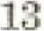In speaking of this difference of understanding, The Encyclopaedia Britannica,, Volume 19 (eleventh edition), page 703, says under Nimrod; “The 'mighty hunter before Yahweh2 has been variously explained as ‘a divinely great hunter’ (Spurrell); ka hunter in defiance of Yahweh’ (Holzinger); ‘a hunter with the help of Yahweh1 or 'of some deity whose name has been replaced by Yahweh' (Gunkel, Genesis, page 82).” The name Yahweh is just another way to pronounce the letters in the name of the One whom the American Standard Version Bible calls Jehovah.
TVre Jetcnsft- Volume 9, edition of 1909,
page 309, says that Nimrod, in the writings of the Jewish rabbis, "is the prototype of a rebellious people, his name being interpreted as lie who made all the people rebellious against God.’ ”
In his work entitled “The Book of Beginnings/' the author, Alexander Marlowe, renders Genesis 10:8-10 as follows: “And Cush begot Nimrod; he began to be a mighty tyrant in the land. He w?is a terrible subjugator defiant before the face of Jehovah: wherefore it is said, even as Nimrod, the giant hunter, presumptuous in the place of Jehovah. And the original seats of his empire wrere Babylon, and Erec, and Acad and Kalneh in the land of Shinar/’2
In the expression “before Jehovah” the word before is the translation of the Hebrew preposition Itpknei' Regarding this important preposition the religious Ch/cZopcedia by M'Clintock and Strong, Volume 7, edition of 1894, page 109, says:
The preposition ’JEt5 has often, as [Lexicographer! Gescnius admits, a hostile sense—in front of. for the purpose of opposing (Numbers 16:2; 1 Chronicles 14:8; 2 Chronicles 15:10}; and the Septuagint gives it such a sense in the verse under consideration—evavriov Kvqlov - ''against the Lord.1’ The [Jewish] Targums and [historian] Josephus give the preposition this hostile meaning. The context also inclines us to it. That the mighty hunting was not confined to the chase is apparent from its dose connection with the building of eight cities. . . . What Nimrod did in the chase as a hunter was the earlier token of what he achieved as a conqueror. For hunting and heroism were of old specially and naturally associated, . . . The Assyrian monuments also picture many feats in hunting, and the word is often employed to denote campaigning. . . . The meaning then will be. that Nimrod was the first after the flood to found a kingdom, to unite the fragments of scattered patriarchal rule, and consolidate them under himself as sole head and master; and all this in defiance of Jehovah, for it was the violent intrusion of Harri tic power into a Shemitic territory.
Nimrod descended from Ham, not from Shein.—Genesis 10:6-8.
In harmony with this discernment of matters the New WorJd Translation o/ the Holy Scriptures, edition of 1961* translates Genesis 10:8-10 as follows: "And Cush became father to Nimrod. He made the start in becoming a mighty one in the earth. He displayed himself a mighty hunter in opposition to Jehovah. That is why there is a saying: ‘Just like Nimrod a mighty hunter in opposition to Jehovah.’ And the beginning of his kingdom came to be Babel and Erech and Accad and Calrteh, in the land of Shinar.”
HOW *1N OPPOSITION”
It is important that now, at the beginning, we spend some time in finding out what kind of man this first king of Babylon (Babel) was. Then we can prove to ourselves on what foundation Babylon the Great of today rests. What is it that leads us to conclude from the Holy Bible that Nimrod was 4‘in opposition to Je-hov'ib'' in bccojr.jn^’ a “mighty one in the earth” and in displaying himself a “mighty hunter*’ whose name would become part of a proverb?
The Bible does not condemn hunting of wild animals and birds when the hunting is done for the sake of
food and clot hing or for protection. But when the hunting is engaged in for the sake of sport and in the love of mere killing wantonly, then the Bible condemns such hunting. Why? Because the life with which the Creator endowed creatures is tied up with the matter. It was first al ter the great Flood that the Creator made it lawful for us to cat the flesh of animals, birds and fish. That, of course, meant taking the life of these creatures* But in order that we might not be held responsible for their lives, the Creator and Life-giver made a certain rest rid ion at the same time that he made it lawful for us to eat. flesh of animals. He did so immediately after Noah and his three sons and the four wives had come out of the flood-proof ark and had engaged in a sacrifice of clean animals to Jehovah. As calculated today, this was in the year 2369 B.C.E. In Genesis 9:1 -6 we read of it in these words:
“And God went on to bless Noah and his sons and to
To Them: ‘Ik1 !’: .liilr: anil become many and fill the earth. And a fear of you and a terror of you win continue upon every living creature of the earth and upon every flying creature of the heavens, upon everything that goes moving on the ground, and upon all the fishes of the sea. Into your hand they are now given. Every moving animal that is alive may serve as food for you. As in the case of green vegetation, I do give it all to you. Only flesh with its soul—its blood—you must not eat. And, besides that, your blood of your souls shall I ask back. From the hand of every Jiving creature shall I ask it back; and from the hand of man, from the hand of each one who is his brother, shall I ask back the soul of man. Anyone shedding man’s blood, by man will his own blood be shed, for in God's image he made man.’ ” --AV-u.? World Translation*
VJOLATJMi; THE MANDATE ON BLOOD
In those words God the Creator stated that the blood is necessary to the creature’s life, so much so that the
creature's life is represented by the blood. For that reason if anyone shed the blood of a creature needlessly so that, it died, he would be held to account for its lite before the great Life-giver, God.
God is the One who gives life to creatures. Since the life of creatures therefore belongs to him, neither Noah nor any of his family had the right to take the life of a creature unnecessarily. As the creature’s blood is vital to its existence and as its blood stands for its life in the Creator's sight, neither Noah nor any of his descendants had the right to eat or drink the creature's blood when eating its flesh. Eating blood meant the eater's taking to himself also the creature's soul or life, which belongs to God the Life-giver. That is why God said to Noah and his sons: “Only flesh with its soul—its blood—you must not cat.” Just as God held life to be sacred because it belonged to him and he had given the creature the right to enjoy it, so he held blood to be sacred.
Well, then, when a creature was killed to be eaten, what was to be done with its blood, if it was contrary to God’s law to eat or feed on blood? The blood was to be drained from the creature’s body after it had been killed for food, and was to be poured out on the ground. God plainly commanded such handling of blood when lie told his prophet Moses to write ciown this law for huntsmen of any nation, Israelite or non-Israelite: “As for any man of the sons of Israel or some alien resident who is residing a.s an alien in your midst who in hunting catches a wild beast or a fowl that may be eaten, he must in that case pour its blood out and cover it with dust. lor the soul of every sort of flesh is its blood by (he soul in it. Consequently I said to the sons of Israel: ‘You must not eat the blood of any sori, of - flesh, because the soul of every sort of flesh is its blood.
Anyone eating it will be cut off.’ ” (Leviticus 17:13,14) In the year 1512 B.C. the prophet Moses wrote down that divine mandate concerning blood; and this fact proved that S57 years after the Flood God's mandate to Noah and his sons concerning the sacredness of blood was still binding on men. Since we are all descendants of Noah, it is binding on us today.
As a great-grandson of Noah, Nimrod was bound to keep that divine mandate governing blood. But did he? His notoriousness as a “mighty hunter" indicates that he did not, but that he pursued hunting as a great sport, for the excitement of it, killing animals thoughtlessly as to their God-given right to life, wantonly, and not io protect people against wild beasts. As to whether he ate their flesh with their blood, in disregard of the divine mandate concerning blood, we cannot be certain, although we may be inclined to think so. But Nimrod’s course bespeaks that he had a disregard for blood and its preciousness in the eyes of Jehovah. This is specially true if his hunting did not coniine itself to wild beasts and birds but included human creatures.
This suggestion is not just our own thought. Concerning Nimrod “as a mighty hunter before the Lord" The Catholic Encyclopedia, Volume 10, page 741, says: “This last may be taken in the strict sense—hunter of wild beasts, for such we know the Babylonian princes to have been; or in the sense of warrior, the original word gibbor having the meaning ‘hero.* ” With this latter suggestion The. Encyclopedia Americana, Volume 20, edition of 1929, page 350, agrees, saying: “He is styled a ’mighty hunter before the Lord,1 a somewhat vague expression, but evidently referring to battle and conquest as well as to the chased* This agrees with M*Clintock and Strong’s Cyclopaedia, as quoted above (page 13, paragraph 5). Aggressive campaigning on Nimrod’s part is indicated by the Bible record in Genesis 10:11, 12, which says: “Out of that land [of Shi-nar] he went forth into Assyria and set himself to building Nineveh and Rehoboth-Ir and Calah and Resen between Nineveh and Calah: this is the great city.*’ In harmony with this Bible statement history tells us that
Nineveh, the capital of Assyria, was developed from Babylon.
Nimrod was the grandson of Ham, the son of Noah, and children were born to Ham first after the great Flood. Hence his grandson Nimrod's expedition into the territory of Assyria, which belonged to Asshur son of Shorn, must have occurred a hundred years or more after the Flood. By that time the population of the earth must have grown greatly, in obedience to God’s command to Noah and his sons Shorn, Ham and Japheth: “Be fruitful and become many, make the earth swarm with you and become many in it,” (Genesis 9:1, 7) So there were people for Nimrod to set himself up over as king in the city of Babylon (Babel) in the land of Shinar.,
It was after Nimrod established his kingdom at this city that he made his expedition into Assyria to build Nineveh and other cities. In doing so he was evidently invading the territory of Asshur the son of Shorn, for Assyria fakes its name from Asshur. (Genesis 10:21, 22) How natural it would be for the mighty hunter of wild animals to turn to hunting men, not to take them alive, but to kill them, shedding their blood! Nimrod's pushing into Assyria was aggression. In all probability it was attended by bloodshed, the killing of those whom he and his army dispossessed. For this bloodshed Nimrod’s capital city became responsible. As a seat of empire it was built up with blood. (Habakkuk 2:12) What a pattern this was setting for its counterpart, Babylon the Great, to follow!—Revelation 17:5, 6.
God's mandate to Nimrod’s great-grandfather Noah put a sacred value not only upon the blood of animals 1 hat were killed and eaten but more so upon the blood of man who was made in God’s image, Like the blood of animals and birds, the blood of man also stood for his life. One man could not shed the blood or take the life of another man without having to render an account to the Life-giver, God. That was the law that God set up with Noah and all his descendants after he forbade the eating of blood, saying: “Besides that, your blood of your souls shall I ask back. From the hand of every living creature shall I ask it back; and from the hand of man, from the hand of each one who is his brother, shall I ask back the soul of man. Anyone shedding man’s blood, by man will his own blood be shed, for in God’s image he mademun,”—Genests 9:5,6,
If God required the life of a man from every animal, “every living creature,” th tit killed a man. then he would likewise require the life of a man from the hand of his brother man who killed him or shed the life of his soul, his lifeblood. Why? Because that was murder. God did not wait until he gave the Ten Commandments at Mount Sinai in 1513 B.C. to condemn murder and demand a penalty for it. (Exodus 20:13) God condemned murder right after the Flood, when God gave mankind a new and righteous start in life on this earth. Mankind, now being authorized to kill animals for food but without feeding also on their blood, was not to p<'ss from killing of animals to killing of brother man, in God's image. But Nimrod did this very thing, first hunting animals and then, with pleasure in killing creatures, hunting his brother man.
Cain, the first child of Adam and Eve outside the garden of Eden, was the first to murder his brother man, Abel, before the Flood. Nimrod, as far as the Bible record shov. was the first after the Flood to murder his brother man, either before or after he invaded Assyria. Nimrod did not look upon himself as being his “brother’s guardian.” (Genesis 4:1-9) So for good reason, when telling later about the aggressions of the Assyrian World Power, Micah 5:5, 6 calls the “land of Assyria” the “land of Nimrod/*
How did God the Life-giver finally require the lifeblood of all the creatures, animal and human, that Nimrod killed in violation of God’s mandate concerning the sanctity of blood and murder? The Bible does
not state. One of Nimrod’s brothers, Raamah by name, is mentioned as having sons; however, the Bible lists no children as born, to Nimrod, in spile of his becoming a “mighty one in the earth.” The Bible, as it were, cuts him off, taking no note or any children that he might have had. (Genesis 10:7-12) Mythologies that trace back to Nimrod as the first king of Babylon indicate that he met a violent death at the hand of executioners,*
So, then, in view of his Bible record as an empire builder, can we conscientiously say that Nimrod was a bold huntsman “by God’s grace” or with the help of Gud? Or do the Bible's rules of judgment in cl: er. to tha-Nimrod was a “mighty hunter in opposition to Jehovah”? Our further study of Nimrod and his royal city Babylon (Babel) will make the right, answer to the question still plainer.
DEFIANCE OF GOD’S
UNIVERSAL
SOVEREIGNTY
There is much meaning in the simple statement about Nimrod: “And the beginning of his kingdom came to be Babel.” (Genesis 10:10) This is the very first mention of a kingdom in the Holy Bible. The2 Flood-survivor Noah, the great-grandfather of Nfmrod, was still living at this time. Genesis 9:28, 29 tells us: “And Noah continued to live three hundred and fifty years after the deluge. So all the days of Noah amounted to nine hundred and fifty years and he died?’
In all his three hundred and fifty years after the Flood Noah did not make himself king over all the human family, although he was now the family head of the whole human family. It is certain he did not anoint or appoint Nimrod to be king over any part of the human family. There was no reason for this. According to Genesis 6:9, “Noah was a righteous man. He proved himself faultless among his contemporaries. Noah walked with the true God." Therefore Noah
* See the book entitled "The Two Baby Ions Or The Papal Worship Proved To Be The Worship at Nimrod And Ills Wife," by the clergy* num AJ rounder Hislop, with all. Jis references to Nimrod Ln the Index, page S2S, edition ot 11126. Published by Partridge, xx>ndvn< Englund.
looked to the true God as his Ruler or King, For him to set up a kingdom over his growing family after the Flood would have meant for Noah to be ambitious, greedy for power, and to rebel against the sovereignty of God the Creator and thus quit walking with God, This is what Noah refused to do; and he would not approve of any of his sons’ or grandsons’ doing so, Noah was not a kingmaker.
In this respect Nimrod was unlike his greatgrandfather Noah. He wanted to be somebody, making a name for himself as a hero. He was the first one after the Flood that made a start in doing this, and in this way he set a bad example. In proof of this it is written: “And Cush himself became father to Nimrod. He it wTas that made the start in becoming a mighty one in the earth.” i 1 Chronicles 1:10) Nimrod used his mighty position selfishly. He used it as a steppingstone to making himself king over his brother man; and the seat of his government he set up in Babylon (Babel). This was a defiance of God hi heaven. It was a rebellion against the universal sovereignty of God, and this rebellion was enlarged when Nimrod extended his royal power over Assyr ia. By some scholars it is understood that his name Nimrod is drawn from the Hebrew verb mnrdd, as found in Genesis 14:4, In this case the name would be actually the first person, plural number, of the verb mar&t' in the jussive mood, and would mean “We wiZZ rebel!’’ or, “Let us rebel!”
This idea is borne out in the Jewish interpretative translations of the Bible called Targums. For example, the Jerusalem Targum explains: “He was powerful in hunting and in wickedness before the Lord, for he was a hunter of the sons of men, and he said to them, 'Depart from the judgment of the Lord, and adhere to the judgment of Nimrod!’ Therefore it is said: ’As Nimrod is the strong one, strong in hunting, and in wickedness before the Lord-’ ” The Targum of Jonathan tells us: “From the foundation of the world none was ever found like Nimrod, powerful in hunting, and in rebellions against the Lord?’ The Chaldee paraphrase of 1 Chronicles 1:10, the verse quoted in the preceding paragraph, reads: “Cush begat Nimrod, who began to prevail in wickedness, for he shed innocent blood, and rebelled against Jehovah?*
The ancient Jewish historian Flavius Josephus, in his work entitled “Antiquities of the Jews?* in Book lt chapter 4t paragraphs 2, 3, says: “Now it was Nimrod who excited them to such an affront and contempt of God; Ite was the grandson of Ham, the son of Noah, a bold man, and of great strength of hand. Ue persuaded them not to ascribe it to God, as if it were through his means that they were happy, but to believe that it was their own courage that procured their happiness. He also gradually changed the government into tyranny, seeing no other method of turning men from the fear of God, but to bring them into a constant dependence on his own power. . . . Now the multitude were very ready to follow the determination of Nimrod, and to "W1
esteem it a piece of cow ardice to submit to God; and they built a tower, neither sparing any pains, nor being at any degree negligent about the work.”-—Translation by Win. Whiston.
If the name Nimrod is thus taken from the verb meaning to rebel, then this name must have been given to Ibis man after he had started out on his rebellious course; it was not the name given to him at birth.* But regardless of the exact meaning of his name, Nimrod displayed rebellion against Jehovah God in starting world politics and sett ing up himself as king. Babylon, his capital, thus was a kingdom in rebellion against God the Universal Sovereign. So from her very start she was no part of the universal organization of Jeho-
• Dr. Alexander J1 l-dop derives the name from two Hebrew words, which would make the name Nimrod, mean tLSubducr of the teopard," a name thul wimlcJ hardly t>e giwen to him at tils birth. This name would, cat! attention to Nimrod's him tins prowess.—See Tftd Two JEtab-
ar* 192G edition, 41, footnote.
vah God, and Babylon never became a part of it later on. She was never a kingdom of God. She never departed from her opposition to God.
Seventy-five years before her frill in 539 B.C., God’s prophet Jeremiah said: “Against Jehovah . . . she has sinned. . . . For it is against Jehovah that she has acted presumptuously.” And, addressing Babylon, Jeremiah said: "It was against Jehovah that you excited yourself.’* Then he added: “ ‘Look! I am against you, O Presumptuousness/ is the utterance of the Sovereign Lord, Jehovah of armies, Tor your day must come, the time that I must give you attention. And Presumptuousness will certainly stumble and fall, and it will have no one to cause it to rise up? ’■■■• -Jeremiah 50: 14, 29, 24, 31, 32.
THE FOUNDING OF BABYLON'
Nimrod, the first king reported among mankind, was not “king by the grace of God/’ We can see this from the purpose for which his capital city was built and from the attitude that God took toward it One of the eight human survivors of the L- Iood, namely, Shem, wrote about it in his history and said: “These were the families of the sons of Noah according to their family descents, by their nations, and from these the nations were spread about in the earth after the deluge* Now all the earth continued to be of one language and of one set of words. And it came about that in their journeying eastward they eventually discovered a valley plain in the land of Shinar, and they took up dwelling there. And they began to say, each one to the other: ‘Come on! Let us make bricks and bake them with a burning process/ So brick served as stone for them, but bitumen served as mortar for them. They now said: ‘Come on! Let us build ourselves a city and also a tower with its top in the heavens, and let us make a celebrated name for ourselves, for fear we
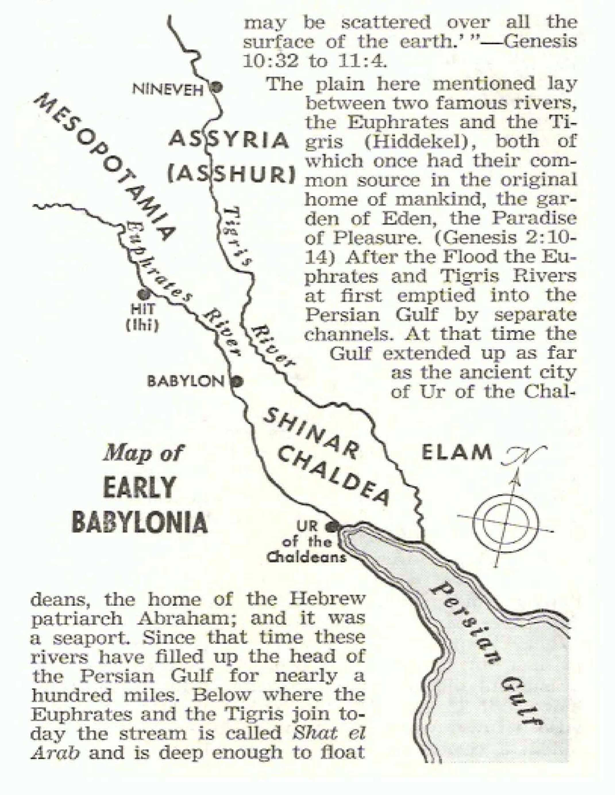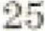warships. About fifty miles northwest of Babylon the Euphrates and the Tigris approach to within twenty-five miles of each other. Below that area the two rivers have deposited what is called the Plain of Shinar or of Chaldea, which plain is more definitely spoken of as Babylonia. This plain is about two hundred and fifty miles long and is a hundred miles across at its widest place.
Later, because of its location between the Euphrates and the Tigris the J and was called Mesopotamia, which nttme means 4‘the land between the rivers.”' It was into this plain that Nimrod and others with him came during the second century after the Flood,
These pioneers found the land of Shinar very productive. They decided to stay there. The building of a city was suggested to them. With what was it to be built? There was no stone in the neighborhood to be quarried, but there was plenty of mud or day. Besides that, there were pits of bitumen. Conveniently they decided to make bricks by molding them into shape and drying and hardening them “with a burning process,” Early Babylonian brick was apparently kiln-dried rather than sun-dried. To hold the bricks together wThen built up into the walls of a structure they used slimy bitumen, fountains of which existed in that neighborhood.* This served as mortar for the builders. But why build a city?
God was interested in the purpose behind the building. He had given the mandate to Noah and his family to become fruitful with children and become many and fill the earth to the point of making it swarm with men
* Says Tftia Jb’we.vclopa^ta Prifanaioa of the town of Hit. which was established about 100 miles above Babylon and where the frriite plain Of Babylonia begins: " ‘Hit, a town of Asiatic Turkey, In the vilayet of Bagdad, tm the west bank of the Euphrates, , . . From time imrae-mnrial Et has been the chief source of supply of bitumen for Babylonia, the prosperity of the town <3cpen<lEn£ always upon its bitumen Toun tains. . . . In the Bi hie (Ezra Si 15) it Is called Ahava; the orlK-Inal Babylonian name scents to have been I';l, ...”
and women. (Genesis 9:1, 7) At that time the earth could easily have taken care of what is today called a "population explosion,” for most of the earth was unpopulated and it was a wide country. It was not the time for people lo hole themselves up in cities and develop a materialistic way of life and show indifference to God's mandate lo mankind to fill the earth with righteous people from the three great family heads, Shem, Ham and Japheth.
However, those early bricklayers and masons had lost interest in God’s mandate to man: they wanted the more settled life, with more ease and convenience. Their being all of one language and of one set of words made it very easy for them to build together. There is no Bible record that they formed a masonic lodge, but they had great building ambitions. They would make their city outstanding with a special piece of masonry, "a tower with its top in the heavens/’ This, though, was not for them to get nearer to God.
They began building on the banks of the Euphrates River. Their purpose was not to glorify God’s name and to fulfil! his mandate and spread the knowledge of his name to the ends of the earth. They said: "Let us make a celebrated name for ourselves, for fear we may be scattered over all the surface of the earth.” (Genesis 11:4) They desired to herd together and have a local ruler over them. They knew that they had to give their city a name; and this name they would make famous. Then they would consider themselves to be honored in being known as citizens of this city.
As for that “tower with its top in the heavens,” what was its real purpose? The city builders did not need to fear another deluge such as had occurred in the days of their still-living forefather Noah. After that Flood God caused the rainbow to appear and established an anti’ deluge covenant with mankind, saying: “It shall occur that when I bring a cloud over Hie earth, then the rainbow will certainly appear in the cloud* And I shall certainly remember my covenant which is between me and you and every living soul among all flesh; and no more will the waters become a deluge to bring all flesh to ruin. And the rainbow must occur in the cloud, and I shall certainly see it to remember the covenant to time indefinite between God and every living soul among all flesh that is upon the earth.” (Genesis 9:1416) Not only did the tower builders not need to build a deluge refuge, but they could never build a tower as high as fifteen cubits above the top of the highest mountain, which was the high water level of the Flood.
Genesis 7:19, 20.
The tower was not to be merely ornamental as a landmark for their city. It was to be a tower of religious worship, a ziggurat. It was to be, not a tapering circular tower with a spiral staircase or ramp running around on the outside to get to the top. According to historical descript ions of the ancient Babylonian and Assyrian towers and the tower foundations that have been uncovered by archaeological digging in the earth r this model tower of worship was on a square or rectangular basis. It was a pyramidal tower made up of a number of stories with room on the top floor for a temple. It would look like a series of terraces, and its broad means of ascent would wind around outside the structure. A broad stairway may have been built perpendicularly against the face of the front waD and directly up to the first or second story or perhaps even up to the top on the last story. Because of its great height the tower would dominate the city, and it would give the utmost prominence to the matter of religion. It would call attention to the chief god of the city. It would be a religious city.
Was this done to honor the true God in the heavens and to promote and preserve his worship? Was it therefore acceptable to him? The history of Shem, the
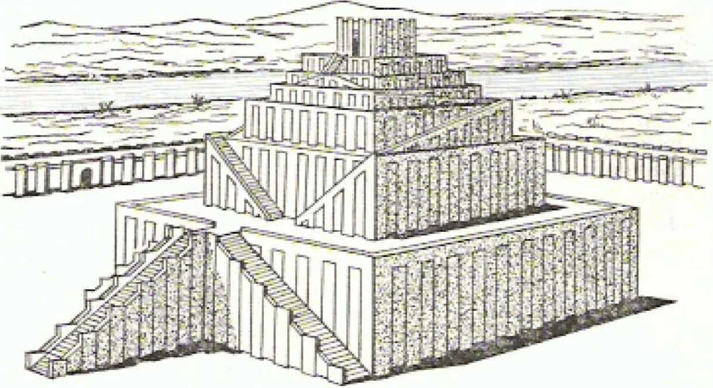Reconstruction of the Tower of Babel
son of Noah, supplies us the answers. After telling of the beginning of the building of the city and its religious tower, Shem goes on to say:
“And Jehovah proceeded to go down to see the city and the towcr that the sons of men had built. After that Jehovah said: 'Look! They are one people and there is one language for them all, and this is what they sirrt to do. Why, now there is nothing that they may have in mind to do that will be unattainable for them. Come now! Let us go down and there confuse their language that they may not listen to one another’s language.’ Accordingly Jehovah scattered them from there over all the surface of the earth, and they gradually left off building the city. That is why its name was called Babel, because there Jehovah had confused the language of all the earth, and Jehovah had scattered them from there over all the surface of the earth. This is the history of Shem/1—Genesis 11:5-10,
Shem*s history shows that Jehovah God made a close-up inspection of the construction work there on the banks of the Euphrates River. Not that Jehovah personally had to come down from his place in heaven to make the inspection and listen in on what the builders were saying as to the reasons for the building program; but that Jehovah turned his attention down to the citv and its tower and found out what was planned by the builders. He had not authorized the building of a city to become the seat of an earthly ruler, nor did he take it as unimportant that they were building a temple tower for a false worship. This was rebellion against his universal sovereignty; this was an apostasy, a falling away from the worship of the God of Noah, the prophet of Jehovah; this was disobedience to the divine mandate for the filling of the earth with worshipers of Jehovah as God. This was a bad work, and in it they were united as one people. Their use of one language helped them to work together and encourage one another.
If this was the kind of start in an organized way that they made to quit worshiping Jehovah and doing his Will, then to what lengths would they carry their organized efforts? They would ambitiously have one thing after another come to mind that would be at-R—-
tamable in a wrong way, in a wrong direction, by unified, organized action. When we think of it today, we can appreciate how correctly Jehovah, man’s Creator, spoke in his ability to foresee the future. We have only to read the news of today, concerning the cold war between the Eastern bloc of nations under Soviet Russia and the Western bloc under the United States of North America. The arms race between the Iwo blocs has finally been carried up far higher than the temple tower there on the banks of the Euphrates, far higher than the top water level of the deluge of Noah’s days, yes, far into the higher altitudes of outer spate, by the explosion of a thermonuclear device 250 miles above the surface of the earth, likelv r *
tampering thereby with the balance of nature and affecting all the earth. That was on July 9, 1962.
Without question, Jehovah hinted at this by his remark forty-two centuries ago. Today we should appreciate that that ancient organized start in a selfish, ambitious way at the original Babylon was of no small consequence. Away back there Jehovah well knew it.
For mankind’s own good as well as for the carrying out of the divine mandate for filling the earth, in at least a token way, Jehovah took action. Just the very thing against which they were trying to build, Jeho-vah brought about, namely, the scattering of them. He did it in a miraculou- niEinner, beyond the power of modern psychologists to explain. Through the first man, Adam, Jehovah had given them the power of speech, together with a language that intelligent men had by then cultivated for over seventeen centuries. Suddenly almighty Jehovah broke up the unity of the city builders. lie caused some change in their mental intelligence that blanked out ihe memory of their former one original language. So they began talking brand-new languages, one group this language and another group that language, with no one being gifted with ability to interpret one language into another. No longer understanding their fellow masons, they found it perplexing to try to work together. Gradually they left olT building the city. They scattered, each one to his own language group. Their unity in rebellion against God broke down.
HOU IT WAS NAMED
The city now received a name that has become famous down to the present day, but not the name by which the first builders wanted to make a name for themselves, as its citizens. The patriarch Noah and his faithful son Shem called this city in the land of Shinar by the name of Babel, because this is what Jehovah their God called it. The name bespeaks God’s execution of judgment on the city, for the name is drawn from the verb baldly which means “to mingle, mix, confuse* confound?* The name was shortened from BaZbdl to BtiMZ and means “Confusion/* In fact, the Greek Scp-tuagint 1 ranslation of Genesis 11:9 calls it tfyynOi/si-s (SYTXYSIS), which means “Confusion/* But later, when talking about the city at that place, the Greek Septuagint Bible called it Babylon.
Of course, the people who stayed there at the incompleted city did not like this name, which called attention to Jehovah’s judgment and his vindication of his universal sovereignty* Says the Jewish historian, Flavius Josephus: “After this they were dispersed abroad on account of the difference of their languages, and went out by colonies everywhere; and each colony took possession of that land unto which God led them, so that the whole continent was filled with them, both the inland and maritime count t ies* . . , But Nimrod, the son of Chus, stayed and tyrannized at Babylon, as we have already observed?** So a local tradition grew up that claimed that the city's name was taken from the two words Boh, meaning “Gate,” and EL, meaning “God," to make it a holy name. In ancient cuneiform inscriptions it is correctly written BdbiZu (=£tabi-ilu); in old Persian it is Bdbirus (Bdbcrirws), and in the Pali legend of India the name is ftab&u In old Accadlan it is Ka-dinyira and means “Gate of God/1
In ancient times judicial court used to be held in the spacious city gate. From the oldest antiquity to the present day the word (meaning “Gate”) is the designation given in the Near Bast to a seat of government*! Thus by its citizens Babylon was called God's seat of government, not meaning, of course, Jehovah’s seat*
* zlKtE<imuJtrff ri/ ter 6, paragraph in 1349.
i See page 352 edition of
tAe Book 3U chapter 5, para graph 1; and chap* 3r as translated from the Greek by Wm, Whiston of Ji Xew Ctwsmettfar y ojt (Tenoef** by F. Delltzch?
c H
P
E
3
^»FTER Jehovah frustrated the build-crs of Babylon by confusing their language, the majority of them left the land of Shinar in the Mesopotamian valley and scattered in various directions, into Africa# into Europe and into eastern Asia. When united in building Babylon, they had had one common religion, a religion out of harmony with Jehovah, the God of their fore fall ter Noah. Now, wherever they went, they carried this common false religion, but. of course, in their own new language. The religious ideas remained the same, but the names were diff erent. Here, then, was the beginning of the worldwide empire of false religion based on the religion of ancient Babylon. So it is not surprising that The Americana Annual should tell us;
In northern Iraq, government archaeologists found 2d millennium B.C. day tablets inscribed in the Sumerian and Babylonian languages. It is hoped that they will shed new light on Mesopotamian civilisation. . . .
The noted Assyriologist, Prof. Samuel N. Kramer of the University of Pennsylvania. Suggests that the Indus River civilization of 2500 to 1500 B.C. originated from a more ancient Mesopotamian (pre-Sumerian) civilization which had fled to the Indus Valley when the Sumerians wont to Mesopotamia in strength. He suspects thiit the Indus civilizations were established by the people sometimes referred to as Ubaidians, after Al llbaid, a site In southern Mesopotamia (Iraq) to which their culture has been traced.
In India, government archaeologists have been excavating the 3d millennium B.C, seaport city of Lothai, on the west coast north of Bombay. . . . Moreover, ties with distant Assyria and Egypt are shown, . . . The city, which was built on brick platforms, reveals an advanced sense of town planning and sanitation.—Under “Archaeology," page 14, paragraphs 2-4.
Naturally the religion of ancient India should trace back to the religion of Babylon (Babel) f and the evidences are that it does.*
Nimrod remained the first king of Babylon. Since the Babylonians did not approve of recognizing Jehovah as the one true God, who had preserved mankind through the Flood, they would turn to the worship of something else. After Nimrod died the Babylonians would be inclined to hold him in high regard as the founder or buildei' arid first king of their city and as tlie organizer of the old original Babylonian Empire. This would at length lead to their making him a god, the guardian god of their city. When Babylon reached its greatest glory in the days of King Nebuchadnezzar II, who is mentioned in the Holy Bible, the chief god of the imperial city was Marduk. His temple there was called E-sayila (meaning “Lofty House”), the tower of which was called E-tc^w-nanki (meaning “House of the Foundation of Heaven and Earth”). In connection with the god Marduk, who is called Mero-d h in the Bible, it is interesting to read the following comments:
“Nimrod has not been identified with any mythical hero or historic king of the [cuneiform] inscriptions. Some have sought identification with Gilgamesh, the Hood hero of Babylonia. . , . ; but. the most admissible correspondence is with Marduk, chief god of Babylon, probably its historic founder, just as Asshur, the god of Assyria, appears ... as the founder of the Assyrian empire, . . . Lack of identification, however, does not
* Sit TftO Tu'q Tfrrh.vfpn#. by the clergyman Alexander Hislop; particularly pages 135, 159, 233 rcganl in.< the god Indra, the king of the god*;; also pages 14 1G, 19-23.
necessarily indicate mythical origin of ihe name.” —The International Standard Bible Encyclopedia, Volume 4, edition of 1955, page 2147.
“The name Nimrod has not been found in any ancient (sav older than 500 B.C.) non-Israelite document oi’ inscription; and there is no conclusive evidence for identifying Nimrod with any of the names found in such documents. . . . Nimrod would suggest to a Jew or Syrian the idea of ‘rebel/ mrd = rebel; but this is not likely to be the etymology. By regarding the ‘N’ as performative, Nimrod has been identified with Merodach, the god of Babylon . . . He has been identified with'Gilgamesh, i he hero of the epic which contains the Babylonian Deluge story . . . with various historical kings of Babylonia, . . —The Encyclopaedia Britan
nica. Volume 19, edition of 1911, page 703. The Encyclopedia Americana speaks similarly.
“Two theories are now held in regard to Nimrod’s identity: . . . Those who identify Nimrod with Marduk, however, object that . . . the J cuneiform] signs which const cure the name of Marduk, who also is represented as a hunter, are read phonetically ‘Amar Udf; and ideographically they may be read ‘Namr Ud’—in Hebrew ‘Nimrod/ ”—The Jewish Encyclopedia, Volume 9, page 309.
Alexander Hislop, author of The Two Babytonx, al though deriving the name Nimrod from a
“leopard/* and rada or rad, “to subdue/’ docs identify Nimrod as the god Merodach. “There is no doubt/' says he, “that Nimrod was a rebel, and that, his rebellion was celebrated in ancient myths; but his name in that character was not Nimrod, but Merodach, or, as among the Romans, Mars, ‘the rebel/ or among the Oscans of Italy, Mamers ...» ‘The causer of rebellion/ ”—Page 44, footnote, of The Two Babylons.
The above quotations point to the deification of Nim-rod, Babylon’s first king and a “mighty hunter in op-p! >;i:nn to Jehovah.” (Genesis ICb'S-lO) V no his
er was, aside from being the wife of Cush the son of Ham, the Bible does not say. It does not say that her name was Semiramis. nor does it say that Nimrod later married his own mother, the wife of Cush. However. if Nimrod was deified for his pioneer connections with Babylon, it is almost certain that his mother would be held in high esteem and revered, if not also exalted to a goddess. This would result in a worship of mother and son together. In regard to this The Two Babylon#* pages 20, 21, says:
The Babylonians, in their popwldr rc7i<7ion, supremely worshipped a Godckss Mother and a Son, who was represented hi pictures and in images as an infant or child in liis mother’s arms . . . From Babylon, this worship of the Mother and the Child spread to the ends of the earth. In Egypt, the Mother and the Child were wor-s hipped under the names of Isis ami Osiris, In India, even to this dayr as Isi and Iswara; in Asia as Cybele and I>eoius; in Pagan Rome, as Fortuna and Jupitcr-puer, or Jupiter, the boy; in Greece, as Ceres, the Great Mother, with the babe at her breast, or as Irene, the goddess of Peace, with the boy Plutus in her anns; arid even in Thibet, in China, and Japan, the Jesuit missionaries were astonished to find the counterpart of Madonna and her child as devoutly worshipped as in Papal Rome itself; Shing Moo, the Holy Mother in China, being represented with a child in her arms, and a $f£ory around her, exactly as if a Roman Catholic artist had been employed to set her up.
The original of that mother, so widely worshipped, there is reason to believe, was Semiramis, already referred to, who, it is well known, was worshipped by the Babylonians, and other eastern nations, and that under the niirnr of Rhea, the great Goddess “Mother/'
[On the above-mentioned Shing Moo, see page 686a of Volume 9 of the Cyclbpredia by M’Clintock and Strong-under SMn-Jfoo.l
In man’s original garden of Eden God made a promise, which the Babylonians who had fallen away from Jehovah God would easily be inclined to take to themselves wrongfully and to misapply. It was the promise that he made when he was pronouncing sentence upon the Great Serpent, Satan the Devil, for inducing the perfect human couple, Adam and Eve, to join him in rebellion against their Creator. Jehovah God there notified the Great Serpent of his coming destruction and indicated by whom it was to be executed. “Jehovah God proceeded to say to the serpent.: 'Because you have done this thing, ... I shall put enmity between you and the woman and between your seed and her seed. He will bruise you in the head and you will bruise him in the heel? ”—Genesis 3:14,15.
When Nimrod became a “mighty one in the earth” and displayed himself as a “mighty hunter” and set himself up as mankind’s first king at Babylon, it became easy for the Babylonians to run ahead of the Edenic prophecy's actual fulfillment. It became patriotic and nationalistic for them to apply the prophecy concerning the woman’s seed to Nimrod. Such a view would be encouraged, because it would bind the Babylonians more firmly to their king, Nimrod, and his successors in office. According to the blessing that the patriarch Noah pronounced upon his son Shorn, the woman’s seed ought to come through the line of Shem, and not through the line of Ham, whose son Canaan received a curse from Noah. (Genesis 9:24-27) Canaan was a brother of Cush and an uncle of Nimrod. Hence, by applying the prophecy of Genesis 3:15 to Nimrod, the woman’s seed would be presented as Hamitic and as a Cushite. Also Nimrod’s death, if it was a violent death, as legend says it was, would be explained as being the Great Serpent's act in bruising the heel of the woman’s seed.
This would, of course, make Nimrod’s mother, who was the wife of Cush, the mother of the seed that was to bruise the Great Serpent in the head. She would thus share the glory of her son Nimrod as the promised seed. This fact would lead to the worship of mother and son. It may have been for this reason that Cush’s wife, the mother of Nimrod, came to be called Semiram is, or Z’emir-amit. The name means “The Branch Bearer.”*
The symbolic branch would be Nimrod as the one to bring peace and to make world calamity pass away. Nimrod's mother, the wife of Cush, was a granddaughter of Noah's wife, who survived the great flood the same as the Tishes did. In the face of such a background for Nimrod’s mother, it is interesting to read the following in The Britannica, Vol
ume 24, edition of 1911, page 61.7, under Semiramls:
Of this we already have evidence in [the ancient Greek historian 1 Herodotus, who ascribes to her the banks that confined the Euphrates (i. 181) and knows her name as borne by a gate of Babylon (itL 155). . . . according to the legends, in her birth as well as in her tlisapiwrance from earth, Semiramis appears as a goddess, the daughter of the fish-goddess Atargatis, and herself connected with the doves of Ishtar or Astarte.
[See Hislop’s The Two Babylon3j pages 86, 270.1
TRIADS OF DEITIES
As the first mortal man after the Flood to be deified, Nimrod would become “the father of the gods” in the Babylonish system of false worship. Likewise, Nimrod’s mother, the so-called Semiramis, would become “the mother of god,” or, “the mother of the gods.” So, in the religious triad of Cush and his wife and Nimrod, more glory and prominence would be given to the son Nimrod, just as in the trinity doctrine of “God the Father, God the Son and God the Holy Ghost,” Christendom gives more attention to the Son than to the Father. But in some sections of Christendom more honor and adoration arc given to the Virgin Mother
* From Ze, meaning **The,” or “That"; emir, “Branch’1; and titnif, ’’Bearer.'* Under the name Semiramis, the fourth-century Greek lexicographer Hcsychius says that Scmlrarnis is a name for a "wild pigeon.” evidently referring to Noah's wild pigeon that brought the olive leaf back to the ark. (Genesis 8: $-12) See Isaiah 17: 6, 9 (W), where the Hohrow word ermfr Is translated ’'branch.*’ Refer also to Hislop's The Tim Halyytotifi, page 79 and footnote.
than to the Son or the Father; and it is taught that the Mother is the one who will actually bruise the Great Serpent in the head, and she is exalted as the Mother of God.—Genesis 3:15, Douay.
As Nimrod was raised to the rank of a god to be worshiped by the Babylonians, the question rightly comes up, Whom did Nimrod himself worship as god? Not Jehovah, the God of his great-grandfather, for Nimrod was in opposition to Jehovah. Therefore, since Nimrod rebelled against the true God Jehovah, he must have had the spirit of the great first rebel against Jehovah God, By making himself a rebel like that original and chief rebel against the one true God, Nimrod was in effect worshiping Satan the Devil, that one who started rebellion in heaven and who then spread rebellion into the earth, even in the garden of Eden.
This arch-rebel Satan was the one to whom Jehovah God applied the symbol of a serpent or snake, and he foretold Satan’s final destruction under The i gure of bruising the serpent in the head. (Genesis 3:15) Satan is the one of whom Nimixid made himself an imitator, yes, a worshiper. Nimrod thus became Mcrodach, the Rebel. It was for this reason that the Babylonians used the name Merodach (Marduk) rather than Nimrod as t he founder of their city.
Rebellion against Jehovah God made Nimrod a son of Satan the Devil, for he copied the Devil’s works. According to this rule of spiritual relationships, Jesus Christ said to certain religious persons who were boasting of their descent from the patriarch Abraham: “You are from your father the Devil, and you wish to do the desires of your father,” (John 8:38-44) Many years after that, an aged disciple of Jesus Christ wrote the following concerning spiritual relationships: “He who carries on sin originates with the Devil, because the Devil has been sinning from the beginning. Fox* this purpose the Son of God was made manifest, namely, to break up the works of the Devil. Everyone who has been born from God does not carry on sin, because His
reproductive seed remains in such one, and he cannot practice sin, because he has been born from God. The children of God and the children of the Devil arc evident by this fact: Everyone who does not carry on righteousness does not originate with God.”—1 John 3:8-10.
After the Flood Nimrod was the first prominent man whom the Devil influenced to rebel and lead a rebellion of others against Jehovah God. By doing this Nimrod became a son of that wicked one. He became, not the Seed of God’s 4‘woman,” but an outstanding part of the “seed” of the Great Serpent, according to Genesis 3:15. Thus the Babylonians made the false seed, the false Messiah, their god.
After that the gods of that first Babylonian Empire began to multiply. Among these were a number of triads of gods or deities. In Babylon the temple erect cd to the god Belus is reported as having been surmounted by three statues, namely, that of Bel (or Bcl-Merodach), his mother Rhea (Semiramis), and Bel-Merodach’s wife, Juno or Beltis (Zcr-panitu)—this according to the ancient Greek historian Ctesias. According to the later Greek historian Diodorus Siculus, at one period in Babylon the religious triad consisted of two goddesses and the son, namely, Hera (the Roman Juno), Rhea (or Semiramis) and Zeus (-Mero-dach, Nimrod) .*
Another triad was that of Sin (the moon god) and Shamash (the sun god) and Ishtar—the rulers of the zodiac.f The Babylonians even had triads of devils, such as the triad of Labartu, Labasu and Akhkhazu.
* Sv Diodorus, Book II, F'aragraph also The Two Babylawa, pag'? 20, footnote ft; page 30T, paragraph 1.
t S;tys W. L>i»nsdell Wardle, in Israel' page 324: “The
triad of divinities Sin, Shamash and Ishtar, is reckoned in the 1’an-Babyloninn theory its a family, the children of Anu, the Father of the gods, or of Hllil. the Ruler of the Zodiac, In the Tammuz myths Ishtar appears both as sister and spouse of Tammuz. Stance it is deduced that Shaiiinsh and Ishtar In the triad bear to each other the relation of wedded brother and sister. But also Sin may be regarded ns the father of Shamash and Ishtar, or Shamavh as the father oi Sin and Ishtar, These relations seem perplexing, but Iron Unwed ow jwtye] From Babylon triads of deities spread throughout the earth, even into the 1 ime of the Christian Era. The triad system became a snare to so-called Christians.
When the famous Hammurabi became king and made Babylon the chief city of all Babylonia, Mero-dach (Marduk) as the city god increased in importance, of course. Finally Merodach was given the attributes of earlier gods and he displaced them in the Babylonian myths. In later periods his proper name Merodach (Marduk) was displaced by the title Belli (“Lord”), so that finally he was commonly spoken of as Beh His wife was called Belit (“Lady,” par excellence}.
The Bible speaks of the idol images of Bel and Merodach and calls them 4'dungy idols,” that is, filthy idols. (Jeremiah 50:1, 2) In fact, Jeremiah 50:38 speaks of Babylon as a “land of graven images.” Its religion was idolatrous, demonistic. Regarding its demon ism we read: "Next in importance to the gods in the Babylonian religion are the demons who had the power to afflict men with manifold diseases of body or mind. A large part of the religion seems to have been given up to an agonized struggle against these demons, and the gods were everywhere approached by prayer to assist men against these demons.” Volume 1,
page 373.*
feonzinued from ptryu .WJ are very convenient for the purposes of the Pan-UabyIonian theory.”—Compare Tfte Anciewf Orient and the jE'pjrp-fian Keiipicm (in German), by A. J ere in las. I. pages 86 f. and his fiand-book (In German), page 232.
* On pages 146. MT of Habylonian dfc an-.! History (1925 edition), by Sir K. A. Wallis Budge, KT, we read? “The demons and devils that made the Babylonian's life a misery to him were many, but the forms of most of them and their evil powers were well known. Most of all he feared the Seven Evil Spirits, who were the creators of all WIL - - - As there were triads of gods, so there were triads of devils, for example, Labartu, Labasu and Akhkhazu. The first harmed little children, the second caused the quaking sickness, and the third turned the face of a man yellow and hl nek Another triad comprised LAlfi, ULItu and Ardat Lili. Ldlitu was known to the Hebrews, and Rabbinic tradition makes her to be the beautiful wife of Adam, who roamed by night, and was a special danger to children. . . . The Babylonians . . . went to the priest, who often assumed the character of a god, and. who exorcised the devils by reciting incantations, . . .
Magic, sorcery and astrology were developed and indulged in by all, from the king down to his lowliest subject. Addressing Babylon as a woman, the prophecy of Isaiah 47:12, 13 says: “Stand still, now, with your spells and with the abundance of your sorceries, in which you have toiled from your youth las a city]; . . . Let them stand up, now, and save you, the worshipers of the heavens, the lookers at the stars, those giving out knowledge at the newr moons concerning the things that will come upon you,” Magical arts were invented by the Chaldeans of Babylonia* The converted Jew Epiphanius of sixteen centuries ago, when writing against heresies in religion from the days of Nimrod down to his time, declared it to be Ms opinion that it was 'Nimrod who established the sciences of magic and astronomy.’—Ptrnarram (Medicine CTiest)' Adver-
Liber I, tomus 1, volume 1, page Ye
llow strong the hold of magic and sorcery was upon Babylon may be seen when, over sixteen centuries after Nimrod, King Nebuchadnezzar is reported as turning to it to determine whether to attack Jerusalem. Here is what Jehovah God said to Ezekiel about this:
"The king of Babylon stood still at the cross ways, at the head of the two ways, in order to resort to divination. He has shaken the arrows. Ue has asked by means of the teraphim; Jie has looked into the liver. In his right hand the divination proved to be for Jerusalem, to set battering-rams, to open one’s mouth for a slaying, to raise the sound in an alarm signal, to set battering-rams against gates, to throw up a siege rampart, to build a siege wall.”—Ezekiel 21:20-22.
With King Nebuchadnezzar H the city of Babylon reached the peak of its glory and set itself in the position of the Third World Power of Bible history. So its greatest height was reached shortly before its fall. Because even her greatest king clung to magical arts, Jehovah’s prophet Isaiah could, when foretelling her doom, tell her to resort to her magical arts and her stargazers, sorcerers and monthly foreCastel's to try to save her from disaster if they could. But it would be in vain, for Jehovah had doomed her.
Babylon’s false religion, which first revealed itself historically in her original Tower of Babel, doomed her from the start for eventual destruction. In the days of her most glorious king, Nebuchadnezzar II, she had her tower of religion, built doubtless on the foundations of the very tower where Jehovah God confused the language of the builders. It was situated in the southern part of the city, not far from the eastern ox' right bank of the Euphrates River. By King Nebuchadnezzar and his royal father it was called Ziqqurat Batffli, that is, “The Tower of Babylon.” It was dedicated to Babylon’s chief god, Merodach, and his wife Zer-pamtum.
The tower consisted of six square stages built upon a platform and was provided with a sanctuary at the top, this being dedicated to the god Bel-Merodach, whom the evidence indicates to have been the mighty hunter Nimrod deified. Around the base of the Tower were small temples or chapels dedicated to various other gods of the Babylonians. The Tower’s great foundation and the six stages above and the sanctuary or chapel on top evidently make up the total of eight stages that the Greek historian Herodotus mentions in his description of the Tower of Babel five centuries before Christ.
Regarding the religion of Babylon and its triadic worship we read: “In the late Babylonian period the worship seems chiefly devoted to Marduk, Nabu [Nebo, meaning Speaker or Announcer], Sin, Shamash and Ishtrr. . . . The Babylonians, with all their wonderful gifts, were never able to conceive of one god, of one god alone, of one god whose very existence makes logic;illy impossible the existence of any other deity. Monotheism transcends the spiritual grasp of the Babylonian mind. . . . The Babylonians who built vast w *
temples and composed many inscriptions emphasizing the works of peace rather than of war, naturally con-sihcir c’l-lij.-s in a ninnoiT :i‘iTcr-rn:. froi:: the Assyrians whose powers were chiefly devoted to conquests in war, but neither the Babylonians nor the Assyrians arose to any such heights as distinguish the Hebrew lxx)k of Psalms. As the influence of the Babylonians and Assyrians waned, their gods declined in power, and none of them survived the onrush of Greek civilization in the period of Alexander [the Great}.” —ISBE, Volume 1, page 370.
IMMORTALITY
Another outstanding feature about the religion of Babylon is that it taught the immortality of the human soul. Of course, when Babylon deified the first king, Nimrod. at his death, which is not described in the Bible, it had to attribute immortality of soul to Nimrod, or Merodach. In the Babylonian myth about Gilgamesh, whom some investigators try to identify with Nimrod, this half-man and half-god Gilgamesh sought for immortality of his human body, in other words, indestructible life on earth. In the twelfth book of the epic of Gilgamesh he is granted an interview with his dead one-time companion, who '‘describes the gloomy abode of the afterworld, and tells of the various futures that await the dead, according to the manner of their ends.”—Volume 12, page 654.
In the Babylonian religion Nergal was the god of file underworld, and his wife Eresh-kigal was the sovereign lady thereof. Showing that the Babylonians did not believe in the immortality of the human body but did believe in the immortality of what the Greeks called a psif/Vw? or “soul,” we read the following concerning The last things” as understood by the Babylonians:
After death the souls of men were supposed to continue in existence. It can hardly be called Ihh. The place to which they have gone is called the “land of no re turn." There they lived in dark rooms amid the dust and the bats covered with a garment oJ feathers, and unr’er
the dominion of Nergal and Eresh-klgal. When the soul arrived among the dead he had to pass judgment before the judges of the dead, the Annunaki, but little has been preserved for us concerning the manner of this judg ment. There seems to have been at times an idea that it might be possible for the dead to return again to life, for in this underworld there was the water of life, which was used when the god Tammuz returned again to earth Fas vegetation]. The Babylonians seem not to have attached so much importance to this aft er existence as did the Egyptians, but they did practice burial and not cremation, and placed often with the dead articles which might be used in his future existence. ... In the future world there seem to have been distinctions made among the dead. Those who fell in battle seem to have had special favor. They received fresh water to drink, while those who had no posterity to put offerings at their graves suffered sore and many deprivations. . . . The Babylonian doctrine was that man, though of Divine origin, did not share in the Divine attribute of immortal iiy fthat is, immortality of his bodyj.—JSB23, Volume 1, page 373.
WHAT SXJIt VISED OF AXCIE.VI BAKYJi jOX
From our foregoing consideration, in the light of the I-Ioly Bible and other historical facts, it stands out clear that at its very beginning Babylon (Babel) became an imperial power. Also, it was dominated by its religion, which was in opposition to the God of the Flood survivors, Noah and Shorn, Ham and Japheth and their wives. Babylon afterward had a varied existence but it finaily advanced to the position of a world power, the third one noted in the Bible. Still it was dominated and guided by its religious triads, demonism, magic, sorcery and astrology, idolatry, and religious doctrines, including the immortality of the “soul.” For this reason Babylon was regarded as ‘Babylon, the Holy City.”* ‘
“ See Ek Hard Unger's Bcifryton, fAe Ciiy/, Zccordm.7 to the
ZJescriptton af tha Sanylonian*, 1n German, edition of 1931, Berlin.
When Almighty God Jehovah confused the language of the builders of Babylon at their religious Tower of Babel, there Babylon, in effect, experienced her first fall. This did not mean her destruction at that time. But, because the confusion of the language set the would be builders at odds with one another and caused them to scatter, Babylon did not then become a world city as the builders had intended. It came to be surrounded by nations of peoples who spoke languages different from those who remained at Babylon.
In process of time the rulership of Babylon passed out of the hands of a Hamitic line of rulers, as begun by Nimrod the grandson of Ham, and came into the hands of Shemite rulers, descendants of Shem the son of Noah. But the change of hands holding the rulcrship did not turn aside the doom to which the city was condemned when God first expressed his wrath against it. Seemingly late, but inescapably, the foretold destruction befell the historical city and at last its very location became unknown. However, the important question arises, Was Babylon’s religion destroyed with it? Or has its religion survived to this modern day, but under a form that has resulted in a Greater Babylon, which must yet fall with a great crash? This we shall learn in later chapters of this book.
l^JIMROD, the grandson of Heim and the first king of ancient Babylon, did not prove to be the Seed promised in the garden of Eden, who was to bruise the Great Serpent in the head. (Genesis 3:15) Nimrod was the king of Confusion, for that is what Jehovah God called Nimrod’s capital city. That is also what the patriarch Noah called it. In the family lines traced in chapter ten of the first book of the Bible, King Nimrod is left without any family line running from him. This did not matter, as the promised Seed of God’s woman was not to descend from Nimrod. The Bruiser of the Serpent’s head was not to be called the Son of Nimrod. (Genesis 10:8-12; 1 Chronicles 1:10) On the other hand, among the five sons of Noah’s son Shorn, one family line is continued for generation after generation, down through the books of the Bible, until the beginning of our Common Era, the so-called Christian Era. There the line ended with the coming of the true, genuine Seed of God’s woman. This true Seed proved to be the Son of Jehovah God.
According to the genealogical table given in Genesis 11:10-24, eight generations after the family head Shem brings us to Terah. The Bible account finds this Terah in the city called Ur of the Chaldeans. The city is not reported as having been built by Nimrod, but it was evidently a very ancient city located in southern Babylonia, in that part that history calls Sumer. In fact, it became the capital of Sumer. The people of
Sumer had many '^ods, and these were honored and worshiped throughout the land. But each city had its special god, whom it considered to be its patron.
Just as in Babylon the city god came to be Marduk (Merodach), so here in Ur of the Chaldeans the favorite god was Sin. As the city god Sin was associated with the moon, he came into the foremost position in the religion of Ur of the Chaldeans* forasmuch as more importance was given by Babylonians to the moon than to the sun. Why? Because the Babylonian year was a lunar year, and so the moon was used so prominently in their calendar. In the city of Ur the principal temple would be to the moon-god Sin, and he was looked on as its owner. In fact, he was the invisible lord of the land, the governor of the city and its territory during peacetime and the leader of its army during wartime. In Ur he was supreme.
Of course, the gods had their priests. In the book entitled “The Sumerians," by C. Leonard Woolley, 1929 edition, it is interesting to read the following, on pages 128,129:
In considering the priesthood we have to remember that the Sumerian state was essentially theocratic. The god of the city was in reality its king; the human ruler, pafesi (jjouernor) or king, was simply his representative - -tine 'tenant farmer of the god. Civil and ecclesiastical offices were not clearly distinguished. The king or governor was himself a priest, in fact in the case of the jpatesi the religious aspect was the older and in early days the more important; . - . The deification of the Sumerian kings only carried to its logical conclusion the theory that they ruled in the name of god* Conversely the high priest of one of the larger temples Was a person o£ cj t -iT political importance and was often chosen from the royal house. Church and State were so inextricably mingled that while the State has to be regarded as a theocracy the Church must in part at least be judged as a political institution and the state religion as a political instrument. It would be interesting to compare Sumer and Akkad under the Third Dynasty of Ur with the Roman Empire of the third century when the state worship of the gods of Rome and of the jWMillS of Augustus [Caesar] and the city was a profession of political loyalty empty of religious content., and men, if they belie vi?ilr believed in other gods.
It is very evident that, while living in Ur of the Chaldeans, Terah the Shemite was living in the midst of idolatry and of all the immorality that goes with it. It is possible that Terah took part in such idolatry, inasmuch as Joshua 24:2, 14 says to the Israelites: *4It was on the other side of the River [Euphrates] that your forefathers dwelt a long time ago, Terah the father of Abraham and the father of Nahor, and they u:-..?d to serve other gods. . . . remove the cods thsd your forefathers served on the other side of the River and in Egypt, and serve Jehovah.” There is the Jewish tradition that Terah was actually a maker of idols, some of which his illustrious son Abraham broke. At the age of seventy years Terah had his first son, according to Genesis 11:26, But this was not Abraham or Abram, although he, because of becoming the most noted son, is mentioned first. When Terah was 130 years old, Abraham was born, in 2018 B.C. Hence, when his father died, Abraham was seventy-five years old. His father died, not in Ur of the Chaldeans, but to the northwest of Ur, in the Mesopotamian valley. How was this ?
Regardless of his father’s religious belief, Abraham displayed faith in the God of Shem, who was still living, for Shem lived 502 years after the Flood, which he had survived. For this reason the God of Shem took recognition of Abraham (or, at first, Abra.m). How? Genesis 12:1-3 answers: ''Jehovah proceeded to say to Abram: 'Go your way out of your country and from your relatives and from the house of your father to the country that I shall show you; and I shall make a great nation out of you and I shall bless you and I will make your name great; and prove yourself a blessing. And I will bless those who bless you, and him that calls down evil upon you I shall curse, and all the families of the ground will certainly bless themselves by means of you.’ ” Where did God say this—in Haran? No2 It was while Abraham was still in Ur of the Chaldeans, with Terah,
To settle this problem, a Christian martyr named Step lien, when on the witness stand before the Jewish Supreme Court in Jerusalem where he was obligated to tell the truth, said to the judges: “The God of glory appeared to our forefather Abraham while ho was in Mesopotamia, before he took up residence in Ilaran, arid he said to him, ‘Go out from your land and from your relatives and come on into the land I shall show you? Then he went out from the land of the Chaldeans and took up residence in Haran. And from there, after his father died, God caused him to change his residence to this land in which you now dwell?" (Acts 7: 2-4) As to Abraham’s age when he left Haran after his fathers ?c.i:h, Genesis 12:4 slates: ‘'Ah-am was Seventy-five years old when he went out from Haran?’*
Abraham responded to Jehovah's call for him to get out of Ur in the southern part of the land of Shi car. For reasons not stated in the account his father Terah decided to come along with him. However, because Terah was the aged head of the household, he is spoken of as taking Abraham with him, in these words of Genesis 11:31, 32: "After that Terah took Abram his son and Lot, the son of Haran, his grandson, and Sarai his daughter-in-law, the wife of Abram his son, and they went with him out of Ur of the Chaldeans to go to the land of Canaan. In time they came to Haran and took up dwelling there. And the days of Terah came to be two hundred and five years. Then Terah died in Haran?*
* See MipraJiOH o/ 177, section 32. by PMIx* Judaeus, a
run temporary of Jesus Christ and the Christian apostle Paul, as to his having this same understanding c»r the muUvr that Stephen had. In Philo’s essay. re-!.' Volume 2, section 32.
Huran, another center of the worship of the moon-god Sin, was on the Belikh River sixty miles above where it empties into the Euphrates River, and was a junction point for a rich caravan trade. Abraham as head now of the caravan of migrants from Babylonia was free to move southward into the land that Jehovah God promised to show him. Fatherless Lot was his nephew, and it appears that childless Abraham adopled him.
IVOR SHIP EKS OF THE MOST HIGH GOD
Nisan J 4 in 1943 B.C. Abraham crossed the Euphrates River and made his way southwestward into the land of Canaan, where descendants of Canaan the uncle of Nimrod Jived. Was it Abraham who now in-trodin ■ the worship of Jehovah into the land, or was there already a worshiper of Him in this Promised Land? Time was to tell.
Abraham at once proceeded with his worship of the Most High God. “Abram went on through the land as far as the site of Shechem [thirty miles north of Jerusalem.!, near the big trees of Moreh; and at that time the Canaanite was in the land. Jehovah now appeared to Abram and said: ‘To your seed I am going to give this land/ After that he built an altar there to Jehovah, who had appeared to him.” (Genesis 12:6, 7) Thus began Abraham’s alien residence of a hundred years in the land of Canaan, the Promised Land.
As wandering herders Abraham and his nephew Lot grew wealthy in the land. Finally, because their herds and flocks became too large for the land to support them together, it became advisable for Abraham and Lot to part company. On being given the first choice of the territory, Lot chose the low-lying valley of the Jordan River, as the whole District of the Jordan River was “like the garden of Jehovah” for being so well-watered. Down there at that time there were the cities of the Plain, namely, Sodom, Gomorrah, Admah, Ze-boiim, and Bela or Zoar.—Genesis 10:19; 14:2.
Each of these cities was a city-state and had its own king. Eor twelve years they had been subject to the foreign ruler, Chedorlaomer, the king of the country of Elam which lay east of Babylonia. In the thirteenth year the five Canaanite kings joined in rebellion against the king of Elam. Chedorlaomer determined to put down the rebellion. So in the fourteenth year he came down against the Canaanite rebels, but not alone. Three other kings came down with him, including Amraphel the king of Shinar. Abraham’s nephew Lot now found himself in a danger zone, for he had pitched his tent near the rebel city of Sodom.—Genesis 13:1 to 14:5.
After successful military operations in other parts of the land to cut off the rebel cities from any aid close at hand, the four kings of the Elamite-Baby Ionian armies from the north joined in battle with the live rebel Canaanite kings in the Low Plain of Siddim. This was the region south of the peninsula of land that now juts out from the c istern shore into the Dead Sea or Sea of Salt, and was where the cities of Sodom, Gomorrah, Admah, Zeboiini and Zoar were located-The Elamite-Babylonian armies put the rebels to Hight and then plundered the goods of Sodom and Gomorrah. “They also took Lot the son of Abram’s brother and his goods and continued on their way. He was then dwelling in Sodom.” (Genesis 14:5-12) Would Lot now be cari'ied back to Shinar or Babylonia? Not if Abraham, who had left Shinar for good, could help it.
At the time, Abraham was tenting up in the mountains west of the Dead Sea, at a place called Mamre about twenty miles southwest of Jerusalem or twelve and a half miles below Bethlehem. He was enjoying friendly relations with three Amorite brothers, Mamre, Aner and Eshcol. A man, who evidently knew Lot's relationship to Abraham, escaped from the battle and the pits of bitumen and told Abraham about Lot. Trusting in Jehovah’s help, Abraham at once “mus-tercd his trained men, three hundred and eighteen slaves born in his household, and went in pursuit up to Dan/' Abraham also took along Mamie, Aner and Esh col as confederates, with, doubtless, some of their servants.—Genesis 14:13,14.
At Dan, more than a hundred miles north of Jerusalem and under forty miles southwest of Damascus! Abraham and his confederates overtook the Elamite-Babylonian armies, doubtless more numerous than Abraham’s forces. So with heavenly wisdom Abraham used strategy. Genesis 14:15, 16 tolls us: “By night he resorted to dividing his forces, he and his slaves, against them, and thus he defeated them and kept in pursuit of them up to Hobah, which is north of Damascus. And he proceeded to recover all the goods, and he recovered also Lot his brother [or kinsman | and his goods and also the women and the people/* It was a long pursuit that Abraham had to make to deliver Loi the son of his brother from the hands of the king of Shinar, but Abraham's God blessed him and gave him the victory over Amraphel king of Shinar and the other three kings from the north.
How those fleeing kings made it. hack to the Euphrates River and to Babylonia 450 miles east of Damascus, we are not told, but Abraham made his own return march to restore the captives.
Triumphant Abraham marched southward toward Jerusalem. At tJm Low Plain of Shaveh, that is to say, the king’s Low Plain, he was met by King Bera of Sodom. But in that neighborhood another king, an undefeated king, came out to meet Abraham. Genesis 14:18-20 introduces this unusual king, saying: “And Melchizedek king of Salem brought out bread and wine, and he was priest of the Most High God. Then he blessed him and said: 'Blessed be Abram of the Most High God, Producer of heaven and earth; and blessed be the Most High God, who has delivered your oppress-sors into your hand!’ At that Abram gave him a tenth of everything.”
Melchizedek is the first priest or cohen mentioned in the Holy Bible, and a priest of the only living and true God at that. He is expressly called “priest of the Most High God.” At the same time he was king of Salem. This appears to be the first mention of Jerusalem in the Bible, for according to ancient Jewish and Christian understanding Salem was the original part of what became Jerusalem. The Bible links Salem and Jerusalem, saying: “God is known in Judah; in Israel his name is great. And his covert proves to be in Salem itself, and his dwelling place in Zion.” “Commend Jehovah, O Jerusalem. Praise your God, O Zion.” (Psalms 76:1, 2; 147:12) Thus at this ancient city Abraham met the co/nfn or priest of the Most High God sometime before 1933 B.C., which was about twelve centuries before the traditional founding of Rome in 753 B.C., the religious head of which city became the pagan ?/c.r The Most High God appointed
Melchizedek to be priest or cohen. The name Melchiz-cdek means “King of Righteousness?’
Abraham worshiped the same God as did Melchiz-edek. Just how Hits priest was related to Abraham is not stated, for Melchizedek was no heavenly angel materialized in the flesh. He was a man, a descendant from the Flood-survivor Noah; but the Bible docs not plainly say that Melchizedek was Noah's son Shem, who was then still alive. God’s written Word purposely leaves out all information as to his ancestry and his descendants and his death, that he might serve as a prophetic picture or type of the promised Seed of God’s woman. This Seed becomes the everlasting high priest of the Most High God, and by him conies a sacrifice that results in eternal salvation for mankind. To establish this point, Hebrews 6:20 to 7:7, after telling of his entrance into God’s presence, says:
“Where a forerunner has entered in our behalf, Jesus, who has become a high priest according to the ,-ianner of Melchizedek forever. For this Melchizedek, king of Salem, priest of the Most High God, who met Abraham returning from the slaughter of the lungs and blessed him and to whom Abraham apportioned a tenth from all things, is first of all, by translation, 'King of Righteousness/ and is then also king of Salem, that is, “King of Peace.’ In being fatherless, motherless, without genealogy, having neither a beginning of days nor an end of life [in the written record], but having been made like the Son of God, he remains a priest perpetually. Behold, then, how great this man [Mcl-ehizedek] was to whom Abraham, the family head, gave a tenth out of the chief spoils. True, the men [in ancient Israel] who receive their priestly office from the sons of T.cvi have a commandment to collect tithes from the people according to the Law, that is, from their brothers, even if these have issued from the loins of Abraham; but the man [Melchizcdek] who did not trace his genealogy from them took tithes from Abra-ham and blessed him who had the promises [from Jehovah God]» Now without any dispute, the less is blessed by the greater.”
The Most High God himself swore that the coming greater High Priest like Melchizcdek would be a heavenly priest. As this was God’s unchangeable purpose, God caused a king who later ruled ini the same city where Melchizedek had ruled to acknowledge this coming Priest like Melchizedek as his “Lord.” So, under inspiration by God’s spirit, King David of Jerusalem wrote these words: “The utterance of Jehovah to my Lord is: ‘Sit at my right hand until I place your enemies as a stool for your feet? The rod of your strength Jehovah will send out of Zion, saying: ‘Go subduing in the midst of your enemies? Jehovah has sworn (and he will feel no regret): ‘You are a priest to time indefinite according to the manner of Melchizedek!* ” (Psalm
110:1, 2, 4) Due to Jehovah’s oath, the Seed of his woman had to become a heavenly King-Priest like Mcl-chizedek.
When Melchizedek blessed Abraham for having routed and despoiled the king of Shinar and his allied kings, Melchizedek proved that he was against ancient Ba by ion. His royal city Salem was also against Babylon. When he said: “Blessed be the Most High God, who has delivered your oppressors into your hand!” it meant that the Most High God Jehovah was also against Babylon. Thus, too, not only did the patriarch Abraham get out of Babylonia at God’s call, but he also fought against the king of Babylonia (Shinar) as the need arose. Abraham acknowledged that he owed his victory to God. In proof of acknowledgi ng this, Abraham gave God’s priest Melchizedek the tenth part of all the spoils of war. Abraham refused to accept from the hand of King Bera of Sodom any part of the recovered goods. He said to King Bora: “I do lilt up my hand in an oath to Jehovah the Most High God, Producer of heaven and earth, that, from a thread to a sandal lace, no, I shall take nothing from anything that is yours, in order that you may not say, Tt was I
- Jr W ■ BL. ’
who made Abram rich.’ Nothing for me’”—Genesis 14:21-24.
THE PICTORIAL SEED OF THE WOMAN
King-Priest Melchizedek offered Abraham refreshments and said: “Blessed be Abram of the Most High God, Producer of heaven and earth.” This blessing was in harmony with God’s promise when he called Abraham to come out of Shinar or Babylonia: “I shall make a great nation out of you and I shall bless you . . . And I will bless those who bless you, . . . and all the families of the ground will certainly bless themselves by means of you.” (Genesis 12:1-3} This promised blessing, backed up by Melchizedek’s blessing upon Abraham, meant nothing else than that the woman's Seed as promised by God in the garden of Eden w ould come through the family line of Abraham the Hebrew, For one thing, Abraham had to have a seed or offspring of his own in order for God to make him into a great nation. Tn connection with this nation the promised Seed of God’s woman would come. By this fact the Babylonians were proved to be all wrong in deifying Nimrod as that promised Seed.
Abraham did not remain to worship at Salem with Melchizedek as priest, but went farther south to his encampment at. Mamre. His reproductive powers and those of his wife Sarah died out and he did not yet have any offspring by her. Thent when Abraham was ninety-nine years old and Sarah eighty-nine, Jehovah God sent a messenger to him at Mamre to tell him that by a miracle he was to have a son by his true wife Sarah in the coming year. Abraham had already been told to name this son Isaac, meaning ‘Laughter,” and God’s covenant of blessing was to pass on down to Isaac. —Genesis 17:19.
The next morning after Jehovah’s messenger gave Abraham this good news about a son, four cities of the Jordan River District, including Sodom and Gomorrah, were wiped out because of their wickedness. God caused fire and sulphur to rain down from heaven to cremate them. Only Bela or Zoar was spared. Why? Abraham’s nephew Lot had moved with his family into the city of Sodom, but God’s angels brought them out safely in the nick of time. During the flight to safety Lot’s wife perished because of disobeying the angelic instructions. But Lot and his two daughters made it. safely to Zoar just before fiex*y destruction deluged the other cities of the District in destruction.—Genesis 18:1 to 19:29,
As for Abraham and Sarah, how they must have laughed for joy when their son Isaac was born! They called him by his God-given name. Little did Abraham realize that years later he was to have a very taxing test of his faith in Almighty God in connection with Isaac, in whom the hope of blessing for all the families of the ground was bound up. Isaac had now grown to be a strong young man,* and Abraham was tenting in the Negeb of Palestine near Beer-sheba. Then it was that Jehovah God sent him back to the neighborhood of Salem, not to got in touch with King-Priest Mel-cliizedek, but to offer his son Isaac in sacrifice back to the God who had given him.
The sacrifice was appointed to be on Mount Moriah directly to the north of Salem. There Abraham as good as offered up Isaac his beloved son a-- a human sacrifice. With slaughtering knife in hand he was at the point of killing Isaac and bleeding him before lighting the altar fire. But the cry “Abraham, Abraham!” from the invisible checked his hand, it was the voice of Jehovah^ angel, and it told him he had gone far enough in proving his faith and obedience.
Abraham's attention was drawn to an animal in the foreground—a ram caught by its horns in the mountain thicket! How did it get there, for as Abraham and Isaac had climbed Mount Moriah Isaac had said: “Here are the fire and the wood, but where is the sheep for the burnt offering?” Truthfully Abraham had answered, when he said: “God will provide himself the sheep for the burnt offering, my son.” So that male sheep that Abraham and Isaac now offered upon the a Itai' represented Isaac, or took his place. “And Abraham began to call the name of that place Jehovah-jireh [meaning, Jehovah Will Provide]. This is why it is customarily said today: ‘In the mountain of Jehovah it will be provided.” ” (Genesis 22:1-14) How precious that sheep provided by God must have seemed to Abraham!
Despite all his faith in God, Abraham did not know that he and Isaac were there enacting a most important drama, for our benefit today. The meaning of it was
• Josephus puts Isaac's aftc at twvniy-ftve years.- Sri? ARttqMitiea o/ the Jews, Book 1, Chapter 13, paragraph 2.
wonderfully summed up by a descendant or Abraham nineteen centuries later, Jesus Christ, who said to a Jewish ruler one night: “God loved the world so much that he gave his only-begotten Son, in order that everyone exercising faith in him might not be destroyed but have everlasting life.” (John 3:16) This Son of God was the One foreshadowed by Abraham’s beloved son Isaac, yes, too, by that male sheep that was finally offered up as Isaac’s substitute. The Son of God became indeed the Lamb of God for mankind’s salvation, —John 1:29, 36; Revelation 5:6, 8,12,13.
Abraham was sure that God would be able io raise up Isaac from the dead in order to fulfill I lis promise to make Abraham a great, nation, that all the families of the ground might bless themselves by means of Abraham. In an illustrative way Abraham did receive his dear son Isaac back from the dead. (Hebrews 11: 17-19) But now at the altar side Jehovah God confirmed his promise to Abraham, He made it clear that Isaac the son of Abraham’s wife Sarah was a picture of the promised Seed of God’s woman, through whom everlasting blessing would come to people of all the nations. By his angel God called out of the invisible to say to Abraham:
** *By myself I do swear,’ is the utterance of Jehovah, *that by reason of the fact that you have done this thing and you have not withheld your son, your only one, I shall surely bless you and I shall surely multiply your seed like the stars of the heavens and like the grains of sand that are on the seashore; and your seed will take possession of the gate of his enemies. And by means of your seed all nations of the earth will certainly bless themselves due to the fact that you have listened to my voice/ ”—Genesis 22:15-18.
How greatly blessed Abraham was for having answered Jehovah’s invitation and come out of Babylonia, out of Ur of the Chaldeans! Jehovah’s covenant of blessing was made sure to Abraham. After he died at
175 years of age, Jehovah personally transferred the covenant of blessing to his son Isaac. (Genesis 26:1-5) Of Isaac's twin sons, I£sau and Jacob, Jehovah chose faithful Jacob and transferred the covenant of blessing to him.—Genesis 28:10-15.
Hor the time being, Jacob left the Promised Land, while his father Isaac was still living and tenting in the Promised Land. He went north to Haran, where his great-grandfather Terah had died. There he married two Syrian girls, Leah and Rachel, cousins of his; and by these two sisters and Hieir two maidservants Jacob got twelve sons and a daughter. Thus the foundation began to be laid for that “great nation” into which Jehovah God had promised to make Abraham for leaving Babylonia and taking up alien residence in the land of Canaan, the Promised Land.—Genesis 29:1 to 30:26; 35:16-20.
c H
P T E R
5
a New Nation
JEHOVAH promised to Abraham the Hebrew to give him and his descendants the land "from the river of Egypt to the great river* the river Euphrates.” This was contrary to the ambitions of the rulers of Efeypt. (Genesis 12:7; 13:14-17; 15:18-21) The rulers or Pharaohs of Egypt were building an empire that extended from the fourth cataract of the Nile River in upper (southern) Egypt, 950 miles south of the Nile delta, through the peninsula of Sinai and across Pal estine to the Euphrates River. During a famine in the land of Canaan Abraham spent a little time down in Egypt, and Jehovah God had to reprove Pharaoh for wanting to take Abraham’s wife Sarah away from him.—Genesis 12:10-20.
Imperial Egypt became the First World Power of Bible history, and the time was bound to come for Jehovah to display his power over Egypt and to show her who holds sovereignly over all the earth. According to what he told Abraham, his descendants were to be enslaved in Egypt, but in the fourth generation* after Abraham’s grandson Jacob, Jehovah would execute judgments upon Egypt and deliver Abraham’s seed or descendants from that first w’orld power. No world
* The four generations can be counted either through (1) Jacob's sun Levi, (2) Kohwth, t3) Amruni. nnd (4) Moses; or through (1) Jacob's sen Judah. (2) Perez. Hezron, and (4) Caleb, Whether (our generations Of the Atnotites In Canaan spanned that time, we cannot determine from the Bible.
power would block Jehovah’s purpose.—Genesis 15: 12-16.
In course of time a drought of seven years* length struck Egypt, according to Jehovah’s foreknowledge. Providentially, twenty years before that famine, Joseph- the son of Jacob was kidnaped and sold into slavery in Egypt* At that time Egypt’s capital appears to have been near the delta of the Nile River. For thirteen years Joseph slaved in Egypt and was even imprisoned, but unjustly so. Then, to forewarn Egypt of the seven-year drought, Jehovah sent dreams to Pharaoh the ruler, and Joseph was taken from prison to interpret the drcams. Pharaoh, recognizing that God’s spirit was with Joseph, made him the prime minister and food administrator of Egypt. Then, just as predicted, the seven years of unusual abundance for Egypt began, and Joseph had tremendous supplies of foodstuffs stored away. After that the seven-year-long drought began upon Egypt, and Joseph opened the storehouses and began distributing the stocks of food. He was a savior to Egypt.—Genesis 37:1 to 41:57.
In time the famine struck the land of Canaan where Joseph’s father Jacob and his eleven brothel's and his sister were living. Acting on information, Jacob sent the ten older sons down to Egypt for supplies of food. Joseph, unrecognized by them after more than twenty years of separation, took care of their needs. But he kept one of them, Simoon, as a hostage to make sure that when they cure bark for their next si.r.:[Hy of food they would bring their youngest brother, Benjamin, down with them, for Benjamin was Joseph’s full brother. The second year of famine was ending when Joseph’s brothers returned, with Benjamin. After putting their brotherly love to a test, Joseph revealed himself to all eleven of them. What a love feast there was then? Joseph now arranged for them to bring Jacob his father and all the rest of the household down to Egypt to live with him.—Genesis 42:1 to 45:24.
In the year 1728 B.C. Jacob with all his family moved down into Egypt. Joseph saw to it that they were to reside in the land of Goshen, “the land or Raineses,” east of the Nile delta. There they survived the five remaining years of the famine. At that time there were seventy of Jacob's household dwelling in Egypt, “the land of Ham.” With Jacob’s arrival in Egypt there began a long sojourn of 215 sears of his descendants in Egypt, that is, lor four generations. ‘‘Jacob lived on in the land of Egypt for seventeen years.” Ue died 147 years old in Egypt, but was buided with Isaac his father and Abraham his gi'and-father in the Promised Land.—Genesis 45:25 to 50:14,
Jehovah God had changed Jacob's name to Israel, and at his death in Egypt his twelve sons and their families were called “the twelve tribes of Israel.” (Genesis 32:27, 28; 35:10; 49:28) Through these the seed or offspring of Abraham was 1o become like the stars of the heaven and like the grains of sand of the seashore for multitude, according to God’s promise. During the rest of Joseph’s life as prime minister of Egypt things went well for the twelve tribes of Israel in the land of Goshen. But some time after Joseph died a change of rulership occurred in Egypt. Through revolt the foreign rulers known as the Hyksos kings were driven out of the Nile delta and the Hyksos Empire was broken. New rulers came into power who did not know or recall Joseph and who felt no sense of gratitude to Joseph’s people, the Israelites. They enslaved the Israelites, the main purpose of this oppression being to prevent them from multiplying so rapidly. Despite the oppression the enslaved Israelites kept multiplying. Finally, in desperation, the Pharaoh decreed that, from then on, all Hebrew or Israelite boys should be drowned in the Nile River and only the baby girls be allowed to live.—Genesis 50:15-26; Exodus 1:1-22,
At this critical time Moses was born, the fourth generation in the line from Levi, Lie son of Jacob.
Because of the faith of his parents, Amram and Joch-ebed, who refused to obey Pharaoh’s orders, Moses’ life was spared. In his childhood he was I'eared as a Hebrew or an Israelite with faith in Jehovah God, after which he was taken into Pharaoh’s own household as the adopted son of the king’s daughter. In his fortieth year of life Prince Moses killed an Egyptian who was mistreating a Hebrew. For this deed Moses was forced to flee for his life across the Sinaitic peninsula to the land of Midian, east of the Gulf of /Vqabah. Here he married and became a shepherd in the service of his father-in-law. There forty years pass, and now a marked year begins,—Exodus 2:1 to 3:1; Acts 7:20-30,
Moses, now in his eightieth year, is still shepherding. In seeking pasture for his sheep he leads them as far as to the base of Mount Horeb on the Sinaitic Peninsula. Here Jehovah’s angel speaks to Moses from the flames that envelop a thornbush but do not consume it. He says that Moses must go back to Egypt and face Pharaoh and lead the twelve tribes of Israel out of slavery there. “Then," as Exodus 3:15 tells us, “God said once more to Moses: ’This is what you are to say to Ilie sons of Israel, “Jehovah the God of your forefathers, the God of Abraham, the God of Isaac and the God of Jacob, has sent me to you." This is my name to time indefinite, and this is the memorial of me to generation after generation.’ ’’ After bringing his father-in-law’s sheep safely back home, Moses leaves the land of Midian for Egypt. On the way back he is met by his older brother, Aaron, in the wilderness at Mount Horeb. Together they return to Egypt.—Exodus 3:2 to 4:31; Acts 7:30-36.
At Moses’ first appearance before Pharaoh, this ruler of the first world power of Bible history challenges the Sovereign of the universe in whose name Moses and aron have come. His defiant words are: “Who is Jehovah, so that I should obey his voice to send Israel away? I do no! know Jehovah at all and, what is more,
I am not going to send Israel away." (Exodus 5:1, 2) This forces the contest between the first world power on earth and Jehovah God. Almighty God does not strike Pharaoh down in death, but begins to show his power over Pharaoh, by bringing plagues upon him and all Egypt. ’ ' ’
Jehovah plainly tells Pharaoh what his purpose is in sparing Pharaoh alive. Before announcing the seventh plague, he says to stubborn Pharaoh: “But, in fact, for this cause I have kept you in existence, for the sake of showing you my power and in order to have my name declared in all the earth,” (Exodus 9:16) AHcr the ninth plague Jehovah tells Moses that “one plague more," the tenth, will be enough to force Pharaoh literally to drive the enslaved Israelites out of Egypt. Before Moses and Aaron announce this final plague to Pharaoh, he hard heartedly tells them to get out and stay out, for if they made bold to come back to see him they would die, Moses answers that ho will not come back.’—Exodus 7:1 to 11:8,
TRIUMPHANT POWER SHOWN OVER WORLD POWER ONE
Even the houses of the twelve tribes of Israel are threatened by this tenth plague, namely, the death of the firstborn ones of man and boast in all Egypt. The Israelite houses did not want to lose their firstborn children and beasts anymore than Pharaoh did. There was a way to have the tenth plague pass over the houses of tile Israelites, ar.ti m h:- mercy Jehovah both provided and showed them this way. It required faith and obedience on their part.
To inform the Israelites, Jehovah’s prophet Moses did not call all the firstborn ones together and tell them to take action. The firstborn ones were not the heads of the houses. Furthermore, what could a firstborn baby still nursing at its mother’s breast or an animal
L'BkPATING and organizing a nfw nation
in the barn do about the matter? Whom, then, did Moses call ?
After Jehovah told Moses and Aaron what the Israelite houses were to do, “promptly Moses called all the older men of Israel and said to them: ‘Draw out and take for yourselves small cattle according to your families, and slaughter the passover victim/ ’* (Exodus 12:21) It was not left to the firstborn ones to decide and take action; they were not the heads of Ilie houses. It was the “older men” who had to show faith and obedience and decide upon action. They were the representatives of the households; they were the heads of the households. If they refused to take obedient action, then there was nothing that the firstborn ones could do about it. but take the consequences of the failure on the part of the head of the household. True, in that case, the firstborn one of the house would die the same as Pharaoh’s firstborn son would, but it was the dis-il
obedient older one, the head of the household, who, together with all the other members of the family, would suffer the loss.
The whole Israelite household was one in this dangerous situation. The whole household was in danger of being affected by this tenth plague. The head of the household, not the firstborn, was the representative of the household and the one to decide, the responsible one. The outcome depended on his decision and action. Additionally, if the “older men of Israel” did not obey Jehovah’s instructions, they would be no different from the Egyptians in losing their firstborn. Pharaoh would then see no difference between Israelites and Egyptians, and the Israelites would not march out as a free people the next day under Pharaoh’s urging.
It was then the lunar month called Nisan, in the year 1.513 B.C. That month, Jehovah said, must become the first month of the Israelite year. On the tenth day of Nisan the older man, the head of each household, was to take into the house a sound young male sheep, or a
goat, at least a year old, and must keep it there for four days. On the fourteenth day of Nisan, which began at sunset, the head of the household must slaughter the sheep after sundown and splash its blood upon the outside doorposts and the upper part of the doorway, where it could be plainly seen by any passerby. Then all the household must go inside and stay indoors ah night. Without breaking any of the sheep's bones, they were to roast it, then eat it along with unleavened bread loaves or matzos and bitter greens.
They were to oat this passover meal standing up and all dressed up and equipped, ready to leave the house for the march to liberty. When Jehovah’s executional angel passed through the land that night to kill the firstborn and to execute judgment upon all the false gods of Egypt, he would see the blood on the Israelite doorways and would pass over their houses. They would not suffer the loss of the firstborn son or the firstborn animal. So stay indoors, not only the firstborn, but everybody, under the protection of the pass-over victim’s blood! It was dangerous foi' every Israelite, not just the firstborn, to venture out of doors, as the death angel might strike those not at the feast of the passover lamb, those not under the blood. Wisely, in faith the Israelites obeyed these orders.—Exodus 12:22.
“And it came about that at midnight Jehovah struck every first-born in the land of Egypt, from the firstborn of Pharaoh sitting on his throne to the first-born of the captive who was in the prison hole, and every first-born of beast.” (Exodus 12:29) What an outcry from the plagued Egyptian homes shattered the midnight stillness of Nisan 14! It was just as Jehovah had told Moses to say in warning to Pharaoh: “This is what Jehovah has said: ‘Israel is my son, my first-born (the whole nation |. And I say to you, Send my son [the whole nation] away that he may serve me. But should you refuse to send him away, here I am killing your son, your first-born.’”—Exodus 4:22, 23.
From one standpoint the firstborn sons of Israel represented the entire nation, for the firstborn sons were the ones who succeeded their fathers to become the heads of the households. In this behalf, as the main heirs of the nation, the firstborn sons received each two parts of the family inheritance, whereas all other sons received just one part of the inheritance apiece. In this way the firstborn sons of Israel, who were the particular ones liable to death during the tenth plague upon Egypt, represented Israel as a whole, God’s “first -bom** nation.—Deuteronomy 21:17.
That night of Nisan 14 Pharaoh, in terror and urged on by his bereaved subjects, told the Israelites to get out of Egypt. The Israelites were just as ready to leave their passover tables and to go to the place of general assembly and get organized for their exodus from Egypt. (Exodus 12:1-39) It was a memorable night!
“And the dwelling of the sons of Israel, who had dwelt in Egypt, was four hundred and thirty years. And it came about at the end of the four hundred and thirty years, it even came about on this very day that all the armies of Jehovah went out of the land of Egypt.” (Exodus 12:40, 41) On that, very day of Nisan 14 four hundred and thirty years previously, or in 1943 B.C., Abraham their forefather crossed the Euphrates River into the Promised Land under Jehovah’s leadership. From then on Abraham began dwelling in an alien land, for the land was not then given to him. This dwelling by him and his descendants in an alien land lasted for four hundred and thirty years, until his descendants, the Israelites, left their dwellings in the land of Goshen, the land of Ramoses.
However, from the time that. Jacob, Abraham’s grandson, came into Egypt to live with Joseph it was only half that time, or two hundred and fifteen years. In agreement with this, not only the Samaritan Penta-tewe/i but the Greek S<?pfwp'?w?’ translation (the oldest translation from the Hebrew text) of Exodus 12:40 reads: “Now the sojourning of the Israelites which they and their fathers had sojourned in the land of Egypt and in the land of Chanaan was four hundred and thirty years,”' (C. Thomson's translation) How precise Jehovah is as a Timekeeper and a Ful filler of his own prophecies’
Not the firstborn son, but the older head of the house led each household on the march out of Egypt. Not even the prophet Moses was a firstborn son. After gathering at the assembly point, the Israelites under Moses began their march out of Egypt the next day after the passover. “And they proceeded to pull away from Raineses in the first month, on the fifteenth day of the first month. Directly the day after the passover the sons of Israel went out with uplifted hand before the eyes of till the Egyptians. All the while the Egyptians were burying those whom Jehovah had struck among them, that is, all the first-born; and upon their gods Jehovah had executed judgments?* (Numbers 33:2-4) Deeply impressed by his demonstration of his power over Egypt and its gods# many persons decided to go along with Jehovah’s people. Regarding this, Exodus 12:38 reports: ‘And a vast mixed company also went up with them, as well as flocks and herds, a very numerous stock of animals?7 They all had to depend upon Jehovah God to take care of them.
A pillar of cloud miraculously appeared at the head of the organized congregation of the twelve tribes of Israel and the mixed multitude with them. At night it became a pillar of lire to furnish light. It did not lead them to the strip of land that connected Egypt with the Sinaitic Peninsula, but led them to the Egyptian shore of the Red Sea, Here at the water's edge they seemed to be trapped. What a strange sort of way for God to lead his people:
When word of this reached the bereaved Pharaoh, he saw what he thought was an opportunity to take vengeance upon Jehovah’s people. (Exodus 15:9) He summoned his chariots and military forces and dashed in pursuit of them, in another defiance of Jehovah. But as he and his chariots and horsemen bore down upon the rear of the Israelites and vast mixed company, these suddenly disappeared from view. A vast blinding cloud got in between them and their pursuers, it kept them apart all through the night. When it lifted at the time of the morning watch, well, could the Egyptians believe their own eyes? They saw a wide corridor of dry land running through the bed of the Red Sea, with the waters unexplainably held back on each side. And far ahead in the corridor was the rear guard of the Israelite congregation moving toward the distant other shore.
“As for the sons of Israel* they walked on dry land in the midst of the seabed, and the waters were for them a wall on their right hand and on their left.” (Exodus 1'1:29) The Egyptians could not charge against them on their right or their left flank. But their rear was apparently exposed! “And the Egyptians took up the pursuit, and all tin? horses of Pharaoh, his war chariots and his cavalrymen began going in after them, into the midst of the sea. And it came about during the morning watch that Jehovah began to look out upon the camp of the Egyptians from within the pillar of fire and cloud, and he went throwing the camp of the Egyptians into confusion. And he kept taking wheels off their chariots so that they were driving them with difficulty; and the Egyptians began to say: 4Let us flee from any contact with Israel, because Jehovah certainly fights for them against the Egyptians.’ ”
But it was too late for them to flee back. Jehovah had them just where he wanted them. He gave the command, and his prophet Moses, safe with all the other Israelites on the other side of the Red Sea, stretched out his hand over the sea. As the waters had parted at the beckon of his hand the night before* now they came together after he stretched out his hand. Then the Israelites safe ashore saw their Egyptian pursuers overwhelmed as the waters rushed in over the corridor. It was Jehovah’s doing; he was the Savior of his chosen people Israel. He had mightily shown his sovereign power over that First World Power that had oppressed his people. He deserved to have them put faith in him.—Exodus 13:17 to 14:31.
Moses then led the Israelites in singing the praises of their heavenly Savior: “Let me sing to Jehovah, for he has become highly exalted. The horse and its rider he has pitched into the sea. My strength and my might is Jah, since he serves for my salvation. This is my God, and I shall laud him; my father’s God, and I shall raise him on high. Jehovah is a manly person of war* Jehovah is his name. . . . Who among the gods is like you, O Jehovah? Who is like you, proving yourself mighty in holiness? The One to be feared with songs of praise, the One doing marvels. . . . All the inhabitants of Canaan will indeed be disheartened. Fright and dread will fall upon them. Because of the greatness of your arm they will be motionless like a stone, until your people pass by, O Jehovah, until the people whom you have produced pass by. You will bring them and plant them in the mountain of your inheritance, an established place that you have made ready for you to inhabit, O Jehovah, a sanctuary, O Jehovah, that your hands have established. Jehovah will rule as king to time indefinite, even forever.” (Exodus 15:1-18) Jehovah God was Israel’s heavenly King.
LAWS, NOT MAN-MADE, BUT DIVINE
As God and King of these people whom he had freed and saved and who now belonged to him, Jehovah gave them his laws in harmony with which they were to live. In fulfillment of his promise to Moses at the burning bush, and as a sign to prove that he had sent Moses to Israel, Jehovah brought them to Mount Horeb, the mountain of God. Then as the mountain fairly smoked from his invisible presence, he spoke from the mountaintop without the aid of modern sound-system equipment and proclaimed the matchless Ten Commandments. (Exodus 3:12; 19:1, 2) Not to the Gentile or non-Jewish nations of the world, but only to the de livered nation of Israel could Jehovah say the following first two commandments of the Ten:
LT am Jehovah your God, who have brought you out of the land of Egypt, out of the house of slaves. You must not have any other gods against my face.
“You must not make for yourself a carved image or a form like anything that is in the heavens above or that is on the earth underneath or that is in the waters under the earth. You must not bow down to them nor be induced to serve them, because 1 Jehovah vour God ■fcc"
am a God exacting exclusive devotion, bringing punishment for the error of fathers upon sons, upon the third genei'ation and upon the fourth generation, in the case of those who hate me; but exercising loving-kindness toward the thousandth generation in the case of those who love me and keep my commandments.”—Exodus 20:1 -6.
With a reference to the Lind that he had promised to give, not to any Gentile nation, but to Abraham and his descendants, the sons of Israel, Jehovah’s Fifth Commandment said to the Israelites: “Honor your father and your mother in order that your days may prove long upon the ground that Jehovah your God is giving you.”—Exodus 20:12.
In the Fourth Commandment. Jehovah commanded the Israelites to observe a weekly sabbath or cessation from all work, for the benefit of man and beast. This was to be on the seventh day, or from sundown of what the Gentiles now call Friday to the sundown of Saturday. (Exodus 20:8-11) To this commandment for a weekly sabbath Jehovah added laws requiring a num’ ber of sabbaths to be kept for the very ground that he rave the Israelites in fulfillment of his covenant with Abraham. Jehovah said to Moses as His mediator:
"Speak to the sons of Israel, and you must say to them, ‘When you eventually come into the land that I am giving you, then the land must observe a sabbath to Jehovah* Six years you should sow your field with seed, and six years you should prune your vim .ward, and you must gather the land's produce. But in the seventh year there should occur a sabbath of complete rest for the land, a sabbath to Jehovah. Your field you must not sow with seed, and your vineyard you must not prune. The growth from spilled kernels of your harvest you must not reap, and the grapes of your unpruned vine you must not gather* There should occur a sabbath of complete rest for the land. . . .
" ‘And you must count for yourself seven sabbaths or years, seven times seven years, and the days of the seven sabbaths of years must amount to forty-nine years for you. And you must cause the horn of loud tone to sound in the seventh month on the tenth of the month; on the day of atonement you people should cause the horn to sound in all your land. And you must sanctify the fiftieth year and proclaim liberty in the land to till its inhabitants. It will become a Jubilee for you, and you must return each one to his possession and you should return each man to his family. A Jubilee is what the fiftieth year will become for you. Yuu must not sow seed nor reap the land’s growth fi’om spilled kernels nor gather the grapes of its unpruned vines. Fur it is a Jubilee. It shoulid become something holy to you. From the field you may eat what the land produces. In this year of the Jubilee you should return each one to his possession.’ ”—Leviticus 25:1-13.
There was divine wisdom and purpose in providing for this series of seven sabbath years culminating in a fiftieth year called the Jubilee year* It was good for the ground of the Promised Land to lie fallow or unworked regularly according to this schedule. It also tested the faith of the Israelites in Jehovah’s promise to provide such abundant crops during each sixth year that they would have enough food on hand to last over till the harvest of the eighth year, or first of the next week of years: and also that in the forty-eighth year He would bless them with such good crops that they would have enough food to last through the sabbatical forty-ninth year and sabbatical fiftieth or Jubilee year and down to the harvest of the fifty-first year or opening year of the new Jubilee cycle of years. (Leviticus 25:20-22) It was Jehovah who was giving them the Promised Land; it belonged to him. It was within his right to tell his tenant farmers in it when and when not to work the land* “To Jehovah belong the earth and that which fills it, the productive land and those dwelling in it.”—Psalm 24: L
In the fiftieth or Jubilee year the ancestral kind estates that any Israelites had lost th rough debt w ere to be restored to i he hereditary family, and liberty was to be granted to those who had lost personal freedom and independence through debt or a lack of the means of livelihood. What a year* that Jubilee year, to show obedience to God and brotherly love to fellow Israelites!
Just as Jehovah was strict about the weekly sabbath law, so he was strict and serious about the sabbatical years and the Jubilee. Israel’s continuous prosperous dwelling cm the God-given land depended upon it. In Leviticus 25:18, 19 ho says encouragingly: "So you must carry out my -statutes and you should keep my judicial decisions and you must carry them out. Then you will certainly dwell on the land in security. And the kind will indeed give its fruitage, and you will certainly eat to satisfaction and dwell in security on it/*
If the Israelites repeatedly ignored the sabbath years of the land and the Jubilee year, it would end up in tragedy for their nation. Jehovah told them how he would execute punishment, saying:
**I shall indeed give your cities to the sword and lay your sanctuaries desolate, and I shall not smell your restful odors. And I, for my part, will lay the land desolate, and your enemies who are dwelling in it will simply stare in amazement over it. And you I shall scatter among the nations, and I will unsheathe a sword after you; and your land must become a desolation, and your cities will become a desolate ruin. At that time the land will pay off its sabbaths all the days of its lying desolated, while you are in the land of your enemies. At that time the land will keep sabbath, as it must repay its sabbaths. All the days of its lying desolated it will keep sabbath, for the reason that it did not keep sabbath during your sabbaths when you were dwelling upon it....
“Perhaps at that time their uncircumcised heart will be humbled, and at that time they will pay off their error. And I shall indeed remember my covenant with Jacob; and even my covenant with Isaac and even my covenant with Abraham I shall remember, and the land 1 shall remember. All the while the land was left abandoned by them and wTas paying off its sabbaths while it was lying desolated without them and they themselves were paying for their error, because, even because, they had rejected my judicial decisions, and their souls had abhorred my statutes. . . . And I will remember in their behalf the covenant of the ancestors whom I brought forth out of the land of Egypt under the eyes of the nations, in order to prove myself their God. I am Jehovah.**—Leviticus 26:31-45.
When was the arrangement for the kind sabbaths and the Jubilee to go into force and when were the years to begin counting? In the very year in which they would come into the Promised Land. (Leviticus 25:1, 2) Regarding the sale of any family estate of land Jehovah said: “So the land should not be sold in perpetuity, because the land is mine. For you are alien residents and settlors from my standpoint.” (Leviticus 25:23) As the land was his, he could put them in the land and he could put them out of it for as long as it suited his purpose. Would he ever have to enforce his covenant and put them out? The answer was for them to decide.
NO RULER LIKK MELCHIZEDEK
Before he gave the Israelites the Ten Commandments and brought them into a covenant of law with him, Jehovah said to Moses as the mediator of the covenant: “This is what you are to say to the house of Jacob and to tell the sons of Israel, ‘You yourselves have seen what I did to the Egyptians, that I might carry you on wings of eagles and bring you to myself. And now if you will strictly obey my voice and will indeed keep my covenant, then you will certainly become my special property out of ail other peoples, because the whole earth belongs to me. And you yourselves will become to me a kingdom of priests and a holy nation/ These are the words that you arc to say to the sons of Israel.”—Exodus 19: 3-6.
If, for keeping this covenant or solemn contract, they became a “kingdom of priests,” then they would become like Melchizedek, who was a king-priest of Jehovah at Salem. But for the time being, Jehovah was the real and only king over their nation. In consequence of this he appointed among them a priesthood that was without kingly rank and powers. For the priesthood and the other service of his house of worship he chose the tribe of Levi, to which Moses also belonged. He appointed Moses' older brother Aaron to be the first high priest and Aaron’s sons to be the underpriests. All other qualified male members of the tribe of Levi were to be the servants of the priesthood at the temple and were called Levites. The high priest was to be anointed with a special holy anointing oil at the time of his installation. For this reason he became the Anointed One or Messiah, or, as the Greek Septuagint Bible calls him, Christos, the Anointed of Jehovah, but only in a priestly sense.
Jehovah’s house of worship was built according to the pattern that he gave. On the first day of Nisan in 1512 B.C. It was set up in the midst of the camp of the Israelites at the base of Mount Horeb or Sinai. The prophet Moses had the gold-covered 4‘ark of the testimony/' which contained the stone tablets inscribed with the Ten Commandments, put in the Most Holy compartment of this house of worship. He also had all the other furniture for use in and about this tabernacle of worship put in the places that Jehovah had specified, ”So Moses finished the work. And the cloud began to cover the tent of meeting, and Jehovah’s glory filled the tabernacle. And Moses was not able to go into the tent of meeting, because the cloud resided over it and Jehovah’s glory filled the tabernacle.*” (Exodus 40: 1-35) Then Moses put the official priestly robes upon his brother Aaron and Lino in ted him. high priest, and also installed Aaron’s sons as underpriests. After this he offered the installation sacrifices upon the copper altar in the courtyard before the Tabernacle, as is described in Leviticus 8:1-30. The installation required a whole week. On the eighth day High Priest Aaron and his foui* sons undertook the work of performing the sacrifices and supervising all the features of worship at the Tabernacle,
The first day of their service as priests was climaxed by the blessing of the people of Israel and by Jehovah’s manifesting his acceptance of this newly installed priesthood. Regarding this the record says: “Finally Moses and Aaron went into the tent of meeting and came out and blessed the people. Then Jehovah’s glory appeared to all the people, and fire came out from before Jehovah and began consuming the burnt offering and the fatty pieces upon the altar’. When all the people sot to see it, they broke out into shouting and went falling upon theii' faces.”—Leviticus 9:1-24.
This Aaronic priesthood, oven the high priest, was given no kingly dignity or power. It was not like Mel-chizedck, who was both king and priest of the Most High God. Inasmuch as Jehovah was the invisible heavenly King of Israel, he kept the priesthood and the kingship separate in Israel. He foresaw that the time would come when the Israelites would lose faith and would ask to have a visible human king, and so Jehovah had Moses say to them:
"When, you eventually come into the land that Jehovah your God is giving you, and you have taken possession of it and have dwelt in it, and you have said, *Let me set a king over myself like all the nations who are round about me’; you should without fail set over yourself a king whom Jehovah your God will choose. From among your brothel’s you should set a king over yourself. You will not be allowed to put over yourself a foreigner who is not your brother. . . . And it must occur that when he takes his seat on the tin one of his kingdom, he must write in a book for himself a copy of this law from that which is in the charge of the priests, the Levites.”—Deuteronomy 17:14-18.
Centuries later, when King Uzziah of Jerusalem ambitiously tried to add priestly duties to his royal power, Jehovah smote him with leprosy* which barred him from the temple and which obligated his son Jotham to take the throne as king.—2 Chronicles 26:16-23.
The duty of offering up incense at Jehovah’s house of worship was assigned exclusively to the Aaronic priesthood. (Exodus 30:7, 8; Luke 1:8-11) As the incense was offered on the golden incense altar every morning and evening, the priesthood had to offer up a young male sheep as a burnt offering on the altar in the courtyard, constantly, day after day. “It is a constant burnt offering throughout your generations at the entrance of the tent of meeting before Jehovah, where I shall present myself to you people to speak to you there.”—Exodus 29:38-42.
The high priest was appointed also to offer up the firstfruits of the grain harvest on set dates. Ela ch year on the anniversary of the passover, namely, on Nisan 14, the Israelites were to celebrate a passover memorial. On the following day, Nisan 15, there would be a sabbath, that is, a dav of cessation from work, no Jr ■
matter on what day of the week it fell. On the day after this particular sabbath, namely, on Nisan 16, the high priest must wave a sheaf of barley at the temple. Jehovah said: “You must also bring a sheaf of the first fruits of your harvest to the priest. And he must wave the sheaf to and fro before Jehovah to gain approval for you. Directly the day after the sabbath the priest should wave it to and fro.” (Leviticus 23:10, 11) After that they could eat new barley. Not by accident, it was on Nisan 16, A.D. 33, that Jesus Christ rose from the dead.—1 Corinthians 15:20.
The way of calculating the date for offering the firstfruits of the wheat harvest was like that for calculating the Jubilee year. “You must count for yourselves from the day after the sabbath [Nisan 16], from the day of your bringing the sheaf of the wave offering, seven sabbaths. They should prove to be complete. To the day after the seventh sabbath you should count, fifty days, and you must present a new grain offering to Jehovah, Out of your dwelling places you should bring two loaves as a wave offering. Of two tenths of an ephah of fine flour they should prove to be. They should be baked leavened, as first ripe fruits to Jehovah. . . . And you must proclaim on this very day Jehovah’s holy convention for yourselves. No sort of laborious work may you do. It is a statute to time indefinite in all your dwelling places for your generations.”—Leviticus 23:15-21,
Because this celebration fell on the fiftieth day from Nisan 16, and because the Greek word for “fiftieth day'-’ is pentefcostd, this celebration of the offering of the firstfruits of the wheat harvest has been called Pentecost, as in Acts 2:1. On that day of A.D. 33, which day then happened to be our Sunday or the first day of the Jewish week, the holy spirit was poured out upon the first Christians, Christ's followers, at Jerusalem. —Acts 2:1-36,
NOT A TRIAD OF GODS
The high priest of Israel was no so-called Pontifex Maximus, for the city of Rome with its college of pon-tifices was first to be founded in Italy more than 750 years later. High Priest Aaron was the chief coJien. of Jehovah God in Israel. Aaron was no bridge maker, as the Latin word /wUf/r# is understood to mean, (VTed-sfer's Z>ic£io?Krr?/, 1943) The privilege ol tiering sacrifice1 to Jehovah that had previously been enjoyed by Abraham, Isaac and Jacob, as patriarchal heads of the nation of Israel, was now assigned to the anointed, installed Aaron and his sons and to their sons after I hem till the great Priest or Cohen like Melchizcdek should come and the “kingdom of priests” would be introduced,—Exodus 19:6,
When King-Priest Melchizcdck blessed the victorious Abraham after putting the king of Babylonia and his alii - to rout, Melchizedek also blessed the priesthood of Aaron and his sons. How so? Aaron was of the tribe of Levi, and Levi was yet in the loins of Abraham at the time of the blessing. As the king-priest who did the blessing was greater than the Levite priesthood that got the blessing, so the coming Priest like Melchizedck would be far greater than the Levitical priesthood of Aaron and ho would replace it. (Hebrews 7:4-17) r”his Greater Priest would be the Seed of God’s ”woman,”
Toward the end of the forty years that the nation of Israel spent in the Wilderness High Priest Aaron died at the age of 123 years, in Mount f-Ior, He was succeeded by bis faithful son Eleazar, and Eleazar was the first high priest after the Israelites entered the land that Jehovah had promised to Abraham. (Numbers 20:22-29J Thus, because of man’s being born sinful, imperfect and subject to death, Israel's priesthood in the family of Aaron was handed down from father to son. Il was necessary to do this until Jehovah raised up his royal priest like Melchizedek. This one would have the power of everlasting life because of his sinlessness, and he would therefore have no need of some-
IF
one to succeed him. As being better than High Priest Aaron and his sons, he would be able to offer a sacrifice that would result in eternal life to faithful men.
Aaron's brother Moses was not allowed to enter the Promised Land either. He died on Mount Pisgah, from which he could look westward across the Jordan River and could survey the whole land “flowing with milk and honey,” as it were. (Deuteronomy 34:1-8) In the month Shebat, the second last month before the end of the forty-year journey through the wilderness toward the land of Canaan, Moses gave farewell speeches to the nation of Israel. He encouraged them to keep on faithfully serving and worshiping Jehovah as God after they came into that Promised Land. To show that an all-surpassing love for Jehovah should be the motive behind their service and worship. Moses uttered, under inspiration, the greatest commandment of Israel's covenant with their God. Moses said to them :
“Listen, O Israel: Jehovah our God \ Elohim 1 is one Jehovah. And you must love Jehovah your God with all your heart and all your soul and all your vital force. . . ♦ Jehovah your God [UZoTiim] you should fear, and him you should serve, and by his name you should swear. You must not walk after other gods, any gods of the peoples who are all a round you, (for Jehovah your God in your midst is a God exacting exclusive devotion,) for fear the anger of Jehovah your God may blaze against you and he must annihilate you from off the surface of the ground.”—Deuteronomy 6:4-15.
This commandment to love Jehovah as God above all was not a commandment that applied just to the Jews, but is one that applies also to Christians. When the Leader of Christianity, Jesus Christ, was on earth nineteen centuries ago, a Jewish scribe asked him: “Which commandment is first of all?” The record, in Mark 12: 23-31, gives us Christ’s reply: “Jesus answered: ‘The fitTSt is, ‘Hear, O Israel, Jehovah our God is
one Jehovah, and you must love Jehovah your God | •T/i.eos | with your whole heart and with your whole soul and with your whole mind and with your whole strength.’1 The second is this, “You must love your neighbor as yourself,” There is no other commandment greater than these? ”
Let it be noticed that Jesus Christ, when quoting Moses’ words, did not say that Jehovah was a triad of Gods, like the triads of deities in ancient Babylon. Jesus did not say, ‘Hear, O Israel, Jehovah our Gods ] TVzcot] is one Jehovah.’ Jesus did not interpret Moses' words and quote Moses as saying, 'Hear, O Israel, Jehovah our Gods [TfteoiJ, Jehovah is three,’ He did not say that there were three Jehovahs and that he himself was one of such three Jehovahs. Mark 12:29 tells us that Jesus simply said: “Jehovah our God i T/zeos] is one Jehovah.”* The whole TVfeo-sn the whole Elohim, is Jehovah. Jehovah, is the whole iTteds, the whole Elo-Mm, the whole God* Jehovah is not sharing worship with two other Gods in a triad. Jehovah demands a devotion that is exclusive of other gods, from a heart not divided in love between three gods.
When Jesus quoted Moses and said: "You must love Jehovah your God with your whole heart,” he was not meaning himself; he was not applying this quotation to himself and saying that he himself was Jehovah. He was not saying that he himself was the one to be thus loved. Jesus Christ was referring to his own God
* See the JVow TTofW Z'rartfl-Jtittow of Zfoty S'cHpCur^s and also Btn-Jamln Wilson's The Emphatic XJHaylot!, on the renderinje of this verse. and Father. Right after this discussion Jesus proved that he himself was not Jehovah, for Mark 12:35-37 tells us: ‘'However, when making a reply, Jesus began to say as he taught in the temple: ‘How is it that the scribes say that the Christ is David’s son? By the holy spirit David himself said, "Jehovah said to my Lord: ‘Sit at my right hand until 1 put your enemies beneath your feet/ ” David himself calls him "Lord/7 but how does it come that he is his son?’ ” Jesus thus proved that he was David’s "Lord” whom Jehovah addressed, because Jesus was David’s son and was to be made "Lord” over David.*
We must therefore watch out that we do not fall victim to raise Babylonish religious ideas and teachings. Moses, as backed up later by Jesus Christ, plainly declares that Jehovah is no Babylonish triad of gods, no Cod of three Persons in one individual. Jehovah is only one God, one Person. For that reason he demands that his obedient creatures give exclusive devotion with the whole heart, soult mind and strength to but one Person, namely, to the only One whose name is Jehovah.—Psalm 83:18; Isaiah 42:8.
The Israelites had every reason to love him with exclusive devotion. He had loved them, for the sake of their forefathers Abraham, Isaac and Jacob. A;id now in fulfillment of his promise to their forefathers, he was about to give them the land in which their forefathers had been alien residents.—Deuteronomy 7:7-9,
“ Corresponding to Mark 12:35, 3E, we tlncl I-uke 20:42, us transluted from the Frenrli, ill the Cc>.sj>ejE Ac-cordtKj to srxittf Xriifeaj by the Kernan Catholic Abbe Ges 11 n. 1940 edition, page 2E8, r idins as follows : “£>uvld in frii t himself N;ild in the book of the Psalms: Jahveh said to my Lord; Sit at my right hand. until I make your enemies a stool under your feet." (Du-i'ici cwt e/jfet Juv-j?i i. diX Tki-ra
Jaftwli a dti d kwh. A^Tk'tis-tcn d droite, pe
dant Que1 je txiis mesttra tea emremta at Bacufri’xm sou-* pitxis,) On page 3 is reproduced a letter to the author. LerUrti de Sa Sainted Pte Xf a L’Auteur. with the signature, E. Card. Paty-Hi,— produced by the Afrbaye Saint Wandrille. Canada, fifteenth edition of Kuanffita seion fSaiw-t Xue. Note the Abbe's use of the name Jcrkveft or Yahweh, or Jaht'ch,
LIErRAilNC- AND ORGANIZING A NCW NATION
In showing his love for them he had humbled the mighty First World Power, Egypt, and had treed and organized them into a nation in the wilderness. During forty years of their movement through the wilderness he had provided food and drink for them and had preserved them. He had led them by the hand of his prophet and mediator, Moses. He had provided for them a house of worship with a priesthood to offer sacrifice to Him for their benefit, that they might continue in their sacred covenant with him, Now that the forty years of wandering were ending and Moses was to die and not lead them into the Promised Land, he appointed Moses’ faithful minister, the military commander Joshua the son of Nun, to lead them through the Jordan River and into the land of milk and honey. If they continued to love and worship him and keep his commandments there, it would mean life to them and also their continuance as a nation on their Godgiven land.—Deuteronomy 30:15, 16; 31:14-23; 34:1-9,
c H A P T E R
6
I I IE winter rains had ceased. Spring had come and the Jordan River was flooding over all its banks when the millions of Israelites and a “vast mixed company" of followers approached the river to cross from east to west. There was no bridge; there? were no ferryboats plying the waters. But the Almighty God, Jehovah, had brought the Israelites through the much broader Red Sea forty years previously. Just as easily he could bring them through the Jordan River. With perfect timing of events he caused a great landslide to occur far above at a city called Adam, and it dammed up the flooding waters. Jehovah Gori, as represented by the golden ark of the covenant which was being carried on the shoulders of the Levite priests, went ahead as Leader. Just as soon as the feet of the priests touched the floodwaters, they began to go down. In no great while they drained off completely into the Dead Sea some miles to the south, leaving the Jordan riverbed dry. It was another miracle to the credit of
Jehovah God.—Joshua 3:5-16.
The priests bearing Jehovah’s ark of the covenant stood still in the middle of the Jordan riverbed as the millions of people with their flocks and herds crossed over into the land of Canaan. After that the ark of the covenant went across, last of all as a rear guard to the Israelite's, Then the floodwaters began to pour into the emptied riverbed again.
What a miracle! How it struck terror into the hearts
of the pagan inhabitants of Canaan to hear about it! This occurred in the spring month of Nisan, on the tenth day, the very day on which the Israelites were dM • '!■- Si
required by law to take Ue passover lamb into their dwellings, (Joshua 3:17 to 4:19) So, immediately on their taking up residence in the Promised band, they prepared to celebrate the passover memorial. To do this their males had to be circumcised. Joshua, Caleb, and the priests and Levites were circumcised, but the others had failed to be circumcised during the forty-year journey through the wilderness. Hence a general circumcising of these took place, They were quite recovered when they had to eat the passover lamb in their tents four days later. This location came to be called Gilgal, not far from the walled city of Jericho. —Joshua 5:1-10.
After the passover the Israelites began eating of the fruitage of the land of Canaan. Again, with perfect timing of events, the miraculous manna on which they had fed for forty years stopped forming on the ground mornings. They did not need it in a “land flowing with milk and honey?’ (Joshua 5:12) In this year also, now that the Israelites had come into the Promised Land, namely, in the year 1473 B.C., the count of the years began for celebrating sabbath years and liberty-bringing Jubilee years.—Leviticus 25:1, 2.
The whole Promised Land was to enjoy its sabbaths regularly. For one thing, the continuance of the Israelites as a free people in the God-given land depended on their faithfully keeping the sabbath years and fiftieth-year Jubilee. From that year, 1473 B.C., to the second sabbath year that the Israelites kept only partially during the reign of Zedekiah their last king (617 to 607 B.C.) they were obliged by God’s law to celebrate 17 Jubilees and 121 intermediate sabbath years. (Jeremiah 34:1-22) Jehovah kept watching as to how they kept sabbath year and Jubilee.
I Inder Joshua it took six years to subdue the kind of Canaan so as to have an allotting of the conquered land to the twelve tribes of Israel. Each tribe got its own allotment of territory. Each territory became known by the tribe to which it was allotted. The year following this assigning out of the land by lot was a sabbath year, their first sabbath year in the land. It took faith for the now-settled Israelii os to obey Jehovah’s law and let the land enjoy its first year-long sabbath rest. (.Joshua 14:1 to 17:18) Under divine blessing the obedient Israelites survived till the harvest of the land on the eighth year.—Eeviticus 25:18-22.
Joshua the son of Nun of the tribe of Ephraim was the first of a series of visible judges of Israel whom Jehovah raised up for a period of 356 years. Hundreds of years previously Jehovah’s priest Meichizedek, the king of Salem, had disappeared and was no longer reigning in the land of Canaan. Consequently, under the changed conditions, one of the kings in Canaan who fought against Joshua was Adoni-zedek, the king of Jerusalem. The name Adoni-zedek means “Lord of Righteousness.” But he was not a righteous king like Meichizedek, for he fought against Jehovah and his people. After Joshua defeated this king of Jerusalem and his allies at the battle of Gil>eon, he put Adoni-zedek to death.—Joshua 10:1-27; 12:7-10.
At that time Jerusalem was occupied by a people ailed Jebusites, and hence they called it Jebusi or the Jebusi to: “the Jebusite at the south, that is to say, Jerusalem.” “Jebusi, that is to say, Jerusalem.” (Joshua 15:8; 18:28) The Jebusites were cousins of Nimrod king of Babylon. They kept, dwelling in Jerusalem and enthroned a new king to take the place of Adoni-zedek. (Genesis 10:6-9, 15, 16; Joshua 15:63) The city of Jebusi or Jerusalem lay within the territory allotted to the tribe of Benjamin, but during all the period of Israel's judges Jerusalem remained a pagan city, for it w as so strong.—Judges 1:21.
At the city of Shiloh, about twenty miles north of Jerusalem, was where the Israelites located Jehovah’s house of worship, “the tent of meeting.” There the twelve tribes went up to offer their sacrifices to Jehovah and to celebrate the passover and the “feast of weeks,” or Pentecost, “the day of the first ripe fruits.” (Joshua 18:1; Numbers 28:16-26) About ten miles north of Shiloh lay the city of Shechem. It was a city assigned to the Levites, who acted as assistants to the priests at Jehovah’s house of worship. It was also a “city of refuge” for the unintentional man si ay er to run to for protection from the avenger of blood. (Joshua 20:7; 21:20, 21) Here at Shechem Judge Joshua, near the close of his life, assembled all the tribes of Israel together. On this occasion he put before the entire nation the choice of either serving the gods of Babylonia or the one living and true God, Jehovah. Joshua said:
“Jehovah the God of Israel has said, 'It was on the other side of the River [Euphrates] that your forefathers dwelt a long time ago, Tenth the father of Abraham and the father of Nahor, and they used to serve other gods. In time I took your forefather Abraham from the other side of the River and had him walk through all the land of Canaan and made his seed many. So I gave him Isaac. Then to Isaac I gave Jacob and Esau. . . . Jacob and his sons went down to Egypt. Later on T sent Moses and Aaron, and I went plaguing Egypt with what 1 did in its midst; and afterward I brought you out... ?
“And now fear Jehovah and serve him in faultless-ness and in truth, and remove the gods that your forefathers served on the other side of the River [Euphrates] and in Egypt, and seive Jehovah. Now if it is bad in your eyes to serve Jehovah, choose for yourselves today whom you will serve t whether the gods that your forefathers who were on the other side of the River served or the gods of the Amorites in whose land you are dwelling. But as for me and my household, we shall serve Jehovah.”—Joshua 24:1-15.
The gods of Babylonia or Jehovah God—which? That choice was put to the Israelites thirty-four centuries ago, when the third dynasty of kings was ruling in ancient Babylon far to the east.
Little do people of the world today realize that they are faced with the same choice in these the final days of Great Babylon, whose downfall is foretold in sacred Bible prophecy. The choice made by Joshua for himself and his household sets the example as to the right choice for us to make today. Back there, the Israelites followed the example of Josuha, saying: “As for us, too, we shall serve Jehovah, because he is our God?’ When the people reaffirmed their choice of Jehovah God, Joshua said: "You are witnesses against yourselves that you of your own accord have chosen Jehovah for yourselves, to serve him?’ To this the people answered: MWe are witnesses.” (Joshua 24:16-22) The good effect of this right choice regarding worship is reported on in the following words: “And the people continued to serve Jehovah all the days of Joshua and all the days of the older men who extended their days after Joshua and who had seen all of Jehovah's great work that he did for Israel?’ (Judges 2;7) For that reason it went well with Israel.
JERUSALEM BECOMES ISRAEL'S CAPITAL
Jehovah reigned as heavenly King of Israel during all the centuries that his appointed judges administered justice throughout the land and delivered his people from their enemies. It was in the days of Samuel the prophet, when he had grown old, that there occurred what Jehovah had foretold as a likelihood: the Israelites asked to have a visible, human king. (Deuteronomy 17:14-20) Theocratic Samuel was keenly hurt at heart at their request. In comfort Jehovah said to Samuel: “Listen to the voice of the people as respects all that they say to you; for it is not you whom they have rejected, but it is I whom they have rejected from being king over them. In accord with all their doings that they have done from the day of my bringing them up out of Egypt until this day in that they kept leaving me and serving other gods, that is the way they are doing also to you. And now listen to their voice.”
Though he warned them of what it would mean not to have God exclusively as their King, the Israelites insisted to Samuel: “No, but a king is what will come to be over us. And we must become, we also, like all the nations [including Babylonia 1, and our king must judge us and go out before us and fight our battles.” (1 Samuel 8:1-20) So Samuel looked to Jehovah to choose the king.
The tribe of Judah had taken the lead in subduing the pagan inhabitants of the Promised hand, but Jehovah did not choose the first king of Israel from that tribe. (Judges 1:1-4) He chose the first king from a neighbor tribe of Judah, from the tribe of Benjamin, in whose territory the city of Jerusalem lay, right at Benjamin’s border with Judah. (Genesis 49:27) This did not mean that God was offering the tribe of Benjamin the opportunity to provide the Messiah, the Christ, the promised Anointed King who would be the Seed promised in the garden of Eden, the Seed of God’s “woman.”
God had already indicated that the promised Messiah would come th rough the tribe of Judah and that the title “Shiloh” would lie fitting for him. (Genesis 49: 8-10) The first man whom Jehovah would choose from Judah to be king of Israel had then not yet been born in Bethlehem in Judah, not for ten years as yet. So Jehovah chose Saul the son of Kish of the tribe of Benjamin, and he had Samuel anoint Saul and install him as Israel’s first visible king. (1 Samuel 9:1 to 11:15) King Saul now came under test as to whether the kingship deserved to continue in his family.
After just two years of reigning King Saul acted foolishly in a serious way. lie disobeyed the prophet Samuel’s instructions and took it upon himself to perform the sacrificial service of a priest, to act as a king-priest like Melchizedek. After this misconduct, Samuel said to Saul: “You have not kept the commandment of Jehovah vour God that he commanded vou, because, if you had, Jehovah would have made your kingdom firm over Israel to time indefinite. And now your kingdom will not last. Jehovah will certainly find for himself a man agreeable to his heart; and Jehovah will commission him as a leader over his people, because you did not keep what Jehovah commanded you/* (1 Samuel 13:1-14) The man agiTciihlc to Jehovah's heart was born eight years later, in 1107 B.C.
Saul continued to prove himself an unsatisfactory king and finally committed an act of rebelliousness that was as bad as the “sin of divination” as practiced by ancient Babylon. Then Jehovah declared the royal rule of Israel to be definitely ripped away from King Saul and his family. (1 Samuel 15:1-29) Jehovah indicated this by afterward sending Samuel to Bethlehem secretly to anoint the young shepherd David of the tribe of Judah to be future king over Israel. Not knowing tills, King Saul called David to his royal court as a musician, a harpist, to whose music psalms could be sung. (1 Samuel 16:1-23) When King Saul later saw this shepherd musician take on a championship fight with the armored Philistine giant Goliath and kill him with a stone from his shepherd’s sling, he thought that David would make a good man for the army.
When David as an army commander had good success in fighting the Philistines and won ten times as much praise as the king, then Saul thought David was too good and became envious. He then saw in David the possible “man agreeable to [Jehovah’s] heart” to whom the kingdom over Israel would come after being ripped away from Saul’s family. (1 Samuel 17:20 to IS:9) He threatened David’s very life and obliged him to flee to the wilderness for safety.
King Saul made the still-loyal David an outlaw and hunted him down like a wild animal, to destroy him, David and his band that gathered about him in the wilderness never fought back against 1 he “anointed of Jehovah.** Hence Jehovah, to whose heart David w.;s r
agreeable, protected him for the future position to which he was anointed.
At last, as a frustrated man. King Saul came into the fortieth year of his reign. (Acts 13:21) He and his army pitched camp at Mount Gilboa, while the Philistines encamped to the northwest at nearby Shu-nem. Here King Saul, realizing that he was abandoned by Jehovah God, turned to witchcraft,* which he had at the beginning banned from his kingdom. Ey night he visited a surviving witch at Endor to the north, to get her to raise the shade of the dead prophet Samuel, for information from the dead.
Saul thus resorted to demonism, A demon impersonated Samuel to the witch of Endor, to her mind’s eye, and transmitted through her a message of doom to King Saul, Not “tomorrow,” as the demon had incorrectly said, but a number of days later King Saul and three, not all, of his sons fell in battle at Mount Gilboa. King Saul, wounded by a Philistine arrow, has trued his own death, by inl-ing on his royal sv. urd. The Philistine victors cut off his head, but brave Israelites afterward recovered Saul's headless body and the corpses of his sons and gave their bones a burial.
“ Regarding witchcraft in ancient Babylon, un read:
“Another class of beings was grvutLy 1 cared by the Babylonians, namely warlocks and witches, Thext: wore UNtiaJly men anrl, women were deformed. or who possessed some physical peculiarity which led their neighbours to believe that they were closely associated with dCVLts, and that they sorncLlni.es served as dwellingplaces for the powers of evil. As po;ss<\- -:’s of hutnun intelligence, they were often considered to be more baneful than the devils themselves. They were specially nT the ’■>. il Mys? unil !bc Evil c.„::-r. fir.l they i.—•:ployed
all the practices of the priests who exorcised devils, but with evil motives and the Intent to do harm. The priests were masters of White Magic. !;iuS the w nr I ricks and witches of Black Mngir. TH* irn-.-i r-:ii n. which in the mouth of a priest made a sick man well, in the mouth of the wltcili procured his death."—I’age 150 of Babylonwin X.i/c mi J J2jstory? edition of 1925, by Sir E. A. Wallis Budge, KT.
but on the other side of the Jordan River. 28:4-25; 31:1-13.
1 Samuel
SCEPTER AND COMMANDER’S STAFF COME TO JUDAH
The time for the transfer of royal power came in that year of 1077 B.C. After the fugitive David got notice of King Saul’s death, Jehovah told David to go to the priest city of Hebron in Judah’s territory. “Then the men of Judah came and anointed David there as king over the house of Judah.” (Joshua 21:9-12; 2 Samuel 1:1 to 2:4) But Benjamin and the other tribes who stuck to the royal house of Saul made his son Ish-bosheth king over them. For seven and a half years David reigned at Hebron, about twenty miles south of Jerusalem.
Saul’s son Ish-bosheth was assassinated by his own henchmen at his royal capital in Mahanaim. (2 Samuel 2:8 to 4:7) The crippled Mephibosheth, the son of Saul’s son Jonathan, was not suitable for kingship, and the kingless sister t ribes of Israel recalled now to mind that Jehovah had said to David: “You yourself will shepherd my people Israel, and you yourself will become leader over Israel.” So they came to King David at Hebron and entered into a covenant with him before Jehovah and “anointed David as king over Israel.” •'Thirty years old was David when he became king. For forty years he ruled as king. In Hebron he ruled as king over Judah for seven years and six months; and in | Benjaminite] Jerusalem he ruled as king for thirty-three years over all Israel and Judah.” (2 Samuel 5: 1-5) Jerusalem had yet to be taken from the Jebusites.
With this third anointing of David, which was at the Judean city of Hebron, the scepter and the commander's staff over all twelve tribes of Israel, including the priests and I.evites, came to the tribe of Judah. It was to continue in that tribe in fulfillment of the patriarch Jacob’s deathbed prophecy over his son Judah down in Egypt: “The s<-( -Ter will not turn aside from Judah, neither the commander’s staff from between his feet, until Shiloh comes; and to him the obedience of the people will belong.”—Genesis 49:10*
How this actually proved to be true was stated by the Christian apostle Paul in a sermon in a Jewish synagogue, i n t hese words:
“After these things he gave them judges until Samuel the prophet. But from then on they demanded a king, and God gave them Saul son of Kish, a man of the tribe of Benjamin, for forty years. And after removing him, he raised up for them David as king, respecting whom he bore witness and said, j have found David the son of Jesse, a man agreeable to my heart, who will do all the things 1 desire.’ From the offspring of this man according to his promise God has brought to Israel a savior, Jesus.”—Acts 13: 13-23.
Since King David was the son of Jesse, the prophecy of Isaiah 11:1, 2, 10 was fulfilled in this Jesus as offspring of David: “And there must go forth a twig out of the stump of Jesse; and out of his roots a sprout will be fruitful. And upon him the spirit of Jehovah must settle down, . . . And it must occur in that day that there will be the root of Jesse that will be standing up as a signal for the peoples. To him even the nations will turn inquiringly, and his resting place must become glorious.’* This Jesus, the offspring of Jesse through David, became also the “root of Jesse.” How so? Because Jesus Christ has kept the genealogical line of Jesse alive by becoming the permanent heir of Jesse, father of David. Jesus as David’s descendant according to the flesh became highei’ than David. How? The Christian apostle Peter explained this to the Jews at Jerusalem on the day of Pentecost of A.D. 33, when he said:
“Actually David did not ascend to the heavens, but. he liimself says. “Jehovah said to rny L,ord: “Sit at my right hand, until I place your enemies as a stool for your feet." ' Therefore let all the house of Israel know for a certainty that God made him both Lord Ito King David]
and Christ, this Jesus whom you impaled?*—Acts 2:14, 34-36; Psalm 110:1; Matthew 22:41-45.
In thus becoming Lord to King David, son of Jesse, i his Jesus at the same time became Lord to David’s father Jesse and so too he became the "root of Jesse.'* Although Jesus Christ is now a Savior, he has not yet saved David’s father Jesse from death. But when, durin- his thousand-year reign over mankind, the Lord Jesus Christ resurrects Jesse as well as his son David and becomes an Eternal Father to them, he will in still another sense be the "root of Jesse.”—Isaiah 9:6; John 5:26-29.
For this reason, because this Jesus the offspring of David and Jesse was from the tribe of Judah and represents it, the scepter and commander’s staff will never turn aside from Judah. As Jesus Christ has the right to the royal scepter and commander’s staff and will retain these forever by reason of his immortality in heaven, he is the promised Shiloh. The name “Shiloh** is understood to mean "The One Whose It Is/* the One to whom it belongs.
ZTON BECOMES THE CAPITAL
In order to reign at Jerusalem, King David had to lake the city from the pagan Jcbusites. Now7 that David was king over all Israel, he could move against Jerusalem though it lay in the territory of Benjamin, Promptly David marched his army northward from Hebron, his temporary capital. The Jcbusites were confident that they could keep holding the city of Jerusalem or Jcbusi, even with blind and lame defender's. In 2 Samuel 5:6-9 we read:
"The king and his men went to Jerusalem against the Jcbusites inhabiting the land, and they [the Jebu-sitesl began to say to David: ‘You will not come in here, but the blind and the lame ones will certainly turn you away/ they thinking: 'David will nor conic in here? Just the same, David proceeded to capture the stronghold of Zion, that is, the city of David. So David said on that day: ‘Anyone striking the Jebusites, let him, by means of the water tunnel, make contact with both the lame and the blind, hateful to the soul of David? That is why they say: *The blind one and the lame one will not come into the house/ And David took l ip dwelling in the stronghold, and it came to be called the city of David; and David began to build all around from the Mound and inward.”
To this, 1 Chronicles 11:6-8 adds: “So David said: ‘Anyone striking the Jebusites first, he will become I cjid prince.9 And Joab the son of Zer-dah [half sister of David] got to go up first, and he came to be head. And David took up dwelling in the place difficult to approach. That is why they called it the city of David. And he began to build the city all around, from the Mound even to the parts round about, but Joab himself brought to life the rest of the city.”—See also 2 Samuel 2:18.
Thus Jerusalem consisted at first of what was Jebusi, the stronghold, “the place difficult to approach.” It was located on the southeastern hill of the group of hills that the walls of Greater Jerusalem afterward enclosed. This original stronghold came to be called Zion; and as David transferred his capital from Hebron to Zion, it came to be called “the city of David.” This was in 1070 B.C., more 1 han three hundred years before Rome was founded to become what modern religionists call “The Eternal City.” Under King David the fame of Zion or Jerusalem began to go out. to the nations round about.—Ezekiel 16:14.
After two disastrous failures of the Philistines to overthrow him as king in Zion, David, now firmly established in his kingdom, specially concerned himself with the interests of Jehovah's worship. At that time where was Jehovah's ark of the covenant, containing the tablets of the Ten Commandments ? It had been removed from the Tabernacle at Shiloh during warfare
with the Philistines in the hist days of High Priest Eli cuid had never returned to its tabernacle at Shiloh. (1 Samuel 4:1 to 7:2; Jeremiah 7:12-14} For many years it had been kept in a home in Kiriai h-jearim (Baale-judah) about nine miles northwest of Jerusalem. In harmony with God's purpose David took steps to remove it from there and finally had it borne on the shoulder^ of the Levites up Mount Zion and into the city of David. There he put it in a tent that he had pitched for it, and he appointed ten Levites and two priests to serve before it. On that day David composed and sang a new psalm, saying:
“Give thanks to Jehovah, you people; call upon his name, make his deeds known among the peoples! . . , Let the heavens rejoice, let the earth be joyful, and let them say among the nations, 'Jehovah himself has become king’’ Let the sea thunder and also that which fills it. Let the field exult and all that is in it. At the same time let the trees of the forest break out joyfully on account of Jehovah, for he has come to judge the earth. Give thanks to Jehovah, you people, for he is good, for to time indefinite is his loving-kindness. And say, 'Save us, O God of our salvation, and collect us together and deliver us from the nations, to give thanks to your holy name, to speak exulting! y in your praise. Blessed lx? Jehovah the God of Israel from time indefinite to time indefinite.’
To this psalm the people said Amen. (1 Chronicles 13:1-12; 15:1 to 16:36; 2 Samuel 6:1’19) It was a day of rejoicing for the people and David. Since the sacred ark of the covenant resided within it, Zion or Jerusalem became a holy city. The lid of the Ark was surmounted by two golden cherubs whose wings spread out to one another to cover the lid, and there Jehovah was thought of as dwelling, sitting upon the cherubs. Zion or Jerusalem thus became the city of the great King Jehovah. With tlie arrival of his holy ark into the royal city, it was as if Jehovah himself had begun to reign on
Mount Zion. Now more than ever King David sat on 1 lie throne as the visible representative of Jehovah God, lading in the name of Jehovah. With all propriety David’s throne was spoken of as “Jehovah's throne.” —Psalm 96:10-13; 1 Chronicles 29:23.
The Levite Asaph, who was one of those appointed to minister before the Ark, could now rightly compose a psalm and say: “God is known in Judah; in Israel his name is great. And his covert proves to be in Salem itself; and his dwelling place in Zion.” ( Psalm 76:1, 2) The Levite sons of Korah could compose a psalm and sing:
“Jehovah is great and much to be praised in the city of our God, in his holy mountain. Pretty for loftiness, the exultation of the whole earth, is Mount Zion on the remote sides of the north, the town of the grand King. . . . May Mount Zion rejoice, may the dependent towns of Judah bo joyful, on account of your judicial decisions. March around Zion, you people, and go about it, count its towers. Set your hearts upon its rampart, inspect its dwelling towers, in order that you may recount it to the future generation. For this God is our God to time indefinite, even forever. He himself will guide us until we die.”—Psalrn 48:1-14.
DIVINE COVENANT WITH ZION’S KING
Naturally the question came up for thought, Would the kingdom over Israel continue within David’s family? Or would it be taken away, as it had been removed from Saul’s family, and be given to some other family in the tribe of Judah? Some time aft-*? Jehovah had begun to reign on Mount Zion, in Jerusalem, he made known his decision on this question. David had by now built his palace on Mount Zion, but he began feeling uncomfortable because he dwelt in a house of cedars whereas the sacred ark of the true God, the real King of Israel, dwelt under tent curtains. So David suggested to the prophet Nathan the building of a palatial temple to Jehovah.
The next day, through Nathan, Jehovah expressed his appreciation of David's desire and went on to say, in 2 Samuel 7:1-17:
"I shall prove to be with you wherever you do go, and I will cut. off all your enemies from before you; and I shall certainly make for you a great name, like the name of the great ones that are in the earth. . . . And Jehovah has told you that a house is what Jehovah will make for you. When your days come to the full, and you must lie down with your forefathers, then I shall certainly raise up your seed after you, which will come out of your inward parts; and 1 shall indeed firmly establish his kingdom. He is the one that will build a house for my name, and I shall certainly establish the throne of his kingdom firmly to time indefinite. I myself shall become his father, and he himself will become my son. When he does wrong, I will also reprove him with the rod of men and with the strokes of the sons of Adam. As for my loving-kindness, it will not depart from him the way 1 removed it from Saul, whom I removed on account of you. And your house and your kingdom will certainly be stead fa si to time indefinite before you; your very throne will become one firmly established to time indefinite."
With those words Jehovah put in force between himself and King David a covenant for an everlasting kingdom. This meant that David was to have a dynasty of kings in his family, that is, a line of kings descended from him whose kingship would never end. He was to have a royal house in this sense. This covenant for the everlasting kingdom made more secure than ever the fulfillment of Jacob's deathbed prophecy over Judah that the royal scepter would never depart from his tribe. (Genesis 49:10) From this fact it became clear that the Seed of God’s “woman" as promised in the garden of Eden, yes, the Seed of Abraham in whom all the nations of earth are to be blessed, would come in David's line of kings.—Genesis 3:15; 22:18.
King David was now like a precious cornerstone that had been laid in Zion and on which a royal house of rulers was to be built to represent the heavenly King, Jehovah. For this unspeakable favor to him David expressed heartfelt appreciation.- 2 Samuel 7:18-29.
By Bath-shebat one of David's wives, a son was born to him in Zion. “His name came to be called Solomon. And Jehovah himself did love him. So he sent by means of Nathan the prophet and called his name Jedidiah, for the sake of Jehovah.” (2 Samuel 12:24, 25) His name Jedidiah means “Beloved of Jehovah.” but his name Solomon means “Peaceable" and was prophetic of his peaceful reign over Israel. For Solomon it was quite an honor to be bom in Zion. It surpassed the honor or being born in Babylon. The Levite sons of Korah sang of the reason why it was such an honor, in these words:
“Jehovah is more in love with the gates of Zion than with all the tabernacles of Jacob [ Israel.. Glorious things are being spoken about you, O city of the true God. . . . I shall make mention of Hahab [Egypt] and Babylon as among those knowing me; here are Phi-listia and Tyre, together with Cush [Ethiopia]: 'This is one who was born there? And respecting Zion it will be said: ‘Each and every one was born in her/ And the Most. High himself will firmly establish her. Jehovah himself will declare, when recording the peoples : ‘This is one who was born there.' " Psalm 87:2-6.
In 1037 B.C. the young man Solomon was born, that is, installed, as king in Zion or Jerusalem, and Jehovah specially became a Father to him, ‘'And Solomon began to sit upon Jehovah's throne as king in place of David his father and to make a success of it, and all the Israelites were obedient to him.” (1 Chronicles 29:23) Owing to the conquests made by his father David, Solomon reigned from the river of Egypt on the south away up to Kadcsh on the Orontes, eighty miles north of Damascus.-—2 Samuel 24:6.*
Before King David died, he had much building material and treasure for the proposed temple of Jehovah, for which also David was inspired to provide the building plans. Besides great contributions of money by David and the rest of the Israelites to the temple, King David also bought and contributed the exact piece of land for the temple structure. At the direction of Jehovah’s angel David had already built a temporary altar there and offered up sacrifice during the three days of pestilence that struck Israel.
“Then David said: ‘This is the house of Jehovah the true God, and this is an altar for burnt oHering for
Israel? ” (1 Chronicles 21: 14 to 22:1; 2 Samuel 21: 10-25) This high ground, which served excellently for an old-fashioned threshing floor, lay just to the north of Mount Zion. It proved to be the very same Mount Moriah where, more than eight hundred years previously, Abraham had built an altar to offer up his son Isaac. It was connected with Mount Zion by a southern spur that came to be called “Ophel." When the walls of Jerusalem were extended io include the temple loca-
* According to the La&ardian rd:-tion of the Greek Sepiuaf/tnl Ver-sion, 2 Samuel 24:6 reads: ‘'Hittites toward Kadesh." instead of “Tah-Uxnhodstii.'' as in the Hebrew text. —See footnote of A'lV, edition of HG5.
tionf Ophel was, of course, walled in also and was fortified, Jehovah’s temple would therefore be on a lofty elevation, over 2,400 feet above the level of the Mediterranean Sea, and from any direction the worshipers would have to go to it-—Psalm 122; 1-4; Isaiah 2:2.
To prevent his ambitious fourth son Adorn* jah from, taking over the throne, the aged King David had his beloved son Solomon suddenly anointed as king at Gihon, a well just outside the eastern wall of Zion, the City of David. (1 Kings 1:1-40) Later, after King David had given his final instructions concerning the building of God’s temple on Mount Moriah, ail the people X' hi:j were assembled at the capital city “proceeded a second time to make Solomon the son of David king and to anoint him to Jehovah as leader and also Zadok as priest/' David’s death is reported as occurring shortly after this, (1 Chronicles 28:1; 29:20-28) Thus began the forty-year rule of Solomon as king, sitting on “Jehovah’s throne” in the City of David on Mount Zion, in 1037 B.C.
TEMPLE itE PLACES TABERNACLE
In the spring of the fourth year of Solomon’s reign he began to build Jehovah’s temple, not in the City of David on Mount Zion, but to the north on Mount Moriah. This action was said to be 41 in the four hundred and eightieth year after the sons of Israel came out from the land of Egypt, in the fourth year, in the month of Ziv, that is, the second month, after Solomon became king over Israel/’ That would be in 1034 B.C, (1 Kings 6:1) Because of all the advance preparation the temple building proceeded with noteworthy ease. At the end of seven and a half years of work this cost ly temple, which was built on a grander scale than the tabernacle built by Moses in the wilderness of Sinai, was completed, During all this time Jehovah’s ark of the covenant continued in the tent pitched for it by King David on Mount Zion. (1 Kings 6:37, 38) Without that ai'k of the covenant in its Most Holy compartment the gorgeous new temple would not be complete in its furnishings.
The first festival celebrated at the new temple was that of the booths or tabernacles, “the festival of ingathering/1 in the seventh lunar month. (Exodus 34: 22; Leviticus 23:33-36) This festival was made the occasion for inaugurating the temple*
“At that time Solomon proceeded to congregate the older men of Israel, all the heads of the tribes, the chieftains of the fathers, of the sons of Israel# to King Solomon at Jerusalem, to bring up the ark of the covenant of Jehovah out of the city of David, that is to say, Zion, So all the men of Israel congregated themselves to King Solomon in the lunar month of Ethanim in the festival, that is, the seventh month. So all the older men of Israel camo, and the priests began to carry the Ark. . . . Then the priests brought in the ark of the covenant of Jehovah to its place, to the innermost room of the house, the Most Holy, to underneath the wings of the cherubs. For the cherubs were spreading out their wings over the place of the Ark, so that the cherubs kept the Ark and its poles screened over from above.’1 (1 Kings 8:1-7) These two cherubs were made of wood, overlaid with gold, and stood ten cubits high in the Most Holy, and the wingspread of each cherub was ten cubits.—1 Kings 6:23-28.
Tims, as Jehovah by his miraculous Shekinah light sat on the two golden cherubs that were upon the lid of the ark of the covenant, and as the two large cherubs formed a canopy above with their long wings, it could be said that Jehovah was dwelling among the cherubs. (Psalms 80:1; 99:1; Isaiah 37:16; Numbers 7:89) Jehovah had now transferred his symbolic presence from the City of David on Mount Zion to the magnificent temple on Mount Moriah. But his presence stayed within Jerusalem, for the temple area on Mount Moriah was made part of the Greater Jerusalem. It stayed within Zion, for the name Zion was extended to include all of Greater Jerusalem. The name Zion was no longer confined to just Mount Zion.
"And it came about that when the priests came out from the holy place, the cloud itself filled the house of Jehovah. And the priests were unable to stand to do their ministering because of the cloud, for the glory of Jehovah filled the house of Jehovah. At that time Solomon said: * Jehovah himself said he was to reside in the thick gloom. I have successfully built a house of lofty abode for you, an established place for you to dwell in to time indefinite?”—1 Kings 8:10-13.
Then King Solomon, kneeling before the massive copper altar in front of all the congregation of Israel, offered a long prayer of dedication of the new temple to Jehovah. In the closing petition of that beautiful prayer King Solomon, doubtless remembering the warning that Moses had given about God’s curses, prayed for Israel to be delivered from captivity in any foreign land- If they sincerely repented from their sins on account of which Jehovah had abandoned them to their enemies, and if t hey prayed to Jehovah "in the direction of their land that you gave to their fore-fa the J's, the city that you have chosen and the house that I have built to your name,” then would Jehovah, please, hear them, show mercy and bring them back to their God-given land. After closing this prayer, King Solomon blessed all the congregation of worshipers and expressed the hope that God would answer his prayer "to the end that all the peoples of the earth may know that Jehovah is the true God. There is no other.” —.1 Kings 8:22-61.
Left or south of the altar before which Solomon prayed, stood a tremendous circular watei' basin, having a diameter of fifteen feet and a height of seven and a half feet. It rested on twelve images of bulls, each three of these Facing in a different direction. (1 Kings 7:23-26) With water from this “molten sea/* as it was called, the priests had washed themselves and had also washed the sacrifices. The altar for offering the sacrifices doubtless stood at the exact place where Solomon’s father had built his altar on Mount Moriah. It was much larger than David’s temporary altar, for it was thirty feet square and fifteen feet high. (2 Chron-icles 4:1-5) Upon it a grand sacrifice was made on this inauguration day.
However, who was to start the altar fire going? Not man: for 2 Chronicles 7:1-3 tells us: “Now as soon as Solomon finished praying, the fire itself came down from the heavens and proceeded to consume the burnt offering and the sacrifices, and Jehovah’s glory itself filled the house. And the priests were unable to enter into the house of Jehovah because Jehovah’s glory had filled the house of Jehovah. And all the sons of Israel were spectators when the fire came down and the glory of Jehovah was upon the house, and they immediately bowed low with their faces to the earth upon the pavement and prostrated themselves and thanked Jehovah, ‘for he is good, for his loving-kindness is to time indefinite.’ ” In this manner Jehovah God accepted the new temple on Mount Moriah.
ROYAL PALACE
During the next thirteen years King Solomon dwelt in his father’s palace in the city of David on Mount Zion. To go from this palace to the temple of Mount Moriah he would have to travel about half a mile. So now Solomon proceeded to build a new royal palace on Mount Moriah, immediately to the south of the temple, so that it was near the temple’s outer courtyard, but on lower ground. South of this he built the Porch of the Throne, the Porch of Pillars and then the House of the Forest of Lebanon. All this building block was on the fallin/: ground between the summit of the Tern-file Hill and the low spur of the City of David.* There was also a house for Solomon’s queen: “As regards the house of his where he was to dwell, at the other courtyard, it was away from the house belonging to the Porch Lof the Throne for judging]. It proved to be like this in workmanship. And ihcre was a house like this Porch that he proceeded to build for Pharaoh’s daughter, whom Solomon had taken/*—1 Kings 7:1-8; 3:1: 9:24; 11:1*
At the end of this thirteen-year building program Solomon moved out of the City of David on Mount Zion and carried on his royal functions on the slope of Mount Moriah, the Temple Mountain. His wife, Pharaoh’s daughter, was moved to the new house: she was not allowed to “dwell in the house of David the king of Israel, for the places to which the ark of Jehovah has come are something holy/’ as King Solomon said. -—2 Chronicles 8:11.
The appearance of Solomon’s building works and of all the arrangements for taking care of them was so impressive as to leave the beholder breathless, as in the ease of the visiting queen ot Sheba. (1 Kings 10:1-5) Solomon’s long reign was one of glory, of world fame, and of peace and prosperity. His subjects became many:
“Judah and Israel were many, like the grains of sand that are by the sea for multitude, eating and drinking and rejoicing. And Judah and Israel continued to dwell in security, everyone under his own vine and under his own fig tree, from [the city of! Dan to Beersheba, Etll the days of Solomon.”—1 Kings 4:20, 25.
It was a prophetic picture of the happiness, peace and prosperity that people on earth will enjoy under God’s real kingdom, the government in the hands of the One greater than Solomon, the Seed of God’s “woman,” the Prince of Peace.—Matthew 12:42; Isaiah 9:6,7.
ReaearcJies
• S -.1 pages I3Q, 43G Of /crrttsriicm i»r t?ie OJd- TeatamereZ u..' t by Dr. J. Simons., S-J.
c H A. P
E R
7
1 ILL his old age King Solomon ruled wisely in Zion or Jerusalem. Toward the end of his forty-year reign his subjects began to feel oppressions. This was not according to the will of the God of Israel, but it resulted from the fact that as Solomon got old his many pagan wives “inclined his heart to follow other gods; and his heart did not prove to be complete with Jehovah his God like the heart of David his father.” (1 Kings 11:4) So this king who built the holy temple of Jehovah turned to building places of pagan worship for the gods of his wives. Solomon was the son of David of the tribe of Judah, and it had been prophesied that the scepter would not depart out of the tribe of Judah until the Promised Seed, Shiloh, came. Besides that, Jehovah had promised King David that the kingship would not be taken away from his family. (Genesis 49: 10; 2 Samuel 7:11-16) God held true to this prophecy and to this covenant with David foi' an everlasting kingdom. But he told unfaithful King Solomon that He would rip the greater part of the nation out from the control of Solomon’s royal successor.
“One tribe [that of Benjamin, loyal to Judah] I shall give to your son, for the sake of David my servant and for the s<ike of Jerusalem which I have chosen,” said Jehovah to Solomon.—1 Kings 11:9-13.
In 997 B.C. Solomon’s son Rehoboarn succeeded him to the throne. Rehoboarn refused to lighten the people’s burdens but threatened to make them even more 106
oppressive. So ten tribes of Israel revolted against further rule by David's royal house. God would not let King Rehoboam fight to bring the rebellious tribes back under his scepter. Along with the tribe of Benjamin, the Levites who served at Jehovah’s temple remained Joyal to David's house. The Levites would now get tithes from only two tribes instead or from all twelve. Since they stuck to Jehovah's temple at the capital city of the kingdom of Judah, they fell under the displeasure of the first king of the new kingdom of the ten rebellious tribes, the kingdom of Israel, That king was named Jeroboam, of the tribe of Ephraim, and he made his capital at Shcchem, thirty miles north of Jerusalem.
King Jeroboam did not trust Jehovah’s promise that he would give Jeroboam a lasting kingdom if ho would keep worshiping Jehovah as King David had done. (1 Kings 11:26-39) He feared that regular worship by his subjects at Jehovah’s house in Judah’s capital city of Jerusalem would finally wean them back to the kingdom of David's royal house. So Jeroboam did not try to imitate King David in worshiping Jehovah. Ho reasoned that the break with the royal house of David must mean also a break with the worship of David’s God at. Jerusalem, a break with Jehovah's house or temple i here. Unmindful of how Jehovah had shown his indignation against calf worship by the Israelites at the foot of the mountain of the Ten Commandments, King Jeroboam set up golden calf worship in the new kingdom of Israel*'—1 Kings 12:1-33; Exodus 32:1-35.
In ancient Babvlon the bull was a symbol of the storm god, Hadad. But King Jeroboam would make the golden calf the symbol of the God of Israel, setting up one calf with its altar f::r up north in Dan and trie ofhet-calf down south at Bethel, quite near to Jerusalem, less than fifteen miles away. The Levites could not serve at such places of false worship. Hence King Jeroboam dismissed them and made priests for the calf worship from the Israelites in general. Because or such false worship in Israel, many individuals from the ten tribes, besides the Levites, went over to the kingdom of Judah to be true to Jehovah's worship and to live truk-v the chosen royal house of David.—2 Chronicles 11:13-17.
In process of time the capital of the northern kingdom of Israel was transferred to Tirzah and finally to Samaria. There the capital remained till Samaria was destroyed and the kingdom of Israel was overthrown. (1 Kings 15:21, 33; 16:15-28) The religious situation in the kingdom of Israel became worse when Ahab the son of Omri the founder of Samaria became king and married a Baal worshiper and built a temple and altar of Baal in this capital city. Thus calf worship and Baal worship went on in that apostate land. (1 Kings 16:29-33) In the day's of King Jehu of Israel, about thirty years later, this Baal worship was uprooted from the land of Israel at Jehovah*s own orders to Jehu. But King Jehu and his successor’s continued to worship the calves.—2 Kings 9:1 to 10:31.
After Jehu nine kings (only four of these being of Jehu’s family) ruled over the kingdom of Israel, through a period of 141 years. In the meantime Egypt of the Pharaohs had to yield place to Assyria as the dominant world power of the day. So during the reign of the fourth last king of Samaria, the Assyrian king named Pul i or, Tiglath-pileser III) invaded the land, and King Menahem was obliged to pay a great sum of money at the expense of his subjects for the Assyrian king to withdraw from the land. The next king also enjoyed the benefit of this. But the following king, Pekah, lost much territory to the invading king of Assyria, and many of Pekah’s subjects were carried exile into Assyria. (2 Kings 15:17-29) Pekah’s assassin, Hoshca, became king in his stead, but only to become the last king of Samaria.—2 Kings 15:30; 17:1, 2.
After Jehovah had exercised merciful patience with the paganized kings of Israel for more than 250 years, his day of judgment for that ten-tribe kingdom arrived. King Shalmaneser of Assyria invaded Israel and King Hoshea became his vassal, paying tribute to him. But Hoshea appealed by letter to Egypt, the former world power, for help to break Assyria’s hold on him. So King Shalmaneser captured the rebellious King Hoshea and kept him bound in the house of detention. Not satisfied with this, but apparently while holding King Hoshea under detention, the king of Assyria moved against Samaria to destroy it. Samaria was well fortified on a height and was well stocked with food and so was well able to stand a long siege. It held out for three years, or until in the ninth year of the reign of King Hoshea. Then, in 740 B.C.,3 it fell. King Sargon II of Assyria is credited with taking the city. His records tell us that. 27,290 of Samaria’s chief citizens were carried off captive.
To resettle t he land the king of Assyria brought in people from Babylon and other places to occupy the cities of the kingdom of Israel. (2 Kings 17:3-24) Although the Israelites had proved unfaithful to the God of their forefathers, yet Jehovah did not forget what Assyria did to these people of His. He brought due punishment upon Assyria by an executioner.
ZIOX HOLDS ASSYRIA IN DERISION
During the days of Jerusalem's eleventh king, Uz-ziah (or, Azariah) by name, the king of Assyria began his invasions of the land of the kingdom of Israel. (2 Kings 15:17-19) Assyria was then the rising world powerj, and for this reason Jehovah by his prophets warned the kingdom of Judah not to trust in it or to make any alliance with it for help against the enemies of Jerusalem. Foremost among such prophets was Isaiah the son of Amoz. He began to prophesy in the land of Judah in the days of King Uzziah of Jerusalem. In his prophecy Isaiah mentions Assyria and Assyrians forty-four times, or far more than any other prophet of the Bible. His prophesying coni tinned into the reign of King Hezekiah.—Isaiah 1:1.
King Ahaz. the father of Hezekiah, refused to heed Isaiah's inspired counsel and made alliar.ee with The king of Assyria for protection against Iwo conspirators, the king of Israel and the king of Syria. In pointing out that this would not be entirely with benefits to King Ahaz, the prophet Isaiah uttered a prophecy foretelling the virgin birth of the Messiah, Christ. Isaiah said:
“Jehovah himself will give you men a sign: Look] The maiden herself will actually become pregnant, and she is giving birth to a son, and she will certainly call his name Immanuel [=*With Us Is God’J. Butter and honey he will cat by the time that he knows how to reject the bad and choose the good. For before the boy will know how to reject the bad and choose the good, the ground of whose two kings [of Israel and of Syria] you are feeling a sickening dread will be left entirely. Jehovah will bring against you and against your people and against the house of your father days such as have not come since the day of Ephraim’s turning away from alongside Judah [in 997 B.C. I, namely, the king of Assyria.’*—Isaiah 7:14-17.
Isaiah's words made it plain to King Ahaz that the real danger to the land of Immanuel was, not the two conspiring kings of Israel and Syria, but the king of the Second World Power, Assyria. (Isaiah 7:18-20; S:7, 8) In the year 740 B.C. Samaria the capital of the kingdom of Israel fell to the Assyrian world power. At the time of its fall Sargon II became or made himself king of Assyria and took the credit for the capture of the Israelite capital of Samaria. That triumph of Assyria was in the sixth year of The reign of the son of Ahaz, namely, Hezekiah the king of Jerusalem. (2 Kings 18:9-12) During the reign of King Sargon II of Assyria this Second World Power reached the peak of its ascendancy. The prophet Isaiah uttered a prophecy concerning Sargon and foretold that he would subjugate Egypt and Ethiopia and lead away captives therefrom. (Isaiah 20; 1-6) Secular history records that Sargon II levied tribute on Egypt, the previous dominant world power,
Up till that time Babylon had been subject to Assyria and paid tribute to the Second World Power. But after Sargon II became king of Assyria there was a movement to free Babylon from Assyrian domination, A Chaldean named Merodach-baladan had himself proclaimed king of Babylon. So King Sargon of Assyria proceeded against this upstart, but it appears that the resulting battle with him was inconclusive, and Merodach-baladan remained as king of Babylon. Years later King Sargon of Assyria marched against Babylon, drove out Merodach-baladan and had himself crowned as the ruler of the city, and held it till his death. Sai-. । was succeeded to the throne of Assyria by his sort Sennacherib. Once again the Babylonians revolted and they set over themselves Merodach-baladan. Thus trouble arose once again for Assyria from the Baby Ionian quarter. So now King Sennacherib sought to unseat Merodach-baladan.
Militaristic King Sennacherib was bent on conquest. His father, King Sargon II, had captured the Israelite capital of Samaria during the sixth year of the reign of King Hezekiah of Jerusalem. So Sennacherib became ambitious to add the conquest of the holy city of Jerusalem to his trophies of war, especially after its king, Hezekiah, tried to withdraw from the alliance that had been entered into with Assyria by his father King Ahaz,
In the fourteenth year of Hezekiah's reign Kin.:-Sennacherib came against him. He "came up against all the fortified cities of Judah and proceeded to seize them.” For the time being King Hezekiah bought him off by agreeing to pay a great sum of tribute money. Some time afterward Sennacherib, who was laying siege to the Judean riiy ;:T Lachish, sent military <om-manders up to Jerusalem to demand the surrender of the city. Standing outside the citv, they called out to those on the walls of Jerusalem to capitulate to Sennacherib and quit trusting in King Hezekiah’s God, Jehovah, for up till then no gods had been able to stand up against the conquering Sennacherib. Distressed King Hezekiah asked the prophet Isaiah to pray to Jehovah. In answer Jehovah told King Hezekiah through Isaiah that He would cause the king of Assyria to go back home, only to fall there by the sword.—2 Kings 18:13 to 19:8.
The Assyrian military men, under their chief spokesman Rabshakeh, reported back to King Sennacherib, who was now at another Judean city named. Libnah. He sent messengers back to Jerusalem with letter’s that greatly belittled Hezekiah+s God. After King Hezekiah read the abusive letters of intimidation, he went up to Jehovah’s temple, spread the letters out before Jehovah and prayed, to him for salvation. Resenting the insult that had been heaped upon his God, Hezekiah prayed: “And now, O Jehovah Godt save us, please, out of 1 Sennacherib's 1 hand, that all the kingdoms of the earth mav know that you. O Jehovah, arc God alone.” —2 Kings 19:8-19.
Jehovah assured King Hezekiah through Isaiah that his prayer had been heard. Then Jehovah addressed himself to the boastful king of Assyria and said: “The virgin funcaptured | daughter of Zion has despised you, she has held you in derision. Behind you the daughter fl® —J
of Jerusalem has wagged her head. Whom have you taunted and spoken of abusively? And against whom have vou lifted up your voice and do you raise vour eyes on high? It is against the Holy One of Israel! By means of your messengers you have taunted Jehovah . . . because your exciting yourself against me and your roaring have come up into my ears. And I shall certainly put my hook in your nose and my bridle between
your lips, and I shall indeed lead you back by the way by which you have come?’ '
Then Jehovah gave Hezekiah a sign that this would be done to the king of Assyria so as to bring in peaceful conditions again in the land of Judah. On account of Sennacherib’s invasion they would reap no crop that year, and the second year they would not sow seed or reap, but the third year they would peacefully go ahead with cultivating the land arid reaping a harvest: "'For out of Jerusalem a remnant will go forth, and those who escape from Mount Zion. The very zeal of Jehovah of armies will do this,” (2 Kings 19:20-31) That ^second year” according to Bible chronology would tie the sixth sabbath year of the Jubilee cycle, in which the Jews were to let their God-given land enjoy a rest or sabbath.—Leviticus 25:1-12.
Finally Jehovah assured King Hezekiah that the king of Assyria would not get near Zion or Jerusalem in any assault but would go back home in failure: 'And I shall certainly defend this city to save it for my own sake and for the sake of David my servant.”
Darkness fell. It was a tense night for Jerusalem. But the following morning the camping ground of the Assyrians was found littered with dead corpses. What had happened? “It came about on that night that the angel of Jehovah proceeded to go out and strike down a hundred and eighty-five thousand in the camp of the Assyrians.” How near the Assyrian encampment was to Jerusalem the Bible does not indicate, bu< there came no attack upon the “virgin daughter of Zion?’ “the daughter of Jerusalem?* Instead, the humiliated King Sennacherib beat a hasty retreat back to his capital Nineveh, to inquire of his false god Nisroch. As Sennacherib retreated northward, the “daughter of Zion” derided him and wagged her head after him. She rejoiced that her God Jehovah had vindicated his universal sovereignty over Assyria, the Second World
Power, and had proved that he was the only God, —2 Kings 19:32-37.
However, Sennacherib had yet to settle matters with Babylon, for Merodach-baladan was still rebellious. He was seeking allies to help him overthrow the king of Assyria, Bal Ion’s overlord. Merodach-baladan had heard that, sometime before Jehovah delivered Jerusalem from the hand of Sennacherib, the king of Jerusalem had been mortally sick but had recovered by a miracle. Yes, Hezekiah, in his fourteenth year of his reign, had fallen victim to a malignant boil. Jehovah had even told Hezekiah through Isaiah that he should prepare for death. But at that time Hezekiah had no son, no successor to his throne, and the royal line of ■r -
David through him was in danger of being broken. With weeping King Hezekiah prayed to have his lit spared al that time. Jehovah mercifully heard his prayer and promised to add fifteen years to his life, and gave him a. miraculous sign as an assurance of this. Hezekiah got well, and in the third year thereafter Hezekiah had a son called Manasseh. When this son Manasseh was twelve years old, he succeeded King Hezekiah, whose addition of fifteen years to his life had permitted him to reign twenty-nine years.—2 Kings 20:12: 21:1; Isaiah 38:1 to 39:1.
When Merodach-baladan sent messengers with letters and a gift, King Hezekiah was pleased to receive them. It may have been in order to impress the kins; of Babylon as a possible ally against the king of Assyria that Hezekiah showed the Babylonian messengers his proijcrii.es and wealth. But such a display of riches could also excite greed in the king of Babylon. The prophet Isaiah was against any alliance with Babylon or dependence upon her instead of upon Jehovah God. So after the messengers departed, Isaiah asked Hezekiah who they were and how he had treated them. Then Isaiah said:
“Hear the word of Jehovah of armies, ‘Look! Days are coming, and all that is in your own house and that your forefathers have stored up down to this day will actually be carried to Babylon.’ ‘Nothing will be left,* Jehovah has said. ‘And some of your own sons that will come forth from you, to whom you will become father, will themselves be taken and actuallv become court officials in the palace of the king of Babylon? ” —Isaiah 39:1-7. ~
Hezekiah expressed relief that this calamity would not happen in his own day. (2 Kings 20:12-20) It may have been with regard to his dealings with the Babylonian messengers of Mcrodach-baladan that 2 Chronicles 32:24-26 refers, saying: "In those days Hezekiah fell sick to the point of dying, and he began to pray to Jehovah. So He talked to him, and a portent Ho gave him. But according to the benefit rendered him Hezekiah made no return, for his heart became haughty and there came to be indignation against him and .against Judah and Jerusalem. However, Hezekiah humbled himself for the haughtiness of his heart, he and the Inhabitants of .Jerusalem, and Jehovah’s indignation did not conic upon them in the days of Hezekiah.’* So he died in peace and left the kingdom to Manasseh.
As for King Mcrodach-baladan of Babylon and his relations with King Sennacherib cf Assyria, we read on page 33 of the hook JsraeZ and Babylon;
Sennacherib's first task was to conquer that "prop of evil deeds," worker of wickedness," as he quaintly describes him. Babylon was captured but Mcrodach-baladan escaped and fled. It was at this period, rather than at the time of his earlier conflict with Sargon, that Mcrodach-baladan sought to enlist help from Hezekiah of Judah as recorded in 2 Kings 20:12 19. Babylon, however, continued to give trouble with the readily granted aid of the Elamites, Mcrtxlach-baladan making yet another appearance, if not more than one, on the scene; she was finally crushed in 683, the city being levelled to the ground. Apparently Sennacherib had treated Babylon with great forbearance up to this time, and adopted this terrible policy in sheer despair. [Sidney] Smith thinks Lin his book The First Campaign S&nnaeheribl that a passage in the annals of Ashur-banipal may be interpreted to moan that Sennacherib was actually engaged in the reconstruct ion of Babylon when he was assassinated.—1925 edition, by W. I.. Wardle, M.A., B.D.. London. England.
Ksar-haddon succeeded his assassinated father to the throne of Nineveh, capital of Assyria. (2 Kings 19:37; Isaiah 37:37, 38) It was he who rebuilt the city of Babylon and sent back to it the statue of its chief god, Bel-Merodach, besides restoring the temples of other deities. When Ksar-haddon died, his successor Ashur-banipal appointed a viceroy to rule Babylon. Nabo-polassar the father of Nebuchadnezzar II was the last viceroy appointed by Assyria. (ISBE, Volume 1, page 367) Now the question came to be. Will Assyria, “the land of Nimrod/’ hold onto her position as the Second World Power? She had been able to bring the fall and destruction of ancient Babylon, but she had been unable to capture and destroy Zion or Jerusalem, “the town of the grand King/* (Micah 5:6; Psalm 48: 1, 2) At any rate, Assyria was yet to have her judgment day because of all she had done to Jehovah’s land and to his chosen people.
c
H
A
P
E R
8
J EHOVAH God, by his prophets, had foretold that he would execute his judgment upon Assyria, the Second World Power, He permitted Zion to witness the execution of this judgment. Thus Zion or Jerusalem had further reason to know that Jehovah the Clod of prophecy is true and is the Universal Sovereign. His prophet IM ahum prophesied possibly near the end of the fifty-five-year-long reign of King Hezekiah’s son and successor, Manasseh, and specialized on the coming destruction of Nineveh, the capital of the Assyrian Empire.
Nahum’s prophecy was entitled “The pronouncement against Nineveh/’ and he went on to say: “Woe to the city of bloodshed. . . . 4 Look 1 1 am against you/ is the utterance of Jehovah of armies, \ . And it must occur that everyone seeing you will flee away from you and will certainly say, “Nineveh has been despoiled’” ’ " Hence to Zion, the capital of the kingdom of Judah, Nahum could say: “Look! Upon the mountains the feet of one bringing good news, one publishing peace. O Judah, celebrate your festivals. Hay your vows; because no more will any good-for-nothing person [ Assyrian] pass again through you. In his entirety he will certainly be cut off/'- Nahum 1:1; 3:1, 5, 7; 1:15.
Long previously the prophet Jonah had been disgorged from the belly of a great fish to go and preach to Nineveh- The Nine vites repented at Jonah’s preaching, but this merely served to postpone the final destruction of bloodstained Nineveh.—Jonah 1:1 to 4:11.
Before Nineveh was destroyed. King Manasseh the son of Hezekiah fc? .lie heavy hand of Assyria, but this as a chastisement from Jehovah God. (2 Samuel 7:14, 15) Manasseh did not follow the godly example of his father but turned to Babylonian religion, such as astrology, magic, omens, sorcery, divination, along with professional foretellers of events. He mingled this with the horrible worship of the Canaanite god Baal, even performing human sacrifice with his own royal sons. More than that, he set up altars for the worship of the sun, moon and stars in the two courtyards of Jehovah’s own temple in Jerusalem, and also set up a forbidden idol, “the carved image that he had made/’ in this holy temple. What Manasseh did not appreciate was that he was working to have the Jews deported from their God-given land. How so? Because God had said to King David and to his son Solomon the temple builder:
‘tin this house and in Jerusalem, which I have chosen out of all the tribes of Israel, I shall put my name to time indefinite. And I shall not remove the foot of Israel again from off the ground that I assigned to their forefathers, provided [ah, yes, provided J only that they take care to do all that I have commanded them concerning all the law and the regulations and the judicial decisions by the hand of Moses.**—2 Chronicles 33:1-8.
Stubbornly King Manasseh kept ignoring the words of Jehovah’s prophets. He got his subjects to acting more wickedly than the original heathen inhabitants of the land. Finally God expressed, in so many words, his determination to empty the land of these apostate Jews: “This is what Jehovah the God of Israel has said, "Here I am bringing a calamity upon Jerusalem and Judah, of which if anyone hears both his ears will tingle. And I shall certainly stretch upon Jerusalem the measuring line applied to Samaria and also the leveling
instrument applied to the house of Ahab; and I shall simply wipe Jerusalem clean just as one wipes the handleless bowl clean, wiping it clean and turning it upside down. And I shall indeed forsake the remnant of my inheritance and give them into the hand of their enemies, and they will simply become plunder and pillage to all their enemies, lor the reason that they did what was bad in my eyes and were continually offending me from the day that their forefathers came out from Egypt down to this day? ’*—2 Kings 21:10-15.
The literature of the Jewish rabbis says that King Manasseh had the prophet Isaiah sawed apart. If he did, this was only part of the “innocent blood that Manasseh shed in very great quantity, until he had filled Jerusalem from end to end, besides his sin with which he caused Judah to sin by doing what was bad in the eyes of Jehovah?’ (2 Kings 21:16) However it was that Isaiah died, he foretold something like Jehovah’s message above, of turning the land of Judah upside down as if it were a bowl full of people and thus emptying the land of its bad inhabitants. Isaiah prophesied :
“Look! Jehovah is emptying the land and laying it waste, and he has twisted the face of it and scattered its inhabitants. And it must come to be the same for the people as for the priest; the same for the servant as for the master; the same for the maidservant as for her mistress; the same for the buyer as for the seller; the same for the lender as for the borrower; the same for the interest taker as for the one paying the interest. Without fail the land will be emptied, and without fail it will be plundered, for Jehovah himself has spoken tliis word. The land has gone to mourning, has faded away. The productive land has withered, has faded away. The high ones of the people of the land have withered. And the very land has been polluted under its inhabitants, for they have bypassed the laws, changed the regulation, broken the indefinitely lasting covenant [based on the Ten Command-’ ments]. That is why the curse itself has eaten up the land, and those inhabiting it are held guilty. . . . The land absolutely moves unsteadily like a drunken man, and it has swayed to and fro like a lookout hut. And its transit-css ion has become heavy uprri it, and it: must fall, so that it will not rise up again.”—Isaiah 24:1-20.
What occurred during the reign of King Manasseh made it certain that now there would be no change in God’s will to have Jerusalem and the land of Judah emptied, desolated lor a period of time. But first God gave King Manasseh a foretaste of what the whole nation was going to suffer. As to how he did this we read:
*•Jehovah kept speaking to Manasseh and his people, but. they paid no attention. Finally Jehovah brought against them the chiefs of the army that belonged to the king of Assyria [possibly Etea r-h addon* the son of Sennacherib; or Assurbanipal, son of Esar-haddon], and so they captured Manasseh in the hollows and bound him with two fetters of copper and took him to Babylon [which the king or Assyria had made one of his residences!. And as soon as it caused him distress, he softened the face of Jehovah his God and kept humbling himself greatly because of the God of his forefathers. And he kept praying to Him, so that He let himself be entreated by him and He heard his request for favor and restored him to Jerusalem to his kingship; and Manasseh came to know that Jehovah is the true God.”—2 Chronicles 33:10-13.
The repentant, restored Manasseh tried to undo the damage that he had done to Jehovah’s temple and his worship. Taking the lead himself, he “went on to say to Judah to serve Jehovah the God of Israel. Nevertheless, the people were still sacrificing upon the high places [outside Jehovah’s temple on Mount Moriah]; only it
• In Esar-liiiddc-n’s list of twenty-two tribute-payinjr IcIelrs of the Wc&lland W dntj “Manasseh of Judah."—Am1, Volume 2. pggje 4401 s
Manasseh. appears also in a list cE kin.;;s tributary to Assurbanipal.
was to Jehovah their God.” (2 Chronicles 33:14-17) This, however, did not alter Jehovah’s purpose to have Jerusalem and the land of Judah emptied, desolated of both man and domestic animat
Judah’s next king, Amun, did not follow the repentant course of his father but turned to pagan idolatry. He was murdered by conspirators, but the people loyally put his cight-ycar-old son, Josiah of the house of David, upon the throne.—2 Chronicles 33:18-25.
When fifteen years old. King Josiah ‘^started to search for the God of David his forefather,” He followed the wise advice of King Solomon: “Remember, now, your grand Creator in the days of your young manhood, before the calamitous days I of old age] proceed to come, or the years have arrived when you will say: T have no delight in them.’” (Ecclesiastes 12:1) When nineteen years of age, Josiah began to cleanse the whole kingdom of false worship, Years after purging the land, in the twenty-seventh year of his reign or in 633 B.C., Assyria fell as the Second World Power. In that year the woes that Jehovah’s prophet Nahum had foretold came upon Nineveh, the Assyrian capital* and it was destroyed. The kingdom of Media, east of Assyria, had become powerful, and it together with the mountaineers to the north and northeast of Nineveh overwhelmed the city with destruction. —2 Chronicles 34:1-7.
Another one present at Nineveh’s fall must not be overlooked. Previuuxb.-, at the time that Assy-'ia’s great king Assurbanipal died, a former general of his named Nabopolassar took over the kingship of Babylon. Nabopolassar was a Chaldean by descent, and hence was a Semite, just the same as the Assyrians were Semites. Ue established in Babylon a dynasty or line of kings that ended with King Belshazzar, When Nineveh fell, aged King Nabopolassar lent his active support. His own son Nebuchadnezzar was there with the Medes and the Scythians and was serving as the young commander-in-chief of the Chaldean armies, Babylonians who were splendid spearmen. After Nineveh fell, Nebuchadnezzar was associated with his father in the kingship of Babylon.* We hear more of him later on.
JEREMIAH BECOMES PROPHET
Nineveh had not yet fallen and Babylon was yet Io take the ascendancy in world allairs when King Josiah completed his work of cleansing the land of Judah and the temple of Jehovah at Jerusalem from false worship. This was when Josiah was but twenty-five years old, or in the eighteenth year of his reign. Doubtless the prophet Jeremiah, one of the priests of the town of Anathoth, was encouraging Josiah in this work of restoring Jehovah’s pure worship. Just a year after King Josiah began his religious reformation, or in 1he thirteenth year of Josiah’s reign, 647 B.C., priest Jcj ch ih was raised up to be a prophet of Jehovah. Ue continued prophesying until the last of Josiah’s successors. He had much to say about Babylon.—Jeremiah 25:1-3.
It was after the cleansing work had been completed by King Josiah and while he was having Jehovah’s temple repaired, that the High Priest Ililkiah found the “book of Jehovah’s law by the hand of Moses.” He reported the matter to Shaphan the secretary, saying: “The very book of the law I have found in the house of Jc iicvah.” (2 Chronicles 34:8-15) This was doubtless the original book of the law written by Moses, which fact was what caused the sensation.
This find ought to be made known to the king. So High Priest Ililkiah sent it to the king by the hand of Secretary Shaphan. At the king’s request, Shaphan read the book to him. The book included the curses that Jehovah God threatened to pour out upon the Israelites, reaching a climax with these words: “And it must occur that just as Jehovah exulted over you to do
♦ Sec pages 4. 5, 300 Of .V< buc/iOd welder, of 19CT1 <-di Lion, by G. R, Tu.bouj.s- liioucver. Tabciuls gives the date of Nineveh's fall as 612 B.C., whirl। Is not in agreement with our date bl 633 B.C.
you good and to multiply you, so Jehovah will exult over you to destroy you and to annihilate you; and you will simply be torn away from off the soil to which you are going to take possession of it. And Jehovah will certainly scatter you among all the peoples from the one end of the earth to the other end of the earth, and there you will have to serve other gods whom you have not known, neither you nor your forefathers, wood and stone. And among those nations you will have no ease.’* (Deuteronomy 28:63-65) Little wonder why conscientious Josiah was terrified!
“Go,” said Josiah to a delegation headed by High Priest Hilkiah, “inquire of Jehovah in my own behalf and in behalf of what is left in Israel and in Judah concerning the words of the book that has been found, for great is Jehovah's rage that must be poured out against us because of 1 hr fact that our forefathers did not. keep the word of Jehovah by doing according to all that is written in this book.” The delegation went to the prophetess Huldah, then dwelling in Jerusalem, and brought back this word to Josiah: “This Is what Jehovah has said, *Here I am bringing calamity upon this place and its inhabitants, all the curses that are written in the book that they read before the king of Judah, due to the fact that they have left me and gone making sacrificial smoke to other gods, in order to offend me with all the doings of their hands and that my rage may pour forth upon this place and not be extinguished.’ ”
As foi' King Josiah personally, Jehovah’s message was a considerate one: “Here I am gathering you to your forefathers, and you will certainly be gathered to your graveyard in peace [not during Judah’s distress], and your eyes will not look upon all the calamity that I am bringing upon this place and its inhabitants.”
To show himself appreciative and worthy of all this divine mercy King Josiah held a meeting of all the people, “the great as well as the small/’ at Jehovah’s temple in Jerusalem and read to them “all the words
of the book of the covenant, which had been found ' ■ Ji
t-t the house of Jehovah.” Then, after they had heard read the obligations of their covenant with the God of their forefathers, Josiah led the people in concluding a covenant of faithfulness to Jehovah according to his written law. So, as was to be expected, Bible history says: “All his days they did not turn aside from following Jehovah the God of their forefathers,” —2 Chronicles 34:21-33.
“Nevertheless/’ savs the record in 2 Kings 23:26, 27, “Jehovah did not turn back from the great, burning of his anger, with which his anger burned against Judah over all the offensive things with which Manasseh had made them offend. But Jehovah said: ‘Judah, too, I ■ V
shall remove from my sight, just as I have removed Israel; and I shall certainly reject this city that I have chosen, even Jerusalem, and the house of which I have said, “My name will continue there.” ’ ” So the total desolation of the land of Judah was bound to come. In due time Zion or Jerusalem had to drink the cup of Jehovah’s rage.
Josiah’s death in 628 B.C., even after reigning thirty-one years in Jerusalem, seemed premature. This came as a result of his opposing Egypt, the one-time First World Power. By this time Nineveh had been destroyed and Assyria had been overthrown as the Second World Power, Southern Assyria and also the title to Egypt, Palestine and Syria had fallen to Babylonia under King Nabopolassar, the father of Nebuchadnezzar, for Egypt had been conquered by the Assyrian king, Esar-haddon, and, after a revolt, had been reconquered by his son, King AssurbanipaL Now, toward the close of the reign of Josiah at Jerusalem, a man named Ncchoh was Pharaoh or king of Egypt, He asserted himself against domination by the new world power, Babylon, 1he successor to Assyria* So he led his armies northward to have a light at the Euphrates River, at Carchemish, about fifty miles west, of Haran, where Abraham's father Terah died long before.
Foi' a reason not stated in the Bible, King Josiah led his armies out, evidently to block the passage of the armies of Nechoh of Egypt through the famous pass at Megiddo, about fifty-three miles northwest of Jerusalem. Josiah’s move, of course, favored Babylon.
The two armies met at Megiddo. Pharaoh Nechoh sent word that he was not fighting against the kingdom of Judah. He warned: “Refrain for your own sake because of God, who is with me, and do not Jet him bring you to ruin.” What did Josiah do? The record tells us: “.Josiah did not turn bis face away from him, but to fight against him he disguised himself and did not listen to Hie words of Necho from the mouth of God. So he came to fight in the valley plain of Megiddo.” Josiah’s disguise did not shield him, for an Egyptian arrow found him and he died. His body was conveyed south to Jerusalem, where he was buried in the graveyard of his forefathers.
The death of this good king caused great grief. “All Judah and Jerusalem were mourning over Josiah. And Jeremiah began to chant over Josiah; and all the male singers and female singers keep talking about Josiah in their dirges down till today; and they have them set as a regulation over Israel, and there they are written among the dirges.”—2 Chronicles 35:20-25 ; 2 Kings 23; 29, 30.
For some reason the people of Judah took the second or younger son of Josiah, the twenty-three-year-old Jehoahaz, and anointed him as king of Judah. Unlike his father, he proved to be a bad king and reigned for just three months. Then Pharaoh Nechoh took him captive to keep him from reigning in Jerusalem and laid a heavy fine upon the kingdom of Judah. Also, Pharaoh Nechoh took Jehoahaz’s older brother, the twenty-five-year-old Eliakim, who was born when his father King W"* F 1—।F
Josiah was only fourteen years old, and he made him king over Judah. He changed the new king’s name to Jehoiakim. For eleven years Jehoiakim reigned at Jerusalem, and he pleased Pharaoh of Egypt by being against Babylon, (2 Chronicles 36:1-5; 2 Kings 23:SO-37) Like his brother Jehoahaz he was a bad king.
At the beginning of King Jehoiakim’s rule the prophet Jeremiah stood in the courtyard of Jehovah’s temple and predicted that Jehovah would make that magnificent house like the tabernacle set up in the city of Shiloh, forever bereft of the sacred ark of God's covenant. The priests, prophets and people considered this treason and laid hold of Jeremiah, saying: “You will positively die. Why is it that you have prophesied in the name of Jehovah, saying, Tike that in Shiloh is how this house will become, and this very city will be devastated so as to be without an inhabitant1?” Before the princes of Judah Jeremiah made his defense, but they found no basis for putting him to death. “It was the hand of Ahikam the son of Shaphan that proved to be with Jeremiah, in order not to give him into the hand of the people to have him put to death/’ So Jeremiah went free, for the time being,—Jeremiah 26:1-24; 7:1-34.
HIE SYMBOLIC “CUI* OF THE WINE OF RAGE”
In the fourth year of the reign of King Jehoiaklm of Judah, or in 625 B.C., Nebuchadnezzar became king of Babylon, to become the greatest king of this the Third World Power. In that same year Nebuchadnezzar defeated Pharaoh Nechoh the king of Egypt in battle at Carehcmish by the Euphrates River. (Jeremiah 46: 1, 2) After that he pushed Pharaoh Nechoh al! the way hi to Egypt, for wc read: “And never again did the king Of Egypt come out from his land, for the king of Babylon had taken all that happened to belong to the king of Egypt from the torrent valley of Egypt up to the river Euphrates.” (2 Kings 24:7) In the year of this event, also, Jeremiah gave his prophecy concerning the e.xi-cidional work 11::.;t Nebiu.i:udnczzar would do as the “servant” or instrument of Jehovah, wrhosc time
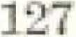had come for executing judgment upon evildoers, —Jeremiah 25:8. 9.
Jeremiah Fore told a seventy-year-long desolation of Jerusalem and the land of Judah. He said: “Therefore this is what Jehovah of armies has said, * “For the reason that you did not obey my words, here I am sending and I will take all the families of the north.” is the utterance of Jehovah, "even sending to Nebuchadrezzar the king of Babylon, my servant, and I will bring them against this land and against its inhabitants and against all these nations round about; and I will devote them to destruction and make them an object of astonishment and something to whistle at and places devastated to time indefinite. Ari l I will destroy out of them the sound of exultation and the sound of rejoicing, the voice of the bridegroom and the voice of the bride, the sound of the hand mill and the light of the lamp. And all this land must become a devastated place, an object of astonishment, and these nations will have to serve the king of Babylon seventy years.” * ** (Jeremiah 25:1-11) Thus, while the land of Judah lay uninhabited seventy years, the tuftoZe nation was to serve the kings of Babylon.
Jehovah then likened King Nebuchadnezzar to a drinking cup. He likened his own rage against the condemned nations to wine, which he would make them drink by means of the symbolic cup, Nebuchadnezzar. Jeremiah goes on to say: “This is what Jehovah the God of Israel said to me: Take this cup of the wine of rage out of my hand, and you must make all the nations to whom I am sending you drink it. And they must drink and shake back and forth and act like crazed men because of the sword [of Nebuchadnezzar] that I am sending among them.' ”
In a symbolic way, that is, by prophesying, Jeremiah passed the cup to the nations, making them drink the prophetic message before drinking its fulfillment: “I proceeded to take the cup out of the hand of Jehovah
and to make all the nations drink to whom Jehovah had sent me: namely, Jerusalem and the cities of Judah and her kings, her princes, to make them a devastated place, an object of astonishment, something to whistle at and a malediction, just as at this day.” After putting Jerusalem first in the order of being served with the cup of wine of divine rage, Jeremiah mentions in rapid order the countries of Egypt, Uz, Philistia, Edom, Moab, Ammon, Tyre, Sidon, Dcdan, Tema, Buz, Arabia, Zimri, Elam, Media. Yes, “and all the kings of the north who are near and far away, one after the other, and all the other kingdoms of the earth that are on the surface of the ground.”—Jeremiah 25:15-26.
Finally Jeremiah climaxes the serving of the cup from Jehovah's hand by adding: “And the king of She-shach himself will drink after them.” (Jeremiah 25:26) Jewish tradition has it that this name Shcshach is a cipher for the Hebrew name Babel (or Babylon), on the system by which the last letter of the Hebrew alphabet is substituted for the first letter of the alphabet and the next to the last letter (aMn) is substituted for the second letter of the alphabet (beth), the third last letter (resft) for the third (giwteZ), and so on.* Besides, the name Sheshach has the thought of humiliation, which was due for Babylon. Another suggestion is that Shcshach means “copper-gated,” which description was true of Babylon. This prophecy would mean, then, that the king of Babylon would cease to be the symbolic cup in Jehovah’s hand, but would, in turn, have the symbolic cup of wine, in the form of another king, put to his own lips. In that case it would be exclaimed ■ “O how Shcshach has been captured, and how the Praise of the whole earth gets to be seized! I low Babylon has become a mere object of astonishment among the nations!”—Jeremiah 51:41.
■ Sec footnote on Jeremiah 25: S6, page 2fi9. of Volume 4, of the New WOhki Trort^taftou cf the Hebrew Scripture#; 1958 edition. Also, naxic&H far jfte OJd Tt ‘..farnent lio&k#, by Koehler and Baumgartner, Volume 2, pagft 1014a, edition of 1953.
In harmony with this, Jeremiah, just before going into his prophecy on the cup and mentioning Sheshach, said: " ‘And it must occur that when seventy years have been fulfilled fon Jerusalem and the land of Judah] I shall cal] to account against the kin.it of Babylon and against that nation,' is the utterance of Jehovah, ‘their error, even against the land of the Chaldeans, and I will make it desolate wastes tn time indefinite. And I will bring in upon that land all iny words that I have spoken against it, even all that is written in this book that Jeremiah has prophesied against all the nations. For even they themselves, many nations and great kings, have plaited them [Jehovah’s people | as servants; and I will repay them according to their activity and according to the work of their hands.’ ”—Jeremiah 25:12-14.
The cupful of the wino of Jehovah’s rage is. not symbolic of a quantity of religious doctrines but. is symbolic of Jehovah’s rage to be poured out in execution of his judgment and vengeance. The effect of drinking it is next described in his words to Jeremiah:
*‘You must say to them, 'This is what Jehovah of ■fc’ r
armies, the God of Israel, has said: “Drink and get drunk and puke and fall so that you cannot get up because of the sword that I am sending among you/1 ’ And it must occur that in case they refuse to take the cup out of your hand to drink, you must also say to them, ‘This is what Jehovah of armies has said: "You will drink without fail. For, look! it is upon the city upon which my name is called that I am starting off in bringing calamity, and should you fnations | yourselves in any way go free of punishment?” 1 ‘You will not go free of punishment, for there is a sword that I am calling against all the inhabitants of the earth/ is the utterance of Jehovah of armies.”
It was distasteful to the nations for Jeremiah merely to prophesy these things against such nations. To them it was like having a foretaste of the symbolic cupful of wine.—Jeremiah 25:27-29.
In a symbolic way Jeremiah had to make Jerusalem and the land of Judah and their rulers drink the cup. Hence he had to serve this prophetic message of divine rage on the rulers and the people. This occurred specially in the fifth year of the reign of Jehoiakim. We read: “Now it camo about in the fourth year of Jehoiakim the son of Josiah, the king of Judah, that this word occurred to Jeremiah from Jehovah, saying: 'Take for voursolf a roll of a book, and vou must write in it all the words that I have spoken to you against Israel and against Judah and against all the nations, since the day that I spoke to you, since the days of Josiah, clear down to this day. Perhaps those of the house of Judah will listen to all the calamity that I am thinking of doing to them, to the end that, they may return, each one from his bad way, and that I may actually forgive their error and their sin/ ”—Jeremiah 36:1-3.
Jeremiah promptly called his secretary, Baruch the son of Neriah, and dictated to him Jehovah’s message. Because of his own inability, Jeremiah told Baruch to take the written message and go to the temple in Jerusalem and read it aloud to all those there on the fast day. This fast, day was called nine or more months after Jeremiah began to dictate and produce the scroll. So the fast day was observed “in the fifth year of Jehoiakim,” or, 624 B.C., in the wintry ninth lunar month, Kislev (falling partially in November and partially in December). This was the second year of the reign of Nebuchadnezzar as king of Babylon. Courageously, on the fast day, Baruch took his position in the temple’s upper courtyard, at the entrance of the new gate of the temple, and read aloud what he had written at Jeremiah’s dictation. Among the people hearing Baruch’s reading was Micaiah the son of Prince Gemariah. T> immediately went to the room of the king’s secretary, where a meeting of all the princes
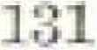was being hold. He reported what he had heard Baruch read.
UOOK-Bl T KNI.N <1
The princes had Baruch brought before them, to read the roll of prophecy to them. They felt obliged to tell King Jehoiakim what Baruch had read. They took the prophetic roll from Baruch and considerately told him and his master Jeremiah to conceal themselves where they could not be found. Meantime they put the book in a room of the king’s secretary. When they told the king about it, he sent for the prophetic roll. Then, as all the princes stood about, King Jehoiakim had Jehudi, who had got the roll, to read it. “And the king was sitting in the winter house, in the ninth month, with a brazier burning before him. Then it came about that as soon as Jehudi had read three or four pagecolumns, he proceeded to tear it apart with the sea* rotary’s knife, pitching it also into the fire that was in the brazier,1’ Aftcx' three or four more page-columns were read, that section was also cut off and pitched into the fire.
Three of the princes pleaded with the king not to burn Jeremiah’s roll, but he paid no attention, and thus the whole roll was burned. Though that was bad in itself, none of the princes acted as King Josiah had done when the book of the law of Moses, found during the temple cleansing, was read to him. They did not rip their garments apart. The hardhearted king sent to arrest Baruch and Jeremiah, but in vain. “Jehovah kept them concealed.” (Jeremiah 36:4-26) Nevertheless, due notice had been served on King Jehoiakim.
Here a lesson was given to show that Jehovah’s Word stands forever and cannot be destroyed by wicked men. Jehovah told Jeremiah: “Take again for youi'self a roll, another one, and write on it all the first words that proved to be on the first roll, which Jehoiakim the king of Judah burned up. And against Jehoiakim the king of Juda ft you should say, "This is what Jeho-
vah has said: “You yourself have burned up this roll, saying, ‘Why is it That you have written on it, saying: “The king of Babylon will come without fail and will certainly bring this land to ruin and cause man and beast to cease from it”?' Therefore this is what Jehovah has said against Jehoiakim the king of Judah, ‘He will come to have no one sitting upon the throne of David, and his own dead body will become something thrown out to the heat by day and to the frost by night . And I will call to account against birr] and against his offspring and against his servants their €?rror, and I will bring upon them a nd upon the inhabitants of Jerusalem and upon the men of Judah all the calamity that I have spoken against them, and they did not listen/ ” ’
Jeremiah obeyed. As lie dictated, his secretary Baruch wrote upon the new roll “all the words of the book that Jehoiakim the king of Judah had burned in the fire; and there were added to them many more words like those/’ Jeremiah 36:27-32; 45:1-5.
We should take note that this occurred toward the end of the fifth year of the reign of King Jehoiakim, or in 624 B.C., and that King Nebuchadnezzar of Babylon had not yet come against Jerusalem. King Jehoiakim objected to Jeremiah’s prophesying in the roll that the king of Babylon would without fail come and bring the land to ruin. ( Jeremiah 36:9, 29) At this time Daniel, who was to become Jehovah’s great prophet in Babylon, was but a boy, likely not yet in his teens, and lie was not yet deported to Babylon. When, therefore, did the now king of Babylon come gainst King Jehoiakim at Jerusalem and make him a tributary king, a vassal king?
As we look for the answer, we must keep in mind the above information when we read the following historic record:
“In his days Nebuchadnezzar the king of Babylon came up, and so Jehoiakim became his servant for three years. However, he turned back and rebelled against him. And Jehovah began to send against him marauder bands of Chaldeans and marauder bands of Syrians and marauder bands of Moabites and marauder bands of the sons of Ammon, and he kept sending them against Judah to destroy it, according to Jehovah’s word that he had spoken by means of his servants the prophets. It was only by' the order of Jehovah that it took place against Judah, to remove it from his sight for the sins of Manasseh, according to all that he had done; and also for the innocent blood that he had shed, so that he filled Jerusalem with innocent blood, and Jehovah did not consent to grant forgiveness. As for the rest of the affairs of Jchoiakim and all that he did, r are they not written in the book of the affairs of the days of the kings of Judah? Finally Jehoiakim lay down with his forefathers, and Jehoiachin his son began to reign in place of him.”—2 Kings 24:1-6.
Those words in 2 Kings 24:1-6 must not be misread. They do not say that Nebuchadnezzar came up against King Jehoiakim at Jerusalem in the first year of Jc-hoiakim’s reign (628 B.C.) and made him tributary to Babylon. They do not say that Jehoiakim continued as a vassal to Babylon for the first three years of his reign and then rebelled against the king of Babylon in the fourth year of his reign and kept up this rebellion for eight years, till the eleventh and final year of his reign. This could not be the case, for in the ninth month of the fifth vear of Jehoiakim’s reign Jeremiah 36:9, 29 speaks of Babylon’s king as y et to come into the land of Judah to ruin it. So, if King Jchoiakim was “servant for three years” to the king of Babylon and then rebelled, these must have been the last three years of King Jehoiakim’s reign of eleven years.
In view of this, it must have been toward the end of the eighth year of Jehoiakim’s reign at Jerusalem that Nebuchadnezzar came to Jerusalem for the first time and made King Jehoiakim his vassal. Hence the ninth year of Jehoiakim’s reign at Jerusalem, or 620 B.C., was the first year of his vassalage to Babylon, In the third year after that, the third year of Jehoiakim *s vassalage, he rebelled and stopped paying tribute to Babylon. For this reason Nebuchadnezzar came against Jerusalem the second time, to punish the reliel king. That was in 618 B.C.—See Harper’s Bible Dictionaryj. by M. S. and J. L. Miller, edition of 1952, page 306, under “Jehoiakim.”
However, Nebuchadnezzar never did take King Je-hoiakim alive. Jehoiakim did not make peace with Nebuchadnezzar or surrender to him but died inside Jerusalem. How, the Bible does not disclose. He was not given an honorable burial, to fulfill Jehovah's prediction: “With the burial of a h -ass he will be buried, with a dragging about and a throwing away, out beyond the gates of Jerusalem.’* Lying unattended out there, his corp;-? became exposed to the sun’s heat by day and to the frost bv night.—Jeremiah 22:18, 19; 36:30.
It had been the intention of Nebuchadnezzar to take King Jehoiakim alive and in fetters to Babylon as a captive. To this effect 2 Chronicles 36:5-8 reads: “For eleven years he reigned in Jerusalem; and he continued to do what was bad in the eyes of Jehovah his God. Against him Nebuchadnezzar the king of Babylon came up that he might bind him with two fetters of copper to carry him off to Bab} Ion. And some of the utensils of the house of Jehovah Nebuchadnezzar brought to Babylon and then put them in his palace in Babylon. As for the rest of the affairs of Jehoiakim and his detestable things that he did and what was to be found against him, there they are written in the Book of the Kings of Israel and Judah; and Jehoiachin his son began to reign in place of him.”
Since Jehoiachin came to the throne of his father Jehoiakim, how does this harmonize with Jehovah’s declaration that Jehoiakim would have no one sil ting on the throne of David at Jerusalem? (Jeremiah 36:
30) It does not contradict Jehovah’s declaration, because, in fact, Jehoiachin reigned just three months and ten days, and this short period is hardly to be taken into account. (2 Chronicles 36:9, 10) In harmony with what the prophet Jeremiah had been advising the people, Jehoiachin surrendered quickly to Nebuchadnezzar. For this reason it did not go too hard with him. We read:
“Eighteen years old was Jehoiachin when he began to reign, and for three months he reigned in Jerusalem. And his mother’s name was Nehushta the daughter of Elnathan of Jerusalem. And hi? continued to do what was bad in Jehovah’s eyes, according to all that his father had done. During that time the seiwants of Nebuchadnezzar the king of Babylon came up to Jerusalem, so that tlie city came under siege. And Nebuchadnezzar the king of Babylon proceeded to come against the city, while his servants were laying siege against it. At length Jehoiachin the king of Judah went out to the king of Babylon, he with his mother and his servants and his princes and his court officials; and the king of Babylon got to take him in the eighth year of his being king.” The eighth year of Nebuchadnezzar's reign was from Nisan 1, 618 B.C., to Adar 29, 617 B.C., or March 19, 617B.C.
On this occasion Nebuchadnezzar took much treasure from Jehovah’s temple and from the king’s house, j.'c a’<n look track with him into exile in Babylon all the principal men of Jerusalem and the skilled workmen and the military men and builders “No one had been left behind except the lowly class of the people of the land. Thus he took Jehoiachin into exile to Babylon; and the king’s mother and the king’s wives and his con ri officials and the foremost men of the land he led away as exiled people from Jerusalem to Babylon. . . . Further, the king of Babylon made Mattaniah his uncle king in place of him. Then he changed his name to Zedekiah.”—2 Kings 24:8-17.
It was at. that time that the young Daniel and three special companions were taken exile to Babylon. In Daniel 1:1 he writes about it: “In the third year of the kingship of Jehoiakim the king of Judah. Nebuchadnezzar the king of Babylon came to Jerusalem and proceeded to lay siege to it.” This was after King Jehoiakim had rebelled against the king of Babylon, after being a vassal for about three years.
Hence the expression “in the third year of the king-ship of Jehoiakim the king of Judah’’ means in ihe third year of Jehoiakim as a vassal king paying tribute to Babylon. Since his vassalage began after he reigned eight years in Jerusalem, this third year of his reign as Babylon’s vassal would be the eleventh year of his entire reign at Jerusalem and would be due to end by the Jewish lunar calendar on Adar 29, 617 B.C., or March 19, 617 B.C. Jehoiakim’s unexplained death evidently did not permit him to live to the end of this eleventh year at that date.4
Plainly, then, Daniel and his three companions did not go into exile at Babylon in the third year of Jehoi-akim's reign at Jerusalem independent of Babylon, which third year of independent rule was from Nisan 1, 626 BXU to Adar 29, 625 B.C. (March 17, 625 B.C.) It was after King Jehoiakim had died in disgrace in the eleventh year of his entire reign some time prior to March 19, 617 B.C., that Daniel was taken into exile to Babylon. It was evidently when Jehoiakim’s son Jehoiachin, after reigning at Jerusalem for three months and ten days, was taken into exile in 617 B.C. that Daniel was taken along as an exile from Jerusalem.
So, then, as regards the captivity of Jews at Babylon, the exile and captivity of even part of the Jews at Babylon did not begin in 625 B.C. at the end of the third independent year of rule of King Jehoiakim at Jerusalem, likewise, the seventy-year period that wras foretold by the prophet Jeremiah did not begin in that year of 625 B.C. Certainly the land of Judah was not then turned upside down like a vessel and emptied of all its inhabitants. Kven eight years later, in 617 B.C., when young King Jehoiachin was taken exile to Babylon, only a small portion of the people were taken along with him. The vast majority of the people remained, and Jerusalem and the other Judean cities remained populated, and the land was by no means left an uninhabited desolation. Not all the people of Judah were then doing service at Babylon to the king of Babylon.5
It is because of making the mistake of dating the beginning of the seventy-year period flor the desolation of Jerusalem and the land of Judah after’ King Jehoi-akim reigned at Jerusalem but three years that the chronologers in Christ endom throw their time schedule of history at least nineteen years out of order, shortening up the stream of time by that many years. They do this because of trying to harmonize the Bible records with the astronomical Canon of Claudius Ptolemy, an Alexandrian or Egyptian astronomer of the second century after Christ, but whose system of astronomy has long since been exploded. In this we do not go along with such chronologers.
After King Jehoiachin, his princes and young Daniel and the priest named Ezekiel the son of Buzi were deported to Babylon, the beginning of the seventy years of Judah's desolation had yet eleven years to wait. (Ezekiel 1:1-3) They began after the last king, Zedekiah the uncle of Jehoiachin, was dethroned and when the land of Judah was left desolate. When, in 617 B.C., Nebuchadnezzar placed Zedekiah on the throne of Jerusalem as a vassal king, he “made him swear by God,” Hence Jehovah God considered Zedekiah oath of faithful submission to Nebuchadnezzar as an oath made to him. (2 Chronicles 36:13) On this matter Ezekiel 17:12-14 has this to say:
“Look! The king of Babylon came to Jerusalem and proceeded to take its king [Jehoiachin] and its princes and bring them to himself at Babylon. Furthermore, he took one of the royal seed [Mattaniah, or Zedekiah] and concluded a covenant with him and brought him
[con£tftuecf from page AST) would be the "eighth ywr’’ of his reign. (2 Kings 21:12) So, then, it was actually in the eighth year of his reign in Babylon that he tock into exile the above-mentioned 3.023 Jews, evidently not countinr; in their wives and families, numbering thousands:.—2 Kings 34:14-16.
Parallel with the above, the "eighteenth year" of Nebuchadnezzar spoken of In Jeremiah 52:29 would be the "eighteenth year" of his dominalien over Palestine, hut the "nineteenth year" of his entire reign in Babylon, as mentioned Ln 2 KIdes 25: S.
into an oath; and the foremost men of the land he took away, in order that the kingdom might become low, unable to lift itself up, that by keeping his covenant it might stand.**
In i he fourth year of King Zedekiah, or in 614 B.C., the priest Jeremiah wrole a prophecy setting out in detail the coming fall of Babylon. This was in contrast with the prediction that the false prophet Hananiah the son of Azzur had made against Babylon that same year, to the effect that Jehovah God would break the Babylonian yoke off the neck of the kingdom of Judah and would soon bring the capt ives and the temple utensils back from Babylon, (Jeremiah 28:1-4) In that same year King Zedekiah made a visit to Babylon for political reasons, doubtless to reassure the king of Babylon by personally bringing the tribute due to Nebuchadnezzar. At this time it appears that the governor of the city of Babylon was one Nabonidus, whom King Nebuchadnezzar was thinking of marrying to his favorite daughter Nitocris, who was named after her mother, the Egyptian Nitocris.* So King Zedekiah may have appeared before this Governor Nabonidus as well as King Nebuchadnezzar. On this official visit Zedekiah took along his quartermaster or grand chamberlain Seraiah.
The prophet Jeremiah took advantage of this to have this Seraiah the son of Neriah take along the roll containing the prophecy on Babylon's fall and to read it aloud at Babylon. He tells us:
“The word that Jeremiah the prophet commanded Seraiah the son of Neriah the son of Mahseiah when lie went with Zedekiah the king of Judah to Babylon in the fourth year of his being king; and Seraiah was
• See the book by G. R. Tnbouls entitled "Nebuchadnezzar," and chapter tour entitled “The Embassy ot Zedekiah." oarticvluriy IJB-S:).
the quartermaster. And Jeremiah proceeded to write in one book all the calamity that would come upon Babylon, even all these words written against Babylon, Furthermore, Jeremiah said to Seraiah: ‘As soon as 5 ou come to Babylon and actually see her. you must also read aloud all these words. And you must say, “O Jehovah, you yourself have spoken against this place, in order to cut it off so that there may come to be in it no inhabitant, either man or even domestic animal, but that she may become mere desolate wastes to time indefinite.'1 And it must occur that when you will have completed reading this book, you will tie to it a stone, and you must pitch it into the midst of the Euphrates. And you must say, “This is how Babylon will sink down and never rise up because of the calamity that I am bringing in upon her; and they will certainly tire themselves out.” ’ **—Jeremiah 51:59-64.
c H
A P T
-
R
9
of Zion
ER. EMI A. H'S prophecy foretelling Babylon’s fall was no reason for King Zedekiah to act rebelliously toward King Nebuchadnezzar. Why not? Because at the time of this prophecy Jeremiah was also telling those Jews already captive in Babylon that they would not be brought back to their homeland before a period of seventy years. He also urged Zedekiah to keep his neck under Babylon’s yoke for his own and the people’s good.—Jeremiah 29:1-10; 27:12-15.
At this time Jehovah raised up another prophet to foretell the destruction of Jerusalem by the king of Babylon and also the judgment work that this conqueror would execute on other nations, including Egypt, whom Zedekiah favored. This prophet was raised up from among the Jewish captives in Babylonia. He writes: HOn the fifth day of the month [the fourth month ], that is. in the fifth year of the exile of King Jehoiachin, the word of Jehovah occurred specifically to Ezekiel the son of Buzi the priest in the land of the Chill deans by the river Chebar, and upon him in that place the hand of Jehovah came to be.’*—Ezekiel 1:1-3,
Thus, in 613 B.C., the thirty-year-old Ezekiel became, not a full-grown priest at Jehovah's temple, but one of his major prophets, there at Tel-abib by the river Chebar. This river was the fine canal that Nebuchadnezzar had dug to connect up the Euphrates with the Tigris River so as to advance the commercial and
i-ii economic potential of Babylonia. Ezekiel continued to prophesy in Babylonia for twenty-two years, or tik 591 B.C.—Ezekiel 3:15; 29:17,18.
The exiled priest Ezekiel did not directly see what was going on in Jehovah’s temple at Jerusalem, but he had it revealed to him by inspired vision. That was in the second year of his prophesying, but in the sixth year of King Zedekiah’s reign. (Ezekiel 8:1-4) He was transported in vision to the inner north gate of ihe temple. There he saw a detestable idol, “the symbol of jealousy,” set up in violation of the exclusive devotion demanded by Jehovah God and contrary to the Second of the Ten Commandments. (Exodus 20:4-6) Then, in vision, Ezekiel bored through the temple wall and inside he saw carved on the wall “every representation of creeping things and loathsome beasts, and all the dungy idols of the house of Israel” all round about. Seventy elderly men of the house of Israel were actually offering incense to these idolatrous carvings. Thev thought that Jehovah did not see them doing so<—Ezekiel 8:3-12.
However, there were more detestable things to be shown being practiced at the temple where Jehovah had put his name. “So,” says Ezekiel, “he brought me to the entrance of the gate of the house of Jehovah, which is toward the north, and, look! there the women were sitting, weeping over the god Tammuz.” Here, in Ezekiel 8:13, 14, the Roman Catholic Douay Version calls this god “Adonis,” for that is what the official Latin Vulgate version calls him. Who was he?
The name Adonis, by which this deity was known to the Greeks, is none other than the Phoenician fris, ’Adhun, which is the same in Hebrew. . . .
(1) The name of a Phoenician drily, the Adonis of ih<? Greeks. He was originally a Sumerian or Babylonian sun-god, called Dumuzu, the husband of Ishtar, who corresponds to Aphrodite L Venus J of the Greeks. The worship of these deities was introduced into Syria in very early times under Ihe designation of Tammuz arid
Astarte, and appears among the Greeks in the myth of Adonis and Aphrodite, who are identified with Osiris and Isis of the Egyptian pantheon, showing how widespread the cult became. The Babylonian myth repre* seals Dumuzu, or Tammuz, as a beautiful shepherd slain by a wild boar, the symbol of winter. Ishtar long mourned for him and descended into the underworld to deliver him from the embrace of death. . . . This mourning for Tammuz was celebrated in Babylonia by women on the 2d day of 1he 4th month, which thus acquired the name of Tammuz. , . . The women of Gcbal [Syria! used to repair to ilT-j temple in midsummer to celebrate the death of Adonis or Tammuz, and (here arose in connection with this celebration those licentious rites which rendered the cult so infamous that it was suppressed by Constantine the Great,—IS BE, Volume 5, page 2908a.
According to Encyclopedia Americana (Volume 26 of the 1929 edition, page 238), the name Dumu-zu in Sumerian means 4‘the sun of life.” But The Two Babyions, by Hislop, page 245, says;
The name Tammuz, as applied to Nimrod or Osiris, was equivalent to Alorus, or the "‘god of fire/’ and seems to have been given to him as the great purifier by fire. Tammuz is derived from tarn, “to make perfect," and “Are/’ and signifies "Fire the perfecter/’ or “the perfecting fire." To this meaning of the name, as well as to the character of Nimrod as the Father of the gods, the Zoroastrian verse al LudeS when it says: "Ail things are the progeny of ONE FULE. The FATHER perfected all things, and delivered them to the second mind, whom all nations of men call the first." . . . And hence, too, no doubt, the necessity of the fire of Purgatory to “perfeet” mcnrs souls at last, and to purge away all the sins that they have carried with them into the unseen world.
Firrll-cr, on Tffir.muz, Hislop adds, on pages 21, 22:
Tn scripture he is referred to (Fzektel 4:14) under the name of Tammuz but he is commonly known among classical writers under the name of Bacchus, that, is, “The Lamented One/7 To the ordinary reader the name of Bacchus suggests nothing more than revelry and drunkenness, but it is now well known, that amid all the abominations that attended his orgies, their grand design was professedly "the purification of souls," and that from the guilt and defilement of sin. This lamented one, exhibited and adored as a little eh.ld in his mother's arms, , . .
Swine, to which the wild boar belonged, were abominable to the Jews but “were the animals of the god Tammuz/’ The Babylonians ate no swine on the thirtieth day of their fifth month, because that day was dedicated to such animal. So says The Monuments and the Old Testament, by Price-Sellers-Carlson, page 200.
Among the Babylonians an upright cross was a sacred symbol. As in the Hebrew alphabet, such a cross was the original form of their letter T (or Taw), and so it was the initial letter of the name of their god Tammuz, or Bacchus. The cross was worshiped centuries before the so-called Christian era. That this wornoted in the book Neizi
ship spread from Babylon is
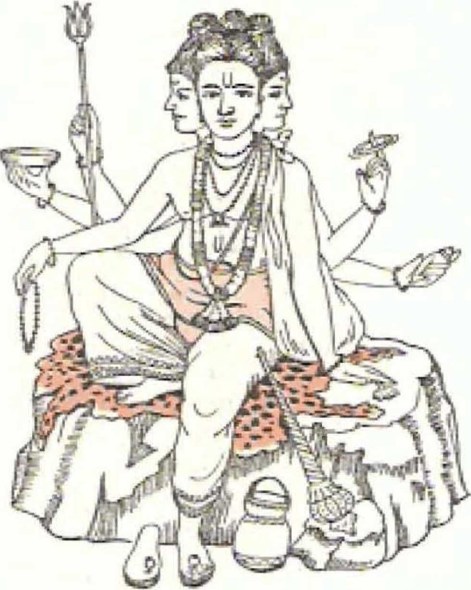Trimurti, the Hindu Triad
£.tght on the Mo8t Ancient East, by archaeologist V. Gordon Childe, pages 184, 183 (edition of 1953), in chapter IX entitled "Indian Civilization in the Third Millennium B.C.” There you will read:
A "seal’ from Mohenjo daro depicts a horned deity with three faces sitting cross-legged in the attitude of ritual meditation between various wild animals; he is obviously the prototype of Siva, 'three-faced,' Tord of beasts/ 'prince of yogis/ . . , Several clay tablets depict a male deity; one shows a river gushing out of a noddess’s womb. In other cases tree-spirits are clearly indicated. In contrast to such themes, all familiar to Hindu iconography, are isolated motives suggestive of Babylonia—an antithetic group of *a hero dompting tigers' and a half-human mon ster like the Sumerian Rnkidu grappling with a bull or a tiger. The swastika and the cross, common on stamps and plaques, wore religious or magical symbols as in Babylonia and Elam in the earliest prehistoric period, but preserve that character also in modern India as elsewhere.
Says The Two Babylon# (Hislop), on pages 199, 204, 205, regarding the cross:
It was worshipped in Mexico for ages before the Roman Catholic missionaries set foot there, large stone crosses being erected, probably to the "god of rain." The cross thus widely worshipped, or regarded as a sacred emblem, was the un< equivocal symbol of Bacchus, the Babylonian. Messiah, for he was represented with a head-band covered with crosses . *. This symbol of the Babylonian god is reverenced at this day in all the wide wastes of Tartary [Asian and European location of Tatars!, where Buddhism prevails, and the way in which it is represented among them forms a striking commentary on the language applied by Rome to the Cross. JThc cross," says Colonel Wilford, in the Z.static Researches, ‘’though not an object of worship among the I Jaud’has or Buddhists, is a favourite emblem and device among them. ... [in Christendom] the Tan. the sign of the cross, the Indisputable sign of Tammuz, the false Messiah, was everywhere suhstitttted in its stead Lin the stead of the Greek Letter CM or X as in C7t.mf tSs ]. .. .
& « V
□ 0
Tammuz (Bacchus)
Tammuz Wearing Crosses
in effect, bewailing the
Doubtless, the cross was sacred as a symbol among 1 h o sc apos tat e J ewish women whom Ezekiel saw polluting Jehovah’s temple by sitting weeping there over the Babylonian Bacchus ,t the god Tammuz, These women were, death of the mighty hunter Nimrod, the founder of Babylon who no doubt met a violent death because he was guilty of violence toward man and beasts, (Genesis 10:8-10; 9:6) Whereas those Jewish women were indirectly worshiping the sun-god in the same way that Babylonian women did, the prophet Ezekiel saw direct worship of the sun at Solomon’s temple in Jerusalem. Telling what he saw, Ezekiel says:
t Tn H^bn'w the word (or the verb ;i ; 1." Llzi-kh!! !•: . 11. C.’iiiiip.i:t- F Hl’ 6.
"to weep”
is
rrt-i),
“So he brought me to the inner courtyard of the house of Jehovah, and, look! at the entrance of the temple of Jehovah, between the porch and the altar, there were about twenty-five men with their backs to the temple of Jehovah and their faces to the oast, and they were bowing down to the east, to the sun/’ —Ezekiel 8:16.
Besides such detestable false worship in Jehovah’s temple itself, the apostate Jews filled the land of Judah with violence. It conies as no surprise, therefore, that Ezekiel hears the call for Jehovah’s executioners to come with their weapons for smashing and stand beside the altar in the inner courtyard of the temple. Jehovah then gives them orders to go through the midst of unfaithful Jerusalem and kill off everybody not marked as a worshiper of Jehovah: “Old man, young man and virgin and little child and women you should kill off— to a ruination. But to any man upon whom there is the mark do not go near, and from my sanctuary you should start/*
Ezekiel reports that Jehovah’s executioners started by killing first those twenty-five sun-worshipers at the temple porch, although this defiled the temple courtyard with slain persons. The temple was also bloodied by their killing off those seventy elderly men inside w ho were worshiping idolatrous carvings on the walls and all those women who were sitting, weeping for the cross-marked god Tammuz. (Ezekiel 8: 17 to 9:8) This vision of Ezekiel was but a preview of what was about to befall Jerusalem when Jehovah made her drink the cup of wine of his rage out of His hand by means of his executional servant, King Nebuchadnezzar, and his armies.—Jeremiah 25:9,15-18.
JERUSALEM NEARS DESTRUCTION
Three years after Ezekiel’s prophetic vision, or in 609 B.C., which was also the ninth year of the reign of King Zedekiah, events took a sharp turn that directly led to the destruction of Jerusalem. That ninth year was a sabbath year in wh ich the J a nd of J udah was to lie uncultivated,, unworked, and thus enjoy Its sabbath of rest according to Jehovah’s law stated in Leviticus 25:1-7.* Since this sabbath year of the land began on the same day as the Jubilee year, namely, on the atonement day, which was on the tenth day of the seventh lunar month, this sabbath year extended to Tishri 9 in the tenth year of Zedekiah's rcignT (Leviticus 25:8-10} But there is no record in the Bible that King Zedekiah and the priests caused that year-long sabbath of the land to be kept. It was Zedekiah’s last opportunity to consider the need of the God-given land. By this time the land was crying out to Jehovah God for its legal rest, which he had commanded to be given to it. He heard the cry, and soon answered it, as he had said he would do,—Leviticus 26:2,31-35.
In this part sabbatical year, the ninth year of his reign, Zedekiah broke his oath that he had made to the king of Babylon in Jehovah's name.f He went contrary to the name that King Nebuchadnezzar had given him, namely, Zedekiah, which means ‘‘Righteousness of Jehovah," He rebelled. “For on account of the anger of Jehovah it occurred in Jerusalem and Judah, until he had cast them out from before his face, that Zedekiah proceeded to rebel against the king of Babylon." (Jeremiah 52:3) Jehovah God informed his prophet Ezekiel of this in faraway Babylonia and said: “He f Zedekiah] finally rebelled against him in sending his messengers to Egypt, for it to give him horses and a multitudinous people* Will he have success? Will he escape, he who is doing these things, and who has broken a covenant?
* See pngc 85, Tl-3.
T See Josephus' o/ ?he Jewe, Book iot chapter 7, para
graph 3.
And will he actually escape?” To this, God’s answer was:
**4As I am alive,’ is the utterance of the Lord Jehovah, In the place of the king who put in as king the one that despised his oath and that broke his covenant, with him in the midst of Babylon he will die. And by a great military force and by a multitudinous congregation Pharaoh [of Egypt 1 will not make him effective in the war. by throwing up a siege rampart and by building a siege wall, in order to cut off many souls. And he has despised an oath in breaking a covenant, and, look! he had given his hand and has done even all these things. Tic will not make his escape.’ ”
“Therefore this is what the Lord Jehovah has said: 1 As I am alive, surely my oath that he has despised and my covenant that he has broken—I will even bring it upon his head. And I will spread over him my net, and he will certainly be caught in my hunting net; and I will bring him to Babylon and put myself on judgment with him there respecting his unfaithfulness with which he acted against me. And as regards all the fugitives of his in all his bands, by the sword they will fall, and the ones left remaining will be spread abroad even to every wind. And you people will have to know that I myself, Jehovah, have spoken it? **■—Ezekiel 17:15-21.
In the ninth year of Zedckiah’s reign King Nebuchadnezzar marched bis armies southward toward the rebellious land. He came to a fork in the road. One branch of the road led toward the city of Rabbah of the Ammonites and the other toward the rebel city of Jerusalem. Superstitiously he halted to determine which branch of the road fork to take. Should he go directly on to Jerusalem or turn aside to Rabbah? He felt he must lot superhuman powers direct him, He resorted to Babylonian divination. “He has shaken the arrows. He has asked by means of the teraphim; he has looked into the liver [of an animal vict im In his right hand the divination proved to be for Jerusalem.” The divination proceedings resulted in favor of the right hand. So Nebuchadnezzar passed by the road leading loft or eastward and took the road leading right, to Jerusalem. Almighty God Jehovah did not let the Babylonian divining process go contrary to his own supreme will. The judgment sword of war must be directed against the defiled,, unfaithful city and its oathbreaking king. Jerusalem must be the first to drink the cup of wine of God’s rage at the hand of her God whom she had rejected.- Ezekiel 21:14-24.
By inspiration Jehovah described this to his prophet Ezekiel in Babylonia and then directed these words to Zedekiah: “And as for you, O deadly wounded, wicked chieftain of Israel, whose day has come in the time of the error of the end, this is what the Lord Jehovah has said, ‘Remove the turban, and lift off the crown. This will not be the same. Put on high even what is low, and bring low even the high one. A ruin, a ruin, a ruin I shall make it. As for this also, it will certainly Income no one's until he comes who has the legal right, and I must give it to him.’ **—Ezekiel 21:25-27.
With those words of judgment Jehovah declared that Zedekiah would lose his seat on "Jehovah’s throne” at Jerusalem. The active royal rule of the house of David would cease at that city. Up to that time the kingdom of Judah had been high as the miniature representation of God’s kingdom on earth. It had been like a roadblock to the Gentile rulers in their march to world domination. Now the kingdom of Judah was to be brought low. The Gentile powers that had been treated as low and beneath God’s typical kingdom were to be put on high. There must come times of Gentile domination over all the earth, with no interference on the part of any miniature kingdom of Jehovah God. This would not mean, however, that the scepter was to turn aside from the tribe of Judah, or that Jehovah was canceling his covenant with King David for an everlasting kingdom.
To assure us of this, Jehovah said that the covenant with David would remain in force, though the Davidic kingdom in action at Jerusalem would be ruined. For a time the right to the kingdom would not be exercised, but the right would remain within the tribe of Judah, within the royal family of David, awaiting the arrival of the one with the legal right to it, who would prove worthy of exercising it. Then Jehovah would unfail’ ingly give it to him. This one would be the promised Shiloh, which name means “The One Whose It Is,” and to him the obedience Of the God-fearing people would belong. When he took up the Kingdom right and exercised it, this would spell the end of those Gentile times of world domination.—Genesis 49:10.
Better than by international radiocasting or television of today, the prophet Ezekiel in Babylonia was kept informed of King Nebuchadnezzar’s movements as Jehovah’s exccutional ollicer. On the very day that Nebuchadnezzar reached the city of Jerusalem and began operations there, Ezekiel was notified: “And the word of Jehovah continued to occur to me in the ninth year, in the tenth month, on the tenth day of the month, saying: 'Son of man, write down for yourself the name of the day, this selfsame day. The king of Babylon has thrown himself against Jerusalem on this selfsame day. And compose a proverbial saying concerning the rebellious house, and you must say concerning them, “*This is what the Lord Jehovah has said: . . . “Woe to the city of deeds of bloodshed!” * ” * ”—Ezekiel 24:1-6.
In besieged Jerusalem the king and his princes became quite serious as they came into the tenth year of Zcdekiah’s reign, with the sabbath year overlapping on it. They thought it advisable to do something to conform to Jehovah’s law and gain his favor. It was not the Jubilee year of freedom* but they concluded a cove-want with the people over a sacrificial victim and proclaimed liberty to them and let their Hebrew servants go free. This was done according to the rule of manumitting or setting Hebrew servants free on the seventh year, after s \ years of servitude. (Deuteronomy 15: 12-18) But this generosity on the ruler's part was not long-lived.
rhe news broke around Jerusalem that an Egyptian army was on the way to push back the Babylonians and relieve the besieged city. So, for the time being, Nebuchadnezzar raised the siege of Jerusalem and marched off to meet the oncoming Egyptian threat. Thus relief came to Jerusalem. The rulers felt it. Thinking that the Babylonians would be defeated and put out of action and be too crippled to come back and renew the siege, Jerusalem's rulers became confident. Greed seized them again, and they changed their attitude toward God and those manumitted Hebrew servants, They broke the covenant granting servants due liberty and brought them back into servitude again.* This made Jehovah God indignant. By Jeremiah he said:
** ‘You yourselves have not obeyed me in keeping on proclaiming liberty each one to his brother and each one to his companion. Here I am pro claiming to you a liberty/ is the utterance of Jehovah, Jto the sword, to the pestilence and to the famine, and I shall certainly give you for a quaking to all the kingdoms of the earth. And I will give the men side-stepping my covenant, in that they did not carry out the words of the covenant that they concluded before me with the calf t hat they cut in two that they might pass between its pieces; namely, the princes of Judah and the princes of Jerusalem, the court officials and the priests and all the people of the land who went passing between the pieces of the calf-—yes, I will give them into the hand of their enemies and into the hand of those seeking for their
• Compare with pages 132'140 Of by G. R. TabouJs. soul; and their dead bodies must become food for the flying creatures of the heavens and for the beasts of the earth. And Zcdckiah the king of Judah and his princes I shall give into the hand of their enemies and into the hand of those seeking for their soul and into the hand of the military forces of the king of Babylon who are withdrawing from against you men.’ ” How would this be? Jehovah explained how:
“ ‘Here I am commanding/ is the utterance of Jehovah, ‘and I shall certainly bring them back to this city, and they must fight against it and capture it and burn it with fire; and the cities of Judah I shall make a desolate waste without an inhabitant.’”—Jeremiah 34:8-22.
JEREMIAH Alt RESTED
For a while longer the prophet Jeremiah enjoyed his freedom to go in and out among the people. King Zedc-kiah even sent a couple of representatives to him to ask him to pray to Jehovah to reverse His announced purpose, Jehovah's answer to this came during the time that the Babylonian armic-- were occupied with turning back the Egyptian relief armies. We read: 4‘And there was a military force of Pharaoh (Apries, or Hophra] that came out of Egypt; and the Chaldeans that were laying siege to Jerusalem got to hear the report about them. So they withdrew from against Jerusalem. Then the word of Jehovah occurred to Jeremiah.” The unchanging message dashed King Zede-kiah’s hopes:
“This is what you men [from Zedckiah] should say to the king of Judah, the one sending you to me to inquire of me: ‘Look! The military force of Pharaoh that is coming forth to you people for the purpose of assistance will have to go back to their land, Egypt, And tlie Chaldeans will certainly come back and fight against this city and capture it and burn it with fire.’ This is what Jehovah has said: ‘I Jo not deceive your souls, saying, “The Chaldeans will without fail go away from against us,” because they will not go away. For if you men had struck down all the military force of the Chaldeans who are fighting you and there remained over among them men pierced through, they would each one in his tent rise up and actually burn this city with fire.’ *’—Jeremiah 37:3-10; 44:30.
Taking advantage of the raising of the siege of Jerusalem by the withdrawal of the Babylonian forces, Jeremiah wanted to leave the capital and go to his home territory in Benjamin, likely his native town of Anathoth about five miles northeast of Jerusalem.
“It is to the Chaldeans that you are falling away!” said the officer in charge of the northern city gate as he grabbed Jeremiah in the gate of Benjamin. Jeremiah denied: “It is false! I am not falling away to the Chaldeans.” Thinking that Jeremiah was trying to follow his own advice to the people in Jerusalem* the princes struck him, fettered him and put him in a house of detention inside Jerusalem. “When Jeremiah came into the house of the cistern and into the vaulted rooms, then Jeremiah continued dwelling there many days.”
During those days the Babylonian forces met the Egyptian forces and dealt with them in such a way that they returned to Egypt. The Babylonians did not pursue them and invade Egypt, for the time had not yet come for Egypt to drink the cup of the wine of rage that Jeremiah had prophetically held to the lips of the Pharaoh of Egypt. Jerusalem must drink first, and so the Babylonians came back and resumed the siege of Jerusalem.—Ezekiel 30:20, 21.
In reply to an inquiry by King Zedckiah, Jeremiah said that Jehovah’s word was still unchanged: “Into the hand of the king of Babylon you will be given!” After he asked what sin he had committed for him to be put in the house of detention, Jeremiah said: “Where, now, are your prophets who prophesied to you, saying, 'The king of Babylon will not come against you. men and against this land*?*’ Then, on Jeremiah's request, King Zedekiah had the prophet transferred to the Courtyard of the Guard. 4‘And there was a giving of a round loaf of bread to him daily from the street of the bakers, until all the bread was exhausted from the city. And Jeremiah continued dwelling in the Courtyard of the Guard.”—Jeremiah 37:11-21.
Evidently here under custody Jeremiah had the opportunity to talk to the people, telling them that the city would surely fall and that to save their lives they should go out in self-surrender to the Chaldeans. So the princes complained against Jeremiah as breaking down the morale of the besieged people. Then King Zedekiah weakly surrendered him into their hands. “And they proceeded to take Jeremiah and throw him into the cistern of Melchijah the son of the king, which was in the Courtyard of the Guard. So they let Jeremiah down by means of ropes. Now in the cistern there was no water, but mire; and Jeremiah began to sink down into the mine.” He could not preach down there, the princes thought!
How many hours Jeremiah was in this deathhole he did not know, but he looked up and there peering over the wall of the cistern was a face. It was that of Ebed-melech the Ethiopian, one of the king’s eunuchs. On hearing of Jeremiah’s plight he had gone to the king and said: UO my lord the king, these men have done bad in all that they have done to Jeremiah the prophet, whom they have thrown into the cistern, so that he v. ill die where he is because of the famine. For there is no bread any more in the city.” At the king's orders Ebcd-melcch took thirty men and got the things necessary to get Jeremiah out. By means of ropes they let down worn-out rags and worn-out pieces of cloth. Ebed-melech told Jeremiah: “Put, please, the worn-out rags and the pieces of cloth under your armpits beneath the ropes.” Jeremiah did so, and they hoisted him out.
“And Jeremiah continued to dwell in the Courtyard of the Guard.”—Jeremiah 38:1-13.
A word of blessing for the rescuer Ebed-melech came to Jeremiah from Jehovah: “Here I am bringing true my words upon this city for calamity and not for good, and they will certainly happen before you in that day. 'And I will deliver you in that day/ is the utterance of Jehovah, ‘and you will not be given into the hand of the men of whom you yourself arc scared? ‘For I shall without fail furnish you an escape, and by the sword you will not fall; and you will certainly come to have youj’ soul as a spoil, because you have trusted in me/ is the utterance of Jehovah/’ (Jeremiah 39:15-18) O how this word through Jeremiah comforted Ebed-melechI
There was still an opportunity for King Zedeklah to go out in self-surrender to the Babylonians and thus save the lives of bis household and keep Jerusalem from being burned down. Despite all the assurances to this effect that Jeremiah gave the king in a secret session with him in the third entryway of Jehovah’s temple, King Zedekiah did not overcome his fears of reprisal by those who disagreed with such an action, lie chose to face what Jeremiah warned would follow a failure to take such action. In further display of his fear the king told Jeremiah not to let the suspicious princes know of the real subject of their secret talk together. So the king’s fear of man led him into a deadly snare’- Jeremiah 38:14-28,
FIRST IIESTRIJCTION OF JKKrSALEM
Far away in Babylonia the prophet Ezekiel was waiting for the news of the destruction of Jerusalem and its sanctuary, the temple. (Ezekiel 24:15-27) The prophet Jeremiah waited for this calamity inside Jerusalem, in the Courtyard of the Guard to which King Zedekiah had sent him back. What an opportunity the king let slip from his hand! “He did not humble himself on account of Jeremiah the prophet at the order of Jehovah. And even against King Nebuchadnezzar he rebelled, who had made him swear by God; and he kept stiffening his neck and hardening his heart so as not to return to Jehovah the God of Israel. Even all the chiefs of the priests and the people themselves committed unfaithfulness on a large scale, according to all the detestable things of the nations, so that they defiled the house of Jehovah which he had sanctified." —2 Chronicles 36:11-14.
The siege of Jerusalem had now kept up for more than 520 days, more than seventeen lunar months, from the ninth year of Zedekiah’s reign, the tenth month, the tenth day, and it went into the fourth month of the eleventh year of his reign, The famine in the citv had become severe; there was no bread for L
the people. (2 Kings 25:1-3) Mothers were eating their own babies. (Lamentations 2:19, 20) How was the prophet Jeremiah faring as a prisoner?
Came the ninth day of this fourth month (Tammuz). All, at last success! A breach was made in Jerusalem’s resistant wall] “And all the princes of the king of Babylon proceeded to come in and sit down in the Middle Gate.*’ No self-surrendei’ now for King Zedekiah! By nightfall he and his men of war got out of Jerusalem by the way of the king’s garden, by the gate between the double wall, and they fled northeastward toward Jericho near the Jordan River. But in vain! “A military force of the Chaldeans went chn-ii g after them, and they got to overtake Zedekiah in the desert plains of Jericho. Then they took him and brought him up to Nebuchadrezzar the king of Babylon at Riblah in the land of Hamath that he might pronounce upon him judicial decisions* And the king of Babylon proceeded to slaughter the sons of Zedekiah in Riblah before his eyes, and all the nobles of Judah the king of Babylon slaughtered. And the eyes of Zedekiah he blinded, after which he bound him with copper fetters, in order to bring him to Babylon."—Jeremiah 39:2-7.
Zedekiah was carried captive to Babylon and died there, but he never saw Babylon, just as Ezekiel had foretold.—Ezekiel 12:12,13.
As for Jeremiah, the fall of Jerusalem served for his liberation. His preaching was not unknown to the Babylonians. So the chief of the Babylonian bodyguard, named Nebuzar-adan, and his fellow officers “proceeded to send and take Jeremiah out of the Courtyard of the Guard and give him over to Gedaliah the son of Ahi-kam tiie son of Shaphan, in order to bring him forth to his house, that he might d\-, ell in the midst of the people.”—Jeremiah 39:13,14,
However, Jeremiah was not at once turned over to Gedaliah, the newly appointed governor over the poor and lowly people that the Babylonians left in the land. Jeremiah got mixed in with the Jews who were being carried captive to Babylon; he even submitted to being handcuffed like those exiles. At Ramah, about six miles north of Jerusalem, the chief of the bodyguard released Jeremiah and said to him: °Jchovah your God himself spoke this calamity against lids place, that Jehovah might bring it true arid do just as he has spoken, because you people have sinned against Jehovah and have not obeyed his voice. And this thing has happened to you. And now, look! 1 have let you loose today from the handcuffs that were upon your hands. If it is good in your eyes to come with me to Babylon, come, and I shall keep my eye upon you. But if it is bad in your eyes to come with me to Babylon, refrain. See! The entire land is before you. To wherever it is good and right in your eyes to go, go there.”—Jeremiah 40:1-4.
Jeremiah, though, seemed to want to share with his people in their punishment for sinning against Jehovah God. While the prophet was undecided, the chief of the bodyguard told him to go back and live under Gedaliah, whom the king of Babylon had commissioned over the cities of Judah, living wherever he wanted to. Then he gave Jeremiah a food allowance and a gift and let him go. Accordingly Jeremiah went to Geda-liah at nearby Mizpah, eight miles due north of Jerusalem, and there he took up living.—Jeremiah 39:5, 6.
What, though, about Jerusalem itself? “In the fifth month [AbJ, on the tenth day of the month, that is, in the nineteenth year of King Nebuchadrezzar, the king of Babylon, Nebuzar-adan the chief of the bodyguard, who was standing before the king of Babylon, came into Jerusalem. And he proceeded to burn the house of Jehovah and the house of the king and all the houses of Jerusalem; and every great house he burned with tire. And all the walls of Jerusalem, round about, all the military forces of the Chaldeans that were with the chief of the bodyguard pulled down.” First, however, they looted these buildings, including the temple. There were the altar and the immense copper pillars at the temple porch. In the courtyard there was that water basin resting on twelve copper bulls, the sen, as it was called for its immensity. These were broken up, providing so much scrap copper that they took no weight of it
Among the things of gold and silver that they took, we have no record of their having found and taken the golden ark of Jehovah’s covenant containing the two stone tablets inscribed with the Ten Commandments. (Jeremiah 52:12-14, 17-23) What temple utensils they found, and the scrap metal, they transported to Babylon.
The unfaithful priesthood of the defiled temple did not escape the cruel treatment of .Jehovah’s executioner, just as Ezekiel's vision (9:6-8) had indicated.
The chief of the bodyguard took Seraiah the chief priest and Zephaniah the second priest and the three doorkeepers, and from the city he took one court official that happened to be commissioner over the men of war, and seven men of those having access to the
king, who were found in the city, and the secretary of the chief of the army, the one mustering the people of the (and, and sixty men of the people of the land, who were found in the midst of the city. So these Nebuzar-adan the chief of the bodyguard took and conducted them to the king of Babylon at Riblah. And these the king of Babylon proceeded to strike down and to put them to death in Riblah in the land of Hamath. Thus Judah went into exile from off its soil/' Judah had not done this nineteen years before this during King Jehoiakim’s reign.—Jeremiah 52:24-28; 2 Kings 24:1.
Some Jewish princes were hanged up by just their hand. The women were raped right in Zion itself. (Lamentations 4:2; 5:11, 12) How shocking this was! But when the king himself was captured and deported, even though for his sin, it was like stifling those who had respect for the royal Jine of David: “The very breath of our nostrils, the anointed one chris-
tbs | of Jehovah, has been captured in their large pit, the one of whom we have said: 'In his shade we shall live among the nations.’” (I.a mentations 4:20) This was especially so, since the king sat on Jehovah's throne at Jerusalem.
Providentially, although all of Zcdekiah s sons were slaughtered before his eyes, leaving him without a male heir, he had a nephew in captivity, the former king, Jehoiachin, through whom the royal line could be continued. In fact, Jehoiachin had sons at Babylon,
Shoal ti el, Malchiram, Pedaiah, Shenazzar, Jckamiah, Hoshama and Noda bi ah. Of these sons Shealtiel was rficfconEXf as the father of Zerubbubcl, who became governor of Judah under Persia and who rebuilt the temple at restored Jerusalem.—1 Chronicles 3:15-19; Ezra 3:2, 8; Matthew 1:12; Luke3:27.
Similarly when Nebuchadnezzar struck down the Jewish high priest Seraiah in death. (2 Kings 25:1821) This high priest had a son named Jchozadak, who was not killed but who “went away when Jehovah took Judah and Jerusalem into exile by the hand of Nebuchadnezzar?’ (1 Chronicles 6:14. 15) Jehozadak could not officiate as high priest while an exile in Babylon. He had a son named Jeshua (or, Joshua; LXXj Jesus)* This is the Joshua the high priest who cooperated with Governor Zerubbabel in rebuilding the temple at the restored Jerusalem. So the Aaronic line of high priests was not broken off but continued down to the days of Jesus Christ and his apostles.—Ezra 3:2; Nehemiah 12:26; Haggai 1:1; Zechariah 3:1; Luke 3:1, 2.
C’O.Ml’LETE DESOLATION OF THK LAND OF JUDAH
Thus, in 607 B.C., Jerusalem was completely depopulated and it and its defiled temple were burned down, all the walls too being torn down, by Nebuchadnezzar's troops under his chief of the bodyguard. But 2 Kings 25:12, 22 reports: <lSomc of the lowly people of the land the chief of the bodyguard let remain as vinedressers and compulsory laborers. As for the people left behind in the land of Judah, whom Nebuchadnezzar the king of Babylon had left behind, he now appointed over them Gedaliah the son of Ahikam the son of Sha-phan?* But Jehovah’s word was that he would “make Jerusalem piles of stones, the lair of jackals; and the cities of .Judah I shall make a desolate waste, without an inhabitant.” (Jeremiah 9:11; 4:7; 6:8; 26:9; 32:43; 33:10, 12; Zechariah 7:5, 14) Would this be fulfilled?
Events moved quickly in the land of Judah to prove that Jehovah is true. This arrangement for the lowly ones of the land was made in the fifth lunar month, Ab (or, July-August). Because the prophet Jeremiah went Io the newly appointed governor, Gedaliah, at Mizpah, to dwell there, he was caught in the swirl of events. He keenly watched how they would work out. So he gives us the details of them. A brief report, evidently by Jeremiah, in 2 Kings 25:23-26 reads:
“When all the chiefs of the military forces [of the former Kins; Zedekiah], they and their men, heard that the king of Babylon had appointed Gedaliah, they immediately came to Gedaliah at Mizpah, that is, Ishmael the son of Nethaniah and Johanan the son of Kareah and Seraiah the son of Tanhumeth the Ne-tophathite and Jaazaniah the son of the Maacathite, thev and their men. Then Gedaliah swore to them and *
their men and said to them: ‘Do not be afraid of being servants to the Chaldeans, Dwell in the land and serve the king of Babylon, and it will go well with you/
""And it came about in the seventh month [Tishri] that Ishmael the son of Nethaniah the son of Klishama of the royal offspring came, and also ten men with him, and they got to strike down Gedaliah, so that he died, and also the Jews and the Chaldeans that happened to be with him in Mizpah. After that all the people, from small to great, and the chiefs of the military forces rose up and came into Egypt; for they had become afraid because of the Chaldeans/'
However, first, the assassins of Governor Gedaliah found it necessary to abandon the people and flee to the land of Ammon east of the Jordan River. The leaders of the people that remained asked Jeremiah to pray for Jehovah's counsel on what they should do. Ten days after the assassins fled, Jehovah’s word came to Jeremiah, counseling the inquiring people to remain in the land of Judah as servants of King Nebuchadnezzar. The leaders of the people did not like this counsel and called it false and insisted on leaving the land and going south to Egypt not yet subdued by Babylon.
“And Johanan the son of Kareah and all the chiefs of the military forces and alt the people did not obey the voice of Jehovah, to keep on dwelling in the land of Judah. So Johanan the son of Kareah and all the chiefs of the military forces took all the remnant of Judah that had returned from all the nations to which they had been dispersed, in order to reside for a while in the land of Judah, even the able-bodied men and the wives and the little children and the daughters of the king IZcdckiah] and every soul that Nebuzar-adan the chief of the bodyguard had Jet stay with Gedaliah the son of Ahikam the son of Shaphan, and Jeremiah the prophet and Baruch the son of Neriah [Jeremiah’s secretary]. And they finally came into the land of Egypt, for they did not obey the voice of Jehovah: and they camo gradually as far as Tahpahhes.”
Other places in Egypt where they took up dwelling were Migdol and Noph [Memphis! and the land of Pathros. ( Jeremiah 41:1 to 44:1) But Jeremiah told these fugitives that even there they would not he beyond King Nebuchadnezzar’s reach. Finally he said to them:
"Here I am giving Pharaoh Hophra, the king of Egypt, into the hand of his enemies and into the hand of those seeking for his soul, just as I have given Zede-kiah the king of Judah into the hand of Nebuchadrezzar the king of Babylon, his enemy and the one seeking for his soul?’—Jeremiah 44:2-30; compare Ezekiel 29:17-20; 30:22-26.
By the flight of the faithless, disobedient Jews down to Egypt the land of Judah was left desolate, without human inhabitant and domestic animals. This proved Jehovah’s prophecy by Jeremiah true. It occurred toward the middle of the seventh month. Tishri or Ethanim (September-October), which would be near October 1, 607 B.C.
It is significant that this seventh month was the one in which, on its tenth day or the day of atonement, the trumpet was blown in a Jubilee year to "proclaim liberty in the land to all its inhabitants.” Bike the forty-ninth year of the cycle of sabbaths, the Jubilee year was to be a sabbath year for the God-given land, and so a Jubilee sabbath of the land began in the sev-enth month, Tishri. (Leviticus 25:8-22) During that month, as the fear ful Jews needlessly fled down to Egypt and left the land of Judah utterly desolate and without human inhabitant, a place to be shunned by passersby, the land must have heaved a sigh of relief, as it were- Now it began to enjoy an uninterrupted run of sabbath years in compensation for all the sabbath years that the disobedient Israelites had failed to keep. How many years of sabbath rest was the land to enjoy? Figuratively, a perfect number of years—seventy. We read:
‘*So he brought up against them the king of the Chaldeans, . . . And he proceeded to burn the house of the true God and pull down the wall of Jerusalem; and all its dwelling lowers they burned with lire and also all its desirable articles, so as to cause ruin. Furthermore, he carried off those remaining from the sword captive to Babylon, and they came to be set wants to him and his sons until the royalty of Persia began to reign: to full] I [ Jehovah’s word by the mouth of Jeremiah, until the land had paid o!T its sabbaths. All the days of lying desolated it kept sabbath, to fulfill seventy years. And in the first year of Cyrus the king of Persia, that Jehovah’s word by the mouth of Jeremiah might be accomplished, Jehovah roused the spirit of Cyrus the king of Persia, so that he caused a cry to pass through all his kingdom, and also in writing, saying: ‘Titis is what Cyrus the king of Persia has said, “All the kingdoms of the earth Jehovah the God of the heavens has given me, and he himself has commissioned me to build him a house in Jerusalem, which is in Judah. Whoever there is among you of all his people, Jehovah his God be with him. So let him go up,” * ”—2 Chronicles 36:17-23; compare also Daniel 9:1,2.
Flavius Josephus, the Jewish historian of the first century of our Common Era, is in harmony with the Holy Bible when he writes the following about the length of Jerusalem's desolation:
He [the Chaldean historian Berosus in the third century B.C.] gives us a catalogue of the posterity of Noah, who adds the years of their chronology, from Noah himself to Nabulassar king ul. the Babylonians and Chaldeans, with an account of this king's exploits. He (ells us that ho sent his son Nabuchodonosor with a mighty army into Egypt and Judea where, upon his being informed of a revolt, he reduced the people to subjection, set fire to our temple at Jerusalem, and carried off our whole nation in captivity to Babylon. After this our city lay desolate during an interval of seventy years, till the days of Cyrus, King of Persia. —Book 1, section 36, of To Epurph roditus on the Antiquities of the Jews in Answer to A pion.
And such was the end of the nation of the Hebrews; it having twice gone beyond Euphrates. For the jjeople of the ten Tribes were carried out of Samaria by the Assyrians, in the days of King 1 Inshea- After which the people of the two tribes, that remained after Jerusalem was taken, were carried away by Nebuchadnezzar, King of Babylon and Chaldea. Now as to Shalmaneser, he removed the lsrac-lit.es out of their country, and placed therein the nation of Cuthcans who had formerly belonged to the interior of Persia and Media; but were then called Samaritans; by taking the name of the country to which they were removed. But the King of Babylon, who brouj ht out the two tribes, placed no other nation in their country. By which means all Judea, and Jerusalem, and the temple, continued to be a desert for seventy' years. - Book 10, chapter 9, last paragraph, of Antiquities of the Jewst edition by Whiston.
Thus the seventy years that Jeremiah foretold was a period occupied completely by the desolation of Jerusalem and the land of Judah. They did not include a period of captivity of part of the Jewish nation in Babylonia. Even captivity of some Jews in Babylonia did not begin in the third year of King Jehoiakim, or in 626 B.C. Jeli ci akim reigned eleven years, or into the eighth year of King Nebuchadnezzar of Babylon, which year ran from Nisan 1, 618 B.C., to Adar 29, 617 B.C. Shortly before this eighth year of Nebuchadnezzar ended on Adar 29, 617 B.C,, Jehoiakim’s son and successor, Jchoiachin, went out from Jerusalem in selfsurrender to Nebuchadnezzar who was besieging the city.
Evidently Jehoiachin was not taken away as captive from the land of Judah immediately, but. before he and the other Jewish captives were taken away the eighth, year of Nebuchadnezzar's rule ran out and the ninth year of his rule began on Nisan 1, 617 B.C. (2 Chronicles 36:9, 10) It was on that date, Nisan 1, 617 B.C., that the first regnal year began for Zedekiah, Jehoi-achin's uncle, whom Nebuchadnezzar made king of Jerusalem in place of Jehoiachin. (2 Kings 24:12-18) So in 617 B.C, only some thousands of the Jews went into Babylonian captivity, not the w/ioZe Jewish nation,*
Certainly, when King Jehoiakim was in open revolt against vassalage to Nebuchadnezzar and held out against him in the final three years of his reign in Jerusalem, the Jewish nation could not be considered as captive to Babylon. Neither could the nation be eon-sidered captive when its last king, Zedekiah, broke his oath and revolted against Nebuchadnezzar and held out against him for parts of three years. Thus there could not be said to be any seventy years of unbroken captivity to Babylon from the reign of King Jehoiakim down till the captive Jews were released by Cyrus the Persian in 537 B.C. First when Jerusalem was destroyed and the land of Judah was completely desolated, first then the Jew’s as a nation went into exile at Babylon, without a king at Jerusalem. This exile was for an uamferropted period of seventy years.—Daniel 9:1,2.
The lowly people that King Nebuchadnezzar left behind in the land of Judah had a governor appointed by him over them, namely, Gedaliah. However, he was killed in the seventh month (Tishri), and then the remaining Jews fled down to Egypt out of fear of Babylon, but only to have the hand of the king of Babylon reach them down there later on. In this way the land
See footnote <*) dd pa.£e 13.7 ol this book. was left desol cite in the seventh month, without man or beast, as Jeremiah had foretold.
Five years after Jerusalem was destroyed the king of Babylon is reported as deporting Jews to Babylonia. Jeremiah 52:30 says: “In the twenty-third year of Nebuchadrezzar, Nebuzar-adan the chief of the bodyguard took Jews into exile, seven hundred and forty-live souls,” These, however, were not taken off the land of Judah but were captured when Nebuchadnezzar, as Jehovah's symbolic cup, made nations that horde ed on the desolated land of Judah drink the bitter potion of being violently conquered.—Jeremiah 25: 17-29.
In 537 B.C., when King Cyrus released a Jewish remnant and they left Babylon anti began to rcpopulatc the land of Judah and break its desolation, the foretold seventy-year period ended. Since the period ended in that year, it must have begun in 607 B.C., when Jerusalem was destroyed and ihe land of Judah was completely depopulated. If, then, after the deporting of the Jews to Babylon, Jehovah God had let King Nebuchadnezzar import people from Gentile lands and settle them on the land of Judah, what? In that case, the land would not have enjoyed its seventy years of keeping sabbath or resting, as Jehovah had decreed. The land of Judah would have become like the land of Samaria, which the king of Assyria settled with peoples imported From heathen lands. However, by a miracle, Almighty God kept the land of Judah a complete desolation, that it might rest seventy years.-—2 Chronicles 36:21-23.
Jerusalem fell in the eleventh year of the prophet Ezekiel’s exile in Babylonia. Some months later, evidently before Nebuchadnezzar's victorious troops got back from Jerusalem, Ezekiel heard about it from a Jewish fugitive. He says: “At length it occurred in the twelfth year [by a certain calculation], in the tenth month, on the fifth day of the month of our exile, that
there crime to me the escaped one from Jerusalem, saying: ‘The city has been struck down!' ” (Ezekiel 33:21) From then on, Ezekiel could prophesy about the coming restoration of the Jews and the repeopling of Judah at the end of the seventy years of desolation. —Ezck iel 36:1 io 37; 28. ’ ’
The prophet Jeremiah personally witnessed the destruction of the once holy city of Jerusalem- Although his prophecies were vindicated as true by this sad event, he felt no exultation. Jehovah felt no Joy at it either. He inspired Jeremiah to write the Bible book called Lamentations, describing the sad state of Jerusalem:
“O how she has come to sit solitary, the city that was abundant with people! How she has become like a widow, she that was populous among the nations’ How she that was a princess among the jurisdictional districts has come to be for forced labor! . . ♦ Judah has gone into exile because of the affliction and because of the abundance of servitude. She herself has had to dwell among the nations. No resting place has she found. A’l those who were persecuting her have overtaken her among distressing circumstances, The ways of Zion are mourning, because there are none coining to the festival. All her gates are laid desolate; her priests are sighing. Her virgins are grief-stricken, and she herself has bitterness. Her adversaries have become the head. Those who are her enemies arc unconcerned. Because Jehovah himself has brought grief to her on account of the abundance of her transgressions, her own children have walked captive before the adversary. And from the daughter [city] of Zion there goes out all her splendor. . . .
"Zion has spread out her hands. No comforter docs she have, Jehovah has given a command concerning Jacob [Israel] to ail who are around him as his adversaries, Jerusalem has become an abhorrent thing in among them.7’ ‘ Of what shall I use you as a witness? What shall I liken to you, O daughter of Jerusalem?
What shall I make equal to you, that I may comfort you, O virgin daughter of Zion? For your breakdown is just as great as the sea. Who can bring heeding to you?” “The crown of our head has fallen. Woe, now, to us, because we have sinned- On this account our heart has become ill. On account of those things our eyes have grown dim, on account of Zion's mountain that is desolated; foxes themselves have walked on it, . - . Bring us back, O Jehovah, to yourself, and we shall readily come back. Bring new days for us as in the long ago. However, you have positively rejected us. You have been indignant toward us very much.”—Lamentations 1:1-6,17; 2:13; 5:16-22.
In 607 13. C* the adversaries of Zion, indeed, became "the head.” In Zion Jehovah’s throne” had been overturned. The typical or miniature kingdom of God had passed away. No longer did the Gentile or non-Jewish nations have a typical kingdom of God on earth blocking their path to full world domination. They now had the complete world domination, by God's permission. At the complete desolation of Zion’s territory after the Jewish governor, Gedaliah, appointed by the king of Babylon, was murdered, the u times of the Gentiles,” or, “the appointed times of the nations,” set in, in the seventh lunar month of 607 B.C. How long would those times last?
Only till Shiloh, the One who has the legal right to the overturned kingdom of God, should come and God should give to him the crown, the royal turban, and the scepter, to rule in the midst of the Gentiles, the worldly nations who are his enemies. But when would that enlhronement of the royal Son of David be? The heavenly King of Eternity had set the time. So he foretold the time and had it recorded in his inspired word* —Genesis 49:10; Luke 21:24; Ezekiel 21:25-27; Psalm 110:1-6.
c H A P
E R
10
I HE exile of God’s chosen people and the desolating of the land where he had put his holy name were seemingly good reason for Gentile nations to reproach him, God himself said concerning his deported people of Israel: “They will come in to the nations where they will have to come in, and people will profane my holy name in saying with reference to them, ‘These are the people of Jehovah, and from his land they have gone out.’ ” (Essckicl 36:20) Nonetheless, the Most High God gave the Gentile nations good proof that he still had the universal sovereignty over all heaven and earth, even while Jerusalem lay desolate seventy years.
Babylonia was filled with idols and temples of false gods. So the exiled Jews observed and came to appreciate the low depths to which the worship of false gods brings a people, even a mighty nation like Babylon, the Third World Power. How pure the worship of their God was in comparison! They felt great homesickness for their God-given land and its holy city where they had unitedly worshiped Jehovah at his temple. They felt in no mood to entertain their captors, the Babylonians. Their heartbroken feelings were summed up in the words of the psalmist:
“By the rivers of Babylon -there we sat down. We also wept when we remembered Zion. Upon the poplar trees in the midst of her we hung our harps. For there those holding us captive asked us for the words of a 170
song, and those rlucking us—for rejoicing: 'Sing for us one of the songs of Zion.’ How can we sing the song of Jehovah upon foreign ground? If I should forget you. O Jerusalem, let my right hand be forgetful. Let my tongue stick to my palate, if I were not to remember you, if I were not to make Jerusalem ascend above my chief cause for rejoicing. . . . O daughter of Babylon, who are to be despoiled, happy will he be that rewards you with your own treatment with which you treated us. Happy will he be that grabs ahold and does, dash to pieces your children against the crag?*—Psalm 137:1-9.
Those mournful exiles had reason to expect Babylon to be “despoiled” and be destroyed, mighty though she was. Even before they became exiles Jehovah's prophets, who had foretold Jerusalem's destruction, had also foretold Babylon’s destructions They had now experienced Jerusalem’s destruction. O how thev now V longed for Jehovah’s retribut ion upon Babylon I However, even during their hard exile in the conqueror’s land they were given fresh assurances of a tall for Babylon. Divine notice of her impending fall was even served directly upon Babylon herself. The prophet particularly used to serve such notice upon Babylon was Daniel, a Jewish exile.
Daniel was one of those young men taken into exile with King Jehoiachio in 617 B.C. Daniel and three close Hebrew companions, Hanan iah, Mishael and Azariah, were chosen to receive three years of special teaching in “the writing and the tongue of the Chaldeans.” This was meant to make them suitable as counselors for King Nebuchadnezzar. At the end of the three years. which would be in 614 B.C., or the twelfth year of Nebuchadnezzar's reign, the king of Babylon had all the young Jewish exiles who had received special school ing ushered in before him for examination.
“Out of them all no one was found like Daniel, Han-aniah, Mishael and Azariah; and they continued to stand before the king. And as regards every matter of wisdom and understanding that the king inquired about from them, he even got to find them ten times better than all the magic-practicing priests and the conjurers that were in all his royal realm. And Daniel continued on until the first year of Cyrus the IPcrsianJ king?’ —Daniell: 1-21.
Tt could not have been before the twelfth year of Nebuchadnezzar’s kingship that he held such examination and found Daniel to be exceptionally bright. Huw, then, shall we understand the statement in Daniel 2:1? It reads: 4"And in the .second year of the kingship of Nebuchadnezzar, Ncbuchadnozz- r dreamed dreams; and his spirit began to feel agitated, and his very sleep was made to be something beyond him?’ Since the king forgot the dream and Daniel finally volunteered both to recall the dream and to interpret it, Hebrew scholars propose that the Hebrew text of Daniel 2:1 should be “twelfth year” instead of “second year?’* However, the most reasonable and fitting suggestion is that this refers to the “second year” from a marked event, namely, from Nebuchadnezzar’s destruction of Jerusalem in 607 B.C. That is when the king of Babylon came to be the first one to hold world domination by God’s permission.
In view of that fact, Daniel, when interpreting to Nebuchadnezzar his dream of the immense image with a golden head, could say to him: “You, O king, the king of kings, you to whom i.bc God of heaven has given the kingdom, the might, and the strength and the dignity, and into whose hand he has given, wherever the sons of mankind arc dwelling, the beasts of the field and the winged creatures of the heavens, and whom he has made ruler over all of them, you yourself are the head of gold?’-—Daniel 2:37,38.
The dynasty of kings of the Semite race that Nebuchadnezzar established over Babylon was the golden
• See footnote on Daniel 2:1 in BibHa fZc&rai-nr, by Rudolf Kittel, ninth edition of ISKU. Also see the footnote In TJn?
Variorum Edi Lion . by Harold E. Manser, B.A., edition el 1910. head. But the significant thing that Nebuchadnezzar should have noticed was that this dynasty would give way to anol.her royal world power. Daniel said to Nebuchadnezzar: “And after you there will rise another kingdom inferior to you?’ (Daniel 2:39) This meant the fall of Babylon and the rise of what would historically be the Fourth World Power. Nebuchadnezzar may have suspected who that inferior but next kingdom would be. He could recall how he participated with the Scythians and the Medes in destroying the Assyrian capital, Nineveh. He may even have foreseen then a struggle for world dominance between the Median Empire and Babylon. But, if Babylon itself would not last, it was a consolation to him to know that no other Gentile world power, from the golden head down to the Hay-besmeared iron feet of the symbolic image, would be lasting. The gold, the silver, the copper and the iron of the dream image pictured the march of Gentile World Powers during the long period of the “times of the Gentiles/* “the appointed times of the nations/’ —Daniel 2:31-43; Luke 21:24, AV; NW.
The only lasting world power would be that one established by the God of heaven. In bringing the interpretation of Nebuchadnezzar’s dream to a grand climax, Daniel said: “And in the days of those kings 1he God of heaven will set up a kingdom that will never be brought to ruin. And the kingdom itself will not be passed on to any other people. It will crush and put an end to all these kingdoms, and it itself will stand to times indefinite; forasmuch as you beheld that out of the mountain a stone was cut not by hands, and that it crushed the iron, the copper, the molded clay, the silver and 1 he gold. The grand God himself has made known to the king what is to occur after this. And the dream is reliable, and the interpretation of it is trustworthy/*—Daniel 2:44, 45.
By this dream and its divine interpretation, King Nebuchadnezzar knew that Babylon, which he had built up to the height of its glory, would not be overturned and crushed by God’s kingdom. He did not appreciate, however, that a future Babylon greater than the Babylonian Empire of his day would be crushed by the established kingdom of God. But when would the kingdom that would be cut without human hands out of the mountain of the sovereignty of the God of heaven be established? Information that God sent to King Nebuchadnezzar indicated when that event would occur.
LENGTH OF THE "APPOINT! J) TIMES OF THE NATIONS"
King Nebuchadnezzar promoted idol worship throughout his domain, but in this regard he received a severe rebuke. This came when Daniel's, three Hebrew companions, Shadrach, Meshach and Abednego, as the king of Babylon called them, were delivered from the fiery furnace into which the king had commanded them to be pitched for not joining in the worship of the golden idol on the plain of Dura. So he put through an order that "any people, national group or language that says anything wrong against the God of Shadrach, Meshach and Abednego should be dismembered, and its house should be turned into a public privy; forasmuch as there does not exist another god that is able to deliver like this one/* (Daniel 3:29) However, Nebuchadnezzar built no temple to Jehovah. At Babylon he built fifty-four temples to all the false gods, which gods symbolized merely the attributes of Bel and his son Marduk, or Merodach*
King Nebuchadnezzar was a great bin Ider of public works. His inscriptions concern themselves, not with his military exploits, but with his building projects, including temples, palaces, streets, embankments and walls. He made Babylon the wonder city of the ancient world. But in all of Babylonia no building compared with the famous Hanging Gardens that King Nebuchadnezzar built to satisfy the homesick longings of his Median queen. Those gardens were rated as one of the seven wonders of the ancient world.
One night Nebuchadnezzar had another meaningful dream. It was sent to him more than eight years before his death and was really a prophecy. Again Jehovah’s prop het Daniel had to interpret the dream. It was of an immense tree that an angel from heaven commanded to be chopped down. Its slump was then banded with iron and copper and had to stay that way among the grass of the field until "seven times” passed over it: "Let its heart be changed from that of mankind, and let the heart of a beast be given to it, and let seven times pass over it.” To what intent? “To the intent that people living may know that the Most High is Ruler in the kingdom of mankind and that to the one whom he wants io, he gives it and he sets up over it even the lowliest one of mankind,”—Daniel 4:1-18.
Whom did the tree symbolize? Nebuchadnezzar! So Daniel said: "It is you. O king, because you have grown great and become strong, and your grandeur has grown great and reached to the heavens, and your rulership to the extremity of the earth.” He was to be driven from his throne into the field to eat grass like bulls. But, like that tree stump, his kingdom was to be held for him until he had spent “seven times” out in the grassy field like a bull. Then he would come to his senses again and be obliged to confess that the Most High God rules supreme and gives the kingdom of mankind to whom he wants to give it. What was predicted actually befell the king.
According to its calendar, Babylon observed the lunar year, not the solar year. One lunar year after King Nebuchadnezzar had the tree dream and got its interpretation, he was walking upon his royal palace and looking over the city that owed its magnificence mainly to him. At the sight he felt exalted and said: “Is not this Babylon the Great, that I myself have built for the royal house with the strength o f my might and for the dignity of my majesty?”
Then a voice from heaven announced that the tree dream would be fulfilled upon him now. He was seized with madness such as iaarks the disease of lycanthropy. He did not want to sit down on his glorious throne but wanted to go out into the field and oat grass like a bull. Out there is where he was driven. Out there he stayed for “seven times’* or seven years. At the end of that period his understanding came back to him. He now praised the Most High God rather than himself as a king: “His rulership is a rulership to time indefinite and his kingdom is for generation after generation. And all the inhabitants of the earth are being considered as merely nothing, and he is doing according to his own will among the army of the heavens and the inhabitants of the earth. And there exists no one that can check his hand or that can say to him, ‘What have you been doing?’ ”
On learning of Nebuchadnezzar's recovery his royal officers and grandees came for him and reinstated him on his throne. Says he: “I was re-established upon my own kingdom, and greatness extraordinary was added to me.” He confessed that the Most High God is the “King of the heavens, because all his works are truth and his ways are justice, and because those who are walking in pride he is able to humiliate."—Daniel 4:19-37.
Both the dream and its direct fulfillment upon Nebuchadnezzar were prophetic. That is why this experience of his is recorded in the Bible. In this greater fulfillment what does the immense tree picture? At the time of the dream King Nebuchadnezzar held world domination and also had served as Jehovah’s instrument or “cup” of judgment. Hence the tree as represented in this king of the Third World Power pictured world sovereignty or domination. In supper! of this explanation, Daniel 4:26 says: “Because they said to leave the rootstock of the tree, your will be sure
to you.”
What, was really meant was the world sovereignty ar domination exercised by the kingdom of God. For years the typical kingdom of Judah had stood as a block or hindrance to King Nebuchadnezzar’s exercising world domination, as the leading governmental poxver on earth. Inasmuch as the king of Judah, from the days of King David, sat on “Jehovah’s throne” in Zion or Jerusalem, Jehovah the Universal Sovereign was ruling through that typical kingdom of God on ttic earth* Jehovah was thus showing that he rules in the kingdom of mankind and gives it to the one to whom he wants to give it, to one in the line of King David. Thus the world domination depended upon the Most High God, Jehovah, “the King or the heavens.*’ World domination as regards the earth Jehovah held in his hands.
In Ezekiel 21‘25-27, which is addressed to King Zedekiah of Jerusalem, Jehovah declared that He would ruin the typical kingdom of God and would overturn matters by bringing low the high one who occupied “Jehovah’s throne” in Zion and putting on high what was low, namely, the Gentile world power. This is what Jehovah did in GOT B.C. by Jetting the king of Babylon take Zedekiah captive and destroy Jerusalem and its temple. So the worZd domination as symbolized by God’s typical kingdom, the kingdom of Judah, was cut down like the immense tree of Nebuchadnezzar’s di’cam, Jehovah even used King Nebuchadnezzar as His instrument in chopping it down. In this way world domination as typically symbolized in the kingdom of Judah was transferred from the king on “Jehovah’s throne” in Zion to the victorious Gentile world power. In this way Gentile Babylon, as ruled by King Nebuchadnezzar, took up the world domination and had no more interference from the kingdom of Judah. Thus Babylon’s king became a symbol of world domination by God’s arrangement.
In the dream the tree stump was left in the ground. Why? To symbolize that the one who originally held the world domination had not forever let go of it. He would take it up again, but not before a certain time interval of self-restraint would expire. This restraining himself from wielding world domination by a kingdom of God for ruling the earth was pictured by the banding of the tree stump with iron and copper, the two strongest metals then known.
How long was this self-restraint from exercising world power over the earth by a kingdom of God decreed to last? How long would the tree stump symbolizing 4‘kingdom” (Daniel 4:26) be banded? The length of time was indicated by the time from when Nebuchadnezzar E.h_n: mnd and v.ns driven, from Babylon’s throne until God restored Nebuchadnezzar’s sanity and he was reseated on Babylon’s throne to exercise world domination. That period of his being humbled to the grass of the earth was seven times. In Nebuchadnezzar’s ease that period was a total of seven lunar years. At the end of that time the symbolic banding was taken off. Then the symbolic stump was allowed to grow a royal sprout, as pictured by Nebuchadnezzar’s resuming the kingship with extraordinary greatness.-—Compare Ezekiel 17:22-24; Job 14:7-9.
When Nebuchadnezzar’s madness ended and he was reinstated on Babylon’s throne, Jehovah God did not resume his own world domination and reestablish a typical kingdom of God on earth at Jerusalem with a king sitting on “Jehovah’s throne.” At that time, all that Jehovah God did was to get a confession from the restored Nebuchadnezzar that the Most High God was the "King of the heavens.” Jehovah’s taking up his power to rule by establishing a kingdom of God for this earth came long after Nebuchadnezzar acknowledged Jehovah to be the "King of the heavens.” It is clear, therefore, that the "seven times” or seven literal years in Nebuchadnezzar’s personal experience were symbolic. They symbolized a greater period of time in the fulfillment of the larger meaning of the dream. Now, how much time does the Bible show that actually to be ?
The years spoken of in the Bible were lunar years. In order for the lunar (moon) year to keep pace with the solar (sun) year, the lunar year has to change every so often from a twelve-month year of 355 days (with 50 or 51 sabbaths) to a thirteen-month year of 383, 884 or 385 da\s. But hi a symbolic or prophetic year, the number of days is fixed at the unchanging numbei' of 360, and each day thereof stands for a whole year. “A day for a year, a day for a year.”—Numbers 14:34; Ezekiel 4:6.
In the prophetic book of Revelation a thousand two hundred and sixty days are spoken of as being equal to n “time and times and half a time,” or three and a hair times. (Revelation 12:6, 14) If we divide three and a half (3.5) into a thousand two hundred and sixty days, it gives us three hundred and sixty (360) days to a “time.”
Accordingly, a symbolic or prophetic “time*’ would Scripiurally equal three hundred and sixty (360) years. If, now, three and a half symbolic “times” amounted to 1,260 symbolic days, that is to say, 1,260 years, then twice three and a hcilf (or seven) symbolic “times” would be twice 1,260 years, that is to say, 2,520 years. Thus the “seven times” that are mentioned in Daniel 4:16, 23, 25, 32 in connection with the tree dream would stand for two thousand five hundred and twenty literal years. In that period of time the lunar years, by means of their regular thirteen-month years, would balance off with the solar years and would equal 2,520 solar years.
When, though, would those “seven times,” or 2,520 years begin to count? In the tree dream the “seven times” counted from when the rrc-c was cut down and the tree stump was banded.
In Nebuchadnezzar’s case the “seven times” counted from when he turned mad and was driven from his throne. In the fulfillment of the greater prophetic meaning, the “seven times” of 2,520 years began to count when Jehovah God let go the world domination as represented by his typical kingdom on earth. That was when Jehovah used Nebuchadnezzar to destroy Jerusalem and its temple, chase King Zedckiah off “Jehovah's throne” and take him into exile, after which the fear of the Chaldeans caused the lowly people left behind to flee down into Egypt, leaving the territory of Judah desolate, with no governor there. Thus desolation was accomplished in the seventh lunar month of the year 607 B.C. First then, Jerusalem, as representative of God*s kingdom, began to be trodden down and thus the Gentile Times, “the appointed times of the nations,” began. Now Gentile domination, without interference of God’s kingdom, swayed the earth.
■ < ,■ W"
Moreover, the Gentile world powers acted beastly, like Nebuchadnezzar during his “seven times” of madness.
By count, then, those Gentile Timos, those “appointed times of the nations,” would end 2,520 years from near the middle of the seventh lunar month (Tishri) of 607 B.C. So they would end about the middle of the month Tishri Cor near October 1), A.D. 1914. That is an Unforgettable year, for in 1914 World War I broke out and the Gent ile system of things has never been the same since then.
In autumn of A.D. 1914 was therefore the time for Jehovah to remove the bands from the symbolic tree of world domination by God’s kingdom, It was the time for the symbolic tree stump to sprout again bj’ Jeho-vah*s taking up the universal domination and setting up a theocratic kingdom.—Revelation 11:15-18; Luke 21:24.
This government was no typical kingdom set up again among the natural Jews. It was the real kingdom in the hands of the Shiloh to whom it belongs. lie is the royal descendant who has the legal right to the kingship according 'o Jehovah’s covenant with King David for an everlasting kingdom. Jehovah invited this Shiloh to sit as David’s Lord at his right hand in heaven till he made all Shiloh*s enemies a stool for his feet. This Shiloh, like Nebuchadnezzar, acknowledged Jehovah God to be the “King of the heavens.” However; on earth the Gentile powers continued on their beastly course, at a pace more destructive than ever.-—Genesis 49:10; Ezekiel 21:27; Psalm 110:1.
Hence the seven “appointed times of the nations” extended far beyond the seventy years of desolation of Jerusalem and the land of Judah. The treading down of Jerusalem during those seven Gentile Times did not mean that literal Jerusalem had to lie destroyed and in desolation for the full 2,520 years. No, rather, the city of Jerusalem was typically the “city of the great King” and was thus a symbol of God’s kingdom in the hands of the royal family of David. So the treading down of Jerusalem would mean that God’s kingdom (as functioning through the house of David) would be kept in a low, inoperative position under the foot of the Gentile world powers. The Jewish Levites testified to this effect inside rebuilt, rewalled Jerusalem 152 years after the Babylonians had destroyed it, or in 455 B.C. In public prayer to Jehovah God they said before the people who were gathered at His rebuilt temple:
“Finally you gave them into the hand of the peoples of the lands. And in your abundant mercy you did not make an extermination of them or leave them: for you « ‘■kF
are a God gracious and merciful. . . . kook! We are today slaves; and as for the land that you gave to our forefathers to eat its fruitage and its good things, look! we are slaves upon it, and its produce is abounding ior the kings that you have put over us because of our sins, and over our bodies they are ruling and over our domestic animals, according to their likhig, and we are in great distress.”—Nehemiah 9:4. 5, 30-37.
c H
P T E
R
URTNG the seventy-year desolation
of Jerusalem, or in the year 601-600 B.C., there was born in the Median Empire a man who came to be called Darius the Mede. We take note of his birth at this time, because we are to hear met e about him later on.
Among the Jewish exiles in Babylonia under Nebuchadnezzar was the prophet Ezekiel. In 593 B.C., in the twenty-fifth year of his exile, he had his remarkable vision of a new temple of Jehovah and of an adjacent city called Jehovah-shammah, meaning “Jehovah Himself Is There/* (Ezekiel 40:1 to 48:35) This vision must have been of great comfort to the repentant Jewish exiles. In the midst of a land of pagan idolatry it strengthened their hope of again worshiping the true God, Jehovah, at his temple*
Two years after the temple vision Ezekiel gave a final prophecy concerning King Nebuchadnezzar. This king of Babylon was still carrying on as the exccutional servant of Jehovah God and was making the nations drink the symbolic cup of the wine of Jehovah’s rage. For twelve years Nebuchadnezzar had carried on a siege of the commercial city of Tyre. Although he established control over it, he failed to take its vast wealth- But for this executions! service against Tyre, Nebuchadnezzar was to be rewarded with the conquest of Egypt with all its wealth fur him to plunder. This meant that he would extend the Babylonian Empire
over the land of Egypt itself. This he did in the year 588 B.C.—Ezekiel 29:17-20; Jeremiah 44:29, 30.
As for King Nebuchadnezzar’s family affairs, his Median queen was named Amytis, and his oldest son was named Evil-merodacb, who was to become his father’s immediate successor. Of course, Nebuchadnezzar also had daughters, and it appears that the husbands of two of these were also to occupy the throne, as history worked out. One of 1 hose sons-in-law of Nebuchadnezzar was named Neriglissar and the other Nabonidus. According to the book Nabomdws and ZteZsftazzar, by R. P. Dougherty (page 79), certain circumstances favor the view that Nabonidus married a daughter of Nebuchadnezzar named Nitocris, who was the daughter of his Egyptian wife of the same name. By this Nitocris Nebuchadnezzar’s favorite son-in-law Nabonidus had a son named Belshazzar. In this way Belshazzar was really a grandson of Nebuchadnezzar and a great-grandson of Nabopolassar, the founder of the last dynasty of Semite kings of Babylon. The table below sets out this dynasty of NeoBabylonian kings corresponding to the table drawn up by Professor R. P. Dougherty:
NA BOI 'O L ASSA ft (Founder of the dynasty)
N KBUCHADNEZZAR (Son of N-utbopolassar)
AMEL-MARDUK NERIGLISSAR
NABONIDUS (San-Ln-law of
Nvbuch nd i icndT)
IttXSilAZZAR (Son of Nabonidus 1
(Son of Nebuchadnezzar} tSon-ln-law of
Nr b t; r; ?:»<: i iezz; (r J
I
T. ABASHT-M A RDU K
[Son of Nertjjltssar}
Amel-Marduk (Evil-merodach) as the oldest son succeeded Nebuchadnezzar to Babylon’s throne in 581 B.C* This king, though reportedly wicked, receives mention in the Bible as doing a kindness to the exiled Jewish
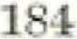king whose line of descent was to run down to Joseph Ihc foster fattier of Jesus Christ. We read: “It came about in the thirty-seventh year of the exile of Jehoi-achin the king of Judah, in the twelfth month [Adar], on the twenty-seventh day of the month [in 580 B.C. |, Evil-merodach the king of Babylon, in the year of his becoming king, raised up the head of Jehoiachin the king of Judah out of the house of detention; and he began to speak good things with him, and then put his throne higher than the thrones of the kings that were with him in Babylon. And he took off his prison garments; and he ate bread constantly before him all the days of his life. As for his allowance, an allowance was constantly given him from the king, daily as due, all the days of his life.’* (2 Kings 25:27-30) Jehoiachin (or Jcconiah) had seven sons in Babylonia, including Shealtiel, whose nominal son Zerubbabel became governor of rebuilt Jerusalem.— 1 Chronicles 3:17-19; Haggai 1:1; 2:23; Ezra 5:1, 2; Matthew 1:12,
Afi i' reigning but two years King Evil-merodach was murdered by his brother-in-law Neriglissar. According to the inscriptions that have been found, this usurper Of the throne spent most of his time in building operations and reigned four years. When he died, his son Labashi-Marduk, though not yet of age, succeeded him. He was a vicious boy, and within nine months he had his throat cut by an assassin. Naboni-dus, who had served as Governor of Babylon and who had boon Nebuchadnezzar’s favorite son-in-law, now took the throne and had a fairly glorious reign till Babylon fell in 539 B.C. He was given to literature, art and religion. He is reported to have been the son of a priestess of the moon at Harran (Haran), which fact had endeared him to Nebuchadnezzar. Says The E?i-cyclopedia Americana, Volume 2, page441:
He was an enthusiastic religionist and antiquarian. He built and rebuilt many temples in the principal cities of his kingdom. Nabonidus' enthusiasm carried him too far, for he attempted to centralize in Babylon the relift ion of the kingdom. In doing this he alienated the priesthood, and even aroused their active opposition. For throughout the history of Babylonia each city had its own patron deity, to which its temple was dedicated and its people devoted. The images and shrines of those various divinities w’cre collected to Babylon. This act, with others of similar offense to the priests, paved the way for his downfall before a mightier power.
As regards the religiousness of the Babylonians, G. R. Tabouis says, in page 387 (of
English translat ion):
By the side of their depravity, the Babylonians were the most religious people of antiquity, and their morality and liturgy are among the most beautiful. For, sin prising as it may seem, they had no morality apart trom religion. Just as their religion prescribed their duties toward the gods, so it prescribed their duties towards other men.—Dhorme, La Religion As$yro4Miby7uniennef pages 220 ff.
For some reason religious Nabonidus did not choose to rule at Babylon. He set up a second capital for Babylonia at the oasis of Toma in Arabia. He left the control of the capital city Babylon largely to Nitocns his wife and to Belshazzar his son.* Since the Babylonians expected those who wielded sovereign power over them to be exemplars in reverencing the gods, Belshazzar as the king’s son responded to the needs of their sanctuaries by making offerings of gold and silver and sacrificial animals. There are six cuneiform texts that have been discovered that run from the fifth year to the thirteenth year of the reign of his father Nabonidus that prove this fact. Belshazzar even paid the Baby Ionian religious tithe. Hence there is no question that he was interested in the gods of his nation. The cuneiform inscriptions reveal that he was a devotee of the gods, and his care for the upkeep of
• See A'a&onfdws oiwi chapter XT. cntiUftl 4'Conjectural
Reasons for Nabonidus' Stay At Toma." Also, x\Tebucfaj4fM«?#Mr, t>:ige 389- 74, _ places of worship in Babylonia is to be looked upon as a proved matter,*
The archaeological evidence is at hand that the oldest son of the king of Babylon was likely to be entrusted with some measure of political responsibility before his father’s reign ended. So it could occur that the oldest son, as crown prince, was raised to the position of coregent with his reigning father. Thore are cuneiform tablets that prove that Belshazzar issued orders and commands. His father, when absent from Babylon and down south in Tema, did not give up his kingship but held onto his position as first ruler of Babylonia, but, during his absence, crown-prince Belshazzar acted in an administrative capacity in the capital Babylon and thus was the second ruler in the land*
V
His absent father entrusted sftarutewn or the kingship, the kingdom, to him, in the third year of his reign. This may be the year referred to in Daniel 7:1, which calls Belshazzar “the king of Babylon” and goes on to say: “In the first year of Belshazzar the king of Babylon, Daniel himself beheld a dream and visions of his head upon his bed. At that time he wrote down the dream itself. The complete account of the matters he told/’
In his prophetic dream Daniel saw the succession of earthly world powers from the Babylonian World Power down till the establishment of the kingdom of God. The world powers were pictured as four wild beasts, and Daniel saw the Ancient of Days, the King of the heavens, execute judgment on these world powers. Then Daniel says: “I kept on beholding in the visions of the night, and, see there 1 with the clouds of the heavens someone like a son of man happened to be coming; and to the Ancient of Days he gained access, and they brought him up close even before that One.
* See and .BeJskaz-ar, chapter VIII,
entitled ’'Belshazzar's
Devotion to Babyloniun Deities.’*
And to him there were given rulership and dignity and kingdom, that the peoples, national groups and languages should all serve even him. Ills rulership is an indefinitely lasting rulership that will not pass away, and his kingdom one that will not be brought to ruin?’
This “son of man" was to have associates with him in the Kingdom. Hence, in the interpretation of the dream, Daniel was told that “the holy ones of the Supreme One will receive the kingdom, and they will take possession of the kingdom for time indefinite, even for time indefinite upon times indefinite.” Then, after being told of the destruction of the final beastly world power, Daniel was given the further explanation; “And the kingdom and the rulership and the grandeur' of the kingdoms under- all the heavens wrere given to the people who are the holy ones of the Supreme One. Their kingdom is an indefinitely lasting kingdom, and all the rulorships will serve and obey even them.”—Daniel 7:2-27.
In Daniel’s drcam the first beast, the one like' a lion that had the wings of an eagle, pictured the Babylonian Empire, with its dynasty of kings from Nebuchadnezzar to Belshazzar. The second beast, which was like a bear that was raised up on one side and that was given the command: “Get up, eat much flesh," pictured the Medo-Persian Empire, with its line of rulers from Darius the Mede and Cyrus the Persian down through Darius HI the Persian.*
Daniel 8:1 informs us that, “in the third year of the kingship of Belshazzar the king," the prophet Daniel had another prophetic vision. In it a male goat with a conspicuous horn between its eyes came from the west and defeated and trampled down a two-horned ram.
In explanation, this is what the angel Gabriel told Daniel: “The ram that you saw possessing the two
For an explanation see "Four Will Be on Thrift/* chapter 8, horns stands for ihe kings of Media and Persia. And the hairy he-goat stands for the king of Greece; and as for the great horn that was between its eyes, it stands for the first king [Alexandei* the Great I?’ So, by this vision also God foretold that the Mcdo-Persian World Power, the Fourth World Power of history, was to fall before the Fifth World Power, the Macedonian or Grecian Empire,*—Daniel 8:2-22.
BABYLON’S CONQUEROR FORETOLD BY NAME
Early in his reign King Nabonidus of Babylon entered into a defensive and offensive alliance with the Lydian Empire and Egypt against the rising power of Persia. We remember that his father-in-law Nebuchadnezzar as crown prince of Babylon had shared with the Modes and the Scythians in destroying the Assyrian capital, Nineveh, in 633 B.C. Two years later the Median king dealt the final blow to the Assyrian army by defeating it at Haran (Harran). He was thus able to take over all of northern Mesopotamia, whereas the king of Babylon held the lower Mesopotamian valley. The Median king also met the Lydians in Asia Minor and Set up a common border between the Median Empire and the Lydian Empire.
The Persian kings who held territory to the east of the Persian Gulf were vassals to the Median Empire, but they held the province of Flam a rd its important city Anshan or Anzan.t The Persian King Cyrus I, ruler of the city Anshan, had a son named Cambyses, who succeeded him to the throne. Cambyses I married Mandane, the daughter of Astyagrs who succeeded to the throne of the Median Empire. Another daughter of the Median King Astyages was Amytis. and Nebuchadnezzar of Babylon married her. It was in order to satisfy the homesickness of Amytis for the mountains
• Si?e "Four Will Jie Done on Earth-/* chapter 9.
from
■f Elam was ais.u called SusLana by the classical K' •ofi'rn pliers, its capital city Susa, or Situs han.
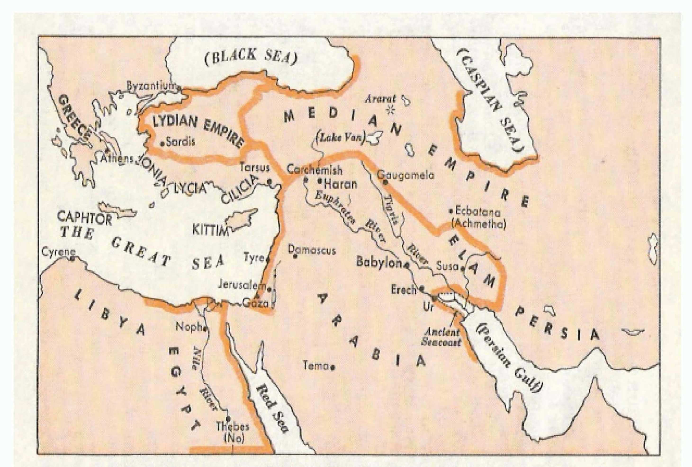THE BABYLON AN AND RIVAL EMPIRES IN JfJEMIAH'S DAY (647-607 B.C.I
of Media that Nebuchadnezzar built the world-famed Hanging Gardens of Babylon.
To the above-mentioned Persian King Cambyses I and his Median wife Mandane there was born the son named Cyrus (II). He thus held Persian and Median blood in him. Cyrus II succeeded his father Cambyses as king of Anshan, the Elamite city, and referred to himself as King of Anshan, Cyrus II soon revolted against vassalage to his Median grandfather, King Astyages. The revolt was successful, King Astyages was seized by the men of Cyrus II, and without a battle the Persians took the Median capital city, Ecbatana, in 550 B.C.
From then on. the Medes and the Persians followed the leadership of King Cyrus II and fought and served together unitedly. Cyrus then moved quickly westward, subduing the territory of the Median Empire as far as the eastern border of the I di.i :i _ Hirpi re al the Halys River. Rich King Croesus of Lydia refused to accept the sovereignty of the Persian conqueror. So Cyrus defeated him in battle and took over the realm of Croesus and extended the Persian Empire to the Aegean Sea and the Hellespont or the Darden dies, in 546 B.C. Cyrus was now ready to turn his attention to the Babylonian Empire. By conquering it he would overthrow the Semitic domination of the Middle East nnd set up Aryan or Japhetic domination under the headship of the Persians.
The danger to Babylon became critical first now. But more than 190 years before this the Jewish prophet Isaiah had foretold the final preparations that were to be made for overthrowing the Babylonian Empire, the Third World Power. Isaiah began prophesying in the name of Jehovah during the reign of King Uzziah of Jerusalem. (Isaiah .1:1) Since Uzziah died in 774 B.C., Isaiah was prophesying in the land of Judah when the first Olympiad on the celebration of the Grecian Olympic Gaines was recorded, which was in 776 B.C, Yes, ■ K
Isaiah was si ill prophesying when Rome was founded on the banks of the Tiber River, the traditional date for which is 753 B.C, When Isaiah was prophesying, it was in the days of the Second World Power, the Assyrian Empire, and Babylon was then the coming world power, Isaiah was inspired to foresee Babylon's rise to world domination and how she would destroy Jerusalem. As a consolation for Jehovah’s people he also foresaw and foretold the crashing downfall of Babylonian World Power before the Medes and Persians.
TSATAH S PEEMEW
In chapter thirteen of his prophecy Isaiah begins to mention Babylon by name, in these words: “The pronouncement against Babylon that Isaiah the son of Amoz saw in vision?* This pronouncement came right after Isaiah foretold the deliverance of Jehovah's organization Zion, to whom Isaiah therefore said: “Cry out shrilly and shout for joy, O you inhabitress of Zion, for great in the midst of you is the Holy One of Israel?" (Isaiah 12:6; 13:1) Isaiah thus set Zion and Babylon in sharp contrast. Here he loads us into the events that would result in the deliverance of Zion from Babylon’s cruel oppt c<sion. Micah, a contemporaneous fellow prophet of Isaiah, also set Zion and Babylon in sharp contrast, saying: “Be in severe pains and burst forth, O daughter of Zion, like a woman giving birth, for now you Avill go forth from a town, and you will have to reside in the field. And you will have to come as far as to Babylon. rrhere you will be delivered. There Jehovah will buy you back out of the palm of your enemies.” (Micah 4:10) So in Isaiah’s pronouncement against Babylon Jehovah God is really the Speaker. He signals to Babylon's enemies to come against her.
“Upon a mountain of bare rocks raise up a signal, you men. Lift up the voice to them, wave the hand, that they may come into the entrances of the nobles. I myself have issued the command to my sanctified ones. I
have also called my mighty ones for expressing my anger, my eminently exultant ones?’—Isaiah 13:2, 3.
The ones whom Jehovah here commands to serve as It is exccutional inst ruments against Babylon are the Medes and Persians and their allies from a number of other nations. In his own nation of Israel the Jewish warriors were saneiified religiously before undertaking a military campaign. Even in pagan nations the military campaigns were begun first with religious ceremonies. War was thus said to be sanctified. ( Joel 3:9) So Jehovah sanctifies the Medes and Persians and their allies by giving them the sacred commission to overthrow Babylon’s domination once and for all time in the ancient world. These military forces against. Babylon are also mighty. They eminently exult at having the grand distinction of overturning Babylon, who made so many nations drink the cup of her anger.
Because they serve the purpose of Jehovah God against his great enemy Babylon, he calls them “my sanctified ones/' “my mighty ones.1’ Though worldly commanders and oil leers may be summoning them and gathering them, it is really the Almighty God of heaven who summons them at his due time. They must assemble to a definite signal.
What signal? It is the new world power, that of the Medes and Persians, which must displace the Babylonian World Power. This signal mus t stand out as a common ground on which to unite together. It must become as plain to the view as if it were a signal upon a bare rocky mountain with nothing to ti’uck 'be view o." anybody and so visible from far away. Thus Jehovah God let Cyrus the Persian come to world prominence as a man who had to be dealt with and not to be left out of sight, the founder of Ihe Persian monarchy.
Hand and voice must be used in inviting Jehovah’s executioners to come to this lofty signal and also to urge them onward to the assault upon Babylon’s gates, the entrances of her nobles* The capture of the entrances to the mightily walled Babylon and the getting of complete control of the city is what beckons Jehovah’s sanctified ones. 11. was not his purpose for the captive Jews to do this.
The gathering of nations in support of those who are to be the founders of the Fourth World Power is in harmony with Jehovah’s purpose. “Listen!” says the prophet Isaiah as if hearing the movement of international affairs just prior to 539 B.C, klA crowd in the mountains, something like a numerous people! Listen! The uproar of kingdoms, of nations gathered together! Jehovah of armies is mustering the army of war. They are coming from the land far away, from the extremity of the heavens, Jehovah and the weapons of his denunciation, to wreck all the earth/' —Isaiah 13:4, 5.
The end of the seventy years of desolation of Jerusalem, which was destroyed by King Nebuchadnezzar of Babylon, is getting near. Hence the time of battle against Babylon is also nearing. Jehovah of armies, whose temple in Jerusalem was destroyed by Babylon, is the invisible Commander-in-chief, and he maneuvers his earthly forces to express his denunciation upon Babylon, From lands far outside the Babylonian Empire, from places under the extreme parts of the heavens, he musters his earthly army of execution. This army, made up of elements from a number of nations,6 he will use as the “weapons of his denunciation.” By means of them he wall wreck all the land of Babylon as a world power, and will topple from Babylon’s throne the dynasty of world rulers that began with Nebuchadnezzar.
The day of Jehovah’s triumph over Babylon is thus prepared for, and it is certain to arrive upon that oppressive, greedy world power. In appreciation of what this means for Jehovah’s universal sovereignty and holy name and also for the liberation of Jehovah’s captive people, Isaiah says to the Babylonians: “Howl, you people, for the day of Jehovah is near! As a despoiling from the Almighty it will come. That is why all hands themselves will drop down, and the whole heart itself of mortal man will melt* And people have become disturbed* Convulsions and birth pains themselves grab hold; like a woman that is giving birth they have labor pains. They look at each other in amazement. Their faces are inflamed faces/1—Isaiah 13:6-8,
It was after subduing the powerful kingdom of Lydia and extending his sway across Asia Minor (now Turkey) that Cyrus the Persian with the Medes as his loyal allies turned his attention to Babylon. After about a year of preparation he moved against her in 539 B.C* The Babylonians he met on the field of battle, and they wi’i’e obliged to flee into their walled cities, King Nabonidus taking refuge in Borsippa. It was a time for the Babylonians to howl, as Jehovah's day was very close now for them to drink the cup of defeat and subjugation that they had made Jerusalem and Judah and other nations drink* Babylon was to be despoiled of her world power. Such a thing, then unbelievable, was something at which to be amazed, something to inflame a proud Babylonian’s face with embarrassment and give him pains like those of a woman at childbirth.
Babylon had been cruel to Jehovah's chosen people during the seven decades of Jerusalem's lying a desolate ruin. That the Almighty God of heaven should repay Babylon in kind wTas something due, that she deserved. The Bain Ionians er-.- siixcrs afjalnst l and his temple. Now it was their turn to howl! £<Look! The day of Jehovah itself is coming, cruel both with fury and with burning anger, in order to make the land tin object of astonishment, and that it may annihilate the land's sinners out of it. For the very stars of the heavens and their constellations of Kesil will not flash forth their light; the sun will actually grow dark at its going forth, and the moon itself will not cause its light to shine. And 1 shall certainly bring home its own badness upon the productive land, and their own error upon the wicked t hemselves. And I shall actually cause the pride of the presumptuous ones to cease, and the haughtiness of the tyrants I shall abase. I shall make mortal man rarer than relined gold, and earthling man rarer than the gold of Ophir. That is why I shall cause heaven itself to become agitated, and the earth will rock out of its place at the fury of Jehovah of armies and at the day of his burning anger.”—Isaiah 13:9-13.
It was to be a dark day for Babylon, yes, a dark night. It was to be as if the moon and the stars and their constellations failed to shine in the heavens ai their appointed times, increasing the blackness of the silnation for Babylon as a world power. In fact, Bal> ylon fell to the conquerors at night, October ;j-6, 539 B.C. She had acted presumptuously against the Most High God who rules in the kingdom of mankind, as if she were strong enough to rule the earth forever. Her kings, princes and military officers had acted haughtily like tyrants, even toward Jehovah's exiled people. Now this was to cease. Babylonians of this sort were to become hard to find, as rare as refined gold at that time, even rarer than the prized gold of Ophir. The Semitic dynasty of Babylon’s kings, pictured as the golden head in Nebuchadnezzar’s dream image, was to pass away. (Daniel 2:32, 36-38) The heavens over Babylon. which the demonized imagination of the Babylonians filled with false gods like Bel and Merodach (Marduk), wore to rock when the Babylonians found Ihat these heavenly gods to whom they were so religiously attached were unable to help them. The earth of the Babylonian Empire was to rock out of its place when it ceased to belong to Babylon as the Third World Power and became merely a province in the Persian
Empire.
“And,” continues Jehovah by his prophet Isaiah, “it must occur that, like a gazelle chased away and like a flock without anyone to collect them together, they will turn, each one to his own people; and they will flee, each one to his own land. Every one that is found will be pierced through, and every one that is caught in the sweep will fall by the sword; and their very children will be dashed to pieces before their eyes. Their houses will he pillaged, and their own wives will be raped.” —Isaiah 13:14-16.
Thus before Jehovah’s executional forces, before the “weapons of his denunciation,” all foreign support of Babylon was to crumble. Her supporters would dissociate themselves from her and flee to the interests of their own nations and to the new relationships that their nations would set up with the new world power. Everyone continuing to stick to Babylon and uphold her domination would be run through with the sword of execution. Every last one would be caught in the grand sweep or roundup of Babylon’s hangers-on. Their lineage would be wiped out, their houses plundered, their wives having intercourse wit h the conquerors, not with their own husbands, ihe children bearing the family name being dashed to pieces by soldiers. '
Of this happy assignment of execution upon Babylonians the exiled Jews had prophetically sung: “O daughter of Babylon, who are to be despoiled, happy will he be that rewards you with your own treatment with which you treated us. Happy will he be that grabs ahold and does dash to pieces your children against the crag.”—Psalm 137: 8, 9.
Foretelling the very ones whom he would use as leaders in overthrowing the Babylonian World Power, Jehovah goes on to say through Isaiah: “Here I am arousing against them the Medes, who account silver itself as nothing and who, as respects gold, take no delight in it. And their bows will dash even young men to pieces. And the fruitage of the belly they will not pity; for sons their eye will not feel sorry.”—Isaiah 13:17,18.
Ilie expression “the Medes" in Isaiah 13:17 must be understood as including the Persians,7 Jehovah’s naming of the Medes calls to mind, of cc-msi'. Darius ihi? Mede, who, according to Daniel 5:28, 31, “received the kingdom” after Babylon fell and was “divided and given to the Medes and the Persians,” However, according to the ancient historian Herodotus (1,95), a Median was the mother of Cyrus the Great. She was Mandane, the daughter of King Astyages, the ruler of the Median Empire. She was given in marriage to the Persian Cam-byscs I, the son of Cyrus I. The offspring of this marriage was named Cyrus, after his grandfather. Thus Cyrus II, the Persian, had Median blood in him. After he rebelled and conquered the kingdom of his grand7 father Astyages, the Medes became his loyal allies and supporters in his military operations, Along with the Medes, the Elamites were also to lake part in conquering Babylon, according to the words of Isaiah 21:2-9.
The Medes, including the Persians, were expert bowmen. Says The Encyclopcedia Britannica, Volume 21. edition of 1911, page 207:
The chief weapon of the Persians, as of all Iranians, was the bow, which accordingly the king himself holds in his portraits, for example, on the Behistun rock and the coins (darfes). In addition to the bow, the Persians carried short lances and short daggers. Bui it was not hy those weapons, nor by hand to hand fighting, that the Persian victories were won. They overwhelmed their enemy under a hail of arrows, and never allowed him to come to close quarters. When the infantry kneeled to shoot, the cavalry swarmed round the hostile squad-ro ns, threw their lines into confusion, and completed their discomfiture by a vigorous pursuit. In a charge the infantry also might employ lance and dagger; but the essential point was that the archers should be mobile and their use of the bow unhampered.
... In spite of all their bravery, they succumbed to the Greek phalanx, when once the generalship o( a Miltiades or a Pausanias had brought matters to a hand to hand conflict; and it was with justice that the Greeks —Aeschylus, for Instance—view their battles against the Persian as a contest between spear and bow. None the less, till Marathon the Persians were successful in discomfiting every enemy before ho could close, whether the enemy consisted of similarly accoutred bowmen (as the Medes), of cavalry armed with the lance (as the Lydians), or of heavily armored warriors (as the Babylonians, Egyptians and Greeks).
To this should be added the superiority of their leaders; Cyrus especially must have been an exceedingly able general. Obviously, also, he must have understood the art of organizing his people and arousing the feeling of nationality and the courage of selfsacrifice. . . .
Since the bows of the Persians were made of metal, they could use them to dash enemy young men to pieces. What the Medes and the Persians were after was, not silver and gold, but conquest. They could not be bought off with such precious metals, but were pitiless in destroying the enemy, the fruitage of Babylonian bellies. What was to be the result of Jehovah’s arousing of the bow-bearing Medes against the Babylonians? Jehovah’s own decree declared the astonishing result, saying: “And Babylon, the decoration of kingdoms, the beauty of the pride of the Chaldeans, must become as when God overthrew Sodom and Gomorrah. She will never be inhabited, nor will she reside for generation after generation. And there the Arab will not pitch his tent, and no shepherds will let their flocks lie down there. And there the haunters of waterless regions will certainly lie down, and their houses must be filled with eagle owls. And there the ostriches must reside, and goat-shaped demons themselves will go skipping about there. And jackals must howl in her dwelling towers, and the big snake will be in the palaces of exquisite delight. And the season for her is near to come, and her days themselves will not be postponed/’—Isaiah 13:19-22.
Persian Archers
Under King Darius
What a final degradation for Babylon! What a fall, indeed—from being the “decoration of kingdoms, the beauty of the pride of the Chaldeans,” to being a desolation thought to be haunted, that superstitious wandering Arabs and shepherds would avoid!
To creatures inhabiting dry places, to owls, to ostriches, to goat-shaped demonlike creatures, to jackals, yes, to the big snake the ruins of fallen Babylon would be left! That big snake or dragon would not be a symbol meaning that Babylon’s god Merodach (Marduk) was dwelling there as invisible ruler. It would be one of the features of the vengeance of Jehovah God upon that world-dominating center of false religion. Centuries might pass after Babylon fell to the Medes and Persians in 539 B.C. before this utter desolation would overtake her, but it would inescapably come upon Babylon, just as fire and sulphur raining from heaven had desola ted wicked Sodom and Gomorrah.—Genesis 19: 23-25.
As the time for the seventy-year desolation of Jerusalem to end drew near, so the time or season for Babylon’s decline to begin was also drawing near. The days for this to occur according to the time schedule of Jehovah God would not be postponed, for he keeps time. So, too, in our own modern day, the fall of the Greater Babylon to a similar horrifying desolation is not to be postponed. •
THE SIGHT SEEN FROM THE WATCHTOWER
Nothing could be more certain than that Babylon, after holding world sway, must fall. To assure his people of that, Jehovah God, who does not lie, multiplied his prophecies concerning her fall, even long in advance. Babylon’s fall became one of the dominating themes of his Holy Word, and down to near the dose of the Bible this world-important theme is not dropped. When reading into the very last book of the Bible, we cannot get away from this theme. In Revelation 18:2 the stirring words, “Babylon the great has fallen,” arc but an echoing of the words called out by the watch-if
man whom the prophet Isaiah heard in vision more than S25 years before the Christian apostle John had his vision that is recorded in the last book of the Bible. (Isaiah 21:9) With no uncertainty as to whom Jehovah his God will use in bringing about this astounding event of world history, Isaiah proceeds to say, under divine inspiration:
“The pronouncement against the wilderness of the sea: Like storm winds in the south in moving onward, from the wilderness it is coming, from a fear-inspiring land. There is a hard vision that has been told to me:
♦ Fwr some thought* on the modern-day final ar.d complete fulfillment of Isaiah's prophecy upon Great Babylon, sec the article?; entitled *Tt Is Nearer than They Think" and “The Bay of Jehovah upon This World,’’ on I'atrcs 291-299 of The Wafcfcforcer, October 1, 1949.
The treacherous dealer is dealing treacherously, and the despoiler is despoiling. Go up, O Elam! Lay siege, O Media! All sighing due to her I have caused to cease?5 —Isaiah 21; 1, 2.
Here the descriptive expression “the wilderness of the sea” refers to the region of ancient Raby Ion. In the cuneiform inscriptions of Mesopotamia, only southern Babylonia is called “the land of the sea?’ 'Ilie city or Babylon lay on the lower Euphrates River, the eastern or right-hand part of the city being in the Mesopotamian valley between the Euphrates and the Tigris Rivers, these two rivers finally joining to pour into the Persian Gulf. When these rivers overflowed, they converted southern Mesopotamia into a wilderness sea. To do away with this “sea” condition as a regular occurrence, or at least to reduce it, the Babylonians built up a grand scries of dikes, sluices, canals and catch basins. However, in the Bible the word “sea” is sometimes used to mean the west. So in Isaiah 21:1 “the sea” may refer to west of the lands of Elam and Persia, The thought would be, then, that Babylon:a to the west of Elam and Persia was to become a wilderness state, - the wilderness of the west?
A storm was brewing for Babylon, to strike her when she had reached the peak of her power. It was set stirring in a fear-inspiring land, that of Persia, when its king was the ambitious leader Cyrus II, who made himself also king of Media. Says T/ic Britan?:ica;
Modern authorities have often supposed that Cyrus and his ancestors were in reality Elamites; but this is contrary to all tradition, and there can be no doubt that Cyrus was genuine Persian and a true believer in the Zoroastrian religion. In Herodotus vii, II the genealogy of Cyrus is given in exactly the same way as in die 'proclamation of Cyrus himself; Teispes [greatgrandfather of Cyrus] is called here the son of the eponym Achaonicnes.—TAe Hr?frVol
ume 7, eleventh edition, pages 706, 707.
In his proclamation to the Babylonians Cyrus calls his ancestors, Teispes, Cyrus I and Cambyses I, by the title of “King of Anshan." This same title is given to Cyrus II himself in the cuneiform inscriptions and in the Chronicle of Nabonidus of Babylon before Cyrus defeated and deposed Astyagcs, king of Media. The land of Anshan was a district of Elam or Susiana and lay east of the Tigris River, Tn fulfillment of the prophecy of Jeremiah 49:34-39, the Elamites were to suffer a defeat sometime after 617 B.C.. and it is possible that Cyrus’ great-grandfather Teispes the Achaeme-nian conquered the district of Anshan (or, Anzan) in 596 B.C., to the south of which district the Persians had earlier located themselves. Teispes assumed the title of “Great King, King of the City Anshan.” In view of all the foregoing we can appreciate the association of the Persians with the Elamites as well as the Medes. The Elamites had their own Anshanite language and a system of writing, and then* capital city was Shushan or Susa.
So this symbolic storm against Babylon came from a bad source, as from a fear-inspiring wilderness in the south. (Compare Job 1:19.) It is a hard vision that Isaiah is told against Babylon, but she deserves it. She will become a treacherous dealer and a despoiler, and such she will be against Jehovah’s chosen people, the sons of Israel, Isaiah’s own nation. By her overthrow Jehovah would cause the sorrow of those with whom she dealt treacherously to cease and joy to set in. To punish Babylon, Jehovah commands the Elamites and the Medes to go up and besiege her.
The effect that this hard vision had on Isaiah foreshadowed the effect that the vision’s fulfillment was to have on the Babylonians and their lovers and supporters. To picture these, Isaiah says: ' That is why my hips have become full of severe pains. Convulsions themselves have grabbed hold of me, like the convulsions of a woman that is giving birth. I have become disconcerted so that I do not hear; I have become disturbed so that I do not see. My heart has wandered about; a shuddering itself has terrified me. The twilight for which I had an attachment has been made for me a trembling.” (Isaiah 21:3, 4) The Babylonians would not enjoy sleeping then.
As if foreseeing the fatal night for which King Belshazzar’s feast was arranged to celebrate the Babylonian festival, Isaiah addresses himself to the inhabitants of Babylon, especially the nobles of the city. He says: “Let there be a setting of the table in order, an arranging of the location of scats, an eating, a drinking I Get up, you princes, anoint the shield. For this is what. Jehovah has said to me: JGo, post a lookout that he may tell just what he sees.’ ” (Isaiah 21:5, 6) This being a prophecy in the form, of a command, the prophecy must be fulfilled; the command must be obeyed.
On the night of October 5-6, 539 B.C., as history shows, there was feasting in Babylon, particularly at the palace of the king. But that same night the city fell to the Elamites, the Medes and the Persians. The Babylonian princes that night had to do one of two things, or both. First, they had to anoint the battle shield to ch nd the city. This proved to be in vain against the successful strategy of the besieging enemy. Then, as King Belshazzar was killed at the palace by the conquerors and thus the symbolical shield of the Babylonians was destroyed, it became necessary for the princes to anoint a new shield, install a new king. The new symbolic shield to be anointed should be the conqueror; otherwise, it would go hard with the Babylonian princes.
In obedience to the divine command to him, Isaiah in vision goes and posts a lookout, as it were upon the Weills of Jerusalem. The lookout must tell just what he sees, for it will be of world importance. As if hearing what the watchman calls out to those below in Jerusalem, Isaiah says: "And he saw a war chariot with a span of steeds, a war chariot of asses, a war chariot of camels. And he paid strict attention, with much attentiveness. And. he proceeded to call out like a lion; ‘Ui>on the watchtower, O Jehovah, I am standing constantly by day, and at my guardpost T am stationed ail the nights. And here, now, there is coming a war chariot of men, with a span of steeds!’ **—Isaiah 21:7-9.
Had the watchman been a man upon the walls of Babylon in that year of world change, he would have literally seen advancing against the city the war machine of the conquerors symbolized by the “war chariot with a span of steeds, a war chariot of asses, a wax' chariot of camels.” But before ever the lookout posted on Babylon*s walls saw this in actuality, Jehovah's prophetic watchman saw it in miraculous preview. The groat event to be announced was one to be waited for with constant watching and strict attention day and night, especially on the part of Jehovah’s people, as Babylon was going to deal treacherously with them and despoil them. The prophet Daniel, in exile over seventy years, was one of these watching Jews, a fact that is disclosed in the following words by him:
“In the first year of Darius the son of Ahasuerus of the seed of the Medes, who had been made king over the kingdom of the Chaldeans; in the first year of his reigning I myself, Daniel, discerned by tile books the number of the years concerning which the word of Jehovah had occurred to Jeremiah the prophet, for fulfilling the devastations of Jerusalem, namely, seventy years. And I proceeded to set my face to Jehovah the true God.”—Daniel 9:1-3.
Evidently the expression (<war chariot” as describing what the watchman saw is to be taken in a collective sense, as denoting many of such chariots, a squadron.*
* The Jewish Publication Society of AiYIcrlcn's Bible translation Of Isaiah 21: 7 reads: "And when he seetli a trnop, horsemen by pairs, a troop Of asses, a troop Of camels, he shall hearken dlllR’-pntly with much heed?' Dr. Isaac Leaser's translation, reads: "Anti he will see chariots, horseman in. couples, ri tiers On Asses. riders on camek; and he shall listen diligently with much heed?" Farrar Fenton's translation reads; ’ He saw a two-horsed chariot, a chariot ass, and camel car; he looked and looked a piercing' took."
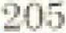Thore are steeds to pull IT: chariots swiftly inic
battle. There are also asses and camels with the besieging Elamites and Medes to serve as pack animals, beasts of burden to support these at the battlefront, if not also to carry warriors into the actual fight. Herodotus (1,80) tells us that Cyrus* army had its baggage carried on camels, and that, in his campaign against King Croesus of Lydia, Cyrus put riders on these camels and thus used camels in fighting aga:.is! Croesus’ horses. It may be, however, that the two kinds of animals picture the two peoples whom Isaiah 21:2 tells to get up and besiege Babylon, the asses picturing the Elamites and the camels the Medes.
The man whom Isaiah sees in vision upon the watchtower is evidently Jehovah’s appointed watchman, for he reports to Jehovah that he stands guard and watches continually and he tells Jehovah what he sees. In this he provides an example worthy of imitation by Jehovah’s watchman class of today who look for Babylon the Great to be destroyed* “And he began to speak up and say: ‘She has fallen’’ ” Who has fallen? It is a city, denoted by the feminine pronoun sBut which city? Is it the city whose fall is desired by Jehovah’s people, the city whose fall they expect according to Jehovah’s prophecy? Listen, then, attentively as the watchman continues on to say: “Babylon has fallen, and all the graven images of her gods he has broken to the earth!” (Isaiah 21:9) What a grand an nouncement for the watchman to make!
The ancient Elamites and Medes did not go smashing the idol images of the conquered city. It was Jehovah who, in effect, broke down all the graven images of Babylon’s gods to the ground, for he had proved that they wTere no gods, Just helpless, lifeless images. He had proved that he himself was the only living and true God, the Almighty God, who had infallibly foretold the fall of the greatest ancient world power up to that time. Really he wTas the One who had caused Babylon to fall,
using the Elamites and Medes merely as his weapons against Babylon. According to 2 Chronicles 36:22, 23 and Ezra 1:1-3, victorious Cyrus gives Jehovah God the credit.
As the prophet Isaiah breaks out in his next words, he foretells both the terrible treatment, the symbolic threshing, that his people Israel is to receive at the cruel hands of Babylon and also the joy-inspiring comfort that his people is to get at the news of the thresher’s fall. So it must have been with mingled feelings that Isaiah said: “O my threshed ones and the son of my threshing floor, what I have heard from Jehovah of armies, the God of Israel, I have reported to you people.”' (Isaiah 21:10) It was Jehovah’s threshing floor upon which the “son” or people who deserved being threshed was beaten and trodden down. They had persistently been rebellious and unfaithful to him, and lie ns their God and King used ancient Babylon to do the threshing for disciplining his people. But in his due time the threshing had to cease—at the fail of the threshing instrument, A faithful remnant of Israelites would survive the threshing! In like manner the faithful witnesses of Jehovah will survive the destruction of the Greater Babylon of our modern day.
c H A P — 1 E R
12
1 N O ONE but an intelligent God with absolute foreknowledge and with almighty power to rule absolutely in human affairs could accurately foretell what nation would become the Third World Power and what nation would overturn it and take power as the Fourth World Power. This is what Jehovah did through his prophet Isaiah.
This in itself was remarkable. But still more remarkable and indicating God as the source of information is the foretelling of the very individual who would conquer Babylon and set up a new and greater world power. This more remarkable thing is exactly what Jehovah did as a proof of his godship, his divinity. During hundreds of years of the past before the prophet Isaiah, Jehovah’s people had been witnesses of his miraculous acts, particularly since his deliverance of them from the land of Egypt Now, as foretold through Isaiah, they were to be direct witnesses of another deliverance, but one that could be brought about only by the overthrow of a world power mightier than ancient Egypt.
Especially to Jewry and Christendom the modern name “Jehovah’s witnesses” ought not to sound like a ny thing new. Long before the so-called Christian Era, yes, back in Isaiah’s day in the eighth century before Christ, there were persons deserving this designation. Addressing these very persons in his own day, Isaiah
“Now this is what Jehovah has said, your Creator, O Jacob, and your Former, O Israel: ‘Do not be afraid, for I have repurchased you. I have called you by your name. You are mine? ” Then, in view of the coming scattering of this people, Jehovah says: “Do not be afraid, for I am with you. From the sunrising I shall bring your seed, and from the sunset I shall collect you together. I shall say to the north, ‘Give up!’ and to the south, ‘Do not keep back. Bring my sons from far off, and my daughters from the extremity of the earth, everyone that is called by my name and that I have created for my own glory, that I have formed, yes, that I have made.’ ”—Isaiah 43:1-7.
Jehovah now calls for a court session to take place. A judicial inquir>r has to be made. Before the court Jehovah’s people are to be set on the one side and all the worldly nations on the other side. Though Jehovah’s people have eyes, they have been like blind because of being slow to see or recognize who their God is. They have ears, but they have been like deaf because of being so slow to listen and take heed to God’s word. Before everybody, before Israel and all other nations, the point to be proved is. Who is the only true God? As if having them all ushered into the courtroom, Jehovah says:
“Bring forth a people blind though eyes themselves exist, and the ones deaf though they have ears. Let the nations all be collected together at one place, and let national groups be gathered together. Who is there among them that can tell this? Or can they cause us to hear even the first things? Let them furnish their witnesses, that they may be declared righteous, or let them hear and say, ‘It is the truth’’ ”—Isaiah 43:8, 9.
The collected nations and the gathered national groups are first inquired of. When the question is put, “Who is there among them that can tell this?” it does not refer to any man or woman among those worldly nations. It refers to the gods worshiped among such nations. In other words, What god among them can tell this, that is, the future? Hence the question asked means. Can the gods of those nations cause us to hear or show us or foretell to us the Mfirst things" of the future, the things before or ahead of us in human history? If these gods can do this, then let those gods furnish their witnesses of it among the nations so that such gods may be declared righteous, innocent of the charge of being no gods at alL Let the witnesses for these gods hear their gods foretell the future correctly and thus be able to say: * *Tt is the truth!" Our gods have spoken the truth and have proved themselves true gods/
Up to Isaiah’s day, about eight hundred years after Israel was delivered from Egypt, none of those gods of the worldly nations were able to furnish witnesses to prove that their gods are truthful gods of prophecy. To this day their gods have no witnesses among the nations that these gods are living, true gods able to make their prophecies on the future come true. Those false gods have no witnesses at all among all the nations, But Jehovah has witnesses whom he can produce, and they are his own chosen people.
Hence, after the false gods of all the worldly nations have proved themselves unable to furnish witnesses in their behalf, Jehovah turns to his people, Jacob or Israel, whom he created and formed, and he makes plain to them what their responsibility is in this universal controversy over the question, Who is God? In Isaiah 43:10-12, he says to them:
° ‘You are my witnesses/ is the utterance of Jehovah, ‘even my servant whom I have chosen, in order that you may know and have faith in me, and that you may understand that I am the same One. Before me there was no God ' 7g7 j formed, and after me there con-lirnied to be none. I—I am Jehovah, and besides me there is no savior J '
“ 1 myself have told forth and have saved and have caused it to be heard, when there was among you no strange god. So you are my witnesses/ is the utterance of Jehovah, 'and I am God [BZ]<’ ”
As one of Jehovah *s witnesses the prophet Isaiah was certainly trying to discharge his responsibility. He was also trying to encourage the nation of Israel to quit being spiritually blind and deaf and to discharge the whole nation’s responsibility to be Jehovah*# witnesses, who supported his godship, his divinity.
The nations could never compete with Jehovah’s witnesses in the matter of gods. The worldly nations rejected Jehovah as God [12Z, in Hebrew] and therefore formed gods of their own. But the nations were never able lo form a god v. ho was ahead of Jehovah or enisling prior to him. How could the nations do so, since Jehovah is without beginning and he always existed in the past eternity? The prophet Moses said: “O Jehovah, you yourself have proved to be a real dwelling for us during generation after generation, t + , even from time indefinite to time indefinite you arc God [E7] .**—Psalm 90: superscription and verses 1, 2.
Even the nations themselves did not exist before or prior to Jehovah God and so could not invent or form any god ahead of him. These nations trace their existence only since the flood of Noah’s day, and Jehovah was God and had his witnesses on earth centuries before the Flood, all the way back to Abel, second son of Adam. (Hebrews 11:1-7; 12:1) Even Satan the Dcvih who is the “god of this system of things” and in whose power the whole world is lying, is not eternal or from eternity and did not exist before Jehovah God. (2 Corinthians 4:4; 1 John 5:19) As for the nations of this world or system of tilings, ever since their existence, from the days of Nimrod the first king of Babylon, the nations have been unable to form any god after Jehovah and prove that their god is a real god, a real deity superior to Jehovah or even equal to Jehovah, It is the nations of this world who have been trying to form gods superior to Jehovah. Jehovah himself has not formed any god \d. superior or equal to himself. Through Isaiah (42:8) he had already said: “I am Jehovah. That is my name; and to no one else shall I give my own glory, neither my praise to graven images/*
Consequently, no strange, foreign god but only Jehovah could have been the God [KZ1 who delivered the Israelites in times past. Only this Jehovah could be the God able to save them in due time from mighty Babylon. Never would Babylon be able to deliver herself from His hand when he turned it against her in judgment. Tn agreement with this fact Jehovah goes on to say to his witnesses: 44Also, all the time I am the same One; and there is no one effecting deliverance out of my own hand. I shall get active, and who can turn it f my hand] back ' ’—Isaiah 43; 13.
The Israelites, when exiles in Babylon, would witness her inability to deliver herself from Jehovah’s hand of judgment. He would repurchase the Israelite exiles from imprisonment in Babylon to whom they had been sold because of their sin and disobedience. “This is what Jehovah has said, the liepurchaser of you people. the Holy One of Israel: For your sakes I will send to Babylon and cause the bans of the prisons to come down, and the Chaldeans in the ships with whining cries on their part. I am Jehovah your Holy One, the Creator of Israel, your King.’ ”—Isaiah 43:14,15.
Whom would Jehovah God send to Babylon for the sake of his imprisoned people Israel? The Elamites and the Medes, including the Persians, all under a commander foreknown to Jehovah God. These conquerors would bring down Babylon’s prison bars that hold many peoples confined. They would do this by bringing down the “Chaldeans in the ships,*’ making them cry out
Euphrates River and the Persian Gulf* They were a commercial as well as manufacturing people and did much business on land and sea. In fact, Babylon was a commercial depot between the eastern and the western worlds back there. As early as the days of Judge Joshua Babylonish garments, such as an “official garment from Shinar/’ were worn down in Jericho. (Joshua 7; 211 According to Huet's Z/isto?'?/ of Commerce (ZZis-toire du Commerce), chapter 11, Babylon is said to have had a fleet of three thousand galleys. Boats, or barges, were provided for the Babylonian gods to use on Babylon’s waterways. The true God Jehovah brought down the ships of Babylon in defeat.
After he overthrew Babylon as the Third World Power, Jehovah was to bring his released people back to their homeland in Palestine. To this end he would do a new tiling foi' them, and they would not have only former deliverances, of which their forefathers were witnesses, to look to. They would be witnesses of things performed by Jehovah God in bringing them through the wilderness and back home from Babylon, This would be an evidence that he had wiped out their transgressions and remembered their sins no more. (Isaiah 43:16-28) At that time will they be glad to be known as his people? The next chapter of Isaiah’s proph ecy answers:
“And now listen, O Jacob my servant, and you, O Israel, whom I have chosen. This is what Jehovah has said, your Maker and your Former, who kept helping you even from the belly, ‘Do not be afraid, O my servant Jacob, and you, Jeshurun, whom I have chosen. For I shall pour out water upon the thirsty one, and trickling streams upon the dry place. I shall pour out my spirit upon your seed, and my blessing upon your descendants. And they will certainly spring up as among the green grass, like poplars by the water ditches. This one will say: “I belong to Jehovah/’ And that one will call himself by the name of Jacob, and
another will write upon his hand: “Belonging to Jehovah,” And by the name of Israel one will betitle himself? ’’—Isaiah 44:1-5.
Jehovah challenges any other god [AZo/um*] to come forward and prove that he can foretell the events that are ahead, the things that are coming. As no gods of the worldly nations can do this. Jehovah’s people do not need to fear about being fits witnesses.
“This is what Jehovah has said, the King of Israel and the Repurchaser of him, Jehovah of armies, T am the first and I am the last, and besides me there is no God And who is there like me? Let him call
out, that he may tell it and present it to me. From when I appointed the people of long ago, both the t hings coming and the things that will enter in let them tell on their part.1 ” Since no god equal to Jehovah comes forward and attempts to tell the future of Jehovah’s appointed people, he says to his people: 4'Do not be in dread, you people, and do not become stupefied. Have I not from that time on caused you individually to hoax* and told it out? And you are my witnesses. Does there exist a Ged | im i besides met Nu. there no Rock. I have recognized none.”—Isaiah 14: G-S.
The nations formed no god prior to Jehovah, and. after rejecting Jehovah as God, they have formed no god after him. He is the first God and he will be the last, for there will never be any God after him to replace him. Nations have their manufacturers of idols. But the idol worshipers who act as witnesses for these man-made gods are like their gods; they are nothing, and hear nothing in proof of godship on the part of their man-made deities and so are put to shame. Jehovah recognizes none of them as a God or Rock; and concerning the formers of such false gods he says: “The formers of the carved image are all of them an unreality, and their darlings themselves will be of no benefit; and as their witnesses they see nothing and know nothing, in order that they may be ashamed. Who has formed a cod or cast a mere carved image? Of no benefit at all has it been. Look! All his partners themselves will be ashamed, and the craftsmen are from earthling men. They will all of them collect themselves together. They will stand still. They will be in dread. They will be ashamed at the same time/’—Isaiah 44: 9-11.
After describing how stupid it is for the nations to think that they make real gods out of material things here on earth, Jehovah speaks to his own witnesses and says: “Remember these things, O Jacob, and you, O Israel, because you are my servant. I have formed you. You are a servant belonging to me. O Israel, you will not be forgotten on my part. I will wipe out youi' transgressions just as with a cloud, and your sins just as with a cloud mass. Do return to me, for I will repurchase1 you/’ Jehovah then gives his witnesses the assurance of this by now calling upon all heaven and earth to reJoice at the coming liberation of his forgiven people from Babylon, saying: “Joyfully cry out, you heavens, for Jehovah has taken action! Shout in triumph, all you lowest parts of the earth! Become cheerful, you mountains, with joyful outcry, you forest and all you trees in it! For Jehovah has repurchased Jacob, and on Israel he shows his beauty.’1-—Isaiah 44:21-23.
Jehovah is the Creator of heaven and earth. He can make them rejoice by the action that he takes against Babylon and in favor of his forgiven people. Feeling absolutely certain regarding future events, Jehovah brings the test to a climax and puts himself to the severest test of whether he is the one true God. How? He names, almost two hundred years in advance, the very man whom he will raise up to free his people from Babylon, Prophesying, he says:
“This is what Jehovah has said, your Repurchase:’ and the Former of you from the belly: T, Jehovah, am doing everything, stretching out the heavens by myself, laying out the earth. Who was with me? I am frustrating the signs of the empty talkers, and I am the One that makes diviners themselves act crazily; the One turning wise men backwards, and the One that, turns even their knowledge into foolishness; the One making the word of his servant come true, and the One that carries out completely the counsel of his own messengers; the One saying of Jerusalem, “She will be inhabited,” and of the cities of Judah, “They will be rebuilt, and her desolated places I shall raise up’*; the One saying to the watery deep, “Be evaporated; and all your rivers I shall dry up”; the One saying of Cyrus, “He is my shepherd, and all that I delight in he will completely carry out”; even in my saying of Jerusalem, “She will be rebuilt,” and of the temple, “You will have your foundation laid.” * ”—Isaiah 44:24-28,
Ancient Babylon, the Thir d World Power, is no more. So now we can check on ancient history and see whether Jehovah erred in his prophecy by Isaiah or proved that he is the one living and true God by fulfilling his prophetic word. The bald facts of history prove that Jehovah was true in his prophecy and He alone is God.
Fortune-tellers, diviners, astrologers, political forecasters who made unfavorable predictions toward Jehovah’s people—all these Jehovah has proved to be frustrated fools, having things backward. His own servants* his own messengers, his own witnesses like Isaiah, Micah, Jeremiah and Ezekiel, he has proved to be true, for he completely fulfilled the inspired counsel given through these ancient prophets. It did not matter that the cities of Judah and the capital Jerusalem and its temple were to lie desolate without human inhabitant for seventy years; they would be rebuilt at Jehovah’s command. It did not matter that the “watery deep,” the Euphrates River, foiTned the main defense of the mightily walled city of Babylon; that watery deep would be evaporated as a defense* for in vain would all its tributary streams pour waters for defense
4"
>16
into the Euphrates River north of Babylon on the night of her sudden fall. As for the man whom Jehovah would use as his instrument to bring this about - his name would be Cyrus. He is Jehovah’s appointed shepherd for His people; and what Jehovah would delight in. this Cyrus would do against Babylon and for Jerusalem and its temple of worship*
Cyrus was probably born about 600 B.C., for the tragic news of his death was reported in Babylon in 530 B.C., probably in August, at which time he would have been a man around seventy years of age. Before ever he was born,* Jerusalem had been destroyed by the Babylonians, and the priesthood of Jehovah’s temple had been taken into exile to Babylon. So Cyrus was never anointed with holy anointing oil by Jehovah’s high priest to serve in any capacity for Jehovah. Yet Jehovah's appointment of Cyrus in advance could be spoken of as his anointing. An anointing indicated an appointment, an induction into an office. As one anointed or appointed by Jehovah, Cyrus would be a Messiah (in Hebrew) or a Christ (in Greek, LX.Y). In harmony with this fact Cyrus was used as a type or prophetic figure of the promised Messiah or Christ, the Seed of God’s “woman/’ in the work that Cyrus would do for Jehovah God. Cyrus’ overthrow of Babylon as a world power was therefore prophetic of how Messiah or Christ would destroy the Great Babylon of our twentieth century.
The prophetic discussion of Cyrus continues on from chapter 44 into chapter 45 of Isaiah's prophecy, to say:
“This is what Jehovah has said to his anointed one fmasfcfaftft, Hebrew; ho christ<5s, Greek ZJGY], to Cyrus, whose right hand I have taken hold of, to subdue before him nations, so that I may ungird even the hips of kings; to open before him the two-leaved doors, so that even the gates will not be shut: ‘Before you I my-
* See JjvsbyZ/iMirtrt ttJirnitoropy fise /?.£?, - ALZZ 75, by Richard A. Parker and Waldo H. EJubbersteln. edition cd 19G6. page 14.
self shall go, and the swells of land I shall sti’aighten out. The copper doors I shall break in pieces, and the iron liars I shall cut down. And I will give you the treasures in the darkness and the hidden treasures in the concealment places, in order that you may know that I am Jehovah, the One calling you by your name, the God of Israel.’ ”
In. those words of Isaiah 45:1-3 Jehovah God speaks to Cyrus the Persian as if he were already born and alive. This is in harmony with what is stud in Romans 4:17 regarding the God of Abraham, that God “calls the things that are not as though they were.” He promised to take hold of Cyrus' hand, to lead him or to strengthen him with irresistible militai'y ability. The particular nations that Jehovah needed to subdue before Cyrus were nations that needed first to be conquered or that stood in the way of conquering Babylon, as Babylon was the main objective that Jehovah God had in m ind*
The Persians had been subject to the Medes, but Cyrus reversed matters by conquering the Median Empire. Soon after that, Cyrus was attacked by an alliance of Babylon, Egypt and Lydia, joined even by Sparta, the greatest military power in Greece at that time. In 546 B.C. the undaunted Cyrus captured the Lydian capital, Sardis, and thus made the Lydian kingdom a Persian province. After that the Persians completed the conquest of Asia Minor.
Then Cyrus moved to the assault on Babylon, He defeated the first ruler of Babylonia, King Nabonidus, on the field of battle. The Second ruler of Babylonia, Belshazzar son of Nabonidus, still remained in Babylon, bidding defiance to the armies of Cyrus outside her walls. On the festival night, when Belshazzar was feasting with all Babylon, Jehovah saw to it that Babylon’s two-leaved doors along the Euphrates waterfront were opened before the troops of Cyrus. It was fatal to King Belshazzar that those two-leaved doors in those vital gateways were not shut that night; but this was due to divine providence in behalf of Cyrus.
At least before Cyrus captured Babylon and before the prophet Daniel could show him Isaiah's prophecy, Cyrus did not know that Jehovah the Holy One of Is-rnel was going before him, Smoot king out the way for him, straightening out, as it were, “the swells of land.”
On the night when Babylon fell to Cyrus’ troops, the copper doors were not literally broken in pieces and the iron bars closing those doors of the gates were not literally cut off. But the effect of Jehovah’s unseen maneuverings regarding those gates and bars was the same as having done that; and Cyrus’ troops did not have to scale Babylon’s lofty walls to get inside. Through gates whose copper doors and iron bars might just as well have been destroyed, Cyrus’ troops invaded the city like a thief in the night, at an hour not foreknown to the Babylonians and crown prince Belshazzar.
By giving over Babylon into the hands of Cyrus, Jehovah gave him all the treasures of Babylon, including those hidden in dark concealment places. These included the treasures that had been taken as plunder from nations conquered by Babj Ion, such as the sacred vessels stolen from Jehovah’s temple in Jerusalem and used profanely in Belshazzar’s final feast. There wrere the treasures that had been gained by Babylon’s big commercial businesses, including the commercialized business of religion at the temples of her false gods.
Not as reported by cuneiform inscript ions found by archaeologists up till now, but as reported by the inspired Hebrew Scriptures, Cyrus did acknowledge Jehovah, the God of Israel. He took note of .Jehovah’s people, the exiled Israelites or Jews, and thus he must have learned God’s name. Then he could know that Jehovah had called him by his name about two hundred years previously. This does not mean that Jehovah had given this Persian the name Cyrus at his birth. but means that the Persian by the name of Cyrus was the man whom Jehovah was calling to this special service in behalf of Jehovah and his people. This meant that Jehovah knew him by name beforehand and so could designate him by name, and not anonymously.
Jehovah was specific as to the Persian whom he wanted, just as when he said to Moses: “See, I do call by name Bezalel the son of Uri the son of Hur of the tribe of Judah.*’ (Exodus 31:1, 2) Before Isaiah’s prophecy was brought to his attention, Cyrus, in his ignorance, may have ascribed his success to false god?, just as it is indicated on the cuneiform document, the Ctyrus Cylinder:
The totality of all lands he surveyed , . , inspected. He sought a righteous prince according to his heart’s desire who would grasp his hands. Cyrus, the king of Anshan. whose name he uttered, he proclaimed for lordship over everything. . , , Marduk, the great lord, the protector of his people, looked joyfully upon his pious deeds and his righteous heart. He decreed his march upon his city, Babylon, and caused him to take the road to Babylon. Like a friend and companion he went by his side.*
His widespread troops, whose number like the waters of a river is not known, put on their weapons and advanced at his side. Without encounter and battle he caused him to enter into the midst of Babylon, his city. He saved Babylon from need. . . .t
However, when Cyr us was faced with Lsaiah’s ancient prophecy, what could Cyrus say? Whom only could Cyrus correctly acknowledge?
It was not to glorify the chief god of Babylon, Marduk, that the God of Israel designated Cyrus and called him by name into his service. Jehovah did so to glorify Himself as the true God of prophecy and as Universal Sovereign, and also to bring about the liberation of the descendants of Jacob, the nation of Israel. Hence
■ See Die tier jlchfliJteMlttert, by WeU-SbfiCll, 9B0HI 2-5,
t See the same, page 41; also iVabOiutfu® and Betafiaazar, by R, P. Dougherty, page 116 or 1S29 edition.
he went on to say to Cyrus: “For the sake of my servant Jacob and of Israel my chosen one, I even proceeded to call you by your name; I proceeded to give you a name of honor* although you did not know me. I am Jehovah, and there is no one else. With the exception of me there is no God I shall closely
gird you, although you have not known me, in order that people may know from the rising of the sun and from its setting that there is none besides me* I am Jehovah, and there is no one else. Forming light and creating darkness, making peace and creating calamity, I, Jehovah, am doing all these things,”—Isaiah 45:4-7,
Unknown to Cyrus, it was Jehovah that closely girded him or strengthened him to do what hi? (Cyrus) did to Babylon, to fulfill, not the prophecy of Marduk (Merodach) or of any other false god, but the infallible prophecy of Jehovah, in proof that He is the only God (FZcJrim). There is no one else. Just as he creates the light of day and the darkness of night, so he could make peace for his exiled people Jacob or Israel but. calamity for Babylon. It was due only to Jehovah Cod that the Persian conqueror of Babylon could say afterward, in the Cyras CyZinderr “I am Cyrus, the king of totality, the great king, the mighty king, the king of Babylon, the king of Sumer Emd Akkad, the king of the four quarters (of the world)/’* It was by serving Jehovah’s purpose that Cyrus gained a name of honor among Jehovah’s people. It was by using him that Jehovah gave Cyrus a “name of honor.”
In looking forward to the coming deliverance of his people from Babylon, the great Creator could call upon his heavens to shower down righteous influences or forces; he could call upon his earth to open up and produce righteous events and salvation for his exiled people. “O you heavens, cause a dripping from above; and let the cloudy skies themselves trickle with righ-
• St* pivgc ITT of Nabowrdui and Belsftattar, by R. 1*. Dougherty. teousncss. Let the earth open up, and let it be fruitful with salvation, and let it cause righteousness itself to spring up at the same time. I myself, Jehovah, have created it." (Isaiah 45:8) In his due time his heavens and his earth responded to this command, to fulfill the prophecy.
Jehovah was the only One to whom the exiled Israelites could turn foi' salvation from Babylon. 11 Turn to me and be saved, all you at the ends of the earth; for I am God [£7Z], and there is no one else. By my own self I have sworn—out of my own mouth in righteousness the word has gone forth, so that it will not return— that to me every knee will bend down, every tongue will swear, saying: ‘Surely in Jehovah there arc full righteousness and strength. All those getting heated up against him will come straight to him and be ashamed. In Jehovah all the seed of Israel will prove to be right and will boast about themselves.’ ” (Isaiah 45:22-25) The saved Israelites would prove to be right in worshiping the right God. Because of what Jehovah did for them they would boast about themselves.
DEFEAT FOR FAME GODS
Jehovah forekncwr who would win in the coming battle of deities, a battle that involved his people and the enemy Babylon. He was able to speak prophetically of Babylon’s fall by speaking of the defeat of her gods, as if tliis had actually occurred in Isaiah’s day. The main god of Babylonia was Bel, which name means l4Lord/’ He was the same as Merodaeh or Marduk, or he came to be identified with Marduk. In later periods of Babylon the use of the proper name Marduk was dropped in favor of using only his title “Lord/* so that Marduk was commonly spoken of ag Bel and his con sort was called Belit. (ISBE, Volume 1, page 371b) Nebo, whose name means "Speaker, Announcer, Prophet,” was another important god of Babylon, once more important than Marduk. He was the god of vegetation and came to be identified with the heavenly planet Mercury. Foretelling the disgrace upon Babylon’s noted gods, Jehovah went on to say, right after he foretold the salvation of the “seed of Israel”:
"Bel has bent down, Nebo is stooping over; their idols have come to be for the wild beasts and for the domestic animals, their loads, pieces of luggage, a burden for the tired animals. They must stoop over; they must each alike bend down; they are simply unable to furnish escape for the burden, but into captivity their own soul must go.*’—Isaiah 16:1, 2.
The false god Bel had to bow down and the false god Nebo had to stoop down in shameful defeat before the true God Jehovah. What a disillusionment to worshipers of Eel and Nebo! Why did not their idols rise up to save the Babylonians from overthrow? Those idols had feet! Yes, but they could not walk or run. They could not run away from the conquering Elamites, Medes and Persians. They had to be loaded on animals to be carried away to safety. They were for the wild beasts, the lion and the dragon (the sirrusA) that were sacred to Marduk, to carry the idols off into wild country, if the beasts could do so. Or they were for the domestic animals, to be loaded on these like a
The Sirrush, the **Dragon of Babylon"
mere piece of lug-gage, “a bu rden for the tired animals." Whereas Bel and Nebo had to stoop o v e r a n d bend down in subjection, their heavy idols made the burden-bearing animals stoop over and bend down also. Bel and Nebo had to depend upon beasts of burden; they were in themselves unable to furnish escape for their own burdensome idols. This time their idols would not be carried along in glory down the Procession Street of Babylon to be viewed by adoring worshipers, but would be carried in humiliating flight away from the conquerors, Hence Nebo and Bel themselves, “their own soul,” had to go into captivity, and their Babylonian worshipers became subject to Cyrus the Great.
On the other hand, Jehovah does not need to be carried. He even has no idol image that needs to be carried, for his law forbade the making of imaginary statues of him for use in worship, (Exodus 2Q:4, 5) Instead, Jehovah the Almighty God can carry his chosen people into freedom, even delivering them from the mighty Babylon of Bel and Nebo. So, in contrasting himself with Babylon's false gods, Jehovah goes on to say to the people whom he formed from the aged patriarch Jacob or Israel:
“Listen to me, O house of Jacob, and all you remaining ones of the house of Israel, you the ones conveyed by me from the belly, the ones carried from the womb. Evon to one's old age I am the same One; and to one’s gray-headedness I myself shall keep bearing up, I myself shall certainly act, that I myself may carry and that T myself may bear up and furnish escape.”—Isaiah 46:3, 4.
Jehovah himself never grows old. He is timeless, without beginning and without end, always the same Almighty God. His people Israel did not need to worry about getting old as a nation. Though Israel would be more than a thousand years old from the death of the patriarch Jacob in 1711 B.C., Jehovah could carry and bear up the whole nation and furnish it with escape from Babylon in 537 B.C.
To whose false god could Jehovah then be likened, especially to what idol image that needed to be carried on the shoulders of its worshipers? To none! (Isaiah
46:5-7) In the time when Jehovah's people were in exile for transgression and needed to be delivered, then they should remember that he is the only true God and that he foretold the very person whom he would call to deliver them from Babylon.. Remembering this would give them courage. So Jehovah said:
“Remember this, that you people may muster up courage. Lay It to heart, you transgressors, Remember the first things of a long time ago, that I am the Divine One [®] and there is no other God [^EZoAim], nor anyone like me; the One telling from the beginning the finale, and from long ago the things that have not been done; the One saying, ‘My own counsel will stand, and everything that is my delight I shall do’; the One calling from the sun rising a bird of prey, from a distant land the man to execute my counsel. I have even spoken it; 1 shall also bring it in. I have formed it, 1 shall also do it.”—Isaiah 46:8-11.
Because there is no god like Jehovah, he does things differently from what the worshipers of false gods expect or predict. His entire written Word, the Holy Bible, and the historic events that have been fulfillments of its prophecies are proofs lo all honest persons that with success he has told the finish of his program from its beginning, and that from as long ago as the garden of Eden he has told of things that had not yet come to pass but that have actually been done since the time of his To retelling them.
Jehovah took counsel v. J h no one, with none of all his creatures, so that when such counsel was carried out, it was really the counsel of someone else that was being carried out, not that of Jehovah. He took counsel with only himself, and yet his counsel is the thing that has stood, as he declared that, it would do.
In his written Word he has told us what he delighted in doing. The hard facts since show that he has done what he had a delight in doing, regardless of who was displeased by it and tried to prevent it. This has
! iciia h
46:1 1-13
THE CONQUEROS IS APPOINTED IN ADVANCE
proved true in the ease of Cyrus the Persian. He was the man whom Jehovah called, even by the name Cyrus, to execute His counsel; and by means of this particular man Jehovah did carry out his outi counsel. This man was not from the kingdom of Judah, but was from, a land distant from Judah. He was from the land of Persia, which lay to the east of Babylon, yes, east of the Tigris River, even east of Elam and the Persian Gulf. The ensign of Cyrus was a golden eagle, a bird of prey. In nice agreement with this, Jehovah called Cyrus from t he east or the sunrising, to pounce down upon Babylon swiftly like that bird of prey, the eagle.*
Just as he had spoken by Isaiah concerning this symbolic “bird of prey/’ namely, Cyrus, about two hundred years in advance, so Jehovah did. The record of this is on the pages of history, secular and sacred. In his mind he had formed his counsel, and as the Almighty God he shaped the circumstances in human affairs for fully carrying out his counsel. By all the facts of history he stands proved as being the only God, besides whom there is no one else.
Because Jehovah was determined to call a man from the east or sunrising to execute his counsel upon Babylon, Jehovah addresses’himself in warning to the unrighteous Babylonians who were going to destroy Zion or Jerusalem, the capital of the nation of Israel :
“listen to me, you the ones powerful at heart, you the ones far away from righteousness. I have brought near my righteousness. It is not far away, and my own salvation will not be late. And I will give in Zion salvation, to Israel my beauty/1—Isaiah 46:12, 13,
Long before Babylon was to become the Third World Power, Jehovah had counseled to himself the saving of
* See Xenophon's if acai low 0/ Carnes), Book 7. para
graphs 1, 4. Says iJr1, Volume 10. page 454b; "The Persians hare an fixed to the end of a lance, and Die sun, as their divinity, wus also represented upon their standards, which. . . . were guarded with the greatest jealousy by the bravest men of the army.'"—See under the heading
his people Israel from Babylon’s power, and, as Jehovah is eternal, that time of salvation was not far off, as far as he was concerned. Nor would he be late in bringing it to his people. Their exile in Babylon would not be too long. The desolation of their holy city of Zion would not be excessively long. Zion would again be built line; hecojrj! ihe city of a saved people. And to the nation of Israel he would give His beauty, the beauty or being a people saved by Jehovah from the Babylonians who were “powerful at heart.” His liberation of Israel was to be an act of righteousness on his part, to vindicate him. He had. it fixed as something near. It was some thing “not far away,” for nothing could block carrying out his own counsel at his scheduled time.
The Babylonians ought to pay attention to the notice that he served on them by his prophet Isaiah, Thon they would have reason not to act too haughtily and cruelly toward Jehovah’s exiled people.
In 539 B.C., or two years before the seventy years of the utter desolation of Zion was to end, Jehovah called the symbolic “bird of prey” to fly against Babylon, to execute the divine counsel against her. Then the siege of powerfully walled Babylon began. Would the siege bring Babylon.to her knees in surrender in time for Jehovah to give salvation in Zion at his fixed time, which he said was near, not far away? Would the Babylonians hold out for to make Jehovah's salvation of his people Israel late?
The “bird of prey,” the eagle,* for instance, is swift in pouncing upon its prey. How swift would CyrusT with the golden eagle as his military standard, be In swooping down and seizing Babydon as his prey? How would he speed up his capture of Babylon, if possible?
* In Isaiah 46; 11, the Hebrew word Cor "bird of prey** is ’a-it', and it cq Tires ponds with the word for “eagle"' found in the Greek L.VX. namely, a c dw', as In Lamentations 19 and Jeremiah 4:13. The Hebrews the “'bird ol prey" by the name ■•a-ir because of
Its rushing upon the prey with screams, as Indicated by the Hebrew verb root. (1 Samuel 15:19>—Sec Gcsenius* Lesricvn.
c
T
13
I IIGH up over Babylon the moon was beginning to wane, for it was the night of the sixteenth day of the lunar month Tishri, the seventh month of the Jewish sacred year, in the year 539 B.C. Likely the prophet Daniel and other aged Jews who had been deported to Babylon thought of how at that time of the year they used to celebrate the feast of booths or tabernacles (the festival of ingathering) at the temple in Jerusalem when the holy city was still standing. For the ancient Jews this festival was the most joyous one of the whole year. Would the same time in this year of 539 B.C. mark any event to make the exiled Jews rejoice greatly?8
Not in remembrance of any religious festival of a captive people, but in observance of a Babylonian event, King Belshazzar held a feast at his palace, ft mattered not that the besieging armies of Cyrus were outside the city walls. The Babylonians felt carefree, for they were sure that Babylon's system of high walls could resist a siege by any foe for more than twenty years. Also, the Euphrates flowed through the midst of the city, with quays along its banks out onto which copper doors of the city walls opened. So secure did 1.he Babylonians inside feel, that King Belshazzar could feast on a large scale, although his father Nabonidus was not then in Babylon.
Ah, but that was just the night for which the Persian invader Cyrus had been waiting, as a large contingent of bis army under his chief commander lay pitched outside the city. An old man, who was suddenly called to the king's banquet hall that night, tells us what, lie himself saw there and what took place before day dawned.
“As regards Belshazzar the king, he made a big feast for a thousand ol* his grandees, and in front of the thousand he was drinking wine. Belshazzar, under the influence of the wine, said to bring in the vessels of gold and of silver that Nebuchadnezzar his [grand-J father had taken away from the temple that was in Jerusalem, that from them the king and his grandees, his concubines and his secondary wives might drink. At that time they brought in the vessels of gold that they had taken away from the temple of the house of God that was in Jerusalem, and .'com them the king and his grandees, his concubines and his secondary wives drank. They drank wine, and 11 icy praised the gods of gold and of silver, copper, iron, wood and stone.”—Daniel 5:1-4.
That was nothing less than a willful effort to heap the greatest shame upon the God whose name is Jehovah, the God of those Jewish exiles. To religious King Belshazzar, the gods of Babylon had proved stronger than this Jewish God, because, sixty-eight years previously, Belshazzar’s grandfather Nebuchadnezzar had destroyed the holy city of Jerusalem and its temple of Jehovah and had carried off the sacred vessels of Jehovah’s house and put them in the house of the chief god of Babylon. (Ezra 1:5-8; Daniel 1:1, 2) Likely King Belshazzar remembered that, before Nebuchadnezzar had destroyed Jerusalem and its temple, the prophets of Jehovah had foretold the sudden fall of Babylon. But Belshazzar felt no fear of the fulfillment of such prophecies, tor he trusted in the gods of Babylonia, gods who had, by all outward appearances, proved that they were stronger than Jehovah, the inspire!’ of such gloomy prophecies.
Defiance, then, to that God Jehovah! On with the feast! Let all f easters praise Babylonia’s gods represented by idol images of gold, silver, copper, iron, wood and stone. Ila, ha, ha! Let this Jewish God take vengeance for his temple at Jerusalem, if he can! Let all us Babylonian fensters drink deep from his temple vessels!
MAt that moment the fingers of a man’s hand came forth and were writing in front of the lampstand upon the plaster of the wall of the palace of the king, and the king was beholding the back of the hand that was writing. At that time, as regards the king, his very complexion was changed in him, and his own thoughts began to frighten him, and his hip joints were loosening and his very knees were knocking each other?’ —Daniel 5:5, 6.
Belshazzar could no longer hold his cup of wine, a golden vessel from Jehovah’s destroyed temple. His praise of Babylonia’s gods of metals, wood and stone stopped abruptly. He stared at what that hand from the invisible realm had inscribed on the well-lighted plaster of the wall. A hush settled over all the banquet hall. Then the dead silence was broken as the king recovered his voice,
“The king was calling out loudly to bring in the conjurers, the Chaldeans and the astrologers.” Quickly the> were brought, in before Belshazzar. He pointed to the handwriting on the wall. “The king was answering and saying to the wise men of Babylon: ' Any man that will read this writing and show me its very interpretation, with purple he will be clothed, with a necklace of gold about his neck, and as the third one in the kingdom he will rule.’ ”—Daniel 5:7.
Belshazzar’s father Nabonidus was not at this feast, for he was not in the city of Babylon at this time. Out on the field of battle, within sight of Babylon’s towering walls, he had fought with the troops of Cyrus the Persian and had been defeated and had taken refuge in Borsippa, an important town southwest of Babylon. He was still the supreme or first ruler of the Empire, but his son Belshazzar had ruled as corcgent with him for years.' If now, by reading the foreign handwriting on the wall, any wise man proved that heaven was with him, Belshazzar would reward him by making him next Io himself, that is, the third ruler in the kingdom of Babylon, even though this barred out Belshazzar’s firstborn son as successor to him. At all costs he must learn the handwriting’s meaning!
“At that time all the wise men of the king were coming in, but they were not competent enough to read the writing itself or to make known to the king the interpretation. Consequently King Belshazzar was very much frightened and his complex ion was changing within him; and his grandees were perplexed.”—Daniel 5:8,9.
Here the gods of Babylon had failed King Belshazzar. To whom now could he turn to learn the message of the miraculous handwriting on the wall? His grandees were just as perplexed as he was. They had no suggestion to make to the pale, frightened king.
Despite such a handsome reward offered to them for solving the mystery, even the Babylonian wise men were nonplussed at t he handwriting. The report of this finally came to the queen, t Had her son Belshazzar
• Tn Z«rtqviifir:j of the Jtnrs, Book 10, paragraph 4 of chapter 11, the Jewish historian Josephus says: ’*It was Baltasar [Belshazzar], under whom Babylon was taken; when he had relxned seventeen years.”
♦ She is understood to be Nltocris, whom Nebuchadnezzar’s Egyptian wife by the same name bore to him and whom he gave in marriage to Nabonidus.—See JDarrua £Ae Mede (page 73, footnote}, by John C- Whitcomb, Jr.
called Daniel, the exiled Jew who had interpreted two dreams for her father Nebuchadnezzar? No? Well, then, he should, r
MAs regards the queen, because of the words of the king and his grandees she entered right into the ban-queting hall. The queen answered and said: ‘O king, keep living even to times indefinite. Do not let your thoughts frighten you, nor let your complexion be changed. There exists a capable man in your kingdom in whom there is the spirit of holy gods; and in the days of your father [Nebuchadnezzar | illumination and insight and wisdom like the wisdom of gods were found in him, and King Nebuchadnezzar your father himself set him up as chief of the magic-practicing priests, the conjurers. the Chaldeans and the astrologers, even your father. O king; forasmuch as an extraordinary spirit and knowledge and insight to interpret dreams and the explanation of riddles and the untying of knots had been found in him, in Daniel, whom the king himself named Bcltcshazzar. Now let Daniel himself be called, that he may show the very interpretation/ "—Daniel 5:10-12.
It was the last resort for King Belshazzar. In desperation he acted on the recommendation of the queen mother. While he and his grandees waited foi' Daniel to be located and brought to the banqueting hall, to solve the mystery of the awe-inspiring handwriting, he failed to receive any reports on what was going on outside Babylon’s walls. But, ah: why worry? The strongly fortified walls stood firm and, in effect, they said to Cyrus the Persian: "This far you may come, and no farther; and here your proud waves are limited.’’ —Job 38:11.
Ah, yes, Belshazzar, it was all right about the walls, but what about the river? You watchmen of Babylon, arc you too occupied with the city-wide celebration to notice it? Look! The waters of the Euphrates River flowing through the midst of your city have been dropping, receding farther and farther away from the quays lining the riverbanks! What is the matter? Is there a plague upon the Euphrates River? No; not exactly. But Cyrus, after surveying Babylon’s mighty walls and concluding that the city could not be taken by direct assault, had decided upon strategy. To the north of Babylon, beyond the range of the missiles of her defenders, Cyrus had dug a canal. It was meant to turn aside the walers of the Euphrates at the critical time and carry them over to the great basin of the artificial lake of Ardor ic ea th al Nebuchadnezzar himself had made for the benefit of the capital city but that was then a marsh. That festcil night of the lunar month Tishri, the sixteenth, brought for Cyrus the long-awaited opportunity,
Cyrus gave the signal. His men opened the sluices. Ho, ho! Much of the i iver waler went coursing through the canal to the low marshy depre-- -ion. As the Euphrates waters began sinking in the riverbed, Cyrus* troops waited along the riverside, both to the north and to the south of the city. Patience! Wait till the Euphrates gets low enough.—Now! Into the riverbed poured human streams of armed Medes, Persians and other nationalities, to march from both directions toward the heart of Babylon. Possibly the city gates that faced onto the quays of the riverbanks would be left open on that night of feasting, for them to enter unopposed! They knew nothing of the miraculous handwriting on the wall of Belshazzar’s palace, but did it read in their favor? Who could tell? Daniel could!
“Accordingly Daniel himself was brought in before the king. The king was speaking up and saying to Daniel;
“ iAre you the Daniel that is of the exiles of Judah, whom the king my father brought out of Judah? 1 have also heard concerning you that the spirit of gods is in you, and illumination and insight and wisdom extraordinary have been found in you. And now there have been brought in before me the wise men and the conjurers, that they may read this very writing, even to make known to me its interpretation; but they are not competent enough to show the very interpretation of the word. And 1 myself have heard concerning you, that you are able to fur-ash interpretations and to untie knots themselves. Now, if vou are able to read the writing and to make known to me its very interpretation, with purple you will be clothed, with a necklace of gold around your neck, and as the third one in the kingdom you will rule.’ ”—Daniel 5:13-16.
Be made third ruler in The Babylonian Empire, the Third World Power? Bittle did Daniel care about that! He was acquainted with the prophecies of Isaiah and of Jeremiah in which they had predicted the fall of Babylon. He knew that the city was doomed; yes, the dynasty from Nebuchadnezzar was doomed, and Belshazzar would be the last Semite king of Babylon. Daniel knew that sixty-eight years had passed since the destruction Of Jerusalem and its temple by Nebuchadnezzar’s hordes, and that the time for Babylon to sit reigning as Mistress of Kingdoms was about up. So, not for the sake of the grand reward offered by Belshazzar, but for the sake of giving a witness to the sov-ereignty of the Most High God Jehovah and to his foreknowledge and the sureness of His purposes, Daniel would read and interpret the handwriting on the walk He did not need to fear that the king’s extravagant offer would be withdrawn if he told the whole truth and nothing but the truth, and he would thus lose the political reward. No, but he now declared Jehovah’s vengeance.
“At that time Daniel was answering and saying before the king:
“ ‘Lot your gifts prove to be to you yourself, and your presents do you give to others. However, I shall read the writing itself to the king, and the intei’prcta-tion I shall make known to him. As for you, O king, the Most High God himself gave to Nebuchadnezzar your father the kingdom and the greatness and the dignity and the majesty. And because of the greatness that He gave him, all peoples, national groups and languages proved to be quaking and showing fear before him. Whom he happened to want to, he was killing; and whom he happened to want to, he was striking; and whom he happened to want to, he was exalting; and whom he happened to want to, he was humiliating. But when his heart became haughty and his own spirit became hard, so as to act presumptuously, he was brought down from the throne of his kingdom, and his own dignity was taken away from him. And from the sons of mankind hr w= s driven nv ay. and his very heart was made like that of a beast, and with the wild asses his dwelling was. Vegetation they would give him to eat just like bulls, and with the dew of the heavens his own body got to be wet, until he knew that the Most High God is Ruler in the kingdom of mankind, and that the one whom he wants to, he sets up over lt.
“ ‘And as for you, his son Belshazzar, you have not humbled your heart, although you knew all this. But against the Lord of the heavens you exalted yourself, and they brought before you even the vessels of his house; and you yourself and your grandees, your concubines and your secondary wives have been drinking wine from them, and you have praised mere gods of silver and of gold, copper, iron, wood and stone, that a.re beholding nothing or hearing nothing or knowing nothing; but the God in whose hand your breath is and to whom all your ways belong you have not glorified. Consequently from before him there was being sent tile back of a hand, and this very writi'iv was Ascribed. And th is is the writing that was inscribed:
“ WNE, ME'NE, TE'KEL and PAR'SIN.
“‘This is the interpretation of the word: ME'NE, God has numbered the days of your kingdom and has finished it.
“ ‘TE/KEL, you have been weighed in the balances and have been found deficient.
“ ‘PE'RES, your kingdom has been divided and given to the Medes and the Persians? ”—Daniel 5:17-28.
From what this courageous Jewish exile Daniel told him, King Belshazzar knew wherein Daniel’s God had found him to be underweight, deficient. Since Daniel’s God had been able to dethrone Nebuchadnezzar, v. ho was mightier than Belshazzar, he ought to be able to cut. down the number of days of Belshazzar's kingship at Babylon, cut down the number of the days of the kingship of his ill-faring father Nabonidus, and bring the kingship of the Semitic Chaldean dynasty to its finish. Daniel’s God was also able to give the kingdom to those to whom he wanted to give it, since he is Rule r in the kingdom of mankind. He could divide it between the Medes and Persians, letting both rule conjointly or letting the Medes have it first and after hem llie Persians.
Evidently, then, Cyrus would succeed! King Belshazzar should have concluded that. But how could Cyrus succeed, when Babylon’s walls were so mighty and the city hugged the deep Euphrates, which was hundreds of feet wide, as the strongest part of its defense system?
However, no longer was there uncertainty as to the handwriting on the wall. At least, now, King Belshazzar knew the truth. Ue knew what to expect. lie did not fight back at the aged Daniel and say he was seditious and was giving comfort to the enemy and weakening the morale of Babylon’s defenders. Belshazzar stuck to his agreement.
“At that time Belshazzar commanded, and they clothed Daniel with purple, with a necklace of gold about his neck; and they heralded concerning him that he was to become the third ruler in the kingdom.” (Daniel 5:29) After submitting to such honors paid to him, not to his own personal glory but to that of Jehovah God who had inspired him to read and interpret the handwriting on the wall, Daniel loft the banqueting hall. lie left the doomed to themselves.
Time was running out] Inside the hall there was no longer the spirit of festivity. Outside, throughout the large city, about the size of Germany’s Hamburg today, the celebrating kept on with drinking and merrymaking. The city was off guard. The street gates were carelessly left open. No Babylonian soldiers mounted the walls that flanked the Euphrates River on both sides to catch in a trap any invaders who might use the way of the river, to slaughter them with missiles rained down from above.
The riverbed did not need to be absolutely dry, drained off. Time was too precious to wait for that, as the night was wearing on. Into the riverbed the Medes and t he Persians poured, on the north and on the south, some soldiers at the midstream being obliged to slosh through water partway up their thighs.9 As they march toward one another, no withering deluge of lethal missiles rains down upon them from the tops of the canyon made by Babylon's continuous walls, but the sound of festivities inside her walls strikes their ears.
And now, up over those quays along the riverbanks, you Medes and Persians and allies- Up to Babylon’s gates, those gates at the end of every street leading down toward the river’ Catch the guards as unprepared as possible? Look! Just as we might have expccted, the gates are open, for the whole city is reveling tonighi and they did not expect us to invade by the river route. They depended ui>on the river and not the gates to block our entrance! Enter!
Easily the regular Babylonian gate guards are overpowered, and into the city streets the invaders dash. No Babylonians are on the housetops to hurl down missiles from both sides of the streets. Aha! Babylon is caught at both her extremities! And now, men, to the king's palace! Those you meet on the way, strike them down with your weapons’ Do not follow those who run into their houses. If any shout at you in their drunkenness or revelry, shout back at them as if you were fellow reveling Babylonians. But, as fast as you can, get to the king’s palace!
Before they get there. Babylonian runners keep reaching the palace and are admitted. The first reporter is taken to King Belshazzar. ‘The enemy are inside the city at the end from which I’ve come/ he says, breathing heavily. As he is dismissed and goes his way out, he encounters another runner coming in, Just arriving. This one reports to King Belshazzar: the city has been taken at the end from which he has come. Another newly arrived runner is brought in, to report to the king. Then smother, and still another. The city has been captured at every end! What will King Belshazzar do now? Commit suicide? He waits in indecision—at his palace.
And Gobryas lUgbaru the governor of Gutium] and Gadatas and their troops found the gates leading to the palace locked, and those who had been appointed to attack the guard fell upon them as they were drinking by a blazing fire, and without waiting they dealt with them as with foes.
But, as a noise and tumult ensued, those within heard the uproar, and at the king's command to see what the matter- w as, some of them opened the gates and ran out.
And when Gadatas and his men saw the gates open they dashed in In pursuit of the others as they fli-d back into the palace, and dealing blows right and left they came into the presence of the king, and they found him already risen with his dagger in his hand.
And Gadatas and Gobryas EUgba.ru I and their followers overpowered him; and those about the king perished also, one where he had sought some shelter, another while running away, another while actually trying to defend himself with whatever he could**
“In that very night Belshazzar the Chaldean king was killed, and Darius the Mede himself received the kingdom, being about sixty-two years old/’ says Daniel 5:30, 31.
Xenophon’s historical work, entitled "The Education of Cyrus” (written about 370 B.C. I, goes on to say:
Cyrus then sent the companies of cavalry around through the streets and gave them orders to cut down all whom they found out of doors, while he directed those who understood Assyrian to proclaim to those in their houses that they should stay there, for if anyone should be caught outside, he would be put to death.
While they were thus occupied, Gadatas and Gobryas came up, and first of all they did homage to the gods, seeing that they had avenged themselves upon the wicked king, and then they kissed Cyrus’s hands and his feet with many tears of joy.
And when day dawned and those in possession of the citadels discovered that the city was taken and the king Slain, they surrendered the citadel, too.
And Cyrus at once took possession of the citadels and Sent up to them guards and officers of the guards. As for the dead, he gave their relatives permission to bury them. He furthermore ordered the heralds to make proclamation that all Babylonians deliver up their arms; and he ordered that wherever arms should be found in any house, all the occupants should be put to the sword. So they delivered up their arms and Cyrus stored them In the'citadels, so that they might be ready if he ever needed them for use.—731-34, Section VII, chapter 5.
D’TjFi id
As for Belshazzar’s father, King Nabonidus, he survived his son. He had taken refuge in the nearby city of Borsippa, and in order to besiege him, Cyrus the conqueror moved against him. Nabonidus, however,, did not choose to defend himself but surrendered to Cyrus, He received mercy at Cyrus’ hands and was merely deported to the province of Carmania, of which he was even made governor, Al his death he left behind inscriptions, including the so-called Nabonidus Chronicle. —A???/., Volume 19, page 677,10
Although Babylon fell to Cyrus’ troops on Tishri 16 (October 5-6), 539 B.C., he himself did not enter the city till seventeen days after it fell and had been occupied by his troops, namely, on the third day of the month Marchesvan (October 22-23). The conquered Babylonians gave him a good welcome. He, in turn, proclaimed peace to all the city. Eight days kit er his main general, Ugbaru (Gobryas), died, and a period of mourning followed. King Cyrus had a governor with him, namely, Gubaru; and when Cyrus made his entry, this Gubaru appointed governors in Babylon, t
Daniel 5:31 says that Darius the lede “received the kingdom” at the age of sixty-two years. Who was this Darius ? There Is yet some difficulty in proving this in the uninspired pagan cuneiform inscriptions and oilier historical writings. But the argument is strong that he was the same as Cyrus’ governor named Gubaru A New documents that may yet be discovered by archaeologists will cither confirm or disprove this. In the meantime, however, the believers in Daniel’s God Jehovah know that the historical truthfulness and accuracy of the Holy Bible concerning Darius the Mede does not rest upon the imperfect, uninspired worldly documents. They know that Daniel wrote according to the historical facts and under the unerring inspiration o f J ehovah rs holy spi rit. Matthew 24:15.
As regards the great city of Babylon, chapter six of Daniel speaks of Darius the Mede, not as the Governor of Babylon, but as a king, who “set up over the kingdom one hundred and twenty satraps, who were to be over the whole kingdom.” From the depths of the lions’ den the prophet Daniel addressed Darius the Mede as “king/' Calling attention to his kingship, Daniel 6:28 says: “As for this Daniel, he prospered in the kingdom of Darius and in the kingdom of Cyrus the Persian.” And Daniel 9:1 speaks of the “first year of Darius the son of Ahasuerus of the seed of the Medes, who had been made king over the kingdom of the Chaldeans/' The reign of Darius I was brief. Cyrus the Persian took the title of King of Babylon, King of Countries. For a time he reigned from Babylon, which he had not destroyed. This, however, did not mean that Babylon had not fallen, in fulfillment of Jehovah *s prophecies through his witnesses. Babylon had fallen, despite its not being destroyed at once.
Military conquest affect M ihr fortunes of Babyion at many critical stages in its history. It is al] the more remarkable, therefore, that the capitulation to Cyrus in 539 B.C., should be designated ‘The Fall of Babylon/ as -I nd other like event had occurred in the city’s history. Even the submission of Babylon to Alexander [the Great] in 331 B.C. pales in importance when compared with the disaster which brought the Neo-Babylonian empire to a close.
A reasonable explanation of this phenomenon com mends itself to the inquirer. Cyrus’ capture of Babylon brought about far-rcacliing consequences. Its subjugation by Sennacherib and Ash urban ipai had not removed the balance of power from Semitic control, but the triumph of Persia in 539 B.C. introduced a new .edominoting influence in ancient Oriental developments. That date marks the turning-point in favor of Aryan leadership, a directing force which has maintained itself at the forefront of civilization down to the present day.—IVob onictad and Belshazzar (page 167), by Dougherty.
Says The Encyclopedia Americana, Volume 2, page 441b: “The fall of Babylon before the advance or Cyrus meant the fall of Semitic sway in Babylonia and the rise of Aryan power.”—Edition of 1929.*
Not only that, but, according to God*s viewpoint as given in the Holy Bible, the fall of Babylon to Cyrus the Persian meant the downfall of the Third World Power of sacred history and the installation of the Fourth World Power, namely, that of Medo-Persia, and this with marvelous benefits for the chosen people of Jehovah God. The Bible makes much of that noteworthy event, the fall of ancient Babvlon. Why? Be-cause it foreshadows that the fall of modern Babylon the Great inside our generation will be of still greater importance worldwide, and this, also, with the greatest benefits to true worshipers today of Jehovah as God.
* Soys page 65 of the book On the Road to Civile non (19371, by HecJcel and Sigman: “With the opening of the Rate of Ishtar to Cyrus, twenty-two centuries of Semitic sx4jircmucy ended and Uns Persian Empire became a power in the East."
Says page 236 of The Dawn of Civilization (IS 10), by Engbcrj;: “Moreover. Cyrus was the first great Aryan conqueror of whom we know, and through Ms efforts the Semites, long the lords of western Asia, lost control until the coming of the Arabs a thousand years later.”
VV HAT transforming consequences the fail of Babylon had for the world and for Jehovah’s people! No other worldly event in ancient history was foretold in Bible prophecy with greater fullness and richness of detail. Only the true and living God, with such far-reaching forevision, could have foretold this world event with such accuracy. Fulfillment of his prophecies is reported not just in Bible history but in the historical records of this world. Jehovah is therefore what he declares himself to be, God, the only true one among all those who arc called gods. His prophecies are in writing, with his own name Jehovah attached to them. Thus we are able to read them and then compare thorn with, the facts of history. We can prove to our own satisfaction that this God, Jehovah, is true and infallible.
In the fourth year of the reign of King Zedekiah of Jerusalem, or in 614 Jehovah inspired his priest Jeremiah to pen a remarkable prophecy of the fall of the Third World Power, Babylon. (Jeremiah 51:59, 60) We can appreciate the remarkableness of this prophecy when we measure the time and find that it was written seventy-five years in advance of the actual event in 539 B.C. The prophecy is declared to be, not a man’s prediction, but “the word that Jehovah spoke/’ and in it he tells why he brings about the fall of this capital of the Chaldeans. Accordingly Jeremiah 50:1 says: “The word that Jehovah spoke concerning Babylon, concerning the land of the Chaldeans, by means of Jeremiah the prophet/*
Jehovah foretold that the fall of this city of world importance would be an event of International astonishment and concern, saying:
"Tell it among the nations and publish it. And lift up a signal; publish it. Hide nothing, O men. Say, ‘Babylon has been captured. Bel has been put to shame. Merodach has become terrified. Her images have been put to shame. Her dungy idols have become terrified.’ ’* —Jeremiah 50:2.
Let. the fullest publicity be given to Babylon’s fall. Let no censorship of the news prevail. She has been captured, despite her high walls in series, despite all her defense system. It is just in time to permit Jehovah's prophecy concerning the seventy years of the desolation of the land of Judah and of Jerusalem to be fulfilled on schedule, as a beneficial result from Babylon’s capture. Babylon, who had favored captivity for Jchovebs people, has now herself been captured by the Medes and Persians and their allies. Now the gods of the Babylonians, who had ridiculed the god of Jehovah’s people at the fall of Jerusalem, deserved to be ridiculed. What a shame Babylon’s capture was for Bel, her protective god! What a weakling god he was! In fact, he was a no-god, a false god. Never would he regain his worthiness of being worshiped by saving his captured city from ultimate destruction or, after it had been utterly destroyed, having it rebuilt, as Jehovah’s city Jerusalem was then to be rebuilt. The original god Bel was the mighty hunter Nimrod, who built the first Babylon; and never would the deified dead Nimrod rebuild his city and erect again the Tower of Babel.
Because of Babylon’s capture, “Merodach has become terrified.” The name Merodach is the Hebrew word for Marduk. He was Babylon’s chief god in the days of King Nebuchadnezzar and his dynasty of kings. According to Babylonian theology, Merodach built their
capital city, along with Erech and Niff er (or Calneh) and their famous temples. Thus Mcrodach or Marduk appears to be just another symbol for Nimrod: and if, as one or more authorities claim, the name means “Chief Rebel/’ it suits the deified Nimrod very well. He was a rebel against Jehovah, the God of his greatgrandfather Noah.
When Babylon became the capital of the land of Chaldea, its god Mcrodach (Marduk) became the head of the Babylonian circle of gods. This was partly because his city had now become the capital of the land and partly because Babylon was the center of his worship and was the place of the Tower of Babel, the famous monument of the ancient world. Merodach’s worshipers had terrorized the world till 539 B.C., but now Mcrodach himself had reason to be terrified. He could not prove himself io be a courageous god able to preserve the dignity of the Third World Power. He was a mere false god.
In Babylon, Bel or Merodach and all the other gods were represented by motionless, lifeless, man-made images, that used to be conveyed each year down her Procession Street. At the capture of the capital city by those who worshiped Zoroaster and other gods, their fate as Babylonian gods became uncertain. Persecution might be in Store foi' their worshipers. As gods they had failed the Third World Power and had lost prestige. They were brought to shame and thrown into terror, so to speak. Their images, though adorned with gold, silver and precious jewels, were but dungy idols, as filthy as dung in comparison with the worship of the true God Jehovah.
Babylon's gods were unable to block the advance or the strategy of the conquerors whom Jehovah God sent against her from the north* “For against her a nation has come up from the north* It is the one that makes her land an object of astonishment, so that there proves to be no one dwelling in her. Both man and domestic animal have taken flight. They have —Jeremiah 50:3.
gone away.”
The most of the troops making the attack under Cvrus the Persian were Medes, and in the davs of Jere-k *- *“l
miah and of the Babylonian world domination 1 he territory of Media lay to the north. In the days of King Nebuchadnezzar of Babylon the kingdom of the Medes enjoyed its greatest extent, for then it extended from near the Persian Gulf (not including Elam) and northward to the Black Sea, It extended westward to the Lydian Empire, and was bordered on 1he east by the desert and on the south by the Babylonian Empire,
Some years after the reign of King Nebuchadnezzar the kingdom of Media was conquered by Cyrus the Great, the Persian, and it lined up its warriors under' him. The north, the direction from which 1he conquerors of Babylon came, is spoken of as the direction from w hich, according to Psalm 75:6-9, the execution of Jehovah’s judgment comes against his enemies, making them drink the foaming cup of his wine of wrath. It was the capture and subjugation of Babylon by the Medes and Persians from the north that started the decline of this mighty city, so that finally it became an object of astonishment, a desolation descried and avoided by man and domestic animal. No worshipers of Bel or Merodach remained in her.
RETURN TO ZION PREDICTED
However, -what about Jehovah's people who would lie found in exile in the land of Babylon at the time of her fall? Here we remember that in the territories of Babylon there were Jewish exiles from the ten-tribe kingdom of Israel and from the two-tribe kingdom of Judah. What about them after Babylon’s fall? Jeremiah says:
“ Tn those days and at that time,’ is the utterance of Jehovah, ‘the sons of Israel, they and the sons of Judah together, will come. They will walk, weeping as they walk, and for Jehovah their God they will seek. To Zion they will keep asking the way, with their faces in that direction, saying, “Come and let us join ourselves to Jehovah in an indefinitely lasting covenant that will not be forgotten/* * ”—-Jeremiah 50:4, 5.
Immediately after Babylon fell and after Darius the Mede became king of the captured city, the prophet Daniel, who was a close student of Bible chronology, turned to Jehovah God in earnest prayer for the release of his people from their reproachful exile far from desolate Jerusalem, (Daniel 9:1-19) This prophet was just an example of thousands of others of the Jewish exiles from the kingdom of Israel and the kingdom of Judah, They turned in hopeful prayer to Jehovah before Cyrus the Persian issued his decree in the first year of his reign, releasing them to go back to their homeland to rebuild the temple of their God on its original location in Jerusalem or Zion. Jews from all twelve tribes drew near to Jehovah in prayer. His prophecy had foretold the reunion or the twelve tribes in the united worship of him their God. When Cyrus’ decree of release came shortly afterward, in 537 B.C., tens of thousands of them took advantage of it and prepared to leave Babylon and return to the land of Zion, then in its seventieth year of desolation.
As they got on their way, they needed directions, and they would ask the way lo Zion. As they marched along in their united thousands, they would weep for joy and in appreciation of Jehovah’s merciful forgiveness of them and his fulfillment of his prophecies toward them. God, not politics, wTas on their heart and mind, as they trudged back to Zion. Down till this holy city was destroyed in 607 B.Q, they had persistently broken Jehovah's covenant or solemn contract with their nation, will fully forgetting th is covenant- Now they would acknowledge that covenant anew, with the determination not to forget it, so that it would continue in force with all its benefits to them for an ‘Indefinitely lasting” time. Substance was to be given to this determination by their rebuilding Jehovah’s temple. Rather than to reestablish the fallen kingdom of the house of David, their whole-souled longing was to restore Jehovah’s worship in Jerusalem or Zion. There they would again joyfully sing the “songs of Zion/’ a thing that they had no inclination to do as exiles in Babylon.—Psalm 137:3.
In his prophecy by Jeremiah, Jehovah described the condition of his exiles in Babylon, and he reminded them of their being to blame for it. He said: “A flock of perishing creatures my people has become. Their own shepherds have caused them to wander about. On the mountains they have led them away. From mountain to hill they have gone. They have forgotten their resting place. All those finding them have eaten them up, and their own adversaries have said, *We shall not become guilty, due to the fact that they have sinned against Jehovah the abiding place of righteousness and the hope of their forefathers, Jehovah.' ”—Jeremiah 50:6, 7.
The Israelites had followed their kings and priests as their shepherds, but these had led them astray. They became as lost sheep on the hills and mountains. They had forgotten their resting-place in Jehovah and in his pure worship. Their shepherds did not help them to find their way back. Their enemies found them straying disunited and acted toward them like wolves, bears and lions, to devour them like sheep. These beastly devoured felt no personal guilt at destroying or exploiting them. They knew’ that the Israelites had sinned against their God Jehovah, and they felt that they were acting as Jehovah's punishers of his people: and, oh, how this gave them the opportunity to express their malice toward the Israelites: So they felt that they would not be punished for sinning in this way against Jehovah, even though Jehovah was the abiding place of righteousness and the hope of Israel’s forefathers. Yet Jehovah did count it as a sin against him when
they devoured his people like sheep. For this reason he caused Babylon to fait
‘TAKK YOVR FT.IGHT Oil’"
Jehovah approves of all who leave Babylon and return to Zion. In fact, long in advance he issues his command for them to get out. “ ‘Take youi* flight out of the midst of Babylon, and go forth even out of the land of the Chaldeans, and become like the leading animals before the flock. For here I am arousing and bringing up against Babylon a congregation of great nations from the land of the north, and they will certainly array themselves against her. From there she will be captured. One's arrows are like those of a mighty man causing bereavement of children, who does not come back without results, And Chaldea must, become a spoil. All those making spoil of her will satisfy themselves," is the utterance of Jehovah.”—Jeremiah 50: 8-10,
Jehovah’s people were to take their flight out of Babylon, but not, of course, before Babylon fell in 539 B.C, How would they be free to flee before the city fell? Also, how could they return and reinhabit the land of Judah and Jerusalem inasmuch as it was Jehovah's decree that the land should lie desolate seventy years, or until two years after Babylon fell? But after the city fell and after the conqueror Cyrus the Great issued his decree granting thorn release to rebuild Jehovah "s temple, ah, then they were to be prompt and to exert themselves so much to get out that their departure from Babylon would be like jfc&W from the fallen city.
They were to try to be the first ones to get out of all the land of Chaldea, like the leading ones of a flock, like the rams or hc-goats that, as soon as the gate of the pen is opened, press forward to be the first to get out and go before the flock. As far as we know, out of all the peoples held captive in Babylonian territory the Israelites were the first ones to be released by Cyrus. When Babylon fell sixty-eight years after Jerusalem was destroyed, it proved that Jehovah’s prophecy concerning the seventy years’ length of the desolation of Judah and Jerusalem was correct and that deliverance was close. So beforehand, in the interval between Babylon’s fall and Cyrus’ decree, the Israelites could be thinking and praying about their release and could be making what advance prepara lions they could toward a departure without delay.
There was no reason for uncertainty about their becoming able to flee from the prison house of Babylon, for Jehovah of armies purposed to bring down from the north an army composed of troops from a number of great nations, all these united in the one aim of surrounding Babylon and capturing her. They are famed for being bowmen, and their arrows will bereave the mother organization Babylon of her children, her inhabitants. If the Persian bows were made of metal and three feet long, their shots could cover a great distance to reach the mark. These bowmen will not come back without results. Chaldea will become a spoil to these conquerors out of the north. They will spoil her of what she took in spoiling other nations. There will be enough spoil for the conquerors to satisfy themselves. (Isaiah 45:3) Jehovah declared that it would be so.
The Babylonians had especially spoiled Jehovah’s earthly inheritance, his chosen people represented in the kingdom of Judah. (2 Kings 20:14-18) Addressing himself to these Babylonian spoilers, Jehovah says: “For you men kept rejoicing, for you men kept exulting when pillaging my own inheritance. For you kept pawing like a heifer in the tender grass, and you kept neighing like stallions. The mother of you men has become very much ashamed. She that gave you birth has been disappointed. Look ■ She is the least important of the nations, a waterless wilderness and a desert plain. Because of the indignation of Jehovah she will not be inhabited, and she must become a desolate waste in her entirety. As for anyone passing along by Bab* ylon, he will stare in astonishment and whistle on account of ah her plagues.”—Jeremiah 50:11-13,
The Babylonians had no respect for the God of Zion. They felt no sorrow at the fact that they had to do violent cxecutional work upon the unfaithful nation, the kingdom of Judah. They rejoiced in humiliating the kingdom of Judah and destroying its capital city Jerusalem and in plundering and burning the temple of Jehovah, and then carrying off the precious vessels of the temple to store them in the temple of Babylon’s false god Merodach (Marduk), Little did they care that it was Jehovah’s “own inheritance,” his chosen people, that, they were pillaging. They felt frisky about it, like a well-fed heifer pawing in the tender grass and like neighing stallions brimming with energy. That was not the proper spirit for men to have who were acting as Jehovah’s elocutional agents on His people.
Babylon was their mother city. As her citizens or inhabitants they were her children; she had given them birth. Now she who had put Jerusalem or Zion to shame had come in for her own deserved shame by being toppled from her place as mistress of the world and by being captured. That lowered her importance in the world. Her proud hopes for her “children” had been disappointed,
However, her being captured and occupied by foreign conquerors was not the end of the retribution upon her from Jehovah’s hand. His indignation at what she did to his own inheritance will not be satisfied till she has become entirely desolated, till she has become the “least important of the nations” by becoming a wild, waterless, deserted wasteland. The absolute ruin to which her plagues from Jehovah will reduce her will cause astonishment to men who knew the glory of her past history, When passing by her ruin, they will whistle for self-assurance as at a haunted place. But Babylon’s startling fall into obscurity was no mere accident of human history. It was because of the "indignation of Jehovah” at her. lie had a hand in her fall and annihilation because of the indignities that Babylon had inflicted on him and his people.
TO THE attack:
As if he were their commander-in-chief, Jehovah of armies addresses himself to the Medes and Persians and their allies, whom he uses as his cxecutional forces against the Third World Power. Prophetically he commands them: ‘"Array yourselves against Babylon on every side, all you who are treading the bow. Shoot at her. Spare no arrow, for it is against Jehovah that she has sinned. Shout a war cry against her on every side. She has given her hand. Her pillars have fallen. Her walls have been torn down. For it is the vengeance of Jehovah. Take your vengeance on her. Just as she has done, do to her. Cut off the sower from Babylon, and the one handling the sickle in the time of harvest. Because of the maltreating sword they will turn each one to his own people, and they will flee er i one to his own land.’Jeremiah 50: 14-16.
All hough Jehovah never was the God of Babylon or in a sacred covenant or solemn contract with her, yet she was a great sinner against hirn. By destroying the kingdom of Judah and plundering his nation, Babylon had sinned against the God whose name the Jewish nation bore. Babylon was the first one to destroy a temple of Jehovah in Jerusalem, after which she defiled the holy vessels of the temple in the house of her pagan god and in King Belshazzar’s last feast. (Daniel 1:1, 2; 5:1-4, 22, 23) By this she has earned destruction for herself from the One against whom she had so sinned.
Jehovah God was therefore justified in bringing against her his military instruments for executing his vengeance upon her. The fact that the men whom he commands to besiege and attack her tread the bow and shoot arrows indicates that his executional armies would be men expert in archery, like the Medes and Persians.
Resistance by Babylon behind her massive walls and strong gates would be in vain. She would be obliged to give her hand, surrender her power, capitulate to the surprise invaders. At the time of her capture it would be as though the pillars supporting her had fallen, as if her walls had been torn down. The invading bowmen would gain entry into the very heart of the walled city by way of the Euphrates riverbed. Her river defense would fail her, thus neutralizing the defensive strength of her solid walls. Babylon would be captured without a light at her gates. After her capture, however, Cyrus reduced her fortifications in order to weak-en Babylon, though he did retain the city as a royal residence. Later, according to the Greek historian Herodotus (III, 159), the Persian Darius Hystaspis had to recapture Babylon to dispose of the usurper falsely named Smerdis. “Having become master of the place, he i destroyed the wall, and tore down all the gates.” And walls built of mud brick afterward gave way to the wear and erosion of time and the turn of shifting world events. The ruins of her walls became buried.
Babylon lay in a very fruitful valley, served by rivers and many man-made canals. But her farmers were to be cut off, and her productive land to become a waste. When the Medes and Persians took vengeance upon her. they were not sinning against Jehovah but were, rather, carrying out his vengeance upon the sinful city. As she had done to other nations, so let her conquerors do to her as a paying to her of her dues. Let the sword of war be mercilessly applied to her, so that those allied with her and supporting her as the Third World Power will leave her to her just deserts, turning “each one to his own people” and fleeing “each one to his own land/* Let those doing profitable business with her be scattered!
Whereas Jehovah had no merciful feelings for Babylon, he did have great-hearted compassion for his exiled people. As he spoke of them in tender terms he also made even more vivid Babylon's cruelties and beastliness, for which she could not escape Jehovah’s attention but deserved his vengeance all the more. He says:
“Israel is a scattered sheep. Lions themselves have done the dispersing. In the first instance the king of Assyria has devoured him, and in this latter instance Nebuchadrezzar the king of Babylon has gnawed on his bones. Therefore this is what Jehovah of armies, the God of Israel, has said, ‘Here I am turning my attention upon the king of Babylon and upon his land in the same way that I turned my attention upon the king of Assyria. And I will bring Israel back to his pasture ground, and he will certainly graze on Carmel and on Bashan; and in the mountainous region of Ephraim and of Gilead his soul will be satisfied.* ”
“ ‘And in those days and at that time,’ is the utterance of Jehovah, ‘the error of Israel will be searched for, but it will not be; and the sins of Judah, and they will not be found, for I shall forgive those whom I let remain.’ ”—Jeremiah 50:17-20.
Jehovah as the Great Shepherd loves his sheeplike people* (Psalm 23:1) So it hurt him at heart when the Assyrians conquered and deported part of his people, the ten-tribe kingdom of Israel, and they afterward tried to subdue the other part of his people, the two-tribe kingdom of Judah. The Assyrian king sacked Israel’s capital city, Samaria, and deported he surviving Israelites to lands inside the Assyrian Empire, then the Second World Power. After thus putting the kingdom of Israel out of the way, Assyria turned its aggressions upon the little kingdom of Judah. It tried to overrun the country* It boastfully defied Jehovah and threatened his holy city Zion (Jerusalem) * Indignantly Jehovah put to death 185,000 men of Assyria’s invading army in one night in the land of Judah. Later he avenged himself upon Assyria by decreeing the destruction of Assyria’s capital, Nineveh, and enforcing that decree upon Nineveh in 633 B.C. (2 Kings 18:9 to 19:36; Nahum 1:1 to 3:19) But the Israelites still remained exiles in foreign territory.
After Assyria fell as the Second World Power, Babylon became the leading assailant against the remaining kingdom of Judah, This small kingdom was like the skeleton bones left out of the larger, mo v numerous people of Israel. King Nebuchadnezzar of Babylon did not let those bones lie. He desired to get the most succulent part of the body of Israel, by subduing the holy city of Jerusalem, the Zion of Jehovah. Nebuchadnezzar worshiped the false god ?J;trdijk (Merodach i, whose symbol was the lion; and, like a lion, he put down rebellion against him in Jerusalem and destroyed it and its temple. In this he was like a lion gnawing the bones of the lone sheep of Israel, crushing them between the teeth to get the sweet marrow out of them. When he destroyed Jerusalem and Jehovah’s temple, it was something far more notorious and profane than when Assyria destroyed Israel’s paganized capital, Samaria, and its temple to the false god Baal. As Assyria and her capital Nineveh received due attention from Jehovah, even more so did Babylon deserve to get similar attention from him. She did J
Babylon fell to the Medes and Persians. This overthrow of the Third World Power cleared the way for the Great Shepherd, Jehovah, to bring his sheep Israel back to its pasture ground in the Promised Land. All the places that he mentioned in his prophecy, namely, Carmel, Bashan, the mountainous region of Ephraim and of Gilead, were in Israel’s one-time territory outside the land of Judah. However, the mention of those places as good for sheep to graze on gave the idea of a restoration of the exiled Israelites of all twelve i ribes to their homeland. During the Maccabean period of the restored Jews the Israelites did hold those territories again.
But why did this deliverance of his sheep Israel from Babylon and this restoration of Israel to the desolated land of Judah take place? The reason was that Jehovah’s appointed time of seventy years was at an end and it was the due time for him to forgive the sins and error of the remainin’* ones of his chosen people* He blotted out the record of such sins and error. So now nothing against the Israelites and the Judeans could be found, even though it was diligently searched for. Jehovah exacted nothing further from them. lie rewarded their repentance and their return to him by restoring them to Zion and the land of Judah as one united people.
FORGE HAMMER OF AI*T* THE EARTH BROKEN
Alternating between expressing his vengeance against Babylon and expressing mercy toward his people Israel, Jehovah switches back to his purpose against the land of Babylon. “ ‘Against the land of Mera-thaim—come up against her and against the inhabi-tants of Pekod. Let there be a massacre and a devoting to destruction close upon them/ is the utterance of Jehovah, ‘and do according to all that I have commanded you. There is the sound of war in the kind, and a great breakdown. O how the forge hammer of all the earth has been cut down and gets broken! O how Babylon has become a mere object of astonishment among the nations! I have laid a snare for you and you have also been caught, O Babylon, and you yourself did not know it. You were found cind also taken hold of, lor it was against Jehovah that you excited yourself.' ” —Jeremiah 50:21-24.
Unnamed here though he is, Cyrus n the Persian was the one here commanded to come up against the land* The names Merathaim and Pekod in the prophecy may
refer to actual localities then in Babylon’s territory, Even if that is so, those particular names are evidently selected because of their meaning. Taking the meaning of the name, the expression “the land of Mcrathaim” would mean “the land of Double Rebellion,” and thus could mean Babylon.
Originally Babylon was founded and built by Nimrod the mighty hunter who rebelled against Jehovah as God. ( Genesis 10:8-10) Merodach, the name applied to Nimrod when he was deified, is undei11stood by some to mean “Great. Rebel.” Babylon always had a rebel spirit toward Jehovah as God. Iler rebelliousness, that began with Nimrod, came to its fullness in the Babylonian Empire as the Third World Power. How so? In that it then did what Nimrod had been unable to do, overthrow the kingdom of Jehovah Ts people, destroy his temple a nd deport his people back to the land of Shinar from which the Hebrew patriarch Abraham had come. Thus Babylon was more than rebellious. She was twofold rebellious. She was a land of double rebellion.
For this reason Babylon deserved from .Jehovah a ■1U
visitation, a being given attention, a punishment, This is the thought borne by the name Pekod. As deserving a giving of attention, a visitation or punishment, the Babylonians were “inhabitants of Pekod.'
With massacre and a devoting of the Babylonian world power to destruction Cyrus the Great was prophetically commanded to come up against the rebellious Babylonians who were deserving of punishment. Doing all that Jehovah of armies commanded him, Cyrus with his combined military forces was to bring noisy warfare and a breakdown into the land. In the hand of Jehovah God, Babylon had been like a forge hammer with which to break in pieces the earth, particularly Israel’s neighbors who had oppressed Jehovah’s people. O how this symbolic forge hammer of all the earth was now broken itself! Coming so suddenly, unexpectedly, it. astonished the nations. It was as if Jehovah had skillfully sprung a snare or trap on her, and before she knew exactly what had happened she was caught!
By a surprise route, the Euphrates riverbed, Medes, Persians and allies got inside her walls and took her captive. This maneuver was no mere man’s thought. Long in advance Jehovah had foreseen it and he had it successfully carried out. Why, O Babylon, wore you unable to escape this? Why were you thus found and taken hold of? “It was against Jehovah that you excited yourself,” that is why.
Hence his prophetic word goes on to say: “Jehovah has opened his storehouse, and he brings forth the weapons of his denunciation. For there is a work that the Sovereign Lord, Jehovah of armies, has in the land of the Chaldeans. Come in to her from the farthest part. Open up her granaries. Bank her up, just like those making heaps, and devote her to destruction. May she not come to have any remaining ones. Massacre all her young bulls. May they go down to the slaughter. Woe to them, for their day has come, the time for their being given attention!”—Jeremiah 50: 25-27.
Babylon had not recognized the universal sovereignty of Jehovah, the God of Zion. So, when Babylon set out to gain world domination as the Third World Power, she was inciting herself against the Universal Sovereign, Jehovah. This became manifest when she assaulted **Jehovah’s throne” upon which the kings of Jerusalem sat and destroyed Zion and its temple, thus bringing many years of reproach upon Jehovah’s name. At his scheduled time Ho declared war upon Babylon. He then opened up his armory, his "storehouse” of weapons, and brought out his weapons by means of which to pour out his denunciation upon Babylon.
These weapons were primarily the Medes and the Persians under Cyrus the Great.
“They are coming from the land far away, from the extremity of the heavens, Jehovah and the weapons of his denunciation, to wreck all the earth,” to wreck the world domination by Babylon. That is what Isaiah 13:5, 17 had foretold more than a century before the prophet Jeremiah. The overturning of Babylon's world domination was the work that Jehovah, as the Sovereign Lord of all, had in the land of the Chaldeans. No part of the earth, not even the '‘farthest part,” Armenia or Mount Ararat, was too distant for him to draw executiona! weapons to come in on Babylon. —Jeremiah 51:27, 28.
Those whom Jehovah of armies used as his weapons of denunciation were to spoil Babylon of hci ■.vo”l-l domination and of her treasures, her stores of grain and her material riches. These were to be taken out of their places of concealment and heaped up outside for the spoilers to carry away for self-enrichment. Babylon as a world power was to be destroyed like something devoted to God, no longer for man to use. She was to be left with no remaining ones to act as successors to power, Iler imperial leaders, like young bulls, were to be massacred, led down to the slaughter. Their day had come, the time for Jehovah to give them due attention.
But what is that joyful sound that we hear immediately afterward? “There is the sound of those fleeing and those escaping from the land of Babylon to tell out in Zion the vengeance of Jehovah our God, the vengeance for his temple.”—Jeremiah 50:28.
It is the sound of Jehovah’s remnant of faithful people. Babylon’s conqueror, Cyrus the Great, has issued a decree for all the willing Jews to leave Babylonia and return to Zion and rebuild there the temple of their God. (Ezra 1:1-4) The appreciative remnant and their servants have acted upon Cyrus' decree. So eager and zealous are their efforts to leave for Zion, that it is as if they were fleeing from a place of danger or escaping from a prison in the land of Babylon. Yet they have the imperial permission of King Cyrus the Persian to leave and to do so in an orderly manner and for an approved purpose*
How glad they are to carry back the sacred utensils that the Babylonians stole from Jehovah's temple! How glad they are to have the imperial orders and arrangements to build a new temple on the location of the former Solomon’s temple in the city of Zion! Back again in Zion, they will be able to tell of how their God executed his vengeance upon Babylon and how he paid back to the Babylonians their just deserts for destroying his temple and profaning its utensils of worship. As a consequence they had gained their freedom to return to Zion and rebuild his house of worship. And the temple of Merodach in Babylon had had to surrender the stolen utensils. Jehovah was still supreme, a living God worthy of a temple.
He is intent on avenging himself upon the enemy : ** ‘Summon against Babylon archers, all who are treading the bow. Encamp against her all around. May there prove to be no escapees. Pay back to her according 1o her activity. According to ail that she has done, do to her. For it is against Jehovah that she has acted presumptuously, against the Holy One of Israel. Therefore her young men will fall in her public squares, and even all her men of war will be brought to silence in that day,’ is the utterance of Jehovah.”—Jeremiah 50: 29, 30.
In due time his exiled people would escape, but his command was that no Babylonians were to be allowed to escape from the doomed city. Any trying to do so were to be shot down by the Medes and Persians armed with bows and encamped all around her.
She was to be paid back with her own kind of treatment, especially her treatment of Jehovah’s people. It was against him that she had acted presumptuously, and she had had no respect for the holiness of the God of Israel, After the Babylonians had razed Jerusalem to the ground in 607 B.C., Jeremiah had made this lamentation for Zion: °Should the women keep eating their own fruitage, the children born fully formed, or in the sanctuary of Jehovah should priest and prophet be killed? Boy and old man have lain down on the earth of tiie streets. My virgins and my young men themselves have fallen by the sword. You have killed in the day of your anger. You have slaughtered; you have had no compassion.” (Lamentations 2:20, 21) Rotrib-utively, in 539 B.C., it was the time for Babylon’s young men to fall in death in her public squares and especially for her warriors to be silenced in violent death.
Babylon had been so presumptuous against the Sovereign of the universe that she was the very personification of presumptuousncss. She could really be called by that name. “ 'Look! I am against you, O Presump-tuousness/ is the utterance of the Sovereign Lord, Jehovah of armies, ‘for your day must come, the time that I must give you attention. And Presumptuousness will certainly stumble and fall, and it will have no one to cause it to rise up. And I will set a fire ablaze in its cities, and it must devour all its surroundings? ” -—Jeremiah 50:31, 32.
Presumptuous Babylon was really the product of the great presumptuous one, Satan the Devil. He was really the god of Babylon in the land of the Chaldeans. During the days of Job of the land of Uz, Satan the Devil had presumptuously questioned whether Jehovah was being worshiped wholeheartedly by anyone on earth, even by this deeply religious man Job. Satan was therefore permitted to put Job to the test as to whether he was serving Jehovah for selfish reasons or not. Satan then proceeded to destroy all Job's material wealth and also his ten children. Notice, now, who were among the agents whom Satan the Devil used, as Job’s servants one after another reported to him on the loss of his livestock. Job 1:17 tells us:
“While that one was yet speaking another one came and proceeded to say: ‘The Chaldeans made up three bands and went dashing against the camels and taking them, and the attendants they struck down with the edge of the sword; and I got to escape, only I by myself, to tell you/ ”
Unquestionably the Chaldeans served the Devil, Satan, He was really their god. It was nothing strange, then, that Babylon, the capital city of the Chaldeans* was presumptuous, Just like its god.
Tn his proverbs wise Solomon, the former king of Jerusalem, had said: “Everyone that is proud in heart is something detestable to Jehovah.” (Proverbs 16:5) Detestable Babylon deserved to receive Jehovah’s attention. She needed to learn the truth of another of Solomon’s proverbs; “Pride is before a crash, and a haughty spirit before stumbling.” (Proverbs 16:18) Sometime after King Nebuchadnezzar had destroyed the city of Jerusalem, he had a personal experience at the hands of Jehovah God to illustrate this proverb. After he recovered from his seven years of madness and was restored to Babylon’s throne, he acknowledged the King of the heavens and said: "Those who are walking in pride he is able to humiliate,** (Daniel 4: 1-37) About fifty years later, not only her king Belshazzar but also Babylon herself was made to stumble and fall because of her presumptuousness toward Jehovah the King of the heavens,
Babylon’s fall was so complete that no one was able to help her back to world dominion, not even Nebuchadnezzar UI and Nebuchadnezzar iy, who revolted at Babylon against Persian domination. After Babylon’s fall from domination as the Third World Power, Jehovah’s anger was to continue to blaze against her till she and her surroundings wTere all devoured and existed no more. She was to become like a “burnt-out mountain?*—J eremiah 51:25*
Babylon did not desire to see the city of Zion restored and its temple to Jehovah rebuilt on Mount. Moriah. Presumptuously guarding against such a thing that would bring credit to Jehovah, Babylon held on to his worshipers in exile in her domains. Hence Jeremiah 50:33, 34 goes on to say: “This is what Jehovah of armies has said: ‘The sons of Israel and the sons of Judah are being oppressed together, and all those taking them captive have laid hold on them. They have refused to let them go. Their Repurchaser is strong, Jehovah of armies being his name. Without fail he will conduct their legal case, in order that he may actually give repose to the land and cause agitation to the inhabitants of Babylon? ”
Babylon, the oppressor of the Jewish exiles, underestimated the strength of their God, who had turned his disobedient people over to her for disciplining. Personally God got nothing out of this way of handling matters. He had apparently sold his people to her for nothing, for he got nothing from Babylon. (Isaiah 52: 3) He still had the power of repurchase, however, for lie was the Owner of his creation, the earth and the peoples upon it. lie could give one people for the release of another people, his own people. This very thing he did in an equitable payment for the release of his people.
To the Persian who overthrew Babylon and released his people from their sold condition, Jehovah gave the land, of Egypt, not to Cyrus the Great, but to his son, Cambyses, who added Egypt to the Persian Empire, in this way putting the entire Mesopotamian-Egyptian region under Persians power by 520 B.C. (Isaiah 43:3, 4) Jehovah had both the strength of his position and the power to conduct a legal case successfully for his oppressed people, and he did so. Babylon lost the case. She lost Jehovah's people, who returned to their homeland where Jehovah gave them repose. But his winning the case surely brought “agitation to the inhabitants of Baby Ion.’*
They had reason to be agitated at how the God of Israel conducted his case against Babylon. It was by a war of conquest.
** "There is a sword against the Chaldeans,’ is the utterance of Jehovah, 'and against the inhabitants of Babylon and against her princes and against her wise ones. There is a sword against the empty talkers, and they will certainly act foolishly. There is a sword against her mighty men, and they will actually become terrified. There is a sword against their horses and against their war chariots and against all the mixed company that are in the midst of her, and they will certainly become women. There is a sword against her treasures, and they will actually be plundered. There is a devastation upon her waters, and they must be dried up. for it is a land of graven images, and because of their frightful visions they keep acting crazy. Therefore the haunters of waterless regions will dwell with the howling animals, and in her the ostriches must dwell; and she will nevermore be dwelt in, nor will she reside for generation after generation.’ "—Jeremiah 50:35-39.
The sword of warfare was to be wielded by Persian Cyrus the Great. Everything Babylonian was to taste its sharpness—the Chaldeans, the “inhabitants of Babylon," the princes, the wise men, the empty talkers, the mighty men, the horses and war chariots, the mixed company in the midst of her, and her treasures. In her there were many who talked about the permanence and continued greatness of Babylon for time indefinite. But the victorious sword of Cyrus would prove them to be merely empty talkers, who acted foolishly according to their own talk and who would act foolishly when the surprise penetration of Babylon came and she suddenly fell.
Courage would fail the boasted “mighty men" of Babylon. They would become terrified at the unexpected turn of events, as their horses and chariots proved to be unequal to the situation. Any mixture of foreign mercenary soldiers in Babylon would become like women for weakness, like women who stay at home in wartime. No longer protected by courageous guards, Babylon’s vast treasures would be plundered by the conquerors. The Euphrates River might just as well have never existed: its waters were devastated bv the enemy just when and where they were needed most for defense. Though the Euphrates flowed once again through the city after her fall, devastation came upon her canal system, as time went on.
The fact that the land of the Chaldeans was a “land of graven images’* did not save it, Neither the images nor the gods symbolized by the images could save the Chaldean capital. Idolatry does not impart sanity to any people. Idol worshipers have only frightful visions, and it is therefore no wonder that these act crazy, especially when their gods and images fail them in sudden trouble.
Jehovah, whose Ten Commandments condemned image worship, is against a “land of graven images,** and he brings his sword of execution upon those who violate his commandment and do not worship the true God, of whom no image or likeness can be made. For her idolatry as well as other sins Babylon must fall from world domination and at last become a desolate place, infested with wild animals and birds, and never again to he inhabited by mankind.
** "Just as with God's overthrow of Sodom and of Gomorrah and of her neighbor towns,’ is the utterance of Jehovah, £no man will dwell there, nor* will the son of mankind reside in her as an alien.’ ” (Jeremiah 50: 40) This comparison drawn by Jehovah God made it certain that permanent destruction was to come upon Babylon.
The destruction of cities that were notorious in the days of the patriarch Abraham was used as an example of the kind of judgment that Jehovah executes on organizations of that sort. When any city or organization suffers a punishment and the effects of it are like in the case of those cities in the Jordan I liver basin, it means the everlasting end of them, as if they had been consumed by fire. “Sodom and Gomorrah and the cities about them, after they in the same manner as the foregoing ones had committed fornication excessively and gone out after flesh for unnatural use* are placed before us as a warning example by undergoing the judicial punishment of everlasting fire.” That is what Jude 7 tells us*
Babylon must surely have known about the fiery end of Sodom and Gomorrah, for against the kings of those cities Amraphel the king of Shinar had fought in the days of Abraham and Lot. (Genesis 14:1-9) For Babylon not to scoff at the prophecy that a complete destruction would come upon her like that upon those cities, Jehovah directs his words straight to her and says: “Look! A people is coming in from the north; and a great nation and grand kings themselves will be roused up from the remotest parts of the earth. Bow and javelin they handle. They are cruel and will show no mercy. The sound of them is like the sea that is boisterous, and upon horses'they will ride; set in array as one man for war against you, O daughter of Babylon.”—Jeremiah 50:41,42.
From outside the bounds of the Babylonian Empire the “great nation and grand kings” wore to come, and the military people with them would be even from parts remote from Babylon in her southerly location in the Mesopotamian valley. They have no love for Babylon and will be cruel to her, showing her no mercy. Not only do they know how to use missiles, but they also have cavalry. In their numbei^s they will overrun the country, like a boisterous sea that pours in irresistibly. They are united in one purpose, war against the
“daughter of Babylon,” that is to say, the city of Babylon, until her world domination is overthrown. They will defeat her armies outside the capital city and will at last close in on the “daughter of Babylon” herself, without mercy for that “woman.”
The army of Nabonidus king of Babylon was defeated by the invaders some distance from Babylon and he took refuge in another place. His son Belshazzar was left in control inside Babylon. Is Belshazzar concerned about those besieging his royal city? If not before, he bad cause for concern after he had called the prophet Daniel to interpret the mysterious handwriting on the wall and Daniel came to the third and final word of it and said: “PETtES, your kingdom has been divided and given to the Medes and the Persians.” (Daniel 5: 25-28) Then, at the latest, the full force of the prophecy of Jeremiah 50:43 must have struck him: “The king of Babylon has hoard the report about them, and his hands have dropped down. There is distress! Severe pains have seized hold of him, just like a woman giving birth.” What must have been his distress when he heard shortly afterward that the Medes and Persians were inside the city walls and moving toward his palace! That these had taken the city by surprise and had got through the city gates without a fight sent a severe pain through him just as suddenly as the birth pang tears through a woman's body when about to give birth,
Babylon’s warriors might put up some sort of resistance to the oncoming lionlike conqueror, but they would soon run away from defending the city, especially if they were drunk from feasting. She would have no one to put up as her champion in her defense. It did not matter whom she put up as her champion; Jehovah would defeat him. This challenger could not be like a shepherd before an attacking lion and stand up against Jehovah of armies in his march to victory.
Jeremiah 50:44*46 hurls defiance at a challenger, saying:
“Look! Someone will come up just like a lion from the proud thickets along the Jordan to the durable abiding place, hut in a moment I shall make them run away from her. And the one who is chosen 1 shall appoint over her. For who is like me, and who will challenge me, and who, now, is the shepherd that can stand before me? Therefore hear, O men, the counsel of Jehovah that he has formulated against Babylon and his thoughts that he has thought out against the land of the Chaldeans* Surely the little ones of the flock will be dragged about. Surely on account of them he will cause their abiding place to be desolated. At the sound when Babylon has been seized, the earth will certainly be set rocking, and among the nations an outcry itself be heard. * ’—Jeremiah 50:44*46.
The fact that the Jordan River traversed the land whore Jehovah’s people had lived as a free people made it very fitting for him to compare King Cyrus the conqueror to a Jordanian lion coming up from the river thicket against a durable abiding place of sheep. Away back in the prophet Isaiah’s time Jehovah had announced Cyrus as the one chosen to be his appointed conqueror over Babylon.
Jehovah would let no challenger stand in Cyrus' way, anymore than in His own way. If people who trusted in Babylon thought that the one like the Jordanian lion could be halted and put to flight, then let such people listen to the counsel that Jehovah has formulated against Babylon and the thought he had thought out against the land of the Chaldeans. What were his counsel and his thoughts?
These: Babylon must be seized, captured. “Surely Iambs of then* flock shall be destroyed; surely pasture shall be cut off from them.” (Jeremiah 50:45, LXX,
Bagster translation)* The Babylonians will be like lambs before the symbolic Jordanian lion and will be dragged about, to destruction. On account of the badness of the Babylonians, their capital city that seemed to be so durable as an abiding place will finally be reduced to a desolation. The earth, particularly the land of the Chaldeans, must be set rocking at the tremendous sound of Babylon’s fall. Also, Babylon’s outcry of amazement and distress will be heard among all the nations among whom she dominated as Third World Power. The news of her fall must be published among the nations. Nothing must be hid about her fall
• Jeremiah 50:45, as rr'idi-riil Ln T?te Jfct'Ia—A TranataZicut, by Dr. James Moffatt, reurls as fallows; “‘Hear,. then, the Eternal's plan i-.gninsl. Babylon, his purpose for the Chaldeans: their shepherd lads shall be dragged AWAy» and the farm appalled at their fa tel" Campa re with this the reading by the ftlso George Lamsa's tran.s-latiion from the Aramaic Fcshitta,
c
15
IN TILE fourth year of the reign of King Zedekiah of Jerusalem, that is to say, in 614 B.C., the pi'ophet Jeremiah continued to write against the land of the Chaldeans and its capital city: ""This is what Jehovah has said: "Here I am rousing up against Babylon and against the inhabitants of JLeb-kamai a ruinous wind; and I will send to Babylon winnowers who will certainly winnow her and who will make her land empty; for they will actually prove to be against her on all sides in the day of calamity.* ”—Jeremiah 51:1, 2*
Babylon was against Jehovah. He was bound to he against her. Her inhabitants are called '"inhabitants of Lch-kamai.” that is, according to the meaning o<: Leb-kamai, "inhabitants of the Heart of Those Rising Up Against Me.” As the heart is the vital center of a thing, one Jewish translator renders Jeremiah 51:1 with those words: “Behold, I will awaken against Babylon, and against that dwell in t?:e midst of mj/ opponents, a destroying wind.”-—Le.
Jehovah purposed to treat Babylon and her rebellious inhabitants like worthless chaff that needed to be blown away. The ruinous wind that he would rouse up against them "would be, not a literal storm wind, but a symbolical one com pos-. 1 of the mrnies of the Modes and the Persians under Cyrus the Great. They would be like winnowers armed with winnowing shovels to to Babylon and her inhabitants into the air, that the wind might catch them and blow them away like ch all
that, if it accumulates, is burned. (Matthew 3:12) For Babylon there will be no way of escape, as those armies that will winnow her and empty her land will be on all sides of her in the day that Jehovah has marked for her calamity. Jehovah, who “brings forth the wind from his storehouses,” is the One who rouses up this ruinous wind against the Babylonians and sends the military winnowers against them, even though the nations are not aware that Jehovah is maneuvering them according to his will and purpose.
Any resistance put up by Babylon’s defenders will be useless. Hence Jehovah says to her bowmen and her heavily armored soldiers: “Det the one treading his bow do no treading. And let no one raise himself up in his coat of mail.” (Jeremiah 51:3) On the night of Babylon’s capture many might be too drunk from feasting to do so.
However, to those attacking Babylon Jehovah’s orders arc for unhesitating action on their part. To these he says: “And do not you men show any compassion for her young men. Devote to destruction all her army. And they must fall slain in the land of the Chaldeans and pierced through in her streets.”—Jeremiah 51:3, 4.
Babylon had shown no compassion for Jehovah’s people when she destroyed Jerusalem and its temple in 607 B.C. In retribution, no compassion deserved to be shown to Babylon’s young men, especially those enlisted in her army. As the slain had fallen in the land of Judah and in the streets of Jerusalem, so let Babylon’s military men fall slain, pierced through, all over the land. You see, Jehovah still felt himself wedded to his people, Israel and Judah; and, because of how Babylon had treated Jehovah’s people, her land had made itself guilty in the eyes of their God. Hence he said:
“For Israel and Judah arc no! widowed from their God, from Jehovah of armies. For the land of those has been full of guilt from the standpoint of the Holy One of Israel.”—Jeremiah 51:5.
Israel's God had not died. Israel was not a widow religiously. God was still very much alive and was able to prove his bond of wedlock with Israel. ( Jeremiah 3:15; 31:34; Isaiah 54:5, 6) So he would not overlook Babylon's guilt, but would punish her for treating Israel like a helpless widow. No one can mistreat Jehovah’s people without becoming guilty before him and deserving punishment.
TIME TO FUSE
To his exiled people Jehovah sends this soul-stirring message of coming liberation; “Flee out of the midst of Babylon, and provide escape each one for his own soul. Do not be rendered inanimate through her error. For it is the time of vengeance belonging to Jehovah. There is treatment that he is paying back to her, Babylon has been a golden cup in the hand of Jehovah, she making all the earth drunk. From her wine the nations have drunk. That is why the nations keep acting crazed. Suddenly Babylon has fallen, so that she is broken. Howl over her, you people. Take balsam for her pain. Perhaps she may be healed.’*—Jeremiah 51:6-8.
Babylon had to fall before ever Jehovah’s exiled people could flee out of the midst of her. In a wonderful way they had to survive the fall of Babylon in order afterward to flee from her. Providing for one’s escape from her was a matter of one's life, one’s soul. If anyone involved himself with her to the extent of making himself a part of her and thus sharing in the guiltiness for her error, he would deserve to be executed with her in the day of her calamity when Jehovah executes his vengeance upon hcr and upon those sharing in her wickedness. The thing to do was to keep detached from her although a person was an involuntary exile in the midst of her.
The Israelites, the Jews, could not flee out of Babylon before they were released from their prison in her. They had been forcibly deported to Babylon and were no real part of her. In her they sighed as prisoners, and it appeared as if they were appointed to die in Babylon, as perpetual exiles. Babylon herself refused to open the prison for them, and hence it. became necessary for Jehovah to break open the prison and release them, that they might flee back to their beloved Zion. (Psalms 102:13-21; 69:33-36) So Jehovah's command to his people to flee out of Babylon had in view the decree of King Cyrus releasing the exiled Jews to return to Zion and rebuild and refurnish the temple of their God there. All sliced should be made in getting back to his worship at the place where he had placed his name. Each soul should make his own decision about this.
The fact that those who were advised to flee were told not to be rendered inanimate through Babylon’s error proves that she herself was to be rendered inanimate- This was to result from the expressing of Jehovah’s vengeance upon her. She deserved to be paid back the kind of treatment that she had given to others, and particularly to Judah and Jerusalem, Babylon had dealt out this harsh treatment mainly when she had boon a “golden cup in the hand of Jehovah,” forcing the nations to get drunk from the contents of this symbolic golden cup. The contents of the cup were not Babylon’s false religious doctrines. The contents were the expressions of Jehovah's wrath against the nations for their general mistreatment of his people and for their general worldly unrighteousness.
Especially in the time of her illustrious King Nebuchadnezzar, Babylon was the symbolic golden cup by means of which to make these offending nations drink the expressions of Jehovah’s wrath and indignation. The cup's being golden does not signify anything divine about Babylon either originally or later. From her start she had been devilish. The cup’s goldenness merely symbolized Babylon’s being rich because of her commerce and her imperialistic aggressions by which she laid hands on a great quantity of loot and plunder from conquered nations. She was like the head of gold on the immense image that King Nebuchadnezzar dreamed about and the meaning of which image the prophet Daniel explained.—Daniel 2:31-38.
The fact that Babylon was merely a vessel or agency to give drink of national affliction to countries and peoples did not excuse her or make hcr blameless. She did not appreciate that she was a vessel in the hands of the God of Israel and was maneuvered by him. Her scheme for world conquest and making herself the Third World Power was her own; and in pursuance of this selfish scheme she committed ungodliness, wickedness, cruelty, greediness, pride, rebelliousness, and this outrageously against Jehovah’s people. But. in taking advantage of Babylon's imperial course of conquest Jehovah said the following to his prophet Jeremiah in 625 B.C., or eighteen years before King Nebuchadnez-zar destroyed Jerusalem:
“Here I am sending and I will take all the families of the north, . . . even sending to Nebuchadrezzar the king of Babylon, my servant (golden cup J, and I will bring them against this land and against its inhabitants and against all these nations round about; and I will devote them to destruction.”- Jeremiah 25:1, 2, 9.
After that message Jeremiah, as representing Jeho vah God in whose hand the golden cup is held, was instructed to take “this cup of the wine of rage” of Jehovah and pass it around to the nations for them to drink from it, namely, Jerusalem and Judah, Fharaoh the king of Egypt, the mixed company, kings of the land of Uz, the Philistines including Ashkelon, Ekron, Gaza and Ashdod, then Edom, Moab, the sons of Ammon, kings of Tyre and of Sidon and of the island in the sea, Dedan, Tema, Buz, kings of the Arabs and of the mixed company, Zimri, Elam, Medes, kings of the north, and, after all those, the “king of Sheshach” last of all. Since Sheshach symbolizes Babylon, Sheshach held been in Jehovah *s hand the symbolic golden cup of the divine wine of rage that was used to intoxicate with national disaster all the preceding rulers and peoples. The5 king of Sheshach himself drank the cup of Jehovah’s rage by means of the Medes and Persians under Cyrus the Great.—Jeremiah 25:15-29.
From Babylon, as from a golden cup held in Jehovah's maneuvering hand, the nations drank by feeling the effects of Babylon’s imperial aggressiveness. Because of such wine these nations got drunk and acted crazy like drunks, being unsettled, unsteady, upset because of the loss of national sovereignty. But in Jehovah’s measured time Babylon, who had made other nations fall like drunks, was to fall herself as from a potent intoxicating drink. She was to be broken as a world power, not able to be put together again. Let the Babylonians and the people who did profitable business with hex' howl. Tauntingly Jehovah tells them to try to ease her pain with some balsam. Perhaps they might heal her!
“We would have healed Babylon, but she has not been healed. Leave her, you people, and let us go each one to his own land. For clear to the heavens her judgment has reached, and it has been lifted up to the cloudy skies. Jehovah has brought forth deeds of righteousness for us. Come and do let us recount in Zion the work of Jehovah our God.”—Jeremiah 51:9, 10.
No one surviving Babylon’s fall could heal her condition or position. Jehovah God was not in favor of healing her. For that reason all human remedies applied to her had to fail. Those who, like physicians, came to her aid might just as well return to their own land, realizing that the causes for judgment to be executed on hex' reached clear to the heavens and called for due attention by the God of heaven. Her sins that called for divine judgment have piled up as high as the cloudy skies and are too many and scandalous to be overlooked or left unpunished. Leave her to her fate!
Tn expressing his vengeance upon Babylon and in bringing about her inglorious fall Jehovah brought forth deeds of righteousness for his witnesses, his exiled people. All the things that he did to Babylon were righteous and worked for the bene lit of his people, for their liberation from her prison. That is what they could say, with gratitude to him. His deeds had vindicated them as His worshipers, proving ihem to be right in worshiping him as their God.
In acknowledgment of Jehovah’s righteous deeds for them they should act on Cyrus’ decree releasing them from Babylon and should return to Zion and rebuild her and her temple. Then in Zion’s temple they could recount the work of Jehovah their God in overthrowing th" Babylonian World Power and freeing them to renew their worship in Zion. In harmony with this, psalms were composed and made part of the Bible and were sung later in Zion’s rebuilt temple.
“VENGEAXC’E FOR IIIS TEMPLE"
Having his then-devastated temple in mind, Jehovah said to his executioners: “Polish the arrows. Fill the circular shields, O men. Jehovah has aroused the spirit of the kings of the Medes, because it is against Babylon that his idea is, in order to bring her to ruin. For it is the vengeance of Jehovah, the vengeance for his temple. Against the walls of Babylon lift, up a signal. Make strong the watch. Post the watchmen. Make ready those lying in ambush. For Jehovah both has formed the idea and will certainly do what he has spoken against the inhabitants of Babylon.”—.Jeremiah 51:11,12?
At the time, little did the attackers realize that they were carrying out Jehovah’s idea against Babylon and executing his vengeance for his temple that the Babylonians had profanely destroyed. Yet it was he, Jehovah of armies, who had roused up the courageous spirit of the kings of the Medes to assault Babylon and bring her to ruin as a ivorld power. King Cyrus II was part Mode, and after he conquered the Median Empire the larger part of his army was made up of Medes. So in his army the Medes were given more prominence than the Persians. Both Medes and Persians were expert bowmen; and these were to polish their arrows to penetrate more deeply. The soldiers bearing the circular shield were to till these by getting their bodies behind them for self-protection and moving forward to the attack. They were to defeat and rout the armies of Babylon in the field and then close in on the city itself. But her towering walls? They were not to be daunted by these, but to raise up a signal as a gathering point for the soldiers when the time came for a mass movement of troops toward the gates of the walls*
The watch against the city was to be made strong, watchmen to be posted, men to be held ready in ambush, The city was to be kept under constant surveillance so as to permit no one to escape. This was the idea that Jehovah had formed and had expressed even back in the days of the prophet Isaiah. This idea that he had spoken out by his prophet had to be carried out. against Babylon’s inhabitants. His temple, then in ruins, had to be avenged.
From those at lackers Jehovah turns his attention to Babylon herself, the worshiper of idol images. He addresses her as a woman and serves notice upon her of what she may now expect in spite of all the idolatrous images of hcr false gods that she worships. Reminding her that the true God is the one speaking, he says:
“O woman residing on abounding waters, abundant in treasures, your end has come, the measure of your profit making. Jehovah of armies has sworn by his own soul, T will fill you with men, like the locusts, and they will certainly sing forth over you a shout.’ He is the Maker of the earth by his power, the One firmly establishing the productive land by his wisdom, and the One who by his understanding stretched out the heavens. At his voice there is a giving by him of a turmoil of waters in the heavens, and he causes vapors to ascend from the extremity of the earth. He has made even sluices for the rain, and he brings forth the wind from his storehouses. Every man has behaved so un-reasoningly as not to know. Every metalworker will feel ashamed because of the carved image; for his molten image is a falsehood, and there is no spirit in them. They are vanity, a work of mockery. In the time of their being given attention they will perish/’ —Jeremiah 51; 13-18.
Ancient Babylon sat on both sides of the Euphrates River and dominated a vast system of canals that connected the Euphrates with the Tigris River and provided a means of communication and of transport al ion of goods. And yet, despite all this, her end had come. Jehovah God notifies her so. For long she had abounded in treasures gained by world conquest and by commercialism or world trade. But these treasures would not save her, for Jehovah had timed her end and he cannot be bought off or bribed. Her end meant that the full measure of her profit making had been reached. The treasures of Jehovah’s house that she stole from his temple in Zion before destroying it were to be taken from her, and the temple of her god could no longer keep these stolen treasures safe for her.
To give guarantee to what he declares his purpose to be, Jehovah of armies swears by himself the Most High. To assure Babylon that he had fixed an end for her and that he would put an end to her world domination at his fixed time, he swore “by his own soul" to fill Babylon with the conquering invaders like locusts for numbers. They would sing out a shout of triumph over her. He had all the power in the universe to do so. He is the Creator of all material and living creation and all natural phenomena, rain, vapors, winds. He is not a created thing like the idolatrous images of Babylon’s false gods, who have no control over natural forces.
The Babylonians had behaved so imreasoningly as not to know these facts about Jehovah God. They had chosen to ignore these provable facts. Instead of worshiping the true and only Creator, they turned to making gods by human hands, to worship the work of their own hands. They cannot put spirit in images to make them alive and capable of doing something for their worshipers. They axe a falsehood, an empty vanity. By their very helplessness in a time that calls for godly help and action, they will stand there motionless in mockery of the Babylonians ho trusted in them. When the Creator, the true God, gives these due attention, they perish.
“The Share of Jacob is not like these things, for he is the Former of everything, even the staff of his inheritance. Jehovah of armies is his name.”—Jeremiah 51:19.
lie is not the Share of Babylon. Nimrod the founder of Babylon rebelled and was a mighty hunter opposed to Jehovah and desired to have no share in Jehovah, no inheritance in him. (Genesis 10:8-10) The living Former of everything formed the descendants of the faithful patriarch Jacob into a nation to praise him and to be his witnesses. (Isaiah 43:1, 1.0-12, 21) He is the Share of this nation called by the name of Jacob or Israel. lie is the staff or support that this nation inherited. The nation can safely lean on him.
In 614 B.C., or in the fourth year of King Zedekiah of Jerusalem, when Jeremiah wrote this prophecy in a scroll, Babylon had only begun its role as the Third World Power. Its career of world conquests was not yet over. In harmony with tins fact, God could inspire Jeremiah to write and say to Babylon as to a war club:
‘You are a club for me, as weapons of war, and by you I shall certainly dash nations to pieces, and by you I will bring kingdoms to ruin. And by you I will dash the horse and his rider to pieces, and by you I will dash the war chariot and its rider to pieces. And by you I will dash man and woman to pieces, and by you I will dash old man and boy to pieces, and by you I will dash young man and virgin to pieces. And by you 1 will dash shepherd and his drove to pieces, and by you I will dash farmer and his span of animals to pieces, and by you 1 will dash governors and deputy rulers to pieces. And I will pay back to Babylon and to all the inhabitants of Chaldea all their badness that they have committed in Zion before the eyes of you people,' is the utterance of Jehovah.”
Those words, in Jeremiah 51:20-24, were addressed particularly to King Nebuchadnezzar as the leading representative of Babylon, in the twelfth year of his reign. So seven years remained before he would bring Zion and her temple to ruin, kill the main priests, slaughter King Zedekiah’s sons before his eyes, kill certain prominent government functionaries and deport Zcdckiah and hundreds of other surviving Jews to Babylon, leaving the care of the land of Judah to the poorest people prior to its complete desolation. (Jeremiah 52:12-29) But prior to this Nebuchadnezzar had defeated the Egyptian Pharaoh and taken part in destroying Nineveh, Assyria's capital. He reigned for forty-three years. So after destroying Zion he had more than twenty years in which to fulfill the pi ophecy of Jeremiah 25:17-26 concerning other nations and peoples roundabout.
Thus, under him particularly, Babylon was used as Jehovah’s war club of judgment to dash to pieces nations, kingdoms, horses and riders, chariots and riders, men and women, old men and boys, young men and virgins, shepherds and their droves, farmers and their spans of draft animals, and governors and deputy rulers. Alter Nebuchadnezzar died, Babylon continued as the Third World Power for about half a century.
Jehovah had used Babylon and the inhabitants of Chaldea as his war club to dash Jerusalem and its kingdom to pieces. But Babylon did not knowingly serve Jehovah in this way. She did not do it to please him, but did it in fury because the king of Jerusalem had rebelled against her and stood in the way of her plans for world domination. She felt no sorrow for bringing reproach upon Jehovah's name and for mistreating his people. Jehovah repaid King Nebuchadnezzar for what service he had rendered for Jehovah against the commercial city of Twe; but Babylon had to pay a bill to Jehovah for what she did to the city of Zion and its temple. (Ezekiel 29:17-20) She had to pay this bill at the end of the time that he found her useful as his war club. She paid with the loss of her world domination and with total destruction to herself in 00111*150 of time. By bringing this upon her Jehovah paid back to Babylon and the inhabitants of Chaldea all the badness they committed in Zion.
Whether likening Babylon to a belching volcano overflowing with lava or likening her to a mountain as a symbol of political government, the Lord God speaks to her in the following way, to inform her of his attitude toward her and his purpose against her:
“ 'Here I am against you, O ruinous mountain/ is the utterance of Jehovah, ‘you ruiner of the whole earth; and I will stretch out my hand against you and roll you away from the crags and make you a burnt-out mountain.’ ”—Jeremiah 51:25,
Tn explaining the symbolic meaning of a mountain, Revelation 17:9, 10 speaks of “seven mountains, where the woman sits on top. And there are seven kings: five have fallen, one is, the other has not yet arrived." The Babylonian Empire was one of those five kingly mountains that had fallen, but she was more ruinous than the two world powers that preceded her, namely, Egypt and Assyria. Because of being a bigger empire she ruined more of the earth than they did, but by her religion she has ruined the whole earth, spiritually speaking. This is specially true of Great Babylon of modern times.
Babylon was comparable with a mountain that towered above the crags. Yet Jehovah could push her over, for he has "weighed with an indicator the mountains, and the hills in the scales/’ and, to him, “the nations are as a drop from a bucket.” (Isaiah 40:12, 15) In the year 539 B.C. he rolled Babylon down from her lofty worldly position. Like nuclear fire, the fire of his judgment burnt her through and th.rough, so that in her debased position she no longer had the strength and fixedness of a towering, deep-rooted mountain. She was burnt out and destined to crumble to ashes.
Listen to this, O city of Babylon: “ cAnd people will not take from you a stone for a corner or a stone for foundations, because desolate wastes to time indefinite are what you will become/ is the utterance of Jehovah.”—Jeremiah 51:26.
The desolate wastes to which Babylon was to be reduced in the course of the centuries would leave nothing from which builders could salvage a stone for a cornerstone of a building or for laying a building foundation. Most of the mud bricks of which she was constructed have been taken away for uses elsewhere. She has now Iain as a desolate waste for time indefinite. What ruins of her wore left have been dug up or uncovered in modem times and have been put on exhibition as a verification of the dead past. Today her ruins arc a mere tourist attraction alongside which the railroad train makes a temporary halt. What ruins are still there are bound to erode if no prompt measures are taken to preserve them for further exhibition.
WAR AGAINST HER SANCTIKIKO
In giving his further orders to the attackers of Babylon, Jehovah mentions some of the allies of the Medes and Persia: as in the army of Cyrus the conqueror. He commands: “Lift up a signal in the land, O men. Blow a horn among the nations. Sanctify against her the nations. Summon against her the kingdoms of Ararat, Minni and Ashkenaz. Commission against her a recruiting officer. Make the horses come up like bristly locusts. Sanctify against her the nations, the kings of Media, its governors and all its deputy rulers and all the land of each one’s dominion. And let the earth rock and be in severe pain, for against Babylon the thoughts of Jehovah have risen up to make the land of Babylon an object, of astonishment, without an inhabitant.”—Jeremiah 51:27-29.
In those ancient times the business of war was a sacred thing, and sacrifices and prayers were made to the gods of the nations that put armies in the field. Thus the soldiers were sanctified for the warfare. In each land a signal was to be set up on high for the mustered troops to mass together there. The trumpet announcing war against Babylon was to be blown mong a number of nations, not just Media and Persia, but aiso the kingdoms of Ararat, Minni and Ashkenaz, in the neighborhood of Lake Van between the Black Sea and the Caspian Sea. Recruiting officers were to be commissioned in these lands to build up armies. The national armies were to be sanctified for war against Babylon, each one according to its own way. Because they were really to serve Jehovah’s purpose against her, he spoke of them as “my sanctified ones.”—Isaiah 13:3.
In harmony with Isaiah 13:17, of the nations to be sanctified the most prominent mention is given to the “kings of Media, its governors and all its deputy rulers and all the land of each one’s dominion.” In fact, the previously memioned “kingdoms Of Ararat, Minni a rd Ashkenaz” were apparently territories of the Median Empire that Cyrus, who was part Median, had conquered- If his army was to be a big one with horses that would “come up like bristly locusts” for number, troops and horses would have to be drawn from the many nations under Cyrus' dominion. A total mobilization!
Under the tread and movement of this vast international army the earth under Babylon’s domination was to rock and was to be put to severe pains because of the irresistible invaders. But all this is in order to carry out Jehovah’s thoughts to make the land of Babylon an uninhabited waste, a sight to astonish a person. After the days of the Christian apostle Peter it became just that way.
Resistance on Hie part of Babylon’s warriors was foretold as breaking down: 4‘The mighty men of Babylon have ceased to fight. They have kept, sitting in the strong places. Their mightiness has run dry. They have become women, 1-1 or residences have been set on fire. Her bars have been broken?’—Jeremiah 51:30.
As to how the Babylonian soldiery were finally induced to become like women and stay at home, or stay holed up in their strong places, ceasing to fight against the advance of the army of Cyrus, we read:
Nabonidus, last king of Babylon . . . fought a battle within sight of Babylon, was utterly defeated, and then, while most of his army found safety within the great walls, he himself with a small force entered Borsippa, an important town southwest of Babylon; possibly hoping by this movement to force Cyaus to divide the Persian host. His stepson Belshazzar iBilshar-uzur), . , . apparently cos.overcignr conducted the defense of Babylon. After the fall of the capital, Nabonidus surrendered, was kindly treated by Cyrus, and even made governor of the province of Carmania. Volume 19,
page 677.
Not risking further battle on the outside in the open field with the Medes and Persians, the hitherto 4‘m ighty men of Babylon” felt as though * ‘their mightiness has run dry.” They felt weak like women unaccustomed to warfare, untrained for battle, and preferred to trust in Babylon’s mighty brick walls and the watery wall of the Euphrates River* These defenses they felt could resist the invaders, if they themselves could not do so in battle. Their indulgence in wine and carousing on the night of Babylon’s capture weakened the soldiers still further. How weak they must have felt, how their mightiness must have oozed out of them, when they were shocked with the news that somehow the Medes and Persians had made a breakthrough and were already inside the city walls and past the bars of its mighty gates! It was as if the bars had really been broken. The setting on fire of “her residences** may also be figurative, although, after the city was captured or inva led, it may have been strategic to burn some of the citv residences. Th’-
Now what about the king, Belshazzar? The prophetic vision of Jeremiah pierces the palace walls and he says: "One runner runs to‘meet another runner, and one reporter to meet another reporter, to report to the king of Babylon that his city has been captured at every end, and that the fords themselves have been seized, and the papyrus boats they have burned with fire, and the men of war themselves have become disturbed.”—Jeremiah 51:31,32.
Such a thing was only to be expected after the prophet Daniel had interpreted the miraculous handwriting on the wall to Belshazzar at his feast table* Not all ends or outer sections of the city were captured by the Medes and Persians at one time. So after one capture was made and then another, a runner was dispatched from each successive end captured to report to the king, the city ruler. Even the waterways were taken over by his enemies, the quays along the city waterfront and the bridge connecting the two halves of the city and the ferryboats that were used to cross the Euphrates River and the canals. Boats made of the papyrus plant were easily burned, to prevent escape of any Babylonians by means of them. As the reports by the runners who converged on the royal palace piled up, how nerve-shattering this must have been to King Belshazzar!1 Even his trusted “men of war themselves” became disturbed*
* The people to the middle of the city were not aware for some time that the Babylonians near the IconXtnucrJ on strj-; jpo#*?]
The king’s city deserved to be threshed, that is, to have an experience like grain on the threshing floor, in Jehovah’s due time. He knew the time when she would be ripe to be harvested and given a threshing, “For this is what Jehovah of armies, the God of Israel, has said: 'The daughter of Babylon is like a threshing floor. It is the time to tread her down solid. Yet a little while and the time of the harvest must come for her.' ” —Jeremiah 51:33.
From the time when Jehovah’s prophet wrote this, it. was “yet a little while.M only a matter of about seventy-five vears, and what is that to Jehovah, who is the King of Eternity? The time for stamping Babylon down solid “like a threshing floor” came in 5.39 B.C. She was also then like a field of fully ripe grain, the time to harvest which had come. Her harvested grain must be taken to the threshing floor and be poured out to be threshed, to separate the chaff from the kernels of grain. The treading of the grain was not by human feet but was by those of a heavy animal, a bull. “You must not muzzle a bull while it is threshing,” said Jehovah’s law in Deuteronomy 25:4. (1 Corinthians 9:9) The bull may be even dragging behind it a spiked threshing sledge on which a rider is seated, this increasing the sledge’s pressure, It was rough on the grain.
In 539 B.C. Jehovah used as his threshers the Medes and Persians under Cyrus. The exiled Jews did not have to do any threshing themselves. Evidently Jehovah had chiefly in mind modern-day Great Babylon when he inspired Micah 4:9-13 to be written. For, after telling how the ‘'daughter of Zion” wTould be deported to Babylon and her enemies would rejoice at seeing Zion in this plight, he says: “He will certainly collect them
Tconfinucd from jmtjc 28$} w;ill had, been captured. Accord! nt; to the Greek historian Hrrodotus {Book 1, section 191), this was due to the great size of the city and to the further fact that at the time the Babylonians were feasting and carousing. According to the Greek historical writer Xenophon, i he Baby I cm kins mt opiiositc ends ol th® city did not learn or the complete capture ol the city till after sunrise, since the city had been captured during the night.
together like a iw of newly cut grain to the ttaeshing floor. Get up and thresh, O daughter of Zion; for your horn [as if Zion were now a bull] I shall change into iron, and your hoofs I shall change into copper, and you will certainly pulverize many peoples; and by a ban you will actually devote to Jehovah their un, st profit, and their resources to the true Lord of the whole earth?*
Hence as Zion waited for God's command, she had basis for saying defiantly to Babylon: ilDo not rejoice over me, O you woman enemy of mine. Although 1 have fallen, I shall certainly rise up; although I dwell in the darkness, Jehovah will be a light to me. . . . And my enemv will see, and si tame will cover her. who was ** r ___ »
saying to me: 'Where is ho, Jehovah your Goel?’ My own eyes will look upon her, Now she will become a place of trampling, like the mire of streets.” (Micah 7:8-10) The symbolic threshing was very rough on ancient Babylon and finally crushed her to pieces. A like threshing will be just as rough on modern-day Great Babylon, if not rougher.
It was in the reign of King Nebuchadnezzar that Zion was swallowed down as by a huge snake and she disappeared from her domain in the land of Judah. So Jeremiah speaks for the whole nation when he says: “Nebuchadrezzar the king of Babylon has eaten me up; he has thrown me into confusion. Ue has set me as an empty vessel. He has swallowed me down like a big snake; he has filled his abdomen with my pleasant things. He has rinsed me away. ‘The violence done to me and to my organism be upon Babylon!’ the in-habitress of Zion will say. ‘And my blood be upon the inhabitants of Chaldea!' Jerusalem will say?'—Jeremiah 51:34, 35.
King Nebuchadnezzar, pursuing his ambitious scheme for world domination, began throwing the kingdom of Judah into confusion in 620 B.C., when he came up against Jerusalem and made King Jehoiakim a vassal king under oath to pay tribute to Babylon* Three years later, after Jehoiakim rebelled, Nebuchadnezzar came again against Jerusalem. In the eleventh year of his reign Jehoiakim died at Jerusalem and was succeeded by his son Jehoiachin,
After being besieged three months at Jerusalem, the young king Jehoiachin went out in surrender to Nebuchadnezzar. Then ten thousand Jews, including the king and the families of the men selected, were deported to Babylon. It was no deportation of the whole nation. So by no means did the notice of Judah go into Babylonian captivity in 617 B.C. It was only after Nebuchadnezzar came back again and, after a siege of eighteen months, destroyed Jerusalem and her temple in 607 B.C., that the nation of Judah vanished from the God-given land, (2 Kings 24:1 to 25:26; 2 Chronicles 36:1-20; Jeremiah 52:1-29) Without a reigning king and while exiles in Babylon, the Jewish people were now in their greatest confusion.
Nebuchadnezzar set the land of Judah “as an empty vessel," turning it upside down and leaving nothing inside. He not only deported a further number of surviving Jews but also inspired such terror in the poor, insignificant people left behind that these fled down to Egypt. The whole land of Judah was left like an empty vessel turned upside down, emptied of wZZ its inhabitants. Thus the most of the surviving Jews were swallowed up within Babylon*s domains, as if by a big snake or sea monster. Nebuchadnezzar had acted like the dragon or which was the symbol of the god
Marduk (Merodaeh) whom he worshiped. As a symbolic big snake he had filled himself with the Jewish nation’s “pleasant things,” the precious utensils of Jehovah *s holy temple in particular. He rinsed the nation off its home territory as if it were something unclean.
For all the violence done by Nebuchadnezzar to her and to her royal organism or structure, the “inhab-
Stress of Zion** had good cause Tor expressing a solemn prayer to Jehovah to pay Babylon back with the same kind of treatment. The Chaldean army held spilled much Jewish blood at Jerusalem and in the territory under her dominion, and Zion was justified in praying that this bloodshed be charged against the “inhabitants of Chaldea” and these at last pay for it. Zion’s prayer was for vengeance. Thus Zion or Jerusalem and Babylon or the “inhabitants of Chaldea” are set as un-reconcilable enemies of each other.
Zion had a legal case against Babylon before the highest court of the universe, and the Supreme Judge promised to hear her prayer and take up her ease for her. ‘"Therefore this is what Jehovah has said: 'Hore I am conducting your legal ease, and I shall certainly execute vengeance for you. And I will dry up her sea, and I will make her wells dry. And Babylon must become piles of stones, the lair of jackals, an object of astonishment and something to whistle at, without an inhabitant. All together they will roar just like maned young lions. They will certainly growl like the whelps of lions.’ ”—Jeremiah 51:36-38.
The avenging of Zion (Jerusalem) was inseparably tied up with the vindication of the sovereignty and name of her God. As he is Judge of all and Administrator of justice throughout the universe, he will let no wicked ones escape. He will right all things. For this reason Zion could leave the executing of vengeance to Him. In just such a situation as this she could comfortingly recall the farewell song of the prophet Moses, especially these words:
"Jehovah will judge his people and he will feel regret over his servants, * . . he will certainly say, \ . I raise my hand to heaven in an oath, and I do say: “As I am alive to time indefinite,” if I do indeed sharpen my glittering sword, and my hand takes hold on judgment, I will pay back vengeance to my adversaries and render retribution to those who intensely hate me, I shall intoxicate my arrows with blood, while my sword will eat flesh, with the blood of the slain and the captives, with the heads of the leaders of the enemy.’ Be glad* you nations, with his people, for he will avenge the blood of his servants, and he will pay back vengeance to his adversaries and will indeed make atonement for the ground of his people/'—Deuteronomy 32:36-43.
However, Jehovah was going to avenge his people only after they had had sufficient discipline from him for their own misdoings. He purposed to keep them oil their homeland until it had lain desolate and enjoyed a sabbath rest of seventy years. Then, in her turn, Babylon was to become astonishingly desolate, ‘’without an inhabitant/’ “piles of stones, the lair of jackals,” and a place whistled at out of superstitious fear that it is haunted, under a taboo. But how could I his be, inasmuch as Babylon was so well watered* a city that sat on many waters? The Creator of waler and of water springs would dry up her sea and her water wells.
Centuries of time has shown the Creator's power to do just as he has said. During the very night of her capture the Euphrates riverbed went practically dry and her defensive “sea” disappeared*
The Euphrates River again took its course at full depth through the fallen city, but Babylon’s other waterworks at last failed her. The Greek historian Herodotus attributed the waterworks of Babylon to two queens, Semi ram is and Nitocris. The wells that were provided included those from which the famous Hanging Gardens were watered by means of cisterns at the top of that system of terraces to which the water was pumped. Queen Nitocrls is reported to have made a large reservoir forty-seven and a half miles in circumference: and among Nebuchadnezzar’s works was the making of an artificial lake. But these human waterworks have dried up according to Jehovah's decree, and the supremacy that Babylon once enjoyed on the sea also withered away. Her commercial bustness dried up. She went to ruin and became a drought-stricken place, a sandy desert. Iler inhabitants had to roar like maned young lions that are hungry, and they growled like the whelps of lions just because they were in distress.
During the time of their world domination the Babylonians feasted in honor of their false gods and heated themselves up with passion and drunkenness. But a feast with a different effect upon these idolaters of false gods and of world power is in si orc for them. “ 4When they are heated I shtdl set their banquets and I will make them drunk, in order that they may exult; and they must sleep an indrimitely lasting slccpi, from which they will never wake up/ is the utterance of Jehovah. T shall bring them down like male sheep to the slaughtering, like rams along with the he-goats? ** (Jeremiah. 51:39, 40) This occurred notably on the night of Belshazzar’s last feast, when they profaned Jehovah’s temple utensils.
The wine cup from which Jehovah makes them drunk is the symbolic cup of his wrath, which his prophet Jeremiah, by a symbolic gesture, held out to Babylon's ruler, saying: “The king of Sheshach himself will drink after them.” (Jeremiah 25:26) The fatal drink was the outpouring of Jehovah’s wrath on Babylon by means of the Modes and Persians under Cyrus. If the Babylonians exulted while drinking their fill of this, it was like drunks who exult without knowing what they are doing before they drop oil into heavy sleep.
An ordinary drunkard will wake up from his deep sleep. as those Babylonians on that feast night of Belshazzar's banquet expected to do, They did not expect to die from drunkenness. But the wine of wrath from Jehovah's symbolic cup would kill them. Thus they slept an indefinitely lasting sleep, from which they did not wake up, for they were dead. This was because Jehovah brought them down like male sheep to the slaughtering by his executions! forces, the Medes and the Persians. They would have as little fighting disposition in them as sheep, even though the men were like ranis. Along with their leaders who were like butting he-goats, they would be led down to their being slaughtered, On the night of Belshazzar’s feast many Babylonians were doubtless killed while in their drunken sleep and never woke up. “In that very night Belshazzar1 the Chaldean king was killed.” (Daniel 5:30) The banquets that Jehovah set for the Babylonians were death-dealing.
Looking ahead, far beyond that night of her disastrous fall, Jehovah reveals his long-range purpose concerning her as he exclaims: UO how Shcshach has been captured, and how the Praise of the whole earth gets to be seized. How Babylon has become a mere object of astonishment among the nations I The sea has come up even over Babylon. By the multitude of its waves she has been covered. Iler cities have become an object of astonishment, a waterless land and a desert plain. As a land, in them no man will dwell, and through them no son of mankind will pass. And I will turn my attention upon Bel in Babylon, and I will bring forth out of his mouth what he has swallowed. And to him nations will stream no more. Also, the wall itself of Babylon must fall/’—Jeremiah 51:41-44.
The Almighty God can produce surprises, the unexpected things. O how surprisingly he caused Babylon or Sheshach to be captured, and in what a spectacular way! As a city, she was the “Praise of the whole earth,” except with Jehovah’s people. She held one of the seven wonders of the ancient world, the Hanging Gardens, besides her monumental walls and the Tower of Babel (E-temen-an-ki), and the temple of Bel (Bolus), and other remarkable constructions. She wras then the Wonder City, and seemingly untakable by an enemy.
However, her appearance even before the eyes of the world of long ago was to be changed. The change began on the night that she got to bo seized. Instead of any longer exciting amazed admiration, she was to become an object of surprised, almost unbelieving astonishment. What a change was foretold for her—from being a well-watered city with Hanging Gardens and temples to being a “waterless land and a desert plain/' a land where no man made his dwelling and through which the superstitious did not care to pass12
The coming of the literal “sea” up over Babylon did not produce this desolate, bleak result. It was rather a human sea. In that ancient cuneiform document, known as the Ci/rus Cty/inder there is the inscription concerning Babylon’s bowing in defeat to Cyrus the Great, as follows: “His widespread troops, whose number like the waters of a river is not known, put on their weapons r nd advanced at his side. Without encounter and battle he caused him to enter into the midst of Babylon, his I Marduk’s city.13 Babylon’s high walls did not keep out this sea of Median and Persian troops. Babylon got drowned by the waves of those invaders and disappeared from her high position as the Third World Power. 12
Baby Ion’s priests may have tried to explain it another way, as if it was the direct act on the part of their offended god Marduk to teach proper n spect for himself. But it was really the act of the true God Jehovah of armies. It was 'Bic time and occasion for him to turn his attention to Bel or Marduk, whose worshipers had brought such reproach upon the God of Israel. Babylon’s supremo god was put to shame and reproach from which he has never recovered, particularly in the eyes ot Jehovah’s faithful witnesses.
Whatever Bel (Marduk) had swallowed by means of bis admiring worshipers, Jehovah his enemy forced him to bring forth. This was chiefly Jehovah's exiled people and the stolen utensils of his temple. The people of the nations whom Babylon conquered were no longer to stream to the worship of Bel, a mere no-god, or to surrender to his worshipers as if to the chief god of the world. Today Bel (Marduk) is a dead god of a dead world power. Babylon's tall walls have fallen, just as her river wall failed her on the crucial night. Iler protection is gone’ Jehovah reigns as God and King!
Doujkhci12-
OCT OF HER. MY PEOPLE’
After prophesying that he would bring forth out of Bel's mouth what he had swallowed, Jehovah very fittingly told his exiled people what to do after Bel’s center of worship fell. Having also the freedom-giving decree of Cyrus in mind, Jehovah said to Ihc exiled Jews: “Get out of the midst of her, O my people, and provide each one his soul with escape from the burning anger of Jehovah. Or otherwise your heart will be timid, and you will become afraid because of the report that, is to be heard in the land. And in one year the report will actually come, and aftei' it in another year there will be the report and violence in the earth and ruler against ruler. Therefore, look! there are days coming, and I will turn my attention upon the graven images of Babylon; and all her own land will become ashamed, and all her own slain ones will fall in the midst of her.” (Jeremiah 51:45-47) So by means of his Babylonian worshipers the false god Bel would no longer be able to keep down Jehovah’s people whom he had swallowed.
After Babylon’s conqueror, Cyrus the Great, issued his decree of release in the first year of his reign, Jehovah’s people had no lime to lose. They must reenter i heir homeland and occupy it by the end of the seventy' vears that it had lain desolate without a human in-habitant or a domestic animal. The burning anger of their God was against the capital of false worship. Surely they would not want Jehovah’s goodwill toward them to change to burning anger because they failed to show zeal for Jehovah’s worship at the place where he had placed his name, in the city of Zion. Their long exile should not have made them now feel at home in Babylon. It should not have weaned their affections away from the land that Jehovah had promised to their forefathers Abraham, Isaac and Jacob. They should yearn to got out of a land filled with idol images. So their obediently getting out meant preserving their souls alive.
If their selfish Interests and their affections became attached to Babylon with its worldly opportunities, then their heart would become timid at the report that would be heard throughout Babylon’s realm. The report would inform them that Cyrus was the rising challenger to Babylon’s world power, that he was going from conquest to conquest, and that finally his army of many nationalities was closing in upon Babylon. This would make the hearts of lovers of Babylon sink with fear. These conquests of Cyrus began many years before Babylon fell to him. First he became king of the Medes as well as the Persians. Then the Lydian Empire under King Croesus fell to him. and he conquered the southern coasts of Asia Minor. After this he was able to concentrate his efforts on Babylon, So year alter year the situation became more menacing to Babylon, and year after year the reports would become more disquieting for all lovers and allies of Babylon, till Cyrus was right at the doors.
Finally the report would no longer be one of violence to lands outside Babylon’s Empire. It would be a report of violence at last in her own territory, with ruler against ruler,” the invaders not being checked. The Hebrew expression here may also be rendered “ruler upon ruler,” to denote a constant change of rulers, say, from Nabonidus to Belshazzar to Darius the Mede and Io Cyrus the Persian. Those would be the days when Jehovah, who was maneuvering these invaders, would turn his attention to Babylon’s graven images of religion, and they would be proved to be no-gods.
At last the land of Babylon would be shamed with defeat by a new world power and her warriors would fall slain in a losing war. Their conquerors, the Persians, ardently professed the religious doctrine of Zoroaster, but for political and social reasons they might tolerate Babylon’s gods for the effect this had on the subjected Babylonians. Afterward this Persian attitude toward Babylon’s gods changed, and then came some evidence of persecution.* Her graven images came into disrepute; they represented no-gods.
Certainly, when Babylon fell and lost her control over the people of Jehovah God, there was no rejoicing by Satan the Devil, the invisible god of Babylon, and all his demon angels. But the heavens of Jehovah and of all his holy angels did rejoice. So did the earth where the Israelites, Jehovah’s people, were living, including the long-desolate land of Judah. This righteous joy was foretold: u ‘And over Babylon the heavens and the earth and all that is in them will certainly cry out joyfully, for out of the north there will come to her the despoilers,* is the utterance of Jehovah. ‘Not only was Babylon the cause for the slain ones of Israel to fall but also at Babylon the slain ones of all the earth have fallen.’ **■—Jeremiah 51:48,49.
The despoiling of the Third World Power by the Medes and the Persians was a reason for especially the exiled Israelites to rejoice and cry out joyfully. They saw in the despoiling of that wicked, idolatrous op*
• Under "'Persian DojnJnation," The fncyclopogdia Vol
ume 2 of the edition, pnj?e 852b, says: “Toward the end of the Persian domination an outbreak of Zoroastrian fanaticism seems to have led to the destruction of many of the groat temples. The zlkku-rut qI Babylon was a ma^S of debris when Alexander [the Great J iirst saw It, though It had been Ln a good state when Herodotus wrote; the temple at Ur everywhere shows marks of incendiary destruction, v. I nch the -tile v.-.i deserted. -arc fcr fugitive There
every sign that Persian rule in Babylonia was unpopular from the time of Darius I. and that by the time of Darius III the Lund had suffered from a religious persecution."
pressor the triumph of their God Jehovah and the just paying back to the oppressive imperial city what she deserved. She had made thousands of the sons of Israel fall in violent death in the land of Judah, But her sin was still greater, for she also bore a bloodguilt for the “slain ones of all the earth/’ those slain because of her carrying on her program of world conquest. Why should not all righteous men rejoice over the despoiling of such a bloodguilty organization? It was her own fault that the children of her own organization fell slain at her overthrow in 539 B.C.
The exiled Israelites took no part in Babylon’s military campaigns or in defending her against the Medes and Persians. They properly escaped slaughter by the sword when Babylon fcU. Whereas they had just cause lor crying out joyfully over the fall of their oppressor, it was also the time for them to think of another capital city, Zion, the city where their God had placed his name. Measured by travel routes and travel time away back in those days, that city was far away, say a land journey of four or live months. Yet they should remember Jehovah, though the place where he had put his name was far away. Tiie remembrance of that holy place, the location of Zion, was to serve as an incentive to start them going there and to keep on going until at last they reached the place.
In anticipation of the decree of release that Jehovah would put it into the heart of Cyrus the Persian to issue, Jehovah says to his protected and spared people: “You escapees from the sword, keep going. Do not stand still. From far away remember Jehovah, and may Jerusalem herself come up into your heart.” (Jeremiah 51:50) The freed Israelites were not to be like the wife of Lot and stop and look back. (Luke 17:32) They wore to look ahead and return to the holy mountain of Jehovah’s worship as quickly as they could. They should got as far away from Babylon as they could do so.
A1 this point in Jeremiah’s prophecy the exiled Israelites are pictured as speaking up and describing the humiliated state in which they would then find themselves in the enemy kind. Speaking for them, Jeremiah 51:51 says: “We have been put to shame, for we have heard reproach. Humiliation has covered our faces, for strangers have come against the holy places of the house of Jehovah?’
Babylon had put them to shame, but this was because they had sinned against their God and had not let their God-given land enjoy its sabbath years of rest according to God's Jaw* Because of what their God Jehovah let Babylon do to them, they heard reproach, not only reproach upon themselves but also a reproach that pained them worst of all, reproach upon their God. It was specially humiliating for them when pagan strangers, the Babylonians, came “against the holy places of the house of Jehovah” in 607 B.C. and destroyed that temple of worship. Seemingly the false gods of Babylon had overpowered their God Jehovah. UncircLunciscd strangers who were not ordinarily permitted to enter the holy areas of his temple succeeded in entering it and treating it as unholy.
However, their God remembers that the armies of Babylon did those things and he is determined to settle accounts with her. “ ‘Therefore, look! there are days coming,’ is the utterance of Jehovah, 'ami I will turn my attention upon her graven images, and throughout all her land the pierced one will groan-’ “—Jeremiah 51:52.
The Babylonians had profaned Jehovah’s holy temple and its utensils that they stole and put in the pagan temple of idolatry in Babylon. In payment of what was due her, Jehovah was determined to profane the gods of Babylon and their graven images. For the slain ones of Israel whom King Nebuchadnezzar had caused to fall in the land of Judah, Jehovah would cause the Babylonians to be pierced and fall wounded and groan in their death throes “throughout all her land.” He would use those who were strangers to Babylon to do this, and then she would be the one that would be put to shame and that would, hear reproach and have humiliation cover her face.
She should not scoff at such a prophecy delivered so long in advance. She should not think that she had lifted herself up so high among the nations and had built her walls up so high that she could not be thrust down from her position as the Third World Power. By fortifying herself she may have thought that she had rendered herself unassailable and her strong height unapproachable by any enemy; still Almighty God in the heavens is higher than her walls and higher than her Tower of Babel. He would bring up against her those who could topple her from her strong height. ** 'Even if Babylon should ascend to the heavens and even if she should make the height of her strength unapproachable, from me the dcspoilers will come to her/ is the utterance of Jehovah. "--Jeremiah 51:53.
It is the Most High God Jehovah with whom Babylon has to deal. So he takes the responsibility for sending 1 he despoilers and for putting into their hearts how to capture her and bring her down.
By means of Jeremiah's prophecy we listen in on what occurs at the world-shaking fall of the Third World Power:
“ ‘Listen! There is an outcry from Babylon, and a great crash from the land of the Chaldeans, for Jehovah is despoiling Babylon, and he will certainly destroy out of her the great voice, and their waves will actually be boisterous like many waters. The noise of their voice will certainly be given out. For there must come upon her, upon Babylon, the despoiler, and her mighty men will certainly be captured. Their bows must be shattered, for Jehovah is a God of recompenses. Without fail he will repay. And I will make her princes and her wise ones, her governors and her deputy rulers and her mighty men drunk, and they must sleep an indefinitely lasting sleep, from which they will not wake up/ is the utterance of the King, whose name is Jehovah of armies.” Jeremiah 51:54-57.
What an outcry there was from Babylon herself at her totally unexpected fall! The whole inhabited earth was affected by this overthrow of the capital city of the Chaldeans. Hence it was as If the sound of a great crash emanating from the land of the Chaldeans was carried on the airwaves to all nations, for now the Mcdo-Persian Empire became the dominant world power among the nations.
Historical writers ancient and modern may not give Jehovah God the credit for bringing the downfall of Babylon, hut he is really the One who threw her down, at his own appointed time. Otherwise, his word of prophecy spoken so long ahead of time would never have come true. He is the One that despoiled Babylon by means of the Medes and Persians and their allies. He is the One that destroyed out of her the "great voice” of boasting and threatening and of drunken reveling, together with the hubbub and din of this great commercial city. In the course of time that "great voice” was to be destroyed so completely that only the silence of death would reign over her moldering ruins, over a dead city.
What a contrast that was, in view of how boisterous Babylon had been in the heydey of hoi' power and glory- Because of her populousness she had been boisterous like many waters the waves of which break upon the shore or dash against the rocks. What a noise > here was on the part of Babylon’s great population when they gave out their voice during the feasting to their gods, until the city suffered its surprise invasion by the besiegers! In the dead of that night their noisy revelry died down to a suspenseful hush as the conquerors poured into the city and advanced through all parts, shouting in triumph. During a tipsy condition or
total drunkenness the Babylonian mighty men could RI’ ■«-. L'
easily be captured. Their bows could be shattered or rendered useless by the expert bowmen of the Medes and Persians, Self-defense was out of the question!
All this had 1o come. Why? Not because the Medes and the Persians had willed it so, but because the Sovereign of the Universe, “the King, whose name is Jehovah ot armies/* had willed it so. Ho is the “God of recompenses,” and he had a heavy bill to settle with the capital city of the Chaldeans. As he never leaves any accounts unsettled, he finally repaid what was owing to that Wonder City of the ancient world. So it had not been wise on her part to mistreat Jehovah’s people and to defile, profane and destroy the things belonging to his worship. lie intoxicated her princes, even her crown prince Belshazzar son of King Nabonidus, and her 14wise ones,” her scientists and state counselors, and her governors and deputy rulers and mighty men, but. not with wine or strong alcoholic liquors. In times past they had waked up from their drunkenness resulting from drinking too much beer, wine and liquor. But they did not wake up from the intoxication that Jehovah gave them by making them drink from the symbolic cup of his wrath and indignation. From that drunkenness they fell asleep in death, unable to awake.
How vain, indeed, had been the efforts and activities of the Babylonians in building their strongly fortified city and in working and fighting to make her the Third World Power! After she fell in 539 B.C., how vain were their efforts in trying to restore the city to its one-time place in world politics, or even to keep it from perishing! They could not succeed in preventing God’s word from taking effect. “This is what Jehovah of armies has said: 'The wall of Babylon, although broad, will without fail be demolished; and her gates, although high, will be set aflame with fire. And the peoples will have to toil for simply nothing, and national groups simply for the fire: and they will just tire themselves out/ **■—Jeremiah 51:58.
It is a matter of dispute just how tall and how broad the walls of the city were, but they were finally demolished, Cyrus the Great may have demolished the outer walls, and Darius 1 may have demolished the walls in general, but the condition of the walls today, as uncovered by digging archaeologists, most eloquently testifies to the truthfulness of the prophecy of Jehovah of armies. What wooden parts there may have been about the city’s metallic gates were set aflame with fire. The wall gates are now thought 1o hove been not of solid copper. Those gates, even if they were of copper, have vanished as if consumed by destructive fire. Because of Jehovah’s decree against her, the highly fortified city has not endured. The peoples, both the Babylonians and the peoples who were subjugated and obliged to work in the interests of the Third World Power, have toiled for simply nothing. The national groups included in the Babylonian Empire have toiled merely to furnish fuel for the fires of destruction, They just tired themselves out trying to maintain it or to defend Babylon. The act of Jehovah of armies in executing his righteous judgment upon Babylon turned al] their efforts and labors into vanity.
HER FAIX LLLIT STRATED
All the foregoing prophecy, of Jeremiah 50:2 to 51:58, was the word of Jehovah by means of his proph-ei. (Jeremiah 50:1) It was given and wrjMrn down and read aloud even before King Nebuchadnezzar of Babylon destroyed Jerusalem and deported hei‘ last king of the royal line of David, namely, King Zedekiah, to Babylon* In 617 B.C. Zedekiah had become king at Jerusalem as a vassal of the king of Babylon. The first copy of this vivid prophecy against the Chaldean capital was put to good use and then disappeared. The prophet tells us how this happened, in the following account:
“The word that Jeremiah the prophet commanded Seraiah the son of Neriah the son of Mahseiab when he went with Zcdekiah the king of Judah to Babiy ion in the fourth year of his being king.” It is apparent that this Seraiah was the fleshly brother of Baruch the secretary of the prophet Jeremiah, and he was the king’s quartermaster. (Jeremiah 32:12-16; 36:4-18) If Seraiah was Baruch’s brother, then likely ho was sympathetic with Baruch’s master, Jeremiah, and he would be a good man for Jeremiah to use as Jehovah’s servant. “And Jeremiah proceeded to write in one book all the calamity that would come upon Babylon, even all these words written against Babylon.” (Jeremiah 51:59, 60) Jeremiah then gave this scroll to Seraiah to take along with him to Babylon.
“Furthermore, Jeremiah said to Seraiah: ‘As soon as you come to Babylon and actually see her, you must also read aloud all these words. And you must say, “O Jehovah, you yourself have spoken against this place, in order to cut it off so that there may come to be in it no inhabitant, either man or even domestic animal, but that she may become mere desolate wastes to time indefinite.” And it must occur that when you will have completed reading this book, you will tie to it a stone, and you must pitch it into the midst of the Euphrates. And you must say, “This is how Babylon will sink down and never rise up because of the calamity that I am bringing in upon her; and they will certainly tire them selves out.” ’ ”—Jeremiah 51:61-64.
After reading aloud this inspired scroll Seraiah was to address himself to Jehovah as the speaker of the words written down on the scroll. Hence it appears i hat Seraiah read the scroll aloud at the side of the Euphrates River with no one hearing the reading but Jehovah Gori himself. It would have been dangerous to read it for Babylonians to hear; but Seraiah could remember much of what he read and he could tell those Israelite exiles already in Babylon what he had read and thus give them great comfort. He could also 1ell them what he did with the scroll itself. Thus only Jehovah God was a witness when Seraiah followed instructions and tied a stone to the scroll and pitched it out into ihc Euphrates River to sink to the bottom and stay sunk. By what Seraiah then said he explained what his action meant. He had dramatized very forcefully how Babylon was to be cast down as with a swift pitch and was never to rise to the top again. This was the calamity that Jehovah of armies was to bring upon her, and all human efforts to save Babylon and raise her up again as a world power would fail Ambitious men who tried to do so would just tire themselves out for nothing.
Scraiah's action with the prophetic scroll served as a model for a similar action that was to be taken centuries later with regard to Great Babylon of modern times. This latter action is described in the last book of the Bible after it predicts the fall of modern Babylon the Great and the worldwide consequences.
There, in Revelation 18:21-24, we read: "A strong angel lifted up a stone like a great millstone and hurled it into the sea, saying: ’Thus with a swift pitch will Babylon the great city be hurled down, and she will never be found again. And the sound of singers who accompany themselves on the harp and of musicians and of flutists and of trumpeters will never be heard in you again, and no craftsman of any trade will ever be found in you again, and no sound of a millstone will ever be heard in you again, and no light of a lamp will ever shine in you again, and no voice of a bridegroom and of a bride will ever be heat'd in you again; because your traveling merchants were the top-ranking men of the earth, for by your spiritistic practice all the nations were misled. Yes, in her was found the blood of prophets and of holy ones and of all those who have been slaughtered on the earth.’ ” Like ancient Babylon, what a silent, desolate waste modern Great Babylon is to become!
tri what happened to the ancient imperial city we can foresee what will without fail happen to the modem symbolic city. Just as surely as Babylon of old fell and went imo destruction, so her modern-day counterpart will fall and go down into destruction. It is the unchangeable purpose of the God of recompenses. It is foretold in his prophecies > The ancient city’s fall fulfilled prophecy, but her historic fall was also in itself prophetic.
In the inspired Hebrew Scriptures the prophecies that applied in the first place to the litoral ancient city may therefore be understood to apply also in general outline to her present-day counterpart, “Babylon the great city,” as the angel calls it. So, if we examine those prophecies that had their first application to the notorious ancient city, it helps us to understand what the rwentieth-centiiry Babylon is and how it will fall. It helps us to understand the meaning of important modern events. As the ancient oily was a world power, the third in Bible history, its fall in the sixth century B.C. was of international importance. Of how much greater importance will be the fall and destruction of this mysterious Babylon the Great of today! Logically, then, it will be beneficial to us to continue examining Bible prophecies on Babylon.
c H A P T E
R
16
I HE marvelous prophecy contained in chapters fifty and fifty-one of Jeremiah deals with the same historical event as does “the pronouncement against Babylon that Isaiah the son of Amoz saw in vision.” Chapter thirteen of his prophecy sets this out. Lt now becomes very timely and appropriate for us to follow up at once our examination of Jeremiah’s prophecy by discussing the next chapter of Isaiah, chapter fourteen, through its twenty-seventh verse. This chapter broadens our vision of the main purpose of Almighty God in overturning the wicked city that, he had permitted to come to world domination. That purpose was in order to free his chosen people who had been taken captive and deported.
Just think of it—overturning the mightiest world power up till then in order to bring deliverance to his people whom he was disciplining but had not cast away! Inasmuch as he was the one and only God of this chosen people, nothing was too big for Him to do for the sake of vindicating his own position as Universal Sovereign and sanctifying his holy name and removing reproach from it.
This captive people was made up of tribes that, had descended from the patriarch Jacob through his twelve sons. Since Jacob’s name had been changed by God to Israel, they were called the twelve tribes of Israel or the sons of Israel. What did the “day of Jehovah” mean for them? Isaiah 13:9 said that this day was to be a
.. judgment time that was “cruel both with fury and with burning anger” against Israel's oppressor. Rut as regards the oppressed captive decendants of Jacob, the sons of Israel, who were being forcibly held far from their own soil, their own place, that day was to bring great mercy to them from their God.
That is why the chapter that immediately follows Isaiah's prophecy of Babylon’s overthrow opens up saying: “For Jehovah will show mercy to Jacob, and he is yet certain to choose Israel; and he will actually give them rest upon their soil, and the alien resident must be joined to them, and they must attach themselves to the house of Jacob, And peoples will actually take them and bring them to their own place, and the house of Israel must take them to themselves as a possession upon the soil of Jehovah as menservants and as maidservants; and they must become the captors of those holding them captive, and they must have in subjection those who were driving them to work.” —Isaiah 14:1, 2.
On the calamitous night of King Belshazzar’s profane feast the Israelite prophet Daniel was made “the third ruler in the kingdom” after he had accurately interpreted what the handwriting on the wall of the feast chamber meant,—Daniel 5:7,29.
This was a beginning of the process of making Jews, who were menservants, to be the possessors and masters of those who had ruled over them. When Darius the Mede was made the king succeeding the slain Belshazzar, the aged Daniel was made one of the three high officials to whom the one hundred and twenty satraps of the Mcdo-Pcrsian Empire reported. “As for this Daniel, he prospered in the kingdom of Darius and in the kingdom of Cyrus the Pei’sian.” (Daniel 6:1-3, 28) About Sixty years afterward the Israelites^ Esther was made the queen of King Ahasuerus the Persian, and her older cousin Mordecai was elevated to be prime minister of the empire, the Fourth World Power. —Esther 2:5-18; 8:1-35; 10:2,3.
Thus the Babylonians, now subject to the Medes and Persians, were no longer able to possess and hold prisoner the Israelites or Jews throughout the domain. The Babylonians who had hitherto driven the Israelites to work were themselves put in subjection to their former slave laborers.
In the final vear of the seventy years of desolation of the land of Judah and Jerusalem, and in the first year of King Cyrus the Persian, Jehovah began to do just as he had spoken through the prophet Isaiah. Ue actually gave them rest upon their home soil by having Cyrus :i ie freedom. to the exiled Israelites or Jews to return to the land of Judah to live and to build a new temple to their God in the capital city Jerusalem. This proved that they were yet Jchovah*s chosen people, because of his mercy. According to the arrangements that Cyrus made for them, it was actually non-Israclites who took them and brought them to their place to rebuild the temple and to restore the desolate waste places. In time the wilderness in Judah began to blossom as the saffron and to be alive with repatriated Israelites and their livestock, for a redeemed remnant of them did return home.—Isaiah 35:1, 2,10.
Natural Israelites by the thousands fled from Babylon and returned to their place, the soil of their forefathers. But thousands of non-Israelites also did so, as proselytes to the faith of Abraham, Isaac and Jacob. Those were the slaves or the Israelites who had gone into exile with them, such as the Ncthinim and professional singers. (Ezra 2:43-67) Besides these there were to be others who would be so impressed by the deliverance that Jehovah brought about for Israel that they would leave the pagan lands and attach themselves to the “house of Jacob.” They would become alien residents in the reoccupied 1 md of Judah.
In harmony with this. Jehovah himself had declared prophetically, in Ezekiel 36:35, 36: “People will certainly say: 'That land yonder which Was laid desolate lias become like the garden of Eden, and the cities that were a waste and that were laid desolate and that were torn down are fortified; they have become inhabited/ And the nations that will be left remaining round about you will have to know that I myself, Jehovah, have built the things torn down, I have planted what has been laid desolate. I myself, Jehovah, have spoken and I have done it.” To worship this God 1hi? alien residents would join themselves to the restored Israelites, upon whom he had shown such mercy.
In that day the redeemed Israelites were to sing a new song. Their heavenly Redeemer was the One who both gave them the words of the song and commanded them to sing it as a reproach to their oppressor. This song, once a mere prophecy, they must sing as telling something that they had witnessed come true:
“And it must occur in the day when Jehovah gives you rest from your pain and from your agitation and from the hard slavery in which you were made a slave, that you must raise up this proverbial saying against the king of Babylon and say:
“ ‘How has the one driving others to work come to a stop, the oppression come to a stop’ Jehovah has broken the rod of the wicked ones, the staff of the ruling ones, the one striking peoples in fury with a stroke incessantly, the one subduing nations in sheer anger with a persecution without restraint. The whole earth has come to rest, has become free of disturbance. Peo-pie have become cheerful with joyful cries. Even the juniper trees have also rejoiced at you* the cedars of Lebanon, saying, “Ever since you have lain down, no woodcutter comes up against us.” + ’*—Isaiah 14:3-8.
This proverbial saying was against Babylon's king, not just one king such as Nabonidus or his son Belshazzar, but the royal dynasty of kings that was established by King Nebuchadnezzar the destroyer of Jerusalem and the depor ter of Jehovah’s people, This dynasty of kings had caused much pain to the Israelites, pain of heart as well as physical pain, because of the way that this royal dynasty had. shown no proper religious regard for their God and the things of Uis worships All through their exile in Babylon they were kept in a state of agitation and of hard slavery, with no promise of any release by the heartless royal dynasty. But O how suddenly their God brought this imperial slave driver to a halt’ In just one night, with the royal capital in no condition to put up a fight, the enslaver lost his power, his rod was broken.
The Almighty God, Jehovah, was the One who stopped the oppression so abruptly. He broke the staff of authority held by the ruling ones of Babylon. Till then the royal dynasty had kept striking peoples furiously with a powerful stroke; it had subdued nations in sheer anger at them for not voluntarily submitting to world domination by Babylon, Without restraint it kept pursuing or persecuting such nations, not Just the Israelite kingdom of Judah, but also non-Jewish nations, all to enlarge its empire. Now at the fall of this wicked Semitic ruling power the whole world could feel relieved. It could come to rest and be free from disturbance from that Third World Power. The halting of the Babylonian World Power meant the changeover to a new world power that would show more consideration, the Aryan Fourth World Power of Medo-Persia, People in general, not just the Israelites, could cheer up and cry out for joy. Babylon was not to be sympathized with at her fall.
The ‘‘king of Babylon” was like a woodchopper, and the nations were like trees, like lhe junipers, like the prized cedars of Lebanon. Just as he had gone after those valuable trees on the mountainsides of Lebanon, so he had gone after the nations. Since he had lain down in defeat, no Babylonian woodchoppers came up against them to chop them down wantonly to make gain from them. Suddenly he himself was. cut down like an awe-inspiring lowering tree.
The death of this Babylonian ruling dynasty so unexpectedly was an unusual surprise even to the realm of death, to the earthly place that the Israelites called Sheol. The surprise felt by Sheol is expressed in the further part of this inspired proverbial saying addressed to the “king of Babylon,” as follows:
**Evcn Sheol underneath has become agitated at you in order to meet you on coming in. At you it has awakened those impotent in death, al! the goatlike leaders of the earth. It has made all the kings of the nattarii-i get up from their th rc । ■ cs. All of them speak up and say to you, Have you yourself also been made-weak like us? Is it to us that you have been made comparable? Down to Sheol your pride has been brought, the din of your stringed instruments. Beneath you, maggots are spread out as a couch; and worms are your covering/ ”■—Isaiah 14:9-11.
Notice that i lebrew word Sheol. The famous English Authorized or King James Bible Version uses the word “Hell” and renders the opening verse of this section as follows: ‘Hell from beneath is moved for thee to meet thee at thy coming: it stirret.ii up the dead for thee, even all the chief ones of the earth; it hath raised up from their 1'irones all the kings of the nations/* In printed editions of this Version that have
marginal notes, there is a note on that word '‘Hell” and it says: “Or, The grave/* In this way it explains the Bible “Heir* to mean “The grave,” that is, the grave that is common to all mankind who are buried down in the ground.
HeU is the way that the Version has
translated the Hebrew word Sheol thirty-one times. So the marginal note on Isaiah 14:9 proves also that Sheol means 77i-e prtive. That is why Isaiah 14:9 speaks of Sheol as being underneath the surface of the ground and says that those impotent in death are down there, sleeping and needing to be awakened. Being dead, those in Sheol are rightly said to be weak. Anyone who goes down to Sheol at burial has maggots spread out under him as a couch, and worms cover him and feed on the decaying flesh. There is no fire down there in Sheol or Hell to consume the buried corpse or the maggots and worms that surround the corpse, because Sheol is the grave.
Down there in Sheol is where the buried “goatlike leaders of the earth” are found. Down there is where all the buried “kings of the nations” are found, buried with glory by being buried seated in state on their material thrones. Further proving that both She 1 and Hell in the Bible mean the grave, the Authorized Ver-sm translated Sheol in Isaiah 14:11, not as “Hell” as in verse nine, but as “the grave,” to read as follows: “Thy pomp is brought down to the grave,” but no marginal note explains that here the grave is the Bible hell. And in verse fifteen the Authorized Version returns to the use of the word but without an ex-Jr
plana tory marginal note. According to Ezekiel 32:21-31, down there in hell or Sheol lie the Egyptian soldiers lain by the sword, also the Assyrian soldiers, the Elamite slain ones, the slain ones of Mesheeh and Tubal, the Edomites and the Sidonians, both rulers and armies.
The sudden death of the Babylonian dynasty of King Nebuchadnezzar causes a sensation in Sheol, hell or the grave.* Sheol gets all excited at expecting to receive the “king of Babylon.” As it were, it wakes up all the dead kings and political leaders to witness this unusual event and to express their amazement. Just to think of i ho “king of Babylon” becoming weak like them, so that he can now be compared with them, less powerful kings as they were! Babylon’s royal pride has been killed and has to bo buried; also the din of her stringed
307-313 q* the Issue
• See the article “A Sensation In Hell," of October 13, 1949. of The Watchtower,
Instruments for entertaining the king. Such an event is enough to make the dead sit up and take notice!
What a comedown the “king of Babylon" has suffered, in view of the fact that he exalted himself so high and shone so brightly in the ancient world! To him the prophetic proverbial saying goes on to exclaim: “O how you have fallen from heaven, you shining one, son of the dawn! How you have been cut down to the earth, you who were disabling the nations’ As for you, you have said in your heart, ‘To the heavens I shall go up. Above the stars of God I shall lift up my throne, and I shall sit down upon the mountain of meeting, in the remotest parts of the north. I shall go up above the high places of the clouds; I shall make mvseIf resemble rhe Most High.’ ’*■—Isaiah 14:12-14. If RtJr
What a fall—down from heaven to which the “king of Babylon" tried to exalt himself as above the “stars of God”! In Bible prophecy the kings of the royal line of David were likened to stars; and as these sat on the throne at Jerusalem called "Jehovah’s throne/* they had a brilliance, a royal glory. (Numbers 24:17) King David sat on his throne on Mount Zion in Jerusalem, but Solomon his son moved the place of the throne to the adjoining mountain north of Mount Zion, close by the newly constructed tempie of Jehovah. Hence the entire enlarged city of Jerusalem came to be called Zion. It being the location of Jehovah’s temple, where all mature Israelite men were under command to appear before him three times in a year, it became the “mountain of meeting?' Psalm 48:1, 2 gives it a northerly location, saying: “Jehovah is great and much to be praised in the city of our God, in his holy mountain. Pretty for loftiness, the exultation of the whole earth, is Mount Zion on the remote sides of the north, the town of the grand King [Jehovah],"
So, by desiring to make the Israelite kings mere vassals and. by finally dethroning them and thus setting himself above these royal “stars of God,” Babylon’s king was saying in his heart that his ambition was to go up to the heavens of Jehovah, lift his pagan throne up above the symbolic “stars of God’* and seat himself on the northerly mountain where Israelites met with their God.
In this way Babylon’s king would appear to put himself up above the God of Israel, whom he thus defied, challenged. lie would to all appearances go up “above the high places of the clouds/’ where the God of Israel was understood to dwelt To the ancient pagan world, at least, the “king of Babylon” would make himself “resemble the Most High,” who is the God of Israel, Oho, how the “king of Babylon” would bring Jehovah down to his own level or lower! He would, in effect, displace the Most High God of Israel.
In 607 B.C., Nebuchadnezzar dethroned the “stars of God” at Jerusalem, overturned “Jehovah’s throne/’ destroyed Jehovah’s temple and stole its sacred utensils and stored them in the temple of his own god in Babylon. By all this, the “king of Babylon*’ may have appeared to himself and to the pagan world to have lifted himself heaven-high. He had disabled the Jewish nation the same as the pagan nations. Seemingly he had shown himself stronger and higher than the God who was the Most High to the Jews. If Babylon’s stargazers now took a closer look, they would, as it were, see a new star sparkling in the heavens with a brightness surpassing that of other stars. It was the “king of Babylon/* who, by what he did to Zion or Jerusalem, had become the “shining one, son of the dawn,” like the morning star. He was outshining the “stars of God.”
In expressing amazement at the deep drop taken by the “king of Babylon/’ the English Autfiorwed Version uses the name Lucifer, saying: “How art thou fallen from heaven, O Lucifer, son of the morning:” The Roman Catholic Douay Version of the Bible also uses the name Lucifer. In using this name, both these Bible versions follow the Latin Vulgate translation, which uses Lucifer, this name meaning “Lightbearer.” Lucifer, however, is not the name of the “king of Babylon." Lucifer, as a name, was applied to Satan the Devil by early uninspired religious writers of our Common Era. However, the Latin Vid&ate uses the word hid fer again, in 2 Peter 1:19, and there applies it, not to Satan the Devil, but to the “day star” that was to arise for Christian hearts. Of course, Satan the Devil was Babylon’s real god. As such, he was also the invisible king of Babylon, the capital of the Chaldeans. -Job 1:9-17.
Yet the fact that the Latin Vu7#ate and other Bible translations use the name Lucifer in addressing the “king of Babylon” does not in itself mean or prove that this prophecy applies to Satan the Devil. The original Hebrew word used is heilei' and means “brightness" or “shining one/’ According to some Hebrew-English Lexicons the entire expression “shining one, son of the dawn” means “morning star,” which was the brightest star in the heavens. So Isaiah 14:3-20 applies to Satan the Devil only as the earthly king of Babylon symbolizes that wicked spirit or reflects him.
The first application of Isaiah 14:12-14 is to the human king of Babylon, which fact explains why certain expressions are used in it, Sheol, for instance. Satan the Devil himself never was in Sheol, hell, the grave, and he never will be, for he is a spirit in the invisible heavens, whereas Sheol, hell, the grave is in the earth. It is where the visible, material, human dead are laid. Even Jesus Christ, after dying as a man, was in Sheol, hell or the grave for parts of three days, as the Christian witness, the apostle Peter himself, said. (Acts 2:27-32; Psalm 16:10) Hence Isaiah’s prophecy, chapter fourteen, has direct application to the “king of Babylon," who is a prophetic type of something greater.
Accordingly, it is to the self-exalted “king of
Babylon” that the prophecy speaks, as it goes on to say: “However, down to Sheol [boll, AV; Dy] you will be brought, to the remotest parts of the pit. Those seeing you will gaze even at you; they will give close examination even to you, saying, ‘Is this the man that was agitating the earth, that was making kingdoms rock, that made the productive land like the wilderness and that overthrew’ its very cities, that did not open the way homeward even for his prisoners?’ AH other kings of the nations, yes, all of them, have lain down in glory, each one in his own house. But as for you, you have been thrown away without a burial place for you, like a detested sprout, clothed with killed men stabbed with the sword that are going down to the stones of a pit, like a carcass trodden down. You will not become united with them in a grave, because you brought your own land io ruin, you killed your ow people. To time indefinite the offspring of evildoers will not be named.”—Isaiah 14:15-20.
Sheol, “the remotest parts of the pit,” indicates how far down the “king of Babylon'" fell from such heaven-high glory and power. Pictorially, it is as low as any human could fall. Although he f tills to that greatest depth possible, yet he is not laid to rest in Sheol, which is the common grave of dead mankind.
It is true that King Belshazzar of Babylon was killed on the night that the Medes and Persians invaded the city; but there is no record that he was given a decent burial. Out of respect for his past royal position he may have been buried in a grave and his surviving father Nabonidus may have been given a decent burial at his own death and thus been put in Sheol, the common grave. But as for the “king of Babylon,” that is to say, the imperial dynasty of kings that descended from King Nebuchadnezzar who destroyed Jehovah’s temple, this dynasty was disgraced. It w’as not given even a place with other “kings of the nations*’ down in Sheol, It was thrown away without a respectable burial place for it. It was like a “detested sprout,” which, not being desired on a plant, was cut off and thrown away.
It was like a carcass over which lay 1 he bodies of other soldiers dead from sword stabs. It was like a carcass trampled underfoot. Left lying on the field, it could be eaten by scavenger animals. It was not to become united with the royalty of other nations in a grave, with the kings of other nations who had lain down in glory at death, each one in his own burial house. Little wonder that the Babylonian dynasty of imperial rulers was given no glorious burial. Consider its crimesi
Persons like the Israelite exiles, who see the tremendous fall of this former “shining one, son of the dawn/’ voice their amazement al Low Jehovah has brought down this one to annihilation. As they do so, they call attention to the crimes of the “king of Babylon/’ What crimes? These: agitating the earth (its peoples); making kingdoms rock to their fall before the empire-minded aggressor; making the productive land like the wilderness, as in the case of the land of Judah; overthrowing rhe cities in productive lands, like Jerusalem or 2ion; deporting populations away from their homeland and imprisoning them in Babylonia and never once opening such a prison house and clearing the way homeward for prisoners in it, such as the Israelites. Such imperialistic crimes brought stiffer)nqs <:n the B:ib> iccii: -its 1 i-i-.-ns--K >■-, for (bus the “king of Babylon" brought his own land to ruin and killed off people of his own as a sacrifice to his ambitions. The imperial Babylonian dynasty was nothing but an “offspring of evildoers/* For this reason they are not to be remembered with honor. No memorial tomb is to be built for them. Their name must die out, never be mentioned again.
To that end there were io be loft no heirs or descendants of the dynasty (“king of Babylon”') who could rebel and overturn the new world power and bring Babylon back to its position of world domination. To the conquering Medes and Persians Jehovah’s orders are quite definite about that: “Make ready, you
mon, a slaughtering block for his own sons because of the error of their forefathers, that they may not rise up and actually take possession of the earth and fill the face of the productive land with cities.’* (Isaiah 14: 21) Hore the proverbial saying that the liberated Israeli les were to sing in that day against the "king of Babylon” ends.
The Semitic Baby Ionian dynasty of emperors was to go down for good, and there were to be no successors to it with a restoration of the Third World Power, Under a Chaldean named Nidi n Lu-Bel, who took the royal name Nebuchadnezzar TH, the Babylonians gained independence from Persia, but this lasted for less than a year. King Darius 1 the Persian defeated the army of Nebuchadnrzzar III at both the Tigris and the Euphrates Rivet’s and shortly afterward captured and killed him in Babylon, late in 522 B.C. In August of 1he l ol lowing year there was a revolt under a Nebuchadnezzar IV and he was acknowledged as king of Babylonia till late in November, So King Darius I sent an army against him, and Nebuchadnezzar IV was defeated and captured on November 27, 521.* Because of the 4‘error of their forefathers” there was to be no comeback by any "sons” or successors of the "king of Babylon.” Jehovah’s prophecy held true.
“ 'And I will rise up against them,’ is the utterance of Jehovah of armies.” They could not succeed against him.
“‘And I will cut off from Babylon name and remnant and progeny and posterity,’ is the utterance of Jehovah.” (Isaiah 14:22) The imperial Babylonian dynasty symbolized by the "king of Babylon” was to be v. iped oui root and branch. Babylon itself was to have no survivors, no "remnant and progeny and posterity.” Chaldeans and Babylonians are no more today. They
* See panes 15, 16 of CJcrondki'w - B.C. -
by r, A. Parker and W. H. Dubbersteln, 3956 Edition, Also, JSBSj Volume I, paste 368a.
have been annihilated by some providence or other, accord in;; to the divine will. This expresses the utter abhorrence that the God of Israel has for Babylon.
“ 'And I will make her a possession of porcupines and reedy pools of water, and I will sweep her with the broom of annihilation,* is the utterance of Jehovah of armies? ’—Isaiah 14:23.
Jehovah was determined to sweep the earth clean of every trace of Babylon and make her former location a place unfit for human occupancy, It took centuries of time to do this with literal ancient Babylon, but today the site of Babylon proves that Jehovah the King of Eternity carried out his infallible utterance.
Since ancient Babylon foreshadowed modern Babylon the Great, Jehovah must yet complete his action and cvit ry out his utterance in its spiritual moaning by annihilating her modern-day counterpart. lie will unfailingly do this, shortly, in fulfillment of the prophecies of Revelation, the last book of the Bibio. His ability to do so and the certainty of his doing so he illustrated in what he did also to Assyria, the predecessor of Babylon. In the days of the prophet Isaiah the Assyrian World Power still dominated the ancient world and was mistreal ing JehovahTs people. What ho did to Assyria in repayment for its oppression of Jehovah’s people stands as historical proof of how unbreakable? his sworn declared purpose is,
“Jehovah of armies has sworn, saying: ‘Surely just as I have figured, so it must occur; and just as I have counseled, that is what will come true, in order to break the Assyrian in my land and that I may tread him dowm on my own mountains; and that his yoke may actually depart from upon them and that his very load may depart from upon their shoulder? ”—Isaiah 14:24, 25.
Assyria was a terrifying military power in its day, but it was no match for Jehovah of armies. In the days of King Hezekiah of Jerusalem, -hdiavah miraculously broke Assyria's power over his people in the land of Judah and relieved them of Assyria's yoke. Losing 185,000 soldiers in one night was enough to make King Sennacherib get out of Jehovah’s land and not launch his threatened assault on Jerusalem.—Isaiah 36:1 to 37:38.
Jehovah did just as he had figured and counseled, and his oath of guarantee he did not break. In a similar manner he acted toward the Babylonian World Power that overthrew’1 the Assyrian Empire and succeeded to its position. What he had sworn to do according to his own figuring and counsel had to occur; it had to come true. Secular history attests that it did come true.
Jehovah de Pied anybody on earth to prove that He was unable to carry out what he had purposed to do and was therefore a liar. So, after telling what he had taken counsel with himself to do, he says: "This is the counsel that is counseled against all the earth, and this is the hand that is stretched out against all the nations. For Jehovah of armies himself has counseled, and who can break it up? And his hand is the one stretched out, and who can turn it back?” (Isaiah 14:25, 27) .Vo erne? is the answer given by at least two thousand years of human historv. inasmuch as these words of Isaiah's prophecy, chapters Thirteen and fourteen, are found on pages 11 and 12 of the Dead Sea Scroll discovered in the spring of the year .1947, which Isaiah Scroll (DSIa) has been dated by eminent scholars as having been written in the second or first century B.C.
All else that Jehovah has declared to be his counsel he will just as surely carry out- Not even the Seventh World Power, armed with hydrogen bombs and the latest scientific equipment, can turn his outstretched hand back from carrying out all his counsel now.
TILE MISTRESS OF KINGDOMS ABASED
Having made known his undefeatable counsel against the **king of Babylon1’ and against the false gods of
that city, Jehovah inspired his prophet Isaiah to address himself to the city herself- Though Isaiah lived during the days of the Second World Power, Assyria, lie prophesied that Babylon would become the Third World Power in the history of Jehovah’s people but would be disgracefully put out of the world domination in His due time. Through his prophet Isaiah, Jehovah talks to Babylon, the capital city of the Chaldeans, as to a woman. Tauntingly he says to her:
‘"Come down and sit down iai the dust. O virgin daughter of Babylon. Sit down on the earth where there is no throne, O daughter of the Chaldeans. For you will not experience again that people call you delicate and dainty. Take a hand mill and grind out [lour. Uncover your veil. Strip off the flowing skirt. Uncover the leg. Cross over the rivers. You ought to uncover your nakedness. Also, your reproach ought to be seen. Vengeance is what ■ shall take, and I shall not meet any man kindly/’—Isaiah 47:1-3.
Babylon was the “daughter of the Chaldeans” in that she weis the capital city of the land of the Chaldeans. As such a figurative daughter she was named Babylon, and thus she was also the “daughter of Babylon” or City of Babylon. What did Jehovah’s calling her a Mvirgin daughter” mean? Not that she as a pagein city was chaste, undefiled and free from immorality. The way that she forced all her virgin girls to worship Ishtar (or Venus) the goddess of sexual love at the temple robbed all her women of their virginity before legal marriage, so the Greek historian Herodotus tells us.
In what sense, then, was she a “virgin daughter”? In that, as the Third World Power, she had not been seized and ravished by foreign conquerors since the days of King Nebuchadnezzar II, or since 625 B.C. in particular, when he became king of the empire. From the time that the Assyrian Empire was overthrown and Babylon became the Third World Power, she could boast of her political virginity as long as she held onto the world domination and kept out foreign invaders. So for that length of time she sat on the most glorious throne on earth. This was specially so after her King Nebuchadnezzar overturned “Jehovah's throne1’ in Jerusalem in 607 B.C. As Babylon thus sat on her imperial throne, the people called her “delicate and dainty.” She was treated or waited on as a very refined, highly cultured lady, with the greatest of attention and care, as being too elegant to engage in any menial or slavish tasks.
Because she had dethroned Zion in 607 B.C. arid had caused her to sit on the ground, in the dustt Jehovah now called upon Babylon to come down off her imperial throne and sit in the dust, on the earth where there is no throne, in 539 B.C.—Lamentations 2:10.
Jehovah had once brought down the mighty King Nebuchadnezzu r off his throne, for seven years. He could just as easily bring down Babylon olT her throne, not for just “seven times,” but for all time. He did so. (Daniel 4:1-37; 5:20) So now, from being a pampered “dain'y and delicate” queen who is served, she must become a captured, enslaved woman. Off, then, with that veil! Strip off that royal flowing skirt. Uncover your legs up to the hip and tuck in your dress between the legs as you wade barefoot as a captive across the rivers through which your conquerors drag you. This is the time for your nakedness to be uncovered to view and for people to reproach you at the sight. No more acting the lady, the queen, for you! Get down by th: -hand mill like a slave girl and start working, grinding out flour for your masters. Taste now the vengeance taken by the God of Zion whose temple you robbed and destroyed. Any man that comes to your aid or rescue, Jehovah will not meet kindly, but. will execute him.—Exodus 11:5.
By taking his vengeance in this way upon the oppressive city Jehovah redeems or repurchases for freedom his own captive, exiled people, the Israelites. In
acknowledgment of that, fact the Israelites are quoted as interrupting God’s humiliating command to Babylon and saying: "T> ?: r is One repurchasing us, Jehovah of armies is his name, the Holy One of Israel?* (Isaiah 47:4) In bringing down Babylon off her imperial throne Jehovah's armies were mainly the Medes and Persians. As a price for repurchasing his people and procuring their emancipation by Cyrus the Persian, Jehovah gave the land of Egypt to King Cam-bvses II, the? son of Cyrus the Great. From before the L- " W
days of Samuel his prophet he was known as Jehovah of armies. Hence for hundreds of years he had been knon to them as such. ;1 Samuel 1:3) lie was not ashamed to identify himself with the nation of Israel. As their God he was their Holy One and stood out in sharp contrast with the unholy false gods of Babylon. Whereas Babylon was captured and sold into abject slavery Lx.‘cause of Jehovah’s vengeance, his own people of Israel were repurchased.
Just, contrary to what she expected, Babylon suddenly has to sit down, not on a throne, but on the ground* in the dust. Jehovah lolls her to do so* and His command is law: “Sit down silently and come into the darkness, O daughter of the Chaldeans; for you will not experience again that people call you Mistress of Kingdoms. I grew indignant at my people. I profaned my inheritance, and I proceeded to give them into your hand. You showed them no mercies. Upon the old man you made your yoke very heavy. And you kept saying: ‘To time indefinite I shall prove to be Mistress, forever? You did not take these tilings to your heart; you did not remember the finale of the matter?’—Isaiah 47:5-7.
Babylon had been well lit at night* for her people had learned how to get petroleum out of the soil of Mesopotamia. But Jehovah marked the time for her to sit down on the ground in humiliation, grieving and mourning, in the darkness of defeat and ruin, if not also in literal darkness. Never again would sho occupy the place and position where people would call her Mistress of Kingdoms. There would be no further world domination by her, but her lot was to be that of being hissed at and reproached and looked down on as a lowly slave. As a change from her acting like a mistress and telling other kingdoms what to do, the Medo-Persian Empire would tell her what to do.
The only reason why Babylon had been able Io overrun the land of Judah and take possession of its people and deport them to Babylon was that Jehovah had grown indignant with them because of persistent disobedience to him. Out of all peoples of the earth they were his inheritance and were meant for his holy service. But in his indignation at them he let them be profaned as his holy inheritance. To this end he gave them into the powerful hand of Babylon.—Isaiah 19: 25; Deuteronomy 32:9; Psalm 106:40-42.
When Babylon had them in her power, she showed them no mercies out of fear of their God, She did not discern that she was given control over them only for a time and for their discipline. Not believing that one day she would be held accountable for how she dealt with Jehovah’s inheritance, she put a very heavy yoke of servitude upon the Israelite exiles, not even sparing old men. If the yoke was very heavy for the weaker old men, how much heavier it must have been for the stronger young men! She intended to keep them slaves for all time, far away from their beloved Zion.
Why did she not think that she might become like the previous world powers, Egypt and Assyria, whom Jehovah recompensed for abusing his inherited people? Why did she not take to heart what she was doing to them, and think that she might have another outcome or finale for herself, the overthrow that was to come in 539 B.C.? Ah, it was because she was just too sure of herself in her imposingly fortified position. So she kept saying to herself: “To time indefinite I shall prove to be Mistress [of Kingdoms, including those exiled Israelites], forever?’ No finale for her! She never thought or reasoned that a judgment day before the God of Israel would come upon her, or that, just as he had disciplined his own inherited people for their misconduct toward him, so he would punish her for her profane mistreatment of Uis property.
If Isaiah’s prophecy had been called to her attention, sho did not believe it. In her own city Jehovah's prophet Daniel had recalled and interpreted King Nebuchadnezzar’s forgotten dream of the metallic image destroyed by a stone miraculously cut out of a mountain, “ Vr Vm
But she did not think what might come upon her as a recompense when the image’s gold head picturing Nebuchadnezzar’s dynasty would give way to the succeeding kingdom pictured by the arms and breasts of silver. (Daniel 2:1-45) So she acted mercilessly.
4'And now,’’ says the Holy One of Israel to Mistress Babylon, 4‘hear this, you pleasure-given woman, the one silting in security, the one saying in her heart: *1 am, and there is nobody else. I shall not sit as a widow, and I shall not know the loss of children.1 But to you these two things will come suddenly, in one day: loss of children and widowhood. In their complete measure they must come upon you, for the abundance of your sorceries, for the full might of your spells— exceedingly. And you kept trusting in your badness. You have said: ‘There is no one seeing me.’ Your wisdom and your knowledge—this is what has led you away; and you keep saying in your heart: ‘I am, and there is nobody else,’ And upon you calamity must come; you will know no charming against it. And upon you adversity will fall; you will not be able to avert it. And upon you there will suddenly dome a ruin that you are not accustomed to know.”—Isaiah 47:8-11.
Feeling that she was sitting in security, Babylon became carefree. She gave herself over to pleasures, even down to the night of her disastrous downfall when King Belshazzar feasted with a 1 housand of his grandees and then profaned Jehovah's temple utensils.
Babylon did not appreciate that Jehovah could read her heart and see how she prided herself on being the supreme one, the most mighty power on the earth, the Mistress of Kingdoms. She said: MI am,14 and there is nobody else/14 (Isaiah 47:10) She figured that her own gods favored her, making her the strongest world power, and who, then, was there to call her to account? Jehovah? Why, she had destroy cd his temple and had victoriously deported his people. Whom could Jehovah raise up and use as an instrument to punish her? From this she reasoned that she would never sit mourning as a widow, losing her husband, her king, either Nabo-nidus or Belshazzar the crown prince and second ruler; sho would never be bereft of this dynasty of Sheniite kings and cease to be world mistress, World Power Three. In her heart she did not count on losing her children, by the defeat of hoi14 mighty armies and the killing of the Chaldean residents of ihc capital city.
Little did proud, self-confident Babylon take into account the thoughts of Jehovah that he had already expressed through his prophets. According to him the very things that she mentioned in her heart as very improbable were to come suddenly and quickly, “in one day,” as it were. Even after the army of her king, Nabonidtis, was defeated in the field, outside of Babylon, nothing could have come more suddenly than the invasion and downfall of the city on the night when crown prince Belshazzar and the rest of the Babylonians feasted carefree behind the city’s massive walls and broad river. But then her widowhood began, with the death of her future imperial ruler, Belshazzar king inside Babylon, and with the loss of her then imperial ruler, Nabonidus, when he surrendered the throne shortly afterward to the conqueror Cyrus the Persian-*
How many children she lost in the slaughter that night is not recorded; but, years later, when the Persian Darius I had to recapture Babylon, he is said to have impaled three thousand of her principal inhabitants. What a mournful loss of royal husband and children- The widowhood into which Babylon then entered meant loss of world power for her. Iler widowhood was to be continuous. There was to be no further motherhood by her. In process of time her population left her, letting her go to ruin. So loss of children and widowhood came upon her “in their complete measure
But why that? It was because Babylon was a son er-ess. She abounded in sorceries and used her spells to their full might, doing this in an excessive manner. Hcr great King Nebuchadnezzar used sorceries before attacking Jerusalem. He surrounded himself with sorcerers. (Ezekiel 21:20-22; Daniel 2:1, 2; 4:6, 7; 5:7) What these practiced was mere demonism. They accumulated a mass of incantations supposed to drive out 1he demons; and these incantations lay chiefly in the hands of the priests to use, for they attached great importance to words or sets of words, for the most part a mere jargon without meaning. Babylon also used charms that were apparently mighty in binding or fascinating the victims.
BABYLONIAN RELIGION NO SAFEGUARD
Despite all the seeming power and effectiveness of her sorcery, Spells and charms, the things that Jehovah
♦ Page 1*5 Of AFatJOttidiis a ad BeZajfeaaaij1, by R, p, Dougherty, tolls us that there is no iMutcribvd cuneiform evkhnee of the death of Nab-onidus. The hkt->ri;in Borosus states that -Cyrus gave Nabonldus Cur-ni&nia aa a place In which to Spend the rest of his Life.—See Josephus’ .4 trains f iSoak I, paragraphs 42, 13.
7 and say "suddenly” instead, of "in their -comp] etc measure.”
prophesied were to come upon her, proving just how weak her religion was. The Assyrian capital, Nineveh, used to be called “a mistress of sorceries,” and Babylon showed herself to be no better. (Nahum 3:4) Jehovah’s law did not permit sorcerers to live in the land of Israel, and he declared his purpose to cut off sorcerers and magicians from his chosen people after restoring them io their homeland. (Exodus 22:18; Deuteronomy 18: 10; Micah 5:12; Malachi 3:5) He had cut off the sorceress Nineveh. Why, then, should he let Babylon live on in her sorceries and spellbinding, as if these demonic things had saved her?
Trusting in her devilish religion and in her armed might and fortifications, she undertook a bad course and felt safe in it. She treated Jehovah's people badly, preventing their worship of him according m His law given through Moses. She felt that her own gods approved of her badness. Why, then, should she worry about it if any other god saw her badness? Particularly this Jehovah of the exiled Israelites: She said to herself that no one, that is, no foreign god, saw hcr and her actions, viewing matters from a righteous standpoint and with any ability or right to condemn her and take her to task. This attitude, of course, was based on worldly knowledge and wisdom. It was without. the fear of Jehovah God, a fear that really is necessary to true knowledge and wisdom.
The information piled up in Babylon’s libraries with their thousands of clay-tablet books and records was no true guide. It led her astray and would at Iasi be responsible for hcr going into captivity and ruin. Hence her supposed wisdom and knowledge deceived hcr and led her to say in her heart: “I am, and there is nobody else.” Fortified with knowledge, science and might, she felt that there would be nobody else, that is, no rival or successor world power. She was determined that there should be none.
Jehovah justly foreordained calamity to come upon her. She could resold: to all her known charms, but she would find none that really worked. She could not charm Jehovah. By her false gods and religion she would not be able to avert the adversity that He decreed for her. By surprise, suddenly, a ruin such as she was not accustomed to know in her long past history would overtake her, as it would be permanent ruin. She would be caught in her badness, plainly guilty. Associates working with her would suffer with her.
Almighty God Jehovah challenges Babylon to make use of her entire system of religion to try to save herself and to prove him a liar, a false prophet. In scorn for her religion he says: “Stand still, now, writh your spells and with the abundance of your sorceries, in which you have toiled from your youth; that perhaps you might be able to benefit, that perhaps you might strike people with awe. You have grown weary with the multitude of your counselors. Let them stand up, now, and save you, the worshipers of the heavens, the lookers at the stars, those giving out knowledge at the new moons concerning the things that will come upon you. Look! They have become like stubble, A fire itself will certainly burn them up. They will not deliver their soul from the power of the flame. There will be no glow of charcoals for people to warm themselves, no firelight in front of which to sit down. Thus they will certainly become to you, with whom vou have toiled as your sorcerers from your youth. They will actually wander, each one to his own region. There will be no one to save you/*—Isaiah 47:12-15.
In the days of Nimrod her founder, Babylon was in her youth. He was her popular hero known as "a mighty hunter in opposition to Jehovah.’* (Genesis 10: 8-10) Babylon did not walk with God, as Noah did, who was then still living during her youth. (Genesis 6:9) She could thus turn only to demonism, to the worship of the demons, the ruler of whom is Satan the Devil, Babylon’s chief god. So from her youthful days onward she toiled with magical spells and sorcerers, working up an abundance of them. Now, al ter fifteen centuries of existence, let her see of how much benefit they arc to her when she is faced with her downfall as a world power. Let her see if she can bind with a spell and strike with awe the Medes and Persians, whom Jehovah of armies raises up against her.
She did not take Jehovah God as her Counselor. She multiplied worldly counselors of her own choice. She was willing to tiro herself out to listen to such worldly-wise men, but not to Jehovah, even with his prophets around, such as Isaiah, Micah, Daniel and Ezekiel. Let her multitude of counselors get her out of the situation into which she was put by following their counsels. Let their religion prove itself to be a means of saving her world domination and her very existence. Let their religion vindicate itself as superior to the worship of Jehovah. Bui her counselors are mere idolaters, worshiping the heavens and not the Creator of the heavens. Atop the Tower of Babylon, E-tcmcn-an-ki, which was dedicated to the false god Marduk (Merodach, oi’ Bel) , Babylon’s astrologers look, with a considerable knowledge of astronomy, at the stars to attach some prophetic meaning to their movements and positions. From high observatories throughout Babylonia let all the astrologers make predictions according to the stars.
What dbout those who make monthly forecasts at Ilie appearance of each new moon? Can they read the heavens in your favor, O Babylon? By the information that they regularly deal out let these monthly forecasters guide you on how to avoid evils and to make sure of success. Let these, if they can, foretell what Jehovah is bringing upon you and advise you how to prepare for it and defeat it. But they cannot do so. They are false advisers, in for a surprise themselves. In the coming calamity they will be just like the dry stubble of a field after harvest. They will be burned up, unable to deliver themselves from the flames of destructive calamity upon Babylon. This will be no charcoal fire in a brazier at which to warm oneself or a congenial firelight before which to sit. in comfort. It will be a destructive conflagration. It will leave no glowing coals in front of which to enjoy domestic coziness.
So it becomes plain that from her youth as a city Babylon pursued the false religion. Devil religion. Never was she Jehovah’s visible orgi nazal ion, not. even in her youth. She was never in the truth from which she could apostatize. From her start she has been demonic, the Devil’s visible organization. She has bE?en the religious foundation for all future false religion after the Hood of Noah*s day. The modern Babylon the Great, as foretold in Revelation the last book of the Bible, got her religion from this first ancient Babylon and its god Satan the Devil.
When Babylon’s sorcerers see the worthlessness of their charms, incantations and mystic readings of what are signs to them, they will forsake their patroness, Babylon. They will abandon her. wander off to whatever region they think it best for saving themselves. They know they cannot save Babylon. None of her worldly-wise men and religious leaders will be able to prevail on Jehovah of armies to spare her. Sho is doomed. Iler temples, her idols, her ziggurats, her astronomical science, her armies, will prove to be of no value to her. She will have to get down oft' her throne as the Third World Power and sit debased on the ground until she is annihilated. Iler own calamitous end foreshadows the end that is fast coming upon modern Babylon the Great,
BABYLON'S RELIGION SPREADS TO THE WEST
Among the regions to which Babylon’s sorcerers and astrologers wandered was the West, that is, Europe.
One modern historical work15 tolls of the effect of this, in the following words:
The Chaldeans made great progress in the study of astronomy through an effort to discover the future in the stars. This art we call "astrology"15 Much information has been systematically collected by ihe Babylonians and from it we have here the beginning of astronomy. The groups of stars which now bear the name "Twelve Signs of the Zodiac" were mapped out for the first time, and the planets Mercury, Venus., Mars, Jupiter, and Saturn were known Since these planets were thought to have special powers oxer the lives of men, they were named for the five leading gods and goddesses. We refer to those planets by their Roman names, but the Romans had adopted the Babylonian terms and simply translated them into their equivalents in Rome. Thus the planet of Ishtar, the goddess ol love, became Venus, and that of the god Marduk was changed to Jupiter.
How they finally reached the Italian peninsula can be traced by a close study of historical information by worldly authorities. In the work entitled “Lares and Penates of Cilicia/’ by Barker and Ainsworth, chapter 8, page 232, we read: “The defeated Chaldeans fled to Asia Minor and fixed their central college at Per-gamos.”t This is the Pergamum or Pergamos mentioned in Revelation 2:12 as the location of a Christian congregation in the first century A.D. Earlier, in 133 B.C., King Attains III, on his deathbed, bequeathed Pergamum and its territory to the Romans, all of which later became a Roman province under the name
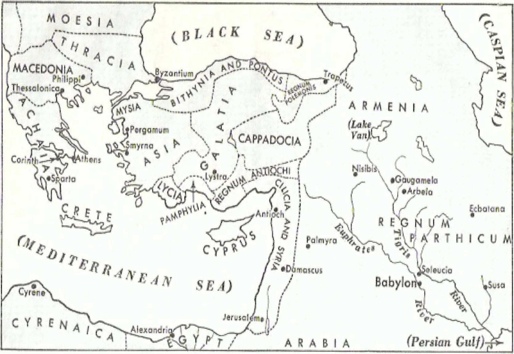ASIA MINOR AND MESOPOTAMIA AT BEGINNING OF OUR COMMON ERA
of Asia. As regards the flight of the defeated Chaldeans to Asia Minor and their fixing their central college at the idolatrous city of Pergamos, Dr. Alox. Hislop says:
Phrygia . . . formed part of the Kingdom of Pergamos. Mysia also was another, and the Mysians, in the Paschal Chronicle, are said to be descended from Nimrod. The words arc. “Nebrod [Greek for Nimrod], the huntsman and giant from whence came the Mysians.” (See Pasc/iaf Cft-rcmicZe, volume 1, page 50.) Lydia, also, from which [the historian} Livy and Herodotus say the Etruscans Lof Italy] came, formed part of the same kingdom. For the fact that Mysia, Lydia, and Phrygia were constituent parts of the kingdom of Pergamos, sec SMITH'S Classical -Dictionary, page 542.
What was the effect of this upon the deified kings of Pergamos? Doctor Hislop goes on to say:
The kings of Pergamos, in whose dominions the Chai* dean Magi found an asylum, were evidently by them [by the Magi], and by the general voice of Paganism that sympathised with them, put into the- vacant place which Belshazzar and his predecessors had occupied. They wore hailed as the representatives of the old Babylonian god. This is evident from ike statements by Pausanius. . . . Attains, in whose dominions the Magi 11.id their chief seat, had been set up and recognized in the very character of Bacchus, the Head of the Magi. Thus the vacant scat of Belshazzar was filled, and the broken chain of rhe Chaldean succession renewed. The Two Babyions, pages 240, 241.
How the foundation for the practice of Babylonian religion in Italy was laid by the arrival there of the Etruscans long before Attains III bequeathed the kingdom of Pergamum to Rome, we read:
In regard to the question of Etruscan origins every poet and every prose writer except Dionysius of Halicarnassus accepts as a matter of course (he story of (heir migration from Lydia as given by Herodotus, who tells how in the reign of Atys, son of Manes, there was a great scarcity of food in all Lydia which lasted IS years. “At last their king divided the people into two portions and made them draw Jots so that the one part should remain and the other leave the country; he himself was to be the head of those who drew the lot to remain there, and his son, whose name was Tyrrhenus, of those who departed. Then the part of them, having drawn the lot. left the country, and came down to Smyrna and built ships, whereon they set all their goods that, could be carried on shipboard and sailed away to seek a livelihood and a country; till at last, after sojourning with many nations in turn, they came to the Ombrici [in Italy! where they founded cities and have dwelt ever since. They no longer called themselves Lydians but Tyrrhenians, after the name of the king’s son who had led them thither/' . . . their language was something entirely unique and peculiar; a statement fully endorsed by modern philologists, , . . <Ideographical reasoning therefore points clearly to an invasion, or perhaps rather a colonization, by successive bands of emigrants who landed on the most, prominent points of the sea coast of Tusi-my [in Italy]. From the character of their earlier remains
the date of the first permanent settlement may bo placed at the end of the 9th century, (This was before Rome was founded, traditionally In 753 B.C., or in the Sth century' B,C.]
That the Etruscans were orientals or semi orientals
is proved by the whole character of thoir earliest art, and >y many details of their religion and worship, It is an art which shows close contact with Mesopotamia. Syria and Cyprus on the one side and with Egypt on the other. The deities and mythological figures on Etruscan gold-work and jewelry of the 7th century are evident-y the heroes and deities of Asiatic mythology. ... In the sphere of ritual and religion there are many details which are taken direct from Mesopotamia, and the whole feeling and atmosphere arc purely oriental- The most striking identities are in the practice of divination and augury; for the custom of divining from the livers of sheep or the flight of birds is purely Chaldean (see DTVITVATIoro. There are models of clay livers from Mesopotamia inscribed In cuneiform which precisely resemble the bronze model of a liver found at Piacenza [in the Province of Emilia. Italy], divided into compartments each of which is labelled in Etruscan with the name of its presiding divini ty.
On the capital questions, therefore, of the origin of the Etruscans, and the date and place of their arrival in Italy, archaeology is ready with a dear answer. They came from some part of Asia Minor, whether or not it was Lydia, as Herodotus asserts, is immaterial. Their original home must be sought somewhere between the Hellespont arid Syria. In its broad lines the tradition given by Herodotus is borne out by archaeological research. . . . Thus history records lew more pathetic instances of iiolitica] blindness than the apathy of the great Etruscan cities in the long wars between Veil [city of Etruria, north of Romel and Rome, which allowed the Romans, though actually the weaker, to swallow up Etruria piecemeal. A confederacy of 12 cities existed in the 6th century, which held its annual mootings at the shrine of Voltumma above the Lacus Vol-si niensis (Lake of Bolscna). . . . Judging from the smallness of the results, it seems more likely that the confederation confined itself principally to affairs of religion. ... fin the above-mentioned 6th century Babylon in Mesopotamia felLJ—The Encyclopaedia Britannica, Volume 8, edition of 1916, on pages 785, 786, under “Etruscans.”’
According to tradition Rome was founded in 753 B.C. In Ute first century B.C. it became the Sixth World Power. About its early history the book Jtfioient Times - A History of the Early World, by James II. Breasted, edition of 1916, on pages 488, 489, 495-499, says:
... a bold race of sea rovers whom we call the Etruscans. They . . . probably had an earlier home in western Asia Minor, and the Egyptian monuments tell us of iheir sea raids on the [Nile] Delta as far back as the thirteenth century B.C., at a time when they were perhaps leaving Asia Minor in search of a new home in Italy. In any case the Etruscans were settled in Italy by 1000 B.C. They thrust back the Indo-European tribes, . . . they continued as an important people of the west far down into Roman history. . . . The Etruscans after 800 B.C. st ret tilt'd far across northern Italy. , . . Thus Rome became a city-kingdom under an Etruscan king, like rhe other Etruscan cities which stretched from Capua ir north (<• the barbor of Genoa. And Buch it remained for two centuries and a half. Although Rome was ruled by a line of Etruscan kings, it must be borne in mind that the population of Latium which tin- Etruscan kings
governed continued to bo Latin and to speak the Latin tongue,1
[Footnote: 1: The above presentation makes the line of early kings of Rome (about 750 to about 500 B.C.) exclusively Etruscan. The traditional founding of Home not long before 730 B.C. would then < orruspond to its
capture and establishment as a strong kingdom by the Etruscans, We possess no written documents of Rome for this early period. We arc obliged to make our conclusions largely on the basis of a study of archaeological remains surviving in Rome and Laiium and viciniiy. Had ihi-sc remains, together with the important elements of Etruscan civilization adopted by the Romans, formed our only evidence, no one would ever have suggested any other theory than that the kings of Rome were Etruscans. The later Romans themselves, however, with evident disinclination to believe that their early kings had boon outsiders, cherish a tradition that their kings were native Romans. This tradition, with many picturesque and pleasing incidents . , . , has found a place in
literature, and is still widely believed. It is possible that there may be some slight measure of truth tn this tradition, but it is not very probable in view of all the known evidence.]
Etruscan ships had known Greek waters since My cenaean days, and the Etruscans were constantly traf-ticking in the Greek harbors. There they learned to write their language with Greek letters, Many tombs . . . containing such inscriptions still survive in Italy. , , . unlike the Greeks they made plentiful use of the arch, with which they had probably become acquaint rd in Asia Minor. It was the Etruscans who introduced the
arch into Italy.
The Etruscan kings introduced great improvement into Romo. . . . But the cruelty and tyranny of the Etruscan rulers finally caused a revolt, led probably by the Etruscan nobles themselves, and the kings of Romo wore driven out. * . , Thus about 5CX) B.C. the career of Rome under kings came to an end; but the two and a half centuries of Etruscan rule left their mark on Rome, always afterward discernible in architecture, religion, tribal organization, and some other things.
Note the above reference to religion. In harmony with this we read, on pages IGO, 164, 165 of the book On the Road to Civilization (1937 edition), by Heckel-Sigman, the following:
In time the people, resenting the tyranny of the Etruscan kings, revolted, overthrew the monarch,, and established a republic (509 B.C.). ... In time the Romans took over the Etruscan gods, Jupiter, Juno, Minerva, and others, and each god was now for the first time given a human form and a residence in temple or shrine. Gods were numerous, and contact with foreign peoples added to their number, They were Identified with the Greek gods. For example, Jupiter, the "sky-father" of the Etruscans, became the Roman version of the Greek ^cTAS-jHT-trrr. Mars, the god of war, was the favorite deity of the fighting Romans. , , . The Sai urnalia wore later taken over by the Christians as their Christmas, and given a new significance.
. , . The revival of religion by ICaesarl Augustus was mainly a political move connected with the deification of the emperor. Some years after Augustus, emperor worship became the official state religion.
The above quotations confirm what Doctor Hislop has to say on pages 239, 240 of The Two Babi/lons,, as follows:
A colony of Etruscans, earnestly attached to the Chaldean idolatry, had migrated, some say from Asia Minor L where Pergamos was located!, others from Greece, and settled in the immediate neighborhood of Rome. They were ultimately incorporated in the Roman state, but long before this political union took place they exercised the most powerful influence on the religion of the Romans. From the very- first their skill in augury, soothsaying, and all science, real or pretended, that the augurs or soothsayers monopolized, made the Romans look up to them with respect. It is admitted on all hands that the Romans derived their knowledge of augury, which occupied so prominent a part in every public transaction in which they engaged, chiefly from the Tuscans, that is, the people of Etruria, and at first none but natives of that country were permitted to exercise the office of Haru.-pex., which had respect to all the rites essentially involved in sacrifice- Wars and disputes arose between Home and the Etruscans; but still the highest of the noble youths of Home were sent to Etruria to he instructed in the sacred science which flourished there. , , . The college of Pontiffs, of which ho [Numa] laid the foundation, in process of time came to he substantially an Etruscan college, and the Sovereign Pontiff that presided over that college, and that controlled all the public and private religious rites of the Roman people in all essential respects, became in spirit and in practice an Etruscan Pontiff.
. . . The true legitimate Babylonian Pontiff had his seat beyond the bounds of the Homan empire [which never overran southern ^Mesopotamia or Chaldea J. That seatr after the death of Belshazzar and the expulsion of the Chaldean priesthood from Babylon by the Medo-Fersian kings, was at Pcrgamos, where afterwards was one of the seven churches of Asia.”
Regarding the above-mentioned Numa, page 256, paragraph 1, of the above-quoted Tftc Two Bab&fons, says: '‘That god was called in Babylon Nebo, in Egypt Nub or Num, and among the Romans Numa, for Numa Pompilius,. the great priest-king of the Romans, occupied precisely the position of the Babylonian Nebo." The Roman capital was founded in the sixth century B.C., according to tradition; but before Babylon fell to the Medes and Persians in that same century and before the religious Chaldeans fled to Asia Minor and Pcrgamos, Babylonish religion was functioning in Italy, However, on pages 241, 242, 2471 250, 252, 255, The Two Baboons shows the connection that came about between Pergamos and Rome, saying:
Ar first the Roman Pontiff had no immediate connection with Perganws and the hierarchy there; yet, in course of time, the Pontificate of Horne and the Pontificate of Pergamos came to be identified. Pergamos Itself became part and parcel of the Roman empire, when Attains III, the last of the kings, at his death, left by will all his dominions to the Roman people, B.C. 133. . . . When Julius Caesar, who had previously been elected Pon l if ex Maximus, became also, as Emperor, the supreme civil ruler of the Romans, then, as head of the Roman state, and head of the Roman religion, all the powers and functions of the true legitimate Babylonian Pontiff were supremely vested in him, and he found himself in a position to assert these powers. Then he seems to have laid claim to the divine dignity ot Attains, as well as tlir kingdom that Attains had bequeathed to the Romans, as centring in himself; . . . Then, on certain occasions, in the exercise of his high pontifical office, he appeared of course in all the pomp of the Babylonian costume, as Belshazzar himself might have darn’, in robes of scarlet., with the croztcr of Nimrod in his hand, wearing the mitre of Dagon [the fish god] and bearing the keys of Janus (the two-faced god] and Cybele I the ‘"mother” goddess]* . . .
. , , until the reign of [Western Emperor! Gratian, who. as shown by fl ho historian] Gibbon, was the first that refused to be arrayed in the Idolatrous pontifical attire, or to sit as Pont if ex. , . .
. . . Within a few years after the Pagan title of Pontifex had boon abolished, it was revived . . . and was bestowed, with all the Pagan associations clustering around it. upon the Bishop of Rome, who, from that time forward, became the grand agent in pouring over professing Christendom, ... all the other doclri s of Paganism derived from ancient Babylon. . . ,
. . . The circumstances in which that Pagan title was bestowed upon Pope Damasus, were such as might have been not a little trying to the faith and integrity of a much, better man than he. Though Paganism was legally abolished in the Western Empire of Rome, yet in (he city of the Seven Hills it was still rampant, insomuch that Jerome [translator of the Latin Vttf^raZel, who knew it well, writing of Romo at this very period, calls it “the sink of all superstitions." The consequence was, that, while everywhere else throughout the empire the Imperial edict for the abolition of Paganism was respected, in Rome itself it was, to a large extent, a dead letter. . . .
♦ . . The man [Pope Dooam I] that came Into the bishopric of Rome, as a thief and a robber, over the dead bodies of above a hundred of his opponents, could not hesitate as to the election he should make. The result shows that he had acted it character, that, in assuming the Pagan title of Fontifex, he had set himself at whatever sacrifice of truth to justify his claims to that title in the eyes of the Pagans, as the legitimate representative of their lonjj line of pontiffs, , , .16
. , . The Pope, as he is now, was at the close of the fourth century, the only representative of Belshazzar, or Nimrod, on the earth, for the Pagans manifestly accepted him as such, . . - A.D. 6Q6, when, amid the convulsions and confusions of the nations, tossed like a tempestuous sea. the Pope of Rome was made Universal Bishop; and then the ten chief kingdoms of Europe recognized him as Christ's Vicar upon earth, the only centre of unity, the only source of stability to their thrones.
From the above information th161 reader can see that, when the defeated religious Chaldeans left Babylon to her mournful decline, not right in 539, but later due to persecution or other conditions, they did not have in minri that the Babylonian religion should die out. The fact is that Babylon’s sudden fall did not mean the end of her religion. A comprehensive examination of the religious world of our twentieth century reveals that Babylonish religion still flourishes around the world. What will it mean for such when the modern Babylon the Great goes down in fulfillment of Bible prophecy? With keen interest we probe further into sacred prophecy to see.
c H A P T E R
17
I MMEDIATELY after foretelling how the “daughter of the Chaldeans” would be dethroned and be abandoned by the religionists who had failed her, Jehovah of armies tells, in the following chapter of Isaiah’s prophecy, what he had in mind for his exiled people. Before their exile in Babylon they worshiped him at Zion (Jerusalem) in a formal way, with their mouths and outward actions, but not with their hearts. Now, by his prophet Isaiah, he proceeds to tell them something important never heard before. They cannot prove that they had heard it before from any’ false god or from the priests of any idolatrous image.
The true God, Jehovah, is the Creator of heaven and earth. From first to last he is still the same God and has not forgotten that he called the nation of Jacob or Israel to be his chosen people. For his own sake he will act in their behalf but act against Babylon. He will not let himself be pi*ofaned by failing to perform what he said; neither will he give his glory to any false god. (Isaiah 48:1-13) Alone able to tell his people these things, he says:
“Be collected together, all you people, and hear. Who among them has told these things? Jehovah himself has loved him. He will do what is his delight upon Babylon, and his own arm will be upon the Chaldeans. I— I myself have spoken. Moreover, I have called him. I have brought him in, and there will be a making of his way successful.’*—Isaiah 48:14,15.
When Jehovah asks his collected people the question, "Who among them has told these things?” he means, Who among the false gods of the pagan world has told these things concerning Babylon’s fall and the deliverance of Uis people by means of Cyrus the Persian? It is this Persian conqueror whom Jehovah has loved because of the work against Babylon that Jehovah has purposed for Cyrus to do. It is this Cyrus that will do what is Jehovah'S delight against that wicked city17 just as in an earlier prophecy ( Isaiah 41:28) he speaks of himself as “the One saying of Cyrus, He is my shepherd, and all that I delight in he will completely carry out? ” It is Cyrus’ own arm that will be upon the Chaldeans with a superior strength that these? Chaldeans cannot resist.
This is so evidently the meaning of Isaiah 48:14b, that the Bible translation by Dr. Janies Moffatt renders this verse: “Gather17 all of vou. and listen: which of your idols ever predicted this, that my friend Cyrus should work out my will on Babylon and the Chaldean line?” The Spanish Versidn Moderna Bible reads: “Come together, all of you, and listen! Who from among those e/ods has announced these things? Cynzs, whom Jehovah loves17 will do the will of Him on Babylon, and his arm wi2Z be upon the Chaldeans.”17
Not one of the idols or false gods of the pagan nations has “told these things’’ in advance, but it is Jehovah himself who has spoken it in advance. He is the One who called Cyrus for this conquest of Babylon, though Cyrus did not know that he was Jehovah’s choice and that Jehovah was maneuvering him to bring him against the doomed city at the appointed time. Jehovah was the One who made Cyrus’ way successful. So it is not to Cyrus’ credit that he was victorious over the Third World Power. Hence Cyrus could right ly say what he did in 2 Chronicles 36:23 and Ezra 1:1, 2. By this we do not say that. Cyrus personally was a man of low ability, but we give the credit where it properly belongs—to Jehovah.
Jehovah did not foretell this secretly. He did not foretell it in some place of concealment, so that nobody can really prove that Jehovah truly did foretell this. About two hundred years in advance he openly foretold it by his prophet Isaiah; and about 732 B.C.. which was before Cyrus was born, Isaiah wrote the book bearing his own name and containing Jehovah's prophecy concerning Cyrus in written form. The later prophet Daniel was able to show Isaiah's prophecy to Cyrus after he captured Babylon and subdued the Chaldeans. (Daniel 6:28; 10:1) If the written prophecy had not come true, it could have been held against Jehovah. But at and from the start of making the prophecy come true, Jehovah was there. Likewise when the climax in the prophecy’s fulfillment occurred, he was there and he was responsible for what occurred. Concerning this fact he said to his people Israel: “Come near to me, you people. Hear this. From the start 1 have spoken in no place of concealment at all. From the time of its occurring I have' been there.”—Isaiah 48:16.
The Lord God was the One who commissioned his prophet and put his spirit upon him. (Isaiah 6:8-10) Thus, when sending his prophet Isaiah, he was also sending his spirit as an inspiring force upon the prophet.. Quite properly, then, Isaiah could say to the people of Israel or Jacob: "And now the Lord Jehovah himself has sent me, even his spirit. This is what Jehovah has said, your Hepurchascr, the Holy One of Israel: T, Jehovah, am your God, the One teaching you to benefit yourself, the One causing you to tread in the way in which you should walk. O if only you would actually pay attention to my commandments’ Then your peace would become just like a river, and your righteousness like the waves of the sea. And your offspring would become Just like the sand, and the descendants from your inward parts like the grains of it. One’s name would not be cut off or be annihilated from before me? ”—Isaiah 48:16-19,
Jehovah called himself Israel's Repurchases By this he indicated that he was going to let the Israelites be taken possession of and deported from their homeland by the Babylonians, This would make it necessary for him to repurchase them from Babylon by means of the one whom he loved, Cyrus the Persian, Foreseeing this, Jehovah showed that his heart’s wish was for the Israelites to avoid this by paying attention to His commandments, Then, instead of having calamity come upon them at the hands of Babylon, they would have peace and prosperity as full, deep and perennial as a river. Their deeds of righteousness would be as innumerable as the sea’s waves.
Also, Jehovah’s promise to Abraham to make his seed as numberless as the grains of sand on the seashore would be fulfilled in them. Their name as a nation would not be cut off or annihilated from before Jehovah, In expression of his heart’s desire he was teaching them how to benefit themselves and was leading them in the way in which they should walk. However, he foreknew that they would not follow his teaching and his leading. In order to be disciplined they would have to be deported to Babylon.
So, speaking to them prophetically as if they were already in exile in Babylon, Isaiah says to the Israelites, the descendants of Jacob the patriarch: “Go forth, you people, out of Babylon! Run away from the Chaldeans. Tell forth even with the sound of a joyful cry, cause this to be heard. Make it to go forth to the extremity of the earth. Say: ‘Jehovah has repurchased his servant Jacob. And they did not get thirsty when he was making them walk even through devastated places. Water out. of the rock he caused to flow forth for them, and he proceeded to split a rock that the water might stream forth? '■ Isaiah 48:20, 21,
This divine command to go forth out of Babylon was, or course, to apply only after that imperial city had fallen and Cyrus the conqueror had issued his decree freeing the exiled Israelites to go back to Jerusalem, to Zion, to rebuild the temple of their God,
When acting upon this decree of liberation, the exiles should be so eager and so prompt to get away from the idolatrous capital of the Chaldeans that 1 xv 1^1 Ijc? fairly running away. Babylon never opened her prison for exiles to let the Israelites run away, and it was not Jehovah’s will lor them to make a jailbreak to try to get out of Babylon before she fell. Even if they did so, they would not get back to their homeland, as it had to lie desolate seventy years. So they had to wait till after the power of the Chaldeans was broken and Cyrus gave them the freedom and the signal to run away back to the land of Jehovah’s worship.—Jeremiah 25:11-14.
Cyrus’ decree releasing the Israelites was published throughout all the Medo-Pcrsian Empire, down to the borders of Egypt. On this basis it was international news that could become worldwide. But the Israelites who took advantage of the imperial decree were to talk about it to others and place the right interpretation upon it. The decree was not just a display of generosity or of humaneness on the part of Emperor Cyrus. More was behind it than that.
So, after the Israelites got back to their desolated homeland and started reconstruction work, they were to make known to the far reaches of the earth, with a joyful cry, the real Liberator and Restorer, saying: •‘Jehovah has repurchased his servant Jacob.” Ue had not cast away his servant Jacob oi' Israel; he still laid claim to this servant nation. Ue showed this by bringing them back by a difficult route to repeoplc their homeland. They were therefore to tell how, though lie brought them back through devastated territory, likely by the direct desert routet yet he did not let them suffer from thirst. Just as when he led their forefathers out of Egypt and through the wilderness to the Promised Land, so now on their return from Babylon he made water flow out of a rock-mass, even miraculously splitting the rock to let water st ream forth.
That was ah part of the salvation from Babylon that Jehovah foretold so long in advance. Deliverance from her would have been pointless if he did not get the Israelites back to Jerusalem to rebuild his temple and resume his worship. He thus showed that he was again at peace with his people. But there was no peace or prosperity for Babylon. “ ‘There is no peace,’ Jehovah has said, 'for the wicked ones.* ” (Isaiah 48:22) In Isaiah's day there was to be no peace for even Israelites who rejected Jehovah’s teaching and broke his commandments. For these disobedient Israelites there would be no peace flowing for them just like a mighty river, for their righteousness would not be like the waves of the sea.
The Israelites who stayed back in Babylon after she fell were not necessarily counted wicked, for example, the aged Daniel. The Babylonian rulers had been wicked, and this dynasty of Semitic kings did not end up in peace. As regards the Israelites who did not find it arrangeable to leave Babylon, they could act on the suggestion of Cyrus’ decree and contribute gold, silver, goods and domestic animals to Israelites actually returning and could also send along a ‘Voluntary offering for the house of the true God, which was in Jerusalem.” In this way they gave material and moral support to the returning remnant.—Ezra 1:2-4.
wake i p, c> zion:
The desola ted capital city of the land of Jud all was to be rebuilt and Jehovah’s name was to be placed there once again. In view of what was prophesied to come, it was only fitting that Jehovah should address himself to the city, or to those who were to I'eoccupy the city. Talking to her as if she had reached the end of her sufferings at the hand of the wicked oppressor, he says:
“Rouse yourself, rouse yourself, rise up, O Jerusalem, you who have drunk at. the hand of Jehovah his cup of rage. The goblet, the cup causing reeling, you have drunk, you have drained out. There was none of all the sons that she brought to birth conducting her, and there was none of all the sons that she brought up taking hold of her hand. Those two things were befalling you. Who will sympathize with you? Despoiling and breakdown, and hunger and sword’ Who will comfort you? Your own sons have swooned away. They have lain down at. the head of all the streets like the wild sheep in the net, as those who are full of the rage of Jehovah, the rebuke of your God."—Isaiah 51:17-20.
By means of wicked Babylon during her program of world conquest, Jehovah made Jerusalem drink the cup of his rage because of her being so contrary to God's will. In fact, he had used Babylon as his “golden cup’* in conveying to Jerusalem what he wanted her to suffer for her discipline. (Jeremiah 51:7; Psalm 75:8) He had a right to execute judgment upon her by means of Babylon, or to use Babylon as his cxecutional lastrument rathe! than to use his heavenly angels. It was especially from 607 B.C. onward, when her population was deported, her royal throne overturned, and both she and her temple were destroyed, that she drained out that symbolic goblet. It was a cup that contained a potion that sent her reeling. Her drunken, fallen condition continued for seventy years.
As she reeled, unable to walk erectly and straight ahead, none of her sons, her inhabitants, could hold her up, keep her from reeling, or help her to walk straight. Even the righteous remnant, like Ezekiel, Daniel and his three close Hebrew companions, could do nothing to hold her by the hand and guide her and keep her on her feet. These righteous worshipers of Jehovah had to suffer along with the responsible unrighteous Israelites and go through decades of exile as Jewish slaves in idolatrous Babylon.
The “two things” that Jerusalem had to drink out of Jehovah*s “cup of rage*’ were in couplets: (1) “despoiling and breakdown/’ and (2) “hunger and sword/’ She had to drink this down with no one sympathizing and with no one to comfort her. Egypt, to whom her last kings had appealed, and other nations were in no position to comfort her and save hcr from destruction. During the eighteen months of her final siege by King Nebuchadnezzar she had to suffer hunger of famine, the sword of Babylonian warfare, and finally a breakdown of her government and defense and a despoiling by pagan conquerors. What could her sons do for hcr? Well, what could wild sheep in a hunter’s net do? Iler sons swooned from weakness and exhaustion: they lay down at the heads of all her streets, as if drunk, but not from natural wine. They were full of the rage of Jehovah, and of the rebuke from their offended God. Faithfully lie had forewarned Jerusalem of all this, but she took no heed.
Then, as if she had already come to the end of this drunken experience. Jehovah*s prophet. Isaiah speaks comfortingly to Jerusalem: “Therefore listen to this, please, O woman afflicted and drunk, but not with wine. This is what your Lord, Jehovah, even your God, with whom his people contend, has said: 'Look? I will take away from your hand the cup causing reeling. The goblet, my cup of rage—you will not repeat the drinking of it any more. And I will put it in the hand of the ones irritating you, who have said to your soul, “Row down that we may cross over/’ so that you used to make your back just like the earth, and like the street for those crossing over/ “—Isaiah 51:21-23.
Why held Jerusalem become like a woman afflicted and drunk, not with natural wine, but with the wine of jr
the execution of Jehovah’s judgment upon her? It was because his chosen people, of whom she was the capital city, had kept on contending with him instead of agreeing with him and lovingly, trustingly obeying him as their God. But there was a limit to his rage at her. After disciplining her he was pleased to show her pity and his forgiving spirit.
This meant that his rage was to turn away from Jerusalem and was to be directed against the organization that had mercilessly brought all this affliction upon her, namely, Babylon and its allies. These had irritated Jerusalem. Thev had humiliated her. They had razed her to the ground. They had made her, as it were, lie face down to the ground and flatten herself to the ground, 1 hat they might walk heavily over her, use her like a city street. (Psalm 137:7; Obadiah 11-14) Thus, in 607 B.C., Jerusalem began to be trodden down by the Gentile nations. There the 4‘seven times,” “the times of the Gentiles,” began, to continue until into A.D. 1914,—Luke 21:24, 47; Daniel 4:16, 23, 25, 32.
For this reason the Gentiles deserved to have the cup of Jehovah’s rage filled up and handed over to them to drink. Jerusalem was not to drink such a cup again by means of Babylon and its anti-J ewish allies. As a retribution, Jehovah in his own due time takes the cup out of Jerusalem’s hand and gives it to those who irritated and debased, her, subjugated her. As he had done with Jerusalem, so he did with her persecutois. He forced them to drink the cup of divine rage. In 539 B.C., at Babylon's fall, they began drinking. To this end Jehovah used the Medes and Persians as his symbolic cup. Babylon was to go down, dead drunk, but Zion was to rise!
It was entirely reasonable to expect that, after her God took the emptied cup of his rage out of her hand, he should call upon her to get up from her prone condition in the dust. Absolutely certain that she would, at his command, rise up as a beautiful city again, he inspired Isaiah two hundred years in advance to cry out:
“Wake up, wake up, put on your strength, O Zion! Put on your beautiful garments, O Jerusalem, the holy city J For no more will there come again into you the uncircumcised and unclean one. Shake yourself free from the dust, rise up, take a seat, O Jerusalem, Loosen foi’ yourself the bands on your neck, O captive daughter of Zion.’*—Isaiah 52:1, 2.
Jerusalem was called Zion because she included within her walls Mount Zion and its stronghold. In 537 B.C. she had lain desolate, uninhabited, for seventy years. In that year Cyrus proclaimed his decree. Since Jehovah had induced this decree, it was as if he were now calling to Zion to wake up to her freedom to exist. It was his due time for her sons to return to her desolate location and rebuild her. She must put on strength as a city, no longer helplessly slaving for Babylon, but gathering strength for the worship and service of Jehovah. It was to be said to her: ‘lThe joy of Jehovah is your stronghold/’ (Nehemiah 8:10) She was again to become the “town of the grand King,” or, “the city of the great King/’ as Jesus Christ himself called her. (Psalm 48:1, 2; Matthew 5:35) With due regal’d for i his, she was to put off the slave girl’s garments and put on beautiful garments* garments of royalty.
Zion was to be a holy city, with the name of her God placed on her and with his temple rebuilt in her on the former sacred location. As a holy city it. was improper for uncircumcised and unclean persons to come inside her. (Lamentations 1:10) She ought to suffer no further defilement or pollution by ungodly pagans either as conquerors or as foreign occupiers of the city, Bah-ylon will trample her down no more. As long as Zion* rebuilt, remained faithful to her God and thus kept her holiness, no uncircumcised Gentile conquerors would be overrunning her and reducing her to the dust again. World powers having the domination over her might change, cis from Mcdo-Persia to Greece (Macedonia), but she would remain intact as a holy city, the center of worship for Jehovah’s chosen people. Isaiah's prophecy remains time even though the Sixth World Power, pagan Rome, took over Jerusalem in 63 B.C. and finally destroyed her in the year 70 (A.D.). How SO? Because Isaiah, chapter 52, finds its real fulfillment in a complete sense in the heavenly Zion. She is the free “Jeni-salem above/* which was foreshadowed by the faithful earthly Zion or Jerusalem.—Galatians 4:26.
After having lain in horrifying ruins since her first destruction in 607 B.C.. Jerusalem was to shake herself free from the dust of seventy years and rise again as a city. She was, as a city, to take a seat, not again on the ground as a mourner, but on an elevated chair with a footstool, on a roval throne, in honor of her heavenly King Jehovah. Because her inhabitants have been carried off as slaves to Babylon, she could be called the “captive daughter of Zion.” But after Cyrus the Persian overthrew her captor, she was told to loosen the bands or chains about her neck. She was to exert herself in her freedom to serve Jehovah as his temple city, no longer letting herself be confined by Babylon.
Appropriate, then, were the words of Zechariah 2:7, 10: ” 'liev there, Zion] Make your escape, you who are dwelling with the daughter of Babylon. Cry out loudly and rejoice, O daughter of Zion; for here I am coming, and T will reside in the midst of you/ is the utterance of Jehovah.” He would reside in her again, no, not during her captivity in Babylon, but during her freedom to worship him on her God-given location in the Promised Land.
Zion was not to become discouraged or hopeless because she had no means to buy her own way out to freedJom, “For this is what Jehovah has said: ‘It was lor nothing that you people were sold, and it will be without money that you will be repurchased? ” (Isaiah 52:3) Jehovah did not owe Babylon anything, but she did not give him anything as a payment for taking
possession of his chosen people, Jehovah 11 sold** or delivered, over Zion to Babylon for nothing. (Jeremiah 15:13, 14) Hence she should not have felt that she had a perpetual claim on Zion and was entitled to keep Zion captive indefinitely, forever, as Babylon expected to stand as the dominant world power forever. How little she knew God's thoughts!
Zion had been sold for nothing. Likewise, she herself would have to pay nothing as a ransom price to gain her freedom. Nor was it at any expense to Jehovah that Zion was released from Babylon, King Cyrus released Zion voluntarily, but he acknowledged Jehovah, However, there was a reptzreft-asc of Zion. In what way? In that Jehovah gave Cyrus the Persian the countries that he conquered in his inarch to triumph over Babylon and afterward gave Persia the land of Egypt in the days of Cyrus’ son Cambyses. (Isaiah 43:3, 4) But the countries given were all pagan countries, and Jehovah gave them over to the Mcdo-Persian Empire, Furthermore, when the remnant of Jehovah’s people were released to return to Zion (Jerusalem), King Cyrus restored to them the vessels that King Nebuchadnezzar had stolen from Jehovah’s temple. King Cyrus did not hold onto them as any compensation but saw to it that they were installed again in Jehovah’s rebuilt temple in rebuilt Zion.
Instead of releasing Zion and her children for pay, Babylon was destroyed for having oppressed them. She had no rightful claim on them and no ownership of them anymore than did Egypt the First World Power, or Assyria the Second World Power. In Isaiah 52:4 Jehovah made this point clear by saying: “For this is what the Lord Jehovah has said: ‘It was to Egypt that my people went down in the first instance to reside there as aliens; and without cause Assyria, for its part, oppressed them,’ ” In the days of Joseph as prime minister and food administrator over Egypt, the patriarch Jacob and his other sons and their families moved down to Egypt. as alien guests. Some time after Joseph's death ungrateful Egypt no longer treated his people as alien guests but enslaved them. It became necessary for Jehovah to deliver them from Egypt by violent measures against the Egyptians. Babylon did not think of this!
Centuries afterward Egypt was defeated by Esar-haddon the king of Assyria, which then became the Second World Power. Esar-hoddon was the son or King Sennacherib, the haughty Assyrian who threatened Jerusalem during the days of good King Hezekiah and of the prophet Isaiah. Jehovah relieved his holy city of this threat by killing 185,000 of Sennacherib's troops in one night. So Sennacherib got out of the land of Judah that he had been mistreating.
However, years prior to this, another king of Assyria overthrew the ten tribe kingdom of Ishii-;, dcsiroyed its capital Samaria and deported the surviving Israelites to Assyrian territories. But. instead of letting the land lie desolate, uninhabited, the king of Assyria resettled the land of Israel with pagans taken from Babylon and other foreign lands, (Ezra 4:2; 2 Kings 17:5-10, 22-24) So “without cause” Assyria oppressed Jehovah's people. For this he rebuked that world power, and about 633 B.C. her capital Nineveh tumbled into destruction at the hands of the Medes and Chaldeans.
In view of how he had dealt with such world powers that oppressed his people unrighteously, what interest would he now have in Babvlon that would call for him to take similar action toward her? In Isaiah 52:5, 6 he answers: “ ‘And now, what interest do I have here?' is the utterance of Jehovah. ‘For my people were taken for nothing. The very ones ruling over them kept howling,1 is the utterance or Jehovah, ‘and constantly, all day long, my name was being treated with disrespect. For that reason my people will know my name, even for that reason in that day, because I am the One that is speaking. Look! It is I.’ ”
So Jehovah had good reason to interest himself in Babylon. He had good reason for finding a similar situation existing in her as he had long previously found in ancient Egypt and Assyria. Babylon had paid nothing to him for the ownership of His people. As rulers the Babylonians kept howling over the exiled Israelites in triumph, in boasting, in bragging about themselves as now the dominant world power that was not challenged or defied by any kingdom of God on earth. Such howling was enough to draw some remarks from Jehovah, for be heard what they were saying in their pride and glee.
The Babylonians also expressed their contempt for the God of the Israelite exiles. They treated his name with disrespect all day long, constantly. They misinterpreted the sad plight of the Israelites. They attributed the defeat and deportation of these to what seemed to be the weakness of their God Jehovah. They did not look on what befell the Israelites as an expression of his rage against his disobedient people. They did not see that he was disciplining his people because of their sins. Hence the Babylonians did not fear that they too might offend against this God.
It should have made the Israelites specially sad that the name of their God, the true God, was being disrespected and that they themselves were largely responsible for this. As the Christian apostle Paul said to natural Jews of his day, about A.D. 56: 4"For "the name of God is being blasphemed on account of you people among the nations'; just as it is written.’* (Romans 2:24) There was danger that this would finally make Jehovah’s own people lose respect for his name, There was need for them to pray in harmony with what Jesus Christ later taught his disciples to pray to God: 11 Our Father in the heavens, let your name be sanctified.”-—Matthew 6:9.
Thus fur almost seventy years after Jerusalem was destroyed in 607 B,C., the Israelites in Babylon had to endure this disrespect for the name of their God. There they knew His name defamed, abused, blasphemed, taken up in a worthless way. But to this there ought to be a limit, Ilie time ought to come for them to know (‘Sod’s name in a different setting, against a different background of events. Hence Jehovah was determined that his own people should know his name. Not that they did not know what his name was or how it was correctly pronounced, but that they as exiled Israelites did not know his name vindicated before them and all the nations.
Jehovah fixed the day for this. In that day he would make them know his name as fully vindicated* This called for a change of the situation and the condition of his peopler forasmuch as his name was called upon them, The disrespectful Babylonians would have to be silenced. Then the exiled Israelites would know his name glorified by his victory over Babylon and by his liberating them from her. Jehovah gave his word for this. Thore was no uncertainty about its occurring, “because,” said he, “I am the One that is speaking. Look! It is I.” What need for moie guarantee?
MAKING His NAME KNOWN ARIGHT
Looking forward to that day when he would make his people know his name as the name of their Liberator, Jehovah prophetically described the effects of their liberation from Babylon, which came in 537 BMC. He inspired his prophet Isaiah to speak just like a farsighted watchman standing at the desolated location of the city of Zion, so that he exclaims in admiration:
“How comely upon the mountains are the feet of the one bringing good news, the one publishing peace, the one bringing good news of something belter, the one publishing salvationT the one saying to Zion: * Your God has become king!* ”—Isaiah 52:7.
As Zion was located more than 2.000 feet above the level of the Mediterranean Sea, the feet of the messenger with exciting news for Zion could be seen in the distance approaching over the nearby mountains. He had news of peace, of Jehovah’s peaceable purpose toward Zion, of his goodwill and not of further rage on his part. The messenger was bringing good news for lovers of Zion, It was news of something better than her desolation and the exiling of her children, news of liberation for her children,, news of the decree for the rebuilding of her and her temple. He was publishing salvation, Jehovah’s salvation for Zion and His people.
The messenger was to say to desolate Zion: “Your God has become king!** In 607 B.C., by means of the Babylonians, iGod had overturned "Jehovah’s throne” on which the kings of David’s lineage had sat in Zion. It then appeared that no longer was Zion's God a king but that, instead, Marduk, the chief god of Babylon, was king. But now by Babylon's overthrow Jehovah had again proved his universal sovereignty. Now the *‘city of the great King” was to be reestablished, with his temple inside it. As for the messenger who brought such good news, his feet were dusty, worn, tired, but O how comely they looked to lovers of Zion and her God!
Thus, in a sense, the fall of Babylon meant the establishment of the kingdom of God. Also, the messenger of good news was a prodaimer of God’s kingdom* The messenger who in ancient times brought good news to earthly Zion was a prophetic figure foreshadowing a messenger of grander good news, one announcing the setting up of God*s kingdom in the heavens and the fall of a modern Babylon, that Babylon the Great foretold In the last book of God’s written Word. The grander messenger of good news is primarily the promised Messiah, the Anointed One of prophecy, the Christ, as the Greek-speaking JewTs called him. His anointed footstep followers, who copy him and follow in his footsteps, become messengers of good news, gospel messengers, with him their Leader. This truth becomes clear from the fact that the Christian apostle Paul quotes the prophecy of Isaiah 52:7 and applies it in his own day, saying:
"For ‘everyone who calls on the name of Jehovah will be saved/ However, how will they call on him in ■
whom they have not put faith? How, in turn, will they put faith in him of whom they have not heal'd? How, in turn, will they hear without someone to preach? How, in turn, will they preach unless they have been sent forth? Just as it is written: ‘How comely are the feet of those who declare good news of good things!’ ” —Romans 10:13-15; Delitzsch.
In agreement with this fact, there is a larger Babylon, a mystical Babylon, namely, Babylon the Great, out. of which to flee. There is also a larger Zion, a spiritual Zion, to which to come for salvation. We can have this in mind as we look into the further part of Isaiah’s prophecy and see its ancient fulfillment.
As if hearing the voices himself, the inspired Isaiah says to Zion: “Listen! Your own watchmen have raised their voice. In unison they keep crying out joyfully; for it will be face to face that they will see when Jehovah gathers back Zion.”—Isaiah 52:8,
Zion’s watchmen would be those Israelites who got the information reg aiding her restoration in advance of others, inasmuch as a watchman on a tower sees far into the distance and discerns the approach of someone before that one arrives. They become responsible to pass on the information to the rest of Zion’s children. As Zion’s alert watchmen discern the messenger of good news coming, they fulfill their appointed duty by lifting up their voice for all the inhabitants to hear, but there is a ring of joy in their voices. (2 Samuel 18:27) They just cannot keep from shouting. In unison they do it, for they are all agreed that the oncoming messenger is bringing good news. Their united voices make the glad announcement al! the more audible, so that everybody hears.
358
The fact that many watchmen join in crying out joyfully gives confirmation to what is announced. It shows that Zion’s watchmen arc in no doubt about the matter. What they see is unmistakable; it is too plain to be misunderstood. It is as if they were seeing <Jehovah himself gathering back Zion to her proper location. It is as if they were seeing him face to face, or eye to eye, that is, as if with eyes to one another, as if their eyes were looking into his eyes, thus establishing a,close, personal contact, (Numbers 14:14) It is clearly visible that Jehovah is i he One doing this act of deliverance and restoration, and not really Cyrus the Persian, J;?'iovah is making his promise (“jns* fr:ic. He is reestablishing the place of his former residence, the place where his name used to dwell.
True, Jehovah God is invisible; yet so remarkable is the sight and so plain is it that this is his own doing, that it is as if he himself were seen at the head of the procession, leading his faithful remnant of worshipers back to reoccupy the location of Zion and to rebuild the holy city. No one but the Almighty God himself could have brought his helpless people back from Babylon to their long-desolated land. Back in 537 B.C, those Jews who were like watchmen had such a conviction because of their faith.
It was a time for everyone who had been mourning over Zion to rejoice, yes, even for those hills to rejoice on which the city had formerly stood but which had lain desolate for seventy years. Hence, because the city was not to be devastated forever but was to be reconstructed, Isaiah turned his attention to the city territory and said: “Become cheerful, cry out joyfully in unison, you devastated places of Jerusalem, for Jehovah has comforted his people; he has repurchased Jerusalem. Jehovah has bared his holy arm before the eyes niTuT j r TTIjI T ■ 1 1 n .
Ah, now those mournful-looking places were to be reoccupied by Jehovah’s chosen people, to be cultivated again and become like a paradise. This was to be because Jehovah had comforted his people by bringing about Babylon’s fall and by freeing his people from her, ending their exile and bringing these homesick people back to their beloved homeland. Jehovah had repurchased Jerusalem, making it possible for her to come into existence again as a city free from subjection to idolatrous Babylon. She was again the property of her God Jehovah and was to be once more the seat of his worship and the earthly location of his theocratic government. This was why Jerusalem's long-devastated places had reason to rejoice.
This heart-el leering event had all boon made possible by the exercising of holy power, or, figuratively speaking, Jehovah's "holy arm." He had bared it, as if he were rolling up his sleeve in ordei' to work at saving his people from Babylon. This was not done secretly, inconspicuously. Rather, all the nations of the world were able to see Jehovah's bared arm in action. Thus peoples living in the extremities of the inhabited earth were able to see the salvation performed by Isaiah's God, Jehovah. To these nations and remote peoples it should have proved conclusively that Zion’s God is the one living and true God. Many did accept this proof of his Godship and turned to worshiping him.
Zion, or Jerusalem, made her restored existence felt in future centuries. Her restoration was something to speak of in praise to her God whose temple she again contained. This international news spread to all those Israelites who were still hi the Diaspora, that is, in the Dispersion of the Jews throughout the inhabited earth. rlTiey could speak of Jehovah as “our God," and they had the opportunity to be his witnesses, testifying to how he had saved his people from such a seemingly unconquerable world power as Babylon. To all the ends of the earth they were obligated to be His witnesses and give a testimony concerning his power of salvation, for he is the only one to look to for salvation. Their giving this international witness was an added proof that Jehovah’s nation of witnesses had been delivered and restored and was prospering. In confirmation of tiiis, they would leave their foreign countries at times of Jehovah’s appointed festivals and would go up to his holy city, to join in the celebrations and bring offerings with them.
In view of Zion’s coming liberation, Isaiah’s prophetic call to her was for her to “'wake up1’ and put on her strength. This put a responsibility upon her children exiled in Babylon. They had to do something, that Zion might wake up from hex’ drunken stupor of affliction, Isaiah prophetically showed them their responsibility, saying: “Turn away, turn away, get out of there, touch nothing unclean; get nut from the midst of her, keep yourselves dean, you who are carrying the utensils of Jehovah, For you people will get out in no panic, and you will go in no flight. For Jehovah will be going even before you, and the God of Israel will be your rear guard.”—Isaiah 52:11,12.
By those words, Isaiah was in effect saying to the Israelites who were to be released from Babylon by Cyrus’ decree in 537 B.C.: ‘Turn away from Babylon. Enter into your God-given freedom. Return to God’s worship in your distant homeland. Babylon is no proper place for God's worshipers. So, turn away, get out! She is an unclean place. Do not take hold on her unr eturn to God’s pure worship you have to let go of all
cleanness, Do not touch it and cleave to it, lot' you are
God's holy people. You cannot continue as his people
and hold onto the things of unclean, filthy Babylon. To
Babylon's religious uncleanness. Ix?t me, then, repeat: “Get out from the midst of her.” Go where you belong.
where your God wants you to be. Co to the only one place to get away to, and that is, to the place of Jehovah’s worship. Get away and be clean religiously/
There was an important reason for departing Israelites 1o keep themselves clean religiously and morally. They were to carry the utensils of Jehovah. O what a thrill the mention of this must have brought them! What an incentive this must have given them to be clean and stay clean- It meant that the sacred utensils of Jehovah’s temple that King Nebuchadnezzar had stolen from Jerusalem and that, later, King Belshazzar had desecrated on the night of Babylon’s fall were to be entrusted to their care, to be carried back to the sacred spot on Mount Moriah and there to be put to use again in a holy manner inside Jehovah's rebuilt temple.
Entirely fitting it was that those holy utensils should be carried back by clean worshipers. Jehovah does not use the unclean in his service. Those who would be carriers of his instruments of worship must cleanse themselves from any defilement with Babylon's uncleanness. They must no more slave for her but get away from her and her idolatry. They must be clean, not merely in an outward ceremonial way, but primarily in heart. About eight centuries later the Jewish Christian, the apostle Paul, enlarged upon the inner meaning of those words of Isaiah 52:11, when he quoted from them and applied them to Christians who leave Babylon the Great.
Paul said: “Do not become unevenly yoked with unbelievers. For what sharing do righteousness and lawlessness have? Or what fellowship does light have with darkness? Further, what harmony is there between Christ and Belial? Or what portion docs a faithful person have with an unbeliever? And what agreement does God’s temple have with idols? For we are a temple of a living God; just as God said: ‘I shall reside among them and walk among them, and I shah be their God, and they will be my people.' ‘ “Therefore get out. from among them, and separate yourselves,” say's Jehovah,
‘"and quit touching the unclean thing*** ’ ”—2 Corinthians 14-17.
What a consoling thought it is that, when his people leave the unclean city of Babylon, they have their God Jehovah with them, leading them and protecting them I Of course, their getting out of her was to take place first after her fall in 539 B.C., that it might be apparent that Jehovah was their Deliverer. There was to be no panicky flight from Babylon before she fell. There was to be no breakaway from the Babylonian prison in a desperate attempt to escape from Babylon while she still held control as the Third World Power* That would be a personal effort to free themselves, for which Jehovah could not be given the credit. God did not authorize his exiled people to break out of Their prison before he had overturned Babylon, because, for one thing, the kind of Judah and Jerusalem had to lie desolate for seventy years in order to enjoy its due number of sabbath years, (2 Chronicles 36:20, 21) They must wait upon him for their salvation, at His time.
Their departure from Babylon was not even to be like in the case of Egypt, From that land their forefathers had to get out fast, for Egypt’s Pharaoh urged them out, thrusting them out as Jehovah had foretold. The Egyptians themselves urged those Israelites on, to have them get out of the land quickly. This put the Israelites in a bit of difficulty. According to the account in Exodus 12:30-34, 39, they were “driven out of Kgy at and had not. been able to linger and too they had not prepared any provisions for themselves,” so that the Israelites “carried their flour dough before it was leavened, with their kneading troughs wrapped up in their mantles upon their shoulder.” Yet there was no disorder.
Exodus 13:18 says: “It was in battle formation that the sons of Israel went up out of the land of Egypt [that is, like an army in five parts, with a van, a rear, a main body, and two wings, margin of 1953 edition].** So it was no mad scramble. It was to be the same when the exiled Israelites left Babylon. Why? Because Jehovah their God would be going before them, and Jehovah docs not run in panic. He moves with dignity, orderliness and calm courage.
Of course, they should not dillydally about leaving the land of their exile. Not at all’ In fact, they would be so eager and prompt to get out that they would waste no time in getting out. Their departure would be so rapid that it would be comparable to a Hight. They could not hurry up their God who was going ahead of them as their Leader. Neither did they have to run frantically as if bloodthirsty pursuers were hard on their heels, to drag them back into slavery. The God of Israel would be not alone their Leader but also their rear guard.—Ezra 8:21-23.
So there was no need to run from pursuers. Jehovah can fight a rearguard action and can hold any murderous pursuers in check and thus let his departing people move forward orderly, in holy array.
This assured the remnant of Israelites that they would get safely back to Zion with the “utensils of Jehovah.” With him before them as their Leader heading the procession, the watchmen of Zion would, as if it were “face to face,” “see when Jehovah gathers back Zion.” What a glorious sight that must have been to those watchmen’ With Jehovah surrounding his people with his protection as he led them along to their right destination, what a blessed experience that was to he for those exiled Israelites or Jews who obeyed the divine command: “Get out of there, touch nothing unclean; get out from the midst” of Babylon!—Isaiah 52:11.
c H A P T E R
18
k N OBEDIENCE to the divine commands a remnant of faithful Jews Quit their exile in I-kibyiomH and made their way back to their Ckd-givtO homeland. Their eyes were specially fixed on Zion. Jerusalem. Concerning the date of this, The GrapAJc H istor-ical Atlas of Palestine* says, on page 34, that in 538 B.C. Cyrus the Persian issued his proclamation freeing the Jews to return to Jerusalem and rebuild its temple, and that they reached their desolate homeland in 537 B.C. Under the heading “Babylonian C< ed\ j \ The Encyclopc^dia Britannica (eleventh edition), Volume 3, page 115b, says: “After the overthrow of Babylonia by the Pershins, Cyrus gave the Jews permission to return to their native land (537 B.C.), and more than forty thousand are said to have availed themselves of the privilege?’!
* Published by Ur. J. S^^plro, editor, Tel-Aviv, Israel, UM1, English edition.
t Says Br1, Volun • • 10, page 108a. tinder the heading “Books Of Ezra mid Nehemiah": **Thje period of history covered by the books of Kzra and Nehemiah extended from the return of the exiles under So rubbabci 5m 537-536 u.c. to Nehemiah's second visit to JeruMileni . . . ."
Under the heading ‘'Book of Ezra” Am3, Volume 10, page 689a. says: “The book of E^ra Covers the history front 537 DC. to 45S, although sorrn4 would substitute another date far th® latter one."
The book The jlfonutnewfa trnef Old Tcs&znumf (1958), by Price. Sellers and Carlson, says, on page 319, that It was “’'about 538 Or 537 li.C." iitut rus published his deerer- in Babylon for captive peoples to go back to their homelands, the Jcivs receiving special help by the :njl.li;irh ii[Jiidu- the heading 'The Ancient Unr.es Employed’* it says, on page 414, regarding the year EC., ''537-536 Hebrew ExUv.-i Dt-cu.-ri."
That the year of the return of the Jev. ish remnant to Judah and Jerusalem was marked in God’s time schedule, we have the proof in Ezra 1:1-4. This reads: “And in the first year of Cyrus the king of Persia, that Jehovah's word from the mouth of Jeremiah might be accomplished, Jehovah roused the spirit of Cyrus the king of Persia so that he caused a cry to pass through all his realm, and also in writing, saying: “This is what Cyrus the king of Persia has said, “All the kingdoms of the earth Jehovah the God of the heavens has given me, and he himself has commissioned me to build him a house in Jerusalem, which is in Judah. Whoever there is among you of all his people, may his God prove to be with him. So let him go up to Jerusalem, which is in Judah, and rebuild the house of Jehovah the God of Israel—he is the true God—which was in Jerusalem. As for anyone that is left from all the places where he Is residing as an alien, let the men of his place assist him with silver and with gold and with goods and with domestic animals along with the voluntary offering for the house of the true God, which was in Jerusalem.” * ”
This decree by Cyrus did not apply to the fugitive Jews in Egypt. The land or Egypt was first added to the Persian Empire after Cyrus’ death by his son and successor, Cambyses, this bringing the entire Mesopotamian-Egyptian region under Persian control by 525 B.C. But Cyrus could make a decree affecting the land of Judah in Palestine, because, when he captured Babylon in 539 B.C., he got possession not only of Babylonia itself but also of its foreign holdings, which included Syria, Palestine and the part of Assyria that Cyrus did not already hold. He fell in death about 530 B.C. while in battle northeast of the Caspian Sea. To his son and successor Cambyscs he left an empire that extended from the Aegean Sea on the west to the Indies in the east—the Fourth World Power.
In calculating the 4‘first year of Cyrus the king of Persia/* we must faithfully proceed according to the inspired Word of Jehovah God. We accept from secular historians the year 539 B.C. as a fixed date, marking the dov. nfall of Babylon, the Third World Power. But the Bible introduces, immediately after the fall of Babylon in that year of 539 B.C., the reign at Babylon of Darius the Mede. (Daniel 5:30, 31) The prophet Daniel, who was there at Babylon, speaks of the “first year of Danns the son of Ahasuerus of the seed of the Medes, who had been made king over the kingdom of the Chaldeans.” (Daniel 9:1; 11:1; 6:1, 6, 9t 25, 28) In harmony with the Bible we must accept at least one ycarT with possibly part of a second year, for Kins Darius the Mede. Hence, at the earliest, the first year of King Cyrus the Persian may not have begun till late in the year 538 B.C. to extend over into the following year of 537 B.C.*
Cyrus* decree was evidently not issued before the first year of Darius the Mede was disposed of and Cyrus became sole ruler of Babylon. The Bible docs not say that it was in the first year of the reign of King Darius the Mede that Cyrus issued his decree, nor does the "If
Bible say that Jerusalem’s desolation came to an end in the first year of King Darius’ reign. It was in the first year of his reign that the prophet Daniel studied Jeremiah’s prophecy concerning Jerusalem's desolation, and this study on Daniel’s part must have been before
* On page 404 of Volume 4, The Jewish says: “Cyrus
always conformed to tlie traditions of the thrones he usurped., and, together with his son Cum bysvs, rendered homage to the native cyi lies. On the first day of the year, Wean 1 (March 20), 53H, tn conformity with Babylonian custom, he grasped the hands of the gulden sta>. ue of Bd-Marduk. and thus become consecrated as monarch. From thh ceremony dates the first year of his reign as ’King of Babylon, King of all the L-UEldS," ,r Cyrus li-us riiii himself proc i liicd as kiriy of Babylon and as the legitimate successor to the deposed King Nab-onidus. By doing this he did not have to reconquer the Babylonian Hmpire. Babylon’s foreign po^c^<ions. Syria, Phoenicia, Palestine and the borderlands of the desert. all cam# to be tributary to Cyrus.— S»*v T'm- '.frsiWiilLStcY fj iMriOTtCiOf Atlas 1O XJiC JKifciri (TJEifi), page 75, paragraph 3.
Cyrus issued his decree in his own name in his own first year of his reign aside from Darius the Mede. —Daniel 9:1-18.
In view of the time that it took the homesick Jews to get ready and then make the trek back to Judah and Jerusalem, the decree of Cyrus must have been made toward the close of winter and the beginning of spring of 537 B.C. This agrees with 1he date fixed by the authorities quoted or referred to above.
It is very important to fix this date, for by means of it we are able to fix the date for the beginning of the desolation of the land of Judah and the beginning of the “times of the Gentiles/’ or, ‘ the appointed times of the nations.’’ (Luke 21:24, /IV; ATW)* The Bible leaves us in no uncertainty as to how long the desolation of the land of Judah and its capital was to be. That it was to be for a certain number of years and that it was to be ended as a result of Cyi us’ decree is plainly rated for us in 2 Chronicles 36:20-23, after that chapter to ills of how King Nebuchadnezzar destroyed the city of Jerusalem. The above-cited verses read:
“Furthermore, he carried off those remaining from the sword captive to Babylon, and they came to be servants to him cind his sons until the royalty of Pct si a began to reign; to fulfill Jehovah’s word by the mouth of Jeremiah, until the land had paid off its sabbaths.
• If we proceed according to the cuneiform inscriptions, rather than the Bible, we have to lake the position that Darius the Mede and Cyrus the Persian, reigned concurrently for a time. According to this, the accession year fan Incomplete lunar year) of Cyrus as king of Ba by Ion begad On October 23 of 539 B.C.. when he entered the city (by*day) after its capture by his troops. Hence his first regnal year It’ i ..J' Jun.it y-'.tr) :.ri ■ n v-an I i’.i.’., Off 1-n 17/18
of 538 B.C., Gregorian time.
The cuneiform tablet entitled ’‘Strt»mni<-r. Cyrus No. 11" mentions Cyrus’ first regnal year. By this tablet It is calculated thnt this year begstn March 17/18, 538 B.C-, and it ended on March 4/5 of 537 B.C.,. Gregorlan tin.. . So Cyrus’ second regnal year began '.he MXt day. on March 5/6, 537 B.C. In this case Cyrus* ttMTM must have been made ii. tore this latter date, that Is, lute in the year 33S or t ru ly in 537 B C. Set*- pag-es 14, '.J91 of Sch.yiowtan Chrtw.^Ofry 62G B.O. - A~l). 75, edition of 1956, by Parker and DubbcrsU-ln.
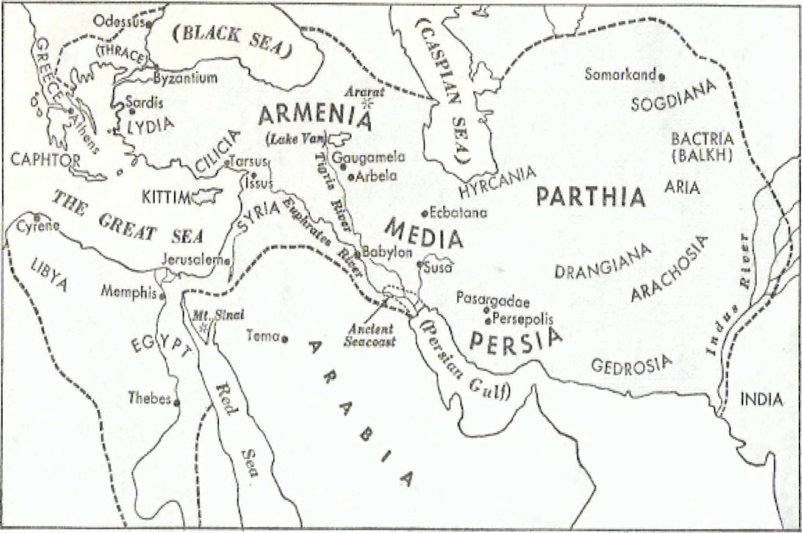THE PERSIAN EMPIRE AT ITS GREATEST EXTENT (512-485 B.C.)
AU the days of lying desolated it kept sabbath, to fulfill seventy years. And in the first year of Cyrus the king of Persia, that Jehovah’s word by the mouth of Jeremiah might be accomplished, Jehovah roused the spirit of Cyrus the king of Persia, so that he caused a cry to pass through all his kingdom, and also in writing, saying: ‘This is what Cyrus the king of Persia has said, “All the kingdoms of the earth Jehovah the God of the heavens has given me, and he himself has commissioned rue to build him a house in Jcriis;ilom, \vhn\t is in Judah. Whoever there is among you of all his people, Jehovah his God be with him. So let him go up.” ’ ”
Later, in the reign of Darius I the Persian, successor to Cambyses the son of Cyrus, the official copy of Cyrus* decree was found in Ecbatana (Achmetha, AV), which was the former capital of Media and the summer residence of King Cyrus, northeast of Babylon. In this regard, the account in Ezra 6:1-5 says:
“It was then that Darius the king put an order through, and they made an investigation in the house of the records of the treasures deposited there in Babylon. And at Ecbatana [Achmetha] r in the fortified place that was in the jurisdictional district of Media, there was found a scroll, and the memorandum to this effect was written within it: Tn the first year of Cyi'us the king, Cyrus the king put an order through concerning the house of God in Jerusalem: Let the house be rebuilt as the place where they are to offer sacrifices, and its foundations arc to be fixed, ils height being sixty cubits, its width sixty cubits, with three layers of stones rolled into place and one layer of timbers; and let the expense be given from the king's house. And also let the gold and silver vessels of the house of God that Nebuchadnezzar took out of the temple that was in Jerusalem and brought to Babylon be returned, that they may reach the temple that is in
Jerusalem at its place and be deposited in the house of
God? ”—Compare Ezra 5:13-15.
The decree of Cyrus did not in itself end the seventy-year desolation of the land of Judah and Jerusalem. The exiled Jews themselves had to take advantage of the decree and leave Babylon and go back to their homeland and reoccupy it, in order to end its desolation. Many of the Jewish exiles had become established in Babylonia and preferred to remain there, having become materialistic. There was, however, a remnant of Jewish exiles that yearned for Jehovah’s worship at the very site, in the very city, where Ue had placed his name. They were so eager to go back to Zion (Jerusalem) that their efforts to do so were as if in a swift flight from Babylon. They desired to obey Jehovah’s command through Isaiah and Jeremiah, to get out of the midst of Babylon, touching none of her unclean things, that thus they might be clean and bear Jehovah’s sacred utensils of worship back to the site of his holy temple,—Isaiah 52:11; Jeremiah 50:8; 51:6.
One of those who were willing to go to the homeland of their forefathers and rebuild the temple of Jehovah at Jerusalem was one Sheshbazzar. Ibis was the Hebrew form for his name in Babylonian,
uswr, or, Shamashrbana-^usur, which meant ' O Shamash, Protect the Father.” It is possible that the full name was Shcmiash-ban^eri-Bab-ili-u^ur, meaning “O Shamash, Protect the Father [Builder] of the Seed of Babylon.” (Shamash was the Babylonian sun-god.) In Ezra 3:2, 8 the Jewish prince bearing this name is identified with Zerubbabel, the son of Shcalticl a descendant of King David. (Matthew 1:6-13) King Cyrus made him governor of the returning Jews.
Cyrus entrusted this Sheshbazzar or Zerubbabel with the delivering of the sacred utensils of Jehovah’s worship back to the temple site at Jerusalem. These included vessels out of which Belshazzar and his grandees had drunk on the night of Babylon’s fall. Cyrus had these utensils taken out of the pagan temple where Nebuchadnezzar had stoi’cd them after stealing them from Jerusalem, (Ezra 1:7-11) The Jewish high priest, Joshua (or Joshua) the son of Jehozadak, was most interested in their safe delivery, and he accompanied Governor Zerubbabel back to the site of the holy city. All together a congregation of 42,360 faithful Jews left Babylon. They were accompanied by thousands of non-Jewish associates, namely, 7,337 men slaves and slave girls, and 200 male and female singers. (Ezra 2:1-67) For them it was a four-month-long journey to Jerusalem. as early after Cyrus’ decree as possible.
SEVENTY YEARS* DESOLATION ENDS
So, in the year 537 B.C., the land of Judah began to be once again inhabited by man and domestic beast. There was no one in the land to keep them out. Almighty God had preserved the land unoccupied in order that it might enjoy the sabbath years of complete rest that it deserved, with no one on it to cultivate or work it. Every year of its lying thus desolate was the equivalent of a sabbath year according to Jehovah’s law through Moses. (Leviticus 25:1-12) Regarding this repeopling of the land of Judah we read: "And the priests and the Levites and some of the people, and the singers and the gatekeepers and the Nethinim took up dwelling in their cities, and all Israel in their cities. When the seventh month [Tishri] arrived the sons of Israel were in their cities.”—Ezra 2:70; 3:1.
How remarkable this was! Why? Well, in the seventh Jewish month of the year of Jerusalem’s destruction the land of Judah was left completely desolate by the flight of the poor Jew’s who had not been deported, taking the prophet Jeremiah with them down into Egypt. (2 Kings 25:22-26; Jeremiah 41:1 to 43:8) Thal was also the very month in which sabbath years and Jubilee years began, namely, “in the seventh month on the tenth of the month; on the day of atonement.” (Leviticus 25:9, 10) Since the desolation had begun in the seventh month, the desolation of the land
ought to end officially in that same month; and Ezra 3; 1 officially declares that it ended in that month.
Since we have determined the year and the month in which the desolation ended, it is simple mathematics to calculate when the desolation began upon the land of Judah. Ail we have to do is to measure back seventy years, forasmuch as the desolation was foretold to last seventy years and it actually lasted seventy years. Seventy years back from the seventh month (Tishri) of the year 537 B.C. brings us to the month Tishri of the year 607 B.C.
In 607 B.C, the month Tishri began on September 22/23, the day for the observance of the festival of the new moon. In that month of 607 B.C. the ’’seven times/* or, “'the times of the Gentiles/* “the appointed times of the nations/' began,* (Daniel 4:16, 23, 25, 32; Luke 21:24. AVy NW) This was two months after Jerusalem had been destroyed and its temple plundered, wrecked and burned down, after which its two principal priests were killed,—2 Kings 25:5-21,
Jehovah God is thus proved to be an accurate Timekeeper. If we follow his system of counting time, according to his written Word, we shall make no mistakes in our calculations. We cannot therefore go along with the chronologcrs of Christendom who date Jerusalem's destruction as occurring in 587 B.C. and who thereby limit the desolation of the land of Judah without man or domestic animal to merely fifty years. Airnighty
God decreed that the land had to lie unworked, uninhabited for seventy years in order to enjoy a relatively perfect number oi sabbaths, that is to say, ten times seven sabbaths. Had the land enjoyed less than this perfect number of seventy years, it would not have enjoyed its full number of sabbaths. God’s decree could not be broken or set aside, and, true to his decree, the land of Judah did rest uninhabited seventy years, from
• See page 178, parBEraph 2. to page 180, pnrEijrraph 3.
607 to 537 B.C. In his own Word Almighty God, the perfect Time Measurer and Counter, says so.—2 Chronicles 36:19-23.
The worshipful remnant of Israelites who took their flight out of Babylon with Governor Zerubbabcl (Shush-bazzar) and High Priest Joshua (Jeshua) were like the basket of “good figs” before Jehovah’s temple that Jeremiah saw in vision eleven years before Jerusalem was destroyed and the land of Judah was desolated* God said: “I shall certainly cause them to return to this land* And I will build them up. and I shall not tear down; and I will plant them, and I shall not uproot. And I will give them a heart to know rue, that I am Jehovah; and they must become my people, and I myself shall become their God, for they will return to me with all their heart/* (Jeremiah 24:1-7) So the remnant were intent on rebuilding Jehovah’s temple and resuming his worship in the place where be had put: his name, in harmony with the decree of King Cyrus.
In Isaiah 44:28 Jehovah had spoken of himself as *‘the One saying of Cyrus, Tie is my shepherd, and all that I delight in he will completely carry out’; even in my saying of Jerusalem, ‘She will be rebuilt/ and of the temple, ‘You will have your foundation laid.’”
In fulfillment of this prophecy Cyrus had, as it were, shepherded Jehovah’s sheep back to their proper fold in the land of Judah. Immediately after they arrived and got settled there by the seventh month (Tishri) of 537 B.C., it was too soon for them to lay the temple’s Foundation. However, the start, of Jehovah’s worship did not have to wait till the temple foundation was laid. What they needed first was an acceptable altar, and this as soon as possible before the enemy nations roundabout tried to interfere with them in restoring Jehovah’s worship there. Hence we read:
And Jeshua the son of Jehozadak and his brothers the priests and Zerubbabcl the son of ShealUel and his brothers proceeded to rise up and build the altar of the God of Israel, to offer up burnt sacrifices upon it, according to what is written in the1 law of M use’s the man of the true God. So they established the altar firmly upon its own site, for fright came upon them because of the peoples of the lands, and they began offering p burnt sacrifices to Jehovah upon it, the burnt sacrifices of the morning and of the evening. Then they held the festival of booths according to what is written, with the burnt sacrifices day by day in r.urnbir according to the rule of what was due each day. .And afterward there was the constant burnt offering and that for the new moons and for all the sanctified festival seasons ol Jehovah and for everyone that willingly offered a voluntary offering to Jehovah.—Ezra 3:2-5.
Just when was it that they set up the altar on the site of the former one in Solomon’s. temple? It was on the first day of the seventh month (Tishri), or on September 28/29, of 537 B.C.* Otherwise, the report in F/zra 3:6 could not be true: “From the first day of the seventh month on they started to offer up burnt sacrifices to Jehovah, when the foundation of Jehovah’s temple itself had not yet been laid.” Thus first they must have celebrated the festival of the new moon, the seventh new moon which had marked the beginning of the old year before Jehovah changed the beginning of the year to the month of Nisan at the time of Israel’s exodus from Egypt. (Numbers 10:1.0; 28: 11; 1 Samuel 20:5, 10, 24) That day of the seventh new moon was the day ordained for a “holy convention” at the temple and for the blowing of the two silver trum-ix?ts over the sacrifices on the altar. There was also the blowing of the ram’s horn, the shopher, to mark that day—n umbers jUJ : 1-6.
With all fitness, then, the restored Israelites were holding a convention at Jerusalem on this first day of the seventh month. On the fifteenth day of that month
• Or. accord.n< to the Julian Calendar, OCtOlMT 4/5, 5.17 15.C. See
bi/J-pnirtH Chronttloffif B.C. - 75 (edition of 1956), by Parker
and Oubbersteln,. paxe 29.
they kept God's law by beginning the celebration of the seven-day festival of the booths, the festival of the ingathering, (T.xjviticus 23:33-43; Exodus 23:16; 34: 22) What a joyful celebration that must have been for those returned Jews! Doubtless the Nethinim who had returned with them served in connection with the altar by procuring wood and water.—Ezra 2:70.
From then on the preparations went forward for rebuilding the temple itself. “And in the second year 1536 B.C.] of their coming to the house of the true God at Jerusalem, in the second month [Ziv or Iyyar, the month in which King Solomon had begun building the first temple], Zcrubbabcl the son of Shealtiel and Jeshua the son of Jchozadak and I he rest of their brothers, the priesis end 1he Levites, and all those who had come out of the captivity to Jerusalem started; and they now put in positions die Levites from twenty years of age upward to act as supervisors over the work of the house of Jehovah. . . . When the builders laid the foundation of the temple of Jehovah, then the priests in official clothing, with the trumpets, and the Levites the sons of Asaph, with the cymbals, stood up to praise Jehovah according to the direction of David the king of Israel. And they began to respond by praising and giving thanks to Jehovah, ‘for he is good, for his loving-kindness toward Israel is to time indefinite,’ As for all the people, they shouted with a loud shout in praising Jehovah over the laying of the foundation of the house of Jehovah. And many of the priests and the Levites and the heads of the paternal houses, the old men that held seen the former house [built by Solomon], were weeping with a loud voice at the laying of the foundation of this house before their eyes, while many others were raising the voice in shouting for joy?* This confusion of sounds was heard far away. —Ezra 3:7-13.
Jehovah’s words concerning the temple, “You will dication of him as a truth teller, a God of true prophecy. The people of the lands roundabout were denied any part in the rebuilding of Jehovah's house. So they began to interfere with its building. They used all means to “frustrate their counsel all the days of Cyrus the king of Persia down till the reign of Darius the king of Persia?’ (Ezra 4:1-5) Finally they procured the edict of the king of Persia ordering the Jews to stop building. "It was then that the work on the house of God, which was in Jerusalem, stopped; and it cont inued stopped until the second year of the reign of Darius the king :?i18 Persia?’ (Ezra 4:6-24) This is, of course, not Darius the Mode, but King Darius I the Persian, who began ruling the empire in 522 B.C.
have your foundation kiid,”
were thus fulfilled in vin-
In that year Darius I had to move against Babylon and its local ruler (Nidintu-Bel), who had taken the name Of Nebuchadnezzar III. Darius defeated him in battle and shortly afterward captured him and killed him at Babylon, which had tried to assert its independence. After that Darius I wras recognized as king of Babylon till September, 521 B.C. Then Babylon revolted under the Armenian Araka, who took the name of Nebuchadnezzar IV.18 Thus Darius had to reconquer the Babylonians. After the city had been taken by storm that same year, he entered Babylon as conqueror. The old tradition was thus broken, namely, that Babylon's god Bol was the one to confer on a man the right to rule that part of the earth; and Darius the conqueror ceased to acknowledge such a false claim. What a blow for Bel or Marduk! This time, after the Persians took the city, they did not deal with it leniently, as Cyrus had dealt with it. Says The History of Herodotuaj Book 3, chapter 159:
Thus was Babylon taken for the second, time. Darius, having become master of the place, destroyed the wall, and tore down the gales; for Cyrus had done neither the one nor the other when he took Babylon.f
The Enct/clopoedict Britannica (1910), Volume 3, page 106b, says:
On this occasion, after its capture by the Persians, the walls were partly destroyed. E-Sagila, the great temple of Bel, however, still continued to be kept in repair and to be a centre of Babylonian patriotism, until at last the foundation of SeleucLi [after 311 B.C. I diverted the population to the new capital uf Babylonia and the ruins of the old city became a quarry* for the builders of the new seat of government.
Babylon continued doomed it to do.
its decline, as Jehovah God had
REBUILDING THE TEMPLE (COMPLETED
Whereas Babvlon was thus declining, under the blows struck by King Darius I of Persia, the city of Zion (Jerusalem) was taking on more glory and beauty due to the consideration of this Sarne Persian king. In the year 536 B.C, the foundation of Jehovah’s temple had been laid in accord with the decree of King Cyrus, hut shortly afterward the Samaritan enemies of the Jews put up interference and finally caused an imperial ban to be placed on the rebuilding of a temple at Jerusalem. So for over fifteen years afterward the Jewish remnant kept building new homes for themselves in the reoccupied land of Judah and Jerusalem and running into them, but the foundation of Jehovah's temple kept lying neglected, without a superstructure.
Ah, but in the second year of the reign of Darius I, in which year he put down a second rebellion in Babylon, Jehovah God raised up two prophets in the land of Judah to stir up the Jewish remnant to resume building the temple in harmony with the original decree of King Cyrus. (Haggai 1:1-3, 9; Zechariah 1:1-3, 16) We read:
See Lane's ProWms, page 213.
“Until the second year of the reign of Darius the king of Persia [that is, until 521 B.C.J. And Haggai the prophet and Zechariah the grandson of Iddo the prophet prophesied to the Jews who were in Judah and in Jerusalem, in the name of the God of Israel who was over them. It was then that Zerubbabel the son of Shealtiel and Joshua the son of Jehozadak got up and started to rebuild the house of God, which was in Jerusalem; and with them there were God’s prophets giving them aid.*’—Ezra 4:24 to 5:2.
This rebuilding work came to the knowledge of Persian-appointed governors and officials over provinces between the Euphrates River and the Mediterranean, and they questioned the lawfulness of the work. When the Jews refused to stop the work because it was put in question, Tattenai the governor, to whom Zerubbabel was answerable, and the other interested officials wrote the king of Persia about the matter and asked for his decision.—Ezra 5:3-17.
As the Jews had started rebuilding on the twentyfourth day of the sixth month (or, about September 25), of 521 B.C., while it was near summer, the letter was probably sent to the city of Ecbatana. From the days of Cyrus the Great the Persian kings formed the habit of living in the city of Shushan (Greek f Susa) in the winter and in Ecbatana during the summer, Babylon being used as a third capital. At his summer capital the Persian ruler took action.
“It was then that Darius the king put an order through, and they ma do an investigation in the house of the records of the treasures deposited there in Babylon. And at Ecbatana, in the fortified place that was in the jurisdictional district of Media, there was found a scroll [ not a cuneiform tablet ], and the memorandum to this effect was written within it: Tn the first year of Cyrus the king, Cyrus the king put an order through concerning the house of God in Jerusalem: Let the house be rebuilt as the place where they are to offer sacrifices, anti its foundations are to be fixed, its height being sixty cubits, its width sixty cubits, with three layers of stones rolled into place and one layer of timbers; and let the expense be given from the king’s house. And also let the gold and silver vessels of the house of God that Nebuchadnezzar took out of the temple that was in Jerusalem and brought to Babylon lie returned, that they may reach the temple that is in Jenisalem at its place and be deposited in the house of God/ ”—Ezra 6:1-5.
This decree of Cyrus established the legality of ihe temple work that the Jews were then doing, and King Darius recognized the decree as being unchangeable. Accordingly he told the governors and officials to let the temple work at Jerusalem proceed and themselves to lend material aid toward its completion. Also sacrificial victims were to be supplied to the temple priests, that they might “continually be presenting soothing offerings to the God of the heavens and praying for the life of the king and his sons." If anybody violated this royal order, he was to be impaled and his house turned into a public privy. “And/’ the king’s order said in conclusion, “may the God who has caused his name to reside there overthrow any king and people that thrusts his hand out to commit a violation and destroy that house of God, which is in Jerusalem. I, Darius, do put through an order. Let it be done promptly." (Ezra 6:6-12) The government officials promptly complied with this order, and the temple building made good progress, being encouraged along by the prophesying of Ilaggai and Zechariah,—Ezra 6:13, 14.
In a little less than four and a half years* time the Jewish builders under Governor Zerubbabel and High Priest Jeshua completed the temple. Ezra 6:15 gives the date of completion, saying: “And they completed this house by the third day of the lunar month Adar, that is, in the sixth year of the reign of Darius the king,” If the first year of King Darius I is counted from 522 B.C., when his predecessor Cambyses died, then the rebuilding of the temple was completed in March of 516 B.C.19
As the lunar month Adar comes just before the passover month of Nisan, the completing of the temple on Adar 3 enabled the Jews to inaugurate the rebuilt temple in sufficient time to hold the passover in the beginning of the seventh year of King Darius I. “And the sons of Israel, the priests and the Levites and the rest of the former exiles held the inauguration or this house of God with joy." The joy must have been greater than that which they experienced when first laying the foundation of the temple about twenty years previously. (Ezra 3:8-13) They presented hundreds of inaugural sacrifices on the temple altar. They also appointed the priests and their assistants, the Levites, to their service work and positions, according to what was prescribed in the book of Moses,
“And the former exiles proceeded to hold the passover on the fourteenth day of the first month. . . . And they went on to hold the festival of unfermented cakes seven days with rejoicing; for Jehovah caused them to rejoice, and he had turned the heart of the king of Assyria [King Darius I, as successor to the territory of the former Assyrian Empire] around toward them to strengthen their hands in the work of the house of the true God, the God of Israel." (Ezra 6:16-22) His worship at Jerusalem was now fully restored.
REBUILDING THE CITI
WALLS
About this time there was born a Greek who was to play an important part in checking the expansion of the Persian Empire westward into Europe. He was Themistocles, who was born at Athens, Greece, about the year 514 B.C. When Themistocles was about twenty-four years old, or in 490 B.C., King Darius ordered a second Persian invasion of Greece. In Daniel 11:2 King Darius I is the third Persian king prophetically spoken of as due to stand up: “Look! There will yet be three kings standing up for Persia, and the fourth one will amass greater riches than all others. And as soon as he has become strong in his riches, he will rouse up everything against the kingdom of Greece/* But at Marathon, Greece, the far-out numbered Athenians met the Persians in battle and defeated them. In this victorious battle the Athenian Themistocles may have been strategox or general of his tribe. Before King Darius I could finish his preparations to invade Greece a third time, lie died, in 486 B.C.
Then the fourth Persian king foretold in Daniel 11:2 arose, as successor to his father, Darius I. He set out to execute the plan of his father to conquer Greece.* In some modern Bible translations his name is mentioned in iho book of Esther, as, for instance, in Esther 1 : 1-3: “Now in the days of Xerxes—that is, the Xerxes who reigned from India even to Ethiopia, ovei' a hundred and twenty-seven provinces—it happened in those days when King Xerxes sat on his royal throne, which was in the castle at Shushan, in the third year of his reign, that he made a feast for all his princes and his servants.’* (AT; Mo) In other Bible translations the name of the Persian king is rendered according to the Hebrew as Ahasuerus.t If this Ahasuerus is Xerxes, he
* S'-c pages 221, 225 of the book ‘Toar Will lia Dows on Earth/* published by the Watch Tower Bible and Tract Society of PennsyJvuiiiu-
t identified with. Artaxerxes Longlnianus by Josephus, the Greek Sep?waffiini and up< phaf addit.ons to the book of Hither.
began to reign in December* 4S6 B.C., and. according to the Bible book, he married the beautiful Jewish virgin named Esther or Hadassah, the cousin of Mordecai, a Benjaminite.
This was the Esther who prevailed upon King Xerxes I of Persia to decree to the Jews throughout the Persian Empire the right to defend themselves against being massacred by their enemies on the thir teenth day of the twelfth month (Adar) of the twelfth year of Xerxes* reign. (Esther 3:7* 13; 9:1-17) Queen Esther’s cousin Mordecai was then acting as prime minister of Xerxes, and he established for the Jews the celebrating of the memorial festival of Purim (or* of Lots) on the fourteenth and fifteenth days of the twelfth lunar month, Adar (February/March). Since this deliverance of the Jews throughout the Persian Empire occurred in the last month of the twelfth year of Xerxes’ reign f he must have entered into his thirteenth year of his reign and thus survived into 474 D.C.. for here is what followed the deliverance of the Jews:
Tiie command of Esther also confirmed these matters of Purim; and it was written in a book. Now King Xerxes laid a tribute on the land and the coast-lands of the sea. AH the acts Of his prr.--.i r arid nf his rri :;ht, and the full account of the greatness of -Mordecai to which the king advanced him, are they not written in the Book of the Chronicles of the Kings of Media and Persia? For Mordecai, the Jew, was next in rank to King Xerxes, and great among the Jews, and a favorite with the mass of his felicw-countrymen; for he sought the good of his people and voiced the welfare of his entire race. Esther 9:32 to 10:3, AT.
However* since this deliverance of the Jew’s took place in the month Adar of Xerxes* twelfth year, it took place after his unsuccessful effort to conquer the kind of Greece. In preparation for the Persian invasion* the third* the Greek city of Athens acted under the persuasion of the general and statesman Themistodes and built a fleet of about one hundred and eighty warships, triremes. Early in 480 B.C. the tremendous Persian army crossed the Hellespont (today called the Dardanelles) into Europe. Xerxes’ fleet of more than a thousand ships acted as a cover as his army advanced down the east coast of Greece. At the famous pass of Thermopylae they met with a temporary but costly check. As they advanced upon Athens, Themis-tocles persuade J the Athenians to abandon the city to the Persians and those able to bear arms to take to the ships. The Athenians took refuse on the Island of Salamis, and the Greek fleet withdrew to the Bay of Salamis. By his tactics Themistoclcs brought about the sea battle with the Persian fleet in the narrow strait between Salamis and the Grecian mainland.
As Xerxes watched from a hilltop, he saw his mighty fleet defeated by the valiant Greeks, more than half of his shijjs being destroyed. So he was forced to retire from Greece. The following year the Persian army that had been left behind under one of its ablest generals was defeated at Plataea, about twenty-five miles northwest of Athens. On that same day the remnant of the Persian fleet that had escaped from Salamis was dost! eyed near the promontory of Mycale in Asia Minor. Thus the Persians were expelled from European Greece and never returned. This check of Xerxes' plans for expanding the Fourth World Power deep into Europe came in the year 479 B.C., or in the eighth year of Xerxes' reign. But for another century and a half Persia kept holding world domination.
Thcniistocles now became the leading figure in Greece. It was due to him that Athens, which the Persian army had burned, was rebuilt and fortified with strong, defensive walls and Piraeus was made a real harbor and fortress for Athens. After this, however, Thernistocles began to lose the confidence of the people. In time he was ostracized. Afterward he was accused of treasonable negotiations with the Persians, and finally he fled to Asia Minor. Now he was pro-
claimed a traitor at Athens and his property was confiscated. But he was well received by the Persians. Of this we read:
He . . , ultimately sought protection at the Persian court,. where he gained high favor with the reigning monarch, Artaxerxes Longimanus. He was deeply enin plans for the subjugation of Greece by Un1 Persians, which he had promised Artaxerxes to compass, when, . . . according to some accounts, he took poison; . . . —Am1, Volume 26, page 507.
Artaxerxes had succeeded his father Xerxes I in 474 B.C., and during his reign the exiled Themistocles died in Asia Minor. In his annals or chronology Diodorus the Sicilian, a Greek historian of the first century B.C., gives the date of Themistocles’ death as 471 B.C. So Themistocles had arrived in Asia Minor prior to that date, of course. On arriving there he sent a letter to King Artaxerxes and asked him for an audience. But he begged first for one year+s time during which to learn to speak Persian, after which he would come and lay before Artaxerxes some plans for subduing Greece. Atlaxerxes granted his request, and at the end of the said year Themistocles appeared at his court. This requires that he must have been i ■ o years in Asia before dying in 471 B.C. So he must have arrived in Asia Minor in 473 B.C. At that time Artaxerxes Longimanus was reigning, having recently succeeded Xerxes I to the throne of the Persian Empire. Under “Themis-tocles/20 the Greek biographer named Plutarch, of the first century A.D., says:
Thucydides, and Charon of Lajnpsacus, say that Xerxes was dead, and that Themistocles had an Interview with his son, Artaxerxes; but Hphorus, Dinon, Citarchus, Hera-elides and many others, write that he came to Xerxes. The chronological tables better agree with the account of Thucydides.—c. 27.20
On the basis of the above, Artaxerxes, who cently come to the throne when Themistoclcs in Asia, must have been reigning in 474 B.C. we therefore accept as his first year.
had re-arrivod , which
It is very important to fix the correct date for the beginning of his reign, for during his reign the commandment went forth to restore and rebuild the city of Jerusalem, as foretold in Daniel 9:25. From the date that this commandment took effect a ma iked period of time followed to show the exact year in which the promised Seed of God’s ‘'woman,” or the Messiah (Christ), would make his appearance on earth. The length of time till this Anointed One arrived was to be sixty-nine (7 I G2) weeks, symbolic weeks of seven years each, which were to be followed by an important seventieth week. The prophecy on this, as given by the angel Gabriel to Daniel, reads as follows, according to A n A merican Trans fat ion:
“ ‘Seventy weeks of years arc destined for your people and for your holy city, to finish the crime, to end the sin, to expiate the guilt, to bring .in everlasting righteousness, to confirm prophetic vision and to consecrate the most sacred place/ Learn, therefore, and understand: ‘From the going forth of the word to restore and rebuild Jerusalem, till there comes a pi in co, an anointed one, there shall be seven weeks; then for sixty-two weeks ii shall stay rebuilt, with its squares and streets; and at the end of the limes, after the sixty-two weeks, the anointed one shall be cut off, leaving none to succeed him; the city and the sanctuary shall be destroyed along with the prince, and the end snail come in a Hood, with war raging to the end; then for one week the covenant
|<wnJinuctf /ram page W4J when Artaxerxes had but “'lately conn? to the thi'iMn?.” (See Thucydides In Book 1. chapter 137.) Ncpos, a Roman historian of Uh- first century B.C . barks up Thucydi-iius by -s.-iyi.ns-. ”1 know that n.n-,t historians nave related that The-mistocles went over Into Asia in the reign of Xerxes, but I Rive ere dence to Thucydides In prefer* •: • r i<> others, because he, of all who have left records of that period, was nearest in point of time to The mlsloclv*. anti was of the same city. Thucydides says that he went to Artaxerxes/*—Nepos, Tbem idiocies. chapter 9.
Jerome's faschius places Themistocles’ arrival in Asia m the fourth year of the 76th Olympiad, that Is. in 473 IIC.
shall be abandoned by many, and for half of the week sacrifice and offering shall cease, while in their place there shall be a desolating abomination, till at the end the doom that is determined shall be poured out upon the desolating thing/ ”—Daniel 9:24-27,—-See also Dr, James Moffatt's translation,
The going forth of the word or commandment to restore and rebuild Jerusalem took place In the twentieth year of King Artaxerxes. His Jewish butler named Nehemiah was the one that put this word or commandment into effect that same year. According to Nehemiah's reckoning of the lunar year, the year ? i21-
began with the month Tishri ( which Jews today recognize as the beginning of their civil year) and ended with the month Elul as the twelfth month. The month Chislev was the third month from Tishri and fell part in November and part in December. In the lunar month of Chislev of the twentieth year of King Artaxerxes Nehemiah heard bad news about the physical state of Jerusalem in the land of Judah. He tells us:
*Kow it camo about in the month Chislev, in the twentieth year, that I myself happened to be in Shushan the castle. Then Hanani, one of my brothers!, came in, he and other men from Judah, and I proceeded to ask about the .Jews, those who had escaped, who had been left over of the captivity, and also about Jerusalem. Accordingly they said to me: ‘Those left over, who have n left over from the captivity, there in the jurisdictional district, are in a very bad plight and in reproach ; and the wail of Jerusalem is broken down, and its very gates have been burned with fire.1 . . . Now T myself happened to be cupbearer to the king.22—Nehemiah 1: 1-3, 11.
Nehemiah prayed to Jehovah about the matter, desiring to be used in bringing relief to Jerusalem. His opportunity came in that same twentieth year of King Artaxerxes, in its seventh month (Nisan, according to Nehemiah’s reckoning), in 455 B.C.,21 for he tells us:
“And it came about in the month Nisan, in the twentieth year of Artaxerxes the king, that wine was before him, and I as usual took up the wine and gave it to the king, 13ut never had I happened to be gloomy before him. So the king said to me: 'Why is your face gloomy when you yourself are not sick? This is nothing but a gloominess of heart? At this 1 became very much afraid.** —Nehemiah 2:1, 2.
Nehemiah then explained the reason for his gloominess, and, after silent, prayer to Jehovah God, he asked for the king to send him to rebuild Jerusalem. King Artaxerxes was agreeable to this and ask<Kl Nehemiah: “How long will your journey come to be and when will you return?” Nehemiah then told the king, with this result:
"So it seemed good before the king that he should send me. when 1 gave him. the appointed time. And I went on to say to the king: Tf to the king it docs seem good, let letters be given me to the governors beyond the River [ Euphrates 1. that they may let me pass until I come to Judah; also a letter to Asaph the keeper of the park that belongs to the king, that he may give me trees to build with timber the gates of the Castle that belongs to the house, and for the wall of the city and for the house into which I am to enter? So the king gave them io me, according to the good hand of my God upon me,”—Nehemiah 2:3-8.
About four months after leaving Shushan the king’s winter capital, Nehemiah reached Jerusalem about the beginning of the lunar month Ab (the eleventh month according to his reckoning). After three days of resting up and of conferences he inspected the city walls by night and then gave the orders to build. (Nehemiah 2:11-18) This was about the third or fourth day of Ab of 455 B.C., or about July 26-27 or 27-28, 455 B.C.,
IrautniMOi’ from, parre commission is ordinarily Stated to
be B.C. 445. But Dr. Huie's work on chronuloky (pages 449 and 531) and Dr. Fricstlle’s treatise on the 'Harmony of the Evangelists’ (uagei: 21-3B> show thus common view to be nine years short, which would give B.C. 454 as the true date of Nciiemiah’s commission: and with this date Daniel’s prediction (Chapter 9: 25), concerning the decree tu restore and to buHd Jerusalem, agrees."
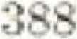still in the twentieth year of Artaxerxes. There the commandment or word to restore and rebuild Jerusalem took effect.9 The sixty-nine weeks of years till the coming of Messiah the Princely Leader did not begin to count before then.
According to this count the Messiah or Christ was to be brought forth in the year 29 of our Common Era, for the sixty-nine weeks of years, or 483 years, began to count in 455 B.C. and ended A*D. 29. History proves that it was in that year that John baptized Jesus from Nazareth in the Jordan River and the holy spirit descended from heaven upon Jesus to anoint him and make him the Messiah or Christ, the Anointed One. (Luke 3:1, 2, 21-23) It is very interesting to note that the year in which the sixty-nine weeks had their start began, not in the month Nisan, but in Tishri, which is the month in which Jesus was baptized and anointed.
As Daniel 9:25 had foretold, the rebuilding work was to be done “in the straits of the times,”' and Nehemiah and his fellow builders did experience threats and opposition from the non-Jewish people roundabout. But by faith and trust in Almighty God and by arming themselves against attack and refusing to be drawn away from the work, they built the defensive walls around Zion or Jerusalem within two months. Nehe miah 6:15 reports: “At length die wall came to completion on the twenty-fifth day of Elul [the twelfth month], in fifty-two days.” Since the month Ab, which preceded Elul, has thirty days, the building work must have begun on the fourth of Ab, 155 B.C., or July 27-28, and must have ended on September 16-17, 455 B.C.. still
• Volume 9 of M’Clmtock and Strong's CpclopcFdta af HibHeal,. Theo-toywXfl and Literature deals with the "Seventy Weeks
of Daniel's Prophecy,** and on page 602. under the heading “1. The Date of the Ed et,"’ it says: "‘We have supposed this to be from the time of Its taking effect at Jerusalem rather than from that of its nominal issue ut. Babylon. I'he difference, however {being only four months), will not scrtou-siy affect the argument.”
within the twentieth year of Artaxerxes. The foes of Jehovah’s people were frustrated, and the prophecy of his Word was carried out to prove that he is true and infallible.
In Nehemiah 7:1, 2 he tells us: “And it came about that, as soon as the wall had been rebuilt, I at once set up the doors. Then there were appointed the gatekeepers and the singers and the Levites. And I went on to put in command of Jerusalem Hanani my brother and Hananiah the prince of the Castle, for he was such a trustworthy man and feared the true God more than many others.”
1’hen the following month, which was in the t wenty-Hrst year of Artaxerxes, the Jewish remnant held the regular religious celebrations scheduled for this month of Tishri, at Jerusalem. Ihe festival of the blowing on the trumpet on the first day, the day of the new moon, then the day of atonement on the tenth day, and, beginning on the fifteenth day, the feast of the booths or tabernacles. They had the priest Ezra, the noted copyist of God’s law, with them, and so the reading of the written Word of God publicly7 was featured. After its reading Governor Nehemiah told the celebrators not to weep and mourn but to rejoice. “Do not feel hurt, for the joy of Jehovah is your stronghold,” he said. So the festival of the booths proceeded with rejoicing, according to the Law. Indeed, the record says: “The sons of Israel had not done that way from the days of Joshua the son of Nun until that day, so that there came to be very great rejoicing. And there was a reading aloud of the book of the law of the true God day by day, from the first day until the last day: and they went on holding the festival seven days, and on the eighth day there was a solemn assembly, according to the rule.”—Nehemiah 7:73 to 8:18.
The time of dedicating Jerusalem's rebuilt walls is not stated but was likely aftei' the above religious celebrations. We read, several chapters later, the following: “And at the inauguration of the wall of Jerusalem they looked for the Levites, to bring them out of all their places to Jerusalem to carry on an inauguration and a rejoicing even with thanksgivings and with song, cymbals and stringed instruments and with harps.” Two processions were formed to mareii in opposite directions on the continuous wall. “At length the two thanksgiving choirs came to a stand at the house of the true God, also,” says Nehemiah, “I and half of the deputy rulers with me, and the priests • •. And the singers with Izrahiah the overseer kept making themselves heard.’*
Then the celebrators went to the temple on Mount Moriah and great sacrifices were joyfully offered on Jehovah’s altar. “For the true God himself caused them to rejoice with great joy. And also the women and the children themselves rejoiced, so that the rejoicing of Jerusalem could be heard far away,”—Nehemiah 12:27-43.
Thus the yeai' 455 H.C., which was the twentieth year of the Persian emperor Artaxerxes Longimanus, was a marked year,* with divine favor to Zion. It de-
* With historical facts behind him tin- noted German scholar Ernst Wm. Hengstenberg (1JSOC3-1869> proves Dr. Henry DodwelL’s date of 445 B.C. to be wrong. In his work entitled “Chrtstology of the Old Testament.” in volume 2 thereof. on page 391 (U2), Hengstenbcrg says: “The difference lor opinion] concerns only the year of the commencement of the reign of Artaxerxes. Our problem Is completely solved, when we have shown that this year falls in the year 471 before Christ. For then 'he twentieth year of Artaxerxes Is the year 455 before Christ, according to the usual reckoning. ...”
When proving that Artaxerxes’ reign began in 474 B.C.. Hengstcnberg says, r-!i page “Krueger . . . places the death of Xerxes in the year 474 or 473. and the Might of Thcmlstocles a year later.” On page X*9 lIfiik<i':.lh.T^ sprain of “a fifty-one years' reign of Art;imtw’s.” whereas the Greek historian Ctesias, of the fifth century B-C-. calculates that Artaxerxes reigned only -12 years,—See the English translation from the German hy Rt uel Keith, first edition, New York (1835-1S39), In three volumes.
Hengstenborg give:? us a possible reason for the evident mistake Ln Ptolemy’s Canon when assigning to Xerxes a reign of 21 years, that, when Ptolemy compiled hts list of [continued on next served to be marked so prominently, for it. was the stait of the sixty-nine weeks of years leading up to the arrival of the long-promised Seed of God’s woman, the Messiah.— Daniel 9:25.
The inspired Hebrew Scriptures of the Holy Bible bring us only as far as the time of Governor Nehemiah, whose book bearing his name was written about the year 443 B.C. during the long reign of Artaxerxes Longimanus. The final book of the Canon of Hebrew Scriptures was written by a Jew named Malachi, it being mere speculation on the part of the Jewish Talmud, the Targum and some so-called Church Fathers that he was really Ezra the priest, the copyist; for the book opens, saying: “A pronouncement: The word of Jehovah concerning Israel by means of Malachi.” (Malachi 1:1) He also furnishes us a prophecy concerning Messiah’s coming after a “messenger” from Jehovah precedes him. We read:
"Look! I am sending my messenger, and he must clear up a way before me. And suddenly there will come to Ilis temple the true Lord, whom you people arc seeking, and the messenger of the covenant in whom you are delighting. Look! He will certainly come/’ Jehovah of armies has said.
"Look! I am sending to you people Elijah the prophet before the coming of the great and fear-inspiring clay of Jchovcih."—Malachi 3:1; 4:5.
Malachi wrote his prophetic book probably about the year 442 B.C., or during the reign of King Artaxerxes Longimanus. Then the Hebrew Scriptures close, leaving us in the midst of the w orld domination by the
|C9nf*Kize«K from poffO 5S»Oj kind's from the record of ancient chronoioRcrs, he mistook the Greek to £nr tea, which for the Greeks stand for the numerals .11 and 21 respectively.
Archbishop James Ussher, of Ireland, (1581-1656 i as a chror.oloplst. held (on 131 of Annafcs e£ iVovi Tt^fcHncntorwm.j under
"The Persian Empire.” as published In 1050. .< -ii. Artaxerxes Lonsi-manus ascend fd the Persian throne jn 474 B.C., but his date for this was nut put In rcfcrerut- Bibles. The celebrated writers Vltrlnga (1659-1722) and Krui gfr (1S3S) agreed with. Ussher In dating the accession of Artaxerxes to the Persian Ui rone Ln 474 B.C.
Persian. Empireh the Fourth World Power, This was very likely because the Persian Empire began with the rule of Cyrus the Great, who brought about the fall of Babylon as a world power and who liberated Jehovah’s people. As Cyrus was thus a type or prophetic picture of the promised Messiah or Christ, his empire stood undefeated as the inspired Hebrew Scriptures closed about 442 B.C,
Babylon had fallen to the Medes and Persians. Later it fell to the Macedonians (Greeks), who established the Fifth World Power. This meant also that the Persian Empire fell before this new world power. Although Bible prophecy foretold this, the actual overthrow of the Persian World Power is not reported in the Bible.
MACEDONIAN Fill’ll VVOKED FOWF.B
The fifth of the Persian emperors who followed after Artaxerxes was the last, namely, Darius III. In the very year that he was crowned, the young Alexander n was crowned king of Macedonia in Europe. This was in fulfillment of Dun id’s prophecy, chapter eleven, which, after foretelling the Persian attempts to conquer Greece, says: “And a mighty king will certainly stand up anti rule with extensive dominion and do according to his will.”—Daniel 11:3.
To earn worldly greatness for himself, Alexander set out to conquer the Persian Empire. Setting out in 333 B.C., he conquered Asia Minor, Phoenicia (including the island city of Tyre) and Egypt. After founding the new city of Alexandria in Egypt, he turned his steps northward toward the upper Tigris River. Up there at Gaugamela, not far from the decaying ruins of the former Assyrian capital Nineveh, he mol the forces of Darius TIL The Persians suffered defeut. King Darius fled northward and was afterward murdered by some of his own people. The Fourth World Power ceased!
Flushed with victory at Gauge mcla, Alexander the Great turned south and within a few days was inside the Persian winter capital of Babylon. After resting his troops at Babylon he directed his efforts to subduing the rest of the Persian domain to the east, as far as India, lie thus established an empire greater than any that had preceded his own. From India he was obliged to turn back westward and reached Babylon again seven years after he had left it.
Not aware of Jehovah’s decree that ancient Babylon must experience an utter fall and complete ruin, Alexander was minded to make it the capital of his vast empire. At Babylon he made preparations for further campaigns; but before he could carry these out, he fell vid Im to malarial fever and died at Babylon in 323 B.C.
At Babylon Alexander’s empire got to be divided. As he lay dead there, his generals who had fought with him to the end began to form their own plans and act on them. A division of the empire was made between them, this division being called the “Partition of Babyion.” Two years later, in 321 B.C., there was a second partition made at Triparadisus, and by this the government of the satrapy of Babylonia was given to General Selcucus Nicator.
Feeling himself threatened, Seleucus tied to Egypt; but after the defeat of his enemy in 316 B.C., he returned to Babylon, From here he extended his authority oxer the whole eastern part of Alexander's empire as far as the Jaxartes23 and Indus Rivers, He did not choose to follow the example of Alexander, who had settled at Babylon. He preferred to set up a new capital city of a decidedly Greek style. So, from the autumn of 312 on, he founded the city of Seleucia on the Tigris River, about fifty miles north of Babylon and fifteen miles south of the present-day Baghdad. He founded this new city of Seleucia with the “object of exhausting Babylon.”
into the Aral Sea,
Of course, the Chaldean priests did not like this. But the new city became very populous and wealthy. In 116 (A.D.) it was burned by Roman Emperor Trajan. A few years later it was completely destroyed with its inhabitants by the Romans under General Lucius Verus, to end any Greek rule in Babylonia.
From the time that the new capital was founded at Seleucia, Babylon and other Babylonian cities began to decay to mere villages. In the second century B.C. the great conquests by the Parthian king, Mithridates I, began, and about 140 B.C. Babylonia became subject to the Parthians. By 129 B.C, the rule exercised by the successors of Seleucus Nicator in the East came to an end. The Parthians extended their empire from the Euphrates River eastward to the frontier of India and the Oxus (Amy Darya) River, territory that was formerly held by the Seleucid rulers.
In overpowering and displacing the Grecian or Fifth World Power, the Romans unavoidably came into conflict with the Parthians. For nearly three centuries the Parthian Empire was the rival of the Roman Empire, the Sixth World Power. TTie Americana,
Volume 21, page 353b, says: uNo Roman army won a decisive victory over them until 115 A.D. in the reign of Trajan. Even then Rome gained no permanent footing in the Parthian empire. In 217 at Nisibis a battle was fought which gave neither side the victory and assured peace.” (Edition of 1929) In the Mesopotamian valley Empeiw Trajan held onto the upper part, not including Babylon. A few years after the battle of Nisibis the Parthian Empire was overthrown, not by the Romans, but by revolting Persians under the lead of Artaxerxes, ar.d in its place the dynasty of the Persian Sassanidae was established, namely, in the year 226 (A.D.).
The Parthians had an important connection with the Jews on account of the large colonies of Jews in Mesopotamia. The Parthians even interfered in the affairs of the province of Judea and once made it a vassal state. During the reign of the Partition kur-’, Ar:.a-banus ITT, from 16 to 42 (AJ2>.) + there occurred a terrible massacre of more than fifty thousand Jewish colonists in Mesopotamia, as is reported by the Jewish historian Josephus, in his Antir/uifies of the Jews, Book 18, chapter 9, paragraphs 7-9.
According to the report of Acts 2:5-11, on the Jewish festival day of Pentecost in the year 33 (A.D.), among those present at Jerusalem for the celebration there were Jews and proselytes from the “Parthians and Medes and Elamites, and the inhabitants of Mesopotamia/’ in other words, people from the Parthian Empire. These were among the thousands who heard Peter and the other Christian apostles preach and who were baptized as converts to Christianity. Of course, when these returned to Mesopotamia and other parts of the Parthian Empire, they carried the Christian faith back with them.
It appears that the city of Babylon in lower Mesopotamia kept up some sort of existence down into the era of Christianity. In proof of this, Josephus tells of the actions of Herod the Great, who reigned in Jerusalem from 37 B.C. till shortly after Jesus Christ was bom at Bethlehem. A certain Jewish priest named Hyreanus had been captured by the Parthians and carried away to their country. Says Josephus in his Antksfuiiies, Book 15, chapter 2, paragraph 2:
But when Hyreanus was brought into Farthia, the king Phraates treated him after a very gentle manner; as having already learned of what an illustrious family he was. On which account he set him free from his bonds; and gave him a habitation at Babylon, where there were Jews in great numbers. The Jews honoured Hyreanus as their hlgh-prlest, and king; as did all the Jewish nation that dwelt as far as Euphrates.
King Herod successfully arranged for the king of Parthia to restore priest Hyreanus to Judea, Herod’s dominion. However, King Herod did not bestow the Jewish high-priesthood upon Hyrcanus. “For,* as paragraph 4 tells us, “being cautious how he made any illustrious person the high-pries I of God, he sent for an obscure priest out of Babylon, whose name was Ananelus, and bestowed the high-priesthood upon him?r* Later King Herod took this office from Ana. ns of Babylon and gave it to Aristobulus, a young priest.
It is evident that there were a number of Jewish settlements in Babylonia at the opening of the Christian Era. After the Romans destroyed Jerusalem A.D. 70, these Babylonian settlements became influential among the .Diaspora, the dispersed Jews outside of Palesriiic. The Jewish rabbis in Babylonia had become more celebrated th;’in those of the Holy Land, than even those of Jerusalem itself. Babylonian Jews considered themselves to be of purer racial extraction than the Jews of Palestine* especially after Jerusalem fell. Schools that gained renown were established in Babylonia, and there was a great output of rabbinical literature from there. As a consequence two Jewish Taimuds were developed, the Babylonian and the Jerusalem or Palestinian.
In spite of these continued activities at and about Babylon, the prophetic word of Jehovah Goel against Babylon had to be fulfilled finally to the letter. The city had to become a ruin uninhabitable by man, an area shunned by the superstitious. It did; and Eusebius Jerome, famous translator of the Bible into Latin* went to Palestine in the year 386 (A.D.), to labor tuid to die
* Quoted from the trasssIntion from tlif Orepk by WHJIam Whiston. M.A.„ as revised by Samuel Eurder, A.M., Boston edition of 1&J& t Volume 1.1.
As to tl r existence of Babylon Ln the Chris" jan Era, it Is interesting 1 ij note the rnup tPlutB XIJ I) on page K9 of TZm? Wr-hTwrM.vfrr JJistor-tCuJ /Ulas of tlt« Bible, edition of 195S. the map beinje entitled “The Homan World at the Birth of Jesus."’ It sEiows the esty of Itliylim on the Euphrates River and outside the Roman Empire. AeeortlLn^ to cuneiform, texts. Ihe teniplo of Bel In iLitr.lnn nirilinure: at h.u:.t till A.D. 75. or until after the Christian apostk !’■ I; r JuiCi been there.— I I’eltT 5:13.
GETTING OUT QF THE MIDST OF BABYLON
there. He reported that, in his time, Babylon was quite in .1 ins and that its walls served only to enclose a park or forest for the Persian monarch to hunt in. Eventually the locality became utterly deserted by mankind. In 1811 Claudius J. Rich, the English traveler, found no traces of Babylon’s vast walls. Says the Cyclopaedia, by M'Clintock and Strong, Volume I (published in the year 1891), page 596a:
More thorough destruction than that which has overtaken Babylon cannot well bo conceived. Rich was unable to discover any traces of its vast walls, and even its site has been a subject of dispute. HOn its ruins/’ says he, “there is not a single tree growing, except an old one, which only serves to make the desolation more apparent. Ruins like those of Babylon, composed of rubbish impregnated with nitre, cannot be cultivated. Interest in the historical ruins in the Middle East, nd particularly in Babylon, sharpened itself in the early part of the nineteenth century. With archaeological skill its ruins began to be dug up in 1899, In these ruins may be seen the mute evidences of the city’s former glory. Today, this book, the railway from Baghdad to Basra Jies only a lew feet away from the hill called Babil. A wooden signboard displays title words in English and Arabic “Babylon Halt. Trains stop here to pick up passengers/1 It is no place for habitation, just a place for tourists to halt and inspect the ruins and then to be picked up later for them to travel onward and away.
in the year of publishing
* Sw Vorwi itw <?/ a JF^uritcy to t&® of Baboon nt by C. J. Rich, published In England in ISIS. After the publication Of thlf. Rich made a second excursion to Babylon and did ether extensive traveling. He died, in 1821.
Indeed, how Babylon has fallen! As the scroll that Seraiah hurled with a stone tied to it into the midst of the Euphrates River sank beneath its waters, so ancient Babylon sank into oblivion. (Jeremiah ol:59-64) What a historical portent this is of the ruin and destruction that am shortly to come: upon Babylon the Great of modern times!
PART TWO
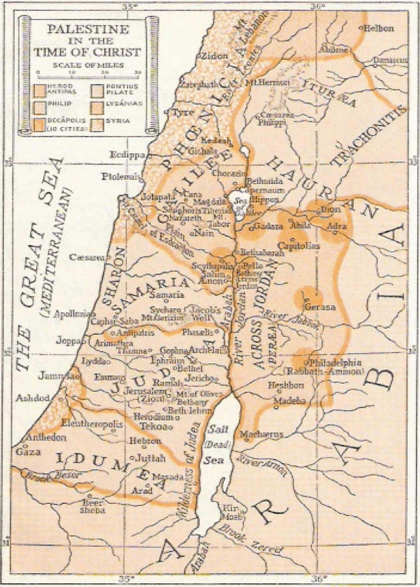c
H
T
E _,
19
JAY, you people, to the daughter of Zion, ‘Look! Your salvation is coming. Look J The reward
he gives is with him, and the wages he pays are before him? ” Who gave this command? The introductory part of Isaiah 62: Il answers, saying: “Look! Jehovah himself has caused it to be heard to the farthest part of the earth.” Jehovah gave this command after he had iold Zion (Jerusalem) tliat she would have a change of designation. This would describe her change or condition after she had been destroyed by Babylon in 697 B.C, and had lain desolate for seventy years. To her he said: “No more will you be said to be a woman left entirely; and your own land will no more be said to be desolate: but vou yourself will Lie called My De-light Is in Her, and your land Owned as a Wife. For Jehovah, will have taken delight in you, and your own land will be owned as a wife?*—Isaiah 62:4.
Some years after Zion began to be rebuilt in 537 BLQ, Jehovah inspired his prophet Zechariah to say something similar to Isaiah 62:11, in these word's: “Be very joyful, O daughter of Zion. Shout in triumph, 0 daughter of Jerusalem. Look! Your king himself comes to vou. He is righteous, yes, saved: humble, and riding jJF 'RjL'" FT
upon an ass, even upon a full-grown animal the son of a she-ass/7 (Zechariah 9:9) This meant that Zion was to be favored with a visit by the foretold Messiah, the One whom Jehovah would anoint with holy spirit io be the King in the kingdom that Jehovah would set up.
-Long before the Messiah came, Greek-speaking Jews of Alexandria, Egypt, made a translation of the inspired Hebrew Scriptures. In this translation known as the Greek VtrsioM, the Messiah is given
the Greek title “Christ,” which, like Messiah, means Anointed One. The Messiah or Christ had to have a certain line of descent. He had to be a descendant of the patriarch Abraham, hence a son of Abraham. But in his descent from Abraham he had to be a descendant of King David, hence a son of David. Thus he had to have a natural claim on the kingship of Zion and, as such, be the promised Seed of Abraham for blessing all tiie families and nations of the earth, (2 Samuel 7:8-17; Genesis 12:3; 22:18) Hence his lineage was very important. If the one hailed as Messiah or Christ did not have this line of descent, he could not be the promised King of Zion.
The Messiah’s line of descent is faithfully and satisfactorily given to us in the writings made by footstep followers of the Messiah or Christ. It is interesting to note that, in the Messianic lineage briefly traced for us by the Christian apostle Matthew Levi, he uses the deportation of the Israelites to Babylon as well as the kingship of David of Bethlehem as dividing points.
Matthew begins the Messianic genealogy with Abra-■ - *■+ *
ham, who left the city of Ur of the Chaldeans, below Babylon, and runs it down through Isaac and Jacob to David; then from David down to King Jcconiah (or, Jehoiachin), saying: “Josiah became father to Jcconiah and to his brothers at the time of the deportation to Babylon. After the deportation to Babylon Jeconiah became father to Shealtiel; Shcaltiel became father to ZerubbabcL” From there he runs the line of descent to its end, saying: “Jacob became father to Joseph the husband of Mary, of whom Jesus was born, who is called Christ. All the generations, then, from Abraham until David were fourteen generations, and from David until the deportation to Babylon fourteen generations, and from the deportation to Babylon until the Christ fourteen generations.”—Matthew 1:1-17.
Matthew does not say that Joseph the carpenter was the natural father of this Jesus “who is called Christ.” Matthew proceeds to prove this by showing that Jesus’ birth did not follow the natural way of procreation but was different, miraculous. Hence Matthew says: “But 1he birth of Jesus Christ was in this way.” In what way? In that Mary of Bethlehem, while still a virgin and so before Joseph married her, had become pregnant by means of God’s holy spirit; and this miracle was performed in order to fulfill the prophecy of Isaiah 7:14. Marv’s miraculous son would therefore have the right to the name Immanuel, which means “With Us Is God.” However, God’s angel, who told Joseph to go ahead and marry the pregnant Mary, said that the boy’s name must be called Jesus, this shortened name meaning “Jehovah Is Salvation.” The boy was going to live up to the meaning of this name, “for he will save his people from their sins.”—Matthew 1:18-23.
Properly, Joseph adopted Jesus, as Jesus was actually the firstborn natural son of Mary. However, Mary was a natural descendant of King David, for which reason Jesus was a natural descendant of David and thus had a claim on the kingship of Zion. (Luke 3:23-31; 2:7) In support of this the apostle Paul wrote to the Christians at Rome: “Paul, a slave of Jesus Christ and called to be an apostle, separated to God’s good news, which lie promised aforetime through his prophets in. the holy Scriptures, concerning his Son, who sprang from the seed of David according to the flesh, but who with power was declared God’s Son according to the spirit of holiness by means of resurrection from the dead— yes, Jesus Christ our Lord.” (Romans 1:1-4) By birth Jesus was not the son of Joseph but was the Son of God by means of the Jewish virgin, Mary. This was brought about through God’s invisible operation of his holy spirit. Jesus thus met all the genealogical requirements.
Although the virgin Jewess Mary became pregnant up in Nazareth of Galilee, she gave birth to Jesus in Bethlehem of Judah, in order to fulfill the prophecy of Micah 5:2. (Matthew 2:4-6; John 7:42) Judah was then a province in the Roman Empire, and Jesus was born at Bethlehem in early autumn of 2 E.C., or in the latter half of the reign of Caesar Augustus of Rome. By then Augustus had been the pagan religious Ponti fex Maximus for ten years.*—Luke 2:1-7.
Tiberius succeeded Caesar Augustus as emperor and Pontifex Maximus. During Tiberius’ reign Jehovah God declared audibly to human ears that Jesus the son of David, the son of Abraham, was His son. This was when Jesus was thirty years old, or in the year 29 (A.D.). This date Is fixed on a correct calculation, because it is the end of the sixty-nine weeks of years foretold in Daniel 9:25. in these words: "From the going forth of the word to restore and to rebuild Jerusalem until Messiah the Leader, there will be seven weeks, also sixty-two weeks | 7 I 62 = 69], She will return and be actually rebuilt, with a public square and moat, but in the straits of the times/’f At his due time
I* -
Jehovah God poured down his holy spirit on Jesus and anointed him thus to be the Messiah (or, Christ) the Leader. Then he audibly declared Jesus to be His Son.
The man who heard this declaration from heaven xclls us about it. This was the man called John the
* Alter Julius Caesar Av^vsUis became u mernber of a Roman triumvirate with Antony and JLepictus. in 44 H.C- Lop 1<lus appoint
ed to the office of Pontifex Maximus and held it for the rest ot hts lift1, After he died, in 12 B.C., the oiliee of Pantlfi'X Maximus was taken up by the ftortiun EinSUtff Augustus, who passed. Lt on to his in the ofiken oE emperor.— Sou Ur1, Volumo 16. pugc 479u.
t See 3S3. paraRraph 2, to 3SB. paragraph 2, of this book.
Baptist, the son of priest Zechariah. Some days after baptizing Jesus in water John said to a number of his disciples: “This is the one about whom I said, Behind me there comes a man who has advanced in front of me. because he existed before me. Even I did not know him, but the reason why I came baptizing in water was that he might be made manifest to Israel/* “John also bore witness, saying: T viewed the spirit coming down as a dove out of heaven, and it remained upon him.
Even I did not know him, but the very One who sent me to baptize in water said to me, “Whoever it is upon whom you see the spirit coming down and remaining, this is the one that baptizes in holy spirit,” And I have seen it, and I have borne witness that this one is the Son of God.' ” (John 1:30-34) This Son of God existed before John the Baptist because he had existed in heaven as a spirit son of God. His life was transferred from heaven to the womb of the Jewish virgin that he might be born as a human son named Jesus..
The declaration that Jesus was God's Son came after he was anointed with holy spirit to be “Messiah the Leader.” On this fact we have the testimony of the apostle Matthew Levi, who writes:
‘‘Then Jesus came from Galilee [in which Nazareth was located] to the Jordan [River] to John, in order to be baptized by him. But the latter tried to prevent him, saying: T am the one needing to be baptized by you, and are you coming to me?’ In reply Jesus said to him: 'Let it be, this time, for in that way it is suitable for us to carry out all that is righteous.’ Then he Quit preventing him. After being baptized Jesus immediately came up from the water; and, look! the heavens were opened up, and he saw descending like a dove God’s spirit coming upon him. Look! Also, there was a voice from the heavens that said:
■ ■ I W f
‘This is my Son, the beloved, whom I have approved.’ " —Matthew 3:13-17; 2:22,23.
This record is backed up as genuine by similar testimony of two other Christian disciples, Mark and Luke. (Mark 1:9-11; Luke 3:21-23) On such testimony we accept Jesus as God’s Son and the Christ.
John the Baptist said he came to fulfill an important prophecy of Isaiah. As to how he applied Isaiah’s prophecy we read:
“Now this is the witness of John when the Jews sent forth priests and Levites from Jerusalem to him to ask him: ‘Who arc you?’ And he confessed and did not deny, but confessed: T am not the Christ? And they asked him: ‘What, then? Are you Elijah?* And he said: T am not? ‘Are you The Prophet?* And he answered: ‘No? Therefore they said to him: 4Who are you? that we xnuy give an answer to those who sent us. What do you say about yourself?’ Ue said: T arc a voice of someone crying out in the wilderness, “Make the way of Jehovah straight,” just as Isaiah the prophet said.’ Now those sent forth were from the Pharisees.” —John 1:19-24.
John applied the prophecy of Isaiah 40:3 under inspiration of God’s holy spirit. His application is accepted by the apostle Matthew, who writes: “In those days John the Baptist came preaching in the wilderness of Judea, saying: ‘Repent, for the kingdom of the heavens has drawn near? This, in fact, is the one spoken of tfirough Isaiah the prophet in these words: ‘Listen! Someone is crying out in the wilderness, “Prepare the way of Jehovah, you people! Make his roads straight?’*” (Matthew 3:1-3) Also, Mark and Luke accept the way that John the Baptist applied the prophecy of Isaiah 40:3 in the year 29 (A.D.).—Mark 1:1-4; Luke 3:1-6.
COMING OUT OF KELIftlOUS ICXU.K
Luke 3:1-6 plainly fixes the date as A.D. 29 by stating that this began in the “fifteenth year of the reign of Tiberius Caesar, when Pontius Pilate was governor of Judea, and Herod was district ruler of Galilee, , . -in the days of chief priest Annas and of Caiaphas," This did not mean that the Jewish chief priest Annas was Pontifex Maximus in the Rom; n Province of Judea, or that his son-in-law Caiaphas was a member of the college of pontiflces or pontiffs. The pagan Roman emperor, Tiberius, was the Pontifex Maximus. The college of sixteen pontiffs consisted of ail pagans.24
Annas and Caiaphas and John the Baptist the son of priest Zechariah were no Pontiffs or Pontiflces. They were each a cohen (Hebrew) or a TiiereiZs (Greek) or a sacerdos (Latin Vulgate Bible). (Luke 1:5; 3:2) Tiberius became Caesar and Pontifex Maximus after Caesar Augustus died on August 19, A.D. 14. So the fifteenth year of the reign of Tiberius Caesar ran from August 19, AD. 28, to August IS, A.D. 29. Before this fifteenth year ran out, John the Baptist became the foretold one “crying out in the wilderness, ‘Prepare the way of Jehovah, you people, make his roads straight.’ ”
In fact, John became this one in the spring of A.D. 29, or about six months before lie baptized Jesus in autumn of that year.
It is important to notice that the prophecy that John the Baptist thus fulfilled really had a relationship to th-return of the faithful Jewish remnant from their exile in Babylon back to Zion. This is plain from the context of Isaiah’s prophecy. Immediately after telling, in chapter thirty-nine, how the things that King Hezekiah had stored up in his palace at Jerusalem would be carried to Babylon and that some of Hezekiah’s descendants would be made court officials in the palace of the king of Babylon, Isaiah opens up chapter forty, saying, in verses 1-5:
“ ‘Comfort, comfort my people/ says the' God of you men. 4Speak to the heart of Jerusalem and call out to her that her military service has been fulfilled, that her error has been paid off. For from the hand of Jehovah she has received a full amount for all her sins/ Listen! Someone is calling out in the wilderness: 'Clear up the way of Jehovah, you people: Make the highway for our God through the desert plain straight. Let every valley be raised up, and every mountain and hill be made low. And the knobby ground must become level land, and the rugged ground a valley plain. And the glory of Jehovah will certainly be revealed, and all flesh must see it together, for the very mouth of Jehovah has spoken it/ ’*
This prophecy foretold how, by means of King Cyrus the Persian, the way would be smoothed out for the Jews to leave their long exile in Babylon and return to their beloved homeland to rebuild their holy city and its temple. All this, of course, brought great comfort to Jerusalem and glory to her God Jehovah. The **glory of Jehovah” was thus revealed, for all human flesh to see. Isaiah 52:12 foretold that Jehovah would be going before the returning exiles and that he would be their rear guard. For that reason the preparing of the way for the exiles to return could be spoken of as preparing or clearing up the way of Jehovah and making the highway for their God straight. However, Jehovah did not visibly go before them. History of the prophecy’s fulfillment shows that Governor Zerubbabel, who was a descendant of King David and an ancestor of Jesus Christ, led the faithful remnant out of Babylon under Jehovah's unseen guidance and protection, in 537 B.C.
Hence, in fulfilling the prophecy of Isaiah 40:3, which had the Babylonian exile as its background, John the Baptist was carrying forward an extension of The return of the Israelites from exile. What exile? A religious < Ue like that in ancient Babylon, even though they wore already back in Jerusalem and the land of Judah.
In John's day Babylon on the Euphrates River was still in existence, unconquered by the Romans; but it did not have its ancient splendor and was no longer a world power.* Rome was then the world power, the sixth in Bible history.
Prophecies that had a Babylonian background were fulfilled in John’s day. This proves that there was then, so to speak, a religious coming out of Babylon and a returning to Jehovah’s worship. In a religious way John cleared up Jehovah’s way and straightened the highway through the desert plain for God, but not that Jehovah God might literally go over that way, any more than such a thing occurred in the days of Zerubbabel in 537 B.C. In actuality John expected and prepared for the coming of Jehovah’s Messiah or Christ. He was to baptize this representative of Jehovah In water. Afterward he testified that this one was, not Jehovah, but his Son.
Directly after Jesus was baptized in the Jordan River he went into the wilderness of Judea for forty days to --——
• Sec tho proeeding chapter, panes 3S5, paragraph 2, and 396, paroi-gruph 1, of this booh.
himself. There he overcame the heart-searching temptations that Satan the Devil put before him. (Matthew 4:1-11; Luke 4:1-13) Jesus knew that John the Baptist was appointed to fulfill prophecy and prepare a people for Jehovah. (Luke 1:13-17) Accordingly Jesus went back to Jolin, who was then “in Bethany across the Jordan, where John was baptizing/* Priests and Levites from Jerusalem had just been there to ask John what part he played in fulfillment of prophecy. "The next day he beheld Jesus coining toward him, and he said: ‘See, the Lamb of God that takes away the sin of the world I’ * —John 1:28,29. ~
John’s words meant that Jesus was to be sacrificed like a lamb provided by God himself. The using of a Iamb as a picture may refer to the male sheep that Abraham offered up instead of his son Isaac on Mount Moriah nineteen centuries previously; or to the passover lamb that was slain down in Egypt for the deliverance of t he enslaved Israelites; or to the male lamb that was offered up on God’s altar at Jerusalem each morning and evening. (Genesis 22:9-14; Exodus 12:1-28; 29:38-42; Numbers 28:1-10) The Christian apostle Paul was likening Jesus Christ to a lamb when he wrote; “Christ our passover has been sacrificed/* —1 Corinthians 5:7.
For the lamblike Jesus to “take away the sin of the world/’ it meant that his human blood would have to be shed. He would have to become like a slaughtered lamb. (Isaiah 53:7; Revelation 5:6-9) This had to be according to the rule stated in Hebrews 9:22: "Nearly all things are cleansed with blood according to the Law, and unless blood is poured out no forgiveness takes place/*
There is no record that, at the first announcement of Jesus as the Lamb of God, some of the disciples of John the Baptist began to follow Jesus as God’s Son anointed with holy spirit. But what about the next day? “Again the next day John was standing with two of his disciples, and as he looked at Jesus walking he said: ‘See, the Lamb of God’’ And the two disciples heard him speak, and they followed Jesus. Then Jesus turned and, getting a view of them following* he said to them: ‘What are you looking for?’ They said to him: ‘Rabbi, (which means, when translated, Teacher,) where are you staying?’ He said to them: ‘Come, and you will see.' Accordingly they went and saw where he was staying* and they stayed with him that day; it was about the tenth hour [4 p*m.]. Andrew the brother of Simon Peter was one of the two that heard what John said and followed Jesus. First this one found his own brother, Simon, and said to him: ‘We have found the Messiah* (which means, when translated, Christ). He ied him to Jesus. When Jesus looked upon him he said: ‘You are Simon the son of John; you win be called Cephas' (which is translated Peter)*” Peter and Ariel ivw his brother did not then leave everything to follow Jesus continually. That came later, in Galilee.—Jolm 1:35-42: Matthew 4:18-23. ■
The following spring, in the year 30 (ADJ, Jesus attended the Passover celebration in Jerusalem and cleansed the temple of those who were trying to make a commercial business out of God's worship. “ And he said to those selling the doves: ‘Take these things away from here! Stop making the house of my Father a house of merchandise’’ ” Disciples of Jesus were then with him. (John 2:13-17) It was after this that John the Baptist was arrested and put in prison by Herod the district ruler* For that reason Jesus left Judea and went north th rough Samaria. “Now when he heard that John had been arrested, he withdrew Into Galilee*** (Matthew 4:12; 14:1-5; John 4:1-4, 43-45; Luke 4:14, 15) He had been raised to manhood in Galilee, at the ■
town of Nazareth. The Nazarenos had known him as a carpenter the son of Joseph the carpenter, Jesus knew that in his own land a prophet of Jehovah God has no honor. Yet Jesus purposed to visit Nazareth and pre-
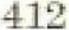sent himself as a prophet of God anointed with holy spirit. Where and how did he present himself?
“He came la Nazareth, where he had been reared;
• mC according to his cusiojn on the sabbath (by, he entered into the synagogue, and he stood up to read. So the scroll of the prophet Isaiah was 1 landed him, and he opened the scroll and found the place where it was written: Jehovah’s spirit is upon me, because he anointed me to declare good news to the poor, he sent me forth to preach a release to the captives and a recovery of sight to the blind, to send the crushed ones away with a release, to preach Jehovah’s acceptable year.* With that he rolled up the scroll, handed it back to the attendant and sat down; and the eyes of all in the synagogue wore intently fixed upon him. Then he started to say to them: "Today this scripture that you just heard is fulfilled/ ,F
Fulfilled in what way? In that Jesus had been anointed with Jehovah’s spirit at the Jordan River after his waler baptism and now he was preaching good news to Jehovah’s oppressed people. However, the N azarenes did noi attribute to Jehovah’s holy spirit the ability of the fanner carpenter Jesus to preach. As he talked on, they took offense at what he said. Finally, in anger, “they rose up and hurried him outside the city, and they led him to the brow of the mountain upon which their city had been built, in order to throw him down headlong. But he went through the midst of them and continued on his wav/’ to another city, Capernaum. Luke 4:16-31,
The prophecy that Jesus read to the Nazarenos from Isaiah’s scroll is something worth noting. What he quoted from it is found in chapter sixty-one, verses one and two, and reads: “The spirit of the Lord Jehovah is upon me, lor the reason that Jehovah has anointed me to tell good news to the meek ones. He has sent me to bind up the brokenhearted, to proclaim liberty to those taken captive and the wide opening of the eyes even to the prisoners; to proclaim the year of good will on the part of Jehovah and the day of vengeance on the part of our God; to comfort all the mourning ones.” Which mourning ones? The next verse (three) indicates by saying: “To assign to those mourning over Zion, to give them a headdress instead of ashes, the oil of exultation instead of mourning, the mantle of praise instead of the downhearted spirit; and they must bo called big trees of righteousness, the planting of Jehovah, for him to be beautified?’ Isaiah 61:1-3*
According to what it says, and according to the chap’ ter immediately preceding, this prophecy that Jesus applied to himself bears a reference to the seventy-year desolation of Zion or Jerusalem and the exile of the Israelites in Babylon. The preceding chapter, verse one, addresses itself, in the first instance, to Zion and calls out: “Arise, O woman, shed forth light, for your light has come and upon yon the very glory of Jehovah has shone forth.” (Isaiah 60:1) After that the chapter tells how her sons will be regathered and how she will grow as a city, and then it closes with the assurance: “I myself, Jehovah, shall speed it up in its own time,”
That was good news to Zion or Jerusalem* It was very fitting, then, that right after those words the person who wrould be anointed by Jehovah to tell this good news to Zion should speak up and should describe how this work is one of liberation for the sake of comforting the ones “mourning over Zion.” During their exile in Babylon they had been mourning over the desolated condition of Zion and God’s temple. When Jesus preached throughout (he Roman provinces in Palestine, he was, in effect, inviting the Israelites in j'cZif/ipKS exile to come out of a hYiy/ok* Babylon, even though the Israelites were then back in the land of Judah since 537 B.C.
We can appreciate how much need for religious liberation of those Israelites there was when conditions were so bad that John the Baptist felt constrained to say to Pharisees and Sadducees who came to him for baptism: “You offspring of vipers, who has shown you how to flee from the coming wrath? ... I, for my part, baptize you with water because of jour repentance; but the one coming after me is stronger than I am, whose sandals 1 am not fit to take off. That one will baptize you people with holy spirit and with fire. His winnowing shovel is in his hand, and he will completely clean up his threshing floor, and will gather his wheat into the storehouse, but the chat! he will burn up with fire [in a baptism of fire] that cannot be put out?’—Matthew 3:7-12; Luke 3:7-17.
Jesus was not less severe than John the Baptist was with the religious leaders in the land of Judah. These accused Jesus and his disciples of breaking the traditions of men of former times, but Jesus, in turn, told them that all their religious formality was worthless and was even against God, by saying: “You have made the word of God invalid because of your tradition. You hypocrites. Isaiah aptly prophesied about you, when he said, ‘This people honors me with their lips, yet their heart is far removed from me. It is in vain that they keep worshiping me, because they teach commands of men as doctrines.’ w Afterward he said to his disciples about these traditionalists: “Let them be. Blind guides is what they are. If, then, a blind man guides a blind man, both will fall into a pit.”—Matthew 13:1-9, 14; Isaiah 29:13,14.
Finally, three days before the chief priests Annas and Cuiaphas and other religious leaders had him put to death on a torture stake, Jesus publicly exposed the religious oppressors still more frankly. Among other things he said of them: “They bind up heavy loads and put them upon the shoulders of men, but they themselves are not willing to budge them with their finger. All the works they do they do to be viewed by men; . * . Woe to you, scribes and Pharisees, hypocrites’ because you shut up the kingdom of the heavens before men; for you yourselves do not go in, neither do you permit those on their way in to go in.... you resemble whitewashed graves, which outwardly indeed appear beautiful but inside are full of dead men’s bones and of every sort of uncleanness. In that way you also, outwardly indeed, appear righteous to men, but inside you are full of hypocrisy and lawlessness. . . . you are bearing witness against yourselves that you are sons of those who murdered the prophets. Well, then, fill up the measure of your forefathers.
“Serpents, offspring of vipers, how are you to flee from the judgment of Gehenna? For this reason, here I am sending forth to you prophets and wise men and public instructors. Some of them you will kill and impale, and some of them you will scourge in your synagogues and persecute from city to city; that there may come upon you all the righteous blood spilled on earth, from the blood of righteous Abel to the blood of Zechariah son of Barachiah, whom you murdered between the sanctuary and the altar. Tiaily I say to you, All these things will come upon this generation.”
Then, to show that their house of worship would be abandoned by Jehovah God just as the former temple built by Solomon had been abandoned to the Babylonians, Jesus said to their holy city:
“Jerusalem, Jerusalem, the killer of the prophets and stoner' of those sent forth to her,—how often I wanted to gather your children together, the way a hen gathers her chicks together under her wings! But you people did not want it. Look] Your house is abandoned to you. For I say to you, You will by no means sec me from henceforth until you say, ‘Blessed is he that comes in Jehovah's name!’ ”—Matthew 23:1-39; Psalm 118:26.
Since there was such a religious condition in the land of Judah among the Israelites whose forefathers had come out of the literal ancient Babylon, a work of lib-
eration for the Israelites needed to be done by someone greater than King Cyrus the Persian, whom Jehovah had called “My shepherd,” (Isaiah 44:28.1 That greater one was Jesus Christ the Messiah or Christ, the Son *
of God. lie was the Fine Shepherd, who lays down his human life lor the sheep of his flock. (John 10:11, 1418) He was miraculously born as an Israelite and came to his own people in order to free them, not only of false religion and its bondage, but also of the power of sin and of its penalty death. He said to them: “If you remain in my word, you are really my disciples, and vou will know the truth, and the truth will set vou ■r 3
free. . . , Most truly I say to you, Every door of sin is a slave of sin. Moreover, the slave does not remain in the household forever; the son remains forever. Therefore if the Son sets you free, you will be actually free,” —John 8:31-36.
There were those who answered that they were natural descendants of the patriarch Abraham and so did not need to be set free. To these Jesus said: “Now you are seeking to kill me, a man that has told you the truth that I hoard from God. Abraham did not do this. You do the works of your father, . . , You are from your father the Devil, and you wish to do the desires of your father. That one was a manslayer when he began, and he did not stand fast in the truth, because truth is not in him. When he speaks the lie. he speaks according to his own disposition, because he is a liar and the father of the lie. Because I, on the other hand, tell the truth, you do not believe me. Who of you convicts me of sin las if I were a slave of sin]? If I speak truth, why is it you do not believe me? He that is from God listens to the sayings of God [by means of me, His Messiah J. This is why you do not listen, because vou are not from God” but from the Devil. —John 8:37-47.
JEHOVAH’S
CHIEF WITNESS
The majority of the Israelite descendants of the faithful remnant that returned from ancient Babylon did not care to be set free. Yet Jesus went ahead with his liberation work. Ue knew that he had been anointed to '‘proclaim liberty to those taken captive and the wide opening of the eyes even to the prisoners." So, after his own townspeople tried to kill him at Nazareth, he went right ahead doing what he was anointed to do. His life history tells us:
“After leaving Nazareth, he came and took up residence in Capernaum beside the sea . . • From that time on Jesus commenced preaching and saying: 'Repent, for the kingdom of the heavens has drawn near.’" At tliis time he called Peter and Andrew his brother and James and John his brother away from their joint fishing business, to be his followers continually as fishers of men. “Then he went around throughout the whole of Galilee, teaching in their synagogues and preaching the good news of the kingdom and curing every sort of disease and every sui t of infirmity among the people."—Matthew4:12-23.
Shortly before Passover of A.D. 32 John the Baptist, the forerunner of Jesus, was beheaded by the district ruler Hcrod Antipas. But Jesus kept at his ministry of the truth that sets men free, (Matthew 14: 1-14) Jesus knew that he had been born into the nation of Israel (or Jacob), to which the prophet Isaiah had said: “This is what Jehovah has said, your Creator, O Jacob, and your Former, O Israel: . .. ‘ “You are my witnesses," is the utterance of Jehovah, “even my servant whom I have chosen, ... So you are my witnesses," is the utterance of Jehovah, “and I am God." ’ ” (Isaiah 43:1, 10-12) More than any other Israelite, Jesus knew and appreciated that he had to be a witness of Jehovah. Besides being born under this obligation.
Jesus had been anointed with God's spirit to “proclaim the year of good will on the part of Jehovah and the day of vengeance on the part of our God.” In compliance with this, Jesus became Jehovah’s greatest witness ever on earth.—Isaiah 61:1, 2; Luke 4:19.
To the day of his human death. Jesus kept aware of his obligation to be a witness of Jehovah. On that day. when standing on trial for his human life before the Roman governor, Pontius Pilate, Jesus said to him: “You yourself are saying that I am a king. For this I have been bom, and for this I have come into the world, that I should bear witness to the truth/’ (John 18:37) Because of this declaration before that Roman authority, the apostle Paul writes of him as “Christ Jesus, who as a witness made the fine public declaration before Pontius Pilate/’—I Timothy 6:13.
The apostle John, who stood near Jesus at his death on the stake, writes of him as “Jesus Christ, ‘the Faithful Witness,’ 'The first-born from the dead/ and "lite Ruler of the kings of the earth? ” (Revelation 1:5) With every right, then, the resurrected Jesus spoke of himself as “the faithful and true witness, the beginning of the creation by God.” (Revelation 3:14) In every way he was an example for his followers, Jehovah’s witnesses of today.
Jehovah had promised to reward Jesus Christ his Son for his faithful witness to a painful death before the public’s unsympathetic eye. One of the rewards promised to Jesus was that of having a bride, not an earthly woman as a wife, but a spiritual bride, a choice group of faithful followers who would, like him, be faithful witnesses to a sacrificial death. In keeping with this picture, Jesus Christ was compared to a bridegroom,
John the Baptist claimed to be the friend of this Bridegroom, when he said to some of his disciples; “You you rec Ives bear me witness that I said, I am not the Christ, but, I have been sent forth in advance of that one. He that has the bride is the bridegroom* However, the friend of the bridegroom, when he stands and hears him, has a great deal of joy on account of the voice of the bridegroom. Therefore this joy of mine has been made full. That one must go on increasing, but I must go on decreasing/’—.John 3:28-30.
John was finally beheaded and thus lost all his disciples. Jesus Christ the Bridegroom kept increasing in disciples. The faithful ones among these would prove themselves worthy of being part of his heavenly Bride in the resurrection. So in some of his prophetic illustrations Jesus likened himself to a bridegroom. (Matthew 9:15; 22:1-14; 25:1-13) Correspondingly, the apostle Paul ’wrote to disciples whom he had gained for Jesus: *T personally promised you in marriage to one husband that I might present you as a chaste virgin to the Christ.”—2 Corinthians 11:2.
Out of all the disciples of his day Jesus selected twelve to be apostles. These he specially trained and sent forth to preach, saying: “The kingdom of the heavens has drawn near.” (Matthew 10:1-7; Mark 3:14-19; Luke 6:13-16) His twelve apostles corresponded with the twelve sons of the patriarch Jacob, from which sons the twelve tribes of Israel descended. (Genesis 49:28) In like manner the new Christian congregation as a spiritual Israel was to rest on the twelve apostles of the Lamb Jesus Christ as foundation stones, but all twelve apostolic foundat ion stones rested on the chief foundation stone, the Messiah, Jesus Christ. —Ephesians 2:20.
ZION’S KING COMES
As the passover celebration of A.D. 33 got closer, the middle of the seventieth week of years, as foretold in Daniel 9:26, 27, also approached. The time approached for Messiah to “be cut off” as a human sacrifice to God and for the animal sacrifices and gift offerings at the temple in Jerusalem to cease to bo of real value. It was the due time for the “Lamb of God that takes away the sin of the world” to be sacrificed, not on Jerusalem’s altar, but on God’s great altar arrangement. (Hebrews 13:10; 1 Peter 1:19) As a faithful Jew, Jesus had to attend the passover celebration in Jerusalem, and he had also said: “It is not admissible for a prophet to be destroyed outside of Jerusalem. Jerusalem, Jerusalem, the killer of the prophets and stoner of those sent forth to her,” (Luke 13:33, 34) A great crowd already at Jerusalem for the celebration heard that Jesus was coming, and a remarkable event took place to fulfill the prophecy that Messiah must visit Zion,
When Jesus was a babe forty days old he was taken to Jerusalem and into its temple at the time of the ceremonial purification of his mother Mary. (Luke 2: 21-38; Leviticus 12:1-4) Since then he had made many visits to Jerusalem, but never before now had he offered himself to her as her king. For instance, he had gone up to Jerusalem to the festival of tabernacles prior to this, “not openly but as in secret/* because even then the Jews were ‘"seeking to kill him” when his time for dying had not yet come, ( John 7:1-13) According to the prophecies, his death wTas due to occur on Passover day, Nisan 14, A.D. 33. But first, according to the prophecies of Isaiah 62:11 and Zechariah 9:9, Jesus had to offer himself as King of the line of David to the city of Zion.
The apostle Matthew, who took part in the demonstration, says: **When they got close to Jerusalem and arrived at Bethphage on the Mount of Olives, then Jesus sent forth two disciples, saying to them: ‘Be on your way into the village that is wilhin sight of you, and you will at once find an ass tied, and a colt with her; untie them and bring them to me. And if someone says anything to you, you must say, “The Lord needs them,” At that he will immediately send them forth.’ This actually took place that there might be fulfilled what was spoken through the prophet [Zechariah 9:9], saying: ‘To'l the daughter of Zion, “Look! Your King is coming to you, mild-tempered, and mounted upon an ass, yes, upon a colt, the offspring of a beast of burden?' 9 So the disciples got on their way and did just as Jesus orde red them. And they brought the ass and its colt, and they put upon these their outer garments, and he seated himself upon them.
“Most of the crowd spread their outer garments on the road, while others began cutting down branches from the trees and spreading them on the road. As for the crowds, those going ahead of him and those following kept crying out: 'Save, we pray, the Son of David! Blessed is he that comes in Jehovah’s name' Save him, we pray, in the heights above!’ Now when he entered into Jerusalem, the whole city was set in commotion, saying: 4Who is this?’ The crowds kept telling: *This is the prophet Jesus, from Nazareth of Galilee’’ ” —Matthew 21:1-11.
According to John 12:12-16, “the great crowd that had come to the festival, on hearing that Jesus was corning to Jerusalem, took the branches of palm trees and went out to meet him. And they began to shout: ‘Save, we pray you! Blessed is he that comes in Jehovah’s name, even the king of Israel!’ But when Jesus had found a \ oung ass. he sat on it, just as it is written: Have no fear, daughter of Zion. Look! Your king is coming, seated upon an ass’s colt.’ These things his disciples took no note of at first, but when Jesus became glorified, then they called to mind that these things were written respecting him and that they- did these things to him.”
Mark 11:11 adds: “And he entered into Jerusalem, into the temple; and he looked around upon all things, and, as the hour was already late, he went out to Bethany with the twelve.”
On that occasion earthly Zion had an opportunity to accept her rightful king but refused to do so. The religious leaders were responsible for this. Matthew 21:15, 16 informs us: “When the chief priests and the scribes saw the marvelous things he did and the boys that were crying out in the temple and saying: ‘Save, we pray, the Son of David!’ they became indignant and said to him: ‘Do you hear what these are saying?’ Jesus said to them: ‘Yes. Did you never read this, “Out. of the mouth of babes and sucklings you have furnished praise?0 * ” (Psalm 8:2) Sometime before this the chief priests and Pharisees had decided that they absolutely had to kill Jesus, for fear that, otherwise, “the Romans will come and take away both our place and our nation/*—John 11:47-57.
It had been a triumphal entry into Jerusalem for Jesus, but it was not followed up by his being made king. The next day he returned to Jerusalem and went again into the temple, to cleanse it of the religious commercialism practiced there. “There he entered into the temple and started to throw out those selling and buying in the temple, and he overturned the tables of the money-changers and the benches of those selling doves; and he would not let anyone carry a utensil through the temple, but he kept teaching and saying: Ts it not written, “My house will be called a house of prayer for all the nations”? But you have made it a cave of robbers? And the chief priests and the scribes heard it, and they began to seek how to destroy him; for they were in fear of him, for all the crowd was continually being astounded at his teaching.” (Mark 11: 12-18) Their opportunity came on Passover night..
Led by the traitorous apostle, Judas Iscariot, they seized Jesus in the garden of Gethsemane, In a night session the Jewish Sanhedrin or Supreme Court in Jerusalem condemned him to death. In the morning the Sanhedrin turned him over to Pontius Pilate the Roman governor, who proceeded to examine him to see whether there was any ground for the death sentence, —Matthew 26:47 to 27:14.
According to the custom at Passover time Pilate was free to release one man from his death sentence. The Jewish I'cligious authorities demanded that this man be, not Jesus, but the murderous robber Barabbas. (Acts 3:13-15; 13:28) They cried out for Jesus to be hung on a stake. Whereas Pilate wanted to stay innocent of Jesus’ blood, they cried out: “His blood come upon us and upon our children.” (Matthew 27:15-26) They argued that Jesus was against Tiberius Caesar then reigning. But Pilate tried to appeal to their Jewish nationalism by displaying Jesus and saying: “See! Your king!” and, “Shall I impale your king?” To this how did they react?
“The chief priests answered: ‘We have no king but Caesar.’ ”
Thus those religious leaders who claimed to be priests (coTianim) of Jehovah God said they had no king but the Pontifex Maximus of pagan religion, for that is what Tiberius Caesar then was. In spite of their objection Governor Pilate insisted on posting over the head of Jesus on the torture stake the sign reading: “Jesus the Nazarene the King of the Jews.”—John 19:12-22.
With Jesus dead and buried, the chief priests and other religious leaders doubtless enjoyed their formal Passover festival more fully. He was dead, this “Lamb of God,” whom his disciples later spoke of as “Christ our passover.” The Jewish leaders had Pilate seal the door of the rock-hewn memorial tomb in which Jesus had been laid, to prevent any stealing of the body by his disciples.
Came the third day, Nisan 16, which was the day when the high priest offered the barley-harvest first-fruits to Jehovah at his temple. On that same day Almighty God brought forth a grander firstfruits by raising his faithful Son Jesus Christ from the dead. The soldiers posted as a security guard at the tomb did not see Jesus raised from the dead. Why not? Because, as the apostle Peter writes, in 1 Pc ter 3:18, “Christ died once for all time concerning sins, a righteous person for unrighteous ones, that he might lead you to God, he being put to death in the flesh, but being made alive in the spirit.” Of course, the Roman soldiers could not see a spirit person; but they did see God’s angel who materialized in glory and broke Pilate's seal and rolled the stone away from the tomb’s doorway.—Matt hew 27:57 to 28:4,11-15.
On the fiftieth day afterward, or on the festival day of Pentecost, when the firstfruits of the wheat harvest were offered to Jehovah at his temple, the apostle Peter publicly declared to thousands of inquisitive Israelites that Jesus" resurrection was a fulfillment of Psalm 16: 10, written by King David. This inspired verse says to God: “You will not leave my soul in Sheol. You will not allow your loyal one to see the pit.” After Peter quoted these words, he went on to say: ‘"David . . • saw beforehand and spoke concerning the resurrection of the Christ, that neither was he forsaken in Hades L Greek translation for the Hebrew S/icolJ nor did his flesh see corruption. This Jesus God resurrected, of which fact we are all witnesses.11 (Acts 2:29-33) Peter and the other faithful apostles had seen Jesus after his resurrection. By means of his miraculous power of materializing human bodies Jesus appeared, not again to earthly Zion, but to his faithful disciples, on a number of occasions. Thus he proved that he was alive from the dead and that he was the same Jesus Christ, but now a spirit.
NOT A PRIEST IJKE PONTIFEX MAXIM I S
At the end of forty days of miraculous appearances to his disciples Jesus ascended to heaven. He returned to the presence of his heavenly Father, Jehovah God, who is spirit. (Acts 1:1-11; John 4:23, 24) There he presented to God the value of his sacrifice as the “Lamb of God that takes away the sin of the world.” This fact proves that he did not take back his sacrificed humanity. (Hebrews 9:23-26) In this way he was true to what he had said: *T am the living bread that came down from heaven; if anyone eats of this bread he will live forever; and, for a fact, the bread that I shall give is my flesh in behalf of the life of the world.” (John 6:51) So now he could not be enjoying his earthly, fleshly, material human body in heaven, for he forever left it as a sacrifice in behalf of the sinful, dying race of mankind.
In serving in this sacrificial way the resurrected Jesus was acting as Jehovah’s High Priest. He was not a priest, because of any family relationship to Moses’ brother, Aaron the Levite. In Jerusalem the Aaron ic high priests like Annas and Caiaphas entered only into the Most Holy of a temple on earth, because they were just men of blood, flesh and bones. Jesus, however, was born in the tribe of Judah and in the family line of King David. As such he had a natural right to king-ship. But Jehovah God also made him a high priest. How? By an oath, and by this oath Jesus Christ became Jehovah’s High Priest like King Melchizedek of Salem. In Psalm 110:1, 4 David had said: '‘The utterance of Jehovah to my Lord is: ’Sit at my right hand until I place your enemies as a stool for youi* feet.’ Jehovah has sworn (and he will feel no regret): ‘You are a priest to time indefinite according to the manner of Melchizedek!' ”
By his oath here, Jehovah did not swear that the Messiah or Christ would be a priest like the pagan Pontifex Maximus of Rome. Rome had not even been founded nor the college of Pont i l ice.-- been established by its king Numa Pompilius when David prophetically told of Jehovah's oath concerning his future High Priest, for King David died in 1037 B.C. On the day of Pentecost A.D. 33 the apostle Peter applied David’s prophecy to the resurrected Jesus and said: “Actually David did not ascend to the heavens, but he himself says in Psalm 110 1, 'Jehovah said to my Dol’d: “Sit at my right hand, until I place your enemies as a stool for your feet.” ’ Therefore let all the house of Israel know for a certainty that God made him both Lord and Christ, this Jesus whom you impaled/' (Acts 2: 34-36) Hence, we today know for a certainty that Jesus Christ is now at God’s right hand in heaven and is serving as High Priest, not like the Roman Pont if ex Maximus, but like Melchizedck.
Jesus gave his flesh as a sacrifice in behalf of the life of the world of mankind and then presented the ■< ./lie of bis blood to God tn henv en. Therefore God gave him control over the life of all mankind and also over Sheol (or Hades), which is the common grave where the dead billions of mankind lie. Will these ever get out? Who has the means to let them out of Sheol or I-Iades? Not the Pontifcx Maximus of Rome, but Jesus Christ in the heavenly Zion. Thirty years after his apostle Peter died, the resurrected Jesus said to his apostle John on the penal isle of Patmos: ‘T am the First and the Last, and the living one; and I became dead, and, look! 1 am living forever and ever, and I have the keys of death and of Ha'des [inferm, Latin yuZgatey hell, Dy; AV],” These words of Jesus in Revelation 1:17, 18 are in full agreement with what he said when he was still a man on earth. At that time Jesus said:
“Just as the Father has life in himself, so he has granted also to the Son to have life in himself, And he has given him authority to do judging, because Son of man he is. Do not marvel m this, because the hour is coming in which all those in the memorial tombs will hear his voice and come out, those who did good things to a resurrection of life, those who practiced vile things to a resurrection of judgment/’ “He that feeds on my flesh and drinks my blood has everlasting life, and I shall resurreet him at the last day/’—John 5:26-29; 6:54.
Jesus came into possession of the “keys of death and of Ha'des.” Hence Jesus was correct when he told the apostle Peter that, even though Peter and the rest of
MESSIAH CCMFS TO ZIQN
the congregation of believers would go down into death and into Ha'des or Shcol, yet the gates of Ha'des would not be able to keep shut over the congregation for all time. Why not? Because Jesus, after his resurrection, would have* the “keys of death and of Ha'des” to open the dooi's and let his congregation out by means of a i i/surn'cl ion from the dead. At the time that Jesus sYd this, he had just asked them whom they believed him to be. What followed we read in Matthew 1.6:16-19:
“In answer Simon Peter said: ‘You are the Christ, the Son of the living God? In response Jesus said to him: ‘Happy you are, Simon son of Jonah, because flesh and blood did not reveal it to you, but my Father who is in the heavens did. Also, 1 say to you, You axwe Peter, and on this rock-mass I will build my congregation, and the gates of Ha'des will not overpower it. I will give you the keys of [what? Ha'des? No, but of] the kingdom of the heavens, and whatever you may bind on earth will be the thing bound in the heavens, and whatever you may loose on earth will be the thing-loosed in the heavens?”—See also Mark 8:27-30 and
Luke 9:18-21.
The above words in Matthew 16:18 form a highly disputed text. Hence, below, we print Hie original Greek text. Then underneath we print the English transliteration of the Greek. Under that we next print the word-for-word English translation of the Greek as given in the book entitled “The Interlinear Greek-English New Testament - the Nestle Greek text with a new Literal English Translation by the Rev. A. Marshall D. Litt,” as printed in 1960 by Samuel Bagster and Sons Limited, London, England.
K d r & fit
Ka go d e
“And I also
ixi epl
n n
xal kal and
tau lei
this
pulai
(the] gates
o ot S O i to thee
1 f) Xf TOV
tel pet rai rock
<’i bon h a i d o u nt hades
lego oil
say (.]
oikotlomeso
I will build
u »" o u will not
fly £ I II Hal
su el Petros kal
Thou art Peter, and
|1 O V TT]V £xxXT]C>[a.V,
niou ten ckkli-alan
of me the church,
X4ZTLOXVOOVOTY katiskhusousin autes.
prevail against it.*’
Any reader can see that there is a difference between Peter (Petros) and rock (petrai), The difference is due to the fact that in the Greek text Petros is masculine in gender whereas petrai is feminine. The same difference is also seen in the Latin Vulgate version. Even the Aramaic (Syriac) version shows the difference in gender by means of a particle that, goes with each of these two words Peter and rock. 25
Jesus did not say to Peter, ‘You are Peter, and upon YOU I will build my church.’ From the above Greek text it is plain that Jesus was not saying that Peter was the petra (“rock”) and that on Peter (Petros) he was building his church or congregation. Jesus was saying that he would build his church or congregation upon himself as the Foundation. Even the apostle Paul identifies Jesus Christ with the Rock, in 1 Corinthians 10:4, which reads: “All drank the same spiritual drink. For they used to drink from the spiritual rock-mass [pefra] that followed them, and that rock-mass (per meant the Christ.”
Jesus was well acquainted with the prophecies in Isaiah 8:14 and 28:16, which read: “He must become as a sacred place; but as a stone to strike against and as a rock over which to stumble to both the houses of Israel, as a trap and as a snare to the inhabitants of Jerusalem.’' “Therefore this is what ihe Ix)rd Jehovah has said: ‘Here I am laying as a foundation in Zion a stone, a tried stone, the precious coiner of a sure foundation. No one exercising faith will get panicky.’ ’’ Who, then, became the “rock over which to stumble to both the houses of Israel”? Not Peter, but Jesus.
Hence the apostle Paul says, in Romans 9:32,33: “They stumbled on the ‘stone of stumbling’; as it is written: ‘Look! I am laying in Zion a stone of stumbling and a rock-mass [ petra: j of offense, but he that rests his faith on it will not come to disappointment/ ”
With those words Peter himself agrees, saying: “The Lord is kind. Coming to him as to a living stone, rejected, it is true, by men, but chosen, precious, with God, you yourselves also as living stones arc being built up a spiritual house for the purpose of a holy priesthood, to offer up spiritual sacrifices acceptable to God through Jesus Christ, For it is contained in Scripture: ‘Look! I am laying in Zion a stone, chosen, a founda-tion cornerstone, precious; and no one exercising faith in it will by any means come to disappointment? It is to you, therefore, that he is precious, because you are believers; but to those not believing, ‘the identical stone that the builders rejected has become the head of the corner,’ and ‘a stone of stumbling and a rock-mass [pctra] of offense.’ These are stumbling because they are disobedient to the we rd.” (1 Peter 2:.3-8) Consequently, let us lx? careful not to be “disobedient to the word” by not accepting these words written by the apostle Peter. We do not want to stumble into destruction.
It is on Jesus Christ as the spiritual rock-mass [petra] that the congregation of his disciples is built. For this reason the gates of Ha'des will not prevail against his congregation, because he, not Peter, has the “keys of death and of Ha'des.”
Nineteen centui’ies ago the earthly Zion refused to accept Jesus when he rode in triumphant into her a few days before Passover and he was killed outside her walls. So it must be in spiritual Zion, heavenly Zion, that God lays Jesus as the “tried stone, the precious corner of a sure foundation,” in fulfillment of the prophecy of Isaiah 28:16. To this Zion all persons of faith must come.
c H A P
E R
20
THE day of Pentecost of the year
33 (A.D.) the resurrected, glorified Jesus Christ began to build his church or congregation. That was the day of the “festival of harvest of the first ripe fruits of your labors, of what you sow in the field/’ “the festival of weeks?” (Exodus 23:16; Leviticus 23:15-21; Deuteronomy 16:9-12) On that marked day Jesus, at God's right hand in heaven, began to pour out the holy spirit upon the faithful remnant of his disciples in Jerusalem. These were gathered together, not in the temple, but in the “upper chamber where they were staying/’ Under the inspiration of that spirit the apostle Peter said: “This Jesus God resurrected, of which fact we are all witnesses* Therefore because he was exalted to the right hand of God and received the premised holy spirit from the Father, he has poured out this which you see and hear/’—Acts 1:13,14; 2:1-33*
Thus Jesus began building upon himself a “spiritual house for the purpose of a holy priesthood, to offer up spiritual sacrifices acceptable to God through Jesus Christ," as 1 Peter 2:5 says*
On that day of Pentecost Peter was first to speak publicly by spirit. In this way he used the first of the “keys of the kingdom of the heavens” that Jesus had said that he would give Peter. (Matthew 16:19) Peter used this first key in behalf of the Jews, as the crowd that gathered to witness the miraculous effects of the outpouring of holy spirit, Wits made up of natural Jews
and circumcised proselytes. By his use of this “key of knowledge” concerning God’s kingdom and the Messiah or Christ, Peter opened the door to "all the house of Israel,” to believe and enter into the opportunity for gaining a place in the heavenly kingdom with the Messiah or Christ. There were three thousand Jews (Israel* ites) and circumcised proselytes that then believed, got baptized and entered into the Kingdom opportunities and privileges. Later their number grew to five thousand.—Luke 11:52; Acts 2:5-42; 4:1-4.
Peter explained to those Jews that the outpouring of the holy spirit in those last days of earthly Jerusalem and its temple was the fulfillment of the prophecy of Joel 2:28-32, which he then quoted. It reads: "After that it must occur that I shall pour out my spirit on every sort of flesh, and your sons and your daughters .. ill certainly prophesy. As for your old men, dreams they will dream. As for your young men, visions they will see. And even on the menservants and on the maidservants in those days I shall pour out my spirit. And I will give portents in the heavens and on the earth, blood and fire and columns of smoke. The sun itself will be turned into darkness, and the moon into blood, before the coming of the groat and fear-inspiring day of Jehovah. And it must occur that everyone who calls on the name of Jehovah will get away safe; for in Mount Zion and in Jerusalem there will prove to be the escaped ones, just as Jehovah has said, and in among the survivors, whom Jehovah is calling.”—See Acts 2:14-21.
Quite appropriately, when the holy spirit was poured out upon the remnant of Christ’s faithful disciples on that day of Pentecost, they were in an earthly city by the name of Zion or Jerusalem. Jesus had told them to stay t here till the spirit was poured out. (Acts 1:6-8, 12-15 ) But by reason of being baptized with holy spirit and becoming spiritual sons of God they had really come to a spiritual Zion, a heavenly Jerusalem. Was
not Jesus Christ himself then in the spiritual heavens as the tried, precious cornerstone laid in Zion? Hence the congregation of his followers has a heavenly foundation, not an earthly one, not. some man on earth.
This fact that the congregation is approaching a heavenly Zion is called to our attention in Hebrews 12: 22-24, These words were first addressed to Christians who were Hebrews by birth like those at Pentecost. The words say: “But f unlike your earthly forefathers] you have approached a Mount Zion and a city of the living God, heavenly Jerusalem, and myriads of angels, in general assembly, and the congregation of the firstborn who have been enrolled in the heavens, and God the Judge of all, and the spiritual lives of righteous ones who have been made perfect, and Jesus the mediator of a new covenant, and the blood of sprinkling, which speaks in a better way than Abel’s blood.” Since Christian believers who are anointed with God’s spirit have approached a heavenly Mount Zion, a heavenly Jerusalem, no city on earth amounts to anything as the real center of religious life for them, not even ancient Jerusalem, Rome, Alexandria, Athens, Istanbul, Moscow, or any other earthly city. Hebrews 13:12-14 drives home that fact, saying:
“Hence Jesus also, that he might sanctify the people with his own blood, suffered outside the gate [of earthly Jerusalem]. Let us, then, go forth to him outside the camp, bearing the reproach he bore, for we do not have here a city that continues, but we are earnestly seeking the one to come.”
In his day the ariosi Ie Paul pointed out the difference between the earthly and the heavenly, saying: “Now this Hagar [slave girl of the patriarch Abraham’s household! means Sinai, a mountain in Arabia [where the Ten Commandments were given], and she corresponds with the Jerusalem today, for she is in slavery with her children. But the Jerusalem above is free, and she is cur mother. Wherefore, brothers, we are chi I-dren, not of a servant girl, but of the free woman. For such freedom Christ set us free. Therefore stand fast, and do not 'et yourselves be confined again in a yoke of slavery,” (Galatians 1:25, 26, 31; 5:1) Hence, no need to crusade for a Jerusalem on earth.
Thus when earthly Jerusalem was destroyed by the Roman legions in the year 70, it did not matter to the Hebrew Christians. They obeyed Jesus” instructions and fled in time from the doomed city. But they still remained children of their heavenly mother, “the Jeru-salem above,” and they had approached the real “city of the living God, heavenly Jerusalem.” They did not afterward become the children of some other earthly city, say Rome, so that they deserved to be called Roman Christians. The “Jerusalem above” was the “mother” that they acknowledged. (Luke 21:20-24) They were no longer mere natural Israelites; they were spiritual Israelites.
USE OF THE SECOND KEY
For almost three and a half years after Pentecost of 33 (A.D.) the congregation of Christ's followers continued to be exclusively of natural Israelites and circumcised Jewish proselytes. During this period of God’s exclusive favor to natural Israel, the man who became the apostle Paul was converted from Judaism to the discipleship of Jesus Christ by a miracle. He was on his way to extend his persecution of Christians to Damascus in Syria, when ihe glorious resurrected Jesus made a miraculous appearance to this man, Saul of Tarsus. On the third day afterward Saul’s sight was restored to him and he got baptized in water and at once “began to preach Jesus, that this One is the Son of God.”—Acts 9:1-20.
Jesus then appointed Saul to be one of his apostles, and, as such, he came to be called Paul. Accordingly he referred to himself as an apostle, saying, for instance, in Romans 1:1: “Paul, a slave of Jesus Christ and called to be an apostle, separated to God’s good news.” He came to be known as “an apostle to the nations/’ or as an “apostle . . . a teacher of nations**’ that is, uncircumcised Gentiles. (Romans 11:13; 1 Timothy 2:7} However, Paul was not the apostle who unlocked to the Gentiles or uncircumcised nations the door to the Kingdom opportunities. It was the apostle Peter who did so, because he had been given the key to do so.
Since Jesus Christ was cut oil in sacrificial death “at the half of the week,” the seventieth week of years as foretold in Daniel 9:24-27 came to an end three and a half years after the Messiah was cut. off in death AJD. 33. Hie beginning of this seventieth week had been marked by the water baptism of Jesus followed by his being anointed with holy spirit so that he thus became Messiah the Leader. It was only fitting that the close of the seventieth week should be marked. It was? How? By an outpouring of holy spirit.
The middle of this final week of years was marked by the sacrificial death of Messiah the Leader, in the year 33. Shortly afterward there was an outpouring of holy spirit upon the remnant of Jesus* faithful disciples on the day of Pentecost. The final half of this seventieth week continued with further favor and mercy upon the prophet Daniel’s people, “upon your people and upon your holy city/* as Daniel 9:24 says, and so the outpouring of holy spirit from God was confined to the natural Israelites and the circumcised proselytes to the very end of this seventieth week in the year 36. This would be up till the seventh anniversary of the baptism and anointing of Jesus, till early autumn of Hint year. Then the time of exclusive favor to natural Israel would end.
From that time onward the outpouring of holy spirit with its gifts would not be confined to the natural Israelites but would be extended also to the uncircumcised people of the non-Israclite nations, the Gentiles. But to receive the anointing of the holy spirit* these Gentiles would have to become x/jiritw/d Israelites* How? By believing and following Messiah the Leader* So the beginning of the anointing of Gentile believers would mean that the seventieth week, the final week of special favor exclusively to natural Israel, had ended. This produced a sensat ion.
The anointing with holy spirit signified that the believers anointed were appointed to a place in the heavenly kingdom with Jesus Christ, Messiah the Leader. Since Jesus said that he would give to Peter the “kevs of the kingdom of the heavens,** Peter was the one marked to be first in extending to Gentiles the opportunity to enter the heavenly kingdom. He would use the “key of knowledge** and bring them the message of God’s Messianic kingdom.
Up till this time the Jewish believers who went here and there “declaring the good news of the word” were selective about those to whom they preached God’s kingdom. They held themselves down to +'speaking the word to no one except to Jews only.” (Acts 8:1-4; 11:19) It was just as the apostle Peter himself explained: “You well know how unlawful it is for a .lew to join himself to or approach a man of another race.” (Acts 10:28) It was not until the seventieth week ended that Jehovah God for the first time turned his attention to the Gentile nations to take out of them a people for His name. Then he had Peter use the second key.—Acts 15:7-14.
By the end of the seventieth week the natural Jews had given no evidence that their nation would produce enough believers to make up the full Bride class for Messiah the Bridegroom, that is to say, the full number of anointed believers to be associated with the Messiah in the heavenly kingdom. The congregation of Jewish candidates who were in line n&turaUy for the heavenly kingdom was likened to an olive tree that had a definite number of branches attached to the tree trunk, which pictures the Messiah. Because of a lack ol faith in Jesus as Messiah, the majority of the natural Jews were broken off. Their vacant places had to be filled to make up the complete Kingdom membership. By God’s mercy those places were filled up by believing Gentiles who by faith were grafted on this symbolic olive tree. Thus these became spiritual Israelites.
Hence the apostle Paul, who used this olive-tree illustration, could climax his explanation by saying: 44 A dulling of sensibilities has happened in part to Israel until the full number of people of the nations [the Gentiles J has come in, and in this manner all Israel will be saved. Just as it is written [in Isaiah 59:20]: *The deliverer will come out of Zion [heavenly Zion] and turn away ungodly practices from Jacob/ ” (Romans 11:13-26) The specific, limited number of spiritual Israelites in this symbolic olive tree is Scripturally revealed as being only 144,000.—Revelation 7:4-8.
The inviting and bringing in of the first Gentile believers was not the apostle Peter's idea. He did not bind up the opportunity exclusively for the natural Israelites till the end of the seventieth week. He did not loose the Gentiles from their restrictions to enter into the race for the heavenly kingdom. He did not originate this arrangement. It was all arranged in heaven first, by God, not by Peter on earth. It was God who by his angel told the Italian Gentile, Cornelius, to send for Simon Peter.
By a vision anti by his spirit God instructed the doubting Peter to accept the invitation of the non-Jewish Cornelius and go to his bouse in Caesarea. After Peter entered this Gentile house and saw people of the nations gathered there to hear his Kingdom message, Peter said: 'For a certainty I perceive that God is not partial [now to the Jews] , but in every nation the man that fears him and works righteousness is acceptable to him.” Thus at time Peter had to be in
structed to use the second of the “keys of the kingdom of the heavens,” and this for Gentiles,—Matthew 16:19.
Peter then proceeded to preach to those Gentiles about the Anointed One, Messiah the Leader, and how he died. “God raised this One up on the third day and granted him to become manifest, not to all the people, but to witnesses appointed beforehand by God [Jehovah], to us, who ate and drank with him after his rising from the dead. Also, he [Jehovah God] ordered us to preach to the people and to give a thorough witness that this [ Jesus 1 is the One decreed by God to be judge of the living and the dead. To him all the prophets bear witness, that everyone [Gentile or Jew] putting faith in him gets forgiveness of sins through his name."
Those Gentile listeners now saw the door open before them through Peter's use of the 4‘key of knowledge/' and by exercising faith they at once stepped into the Kingdom opportunity. God at once indicated that he bad taken them out of the Gentile nations to share with Jewish believers in being a “people for his name?*
flow do we know this? Well, “while Peter was yet speaking about these matters the holy spirit fell upon all those hearing the word. And the faithful ones that had come with Peter who were of those circumcised were amazed, because the free gift of the holy spirit was being poured out also upon people of the nations. For they heard them speaking with tongues and glorifying God [like on the day of Pentecost]/’ Peter acted on this indication from God by informing these Gentiles what now to do, saying: “Can anyone [Jewish] forbid water so that these might not be baptized who have received the holy spirit even as we [natural Jews] have?’* No circumcised Jew present forbidding, Peter “commanded them to be baptized in the name of Jesus Christ."—Acts 10:1-48; 15:7-9.
Down till that time Jehovah God had divided up mankind into two classes, the natural Israelit.es or Jews and the Gentiles or non-Jewish nations. So just two “keys of the kingdom of the heavens" were needed to meet the needs of the- classified situation* When Peter had used the two keys for their specified purposer no further need for the “keys’' existed. There is no Bible record that Peter used further keys, and neither did he hand them down to any so-called apostolic successor* Certainly Peter was not authorized to use either key to close the door of Kingdom opportunity* On one occasion it appeared as if he were doing so. When was this? It was when Peter (or Cephas as he is called in Aramaic) paid a visit to Antioch after the close of the .seventieth week and the conversion of the first Gentile believer, Cornelius. The apostle Paul was then there. At Antioch in Syria there were many Gentile converts to Christ, and it was here first, in Antioch, that “the disciples were by divine providence called Christians.” —Acts 11:20-26.
The presence of these uncircunicised Gentile converts in the Antioch congregation did not disturb Peter or Cephas, but he went into their homes and ate meals with them, just as he had done years previously in the home of Italian Cornelius* God had taught Peter to “stop calling defiled the things God has cleansed.” So Peter did not insist on their being circumcised like Jews before he would eat with them, but acted just like the apostle Paul and his fellow worker Barnabas. Shortly afterward certain Jewish Christians came down from Jerusalem, where the disciple James, the half brother of Jesus, was overseer. These circumcised members of the Jerusalem congregation let it be understood that James held that Gentile believers who were not circumcised were not to be associated with by circumcised Jewish believers. This raised a question of failh and morals. What did Peter, who had used the keys, decide? Paul says:
<rWhcn Cephas (Aramaic for Peter] came to Ant ioch, I resisted him face to face, because lie stood condemned. For before the arrival of certain men from James, he used to eat with people of the nations; but when they arrived, he went withdrawing and separating himself, in fear* of those of the circumcised class. The rest of the Jews also joined him in putting on this pretense, so that even Barnabas was led along with them in their pretense. But when I saw they were not walking straight according to the truth of the good news, I said to Cephas before them all: ‘If you, though you are a Jew, live as the nations do, and not as Jews do, how is it that you are compelling people of the nations to live according to Jewish practice?’ ”—Galatians 2:11-14.
That was a public rebuke of the apostle Peter by Paul, for Peter was not walking straight according to Christian faith and morals. Fear of men was again influencing Peter, as it had done when he denied Jesus three times on the night of his betrayal by Judas Iscariot. (Matthew 26:31-35, 69-75; Mark 14:27-31, 66-72; Proverbs 29:25) It was as if Peter was taking the second one of the “keys of the kingdom of the heavens" and shutting and relocking the door in the faces of the uncircumcised Gentiles. But the apostle Peter did not have the power to close that door on the uncircumcised Gentiles, for the resurrected Jesus Christ said later: “These are the things he says who is holy, who is true, who has the key of David, who opens'so that no one will shut, and shuts so that no one opens. T know your deeds—look! I have set before you an opened door, which no one can shut,* ” (Revelation 3:7, 8) Heaven did not agree with Peter in his hypocritical course at Antioch. So it is to be understood that Peter quickly corrected his conduct at Antioch in harmony with the straight doctrine of the apostle Paul.
Paul followed up the report on his public correction of Peter or Cephas by writing to the Christian Jews: “We who are Jews by nature, and not sinners from the nations, knowing as we do that a man is declared righteous, not due to works of law, but only through faith toward Christ Jesus, even we have put our faith in Christ Jesus, that we may be declared righteous due to faith toward Christ, and not due to works of law, because due to works of law no flesh will be declared righteous.” (Galatians 2:15, 16) With this doctrine of salvation by faith in Christ and by the undeserved kindness of God through Christ, and not by circumcision under the Mosaic law, Peter himself had agreed when he spoke during the debate over circumcision at Jerusalem. (Acts 15:6-11) Later, Peter admitted that Paul had spoken and written correctly, for Peter wrote, in his second letter to Christian believers:
“Consider the patience of our Lord as salvation, just as our beloved brother Paul according to the wisdom given him also wrote you, speaking about these things as he does also in all his lettei's [including the letter to the Galatians |. In them, however, are some things hard to understand, which the untaught and unsteady are twisting, as they do also the rest of the Scriptures, to their own destruction?*—2 Peter 3:15, 16,
PETER GOES TO BABYLON
Peter was assigned to use the “key of knowledge’* and open the door to the uncircumcisod Gentiles. However, his apostleship was meant mainly for preaching the Kingdom good news among the circumcised Jews to whom he had opened the door by using the first “key” on the day of Pentecost, A.D. 33. On the contrary, though Paul preached regularly in the Jewish synagogues until he was forced out, he was peculiarly an apostle to the Gentiles, just as the resurrected Jesus Christ had said concerning him: “This man is a chosen vessel to me to bear my name to the nations as well as to kings and the sons of Israel?’ (Acts 9:15; 22:17-21) This called for a division among the apostles as regards the territory in which to preach the good news of the Kingdom and to establish new’ Christian congregations. This dividing up of the people of the world among whom to preach and make disciples was in harmony with what the resurrected Jesus said before ascending to heaven: “All authority has been given me in heaven and on earth. Go therefore and make disciples of people of all the nations, baptizing them,** (Matthew 28: 18, 19) On this matter of territory assignments the apostles reached agreement, and of it Patil tells us the following:
"Then after- fourteen years [after a previous visit] 1 again went up to Jerusalem with Barnabas, taking also Titus along with me. But I went up as a result of a revelation. And 1 laid before them the good news which I am preaching among the nations, . . . But, on the contrar y, when they saw that I had entrusted to me the good news for those who are uncircumciscd, just as Peter had it for those who arc circumcised for lie who gave Peter powers necessary for an apostleship to those who are circumcised gave powers also to me for those who are of the nations; yes, when they came to know the undeserved kindness that was given me, James and Cephas [Peter] and John, the ones who seemed to be pillars, gave me and Barnabas the right hand of sharing together, that we should go to the nations, but they [James, Peter and John] to those who are circumcised.’*—Galatians 2:1-9.
For Peter, this meant his concentrating on the East (including Babylon), where most of the natural Jews were located in the ihsl century. For IFuJ. this meant his going west. In fact, he was called west when he was in Troas at the western tip of Asia Minor. Here, “during the night a vision appeared to Paul: a certain Macedonian man was standing and entreating him and saying; 'Step over into Macedonia and help us.' Now as soon as he had seen the vision, we sought to go forth into Macedonia, drawing the conclusion that God had summoned us to declare the good news to them.” First in order, the starting of a Christian congregation including uncircumcised Gentiles in the Macedonian city of Philippi followed. (Acts 16:8-40) After that came the starting of Christian congregations in other European cities, including Athens and Corinth,
A few years later Paul had to write to the Corinthians to stop forming r eligious sects among themselves. Some were saying: I am of Paul. Others: I am of Apollos. Others: I am of Peter (Cephas). Others: I am of Christ. In protest against religious sects,, such as divide modern Christendom, Paul wrote to the congregation:
“The disclosure was made to me about you, my brothers, by those of the house of Chlo'e, that dissensions exist among you. What I mean is this, that each one of you says: T belong to Paul,’ ‘But I to Apollos,’ ‘But I to Cephas/ ‘But I to Christ.’ Does the Christ exist divided? Paul was not impaled for you, was he? Or were you baptized in the name of Paul? , . . you arc? yet fleshly. For whereas there are jealousy and strife among you, are you not fleshly and are you not walking as men do? For when one says: ‘I belong to Paul/ but another says: T to Apollos,' are you not simply men? What, then, is Apollos? Yes, what is Paul? Ministers through whom you became believers, even as the Lord granted each one. I planted, Apollos watered, but God kept making it grow; so that neither is he that plants anything nor is he that waters, but God who makes it grow. For we are God’s fellow workers. You people arc God’s field under cultivation, God’s building.
“Hence let no one be boasting in men; for all things belong to you, whether Paul or Apollos or Cephas [Peter) or the world or life or death or things now here or things to come, all things belong to you; in turn you belong to Christ; Christ, in turn, belongs to Goch” —1 Corinthians 1:11-13; 3:3-7, 9, 21-23.
By such protest against religious sects among persons claiming to be Christians the apostle Paul was not arguing that Peter (Cephas) wTas the Rock (pdtra) on which Jesus Christ was building his congregation.
(Matthew 16:18) To the contrary, Paul, who had to rebuke Peter, wrote in this same connection: “No man can lay any other foundation than what is laid, which is Jesus Christ.’* (1 Corinthians 3:11) Because of Paul’s faithfulness, not to a man like himself, but to Jesus Christ, it is not surprising that thirteen letters (epistles) in the Christian Greek Scriptures bear the name of Paul as the inspired writer. The epistle or letter to the Hebrews, that is, to Hebrew Christians, is also ascribed to Paul, to make fourteen epistles from him. Only two epistles of Peter are to be found in the Holy Scriptures.
These letters of Paul, as well as the account of his words and movements in the Acts of the Apostles, are a testimony to his widespread missionary activities and his founding of many Christian congregations, particularly in the West among the Gentile nations. While Paul was staying in Ephesus, Asia Minor, and was planning a final visit to Jerusalem, he said: “After I get there I must also see Rome.’* (Acts 19:21) In pursuit of that plan he shortly afterward wrote his powerful letter to the Romans, not in Latin, but in Greek. In this letter he told the Christians in Rome: “I was many times hindered from getting to you. But now that I no longer have untouched territory in these regions, and for some years having had a longing to get to you whenever I am on my way to Spain, I hope, above all, when 1 am on the journey there, to get a look at you and to be escorted part way there by you after I have first in some measure been satisfied with your CGttb pany.”—Romans 15:22-24,
Paul got to Jerusalem again and was mobbed by the fanatical Jews in the temple and was arrested. After an appearance before the Jewish Sanhedrin of Jerusalem, when he was almost “pulled to pieces” by the disagreeing Court judges, Paul had a vision the following night in the Roman soldiers’ quarters. “The Lord stood by him and said: ‘Be of good courage’ For as you have been giving a thorough witness on the things about me in Jerusalem, so you must also bear witness in Rome.’ ”—Acts 23:1-11.
True to the Lord's promise, and despite suffering a shipwreck on the way there, Paul landed at Puteoli about 125 miles southeast of Rome, but as a prisoner in Roman hands. Acts 28:14-16 goes on to say: “Here we found brothers and were entreated to remain with them seven days; and in this way we came toward Rome. And from there the brothers, when they hoard the news about us, came to meet us as far as the Market ■T
Place of Appius and Three Taverns and, upon catching sight of them, Paul thanked God and took courage. When, finally, we entered into Romo, Paul was permitted to stay by himself with the soldier guarding him/' There is no mention that Peter came down from Rome to meet Paul; and the later record does not report that Peter visited Paul during Paul's being held in custody here before he appeared before Emperor Nero, the Pontifex Maximus. Peter is not mentioned either in Paul's long letter to the Romans with all its many greetings. (Romans 16:3-23) Where was Peter?
We should expect that Peter would be in territory where he could carry out his “apostleship to those who are circumcised.** (Galatians 2:8) He would therefore he concentrating his efforts on the Diaspora (1 'Dispersion**) >* which would include the Eastern Dispersion of Jews, concerning whom we read:
In the time of Christ, Josephus could speak of the Jews in Babylonia by "innumerable myriads” (Antiquities, XI, v, 2). lie also tells us of the 2,000 Jewish families whom Antiochus transferred from Babylon and Mesopotamia to Phrygia and Syria. . . . Babylonia remained a focus of eastern Judaism for centuries, and from the discussions in rabbinical schools there were elaborated the Talmud of Jerusalem in the 5th century’ of our era,
■ •‘Referring to Jews in voluntary or forr-Mi 'exite' from the Holy Band, purlieu L«rly in tin? era ut jewlak expulsion from their homeland after the destruction Of Jcnntalen■ ul lap hands of TUu£ (70 Q-EJ/r —-Concise Diciionarjr/ of Judaism* by Dagobert D. Jtunc“i, 19S9.
and the Talmud of Babylon a century later. The two cliii f centers of Mesopotamian Judaism were Nehardea, a town on the Euphrates, and Nisibis on the Mygdonius, an affluent of the ChaborAs, which were also centers of Syrian Christianity'.—I8BE, Volume 2, page 856a.
We remember the agreement that, was reached between the apostle to the Gentiles, Paul, and the congregation “pillars” James, Peter and John, concerning which Paul writes, in Galatians 2:9: “James and Cephas and Joint, the ones who seemed to be pillars, gave me and Barnabas the right hand of sharing together, that we should go to the nations, but they to those who are circumcised/’
In agreement with this, the letter written by this James is introduced with these words: “James, a slave of God and of the Lord Jesus Christ, to the twelve tribes that are scattered about: Greetings!*’ Also, the last boo?. of ll-.c Bible, writk-n by the above aposrle John, is addressed to eastern congregations with these words: “John to the seven congre the district of Asia/' This was in obedience to the command given John by the resurrected Christ: “What you see write in a scroll and send it to the seven congregations, in Ephesus and in Smyrna and in Pergamum and in Thyatira and in Sardis and in Philadelphia and in Laodicea.” (Revelation 1:4, 11) Now, what about the first letter by Peter?
Peter’s first letter is introduced by him with these words: “Peter, an apostle of Jesus Christ, to the temporary residents scattered about in Pontus, Galatia, Cappadocia, Asia, and Bithynia, to the ones chosen according to the foreknowledge of God the Father, with sanctification by the spirit, for the purpose of their being obedient and sprinkled with the blood of Jesus Christ/’ (1 Peter 1:1, 2) None of those places mentioned arc in Europe; they are all in Asia Minor. Ah, but someone will argue, when Peter u rote to the Christian “temporary residents’1 in those places he was in Romo, Italy2 To this wo reply that Peter docs not once mention Rome.
Those who try to locate Peter in Rome at that time argue that Peter mentioned Rome symbolically, that he disguised it under the name Babylon, saying, in 1 Peter 5:13: “The church that is in Babylon, elected together with you, saluteth you: and so doth my son Mark.” (Ztonoir Vernon) For example, the superscription to Peter’s first epistle, as printed by the publishers, John Murphy Company, with approbation by James Cardinal Gibbons, reads, in part:
He wrote It at Rome, which figuratively lie calls Babylon, about, fifteen years after our Lord’s Ascension.
And the footnote on Babylon, in 1 Peter 5:13, reads: “Figuratively, Rome.” The footnote in the translation of the Now Testament by Monsignor R, A. Knox (1944) reads: “There can be little doubt that Babylon means Rome, compare Apocalypse xvii, 5.“
If Peter wrote his first letter about fifteen years after Jesus’ ascension to heaven, the very latest dating for Peter’s letter by Catholic reckoning would be A.D. 45, Says 77w? Catholic Encyclopedia, Volume 11 (edition of 1911), on page 753b:
The most probable opinion is that which places it about the end of the year 63 or the beginning of 64; and St. Peter having .suffered martyrdom at Rome in 64 (67?) the Epistle could not be subsequent to that date; besides, it assumes that the persecution of Nero, which began about the end of 64. had not yet broken out . . , the Epistle could not bo prior to 63.
Thus it is agreed that Peter wrote his epistle before Rome entered upon her career of persecuting the Christian congregation. Why, then, would Peter, if writing his letter before the Roman persecution. want to disguise the name of Rome or have to use Babylon as the metanhoxlcal name for Rome? Regarding this, M’Clin-tock and Strong’s Cyclopaedia, Volume 8, page 18, says:
But why discover a mystical sense in a name set down as the place of writing an epistle? There is no more reason for doing this than for assigning a like significance to the geographical, names of [chapter] 1. [verse] 1. How could his readers discover the Church at Rome to he meant hy n mtvExXom] I Ju? syneklektdi the church elected with] in Babylon? And if Babylon do signify a hostile spiritual, power, as in the Apocalypse (xviii, 21), then it is strange that Catholic critics as a body should adopt such a meaning hi-re, and admit by implication the ascription of this character to their spiritual metropolis. Dr. Brown, of Edinburgh, puts a somewhat parallel case—“Our own city is sometimes called Athens from its situation., and from its being a seat of learning; but it would not do to argue that a letter came from Edinburgh because it is dated from Athens" (i'ar/JG si terry ZHacouTsas on fat Peter, i, 548).
. . . The natural Interpretation, is to take Babylon as the name of the well-known city. We have indeed no record of any missionary journey of Peter into Chaldaea, for hut little of Peter’s later life is given us in. the New Testament. But we know that many Jews inhabited Babylon—^oq ^ZXyoi jwQidSec; lou par oZfc/oi myriddes.' for not a few myriads}} according to Josephus—and was not such a spot, to a great extent, a Jewish colony or settlement, likely to attract the apostle of the circiun* cision? . . . Granting that the Parthian empire [in which Babylon then lay] had its own government, he is writing to persons in other provinces under Roman jurisdiction, and he enjoins them to obey the emperor as supreme, and the various governors sent by him for purposes of local administration. Moreover, as has often been Ob’ served, the countries of the persons addressed in the epistle (.1,1) are enumerated in the order in which a person writing from Babylon would naturally arrange them, beginning with those lying nearest to him, and passing in circuit to those in the west and the south, at the greatest distance from him. The natural meaning of the designation Babylon is held by Erasmus, Calvin, Bcza, Lightfoot, Wiescler, Mayerhoff, Bengel, De Wette, Block, and perhaps the majority of modern critics.
In support of the above we have the volume entitled “A Commentary f Critical and Explanatory, on the Old and New Testaments,” by Drs. R. Jamieson, A. FL Fetus-
sei. and D. Brown of Groat Britain, edition of 1873, Part Two of which says on page 514b on Ztadj/Zon;
The Chaldean Babylon on the Euphrates. See
tiow, ON THE PLACE OF WHITING this Epistle, in proof that /vonw is not meant as Papists assert; compare LIGH'IT’OOQ’ sermon. How unlikely that in a friendly salutation the enigmatical title given in prophecy (John, Revelation 17.5), should boused! Babylon was the centre from which the Asiatic dispersion whom Peter addresses was derived. PHILO. LegraJio ad Gdtuwi, section 36, and JOSEPHUS, Antiquities, 15, 2-2; 23:12 inform us that Babylon contained a great many Jews in the apostolic age (whereas those at Rome were comparatively few, about 8000, JOSEPHUS 17.11); so it would naturally be visited by the apostle of the circumcision. It was the headquarters of those whom he had so successfully addressed on Pentecost, Acts 2:9, Jewish "Parthians . . . dwellers in Mesopotamia” (the Parthians were then masters of Mesopotamian Babylon); these he ministered to in person. His other hearers, the Jewish ^dwellers in Cappadocia, Pontus, Asia, Phrygia, Pamphylia," he now ministers to by letter. The earliest distinct authority for Peter's martyrdom «f Rome is DIONYSIUS, bishop of Corinth, in the latter half of the second century. The desirableness of representing Peter and Paul, the two leading apostles, as together founding the Church of the metropolis, seems to have originated the tradition. CLEMENT OF ROME il «<■ Corinth ids, section
4, 5), OFTEN QUOTED FOR, IS REALLY AGAINST IT. He mentions Paul and Peter together, but makes it as a disttn^uishin26/ circumstance of Paul, that he preached both in the East and West, implying that Peter never was in the West.26
Ftl 2 Peter 1:14, he says, "I must shortly put off this tabernacle/* implying his martyrdom was near. yet he makes no allusion to Rome, or any intention of his visiting it.*
As for those early religious writers of literature not belonging to the Bible, what if they do say that Babylon means Rome, that Babylon is the apocryphal name for Rome? Their sayings are not inspired and lienee not infallible Truth. We must remember that, like the Bible writers of prechristian times, the apostle Peter wrote his two letters under inspiration of God s holy spirit, (2 Peter 1:20, 21) Hence he wrote 1 Peter 5:13 under inspiration, for which reason it must be the truth. If, however, Peter was led to write and say that Babylon meant Rome, then not only Peter himself was wrong but God’s spirit that inspired Peter was wrong, and God’s spirit made a mistake; it erred. Why so? Because the Babylon the Great of Revelation 17:5 was not and is not Rome, as we shall later show. But it could never be true that God’s holy spirit inspired Peter to write an untruth. For this last reason, above all other good reasons, Babylon in 1 Peter 5:13 does not mean Rome but. means literal Babylon from ancient time.
If we consult The Westminster Historical Atlas to the Bible. Revised Edition of 1956, by Wright and Fil-son, and examine, on its page 89, its map entitled 4'The Roman World at the Birth of Jesus,” we note that it shows Babylon as a then-existing city, on the Euphrates River. If now, in 1 Peter 5:13, the expression “She who is in Babylon” means a congregation there,
| continued /rotn jxzye -$V'] Polycarp and fynatius, by Temple Chcvallier, B.D., edition of 1833, London, England. See also patfes 51. 53 of The Apostolic Fathers— .'.n American Translation, by Edgar J-Goudspeed, edition of 1950.
* Regiirdlng the above-named Dionysius. M'Cliritoek and Strong s (TyelopcF'dia, Volume 8. page 14, says; "Kuscblus (lit, 25. in a Quotation from Dionysius, bishop of Corinth) adds that they 1Peter and Paul] suffered martyrdom together . . . Yet the whole story rests ultimately on the testimony of Dionysius alone, who must have died about A.D. 176. (The passages In Clemens Romania, 1 to Corinthians v, and Ignatius, to ths Romans, v. settle nothing.) . . . Eplphanius (xxvll. 7) even calls Paul the bishop (Aniononoc) of Christians in Rome." then “she” did not save Babylon from becoming a complete desolation, to fulfill prophecy.
SPIRITl Al. ZION REMAINS
Before ancient Babylon became an uninhabited ruin to remain such to this day. Jerusalem underwent its second destruction. The “coming wrath” and the baptism with the fire of destruction that burnt up the Jewish “chaff” came upon the once holy city. (Matthew 3:7-12) After the Jews revolted against Roman domination and the Roman troops attacked Jerusalem and then temporarily withdrew in the year 66, the Christians in Jerusalem fled mainly across the Jordan River to the mountainous region of Gilead, Pella being one noted place where they located. They did this in obedience to Jesus’ prophecy: “When you sec Jerusalem surrounded by encamped armies, then know that the desolating of her has drawn near. Then let those in Judea begin fleeing to the mountains, and let those in the midst of her withdraw, and let those in the country places not enter into her,., * Foi* there will be great necessity upon the land and wrath on this people; and they will fall by the edge of the sword and be led captive into all the nations; and Jerusalem will bo trampled on by the nations, until the appointed times of the nations arc fulfilled.”—’Luke 21:20-24.
Under General Titus the Roman legions returned and, in the year 70, they leveled Jerusalem to the ground. Jerusalem underwent a terrible trampling by the Roman nation then. This did not mean, however, that the seven times of the Genii les, “the appointed times of the nations,” began in that year. They had already begun in the year 607 B.C., when the Babylonians trampled Jerusalem in her first destruction. These Gentile Tinies were to continue for 2,520 years, or until the early autumn of the year 1914 (A.D.). So in the year 70 the trampling of Jerusalem by the Gentile nations was not ended, nor was it just beginning. Jesus' words indicated that it had to continue being
COMING TO MOUNT ZION, HEAVENLY JERUSALEM 451 trampled by Gentile nations until the end of the “appointed times/' which means, until in 1914.
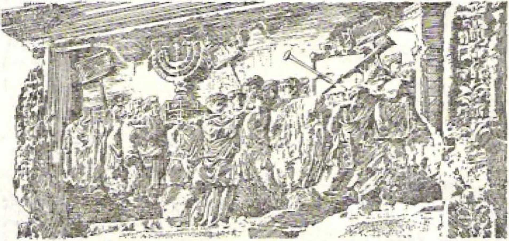A relief on the Arch of Titus (tn Rome}, showing R an soldiers carrying spoils from the temple at Jerusalem A.D. 70.
A.D. 130 the Roman Emperor Hadrian, the Pontifex Maximus, visited the ruins of Jerusalem and he ordered the city to be rebuilt. Fearing the establishment of pagan worship there, the Jews revolted under Bar-Cochba. By 134 the revolt was crushed with great losses to both the Romans and the Jews. Afterward Jews were slaughtered en masse. The Roman colony on the site of Jerusalem was called Aelia Capitolina. A sanctuary to the pagan god Jupiter was built on the Temple site, and statues of Jupiter and Emperor Hadrian were set up in the Temple area. Jewrs were forbidden to enter the city on pain of death. This continued down till 312 (A.D.). When Constantine became emperor and Pontifex Maximus and then professed to become a Christian, the city took on a new aspect. It was cherished as a site of sacred Christian history, and Constantine the Great built in it the Church of the Holy Sepulcher.
This did not mean that the Jerusalem of Constantine's day became the Zion of true followers of Jesus
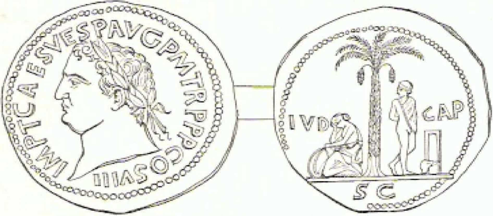ROmiri Medal Commemorating J e r u s .11 ttm ‘s Capture
K^pEunAli:'-. <>f abbreviated Latin. words on the face side: "Impcrator Titus Caesar Vespawanus Augustus Pontifex. Maximus Tdbunus Popu.ll Pater Patriae Consul VIII." meaning "Emperor Titus Caesar Vespasian Augustus. Fcmtlfex Maximus, Tribune of the People, Father of the r-'atht'Kanil. Consul for the ufeblh time.” Reverse side: Judea Capta," rnuanin?; " Captive Judea." On the right side of the palm tree stands a captive Jew with hands tied behind his hack, and on the left s4i.li- is a Jewess sitting on the ground and weeping, iCompan- Is.-iinh 52:1, 2,) Underneath is the abbreviation for ''Senutus Consult'd,meaning “By u Decree of the Senate."
Christ. Their Zion is no earthly city. Earthly Zion, which had rejected Jesus Christ at his triumphal entry A.D. 33t was destroyed by the Romans in the year 70-But the true Zion of the still-living apostle John and his fellow disciples continued standing, for it is spiritual, heavenly. To the apostle John and other Hebrew Christians the words of Hebrews 12:22, 23 applied: “You have approached a Mount Zion and a city of the living God, heavenly Jerusalem, and myriads of angels, in general assembly, and the congregation of the first-boro who have been enrolled in the heavens, and God the Judge of all.”
It is in this heavenly Zion that Jesus Christ, the “high priest according to the manner of Melchizedek,” was to be enthroned as King at the dore of the Gentile Times in the year 1914. (Psalm 110:4; Hebrews 5:10; 6:20)* Then Jerusalem would no longer be trodden
* In, Hebrews 5:10; 6; 90 occurs the Greek xvard arAfttere&r (dexur-cfu;.i mcunlriK "hlKh priest.'1 In oh •JUfcrt /tape] down by the Gentile nations; that is 1o say, what Jerusalem stood foi' would no longer be trampled down. How so? Well, when Jerusalem began to be trampl cd by the Babylonians in 607 B.C., it stood for the scat of God’s typical earthly kingdom. His throne on which the kings of i lie royal line of David sat had been in that city and was overturned in 607, not to be reoccupied even though the literal cit v was rebuilt. Hence the be-ginning of the Gentile Times meant the overturning of the kingdom of God in the line of David. The ending of the Gentile Times in the year 1914 would mean the reestablishment of the kingdom of God in the line of David.
King David’s Heir and Lord has been in heaven at God’s right hand since A.D. 33. The Zion to which he comes and which accepts him is in heaven; and so the place where God’s kingdom is established in 1914 is the heavenly Zion, and not the divided Moslem-Jewish city of Jerusalem over in the Middle East. For this reason God’s kingdom, which was once represented in ancient earthly Jerusalem, is no longer trodden down by the Gentiles. God’s kingdom is now represented in the “heavenly Jerusalem” and is no longer trampled down by Gentile nations, not since A.D. 1914, when the Gentile Times ended, for then God’s Messianic kingdom was born and the “heavenly Jerusalem” became a royal organization with a ruling king.
[continued Jrowi zxi.w £52 ] the Oat In VuZqnfe the translator Jerome rendered this Greek word by “pontlfcx. ” In Hcbrcivs 5:G occurs the Greek word hw!r«ni.s ;.ir<trjc), meaning "priest’'; hut there Jerome renders this word as "saccrdos.'1 Proiwrly, he should have translated the Greek word arfcAirwtis as "pr In ceps saccrdotum” ns in Matthew 2:4; 16:21; 20: IB; 21: 15, 23. 45; Acts 4:6; 26: 10. 12. Also, in Psalm 110:4 i Vulgate, 1.09■ i) Jerome uses the word ‘•sacerdos" for "priest” the same as Ln Genesis 14: IS rcKardinK Melchlzedek. In T,evUic.-u;s 21:10. for '“hii’h. priest” he uses “s.irrh]«>s maximum,” but he inserts "PontifcxInto th<- text, saying "Pontlfex, id est saccrdos muximus inter fratres suos” (’"The Pont ilex, that is, the Greatest l*rlest among his brothers.”>. In this way Jerome wrongfully Introduces the word “pontifex" into the L-atln Version of the Holy Scriptures, evidently in order to Justify the Roman Catholic pope who had made him his secretary, namely. Pope Darnasus, who was the first pope to take over the title Pontifex Maximus after Emperor Gratian had rejected It,—See ZxxJit* Neu? Testament, by Wordsworth and White, edition of l&H.
R
From its very beginning Babylon was the enemy of the people of Jehovah God. Babylon was founded by Nimrod, “a mighty hunter in opposition to Jehovah/’ on a plain in the land of Shinar. (Genesis 10:8-10; 11:1-9) From that land came the invaders into the Promised Land in the days of Abraham the patriarch and Melchizedek the priest-king of Salem. Abraham pursued the invaders northward and put them to flight and recovered all the plunder and captives that they had taken from the land. On his return he was met by Melchizedek, who came out of his city to meet the victor.
When Melchizedek blessed Abraham in the name of the Most High God, Melchizedek proved that he and his city Salem were against those marauders from the land of Shinar with its leading city Babylon. (Genesis 14:1-20) Ancient Salem is understood to have been the nucleus of the city of Jerusalem; the name Salem was incorporated in the name Jerusalem. The high ridge of land known as Mount Zion must have been associated with Salem or even been part of it, for Mount Zion was where the citadel of Jerusalem whs later reported to be when David was king of Israel.* Thus, by such association, Zion and Babylon arc lined up as
* See Joshua 10:1-5; 15:8. 63: Judges 1:7. 8. 21; 2 Samuel 5:4-9; 1 Klnss 8:1; 2 Chronicles 5:2. Mount Moriah, where Isaac was to he Ottered up as a sacrifice by Abraham, was Tight next to Mount Zion, to its north, and was later included within the city nt Zion or JerusjiZein,
enemies of each other from the very first book of the Holy Bible.—Micah 7:8.
This enmity between Babylon and Zion is carried forward right into the very last book of the Bible, Revelation or Apocalypse. In that book the long-drawn-out enmity of the two organizations is seen coining to an end in the everlasting destruction of Babylon and the glorious triumph of the much-persecuted Zion (Jerusalem). This climax to the hostility between the two organizations suddenly leaps into the limelight in chapter fourteen of Revelation. From there onward to the end of the Bible we will now follow the thrilling drama in which Babylon and Zion play opposite parts.
Toward the close of the first century of our Common Era the persecuted aposl le John wrote Revelation, on the Roman prison island of Patinos, off the coast of Asia Minor. He vividly describes to us What he was favored with seeing in a prophetic vision, under inspiration of God’s active force or spirit. We read his words:
“And I saw, and, look! the Lamb standing upon the Mount Zion, and with him a hundred and forty-four thousand having his name and the name of his Father written on their foreheads. And I heard a sound out of heaven as the sound of many waters and as the sound of loud thunder; and the sound that I heard was as of singers who accompany themselves on the harp playing on their harps. And they are singing as if a new song before the throne and before the four living creatures and the older persons; and no one was able to master that song but the hundred and forty-four thousand, who have been bought from the earth. These are the ones that did not defile themselves with women; in fact, they are virgins. These are the ones that keep following the Lamb no matter where he goes. These wore bought from among mankind as a first fruits to God and to the Lamb, and no falsehood was found in their mouths; they arc without blemish.*’—Revelation 14:1-5.
When the apostle John wrote down this vision to him nineteen hundred years ago, it was meant, as he says, “to show I God’s] slaves the things that must shortly take place/* (Revelation 1:1) After all these centuries, with all their recorded history, these things that were presented to John “in signs" must by now have taken place or be about to take place. What, then, do we see todav?
Look to the Middle East, to the Mount Zion in what is now the land of Jordan. Do we see the resurrected Lamb of God standing there? No! Nor is the glorious heavenly Lamb of God going to stand visibly again in flesh on that earthly Mount Zion. Why should he have to do so? Nineteen centuries ago, after his ascension to heaven, Jehovah God laid him in the heavenly Zion as the symbolic Tried, Precious Cornerstone. So there in the heavenly Zion he stays laid as a “sure foundation.” (Isaiah 28:16; 1 Peter 2:4-6) To this heavenly Mount Zion come the 144,000 who “keep following the Lamb no matter where he goes/’ Thus the Mount Zion that the apostle John saw in this vision was a “sign.” It signified, symbolized, the invisible heavenly Mount Zion; and there is where the “heavenly Jerusalem” is located, the holy “city of God.”—Hebrews 12:22.
The symbolic Lamb is the resurrected, glorified Jesus Christ, whom Revelation 5:5 identifies as “the Lion that is of the tribe of Judah, the root of David?’ How appropriate that this One should be standing on the heavenly Mount Zion! Why? Because his forefather King David captured the earthly Mount Zion, and the citadel on it came to be called “the city of David?' (2 Samuel 5:4-9) His stawdingf there indicates that he has begun to reign, this being the Bible expression used to mean that a king has taken power to reign. (Daniel 12:1) Concerning this event, Psalm 2, written by King David and applied by the apostle John and his fellow apostles to the anointed Jesus, had this to say: “The kings of the earth take their stand and high officials themselves have massed together as one against Jehovah and against his anointed one, . . . Jehovah himself will hold them in derision. At that time he will speak to them in his anger, . . , saying: ‘I, even T, have installed rnv king upon Zion, my holy mountain.’ ” —Psalm 2:2-6; Acts 4:19-30.
The time pictured in Revelation 14:1 must accordingly be A.D. 1914 and thereafter. In that year the Gentile Times ran out, which meant that the appointed time had come for God’s kingdom in the royal line of David to be established and thus this kingdom, once represented by earthly Jerusalem, must no longer be trampled on by the Gentile nations. Hence the Lamb must stand up on Mount Zion.
After Jehovah God installed the Lamb as His King on the heavenly Mount Zion in 1914, the time had to come for the Lamb's 144,000 faithful followers to be gathered to him there. This is definitely indicated for us in Revelation 11:15-18, where John says:
“The seventh angel blew his trumpet. And loud voices occurred in heaven, saying: ‘The kingdom of t he world has become the kingdom of our Lord and of his Christ, and he will rule as king forever and ever.’ And the twenty-four older persons who were seated before God upon their thrones fell upon their faces and worshiped God, saying: ‘We thank you, Jehovah God, the Almighty, the one who is and who was, because you have taken your great power and begun ruling as king. But the nations became wrathful, and your own wrath came, and the appointed time for the dead to be judged, and to give their reward to your slaves the prophets and to the holy ones and to those Tearing your name, the small and the great, and to bring to ruin those ruining the earth.’ ”
Here let us do some measuring by parallel events of nineteen centuries ago. Tn the spring of 33 Jesus Christ was resurrected from the dead. Tins was three and a half years after he became Messiah the Leader by being anointed with holy spirit. So now we measure three and a half veal's from the early autumn of 1914. This brings us to spring of the year 1918, shortly after the Passover, at which time faithful, anointed followers of the Lamb celebrated the anniversary of the Lord’s evening meal, the Last Supper as it is commonly called.* (1 Corinthians 11:20) Parallelwise, about that time of the year those faithful followers who had finished their earthly course in sacrificial death would be due to be resurrected* With what body? 1 Corinthians 15:35-50 answers by saying:
Tt" *** * *
“ ‘How are the dead to be raised up? Yes, with what sort of body are they coming?* ... So also is the resurrection of the dead. It is sown in corruption, it is raised up in incorruption. It is sown in dishonor, it is raised up in glory. It is sown in weakness, it is raised up in power. It is sown a physical body, it is raided up a spiritual body. If there is a physical body, there is also a spiritual one. It is even so written [in Genesis 2:7]: ‘The first man Adam became a living soul/ The last Adam became a life-giving spirit. . . . And just as we have borne the image of the one made of dust, we shall bear also the image of the heavenly one. However, this I say, brothers, that flesh and blood cannot inherit God's kingdom, neither does corruption inherit incorruption?’
Since the Mount Zion in Revelation 14:1 is heavenly and since the 144,000 faithful followers could not in-hcrit the heavenly Zion with “flesh and blood’* and human corruption, they had to be raised with a “spiritual body” in the image of the heavenly Lamb, the glorified Jesus Christ. Hence their resurrection to heavenly life with him was invisible to human eyes. This is in harniii-iy with what Have* la lion 14:3, 4 sa.v-about them: uThe hundred and forty-four thousand, who have been bought from the earth. . . . These were
* The date of this celebration was March 26, 191R, which was a I'ucEilay night. See TTte Wafch as of April 1, 1918, pages 110, 111. bought from among mankind as a first fruits to God and to the Lamb/’
This means that these 144,000 were no longer part of mankind; they were no longer to be human creatures of flesh and blood. They were to be like the firs tfru its that the Jewish high priest took from the wheat harvest and offered to Jehovah God on the day of Pentecost at the temple in Jerusalem. (Exodus 23:16: Fzwit-icus 23:15-21) Since the 144,000 faithful followers of the Lamb were like the firstfruits taken from the Jewish wheat harvest, the rest of the wheat harvest must picture the rest of men of flesh and blood.
Quite appropriately, then, it was on the day of Pentecost in the year 33 that the first ones of the 144,000 were offered to God by the heavenly High Priest Jesus Christ, who poured out holy spirit upon them, thus anointing them to be members of his congregation, his Bride class. Since the Jewish Pentecost came just the fiftieth day after the resurrection of Jesus Christ from the dead, this would show what to expect in 1918 according to the rule of time parallels. What? That those of the 144,000 who had already died faithful to the end were resurrected invisibly, not with flesh-and-blood bodies, but with invisible spiritual bodies in spring of 1918.
The 144,000 are taken from among men and women, but they are all engaged to marry the heavenly Bridegroom and be his Bride. In ancient Israel the high priest was allowed to take only a virgin for a wife. Since Jesus Christ is the High Priest of Jehovah, it harmonizes with the rule in Israel that he should have only a virgin for his heavenly Bride. (2 Corinthians 11:2) Hence it is required of the 144,000 that they do “not defile themselves with women” but. must keep “virgins.” They do this by not getting spotted up with this world through a religious marriage with womenlike religious organizations of this world. They must not be like the virgins of ancient Babylon, who, before ever they could legally marry, had to go to the temple of Venus (Ishtar) and prostitute themselves to her by yielding themselves to a paid-for violation of their virginity by the highest bidder. They may not be any of the “harlots” produced by Babylon. (James 1:27; 4:4) Otherwise, the heavenly Bridegroom would never include them in his Bride.
As “no falsehood was found in their mouths” and “they are without blemish/’ it is certain that they always speak the pure truth of the good news of God's kingdom. They do not hold onto the false teachings of Babylon or propagate her lies and false religion. They do not have her name in their foreheads as if they w’ere slaves of Babylon and belonged to her. Instead, the 144,000 have the name of the Lamb Jesus Christ and the name of his Father written on their foreheads. This plainly and publicly identifies the Ones to whom they belong as slaves and followers. As the Bride of the Lamb, they would properly take his name. Since the Hebrew language is twice mentioned in the book (Revelation 9:11; 16:16) and since the apostle John was a Hebrew, it was doubtless the sacred Hebrew’ tetra-gramma ton (tiW) that he also saw written on the foreheads of the 144,0001 for YHWH (mm) is wIn st Jehovah says his name is. Thal fact makes it certain that the 144,000 faithful Christians seen on Mount Zion are Jehovah’s witnesses.—Isaiah 43:10-
Where they are and what they do supports this fact. John in vision heard a song being sung. It wTas so mighty in sound thru it was like the sound of many waters and the sound of loud thunders. Who are the singers? It is told us that “no one was able to master that song but the hundred and forty-four thousand, who have been bought from the earth.” Hence the singers must be the 144,000. As they sing, they play harps to accompany themselves.
What they sing is “as if a new song/* with the result that they are the first ones to vocalize the song. It is something new for everybody else to hear; and they sing it. nut of their own personal experience that no other creatures but the Lamb and they themselves have had. Certainly the “new song” that was sung to the Lamb has reference to them, for it says: “You are worthy to take the scroll and open its seals, because you were slaughtered and with your blood you bought persons for God out of every tribe and tongue and people and nation, and you made them to be a kingdom and priests to our God, and they will rule as kings over the earth.” (Revelation 5:9, 10) Since they are resurrected from the dead after God’s kingdom has been established and since they are assigned to a place on Mount Zion as a Kingdom class and 1o “rule as kings” together with the Lamb of God, their new song would be about this Kingdom of God as a government that has now been established in 1914, at the end of the Gentile Times. To the 144,000 in particular would apply the command of Psalms 96:1, 10; 98:1, 5; 149:1, 2:
“Sing to Jehovah a new song. Sing to Jehovah, all you people of the earth. Say among the nations: ‘Jehovah himself has become king. The productive land also becomes firmly established, so that it cannot be made to totter. He will plead the cause of the peoples in uprightness.1' ” “Sing to Jehovah a new song, for wonderful are the things that he has done. His right hand, even his holy arm, has gained salvation for him. Make melody to Jehovah with the harp, with the harp and the voice of melody.” “Praise Jah, you people! Sing to Jehovah a new song, his praise in the congregation of loyal ones. I_x?t Israel rejoice in its grand Maker, tin* sons of Zion —let them be joyful in their King."
Where arc these 144,000 singing the “new song”? Upon Mount Zion. There they are standing with the Lamb, but at the time standing “before the throne and before the four living creatures and the older persons.” Revelation 4:4-11 reveals that these four “living creatures” and twenty-four “older persons” Eire around the throne of Jehovah God in heaven. So it must be that here Mount Zion is the heavenly onef and not the literal Mount Zion on which there stands today an ancient walled city now occupied by Moslems. To the heavenly Mount Zion is where the remnant of prospective members of the 144,000, who arc yet on earth, have come.—Hebrews 12:22.
GOOD NEWS AND A JUDGMENT MESSAGE
What the apostle John next sees in vision fits well into the “time of the end," which began for this old world in the year 1914, which was also the year when God’s kingdom by his Lamb began to rule. John says: “And I saw another angel flying in midheaven, and he had everlasting good news to declare as glad tidings to those who dwell on the earth, arid to every nation and tribe arid tongue and people, saying in a loud voice: ‘Fear God and give him glory, because the hour of the judgment by him has arrived, and so worship the One who made the heaven and the earth and n and fountains of waters.* ”—Revelation 14:6, 7.
This angel flew relatively near to the earth, for Revelation 19:17 speaks also of “all the birds that, fly in midheaven.” From this relatively low position the flying angel spoke, in the vision, directly to those dwelling on the earth regardless of nation, tribe, tongue and pco-ple. His was an international message. In the fulfillment of this vision in the “time of the end,” this all-important message is not delivered directly, audibly by any angel in midheaven where now our airplanes as well as birds fly. It is delive rod to people on earth by worshipers who fear God and give him glory. These are the followers of the Lamb, who obey his word given long ago in his prophecy on the end of this world or system of things. These must deliver the message, because it was to his disciples that Jesus said: “This good news of the kingdom will be preached in all the inhabited earth lor a witness to all the nations; and then the end will come.’* (Matthew 24:3, 4, 14) Note the purpose of the preaching of this good news of the Kingdom: it is done “for a witness.” It is therefore done by Kingdom witnesses.
The news of God’s kingdom, even when it was yet coming, was gospel or good news, (Matthew 4:23; Mark 1:14, 15) The news that God's kingdom was already set up and put in operation in the heavens was still better news. First in 3 920 did we discern that the good news of God’s kingdom as cslabJ&A-ed in the heavens in 1914 (A.E>.) was to be preached in fulfillment of Matthew 24:14. This verse was the theme text of the article “Gospel of the Kingdom” that was published in T/j-e Wciicft. Tower in English under date of July 1, 1920. In the last paragraph on page 199, the article quoted Jesus' prophecy in Matthew 24:14 and then went on to say:
It will be noted he does not say the gosprT that has been preached to the meek throughout the entire Gospel age shall be preached. What gospel then could he mean? The gospel means good news. The good news here is concerning the end of the old order of things and the establishment of Messiah's kingdom. It means the dark night of sin and sorrow is passing away. It means that Satan's empire is falling, never to rise again. . . .
. . . Plainly this would seem to indicate that now the church must engage in the proclamation of this good news as a witness to the nations of earth, and then the old order will entirely pass away and the new will be here. Surely there could be no tidings so good, no news so comforting and helpful to the jieoples of earth in this time of distress. ... It is evidently the same message and the same class of which the prophet Isaiah had a vision and about which he wrote: “How beautiful upon the mountains are the feet of him that bringeth good tidings, that publisheth peace; that bringeth good tidings of good, that publisheth salvation; that saith unto Zion, Thy God reigneth!"—Isaiah 52:7.
Manifestly, then, it shows that the last members of the body of Christ . . . are the ones that now must stand before, or above, the kings of this earth and bring to them the good news, publishing peace and salvation, be
cause the Lord is here. He great power and reigns!
has taken unto himself his
Shortly afterward, namely, on Friday, September 8, 1922, at an international assembly of unsectarian Bible students in Cedar Point, Ohio, in an address on “The Kingdom** at 9:30 a.m., it was said to them that they must be witnesses of the Lord God, that is, Jehovah’s, witnesses. The speaker, J. F, Rutherford, then president of the Watch Tower Bible & Tract Society, quoted to the assembled thousands Isaiah 43:8-12 (AV) and then proceeded to say:
Thus we s.i c that those of the temple class arc clearly designated as the LonTs witnesses at this time, to bring a message of consolation to the people, that the kingdom of heaven is here, and that millions now living will never die. Thus it is seen that God purposes that his name shall be magnified, that the people shall know that he is Lord. Thus we see that. God purposes to have a people in the carth in this time of stress, clearly marked as separate and distinct from all others, standing as his witnesses, fearlessly crying out the message: ‘The kingdom of heaven is at hand!”
. . , This is corroborated by the Lord in Matthew 24:14. Clearly, thru, is sot forth the proof that the temple class must continue to declare this message of the kingdom until their earthly career is ended. They must be his faithful witnesses until Babylon's walls crumble to the ground.
. , . Be faithful and true witnesses for the Lord. Go forward in the fight until every vestige of Babylon lies desolate. Herald the message far and wide. The world must know that Jehovah is God and that Jesus Christ is King of kings and Lord of lords. This is the day of all days. Behold, the King reigns! You arc his publicity agents. Therefore advertise, advertise, advertise the King and his kingdom.—Pages 336, 337 of 7rft.s IVftteA Tower under date of November I, 1922.
This work or advertising God’s established kingdom was from then on carried forward as never before. Today after forty-one years of activity this good news of the Kingdom is being preached by word of mouth mid by printed page in 189 lands, territories, provinces, colonics and island groups in 162 languages, under the supervision of 90 branch offices of the Watch Tower Bible & Tract Society of Pennsylvania. The small dwindling remnant yet on earth of the 144,000 have been joined in the work by a “great crowd” of dedicated godly persons out of all nations since 1931, so that in this year 1963 the combined number of Kingdom advertisers around the earth numbered more than a million in April.—Revelation 7:9,10.
Tn 1925 the anointed remnant came to appreciate more than previously that the time had come for Jehovah to make a name of renown for himself.27 Quite logically, in the beginning of the next year, in the issue cf 77?.< 117?^ 7; Toiler dated Jammy 1. 1926. was published the leading article entitled “Who Will Honor Jehovah?” The faithful remnant answered the question with a positive “We will!” The succeeding years began with appropriate leading articles in 77te Wc/i Totoer in the first issue of each successive year: for 1927, “Jehovah and His Works”; for 1928, “Honor His Name”; for 1929, “I Will Praise My God”; and for 1930, “Sing Unto Jehovah,”
The grand climax of all this came in the following year, on Sunday, Julv 26, 1931. at the international assembly held in Columbus, Ohio, U.S.A. There at 4 p.m. a resolution was read to the thousands of con-ventioners, and President J. F. Rutherford followed this reading up by an argument setting forth Scriptural support to the resolution that:
Wc unhesitatingly declare our allegiance and devotion to Jehovah God arid his kingdom; that wr are servants of Jehovah God commanded to do a work in his name, and, in obedience to his commandment, to deliver the testimony of Jesus Christ, and to make known to the people that Jehovah is the true and Almighty God ; therefore we joyfully embrace and take the name which the mouth of the Lord God has named, and we desire to be known as and calleri by the name, to wit, Jehovah's witnesses. Isa. 13:1-12; 62:2; Rev. 12:17.
pages 22. 44,
45. 75, 167, 215,
This resolution was enthusiast i« e.dly and joyfully adopted by the international assembly of thousands of members of the anointed remnant. Later the congregations around the globe adopted the same resolution, thus identifying themselves as Jehovah's witnesses. The resolution was also published in millions of copies in a numb. r of languages throughout the earth. Especially then it was as if the sacred name YHWH (mra) was seen to be clearly written on the foreheads of the remnant. In this way Christendom and the rest of the world were notified that Jehovah had his Christian witnesses on the earth for making known his name and his purposes. Since that time a “great crowd” of seekers after God have accepted the witness given by the remnant and have associated themselves with the remnant and have chosen likewise to be called by that Biblical name Jehovah's witnesses.—See The Watch Tower, September 15, 1931, pages 278, 279.
Along with the declaring of the good news of Jehovah’s newly established kingdom there was to be delivered a message of judgment. It was because, as the angel Hying in midheaven said, “the hour of the judgment by him has arrived.” In a sense, this fact was also good news, glad tidings, because the arrival of God’s judgment hour meant that he as Supreme Judge would straighten out all matters, vindicating his own universal sovereignty and holy name and delivering his faithful servants from bondage and slavery to the Devil's oppressive organization. His faithful remnant on earth, if passing the judgment with credit to themselves, would be ushered into the joy of the Lord Jesus Christ, the reigning King.—Matthew 25:14-30.
The arriving of the hour for God the Creator to judge was all the more reason for people everywhere on earth to “fear God and give him glory . . . and so worship the One who made the heaven and the earth and sea and fountains of waters.’' What, then, about the “great crowd” of sheeplike persons from all parts of the world? According to the historical facts, the time of judgment for them began in the latter part of 1931, when the anointed remnant, under the name “Jehovah’s witnesses/* began turning their attention to these “other sheep.” The effect of this proved to bo just as Jesus had predicted in his prophecy on the world’s end: “When the Son of man arrives in his glory, and all the angels with him, then he will sit down on his glorious throne. And all the nations will be ga1h-ered before him, and he will separate people one frorn another, just as a shepherd separates the sheep from the goats. And he will put the sheep on his right hand, but the goats on his left.”—Matthew 25:31-33; Revelation 7:9-17; John 10:16; Ezekiel 9:4-6.
“BABYLON THE; (JREAT HAS FALLEN “
In the sixth century before Christ it was good news to many when it was announced that Babylon had fallen before the Medes and Persians. Iler overthrow came as an act of judgment on the part of Jehovah God against the wicked oppressor of his exiled people. So it was only in the right order of things that, after the apostle John saw and heard an angel in midheaven declaring good news and announcing the arrival of the hour of God's judgment, he should hear God’s great act of judgment proclaimed. John says: “And another, a second angel, followed, saying: ‘She has fallen! Babylon the great has fallen, she who made all the nations drink of the passion-arousing wine of hei' fornication/ ”—Revelation 14:8.
John had a vision of this in the last decade of our first century, that is to say, more than six centuries after ancient Babylon on the Euphrates River fell from its position as the Third World Power and surrendered world domination over to an Aryan power, the Medes and Persians. At the time of John’s apocalyptic vision, what was left of the literal city of Babylon was declining toward its final disappearance. When the Gentile Times ended in the year 1914 and John’s vision began to be fulfilled, ancient Babylon was marked by only some ruins that had then recently been dug up. After eighteen years of excavation work begun in 1899 and carried on for the German Oriental Society under the direction of Professor Robert Koldewey, much of the ruins of the ancient Wonder City stood exposed to the gaze of the curious tourist. A.D. 1917 the digging up of ancient Babylon had to be discontinued because of the advance of British armies into Mesopotamia, during World War I.
What, then, is the “Babylon the great’* the downfall of which was prophetically announced by that ''second angel”?
She is named after a city, but she is only a .sj/??ibo?rc city, like the city that Revelation 11:8 describes as “the great city which is in a spiritual sense called Sodom and Egypt, where their Lord was also impaled-1’ What Babylon the Great symbolizes we can only understand by viewing her against the background of history that the inspired Hebrew Scriptures paint of ancient Babylon.
Let us remember that the original Babylon was founded as a breakaway from the worship of Jehovah and from allegiance to him as God, for Babylon was established by a rebel against him. That rebel was stigmatized as “Nimrod a mighty hunter in opposition to Jehovah.*’ Later the inhabitants of the pagan city called it the "Gate of God/’ However, Jehovah called the city Ba I k?1, which means “Confusion,” because he confused the language of the builders of the city and its tower. (Genesis 10:8-10; 11:5-9) Babel (Greek, Babylon) never was a Hebrew city; it never was Jewish; it never was Messianist or Christian, for never was it the organization of Jehovah God. It was always against his chosen people, and so was against Zion, In the days of the dynasty of Nebuchadnezzar as kings of Babyion it had apparently swallowed down the chosen nation of Israel “like a big snake” or dragon, ( Jeremiah 51:34) Babylon’s purpose was to keep Israel down.
As a Semitic world power for more than seventy years, Babylon was, of course, political. It was militaristic. Il w*as highly commercialistie. But it was outstandingly religious. The cuneiform inscriptions dug up in the Middle East show how much emphasis it placed on religion. The mill Ui.r.i<l ic rulers of Assyri.1: Upl detailed records in which even the names and political outcomes of the kings of Judah and Israel were frequently included with a historical backdrop, But as for tiie Babylon under the dynasty of Nebuchadnezzar, the records mention little else than the religious and architectural events of the time, ignoring what happened to the kingdom of Judah. Testifying to the religiousness of the Wonder City of antiquity Is the cuneiform inscription:
Altogether there arc in Babylon 53 temples of the chief gods, 55 ehapels of Marduk, 300 chapels for the earthly deities, GOO lor the heavenly deities, 180 altars for the goddess Ishtar. ISO for the gods Nergal and Aclad and 12 other altars for different gods.
The Babylonian priests turned all the sacrificial animate and all the religious tithes that people presented each day on the altars, especially the quickly perishable things, into money as soon as they could. Just as in Abraham’s hometown of Ur of the Chaldeans, the temple authorities had their necessary warehouses and ran their own department stores. They saw good to invest their religious revenue and so ran their own banks for this purpose.*
• Sens BtbSs as IJisfory. by W. Keller, papres 287, 2S9„ London Edition. Also Yumig'* Coneortianee supplement (1879 edition) t pajjes 33, 34.
Regarding Babylon’s greatest king, The Encyclopaedia Britannica f Volume 19, page 332a (edition of 1911), says: “From his inscriptions we gather that Nebuchadnezzar was a man of peculiarly religious character.” His successors were also religious.
When the builders of Babylon experienced a confusion of their language and had to scatter, they carried away the religion of Babylon with, them, each One in his own respective language. When Babylon experienced a great fall at the hands of the Medes and Persians in 539 B.C., its religion continued, even as it had already affected all the false religions of the world. In the last days of the Christian apostle John the religion of Babylon still prevailed throughout the earth under different forms in different localities. Il had tried to swallow up the Jewish religion and make it of no religious force, thus to destroy Jehovah's witnesses. (Isaiah 43:10-12; 44:8) But now. in the apostle John’s day, the religion of Babylon came up against something new, even though it began with or among the Jews. Her religion came up against the? faith of Christ’s disciples, the teachings of Jehovah’s Christian witnesses.
Babylon’s religion had fought against earthly Zion and had brought about its destruction for a time. Now , in the first century A.D., Babylonish religion took up the fight against the spiritual Zion as represented by the Christian witnesses of Jehovah. It tried to swallow them down, destroy them. How far did it succeed?
In the days of ancient Zion the prophet Ezekiel revealed to his fellow captives in Babylon how Babylon’s religion had been introduced into the very temple of Jehovah in Zion, particularly in the form of woi’ship-ing the Babylonian god Tammuz. (Ezekiel 8:13, 14) Centuries later the Lord Jesus Christ foretold that Satan the Devil, the real god of Babylon, would attempt a similar thing with regard to Jehovah’s spiritual temple, the Christian congregation. Satan the Devil would be the enemy who was pictured in Jesus’ parable of the wheat and the weeds and who, while men were sleeping, came and sowed weeds among the fine seed already sown in the field. In explaining the parable oi' illustration Jesus said:
“The sower of the fine seed is the Son of man; the field is the world: as for the fine seed, these are the sons of the kingdom; but the weeds arc the sons of the wicked one, and the enemy that sowed them is the Devil. The harvest is a conclusion of a system of things, and the reapers are angels. Therefore, just as the weeds are collected and burned with lire, so it will be in the conclusion of the system of things. The Son of man will send forth his angels, and they will collect out from his kingdom all things that cause stumbling and persons who are doing lawlessness, and they will pitch them into the fiery furnace. There is where their weeping and the gnashing of their teeth will be. At that time the righteous ones will shine as brightly as the sun in the kingdom of their Father, Let him that has ears listen.”—Matthew 13:24-30, 36-43.
The Devil’s sowing of the imitation “sons of the kingdom” within the Christian congregation was not to occur first centuries later. It was to begin “while men were sleeping,” whether that referred to the sleeping in death of the twelve apostles of Chris 1 or to the sleeping mentally and failing to watch spiritually on the part of the appointed overseers of the Christian congregation.
In the year 56, twenty-three years after Jesus Christ had died and been resurrected, the apostle Paul was on his way to Jerusalem and made a stop at Miletus. Here he had a meeting with the overseers from Ephesus and gave them this warning: “1 know that all of you among whom T went preaching the kingdom will see my face no more. . . . Pay attention to yourselves and to all the f’oek, among which the holy spirit has appointed you overseers, to shepherd the congregation of God, which he purchased with the blood of his own Son. I know that after my going away oppressive wolves will enter in among you and will not. treat the flock with tenderness, and from among you yourselves men will rise and speak twisted things to draw away the disciples after themselves. Therefore keep awake/* (Acts 20:16, 17, 25-31) Paul died about ten years later, or about A.D. 65.
The apostle Peter gave warning similar to that of Paul. In his second and last letter, written about A.D. 64, he wrote:
“Prophecy was at no time brought by man's wall, but men spoke from (lod as they were borne along by holy spirit. However, there also came to be false prophets among the people, as there will also be false teachers among you. These very ones will quietly bring in destructive sects and will disown even the owner that bought them, bringing speedy destruction upon themselves. Furthermore, many will follow their acts of loose conduct, and on account of these the way of the truth will be spoken of abusively. Also, with covetousness they will exploit you with counterfeit words. But as for them, the judgment of ancient times is not moving slowly, and the destruction of them is not slumbering. . . . our beloved brother Paul according to the wisdom given him also wrote you, sp king about these things as he does also in all his letters. In them, however, are some tilings hard to understand, which the untaught and unsteady are twisting, as they do also the rest of the Scriptures, to their own destruction. You, therefore, beloved ones, having this advance knowledge, be on your guard that you may not be led away with them by the error of the law-defying people and fall from vour own steadfastness.11—2 Peter 1:21 to 2:3; 3:15-17.
According to the promise of the Master Jesus Christ, his apostle John was the last of the twelve apostles to die. When John wrote his letters about the end of the first century, he called attention to the fact that a falling away or apostasy from the true Christian faith was even then making itself known. He wrote:
“The world is passing away and so is its desire, but he that does the will of God remains forever. Young children, it is the last hour, and, just as you have heard that antichrist is coming, oven now there have come to be many antichrists: from which fact we gain the knowledge that it is the last hour. They went out from us, but they were not of our sort: for if they had been of our sort, thev would have remained with us. But they went out that it might be shown up that not all are of our sori.” “Little children, guard yourselves from idols/’—1 John 2:17-19; 5:21.
In the Revelation given to John, the Lord Jesus Christ told him to write to the congregation in Ephesus, which Paul had warned long before, and to say th.is: “Remember from what you have fallen, and re-pent and do the former deeds. If you do not, I am coming to you, anti 1 will remove your lampstand from its place, unless you repent. Still, you do have this, that you hate the deeds of the sect of Nicolaus, which I also hate.” Tn a warning to the congregation in Pergamum, John was told to write this: “J have a few things against you, that you have there those holding fast the teaching of Balaam, who went teaching Balak to put a stumbling block before the sons of Israel, to eat things sacrificed to idols and to commit fornication. So you, also, have those holding fast the teaching of the sect of Nicolaus likewise. Therefore repent. If you do not, I am coming to you quickly, and I will war with them with the long sword of my mouth.”—Revelation 2:1, 5, 6, 12,14-16,
Suggestive of Babylonian influence in the congregation of Pergamum was the existence of the “teaching of Balaam,” inasmuch as the original Balaam was from
Mesopotamia, the region of ancient religious Babylon. - Deuteronomy 23:4, 5; Numbers 22:5; 31:8, 16.
As long as the twelve apostles of Christ lived and oversaw the Christian congregation, they held tip or slowed down the apostasy, the falling away to Babylon ish religion. They acted as a restraint upon the development. of a religious organization that professed to be Christian but that, was really antichristian and Babylonish. This fact was noted by the apostle Paul, when writing about Christ’s return. In 2 Thessalonians 2: 3-12 Paul wrote:
"It will not come unless the apostasy comes first and the man of lawlessness gets revealed, the son of destruction. He is set in opposition and lifts himself up over everyone who is called 'god’ oi' an object of reverence, so that he sits down in the temple of The God, publicly showing himself to be a god....
“And so now you know the thing that acts as a restraint, with a view to his being revealed in his own due time. True, the mystery of this lawlessness is already at work; but only till he who is right now acting as a restraint gets to be out of the way.
? the lawless one will be revealed, whom the Lord Jesus will do away with by the spirit of his mouth and bring to nothing by the manifestation of his presence. But the lawless one’s presence is according to the operation of Satan with every powerful work and lying signs and portents and with every unrighteous deception for those who are perishing, as a retribution because they did not accept the love of the truth that they might be saved. So that is why God lets an operation of error go to them, that they may get to believing the lie, in order that They all may be judged because they did not believe the truth but took pleasure in unrighteousness. ”
RELIGIOUS EMPIRE
The second century of our Common Era, after the death of the last of the twelve apostles, was the dangerous century. Babylonish religion in all its forms was by no means dead as a danger to spiritual Zion repre-sented by Jehovah*S Christian witnesses then on eanh. Says one encyclopedia under “Babel, Babylon”:
Though in late times the temples were more or less dilapidated, the services to all appearance continued to be performed, and may even have gone on until well in the Christian era. Babylonian religion and philosophy being still held in honor as late as the 4th century.
—ISBE, Volume 1, page 355b.
One of the outstanding features of Babylon’s religion was its triads of gods and demons. Let the reader search for himself, but not once will he find the word “trinity” occurring in the inspired Bible, for the Bible is not Babylonish. However, in the latter half of the second century religious writers who claimed to be Christians began to introduce the word into their writings. This provoked a religious controversy that finally resulted in interference by the Roman Empire itself. As regards the early development of this teaching and as regards the importance that modern-day Christendom gives it, wc quote The Catholic Encyclopedia, Volume 15:
Trinity, THE BLESSED, . . . I. Tim Dogma of the
Trinity.—The Trinity is the term employed to signify the central doci rino of the Christian religion the truth that in the unity of the Godhead there are Three Persons, the Father, the Son, and the Holy Spirit, these Three Persons being truly distinct one from another. Thus, in the words of the Athanasian Creed* “ihi’ F ai her is God, the Son is God, and the Holy Spirit is God, and yet there are not three Gods, but one God.” . . .
In scripture there is as yet no single term by which the Three Divine Persons are denoted together. The word TQiac (of whirl। the Latin trinitaa is a translation) is first found in Theophilus of Antioch about A.D. ISO. He speaks of “the Trinity Of God [the Father], His Word and His Wisdom” (“Ad Autolycum”, II, 15, P.G., VI, 1078). The term may, of course, have been in use before his time. Shortly afterwards it appears in its Latin form of trinitas in TertuIlian (“De pudicitia”, c.
xxi, P.G., II. 1026). In the next century the ward is in
general use.—Page 47 of Volume 15.
Came the fourth century and the rise of Constantine the Great. After he defeated his remaining opponent, Constantine was declared by the Roman Senate to be chief Augustus and Ponti fex Maximus, on October 28, 312. It is said that during this campaign against his opponent Mtixentius a flaming cross appeared in the heavens, under the sun, and bearing the words, In hoc signo winces (that is, “By this sign you will conquer”) ,* In January of 313 Constantine, in his capacity as the pagan Pontifcx Maximus, published his famous edict of toleration in favor of the professed Christians and they were made eligible to public office. But Constantine had not got baptized in water as a Christian. Although Emperor Licinius, his son-in-law, was with Constant ine in this edict of toleration, Licinius afterward persecuted the Christians. From 314 onward, both these emperors took up arms over this issue. Emperor Constantine vanquished Emperor Licinius and had him put to death. In this way Emperor Constant ine became, in 325, the one head of the eastern and western sections of the Roman Empire.
Already in the year 321 Constantine had made the first law in behalf of Sunday, Dies the day of the sun-god Sol, who.-a.: symbol was the cross, that this day should be exempted from being judicial and its observance was made a legal duty. After he took an interest in the Christianity of his time, Constantine became aware of the great controversies that were rending it, particularly that over the relationship of God to his Son Jesus Christ and to the holy spirit. This religious disunity threatened the unity of his empire,
---- —- - —
• It must be remembered that the upright cross was the sacred symbol of the Babylonian sod Tammuz. Therefore Dr. Alexander Hislop maintains that what Cun "untlnb actually saw, if the report is true, was the Greek letter Kill (XJ„ which resembles the English letter X. and. which Is the frsl letter in the word ZOtnsRta or Christ. See pages 1-1J-14G i>f 1liis bonk.
Hence in 325, as sole emperor and as Pontifex Maximus, he called together a religious council for settling the controversy over the Tgid? or "trinity."
Unbaptized Constantine, the pagan Pontifex Maximus, called for all the Christian episcopal or overseer’s throughout the empire Io meet in council, not in Italian Rome, but in Nicaea, near Nico media, in Asia Minor. Of all these overseers, only about one-third, or, 318, are reported to have come; and even this figure is understood to be too high. But why should these overseers, if they were Christians, obey a pagan Pontifex Maximus and let him dictate in Christian matters? Because of the attendants whom the bishops brought along, the number of men present at the Council may have been between 1,500 and 2,000. Constantine himself attended this first Council of Nicaea and he, as Pontifex Maximus and not as the religious bishop of Rome, presided over the council. It was held, not in Latin, but in Greek, and the Nicene Creed that resulted was in Greek. The Latin Church had only seven delegates present, two of those being presbyters who represented the bishop of Rome.
Those who upheld the trinity were championed by the young archdeacon Athanasius of Alexandria, Egypt. Those who opposed it and who showed from the Scriptures that Jesus Christ was less than God his Father were championed by Arius a presbyter. For about two months the two sides wrangled. Arius maintained that "the Son of God was a creature, made from nothing; that thei’e was a time when he had no existence; that he was capable of his own free will of right and wrong,” and that, “were he in the truest sense a son, he must have come after the Father, therefore the time obviously was when he was not, and hence he was a finite being/’* When Arius rose to speak, a certain Nicholas of Myra hit him in the face. Afterward, as Arius talked
■ See M'Clintock and Strong's Cjfclojwdki, Volume 7. paee 45a. Also Aw1, Volume 2, pag^ 250a.
on. many stuck their fingers in their ears and ran out as if horrified by the old man’s "heresies.”
Finally Pontifex Maximus Constantine made his decision and came out in favor of the trinitarian teaching of Athanasius. So the Nicenc Creed on the "trinity” was issued and enforced. Later, for resisting this, Arius was banished to Illyria by Constantine’s order, but was recalled from there five years later.* Besides publishing a number of canons the Council of Nicaea decreed on what Sunday (Dies SoZia)t of the year Faster should be regularly held.
However, the trinitarian decision of this Council did not bring tranquillity to the eastern religious organization, and the Arian controversy continued to be carried on very warmly. In 381 the ecumenical Council of Constantinople rounded out the trinitarian creed of Nicaea more fully.
Toward the close of his life Emperor Constantine favored the side of anti trinitarian Arius, Constantine being helped in this direction by Eusebius of Nico-
• Concerning other cffci -i-s pages 65. 6G. tells us: ' ‘The the Bible, and Israel’s lite
of the Nlcene Council Am1, Volume 1G, law of Israel had grown to be more than was no longer thought to be dependent upon the possession of Palestine. . . . Unable [after A.D. 135] to enjoy the rest and peace on Palest irienn soli, the Jews soon found their way to ever friendly Babylonia, where many of their brethren sojourned. The Rabbis, who had been forbidden to erect schools In the Holy Land, established them in Babylonia. . . . Residence in Palestine was* made mart? and more impossible for Jews. In Palestine, beginning
it.ii the Obtlncil nf Nice GT15), Jew® used event u.-iily tlM
li lilitie* Of t he Church, as well as to those of Imperial Rome: whereas on the other hand, they were granted fair treatment hi Nro-FersJar; Babylonia, In Babylonia they had ft political head In the Hxllarch', and religious author!) lex in the ‘Gaons’ of the academies, It was in these schools ih.-.i the Bible was given Its present canonical form, that the vocalization of the 'h-lm-w text of the Scriptures was fixed, that the many MJdt'ashi.m | commentaries on the Bible canon] were rrisiied, that additions were made to the prayer-book, and that numerous oere-
.:: : 11 ■!' :<: ■ ■ I •
“Trot the po.-.itlons of honor held out to I ■ Jew ; of Hnby•Ionin i lleil the more prominent among them with ambition goes without saying. . .
f “In the great temple of Babylon, the golden image nr the Sun was exhibited for the worship of the Babylonians.'’—Page 162 of The Two Rablflona, by Dr. Alexander Hislop.
media. So Arius was recalled from exile, and many of the trinitarian bishops were banished. Finally Athanasius himself was banished to Gaul (France). Although Constantine professed Christianity, he was not baptized till he fell sick in 337. In that year, while still holding onto the pagan office of Fontifex Maximus, he died in Nicomcdia, his real capital while Constantinople was still in building. In the meantime the Christianity of the day had become the official religion of the empire.
Emperor Constantine transferred ..he capital of the Roman Empire from Rome, Italy, to Byzantium, where he began a building program to produce a new capital that he called after his own name, Constantinople. On November 26, 329, he laid out the foundations of Constantinople, which was also called New Rome (J&onta
After Constantine died, the Roman Senate placed him among the gods, this fact showing that the Senate was still pagan, not really ChrisHan. But. the eastern religious congregations reckoned Constantine among the saints. The Greek, Coptic and Russian churches celebrate the festival of Saint Constantine on May 21* Constantine divided up the Roman Empire among his three sons, Constant ine, Constantius and Constans, s'® ■
This proved to be a political blunder. But, as pagan Fontifex Maximus, he tried to bring about a fusion of pagan religion and Christianity, a fusion religion, and in this he well succeeded. Regarding what followed his rei gn, we read:
Whatever may have been the true character of Constantine’s conversion to the Christian faith, Its c on sequences were of vast importance both to lie empire and to the Church of Christ, It opened the way for the unobstructed propagation of the Gospel to a wider extent than at any former period of its history. All impediments to an open profession of Christianity were removed, and it became the established religion of the empire, Numerous, however, in various points of view, as were the advantages accruing to it from this change, it soon
began to suffer from being brought into close contact with the fostering influence of secular power. The simplicity of the Gospel was corrupted; pompous rites and ceremonies were introduced; worldly honours and emoluments were conferred on the teachers of Christianity, and the kingdom of Christ in a good measure converted into a kingdom of this world.—T/ieofopicaZ Diction-ary, by Henderson and Buck. See also M'Clintock and Strong’s CyciopflFdMij Volume 2. page 488a; and Gibbon’s Doe-line and F’aZZ of the Roman Hmptre, Volume 1, pages 454 IT.
According to unbiased, uncolored history, the popular brand of Christianity became more and more Babylon! zed. Making an unembarrassed admission of this is the book by John Henry Newman, who was made a cardinal by Pope Leo XIII in 1879. This book, entitled “Essay on the Development of Christian Doctrine,” published in 1878, says the following, in chapter 8, in defense of the Roman Catholic Church:
Confiding then in the power of Christianity to resist rhe infection of evil, and to transmute the wry instruments and appendages of demon worship to an evangelical u- > ■ and feeling also that these usages had originally come from pr.nuuve revelations and from the instinct ni nature, though they had been corrupted; and that they must invent what they needed, if they did not use what they found; and that they were moreover possessed of the very archetypes, of which paganism attempted the shadows; the rulers of the Church from early times were prepared, should the occasion arise, to adopt, to imitate, or sanction the existing rites and customs of the populace, as well as the philosophy of the educated class.
The use of temples, and those dedicated to particular saints, and ornamented on occasions with branches of trees; incense, lamps, and candles; votive offerings on recovery irom illness; holy water; asylums; holy days and seasons, use of calendars, processions, blessings on the fields, sacerdotal vestments, the tonsure, the ring in marriage, turning to the East, images at a later date, perhaps the ecclesiastical chant, and the Kyrie Elelson, are all of pagan origin, and sanctified by their adoption into the Church.—Pages 355, 371, 373, edition of 1881.
SECTARIAN RELIGIOUS RIVALRY
The process was now well under way for the development of the four main sectarian divisions of modern Christendom, namely, the Greek Orthodox Church, the Roman Catholic Church, Protestantism, and the Russian Orthodox Church.
In the year 364. at Nicaea in Bithynia, Valentinian the son of Gratian of Pannonia was chosen by the army officers to be the emperor. As such, Valentinian became Pontifex Maximus. Shortly after this Emperor Valentinian I named his brother Valens to be colleague with him in the empire. Valentinian 1 chose to serve as emperor of the West, and so he left to his brother Valens as emperor of the East the eastern half of the Balkan peninsula, Greece, Egypt, Syria and Asia Minor as far as Persia. Valens was baptized by the Arian bishop of Constantinople, and later on he began to persecute the trinitarian subjects in his realm. But his brother, Valentinian I, the emperor of the West, the Pontifex Maximus, was a trinitarian like the bishop of old Rome in Italy.
For some time Nectarius, the bishop of New Rome or Constantinople, was serving as ex officio chief of the Eastern bishops in the realm of the emperor of the East. However, in 381 the second general Council of Constantinople nominated him to be the Patriarch of Constantinople. This paved the way for the religious split between the Eastern and Western churches of Christendom. This Council also declared the bishop of Constantinople to be next in rank to the bishop of Rome, Constantinople being New Rome. In 553 the third general Council of Constantinople was presided over by the Patriarch of Constantinople, despite the protest of the bishop of Rome. Rivalry between the two bishops was developing.
In 375, when Valentinian I the emperor of the West died, his son Gratian became emperor and Pontifex
Maximus. The eastern part of the empire was then still subject to Emperor Valeris the Arian. But when Valens was killed in 378f Gratian bestowed the eastern part of the empire upon Theodosius, one of his generals. In his later years Gratian dealt severely with pagans and heretics. He prohibited pagan worship at Rome. He refused to wear the insignia of the Pontifcx Maximus as unbefitting a Christian and abolished certain privileges belonging to the pontiffs. But. though a politician (Gi'atian) thought the title and office of Pontifex Maximus was unbefitting a Christian, the religious bishop (Damasus) of Rome did not think so. He immediately picked up this pagan title, with all its pagan connections and all its pagan obligations, The popes of Rome bear the title to this day, as if it is sand iked by the Church.
RELIGIOUS SCHISM
Religious rivalry between Rome and Constantinople (New Rome) was heightened still more when Theodosius, who had become sole ruler of the entire empire, died in 395 and his empire whs divided between his sons, Arcadius receiving the eastern part and Honorius the western part including Rome. The bishops of the churches in the East now became divided from the bishops of the churches in the West not only by geographical location but in their political loyalties.
The so-called “Fall of Rome*’ occurred in 476. That was when a Roman army, which was composed largely of hired German troops, revolted and made their own German leader Odoacer king. The Western emperor, then a child, was forced to retire to private life, arid Odoacer assumed the title of King of Italy and ably played thisrole for a while, This marked the end of the Roman Empire of the West. Afterward Rome came under the rule of Germanic Ostrogot ns.
However, the Roman Empire of the East continued with its independent line of rulers, of the Eastern Church; and, says TJ?c Encyc/opcdia 4tnencana, Volume 14, page 327b, “the emperor reigning at Constantinople wa$, in theory at least, ruler of the whole Roman Empire,” But the pope of Rome did not think that way. So now we are treated to the religious spectacle of the Patriarch of Constantinople being excommunicated by Pope Felix III of Rome. Another like excc-ai munication came a couple of centuries later. In 726 Emperor Leo HI of Constantinople prohibited the worship of images and ordered them to be destroyed. For this, Pope Gregory II of Rome took it upon himself to excommunicate the Eastern emperor, who belonged to the Eastern Church. This excommunication led on to the separation of the Eastern (Greek) Church from the Western (Roman Latin) Church. During the reign-of several Eastern emperors the prohibiting and the restoring of images alternated between each other.
In the year SOC Irene was ruling as empress in Constantinople, the first woman to reign over the Eastern Empire. For the time being Irene may have been a usurper of her son's position, but the Holy Bible, in Romans 13:1 (AV), tells Christians: “Let every soul be subject unto the higher powers. For there is no power but of God: the powers that be arc ordained of God.” Evidently the pope of Rome considered himself to be, not subject to the “higher powers/’ but superior to them. He exalted himself to appoint kings and emperors . Qn Christmas day of 800 he chose to do so toward Charles king of the Franks. Says The Catholic Encyclopedia. Volume 3, page 615:
Two days later (Christmas Day, 800) took place the principal event in the life of Charles, During the Pontifical Mass celebrated by the Pope, as the king knelt in prayer before the high altar beneath which lay the bodies of Sts. Peter and Paul, the pipe approached him. placed upon his head the imperial crown, did him formal reverence after the ancient manner, saluted him as Emperor and Augustus and anointed him, while the
Romans present burst out with the acclamation, thrice repeated: **Tc Carolus Augustus crowned by God, mighty and pacific emperor, bo life and victory.**
On page 774 Tfce Catftonc Encyclopedia speaks of this Eis “his coronation as the successor of Constantine.”
After some negotiations the Eastern emperors recognized Charles or Charlemagne as emperor and ruler of northern Italy, except Venice, Accordingly, from the year 800 dates the establishment of the “Holy Roman Empire,- which, despite all the changes and upheavals of the centuries, survived till the year 1806. But it was no real Kingdom of God, no Theocracy. It was not the beginning of the thousand-year reign of Christ. How could it be, when the “times of the Gentiles” were yet to run until A.D. 1914? Neither was it worldwide in extent as the real kingdom of Christ will be. It did not include even England, all Spain, Scandinavia, Russia or the Balkans. History renders judgment as to whether this Roman Empire was fcoly or not.
The ninth century saw the Eastern and Western churches moving farther apart. Besides the pope’s bold political action in crowning Charles as emperor, an effort was now put forth to fix upon the Eastern churches the yoke of subjection to the Roman pope as being the sovereign with divine right in the Catholic Church. This papal ambition provoked vigorous opposition on the part of the Eastern churches. These consider the Papacy’s action to be the “first cause of the division” between the Greek and the Latin churches.*
The final break between them came in 1054. On July 16 of that year the Greek Patriarch Michael Ccrularius was solemnly excommunicated by the papal legates who had been sent to Constantinople by Pope Leo IX
* Sec TAa Jis Historic Origin wad Pri?ni4tt’e PeZafioM icitfj
ti'i-rj CAurcftes. by Abb£ Guett^e. transited from the
French edition of 1BGG. The author was a French Catholic, not a Prot-CSt w 11t- SfH? pagt'-S 3L. .V. 7-352 37 : 373 Of his bn- <i
(who had died meantime in April of this year). Efforts afterward to heal this schism proved vain. Historians claim that this separation was one of the causes that contributed to the Roman Catholic Crusades, those wars in the East that resulted in such horrible destruction and bloodshed for Mohammedans, Jews and also Catholics,
The Roman popes wanted to reunite the two church groups. Hence they encouraged these so-called “holy wars” in the name of the cross. In the fourth crusade Constantinople was captured, in 1204, and the Crusaders, after taking the city, spent eight days in burning and plundering all public and private property, thus causing the greatest destruction of works of art in all history. Then Latin emperors began to rule in Con-
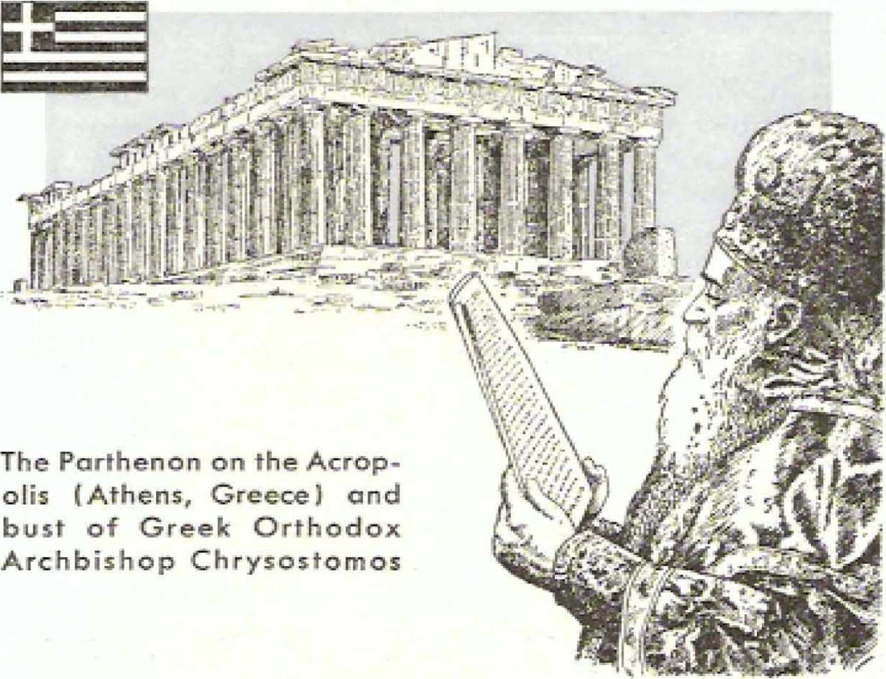stantinople, whereas the Greek emperors moved to Nice in Asia Minor and ruled from there. In 1261 Constantinople was recovered by the Greeks, and the empire of the Franks or Latins ended. Then the Mohammedan conquerors under Mohamet II came and captured Constantinople on May 29,1453. There the Eastern Empire finally came to its end, but the Patriarch of Constantinople was permitted by the Moslem conquerors to remain and to function.
In the year 1829 an independent kingdom of Greece was established, and since then Greece proper has been practically separated from the Patriarchate of Constantinople. The formal separation came later. In 1833 the regency of Greece declared the orthodox Oriental Church of Greece to be independent of every foreign ecclesiastical authority, and for the governing of the new independent church it organized a “Holy Synod/’ In 1850 the Patriarch of Constantinople recognized the independent constitution of the Greek or Hellenic Church. Todjy the national church of Greece is under the archbishop of Athens, but a number of dioceses in northern Greece are under the Patriarch of Constantinople, now called Istanbul.
A "TIHRD ROME"?
In the tenth century, while the schism was developing between the Greek and Latin Churches, the foundation wTas laid for another powerful religious organization of modern Christendom. In the preceding century the Patriarch of Constantinople had sent missionaries into Russia. In 955 there took place in Constantinople the baptism into the Eastern Church of a prominent Russian, Princess Olga the wife of Duke Igor. Her grandson Vladimir the Great forced Emperor Basil II to give him his sister Anna in marriage, and in 988 he was baptized into the Eastern Church. He had the idolatrous images of Peroun and other gods cast into the
Dnieper River. At this, action the people wept, but they yielded to Vladimir’s demand for them to be baptized as Christians. But how thorough was this forced con-
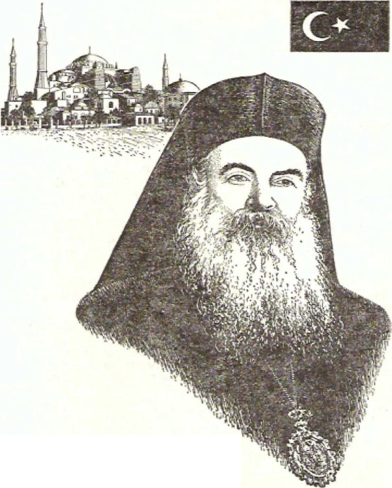J*,.
' ’’
(P j j *
Former Church of St, Sophie, Istanbul, Turkey, and bust of Orthodox Patriarch S. Athenagorcis
version? Page 37 of Volume 24 of 77tt? ffncyclojpedf'I Americana says:
Russian paganism did not vanish when the Christian gospel began to be preached. It survived in the popular language, sayings, traditions, domestic life and even religious beliefs. As late as the 18th century, serpents were adored in some ret note villages, Eugenius Golubi risky, the greatest historian of the Russian Church, declares that Russia was baptized in the ninth century, but not Christianized,— Edition of 1929.
Vladimir's son nearly completed the forced conversion of the Russians, who remained in close connection with the Patriarch of Constantinople. A metropolitan bishopric was set up at Kiev, which was called a Second Constantinople. In time a metropolitan bishop was also installed at Moscow.
When, in 1453, Constantinople, the scat of the Patriarch, fell to the Mohammedans, it affected Russ hi religiously. Says TAe Encyclopedia Americana, Volume 24, page 38b: “The idea of the establishment of a Russian patriarchate was a natural consequence of the downfall of the Byzantine Empire and of the growth of Muscovite Russia. Moscow was hailed as the Third Rome,”
However, an independent Russian Church was not fully established till 1587. On this, McClintock and Strong’s Cj/cZoptedia says:
In that year, the patriarch Jeremiah of Constantinople, while visiting Russia to obtain support, consented to turn the metropolitan of Moscow into a patriarch in rhe person of Job, the patriarch of Russia thus taking, in tile opinion of the Eastern bishops, the place of the schismatic patriarch of Rome.
[Note that the pope of Rome was considered to be the ‘'schismatic.” J
Soon after, the patriarchs of Alexandria anti Jerusalem, sixty-five metropolitans ar.d eleven archbishops ol the Byzantine Church, declared their concurrence In the independent organization of the Russian Church. The
Muscovite patriarchs continued, however, to apply to Constantinople tor confirmation until 1657. Soon after, in 1660, the Russian ambassador received from patriarch Dionysius II of Constantinople and the other Greek patriarchs the documentary declaration that the Russian patriarch might in future be elected by his own clergy without needing a confirmation by the Greek patriarchs. The Roman popes of the 16th century Rhe century of the so-called Protestant Reformation], especially Leo X, Clement VII, and Gregory XIII, made iwwed efforts for gaining over the Russian Church to a union with Rome.—Volume 9, page 161b.
The Russian Church underwent changes, but a notable one was introduced by Peter the Great, who became sole emperor of Russia in 1696. He abolished the patriarchate and substituted for it a permanent, synod, consisting of prelates presided over by the emperor or his secretary. The Holy Governing Synod was instituted in 1721 and was solemnly opened by an address of its vice-president, Archbishop Theophanes, Peter the Great thus subjected the Russian Church to the rule of the political State. It became a national church, a department of the civil bureaucracy of the Russian Empire. It served as a mere tool in the hands of the bureaucracy to support czarism.
In 1917 the czarist regime of Russia was overthrown, and to the Russian Church was left the power of determining its own affairs. In September-October of that year bishops, priests and others sat in the General Council of Moscow and discussed the religious situation. They came to the conclusion that, now that the Russian political autocracy had disappeared, the Russian Church needed a visible religious head. The restoration of a Russian patriarchate was approved by a large majority of votes, and a patriarch was elected, namely, Tikhon, the metropolitan, a liberal bishop.
In November of 1917, after the Bolshevik i established themselves in power by a second revolution, they decreed the disestablishment of the Russian Church as a State Church. They proceeded to confiscate certain Classes of church property, and clergymen of all ranks and all denominations were abused and insulted. The proclamation was made that g 'Religion is the opium of the people.” On March 14, 1918, the new Soviet government left Leningrad for Moscow, and this city became the center and capital of the new Russia, From the day’s of Peter the Great it had been the second capital of the Old Empire.
The official atheistic -state has tried to extirpate religion from Russia but has found it too costly. Accommodating itself to this hard fact, the Soviet government uses the Russian Church for its own political ends by making it inculcate patriotism in church members. The Russian Orthodox Church yields itself to this arrangement, as throughout its history it has responded to the secular authority of the State, One well-known journalist and writer on political affairs has pointed out that the Soviet government saw well to magnify the prestige of the Russian Church at home, that the Church might perform the part of a great ecclesiastical world power, the Soviet government getting the benefit of this in the end.*
In 1945 the Russian Orthodox Church Council was held in a suburb of communist Moscow’, in a magnificent ecclesiastical manner. Naturally’ the Church lead-ci's were filled with pride and hope for a better future of their religious organization, and Russian messianic ideas that had been entertained for centuries were expressed. For instance, Metropolitan Benjamin, al that time the Exarch of the Moscow Patriarchate for North America, said that the Russian capital Moscow might yet become the “Third Rome” and that in the future Moscow would be plainly the meeting place for “the entire church.” lie went on to say that Moscow would
* Wolter Kolorz, In his book KeZisrdtrn. iw iAe Soi’ict I.'miom, pane 56, Of its Initial 3961 edition.
perhaps become the location of an advisory central organ for linking all Orthodox Churches all over the world. Official Soviet circles sympathized with such ideas, for they favored a Russian Orthodox Church imperialism in connection with which their political capital Moscow would become the most important ecclesiastical center of the world.
So they gave the Moscow Patriarch Alexis the needed support and encouragement to widen out his foreig contacts and thus they laid the basis for him to claim for himself and the Russian Orthodox Church a leading place in the religious world. Alexis had been elected patriarch in February of that year.* Tn harmony with ; his the Russian Church applied for admission into the World Council of Churches. The Third Assembly of this World Council was held in New Delhi, India, November 18 to December 6, 1961, with 265 official delegates from 175 member churches in more than 50 countries in attendance. Twenty-three new church groups wTere admitted to membership in the World Council, namely, the Orthodox churches in Russia, Poland, Bulgaria, Romania and 19 church bodies in the United States, Africa, Asia and Latin America. The addition of those churches brought the World Council’s membership up to 196 church bodies in more than 60 countries.
The Council voted to strengthen the Trinitarian concept as contained in the basic requirement for membership. To the basis for membership, “The World Council of Churches is a fellowship of churches which accept our Lord Jesus Christ as God and Saviour/’ the Council added, “according to the Scriptures and therefore seek to fulfill together their common calling to the glory of the one God, Father, Son and Holy Spirit?* —The Americana Annual 296&> pages 26, 642.
* S-jv pages 56, 57 of Re-Iiyfot? »ra Soviet by Waller Kotarz.
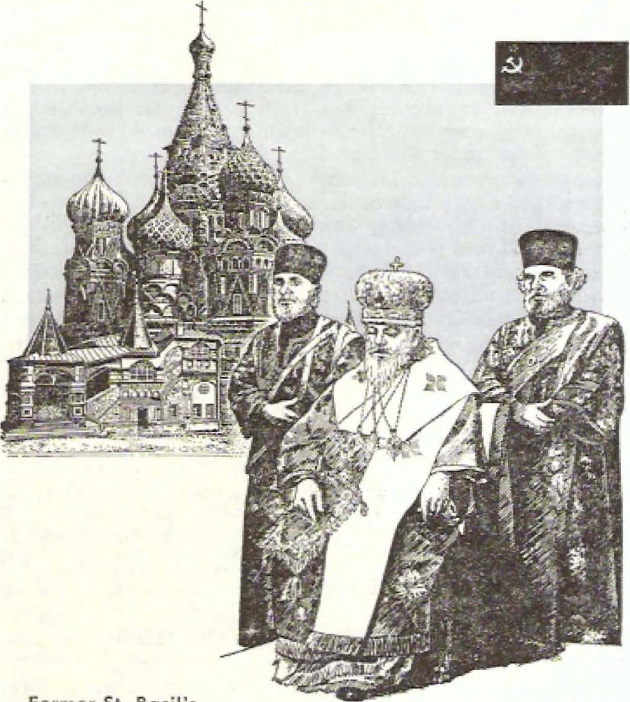rormcr or, dqsii 5
Cathedral, Moscow, Russia, and Russian Patriarch Alexis
•Ranked by two archdeacons at communion in monastery
Il was very interesting when the Russian On hodox Church accepted the invitation to send delegates lo the Second Ecumenical Vatican Council. Whereas the other Greek Orthodox Churches refused to send delegate observers, two representatives of the Russian Church in the Soviet Union arrived for the opening of the Council on October 11, 1962* It was understood that the Russian Church had not advised Patriarch Athe-nagoras of Istanbul (Constantinople) of Russian intentions. although the Patriarch of Istanbul is still rated as the spiritual leader of Eastern Orthodox religion.
In the world today there are more than a score of Eastern Orthodox Churches since the schism of 1054, and these do not acknowledge the supremacy of the Roman [x>pe nor his infallibility, which was proclaimed at the First Vatican Council in 1869-70, Why did the Russian Church send delegates to the Second Vatican Council? It was because the Vatican, with a divisive intent toward Eastern Orthodoxy, had sent its invitations, not through the Patriarch of Istanbul (Constantinople), but direct to the individual Eastern church bodies: and, to this effect, Archbishop lakovos, the Greek Orthodox primate in America, said, as reported by the New York Times.'
“Only with the Church of Moscow did the Vatican succeed in this tactic," . . . The reasons that induced the Russian Church "to suddenly change Its position and accept the invitation of Pope John XXIII are without doubt clearly of a political nature. "—The New York Times, as of November 4, 1962, top of page 26, under the heading “lakovos Scores Vatican Tactics—Asserts Council Invitations Slighted Orthodox Leader.’*
In the course of the Second Vatican Council a decree was drafted on church unity. The document dealt only with the Eastern Orthodox Churches and ignored Protestantism. To quote the New York Times, a number of Council speakers on the decree pointed out that
the problem of union must ho viewed in relation to the issues confronting a divided Christianity in the 20th century and not wholly in the light of theological tomes of past centuries. They clearly alluded to the rise of Communism, the twin threats of materialism and seen-
F
larism, and the growth of non-Christian religions. New York Times, as of December 1, 1962, under the heading “Prelates End Discussion On Unity with Orthodox."
In the year 1910, seven years before the Bolshevik revolution, there were 73,000,000 members of the Russian Church in the land. Now 77k? Ameri cana Annut page 692b, says, under “Religion”:
. . • According to Soviet officials, the Russian Orthodox Church has 50 million adherents; the Muslim sect, 26 million (23 million Sunnites and 3 million Shi'ites); the Hebrew faith, 2,300,000; and the Baptist Church, 500,000. Other religious groups with large congregations are the Roman Catholic, Lutheran, Armenian, Gregorian, and Buddhist. In 19C2, as before, the Soviet press complained that religion was still a strong force in Soviet life, and urged an intensification of antireligious propaganda. During 1962 more than 20 Pv'iteeostal ministers and at irasr seven mi.-Jstcvs of Jr-i-.- .x.< -• \V?nef-scs v. r rr- imprisoned for illegal religious activities, . . .
No doubt the Vatican resents the suggestion that Moscow should become a “Third Rome,” especially when Catholic Italy has the largest Communist party in Western Eui’ope outside the Iron Curtain,*
uh; protest ant rebellion*
From the above paragraphs the reader can appreciate that the so-called Protestants were not the first ones to protest against the Roman Catholic claim to religious supi’emacy for its pope and to rebel against it. The Pro testant movement first took form in the sixteenth century. The fire of the Protestant religious movement was lighted on October 31, 1517. Then Martin Luther, a Roman Catholic priest, in protest at the sale of indulgences pertaining to sin, nailed his list in
• Significance Ls attached. to the Tact that, ; • ■ •■nxilng to an Associate I Press dispatch dated Vatican City, March 7, 1963, Pope John XXIII unexpectedly summoned Aleksei Adzhubei, the son-in-law of Russian Premier Nikita Khrushchev, to a private audience that day. and the two chatted for eighteen minutes Ln the pope’s library, Adzhub*! i; editor of the Communist newspaper /-cves/iti, The American me Time, as of March 15, 1963, said under the heading “Pope Meets Communist” on pajre 53: “For the first time in history, a Pope of the Roman Catholic Church . . , received a ranking Soviet leader,” and Lt spoke of a ’’warming relationship between Romo and Mww.”
Latin of 95 theses against them, on the door of the Castle church at Wittenberg, Germany. The following year he defended himself at Augsburg. He referred to Rome as the new Babylon, saying: 4'Let us forsake her then to become a dwelling place of dragons, evil spirits, goblins, and witches, and her name as eternal confusion/'28 Because he refused to recant, he was excommunicated from the Roman Catholic Church by Pope Leo X, and Luther defiantly burned the bull of excommunication in public on December 10, 1520.
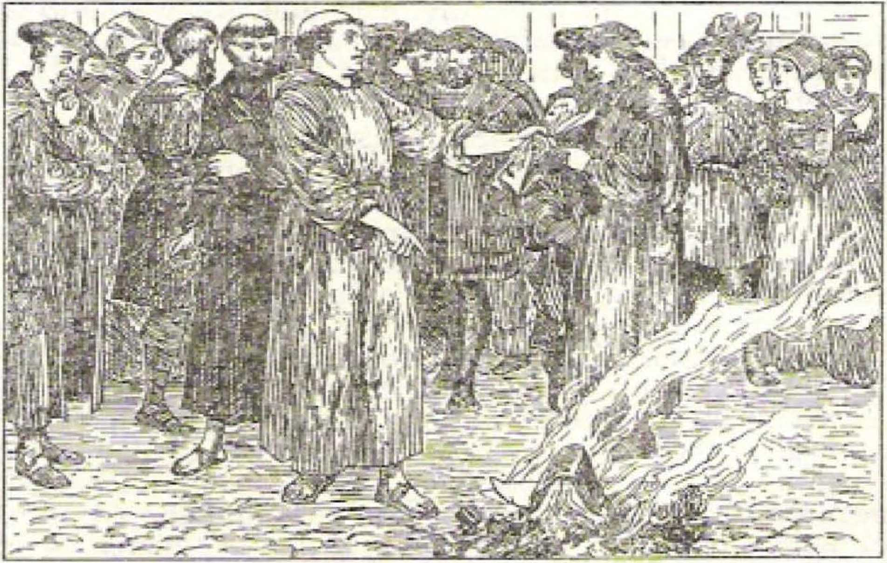Luther burning Papa! Bull, Dec. 10, 1520
Religious disputes of a disturbing kind were now raging. Then Charles V, emperor of the Holy Roman Empire, called an imperial diet at Spires in 1529, to ask for aid from the German princes against the aggressive Turks and to devise means to allay the religious disputes that had resulted from Luther’s opposition to the Roman Catholic clergy. The diet issued a decree to support the doctrines of the Church of Rome, But on April 19, 1529, six princes who supported Luther, together with the deputies of thirteen Imperial towns, protested formally and solemnly against the diet’s decree. For this, the term Protestant was given to the followers of Luther, but later its scope was widened out to include Calvinists and other religious sects that rebelled against the pope of Rome. The Pi-ot-estant League of Schmalkald was entered into on December 31, 1530.* r
Luther did not long occupy the center of the stage of the “Reformation" with the spotlight fixed solely on him. Protestant religious reformation rivals arose. From 1531 onward it was a problem for him and his follower’s to hold back the advancing hosts of Protestant rivals. At this time King Henry VIII of England broke with the pope of Rome. lie imposed on the religious clergy of the land his royal supremacy, making himself head of a national church, the Church of England. In 1534 he was styled “Head of the Church/’ and the authority of the pope of Rome was abolished in England. In the following century North America began to be colonized by the British, and the Church of England was extended there. Other religious sects were transplanted to the American colonies; and after the American Revolution 1775-1783 the Protestant Episcopal Church of America was established as a break from the Church of England. As the American nation grew and spread from coast to coast, its separation of Church and State by the national Constitution resulted in its land’s becoming the home of more
* £cc lottery ojf f/ir tiy Von Ranke, Ntw
York edlUon Of 1905, See Tfte GoMeit as of 393T.,
pages 2DB-2OS.
than two hundred religious sects, all of which professed to be Christian.
Christendom as a whole became rent apart with religious sects, Roman Catholic, Eastern Orthodox and Protestant. In South Africa 1,400 religious sects have grown up among the Bantu people since 1910, when Christendom’s missionaries poured in, according to an Associated Press dispatch from Johannesburg, South Africa, published August 22, 1957. Today tile religious situation in Christendom is a mockery of the Christian unity that Christ taught his disciples.
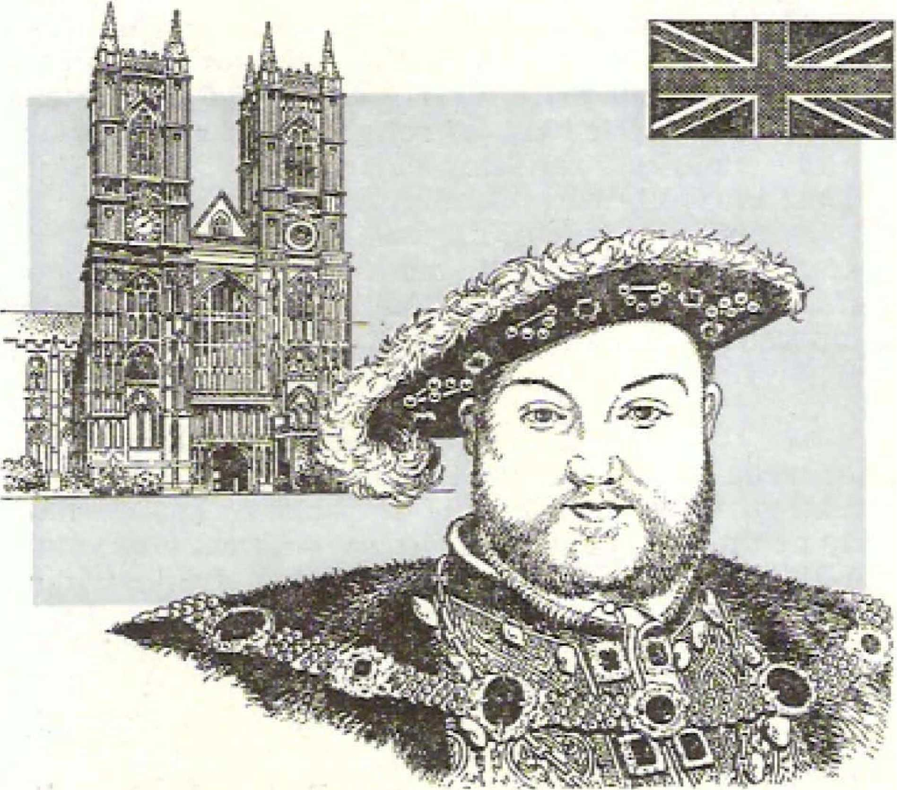Westminster Abbey, London, and bust of King Henry Vili
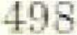The Reformation movement of the sixteenth century led to shameful religious persecution by both Protestants and Catholics, and to frightful religious wax's. Such war's and persecution were the L "works of the flesh” rather than the fruitage of God*s spirit, as described in Galatians 5:19-23 (AV). Also, as we examine the teachings of those Protestant Reformers, we awake to the fact that, instead of being a thoroughgoing “reformation.” it was really a revolt against the autocracy, the religious domination by the pope of Rome. The basic religious doctrines of the Roman Catholic Church as wclf as of the Eastern Orthodox Churches remained, such as the “Trinity,” immortality of the human soul, punishment of wicked souls after death in an invisible spirit realm; the division of the religious worshipers into a professional priesthood or clergy and the profane masses or laity; the use of religion in the support of worldly politics, resulting in many Church-State unions; the celebrating of religious holidays with pagan background; the lack of respect for blood of man and beast, as exemplified in the man who founded Babylon and built the first empire, “Nimrod a mighty hunter in opposition to Jehovah?’—Genesis 10:8-12; 9:1-6.
IDENTIFIED
What, then, is the Babylon the Great whose fall is announced by God’s angel in Revelation 14:8? It must resemble ancient Babylon in outstanding ways, particularly at the time of its fall. Otherwise, the name would not fit. First of all, ancient Babylon dominated an empire, the greatest empire up till that time, so that it was the Third World Power in the line of World Bowel's. In it, politics, militarism, commercialism and religion flourished, but religion predominated, especially during the dynasty of Nebuchadnezzar. Its religion set it in opposition to Zion or Jerusalem, where the Jewish king sat on “Jehovah's throne” and where the temple built by King Solomon was the national center of Jehovah’s worship.
In harmony with the foregoing facts, modern Babylon the Great must be a religious world-empire or world power, entirely impregnated with Babylonian religion. It is a religious empire,* the fundamental religious doctrines of which are based on the religion of ancient Babylon or Babel. Though being a regions empire, it became commercial and political in itself and also formed alliances with the political and commercial elements of this Gentile world.
It. is true that Webster’s New International Dictionary, Second Edition, Unabridged, of 1943, page 198a, gives “Roman Catholic” as an obsolete meaning of the word Babylonian. But Babylon the Great is something bigger than pagan Rome, or Papal Rome, or the Roman Catholic Church with headquarters at Vatican City. Whether it takes in the Roman Catholic Church with her Pontifex Maximus the reader can determine front what has been said above. It is not Christendom. It is the entire world empire of religion, which includes all religions that have as their real base the religious teachings and practices of ancient Babylon. Hence it includes Christendom, which is the most outstanding and aggressive part of Babylon the Great today and in which Roman Catholicism takes the lead. Since this world empire of religion resis on Babylonianism, it is, like Nimrod, “in opposition to Jehovah.”
Even Judaism has attached itself to Babylon the Great. In the first century Jesus and his twelve apostles applied to the traditional Judaism of their day the Bible prophecies that apply to Babylon as a place of exile and captivity out of which Jehovah’s people were
• '(Aa extended territory usually comprising a group ©f miUon$, states, or peoples under the control or domination of a single sov-ereijrn power."- Webster's Third A‘rw jOtctrOMorjf, 1961
Edition, page 743a.
So an empire is bigger than a kingdom or a nation.
called to come. Nineteen centuries ago, when the Messiah came to Zion, traditional Judaism turned practically the entire nation against him. It thus kept its hold on its Jewish captives. To this day traditional Judaism has not changed. It still holds its Jewish captives away from the freedom that Messiah promised. It cooperates with the Babylonish world empire of religion.
In Babylon the Great one religious sect may try to gain the powerful position of domination over the whole realm of religion.
Historically, this modern Babylon the Great had a fall in the year 1919. The Babylonish world empire of religion still exists, but that fact docs not disprove its fall in that year. We must remember that, after ancient Babylon’s surprise fall to the Medes and Persians in 539 B.C., the city kept standing for centuries till finally it disappeared, to fulfill Bible prophecy. Likewise, modern Babylon the Great suffers a significant fall, following which there must come certain religious developments before she is totally destroyed at the end of this old world or system of things. Long ago Revelation, the last book of the Bible, portrayed what would follow Great Babylon’s fall before she is destroyed.
A.D. 1914 Babylon the Great, or the world empire of Babylonish religion, approached her most critical period in world history. Up till then she had, as God’s angel said, “made all the nations drink of the passion-arousing wine of her fornication!” (Revelation 14:8) She had made friendship with the political rulers of this world and thus had committed spiritual fornication with them. (James 4:4) She had used her religious influence upon the worldly rulers in order to keep her own self in power. She had swung the support of her religionists in favor of the Gentile world rulers. In this way she had made the nations drink a “passionarousing wine,” namely, political, commercial, economic oppression, religious persecution, holy wars,
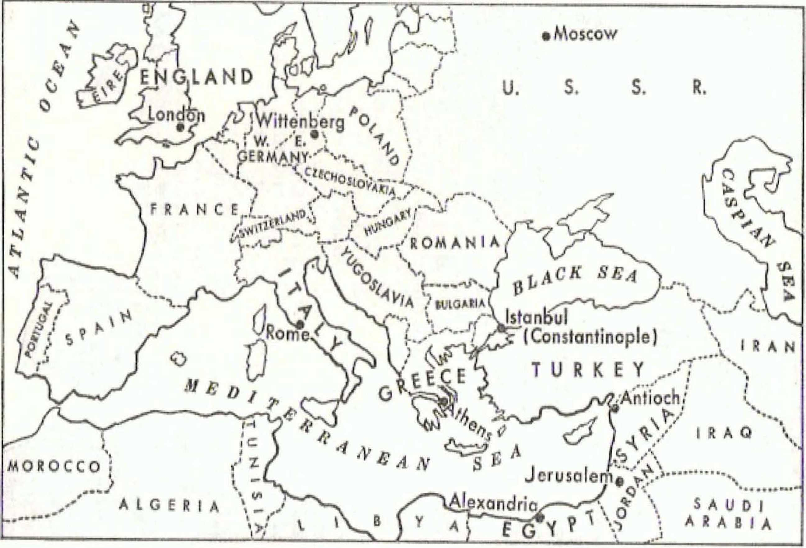Moscow
Lond
MOROCCO
Jerusalem xandrioz—
Istanbul
sT (Constantinople)
TURKEY > /vZrAntioch
Witten berg ,; w. ,z’e, •'? GERMANY-'' '•'V 1
*K OslOy
EUROPEAN AND NEAR EASTERN CENTERS OF CHRISTENDOM'S RELIGIONS
religious wars, crusades, together with the wars of the nations for purely political and commercial reasons. Such selfish wars Babylon the Great sanctified by declaring them to be God’s will, so that to take part in them would be the doing of His will.
In 1914 the seven times of the Gentiles ended, and the question was, Would Babylon the Great continue to make the nations drink this potion that made the nations drunk with trouble and desperation, or would she use her religious power and influence to prevent the violent, oppressive course of the nations? Christendom professed to be, not part of Babylon the Great, but God’s visible organization, spiritual Zion, In harmony with her profession, would she bring the nations into peaceful harmony with God’s kingdom, which was due to be born in the heavens in 1914 at the end of the Gentile Times? (Revelation 12:1-12) Would Christendom recognize as King the “Lamb of God,” when he stood up on heavenly Mount Zion ?
To these questions history gives as its answer World War L In the very heart of Christendom it broke out in the summer of 1914. It continued into the fall of 191 <8. At that time Christendom dominated the world empire of Babylonish religion, and its four great sections were all on the world stage, namely, the Roman Catholic Church, the Greek Orthodox Church, the Russian Orthodox Church, and the Protestant Church system. Of the twenty-seven empires and nations involved in that war, only Japan, China, Siam and Turkey were no part of Christendom, but their religious systems were part of Babylon the Great. The churches, instead of using their mighty power over hundreds of millions in Christendom to prevent it, joined in the war, although it. put their church members on opposite sides in the world conflict. They persecuted Christians who did not join them in the killing.
Those who came under the heaviest persecution by Christendom were the dedicated, baptized Christians
who were putting out the literature published by the Watch Tower Bible & Tract Society. On July 17, 1917, this Society published and put into their hands the book entitled “The Finished Mystery,” which gave an explanation of the eniirc book of Revelation (Apocalypse). On Sunday, December .30, 1917, there was a general distribution of the large, four-page tract, Bible Students Monthly No. 99, with the feature article “The Fall of Babylon,” with quotations from The Finished Mystery. Within two months from then that book and the Bible Students Monthly were banned in Canada. Shortly afterward the banning of these in the United States followed. Then came the arrest and trial of the president of the Watch Tower Society and seven others of the office personnel of the Society. On June 21,1918, they were sentenced each to eighty years’ imprisonment in a Federal penitentiary1. The persecution of the Christian Bible Students outside of the prisons became intense in Canada and America, egged on by the religious clergy.
The months wore on until November 1 1, 1918, when an armistice brought World War I to an end, with Christendom in particular bleeding from terrible wounds, suffering also from earthquakes, pestilences and famines, with also a shameful record of religious pci’sccution. All this was tangible proof that the Genl ile Times had ended in 1914 and that God’s kingdom had been born in the heavens and His Messianic King, the Lamb of God, Jesus Christ, had stood up in power on the heavenly Mount Zion, to bo joined t here soon by his 14,000 faithful followers.—Matthew 24:7-13; Revelation 12:5-10.
The outcome of World War I showed that it had not been fought in behalf of God’s kingdom, even though the nations of Christendom had been the principal fighters. Rather, the war had been over world domination by one part of Christendom ovei' the other part. The war left the Anglo-American World Power still dominating the earth as the Seventh World Power that was foretold in the Bible, At the same time Christian Bible Students, who had been proclaiming Jehovah’s judgments against Babylon the Great, found themselves in a captive condition under her power, and with their worldwide organization broken up. Just as ancient Babylon came under the judgment of Jehovah while his nation of witnesses were exiles in Babylonia, so modern Babylon the Great came under divine judgment for opposing the heavenly Zion and for persecuting Jehovah’s Christian witnesses and holding them captive and suppressed by means of the political State.
"SUE HAS FAIXEX**
Like ancient Babylon, which never opened the prison doors to let Jehovah's witnesses out, modern Babylon the Great thought to keep the modern Christian witnesses of Jehovah suppressed and in captivity forever. But in March of 1919 the prison doors were forced open to Jehovah’s witnesses, and out they came and stayed out.
Their worldwide organization was repaired and international contacts were reestablished. On September 1, 1919, an international assembly of them was held in Cedar Point, Ohio, to continue for eight days. On September 5 the Watch Tower Society’s president, with nine months of imprisonment behind him, addressed the thousands at this assembly on the subject. ‘“Announcing the Kingdom.” In this address President J. F. Rutherford quoted and made a modern application of the prophecy of Isaiah 52:7 (AV): “How beautiful upon the mountains are the feet of him that bringeth good tidings, that publisheth peace; that brjngeth good tidings of good, that publisheth salvation; that saith unto Zion, Thy God reigneth I” On Sunday, September 7, he addressed a public audience of 7,000 on the subject, “The Hope for Distressed Humanity/’ and spoke in favor of God’s kingdom as against a human substitute, the then-proposed League of Nations.*
Jehovah’s witnesses were again free, boldly proclaiming God’s kingdom publicly! What had happened? It must have been that Babylon the Great had fallen! This, although she had not yet been destroyed. The Lamb of God on the heavenly Mount Zion had played his role as the Liberator greater than Cyrus but as foreshadowed by Cyrus. Ue had defeated Babylon the Great and had caused her fall and had liberated his faithful followers, the modern-day remnant of Christian witnesses of Jehovah. Just as after the fall of ancient Babylon and the release of Jehovah’s people it could be announced to Zion, '"Thy God rcigneth!’’ so the establishment of God's heavenly kingdom at the end of the Gentile Times in 1914 portended that Babylon the Great was soon to fall. Condemned by her misconduct since the end of the Gentile Times in 1914, she stood condemned before the heavenly tribunal of Jehovah God. His judgment was rendered against her, and she fell in the spring of (lie year 1919. —Revelation 14:7, 8,
I II
* See TJte WotcA Tower, as of September 15, 1919. pnS»-S- 279-2 -1 ; and as nf October 1. 1919. pages 293, 29fL
c H
P T E R
22
IGHTEEN hundred years beforehand, I he
apostle John heard an angel prophet ically announce the fall of Babylon the Great. After that he saw another angel with a message, He says:
“And another angel, a third, followed them, saying in a loud voice: ‘If anyone worships the wild, beast and its image, and receives a mark on his forehead or upon his hand, he will also drink of the wine of the anger of God that is poured out undiluted into the cup of his wrath, and he shall be tormented with fire and sulphur in the sight of the holy angels and in the sight of the Lamb. And the smoke of their torment ascends forever and ever, and day and night they have no rest, those who worship the wild beast and its imago, and whoever receives the mark of its name. Here is where it means endurance for the holy ones, those who observe the commandments of God and the faith of Jesus.’ ” —Revelation 14:9-12.
As the Revelation to John was presented in signs, the wild beast, which is described in Revelation 13:1-8, is not a literal beast but is a sign or symboL It symbolizes something to which the Dragon, Satan the Devil, gives power and a throne and great authority. Hence, in harmony with the meaning of the wild beasts described in Daniel, chapter seven, this wild beast that is thus favored by the Great Dragon must symbolize Satan the Devil’s visible earthly political organization in its continuing form under varying successive headships throughout the centuries until now, when the Re vela-
tion to John is being fulfilled. Its seven heads bearing ten horns with diadems upon them picture the seven world powers that have waged war on God’s holy ones, Jehovah's witnesses, during the four thousand years since Nimrod the mightv hunter founded ancient Bab-ylon* In their historical order, as supported by the Bible account, these seven symbolic heads of the wild beast arc (1) Egypt, (2) Assyria, (3) Babylon, (4) Mcdo-Persia, (5) Greece (Macedonia), (6) Rome, and (7) the joint Anglo-American World Power.
Although blasphemous names appear on the seven heads, the wild beast as a whole has a name. No, its name is not “Babylon the Great, the mother of the harlots,” which is that world empire of Babylonish religion. John says that its name has a number. “It is a man’s number; and its number is six hundred and sixty-six.” (Revelation 13:17, 18; 17:5) In the Greek manuscript that John wrote, this number 666 may have been represented by the Greek three letters: Khi (X=six hundred) Xi (E sixty) and Digamma (s-six).
The number of the wild beast’s name is thus seen to be made up of the number six in three stages. The only other place in Revelation where the number six (A) occurs is where it describes the four living creatures before God’s throne as having six wings, that is, three pairs, in which case a seventh wing would be an irregularity. (Revelation 4:8) However, the Revelation abounds with fifty-two occurrences of the number seven, using it as a symbol of perfection. The number six comes short of seven by one, just as six day's would come one day short of a week. Since a “man’s number” is here concerned, six stands for fallen man’s imperfections and shortcomings.
If we multiply that six by the number of the wild beast’s horns, it multiplies that imperfection and deficiency tenfold. And if wc square the ten (10 x 10= 100) and multiply’' the six by that much, it multiplies the imperfection and deficiency a hundredfold. In the Bible three is a number representing emphasis, as when

Tilt symbolic wild beast ascending ai.it of the sea
we say a thing three times successively. (Ezekiel 21: 27) So, if we raise six to the third degree in the wild beast’s name (64-604-600), it emphasizes the imperfection and deficiency of the human politwaZ organization, which is symbolized by the wild beast under Satan’s control.
A name stands for an individual or a creature: and here the name means the wild beast. If, now, we add r Jr
up the numerical values o! the letters in the name, they add up to nothing but human imperfection and deficiency- Never is perfection attained, even in this scientific space age. So this numerical name of the wild beast simply spells human imperfection and shortcomings, multiplied to the third or final degree. For this reason human politics has brought increasing disappointment to the peoples of all nations.
The effort of the imperfect human political rulers is to get all their subjects to worship them or worship the political state. Just as Babylonish religionists think that they must worship God through some image or idol, the political rulers and statesmen of this world feel that the “wild beast” of poZiticoZ rulership must be worshiped by means of an “image.” In their worship of the Devil’s visible political system they now feel it necessary to use an image in order to preserve the existence of the symbolic “wild beast.”
What, then, is the image of the wild beast? Between World War I and World Wai' II it was the League of Nations, which at one time had as many as sixty member nations, as the worship of the image and of the wild beast was then so great. The League is now dead, and since World War II the “image” has been the United Nations, composed, at this writing, of 111 member nations. Since it is an image of the “wild beast” with the name-number 666, it is tin image of human political imperfection and failure. It cannot succeed.
The making of the image was in direct disobedience to the outcry of the first angel with the everlasting good news: “Fear God and give him glory, because the hour of the judgment by him has arrived, and so worship the One who made the heaven and the earth.” (Revelation 14:6, 7) Worshiping an image turns man’s worship and attention away from Jehovah God and his Messianic kingdom. The worshipers of the political state and of the League of Nations deserved punishment at the hands of God the Judge. In order to identify them, they received a mark upon the forehead and upon the hand. How? By mentally consenting to and approving of such imperfect political institutions and by lending a hand to thorn through giving active cooperation. They are clearly marked as being in opposition to Jehovah’s kingdom by his Messiah.
Babylon the Great worships the wild beast and its image and thus has received the mark in forehead and hand. The fact is, the most aggressive member in Great Babylon, namely, Christendom, heartily backed up the formation of the League of Nations, as proposed by the Anglo-American World Power in 1918. In January of 1919 the National Council of Churches of Christ in America termed the proposed League of Nations “the political expression of the kingdom of God on earth/* Therefore Babylon the Great deserved to be made to “drink of the wine of the anger of God that is poured out undiluted into the cup of his wrath/’ The beginning of her drinking this undiluted wine of God's anger was when Great Babylon fell in 1919. Her fall was marked by the liberation of Jehovah’s witnesses in that year, an event that chagrined and tormented her very much.
Though now fallen according to the judgment of Jehovah God, Great Babylon still exists by his permission. So her drinking of the cup to the very dregs will not be finished till ho, by means of his Greater Cyrus, Jesus Christ, destroys her at the end of this world or system of things. In all this interim, while she still exists in her fallen state, she undergoes torment, and the smoke of her torment keeps ascending, in the sight of the holy angels and the Lamb of God. The world empire of Babylonish religion is not immortal; and so her torment could not go on directly for all time.
Those who arc in he ted with her religion and who worship the symbolic wild beast and its inc'.c arc not immortal, as Babylonish religion teaches; neither is their flesh immortal. Tormenting them with literal fire and sulphur (brimstone) would kill them or hasten their death. But before they are plunged into the “lake” of everlasting destruction, they are tormented with the message that tells of the everlasting destruction awaiting them. This is Jehovah’s judgment mes age, which is proclaimed by His witnesses. Little wonder, then, why the worldly religious systems and also the political worshipers of the wild beast and its image desire and try to suppress and destroy Jehovah’s witnesses by government decree and persecution. The tormenting destruction of all worshipers of the wild beast and its image will come at the end of this system of things, and that destruction as by fire and sulphur will be forever and ever, rhe evidence of it will ascend for all time.
From 1919 onward the witnesses of Jehovah have refused to join in this international worship of the political state and the League of Nations and its successor the United Nations. Instead, they have observed the “commandments oi God and the faith of Jesus.” (Matthew 4:8-11.) Slicking to this course of exclusive worship and devotion to Jehovah God through Jesus Christ has meant “endurance for the holy ones/’ for the remnant on earth of the anointed 144,000. To this day they have refused to imitate the world and to bow, despite all the persecution by Church and State that this has meant for them. Persecuted they may be, but they do not drink of God’s cup of wrath or suffer torment by the destructive fire and sulphur.
“CHANGED, IN A MOMENT”
Some of the anointed remnant suffer death at the hands of the idolatrous worshipers for observing God’s commandments and the faith of the Lord Jesus. Yet they have nothing to fear for the future. (Matthew 10: 28; Luke 12:4, 5) They know that their death is not everlasting, but that there will be heavenly resurrection for them. Giving them consolation of this kind, the apostle John ays, right after he tells how the remnant of “holy ones” today need endurance: “And I heard a voice out of heavt?n say: ’Write: Happy are the dead who die in union with the Ixjrd from this time onward. Yes, says the spirit, let them rest from their labors,
for the things they did go right with them.' ”—Revelation 14:13.
If faithful, these anointed holy ones "die in union with the Lord/' because they “become united with him in the likeness of his death" that they may "be united with him in the likeness of his resurrection/’ They are, as it were, “buried with him through oui' baptism into his death,” (Romans 6:3-6) Dying is never pleasant; but these holy ones who die faithful since the beginning of this judgment are pronounced “happy.” Why is that? It is because they do not sleep in death awaiting the coming of the Lord Jesus in his Kingdom glory. (Matthew 25:31) Since 19.14 this Lamb of God stands with ruling power upon the heavenly Mount Zion. He has come into his kingdom. When he died nineteen centuries ago, he himself slept in the death state for parts of three days. (1 Corinthians 15:20) But as regards the remnant of the 144,000, they do not sleep in death to await the coming of Jesus Christ as King and the beginning of the judgment that results in Babylon’s fall. When that judgment starts, as it did in 1918, the Lamb of God is already in his kingdom on the heavenly Mount Zion. So after 19IS they need not sleep in deatli.
What does that mean for them? This, that immediately after they die, they are resurrected. Since they are to be "united with him in the likeness of his resurrection,” they die or arc put to death in the flesh, but arc "made alive in the spirit,” (1 Peter 3:18) Thus they have a spiritual, heavenly resurrection, that is unseen to human eyes. So, in their resurrection, they arc changed instantly after dying in the flesh. It is as the apostle Paul foretold it, saying: “Look! I tell you a sacred seci’et: We shall not all fall asleep in death, but we shall all be changed, in a moment, in the twinkling of an eye, during the last trumpet, For the trumpet will soundr and the dead will be raised up incorruptible, and we shall be changed. For this which is corruptible must put on incorruption, and this which is mortal must put on immortality. But when this which is corruptible puts on incorruption and this which is mortal puts on immortality, then the saying will take place that is written: ‘Death is swallowed up forever.’ ’*—1 Corinthians lo: <jl—a4.
Thus, as God’s spirit of prophecy said that they would do, they rest from their earthly labors, and the credit for the things that they did in the flesh goes right with them. They continue directly on in the works of Kingdom service, but now in the invisible heavens, for they take their place with the Lamb of God on heavenly Mount Zion. What a happiness this means for them! These dying in the Lord from the time of the judgment onward are instantaneously introduced into this everlasting heavenly happiness.
HARVESTING, THRESHING, TREADING
That this occurs at the time of judgment is further proved by the fact that the telling about such happiness is at once followed by pictures of divine judgment upon worldly earthly organizations. John proceeds to describe these signs by saying: ‘'And I saw, and, look! a white cloud, and upon the cloud someone seated like a son of man, with a golden crown on his head and a sharp sickle in his hand.”—Revelation 14:14.
Since the clouds form and float in the heavens, the location of this scene is in the invisible heavens. Jesus, when on our earth, spoke of himself as the Son of man; and since the one 'dike a son of man” has a golden crown on his head, this one pictures the Lord Jesus Christ after his enthronement on heavenly Mount Zion when the Gentile Times ended in 19*14.—Daniel 7:13, 14; Matthew 25:31.
The prophetic picture in Revelation 14:14 harmonizes with that in Revelation 1:7; but, rather than indicate the crowned King’s coming visibly to human eyes, it denotes his coming invisibly, for the apostle John saw this only by the spirit of inspiration and not by his natural eyes. When the resurrected Jesus ascended to heaven nineteen centuries ago, a cloud received him out of the sight of John and his fellow apostles, so that they saw him no more because of the cloud. Likewise here, the fact that he is pictured as seated on a white cloud indicates that he is invisible to natural human eyes dial hr coen-s invisih'y, because iwv he is a glorious spirit person. (Acts 1:9) Inasmuch as from 1914 onward the earth has been made subject to him, he has the right to cut down any growth in it.
Hence within his kingly right he comes, as it were, with a “sharp sickle in his hand” to do a reaping work.
“And another angel emerged from the temple sant tuary, crying with a loud voice to the one seated on the cloud: ‘Put your sickle in and reap, because the hour has come to reap, for the harvest of the earth is thoroughly ripe/And the one seated on the cloud thrust in his sickle on the earth, and the earth was reaped.” (Revelation 14:15,16) It was very fitting that an angel should notify the King that the harvest was ripe and the time to reap was at hand, for Jesus, when interpreting the parable of the wheat and the weeds, said: “The reapers are angels.” But the reaping is done under the King’s supervision, and that is why he is pictured as having the sickle in his hand and as thrusting it in among the grain on the earth. The angel’s announcement that it was harvest time locates the time for fulfilling this harvest vision, as Jesus said:
“The harvest is a conclusion of a system of things, and the reapers are angels. Therefore, just as the weeds are collected arid burned with fire, so it will be in the conclusion of the system of things. The Son of man will send forth his angels, and they will collect out from his kingdom all things that cause stumbling and persons who are doing lawlessness, and they’ will pitch them into the fiery furnace. There is where their weeping and the gnashing of their teeth will be. At That time the righteous ones will shine as brightly as r he sun in the kingdom.”—Matthew 13:39-43.
The conclusion of this system of things began in 1914, after the Gentile Times or “the appointed times of the nations” ended. (Luke 21:24) So the symbolic harvest on earth would begin after that under the newly crowned King's supervision. According to Jesus’ parable the harvesting requires or includes a separating work, the separating of the sons of the wicked one, the Devil, from the sons or heirs of the heavenly kingdom. Up till Hie beginning of 5his harvest the wicked Devil had sown many weedlike sons of his among the professed Christians, so that this resulted in a false presentation of what true Christianity was and is. His weedlike sons were modern Babylonians, those who worshiped according to the world empire of Babylonish religion. The time of the separating of these Babylonish religionists, including the imitation Christians, would be from 1919 onward, the year when Babylon the Great fell and was condemned to eternal destruction by God’s tribunal.
The historical facts show that 1919 was the year when the remnant on earth of the 144,000 Kingdom heirs began to be freed from Great Babylon. In that year the message of God’s established kingdom began to be preached from house to house and publicly by Jehovah’s Christian witnesses in a fearless way. This preaching of the Kingdom as established in 1914 was in fulfillment of Jesus’ prophecy in Matthew 24:14: “This good news of the kingdom will be preached in all the inhabited earth for a witness to all the nations.”
As this Kingdom preaching and Bible instruction continued, more and more of the “sons of the kingdom” were separated and freed from Babylon the Great and from the rest of the Devil’s visible organization. The number of these increased, as was disclosed by reports on the annual celebration of the Lord's evening meal on Nisan 14, until between 1931 and 1935. Then the annual celebration of the Lord’s evening meal showed i steadily decreasing number of “sons of the kingdom” who
partook of the unleavened bread and rod wine at the Lord's supper. This indicated that the harvest of them had practically ceased and that numbers of them were faithfully finishing their earthly Christian career as Jehovah's witnesses and were “dying in union with the Lord” and entering into the happiness foretold in Revelation 14:13. Thus as more were dying than were being delivered from Great Babylon, this steadily reduced the number of the anointed remnant of Kingdom Li F heirs from year to year. The harvesting of these “sons of the kingdom’* has been closing down.
In 1931 the anointed remnant embraced the Scriptural name “Jehovah’s witnesses.” In that same year a related work was brought to view, a marking work. This work took on more momentum in 1935, in which year it was disclosed to Jehovah’s anointed remnant that the “great crowd” described by the apostle John in Revelation 7:9-17 were an earthly class of Godfearing people who would be deliver•-1 from modern Babylon the Great. These the anointed remnant of Kingdom heirs figuratively marked in their foreheads to identify them as being worshipers of Jehovah and subjects of his reigning King Jesus Christ. (Ezekiel 9:3, 4) These were the “other sheep” of the Shepherd-King Jesus Christ, whom he foretold in John 10:16.
As these “other sheep” associated themselves with the remnant, they also embraced the name Jehovah’s witnesses. Thus as the harvest of the remnant of the
“sons of the kingdom” closes down, the ingathering of the “other sheep” increases by the hundreds of thousands. This accounts for it that the report of the celebration of the Lord’s evening meal worldwide on Monday night, April 8, 1963, shows that the remnant partaking of the bread and wine had decreased to 12,292,* whereas the total number of sheeplike people preaching the Kingdom good news during April had increased to 1,028,986.—Matthew 25:31-40.
• The Brand total of r"rsons attending’ the celebration of the Lord’s evening meitl was 1.4523,73(2,
The facts prove that the invisible Son of man, crowned and seated on the symbolic white cloud, has thrust into the earth his sharp sickle for separating work. Soon the earth will be reaped of all the “sons of the kingdom/’ the anointed Kingdom heirs. As the harvesting or reaping of these reaches its climax, and as preaching of the good news of the Kingdom publicly and from house to house increases and intensifies, the deliver ing of more of the “other sheep** from Babylon the Great goes on. These “other sheep” rejoice in the hope that their Shepherd-King will safely lead them through the destructive end of this system of things and on into the new order of tilings with its “new heavens and a new earth?’ (2 Peter 3:13) There they will gain eternal life on a paradise earth. Tn ancient times they were foreshadowed by the non-Jewish Nethinini and men slaves and girl slaves and male and female singers and the “sons of the servants of Solomon” who accompanied the Jewish remnant that left Babylon and returned to the Promised Land in 537 B.C. after Cyrus published his decree of release.—Ezra 1:1-6; 2:43-58, 64-70.
All faithful Christian witnesses of Jehovah will escape what comes upon the religionists who remain with Great Babylon. A preview of what will come on such is given us after the apostle John describes the symbolic reaping of the earth. He shares this preview' with us, saying: “And still another angel [the fifth one in this series] emerged from the temple sanctuary that is in heaven, he, too, having a sharp sickle/’ (Revelation 14:17) This calls to our notice the fact that the work to be done by this sickle will be done by means of holy angels under the command of the crowned King Jesus Christ. This angel class worships Jehovah as God, for it emerges “from the temple sanctuary that is in heaven.” What does it do after the “harvest of the earth” is effected? Let us watch.
And still another angel [the sixth f emerged fro:
If
the altar and he had authority over the fire. And he sharp sickle, saying: ‘Put your sharp sickle in and gather the dusters of the vine of the earth, because its grapes have become ripe.’ And the angel thrust his sickle into the earth and gathered the vine of the earth, and he hurled it into the great wine press of the anger of God, And the wine press was trodden outside the city, and blood came out of the wine press as high up as the bridles of the horses, for a distance of a thousand six hundred furlongs (two hundred miles]/'—Revelation 14:18-20.
called out with a loud voice to the one that had the
This “vine of the earth” is distinctly different from the “true vine” of which Jesus’ heavenly Father is the cultivator and which Jesus described in John 15:1-8. The true vine is Jesus Christ, and the 144,000 spiritual Israelites are branches in it. It produces much fruit, that the Cultivator Jehovah God may be glorified. So this “true vine” is the nation of spiritual Israel that produces the fruits of the kingdom of God.—MaChew 21:43.
On the contrary, the symbolic “vine of the eaiTh” produces the fruits of “all the kingdoms of the world” over which Great Babylon reigns. Besides this, Satan the Devil is the god and ruler of these worldly kingdoms and he gave them their power, thrones and great authority. (Revelation 13:1, 2; 17:1-5, 18; Matthew 4: 8,9; Luke 4:5,6; John 14:30; 16:11; 2 Corinthians 4:4) This vine is therefore the Devil’s visible system of government over mankind. Ever since it was planted by means of Nimrod the mighty hunter it has produced an abundance of fruit, not for the glorification of Jehovah God, but for making the people drunk with fear and oppression.
In this time of judgment, ever since Babylon the Great fell, this “vine of the earth” has been loaded with clusters and its grapes have become ripe. It deserves to be cut down and destroyed, and the time approaches for it to be cut down by angelic means. The sixth angel who appeared “emerged from the altar” and calls out that the time is due for cutting the vine down.
As the altar is the place where the sacrificial fire was kept burning, this angel “had authority over the fire.” He thus has authority over a destructive force. (Revelation 11:5: 20:9) Since he emerges from God’s altar, he appreciates the sacrifice of the Lamb of God and also the sacrifices of praises and of good works that the 144,000 spiritual Israelites offer to Jehovah God. So this angel pictures those angels who are “spirits for public service, sent forth to minister for those who are going to inherit salvation.” (Hebrews 1:14; 13:12-16) These ministering angels know how the kingdoms of this world have made all these heirs of heavenly salvation suffer while offering their sacrifices to Jehovah God.
The sixth angel does not use fire to destroy the “vine of the earth" but calls upon the angel with the shaip sickle* to cut it down. When the end comes upon this system of things after the good news of God’s kingdom has been preached in all the inhabited earth for a witness, the angels under the King Jesus Christ will thrust the symbolic sickle to the base of this huge vine and cut it down. Jehovah’s witnesses today on earth will not cut this ungodly vine down. However, they, like the apostle John, do publish advance notice to all the world that the vine will soon be cut down.
Because of its fruitage throughout the centuries and especially since the Gentile Times ended in 1914, this “vine of the earth" has come under the wrath of Jehovah God. For this reason, after it is cut down, it is not just left neglected on the earth to wither. Rather, the King’s angelic forces hurl it “into the great wine ■ ■ ■ ■
press of the anger of God.” The purpose of a winepress is to crush the grape clusters dumped into it. This symbol :c winepress must be tremendous, for it must accommodate all the nations and kingdoms of this world. It is bigger than the valley of Jehoshaphat outside of Jerusalem, where, according to the symbolic prophecy of Joel 3:9-14, all the nations that light against Jehovah God will be trodden down and annihilated. The “wine press” is deep and can accommodate the blood of the crushed grape clusters for a distance of two hundred miles. In it Jehovah’s 1 romondous war organization of his holy heavenly angels under the lead of his crowned King Jesus Christ will do the treading and vent God's anger on the “vine/*
The war between Jehovah’s heavenly organization and Satan's visible earthly governmental organization is fought outside the heavenly city of Zion, for Revelation 14:20 says that “the wine press was trodden outside the city/’ The battle is fought at the earth, for there is where the nations and kingdoms of mankind are located. The winepress evidently symbolizes the cornered condition, the trapped condition, into which Almighty God by means of his Field Marshal Jesus Christ maneuvers the earthly enemy forces where their measure of guiltiness reaches its fullness and just at the time for Jehovah’s judgment of condemnation to be executed on them. The “press” is big enough to catch all and allow escape for none.
It is at the time for God’s war, this being suggested by the fact that the treading of the vine in the press is done, not by human feet, but by horses’ hoofs; and in the Bible horses are a symbol of war. Because the vine is so big and so loaded with grape clusters, the blood of the crushed grapes comes out to “as high up as the bridles of the horses.” Rut this depth of grape blood is not too great for Jehovah’s “wine press,” but it. accommodates such a depth of blood for a distance of two hundred miles and horses can well cover that distance under direction of their riders.
Jehovah’s crowned King Jesus Christ will be right in there, joining in with his angelic armies in treading the winepress of God’s wrath against the “vine of the earth.” Ue takes the lead in destroying the Devil's visible political organization, and in this treading he acts foi' God.—Revelation 19:11-16; Isaiah 63:1-7.
The treading pictured here corresponds to the crushing of all the worldly nations and kingdoms by the rocklike kingdom of God as foretold in Daniel 2:44, 45. This betokens a time of distress and tribulation such a the nations and peoples have never known since this world began until nowr, the like of which there will never be again. (Daniel 12:1, 4; Matthew 24:21, 22) Never again will that “vine of the earth” take root and fill this old earth with fruit of the most wicked kind. Jehovah’s Messianic kingdom will ride to victory and will remain victorious, to rule undisputed over the “new earth.”
From heaven the “true vine,” planted on the celestial Mount Zion and made up of the Lamb of God and his 144,000 branches, will produce much fruit for the glory of the divine Cultivator and for the life and happiness of the obedient earthly subjects of Jehovah’s reigning King Jesus Christ.
If we are faithful in fearing God, giving him the glory and worshiping him as ihe Creator, we may be preserved to witness in actuality the treading of the symbolic winepress by God’s King, just as aged John saw it in symbolic vision. Almighty God can preserve us throughout the treading period, that we may see and rejoice at the glorious triumph of his Messianic King, Giving assurance of this, Joel’s prophecy, after telling of the treading of the nations in the “wine press,” says: “Heaven and earth certainly will rock; but Jehovah will be a refuge for his people, and a fortress for the sons of Israel. And you people will have to know that I am Jehovah your God, residing in Zion my holy mountain.” (Joel 3:16, 17) That means their surviving without dying into his new world.
c H A P T E R
23
VJOD is angry. At what? At whom? Certainly we do not desire to be among those against whom his anger is directed at present and upon whom his anger will be poured out at his chosen time. (Psalm 7:11) So now is the occasion for us to give careful attention and study to all expressions of his anger before the climax comes. We know that he has reason to be angry, and that the expressions of his anger are righteous. Rather than personally feel these outpourings of liis anger and blaspheme him because of them, we prefer to be in harmony with his outpourings, in support of them, because they arc poured out upon the ones who merit them. Revelation, chapter fifteen, reveals that there will be persons who will praise God for righteously expressing his anger in his lime of judgment. Happy xvill we be if we can join them in praising God.
With the utmost pleasure and satisfaction the apostle John looked upon ibo next meaningful sign. Likely he saw himself included in the sign. He says: “And I saw in heaven another sign, great and wonderful, seven angels with seven plagues. These are the last ones, because by means of them the anger of God is brought to a finish.” (Revelation 15:1) Long ago the ten plagues that Moses was instrumental in bringing upon ancient Egypt were most literal; but in our time, since the fall of Babylon the Great in 1919t the seven last plagues under the control of the seven angels prove to be symbolical. They bespeak the anger of God, and are evidently revelations from God’s Word. Yet Babylon the Great, among others, feels them sorely. They point out the various world conditions viewed from God's judicial standpoint. They portend whal is to result to the world from his judicial opinion as to the peoples of the world. Such revelations from God's Word must, of course, be published and declared by his remnant, pictured by John who saw this great and wonderful sign in prophetic vision. As John saw the prophetic sign, so they see the actual modern-day fulfillment of the sign.
As seven is a Bible number meaning perfection, there needs to be no more than seven of these symbolic plagues. Seven of them are enough to bring the expression of God’s anger to a finish. Angels perform their part in expressing them.
The heavenly sign that is about to be enacted at the due time is nothing unrighteous. On the occasion of starting off this sign there are faithful worshipers of God who can praise him. The apostle John calls our attention to them before the seven last plagues are poured out. As if now before God’s throne, John says:
“‘And I saw what seemed to be a glassy sea mingled with Ure, and those who come off victorious from the wild boast and from its image and from the number of its name standing by the glassy sea, having harps of God. And they are singing the song of Moses the slave of God and the song of the Lamb, saying:
“ ‘Great and wonderful are your works, Jehovah God, the Almighty. Righteous and true are your ways, Kin of eternity. Who will not really fear you, Jehovah, and glorify your name, because you alone are loyal? For all the nations will come and worship before you, because your righteous decrees have been made manifest.’ ”—Revelation 15:2-4, AW; F. Zteh'tesch; Salkinaon-G insburg (Hebrew), 1941 edition.
Who are these who have come off victorious from the Devil’s visible political organization and from the League of Nations and its successor, the United Nations, and from the imperfection, failure and oppression that the name-number of the symbolic wild beast represents? They are the remnant still on earth or the 144,000 followers of the Lamb of God, Their history to this day testifies that they have come off victorious; their foreheads and their hands are clear of any mark showing agreement, cooperation and compromise with the symbolic wild beast and its image. They give no worship to such political institutions. They are not marked with its numerical name that sums up to 666. They have heeded the warning of the third angel given in Revelation 14:9-12 and have endured all the world opposition and persecution because of their faithfully observing the commandments of God and the faith of Jesus Christ.
They have victoriously obeyed the divine commandments to keep themselves without spot from this world and to preach the good news of God’s established kingdom in all the inhabited earth for a witness. They have displayed the same kind of faith that Jesus Christ displayed when he was on earth. (James 1:27; Matthew 24:14; Mark 13:10; John 13:15-17) Since these victorious ones are described as “having harps of God" and singing, they must be included among the 144,000 singers with harps, spoken of in Revelation 14:1-3.
Their harps being “harps of God,” these have been furnished to them by God. They are the means to give pleasant-sounding accompaniment, support and harmonious background to their singing. In effect, their harps would be the written Word of God with all its teachings, its prophecies, its revelations and its history of God's wox’ks. In addition to God's Word, the remnant on earth of the 144,000 have the many printed helps for understanding and explaining the Bible, namely, bound books, booklets, tracts and magazines, produced in printeries where all the workers are fully dedicated and baptized v. i’.'if ssi-s of Jehovah. As they sing God's message to such an accompaniment, they are standing before what looks like a glassy sea. This “sea” must have resembled a tremendous basin of water, like the great basin that rested on the backs of twelve metal bulls in King Solomon’s temple, as it, too, was called a “sea.” —1 Kings 7:23-46; 2 Kings 25:16; 2 Chronicles 4:2-6, J .
The basin that John saw was made of glass, evidently clear glass, transparent glass. (Revelation 21:18, 21; Job 28:17) Thus the contents of the sealike basin could be seen through the sides. As Revelation 4:6 states that this glassy sea like crystal was before God's heavenly throne, the victorious singers with harps must be standing as in God’s presence and addressing their songs to him and letting heaven hear their singing ancl harping.
In Solomon’s temple the “sea” was tilled with water and “was for the priests to wash in it.” Since the victorious singers stand by the glassy sea, it suggests that they are spiritually of the priestly class, of the “royal priesthood” that is under the Chief Priest Jesus Christ. (1 Peter 2:9; Hebrews 3:1) As with ihe “sea” in Solomon’s temple, so the water in the “glassy sea like crystal” pictures the truth of God’s Word, for it both quenches spiritual thirst and has a cleansing effect upon the Christian's life, heart, mind and works. But as John looked through the transparent sides of the glassy sea, he could discern that its contents were mingled with fire. lie thus foresaw that the truth of God’s Word contained fiery judgments and that these judgments were to become prominent at this particular time after Great Babylon fell. The priestly remnant of the 144,000 would have to proclaim these fiery judgments.
However, what are they singing? It is said to be the “song of Moses the skive of God and the song oi the Lamb.” Moses the slave of God sang a song of praise to Jehovah after the Egyptian chariots were stopped in their pursuit of the fleeing Israelii os 1 >y drowning in the Red Sea* Forty years later, before taking his farewell of the Israelites at the borders of the Promised Land, Moses sang another song of praise to Jehovah. (Exodus 15:1-19; Deuteronomy 32:1-43) Both songs bespoke the vengeance of Jehovah God against his enemies and those of his dedicated people. Moses as prophet prefigured a still greater Jewish prophet, Jesus Christ, “the Lamb of God that takes awTay the sin of the world.” (Deuteronomy 18:15-18; Acts 3:22, 23; John 1:29) Jesus Christ was fully in agreement with Moses' songs, and here in the Revelation to John he refers to Moses’ songs. He will see to it that the prophecies in those songs are carried into fulfillment. While on earth, Jesus sang Jehovah’s praises and declared his vengeance-(Matthew 26:30; Luke 19:41-44; 21:20-22) As it is now the time for the final fulfillment of the songs of Moses and Jesus, the remnant of the 114*000 sing litem.
They sing forth for all people to hear that Jehovah is God the Almighty, and that his works of vengeance and vindication arc great and wonderful, works that only an Almighty God could perform.
Just as Moses at the Red Sea sang that Jehovah would rule as king to time indefinite, even forever, so they sing of Jehovah as “King of eternity,” whose ways arc righteous and true even when he deals with his enemies. They make known his name, Jehovah, and glorify it themselves. They ask who there is that will not fear this God and glorify Iris name* Why? Because he is a loyal God, and his worshipers can depend upon him. And as Moses, in Deuteronomy 32:43, sang out: “Be glad, you nations, with his people, for he will avenge the blood of his seiwants, and he will pay back vengeance to his adversaries/’ so these victorious singers Quote Bible prophecies to the effect that the gladdened people out of all nations will come and worship before Jehovah and become his witnesses. Why? Because he will have made manifest his righted j> decrees against his foes, and these people approve of them and are gladdened by them and by the execution of them. Already the singers have seen hundreds of thousands of such gladdened people come and worship Jehovah.
Singing as they do by the glassy sea, the victorious remnant of the 144,000 are at the spiritual temple of Jehovah, the temple that was opened and in which was seen the ark of God's covenant, betokening God's presence there. (Revelation 11:19) What, then, does the remnant, pictured by the apostle John, see? John tells us:
"And after these things I saw, and the sanctuary of the tent of the witness was opened in heaven, and the seven angels with the seven plagues emerged from the sanctuary, clothed with clean, bright linen and girded about their breasts with golden girdles. And one of the four living creatures gave the seven angels seven golden bowls that were full of the anger of God, who lives forever and ever. And the sanctuary became filled with smoke because of the glory of God and because of his power, and no one was able to enter into the sanctuary until the seven plagues of the seven angels were finished.”—Revelation 15:5-&
In heaven the angels do have access to God’s presence, possibly into the sacred part pictured by the Most Holy in Israel’s tent, of worship and into which sacred place the resurrected Jesus Christ entered to present the value of his human sacrifice to God. (Matthew 18: 10; Hebrews 9:24-26) Tn John’s vision the angels pictured by the "seven angels" are granted admittance into the temple of God's presence, or into the "sanctuary of the tent of the witness.” There "one of the four living creatures” gave them seven golden bowls full of God's anger. According to Revelation 4:6-9, these "four living creatures” are near the glassy sea and also around the throne of Jehovah God. So, when one of these creatures gives the seven angels the bowls of God's anger, it must be because those angels have been admitted into|:. lod's presence.
The action next to follow has to do with pouring out the 4‘anger of God” in vindication of him ;md to prove his righteousness. Hence the "living creature” that gives the bowls would be the “first living creature” that was “like a lion,” rather than any one of the other three, which were, respectively, (2) “like a young bull,” (3) possessed with a “face like a man's,” and (4) “like a flying eagle.” In Scripture the lion symbolizes Justice, Judicial Righteousness; and this is what was to be expressed by pouring out God's anger. The pouring out would be by means of angels under the command of Jehovah's crowned King, “the Lion that is of the tribe of Judah, the root of David.” King Solomon, David's son, had two carved lions beside the armrests of his throne, and twelve such lions on the steps leading up to his throne, two on each side of the six steps. (Revelation 4:6, 7; 5:5; 1 Kings 10:18-20; 2 Chronicles 9: 17-19) Hence it would be quite fitting for the lionlikc “living creature” to give the seven angels the golden bowls “full of the anger of God, who lives forever and ever.”
God is holy. Quite appropriately, then, in harmony with other scriptures, like Isaiah 6:1-4 and Revelation 1:12-17, the seven angels who entered into God’s presence were “clothed” in a comely manner, “with clean, bright linen and girded about their breasts with golden girdles.” They were clean and righteous in the sight of the holy God, and they were girded in a wray to signify that they were assigned to a most precious service? according to God's will. He had summoned 1 hem. It was from him that they received, through the special living creature, the means by which to pour out the expression of God's anger upon those who justly deserved it.
After these seven angels emerged from the “sanctuary of the tent of the witness,” a glorious sight tock place, “The sanctuary became filled with smoke because of the glory of God and because of his power/* That smoke was due to God’s presence in the sanctuary; it betokened his presence there, like in the case of inaugurating Solomon’s temple to Jehovah long previously, (Revelation 15:8; 2 Chronicles 5:13, 14; 1 Kings 8:10-13) Jehovah was determined to stay in the sanctuary to see that the seven last plagues were poured, out. Report was to be made to him at the sanctuary that all bowls had been obediently poured out* His Judicial presence in glory and power at his heavenly temple backed up the seven angels in pouring out the bowls of his anger.
What, now, is to be the order of events? Upon what or whom were the seven bowls to be emptied out, each one in its order? What does the pouring out of one bowl after the other reveal to us to be the state of affairs among mon that calls for a show of Godfs anger? What does each pouring out disclose to be God's judicial view of the situation that presents itself? What docs each bowl reveal is the real thing plaguing those who are afflicted by it? I low do those who are affected by the pouring out of a bowl react to it? Why is each one of these pourings out a plague from God? Why should the presentation of God’s judicial pronouncement regarding human society and conduct be a plague to those who disagree with him in opinion? In what will the “seven last plagues’* culminate or end Up?
Each one of these “seven golden bowls that were full of the anger of God" symbolizes a pouring out of revealing information from God, a judicial decision rendered by him regarding men who are on judgment before him and who are awaiting the execution of his sentence. Have these “bowls*1 begun to be emptied out? If so, what evidence do we have to prove it? Who on earth, if any humans at all, have been used as agents in pouring out these plagues? With the keenest interest we peer into recent history to see the things that fulfill what the apostle John saw unveiled before his eyes.
c H A P T E R
24
I HE heavenly setting from which the seven last plagues are launched corresponds well with the situation described in Psalm 11:4-7 in these words: “Jehovah is in his holy temple. Jehovah- in the heavens is his throne. His own eyes behold, his own beaming eyes examine the sons of men. Jehovah himself examines the righteous one as well as the wicked one, and anyone loving violence his soul certainly hates. He will rain down upon the wicked ones traps, fire and sulphur and a scorching wind, as tlic- portion of rricin cup. For Jehovah is righteous; he docs love righteous acts. The upright are the ones that will behold his face/1 By such a procedure Jehovah makes it evident that he is in his holy temple.
As John watches the scene against the temple as a background, he hears a voice. John says: “And I heard a loud voice out of the sanctuary say to the seven angels: ‘Go and pour out the seven bowls of the anger of God into the earth.*’* (Revelation 16:1) This loud voice of command must come from Jehovah God, as the sanctuary is filled with smoke because of his glory and power and no one else is allowed to enter for the time being. As his temple throne is in the heavens, the movement of the contents poured out from the seven bowls must be down into the earth and its atmosphere.
What about the time for God’s command? He has e .used modern Babylon the Great to fall for “the vengeance for his temple/’ (Jeremiah 50:28; 51:11) So it would be very appropriate that at. the time of Great Babylon’s fall Jehovah should be in his fteawnh/ temple, in fulfillment of the prophecy of Malachi 3:1-5, Since the facts already given argue that Great Babylon fell in 1919, preliminary to her coming destruction, Jehovah’s “loud voice” went forth from his sanctuary to the seven angels in 1919, or at least after that year. Things that attend the pouring out of the bowls help us to know the time of his command to them.
The earth and its waters and atmosphere are the targets of the pouring out of the seven symbolic bowls. In their order the seven angels obey the divine command from the sanctuary. “And the first one went off and poured out his bowl into the earth.. And a hurtful and malignant ulcer came to be upon the men that had the mark of the wild beast and that were worshiping its image/’ (Revelation 16:2) To understand this, we must remember that it is symbolic.
By the earth is meant the people, (Genesis 11:1; Revelation 13:3) It symbolizes, however, the more stable and orderly part of human society, as in contrast with the restless sea. When poured out into the “earth,” the first plague affects the men who have the name of the wild beast, or at least its mark 666, and who worship its image. As its image is, at first, the League of Nations, this plague would or could apply from 1919 forward, for the League of Nations was proposed during the time of World War I but was specially debated and advocated during 1919. It really went into effect when the Versailles (Paris) Peace Treaty went into effect on January 10, 1920. However, in January of 1919 the Federal Council of Churches of Christ in America officially offered its support in writing for setting up a League of Nations and called it “the political expression of the kingdom of God on earth.'’
The League of Nations was really established to preserve the symbolic wild beast, Satan’s visible political system, But the two-horned beast, namely, the two-
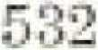powered Anglo-American World Power, was the one that proposed the League and that gave Life to this political “image.” Significantly Revelation 13:11 says that tliis beast with “two horns like a lamb” ascended “out of the earth”
True, the United States Senate voted against America’s joining the League of Nations. Nevertheless, America had the 4‘mark of the wild beast.” I low so? Because America’s joint partner in the Anglo-American World Power was the foremost member of the League. Also, the United States gave much talk and thought to the “self-determination of peoples” and to the reconstitution of nations that had been swallowed up b\ aggressive empires, such as Poland, Czechoslovakia, Yugoslavia, Finland, Estonia, Latvia and Lithuania. Thus national aspirations were stirred up among subject peoples.
Consequently all those “men” implicated in the above political maneuvers and connections had either the “mark of the wild beast” or were “worshiping its image,” or were guilty of both. How, then, did Jehovah God view such “men”? As though they were stricken with a “hurtful and malignant ulcer” that would spell their eventual death. This included the clergymen of Christendom and of pagandom, whose religious flocks had taken part in World War I and had supported the Peace Treaty, including the provisions for the I-eague of Nations. They refused to recognize that the Gentile Times had ended and that God’s Messianic kingdom had been set up in the heavens.
The stricken condition of such “men” from the standpoint of God the Judge was revealed to his Christian witnesses back there. In proof of this, the president of 1he Watch Tower Society, in his public address at Cedar Point, September 7, 1919r pointed out that
‘The Lord’s displeasure is certain to be visited upon thr T r;;r::b?. IweU'F, tn -s :i i jSe the \ i I. ’ and
Frotcstant—claiming to be God’s representatives, have
abandoned his plan and endorsed the League of Nations, hailing it as a political expression of Christ’s kingdom on earth. ’ The Watch, Tower as of October 1, 1919, pages 292b, 298a.
Advancing beyond that, the IVnZc/i. Tower issue of January 1, 1921, published on pages 10-15 an explanation of the beasts and the image of the wild beast as foretold in Revelation, chapter thirteen. Whereas heretofore those beasts and the image had been understood to be religious, ecclesiastical systems, they were now seen to picture political organizations, and the League of Nations was identified as being the foretold “image of the wild beast.”
A sort of climax came on September S, 1922, at the second Cedar Point (Ohio) convention. That day the president of the Watch Tower Society spoke on the text. “The kingdom of heaven is at hand” (Matthew ■ ■! *
4:17, AV), and also dealt with Isaiah, chapter six, which tells of an important event in the year 774 B.C., when King Uzziah of Jerusalem died. President Rutherford called attention to Uzziah’s becoming a leper and pointed out that Uzziah was a prototype of Christendom. Then, referring to Christendom’s endorsement of the League of Nations instead of God’s kingdom, he said:
“Thus they denied the coming of the Lord and bis kingdom to bless mankind, and openly allied themselves with the devil’s scheme, and then blasphemously attempted to offer this before the Lord. Like their proto* type Uzziah, the leprosy immediately appeared upon the nominal systems fof Christendom]. Thus wo are enabled to locate the time of the fulfillment of Isaiah’s vision.”— The Watch Tower as of November 1, 1922, page 335.
Farther on in this speech Rutherford quoted and applied to the dedicated, baptized ones in his audience the prophetic verses of Isaiah 43:8-12, which show that true Christians are Jehovah’s witnesses. On Sunday, September 10, after he talked on “Millions Now Living Will Never Die1’ to a public audience of upward of 18,000, a Resolution entitled ”A Challenge to World Leaders’* was adopted by those there assembled. It called upon all peoples to recognize and accept God’s kingdom and it exposed the unfaithfulness of Christendom in endorsing a substitute, the League of Nations.
By thus directing the understanding on the part of Jehovah’s dedicated people and the proclamations made by them, the first of the “seven angels” in the heavens was pouring out the first bowl into the earth. It was an expression of GodTs anger at the "men that had. the mark of the wild beast and that were worshiping its image.” In God's sight they were a I Ilie t ed with a ” hurtful and malignant ulcer” that is incurable. To God they were leprous. This expression of God’s anger rather than his blessing upon their political efforts pained them and made them suffer, especially when Jehovah’s witnesses proclaimed this information worldwide. It hurt them just as much as the plague hurt the Egyptians and King Uzziah. (Exodus 9:9-11; Leviticus 13: 18-27t They continue in this hurt condition to
this day, when colonial empires like the British, the French, the Dutch and the Portuguese Empires are being broken up and the spirit of nationalism and of State worship sweeps the earth and the United Nations grows to a membership of 111 nations.
This is what has happened because ulcerous men refuse to recognize the end of the Gentile Timos in 1914 and refuse to yield their sovereignty on earth over to God's established heavenly kingdom.
SECOND BOWL POURED OT T
The symbolic earth, that is, the stable part of human society backed up by strong traditional governments and by the League of Nations then and the United Nations now, came under the first plague from God. The restless, unsettled, revolutionary elements and the militaristic elements, symbolized by the sea, also come under a divine plague. (Isaiah 1.7:12, 13) The apostle John foresaw this as he watched the second of the “seven angels” with their bowls full of God’s anger go into action. John says:
“And the second one poured out his bowl into the sea. And it became blood as of a dead man, and every living soul died, yes, the things in the sea.”—Revelation 16:3.
The sea was the place out of which, according to Revelation 13:1, the seven-headed wild beast that symbolizes the Devil’s visible political system of rule ascended. Also, as seen by the prophet Daniel in a night vision, the four huge beasts picturing a series of world powers came up out of the sea that was stirred up by the four winds of the heavens. (Daniel 7:1-3) This entire visible political system had its start when a restless lover of excitement, a revolutionary man, a militaristic man acted. He was the innovator of something new and revolutionary in the earth after the flood of his great-grandfather’s day. He established the first political kingdom on earth: “the beginning of his kingdom came to be Babel.” This first king of all the kings of the earth, this king of Babel or Babylon, was no one else but "Nimrod a mighty hunter in opposition to Jehovah.” (Genesis 10:8-12) His violent, revolutionary political movement ran ahead of God*s promised Messianic kingdom, and it alienated Nimrod and his followers from Jehovah God. It certainly led to no world peace and quietude.
With no less violence and shedding of blood than in the ancient days of the mighty hunter Nimrod, revolution occurred in Russia in 1917 and the ungodly Bol-sheviki or Communists came to power. They imposed a radically different political scheme on Russia and broke the tie linking the Russian government and the Russian Orthodox Church. They believed in world revolution by violent means and by crafty subversiveness. Ever since then they have endeavored to keep the world in an unsettled state and to weaken by subversion the long-established system of tilings, and then to take advantage of this and overthrow the democratic, parliamentarian, capitalistic governments of human society. They have promised much to the dissatisfied masses. By their promises of a world Communist paradise with human equality and comradeship, they have won nations to their side, but to date they have failed to make these promises real. Russia and its satellites are like those described in Isaiah 57:20, 21: “‘The wicked are like the sea that is being tossed, when it is unable to calm down, the waters of which keep tossing up seaweed and mire. There is no peace,’ my God has said, ‘for the wicked ones.’ ”
Although the Union of Soviet Socialist Republics did not join the League of Nations till September 18, 1934, its radical, revolutionary political movement was not in favor of Jehovah’s kingdom by his Messiah Jesus Christ. It was more openly, hence more frankly, opposed to God’s kingdom than Christendom was. The new type of government that it introduced was therefore not life-bringing, but death-dealing. Because of its outspoken atheism and its campaign against all traditional religion, Russian Communism was something abhorrent to Christendom, like a plague. But what was it to God?
Let us turn back to Saturday, August 25, 1923. That day President Rutherford of the Watch Tower Society addressed the conventioners at Los Angeles, California. His subject was Jesus’ parable of the Sheep and the Goats. Then he introduced a resolution entitled “A Warning,” which exposed the religious clergymen of Christendom as being hypocritical and unchristian. This resolution was overwhelmingly adopted by the thousands of Bible Students present. However, this did not mean that they had gone over onto the side of the Communists in their religious persecution, Never have Jehovah’s witnesses favored worldly communism. In the first year of publication of their official magazine, then called “Zion's Watch Tower/’ in its issue of September, 1879, they came out with the following statemerits in an article on '"The Day of the Lord—Revelation 6:17”:
Very many Scriptures seem to teach that the kingdoms of earth will be overthrown by a rising of the people: goaded to desperation from lack of employment and seeking relief from the- oppression of bloodthirsty governments. Such a rising and overturning, Socialists, Communists, and Nihilists of today would gladly bring about if they could, Now the Scripture recognizes wrong and oppression as existing in the nations and foretells this as the way in which they will be overthrown, . . . Vet it does not recognize this Communism as right but the contrary rather instructing befieuera to “obey the powers that be'* as long as they last, saying to us "Be therefore, brethren, unto the coming of
the Lord/’
. . . When wo with a few others declared these things only a Short time since, and called attention to the fact that trouble was taught to be occasioned by a rising of the people and the overthrow of governments—Communism—wo were laughed at; there was truly little sign then of Communism; but today every civilized nation is in dread, and Nihilism. Communism and Socialism, are household words, . . .
Tliis position of Jehovah’s witnesses toward worldly Communism has not changed, but in this time of divine judgment since 1919 their position has become still more a matter of public notice. Toward the end of the year 1921, or on December 11, President Rutherford of the Watch Tower Society stood before an audience that packed out the old Hippodrome of New York city, to address these 7,000 listeners on the subject of “Millions Now Living Will Never Die.” In talking about the nations in distress and the remedies proposed, this mouthpiece of Jehovah’s witnesses at that time said:
“Financiers are fearful of losing their holdings. Labor is fearful that it will not bo able to exist Statesmen.
politicians, and rulers fear radicalism or Bolshevism, Tn fact, every one whose mind is not stayed upon the Lord is in a state of fear and distress. (Isaiah 26:3) . . .
"What is really feared by the ruling factors is radicalism or Bolshevism. Bible Students, who are Chias-tians, are unalterably opposed to any unrighteousness practiced by any one class upon another. They are neither radical nor speaking for the opposite alliance. They believe that the nation that will be blessed must recognize Jehovah as God and Messiah as the Lord and King?* —Tfce CrOiden j!_7C, as of January 4, 1922, page 214.
In the Watch Tower publication entitled “Government,” printed in 1928, the Society’s president wrote, on pages 244, 245:
These struggles have resulted tn many revolutions, groat suffering, and much bloodshed. Out of these struggles have developed the various theories or forms of government called radical, including communism, so cialism, the soviet and bolshevism- - - -
. . . The soviet government has not been a success and never can be, and is far from being saI.Jsfactory to the I>eople who have tried it. As in all other forms ni government whore the people are supposed to have a voice, the demagogues and party men dominate the various councils; and therefore the government has presented no advantages over any other government. In fact, bolshevism has resulted in great suffering of the people, and it is feared by many of the other nations and governments of the earth.
Every form of government man has tried, whether that is monarchy, aristocracy, democracy, republic or social, has been unsatisfactory.
The Watch Tower Society, which functions today through 90 Branches, has never been able to establish a branch office in Russia. Branches located in lands cither absorbed by tin1 Russian Soviet imperialism or made satellites to the Soviet Union have been closed down and Jehovah's witnesses have been persecuted and driven underground. In rhe years 1956 and 1957 many District Assemblies were held around the world by Jehovah's witnesses. On the Saturday night of these 199 assemblies they adopted a resolution addressed to the then Premier N. A. Bulganin of the U.S.S.R. It protested against the persecution upon the thousands of Jehovah’s witnesses found behind the Iron Curtain and particularly in Russia and Siberia. It petitioned for the Russian government to rectify conditions, that Jehovah’s witnesses might freely, aboveground, carry on their worship of their God for the salvation of ad sheeplike people. It, advised the Soviet government against keeping itself in the ranks of those persecutors foretold in Matthew 10:16: 24:9.
A total of 462,936 voted. From each of those assemblies a copy of the adopted and signed resolution was sent to Premier Bulganin and to any local Russian ambassador. Copies were supplied to the public press, which gave wide publicity to the courageous resolution. Tile result? Persecution of Jehovah's witnesses was intensified.*
By bad conduct toward these, the Communists put themselves in the ranks of the symbolic “goats,’’ who will be cut off from all existence, according to the parable of the Sheep and the Goats with which Jesus closed his prophecy on the end of th.is world or system of things. (Matthew 25:31-46) This parable, as explained by President Rutherford at the Los Angeles (California) convention, was shortly afterward published in The Watch Tower, in its issue of October 15, 1923. A few months afterward, or on February 15, 1924, in the seventh year or the Bolshevik revolution, the 64-page booklet entitled “A Desirable Government,” written by the president of the Watch Tower Society, was issued. In a matter of nine months 741,449 copies had been sent out from Brooklyn headquarters. Under the subheading “Government Failure—A Malady/’ this booklet said:
* S** paces 35, 338-344, 491 (column 5l of .Religion in She Soviet Union, edition of I!.‘61, by Journalist Walter Kolara, author of a num-t>i r of books.
There is not a government on earth today that satisfies any reasonable proportion of the world. Many of the nations are ruled by dictators. The whole world is practically bankrupt. Leading men of the world have advanced various schemes or methods for governmental reform. But these all have proven abortive.—Page 5, paragraph 2.
Ser also page 23, referring to the "great revolution in Russia, Germany, Austria, and other European coun* tries.**
Page 54 speaks of further trouble "similar to what Russia has already undergone.”
Referring to conditions on our earth under God’s new government over mankind, page 27 quoted Revelation 21:1 (AV) as follows:
“And I saw a new heaven FInvisible ruling power] and a new earth [now order of things on the earth]: for the first heaven and the first earth [the old order] were passed away; and there was no more sea [restless, anarchistic humanity I. , , Note also on l«*ge 38 the statement: ‘Utiilrr that government wars, famines, pestilences, revolutions and anarchy will forever cease.’*
Truly as a result of the second angel’s pouring out his bowl of God’s wrath upon the symbolic sea it became eis ‘'blood as of a dead man.” It was like blood that had 11 owed from a man violently killed and which blood had coagulated, caked. Every ‘‘living soul” that functioned in such an unclean, thickened “sea” could not keep living. Every soul died, from God’s standpoint. All the radicals, revolutionaries and the pushers for world domination by ungodly Communism were judicially viewed as dead by Jehovah and his witnesses. Radicalism's program of human government, as against God's heavenly kingdom, came forth from the “dead1’ and held forth no hope of life to man land. In God’s new order with ils “nmv heavens and a new r-arlh” there will be no more such a symbolic “sea.”—Revelation 21:1.
THIRD BOWL I’OUTtED OUT
To sustain life mankind has to have water. Though the seat of human life Is in the blc-od, the drinking of blood will not sustain life but, according to God's law, it earns death for the drinkers; it works to their death, No Ie, then, the effect of the action by the third angel in jjouring out his bowl of God's anger:
“And the third one poured out his bowl into the rivers and the fountains of the waters. And they became blood. And I heard the angel over the waters say: "You, the One who is and who was, the loyal One, are righteous, because you have rendered these decisions, because they poured out the blood of holy ones and of pippheis, and you have given them blood to drink. They deserve it.’ And 1 heard the altar say: 'Yes, Jehovah God, the Almighty, true and righteous are your judicial decisions.'”—Revelation 16:4-7.
This plague reminds us of the first plague that was visited upon ancient Egypt through the prophet Moses. Because of it the Nile River, the reedy pools and the impounded waters of the land became blood, which the Egyptians could not drink and in which the fish died and stank. (Exodus 7:14-25) To His worshipers Jehovah is the ‘'source of life" and the ‘'source of living water.” (Psalm 36:9; Jeremiah 2:13; 17:13) But that is not so for the earthly-minded people of this old system of things. These people, who are the friends of this world, prefer to look to “waters" from other sources, from worldly political, commercial and religious systems, They have looked to other sources for life, particularly to the religious systems with their traditions, ceremonial rites and conflicting doctrines that must be accepted in blind credulity instead of with intelligent faith based on inspired Scripture.
They are like the apostate Israelites who preferred to drink from the Nile River along which Egypt was located and from the Euphrates River along which Assyria was situated. (Jeremiah 2:17-19) They “rejected the waters of the Shiloah that are going gently.” which waters correspond with the “river the streams of which make the city of God rejoice, the holiest grand tabernacle of the Most High/’ (Isaiah 8:6, 7; Psalm 46:4) By drinking from the streams and fountains that have flowed with programs, plans, arrangements, theories and teachings from human, earthly origins, the people have drunk to themselves death, not life. They have been led into a bloodguilty, bloodspilling way of activity. Though the good news of God's established kingdom has been preached since 1919, they have ignored Jehovah the great Fountain of life and his Messianic kingdom for imparting life to believing, obedient mankind.
How, then, could God bless their drink? He has pronounced it death-dealing, like blood. Shed blood signifies death. That is what they deserve to drink, death to themselves. Why? Because what they chose to drink from human sources of this old world induced them to pour out the blood of God’s holy ones and prophets, Jehovah’s Christian witnesses. He is loyal to his faithful witnesses and is righteous in executing judicial decisions upon those who violently pour out their blood. That is what the “angel over the waters" says; he docs not consider them worthy of drinking water that would impart everlasting life. Let their drink be blood J
In tliis regard, the altar of sacrifice to Jehovah God, if it could talk, could tell a story, for all that it has witnessed. Underneath it, according to Revelation 6: 9, 10, are the souls or the lives of those “slaughtered because of the word of God and because of the witness work that they used to have.” Their souls or lives resided in their blood, and their blood was poured out at the base of the altar. Hence their souls were pictured as being down there and crying out for divine vengeance in the way that martyred Abel’s blood cried out from the ground. (Genesis 4:8-11: Leviticus 17:11-14) So when the worldly bloodspi Ilers are denied life and God's judicial decision is that they should drink shed blood to their own death, the altar of God's sacrificed ones can agree with the “angel over the waters’* and say: “Yes, Jehovah God, the Almighty, true and righteous are your judicial decisions/' Revelation 16:7.
With this also Jehovah's Christian witnesses today are In agreement. They have plainly declared to all the world that the human plans for peace, recovery and prosperity, and the theories and schemes of the postwar world, yes, even the religious doctrines of Christendom, are not life-giving like water but are death-dealing like spilled blood. An outspoken declaration of this was made in the resolution entitled “Indictment'’ that was adopted by the international assembly at Columbus, Ohio, on July 25, 1924. The following Sunday, July 27, this was given a further emphatic presentation in the public address entitled “Civilization Doomed/* which was given to an audience of about 35,000. In harmony with the effect of the pouring out of the third bowl the speaker said:
"Jesus Christ is the great Prince of Peace. Ue said: Thou shalt not kill? He taught his disciples and his followers to refrain completely from the use of carnal weapons. Yet the clergy, who claim to be teachers of liis docl rines, have sanri ifieri war and made it a holy thing. They have delighted to have their portraits and statues exhibited side by side with those of bloody warriors. They have hailed the greatest warriors as the greatest heroes of all time. [Like Constantine and Charlemagne!
"... The nations are all mustering their forces for the great conflict foretold; for God purposes to overthrow Satan’s organization through his beloved Son, Christ Jesus. . . .”
The bloodguiltiness of all mankind who are under the influence of false religion was further called attention to in discussions of Genesis 9:1-6 telling of the everlasting mandate that was made with Noah
and his descendants concerning the sanctity of blood. For instance, in the book entitled "Creation/’ published by the Watch Tower Society and released on October lt 1927, it was said, on page 103, under the subheading “Everlasting Covenant”:
This covenant Is the first expression of God's will concerning the sacredness of human life. The will of God is his law. All life proceeds from Jehovah; and since no one can give life to another except by Jehovah's arrangement, no one has a right to lake away life ex* cept by Jehovah's permission. After the terms of this covenant the law that must lor ever govern (lie human race is that no man can take the life of another with impunity. , , .
. . . The terms of the everlasting covenant have been broken by every people and every nation of earth, and some day God will require at the hands of the responsible ones a full account thereof.
The clergy claim to be the representatives of the hord, and assume to teach his Word; yet they have openly advocated the killing of human beings In war without just cause or excuse.
After that, in the reasonable course of things, in the issue of December 15, 192 g T7?c? Watc/t Tower and Herald of Christ’s Presence published as its leading article “One Reason for God’s Vengeance/’ pointing to violation of this everlasting mandate on blood.
When the doctrines of Germanic Nazism and Roman Fascism were carried out after 1919, it occasioned the pouring out of the blood of thousands of Jehovah’s witnesses as martyrs in the heart of Christendom. It also brought on World War II with its hitherto unequaled destruction of human life, (Revelation 12: 13-16) Men showed how they disregarded the sacredness of human blood, by resorting to blood transfusions on a tremendous scale, during World War II.
That this was a gross viola!ion of the everlasting mandate given to Noah respecting the sanctity of blood was called attention to when World Wai' II was reaching its climax. This was by means of the July 1,
1945, issue of The Watchtower Announcing Jehovah’s Kingdom, the leading article of which discussed Psalm 16. On pages 198*201 it discussed the attitude of King Dei vid toward taking the blood of others into his human system, when he said, in Psalm 16:4 (AV): “Their sorrows shall be multiplied that hasten after another god: their drink offerings of blood will I not offer, nor take up their names into my lips/’ This article quoted page 113 of Volume 4 of The Encyclopedia Americana (1929 edition), which said:
Transfusion of blood dates as far back as the time ol the ancient Egyptians. The earliest rc rted case is that practiced on Pope Innocent III in 1492. The operation cost the lives of three youths and the Pontiff's life was not saved.
Following this article a great controversy raged over the subject, and letters clarifying the Bible's teaching on the divinely approved use of blood were published. Jehovah’s witnesses’ loyal adherence to God’s everlasting mandate, under the fire of much public criticism, has led to many co;<:•.< in the judicial courts of the land. In declaration of God’s side in this worldwide controversy, Jehovah’s witnesses now circulate the 64-page booklet entitled “Blood, Medicine and the Law of God,” since its release on June 22, 1961, at the international assembly of Jehovah’s wit* nesscs in Yankee Stadium, Nctv York city. Mot to them, but to the bloodguilty world of mankind, God will give blood to drink. This will spell their destruction, at the end of this bloodstained world. “They will become drunk with their own blood.”—Isaiah 49:26.
FOURTH BOWL POURED OUT
Foi' life, men depend not only on water but also on the light and warmth of the sun around which our earth revolves. A disturbance of the sun causes dis-com fort to us humans here below. Such a disturbance in a symbolical way resulted when the fourth of the
“seven angels” with the bowls of God’s anger emptied out his bowl.
“And the fourth one poured out. his bowl upon the sun; and to the sun it was granted to scorch the men with fire. And the men were scorched with great heat, but they blasphemed the name of God, who has the authority over these plagues, and they did not repent so as to give glory to him.”—Revelation 16:8, 9.
Among the ancient Babylonians the sun was worshiped as a god, the judge of heaven, under the name of Shamash, He was the second god in one of the Babylonian triads of gods. Apostate Israelites, in imitation of Babylonians, began worshiping the sun. (Essekicl 8:15,16; Deuteronomy 4:19) The sun is still Worshiped today by some tradition-bound, backward peoples, but intellectual people of this so-called Brain Age do not directly worship the literal sun.
Since the establishing of God’s Messianic kingdom in the heavens in 1914 there has been an ingathering or harvesting of the remnant of the faithful Christians called to reign with Christ in that kingdom. So it has been the time for these Kingdom heirs, while still here on earth, to fulfill Jesus* prophecy given, in Matthew 13:38,43, at the end of his parable or the Whv^ar. and the Weeds: 11 As for the fine seed, these are the sons of 1 he kingdom; ... At that time the righteous ones will shine as brightly as the sun in the kingdom of their Father.** The shining is for the spiritual enlightenment and blessing of all who seek eternal life in the new world under God’s kingdom. However, those who shine like the sun in the kingdoms of this old world impart no such blessing. They shine io make a name for themselves in world history and to be idolized.
It was just as was stated in paragraph 4 of the resolution “Message of Hope” adopted August 29,1925, at the general convention of the International Bible Students in Indianapolis, Indiana:
“World powers, science and philosophy, commerce and religion, have each in turn offered their- respective reme-dies for man’s relief. Tn the name and under the guise of democracy. these combine in offering their joint and several powers to meet the requirements of man. Together they claim to be the sunlight of the world, holding forth all the light that shines to enlighten and guide the human race.”
This resolution gave no glory or praise to the name of men shining in the worldly firmament, but, in paragraphs 10, 11, went on to say:
“Therefore, in the name and in the spirit of the Lord, the standard of God’s truth and righteousness is here lifted up against the enemy and for the benefit of the peoples, which standard is, to wit:
“That Jehovah is the only true God, the Most High, the Almighty, the author and finisher of the great purpose lor the salvation of man, and is the rewarder of all that diligently seek and obey him; that the Bible is his revealed Word of truth; that his beloved Son Christ Jesus is the Redeemer and Deliverer of man and, true to his promise, has come to rule and bless the peoples; . . /’
At that time the old world was trying to readjust itself after World War I. Benito Mussolini had established himself as dictator of Italy. The Communist revolutionist Nikolai Lenin had dkid the previous year (January 21,1924), and Joseph Stalin was manipulating the temporary triumvirate so as to make himself the absolute muster of the Communist Russian giant by the end of !927. Meantime, Adolf Hitler was fanatically working his way toward becoming the National Socialist dictator over Germany. Japan was casting its plans for the extending of its imperialism on the mainland of Asia. The postwar trend of affairs in the world was not moving toward the relief and blessing of the people. The world’s “sun” was oppressively becoming scorchingly hot, and the people were feeling it. The message of Jehovah’s witnesses was very outspoken in warning the people that their “sun” would prove to be no “sun of righteousness” with true “healing in its wings,” (Malachi 4:2) Their message proved true.
In spite of the end of the Gentile Times in 1914, God permitted the political authorities of this world to continue as the “higher powers” or the “powers that be,” which are “ordained of God.” Hence men w
held God responsible for the unbearably hot state that scorched them. As foretold, “they blasphemed the name of God, who has the authority over these plagues.” •—Revelation 16:9; Romans 13:1,2, AV,
At this time God's personal name began to come to the fore. In harmony with the resolution adopted at the Indianapolis general convention in 1925, the dedicated, baptized Christian Bible Students were lifting up the ‘’standard of God’s truth and righteousness” in his name and spirit. After that resolution began to be circulated throughout the earth in millions of copies in many languages, the leading article of the IFofcZi Tower issue of December 15, 1925, had the following to say under the heading “Ilis Name”:
The world, particularly the governing factors of the nations, have pushed the name of God aside. Now the time is come when God will make for himself a name in the earth. * . .
Now Satan and his evil alites are gathering all their forces for the great and final conflict. . . . In that fight the Lord God will make for himself a name, that the peoples and nations of earth may know that he is God. ■—Page 375.
As a fitting, timely follow-up to that, the very next issue of The IVatc/t Toit-c?\ that of January 1, 1926, carried as its feature article “Who Will Honor Jehovah?” The opening paragraph said:
These LFsalm 135:21a] are the words for our text for the year 1926. Blessed or bless, as used m this text, means to venerate, to adore, to worship, to honor and to glorify. Who will conic within the class that thus honors Jehovah God? They that abide: in Zion will do so with gladness.
At once the anointed remnant yet on earth of the 144,000 determined to be found “within the class that thus honors Jehovah God." From then on the Watch Towei' publications quoted, and directed to the remnant the words of Isaiah 43:10-12, in which Jehovah tells his dedicated people that they are his witnesses. Now these came to appreciate their relationship and responsibility toward God. At last, on Sunday, July 26, 11131, at the international assembly in Cotonbus, Ohio, they adopted the resolution in favor of I hr Scripturally backed name for themselves, "Jehovah’s witnesses/*
With all this publicizing of God’s name, from 1926 onward in particular, the worldly men who wTere “scorched with great heat” from the "sun” of their world could directly blaspheme the “name of God." They called down evil upon Uis witnesses who did not join the worldlings in worshiping and idolizing the “sun” of this old world, and who ascribed the scorching heat to this worldly "sun.”
One tantalizing instance of this occurred when Pope Pius XI of Vatican City, who was a Concordat partner of dictators Mussolini and Hitler, proclaimed 1933 to be a holy year. When he inaugurated it on April 2, he held out hopes of peace and prosperity as a result of observing that year as holy. In quick succession came the startling broadcast on April 23, 1933, over 55 radio stations, with WF-JBR of Staten Island, New York, as the key station. This hour’s address by President Rutherford of the Watch Tower Society was on the subject “Effect of 1 loly Year on Peace and Prosperity/' This expose of Holy Year was transcribed on phonograph records, and a broadcasting of those was made on the following June 25 over 158 radio stations. Among other things, the president’s speech said:
“ . . . With all kindness and sincerity I remind you who listened to the ‘Holy Hour Service* held In New York on the 2d of April that the name of man was there exalted by frequently using and applying to men such terms as ‘Holy Father/ ‘Your Eminence/ and ‘Your Excellency *■; whereas the name of Jehovah God, His King and His kingdom were not mentioned at all, No reference was made to God’s expressed purpose o£ dealing with the human race by and through His kingdom. . . .
“The act of declaring this a ‘holy year1 for the bringing in uf peace and prosperity is a presumptuous sin before Almighty God. No nw: or company of men are running Jehovah's business so as to enable them to ‘change times and laws/ and it is so stated in Daniel 7:25. . . .
”... Peace and prosperity cannot be brought to the earth by men, but will come by God’s kingdom under Christ, . , /’—The GoJden Age, as of May 10, 1933. pages ■183490.
By the events of history since then, let all readers judge whether the Watch Tower president spoke the truth or not. Let them verify by authentic recorded history wThether the idolized "sun” of this old world ceased from its scorching heat after the “holy year** of 1933. Informed persons know that in that same year Hitler became dictator of Nazi Germany, a horrible Nazi persecution of Jehovah’s witnesses, worse than that on the Jews, began, and in that decade the League of Nations was scuttled by the Nazi-Fascist Axis Powers and the gory World War II was launched by these. Finally came the exploding of atomic bombs on the “heathen” member of the Axis Powers. Then the hydrogen bomb was invented. We face nuclear war!
Jehovah’s witnesses could not be killed off by Nazism, Fascism and Catholic Action or by World War II. Tire more they kept growing in numbers and spreading the Kingdom message and establishing new congregations, the more the “scorched” men kept blaspheming the “name of God,” To this day it is true that “they did not repent so as to give glory to him,” (Revelation 36:9) Unquestionably they feel the effects of the pouring out of the fourth plague.
FIFTH PI. AGUE POURED OUT
Where would the fifth plague strike? At the symbolic “throne of the wild beast.” The seven-headed wild beast ascended out of the sea. It. pictured Satan’s visible system of political government, for the symbolic dragon, Satan the Devil, “gave the beast its power and its throne and great authority.” (Revelation 13:1,2) We have observed that throughout the past millenniums of time the “wild beast” with its seven heads had had one after the other of these seven world powers take the leading place in the world’s political field. Hence the capital city representing the dominant world power has changed with the change in political control. Between World War I and World War II the Anglo-American Dual World Power continued, to be the Seventh World Power, and the British Empire was still the stronger member, its capital being London, England.
However, the symbolic “throne of the wild beast” does not necessarily mean the leading capital of the world power, London. After World War II, the United States became the stronger of the dual world power. Yet the “throne of the wild beast” would not of necessity be Washington, D.C. The plague is not confined to any single city on earth. A throne stands for 1he seat of rulership or of kingdom. Where, then, does the throne or seat of this “wild beast,” the whole beast and not just a single “head” of this beast, reside or have its basis for existence? Certainly its basis is not in Jehovah God’s promise of the Messiah, the Seed of his heavenly “woman.” (Genesis 3:15) It is not a throne “by the grace of God.”
How, then, did the fulfillment of the pouring out of tire fifth plague begin? The apostle John describes the angel’s pouring out of the plague in these words: “And the fifth one poured out his bowl upon the throne of the wild beast. And its kingdom became darkened, and they began to gnaw their tongues for their pain,

The Dragon^ the Enemy of God's Woman Zion
but they blasphemed the God of heaven for their pains and for their ulcers, and they did not repent of their works.”—Revelation 16:10.11. «
The throne was given by the Dragon, Satan the Devil. The “throne” functions inside the allowance of time for activity that Jehovah God granted to Satan the Devil to carry out his enmity against the Seed of the woman and to bruise the heel of the Messianic Seed. The throne rests fully upon an agreement with Satan the Devil, the Dragon. We can be sure that when “the dragon gave the beast its power and its throne and great authority,” it was not a free grant to the wild beast. The wild beast must have had to give the Dragon something in repayment. What? We can see what the Dragon required of the wild beast when we read what the Devil required of Jesus Christ when trying to tempt him with the gift of the kingdoms of earth. ‘‘The Devil said to him: 'I will give you all this authority and the glory of them, because it has been delivered to me, and to whomever I wish I give it. You, therefore, if you do an act of worship before mo, it will all be yours/ ”—Luke 4:5-7.
So the “throne of the wild beast” rested upon the worship that the wild beast would give to the Dragon. There is its location, its resting-place. From this standpoint we can see that the location of the throne of the symbolic wild beast has never changed. It has always been based or made to stand upon the worship and subjection the beast pays to Satan the Dragon. The “throne” is its office or dignity as a sovereign.
The fifth plague would therefore be the public exposure of the fact that the “throne of the wild beast” was from the Dragon, Satan the Devil, and was gained at his price; and that, consequently, the kingdom over which the beastly political system of this world ruled from such a throne wras a kingdom of darkness. Satan the Dragon was, as Jesus termed him, the “ruler of this world/’ (John 16:11) Satan the Dragon was the “god of this system of things/' which system worshiped him. (2 Corinthians 4:4) True Christians had no part in the kingdom of the “wild beast” but they “put on the complete suit of armor from God” and fought “against the world rulers of this darkness, against the wicked spirit forces in the heavenly places.” The kingdom of this “wild beast/’ which includes the governments of Christendom, was full of the “unfruitful works that belong to the darkness.” (Ephesians 6:11,12; 5:8-11) Jehovah God favored that worldly kingdom with no light.
God condemned this worldly political system to the darkness of eternal destruction. Its failure to have any light from him for the solution of the world's problems resulted in much pain to men, especially the politicians, statesmen, world rulers and their commercial and religious allies. Added to this reason for pain was the fact that, after God's Messianic kingdom was bom in the heavens in 1914, “war broke out in heaven1’ and the Dragon, Satan the Devil, and his demon angels were cast out and down to our earth's vicinity. Correctly a loud voice from heaven then said: “Woe for the earth and for the sea, because the Devil has come down to you, having great anger, knowing he has a short period of time." (Revelation 12:5-12) And then, on top of this, to have Jehovah’s witnesses expose this world as being Satan the Dcvifs increased the pain!
In its issue of March 1, 1925, TZte Watc7t Tower published the leading article entitled “The Birth of The Nation,’* which was the first announcement that there had been war in heaven after the Gentile Times ended in 1914 and that the Devil and his angels had been cast down to our earth. But this was further called attention to later in the article “The King in Action** in the issue of September 15, 1925, This ousting of the Devil and his angels from heaven had its effect upon the “wild beast” and its kingdom here on earth. All this was forcefully presented in the book entitled “Deliverance," which was released on Friday, May 28, 1926, at the international convention in London, England, after the convent! oners adopted a resolution entitled “A Testimony to the Rulers of the World.” The sixth proposition of this resolution stated that “by reason of the blinding influence of Satan the minds of the rulers and the ruled are turned away from the true God/*
The following Sunday night, May 30, this resolution was also presented to the many thousands that packed out the Royal Albert Hall of London. Its seven propositions were then publicly supported by the address given by President J. F. Rutherford on the subject k Why World Powers Are Tottering—The Remedy?’ In this public address Rutherford reviewed the seven successive world powers pictured by the seven heads of the “wild beast,” culminating in the English-speaking world power of today. Talking from the viewpoint then held that the throne or seat of the beast was where the capital of the then-dominant political power was located, Rutherford said:
“Because she is the greatest of all world powers, because she together with her allies 1 America] claims to be ‘Christendom1 and to be ruling by divine right and authority, there rests ufjon the British Empire a grave responsibility which cannot be evaded. Because the British World Power is the very center- and bulwark of the world’s civilization, and which the Lord symbolized as a ‘Beast/ and because London is the seat of government, and these governing factor's claim to rule by divine right, here is the very ’seat of the beast.' "
The League of Nations, though promoted and backed by Christendom, was forthrightly deci tired to be of the? great Dragon, Satan the Devil:
“But who is really responsible for the League of Nations compact? Is it formed and docs it exist by divine right and authority? I answer, No. The Devil is its lather, the British Empire is its mother, and the other nations which support it arc its wet nurses. , . .
“The Devil caused the governing factors of Christendom so called to enter into this compact against Jehovah and his anointed King.”—The Watch Tower, as of July 15, 1926, pages 211-217. Also TVn? Golden Age, as of September 8,1926, pages 780-791.
This speech and the resolution that it supported were given worldwide publicity by the millions of copies. World rulers did not follow the advice of this speech and resolution to acknowledge Jehovah as God, but, as Revelation 16:11 had foretold, “they blasphemed the God of heaven for their pains?’ The League of Nations died in the midst of World Wai' II, increasing their pains. The United Nations has been formed by Christendom and pagandom to succeed the League; but what was said of the League’s real authorship remains true also of today's United Nations.
In spite of the UN, the darkness of the kingdom of the “wild beast” deepens. World rulers in particular continue to “gnaw their tongues for their pain/’ They gnaw their tongues, not because of the darkness, which they prefer instead of Bible light, but because of their pains. They are ulcerous also, for they are religiously diseased, unclean, because they support and share in the “throne of the wild beast,” the political rulership that irests upon worship of Satan the Dragon their god. Despite all their pains, ‘‘they did not repent of their works.” So it is that down till now they keep blaspheming the God of heaven and grope around in worldly darkness.
c H A P T E R
25
1 HE pouring out of the sixth plague pointed to a double action, one having to do with Babylon, and the other, Har-Magedon. The apostle John, speaking of the sixth of the “seven angels’1 who had bowls full of God’s anger, says: “And the sixth one poured out his bowl upon the great river Euphrates, and its water was dried up, that the way might be prepared for the kings from the rising of the sun?’ —Revelation 16:12.
The name Babylon is not here mentioned, but no doubt Babylon is meant. Why? Because she was the chief city located on the Euphrates River in ancient times and it was by means of practically drying up the riverbed that Baby Ion’s fall was accomplished. At the Euphrates was also where captives were located, for when, as described in Revelation 9:13-15, the sixth trumpet was blown by an angel, this angel was given the following command: “Untie the four angels that are bound at the great river Euphrates.” In obedience to this command those “four angels” were untied, to carry out a certain mission. Babylon was the city that held Jehovah's people, the Israelites, captives and exiles by the Euphrates River until the decree of Cyrus the Persian released them in 537 B.C.
What the pouring out of the sixth bowl discloses prophetically is the coming destruction of Babylon the Great. Since Babylon’s fall had already been proclaimed by an angel, in Revelation 14:8, which fall
was shown to have occurred in the year 1919 after World War I, to what, then, does its overthrow by the “kings from the rising of the sun" in Revelation 16:12 refer? Those kings from the cast were pictured by Cyrus the Persian and his associated conqueror, and in our clay they prove to be Jesus Christ and his Father Jehovah God. As was the case in connection with Cyrus of old, so it is also today; Jehovah is the “One saying to the watery deep, ‘Be evaporated; and all your rivers I shall dry up.1 ”—Isaiah 44:27 to 45:5.
Elsewhere, the waters on which ancient Babylon sat are said to symbolize peoples, crowds and nations. However, the drying up of the waters of the Euphrates did not picture the releasing of the captive Israelites to return to Jerusalem and .Judah. The releasing of the exiled Israelites to go back home did not have any part in causing Babylon’s fall. She fell to Cyrus in 539 B.C., but the Israelites returned home in the second year thereafter, in 537 B.C.
Neither did the plague of drying up the waters of the Euphrates picture the turning of any people to Jehovah God. At most it pictured the turning of people away from Babylon, thus turning aside a strong part of her defense system and support, as this would offset the defensive power of her lofty walls. When Great Babylon falls at the end of this worldly system of things, it will be too late for people to turn to Jehovah God, which they might want to do just to “save their necks.” Hence a revolt of people against the world empire of Babylonish religion may here be pictured, but not in favor of Jehovah. Besides all the damage that people in revolt may do to her, the Kings from the East, Jehovah and Jesus Christ, are the ones who must destroy Babylon. God’s bowl of anger is against all defense and support of Babylon.
On Sunday, July 24, 1927, people who were unwilling captives in bondage to Babylon the Great were especially addressed under notable circumstances, The address was the leading feature of the general assembly of the International Bible Students at Toronto, Canada. It was spoken, not only to a visible audience of 15,000, but also to an invisible audience by means of 53 radio stations linked together from the Atlantic to the Pacific Ocean and including radio station WBBR. After reading a resolution addressed “To the Peoples of Christendom,” President Rutherford spoke in favor of the resolution in his widely advertised speech, “Freedom for the Peoples.” When speaking of the hopeless state of Christendom he said:
44 . . . With great pomp and glory that unholy system rides upon the backs of the peoples. Without the support of the common peoples that wicked system called lChri tendom.’ could not survive. When the peoples withdraw their support therefrom 'organized Chrislianity,’ which js a part of Babylon or the Devil's organization, will fall like a great millstone into the sea.
“ . . . But instead oi heeding the message from the the Word of God the rulers of the world, to wit, those constituting the unholy alliance, walk on in darkness arid continue to oppress the peoples. The doom of 4or-
: ii.-i fi Chxif^ianity’ or Izibyion is scaled! . - r/ic Watc/i Tower, as of October 15, 1927, page 312.
This message was afterward put in booklet form in a number of languages and distributed worldwide by the millions of copies. It served as further notice to the world that Babylon the Great was doomed and that ibis world empire of Babylonish religion was to be destroyed by the “kings from the rising of the sun.” Such notification of impending destruction has continued to be served on Babylon the Great in even sharper and clearer terms. It has been like a great plague or blow to those who support and defend her*
INSPIRES! EXPRESSIONS UKE FROGS
from the Euphrates River, made famous by Babylon, the vision of the apostle John is shifted, geographically speaking, to a point about 500 miles to
The Symbolic “False Prophet orTwo-horned Wife! Beast Out of the Earth
the southwest, to the valley of Jezreel or Esdraelon, which separates Galilee from Samaria. John sees a gathering of armies to this region, not the armies of the “kings from the rising of the sun/’ but the armies of earthly, human kings, John discloses how the gathering is brought about by saying:
"Arid t saw three unclean inspired expressions that looked like frogs come out of the mouth of the dragon and out of the mouth of the wild beast and out of the mouth of the false prophet. They are, in fact, expressions inspired by demons and perform signs, and they go forth to the kings of the entire inhabited earth, to gather them together to the war of the great day of God the Almighty.” —Revelation 16:13, 14.
As the appearance of these spirits or inspired <’xpressi c .■ns was that of frogs, an unclean animal to Jews like John before he became a Christian, it stamps these inspired expressions as being unc 1 ean in God’s sight. Coming from the source that they do, they should be unclean, and they arc inspired by unclean demons. They also make a croaking noise. They come out of the mouth of three creatures, and so must symbolize official proclamations, announcements, predictions, or propaganda, especially to influence kings or rulers of this world. As the symbolic dragon is Satan the Devil, who is the ruler of the demons, the unclean, IToglike inspired expression out of his mouth must say that Jehovah God is not the Sovereign of the universe and that his rightful Messianic kingdom over earth is not to be recognized or surrendered to, even if the Gentile Times ended in 1914. Kingdom preaching by Jehovah’s witnesses must therefore be stopped, and if they refuse to slop preaching Jehovah's kingdom by Christ we must war against them.
The “wild beast” out of the sea is the Dragon's visible political organization for governing mankind. It is loyal to the Dragon to whom it is indebted for its political power, throne and great authority. So the inspired propagandistic expression out of the wild beast's mouth backs up what the Dragon says. It argues for the sovereignty of the various national groups and tells them to conspire against Jehovah and his Anointed One or Messiah and to break all bands, restrictions and limitations that these would impose on them now that the Gentile Times have ended. —Psalm 2:1-10.
The ’“false prophet” is a new figure in name only. He is really the other “wild beast” that ascended out of the earth and that had two lamblike horns. It is no one else but the dual world power of Britain and America who cooperate t'conomically, politically and militarily, in English, and largely on the Protestant side of religion. But since Revelation 13:11 says that this two-horned beast speaks as the dragon does in blasphemies of God and His heavenly residence, and since it makes the “image of the wild beast” speak, the two-horned beast is here cast in the role of a prophet, not for Jehovah, of course. So it is a “false prophet.” As it is the seventh head of the seven-headed “wild beast” out of the sea, it assumes to speak nowadays for the entire wild beast, From its position of economic, political and military strength, it speaks very impressively, for it predominates today as the Seventh World Power.
This political “false prophet" system speaks against God’s kingdom but in favor of human sovereignty of The earth with self-determination of the peoples and in favor of an international alliance, first the League of Nations and now the United Nations, to keep a nuclear-powered world from destroying itself in world war.
These demon-inspired expressions from the three sources “perform signs/29 in order to clothe themselves with authority and impressiveness. At times they call for action on the part of the Dragon, the wild beast and the false prophet to enforce what the inspired expressions say. This makes it seem that the inspired expressions are coming true and have the "god of this world" backing them up. No matter how much these expressions may croak on the subject of international peace, they are really for war—for war against Jehovah God the Almighty and his Messiah.
Hence John says that the “inspired expressions” go forth to the worldly rulers who today possess nuclear and other mass-killing weapons, to “gather them together to the war of the great day of God the Almighty.” Yes, they are really gathering them to fight Jehovah, who is Almighty God, a fight against which Jehovah’s witnesses have warned the nations.29 The nations plainly show they are marching to that final war in that, in these days, they fight against Jehovah’s witnesses who preach the good news of God’s kingdom.
As long ago as 1897 the publishing agent of Jehovah’s witnesses, the Watch Tower Bible and Tract Society, published the book called “The Battle of Armageddon"' (at first called “The Day of Vengeance”).
This book presented a certain understanding of what this final war would be. However, it was not till the WatcZi Tower magazine’s issue of July 15, 1925, that Jehovah’s modern Christian witnesses got the understanding that this final war would be, not. a mere human struggle for domination here on earth, but a universal war. It would be really a war with God Almighty, in which he would destroy the Devil’s entire organization in heaven and in earth. “This is the fight of God Almighty; and the fight is led by his beloved Son/’ said page 280 of the book Deli iterance, issued in 1926.30 This information has since been expanded and enlarged upon Sciipturally. It has plagued the sensibilities of world rulers.
In the midst of this fascinating feature of John’s vision a voice interrupts his contemplations. It says: “Look! I am coming as a thief. Happy is the one that stays awake and keeps his outer garments, that he may not walk naked and people look upon his shame-fulness.” ( Revelation 16:15) The speaker is evidently one of the “kings from the rising of the sun/30 the Greater Cyrus, namely; the reigning King Jesus Christ, who takes a leading part in destroying Babylon the Great. But now he speaks as the one whom John saw walking among the seven symbolic golden lamp-stands, the seven congregations of Asia. In that scene he repeatedly warned these congregations that he was coming suddenly to them for an inspection work followed by due rewards or recompenses.—Revelation 2:5, 16; 3:11.
Inasmuch as he is coming against the world empire of Babylonish religion, the members of the congregations of spirit-begotten Christians need to watch that they do not fall away to the condemned Babylonish religion. They are heirs with him of the heavenly kingdom. They are serving Jehovah God in his spiritual temple, as a spiritual priesthood, “a royal priesthood,” clothed in Christ’s righteousness. Like in the temple in Jerusalem during Jesus’ days on earth, if they go to sleep at their posts of duty and the temple inspector comes and finds them not watching over the safety and interests of the temple, they will be beaten and stripped of their priestly garments and be discharged* They will be put out of the temple as unfit for work in it. This will be shameful for them, and persons who looked to them for priestly services will sec them, as it were, in their nakedness, without the covering of Christ’s righteousness, as being no imitators of him-—1 Peter 2:5-9; Exodus 20:25, 26,
Consequently the temple priest who stays awake and keeps actively on the watch and who is found in this state when Jehovah’s High Pricst arrives like a thief for inspection w’ork, will he happy for his faithfulness and reliability. He will retain his priestly garments and functions and not be stripped of them. Ile will have the promise of Revelation 3:12 fulfilled to him. He will win heavenly glory rather than suffer shame here with Babylon the Great.
After that slight but timely interruption by this solemn warning, the apostle John saw where the froglike inspired expressions out of the mouths of the Dragon, the ‘"wild beast’* and the ‘"false prophet’* gathered the earthly kings to wage the “war of the great day of God the Almighty.” Where is it to be waged? Not on the Euphrates at Babylon, for Revelation 16:16 says: “And they gathered them together to the place that is called in Hebrew Har-Magcdon.”
The name seems to mean “Mountain of Megiddo.” Not only because the name is Hebrew, but also because it appears to contain the name of the Hebrew fortress city of Megiddo, the place named is to be associated with Hebrew’ territory,* It. is reported that, near here,
- In an srtirle on 1 [ar-Magedon, Dr. Eto. Nestle says: "Lipan the whale, to find an aEu-ion here to Megiddo Is still the most probable ex pin rut lion, . . . the plflQC to toe mentiorioci . . . because or the
victory over ‘the kings of Canaan’ <Judges 5: 19).’*—Page 305a of Volume 2 nF irifftlngs /.hrfiojwj.'af of t-!ie JSibiff, edition of 1903.
Heaven fought for the victory of Jehovah’s people under Judge Barak and the prophetess Delxjrah31 In their victory song they sang:
“Kings camo, they fought; it was then that the kings nf Canaan fought in Taanach by the waters of Megiddo. No gain of silver did they take. From heaven did the stars fight, from their orbits they fought against Siserau The torrent of Kishon washed them a wav." —Judges 5:19-21.
Says The International Standard Bible Encyclopedia, Volume 2, page 1340: “These low hills around Megiddo, with their outlook over the plain of Esdrae-Ion, have witnessed perhaps a greater number of bloody rncounters than have ever stained a like area of the world's surface/’ The name Megiddo enters very nicely into the matter, not merely because of its historical
Td-
associations, but because, as Gcscnius’
Lexicon (1859 edition) suggests, the name may mean “the place of crowds” (Zocus Jt/H-wrim).
On no geograph kxd map does a place named Har-?J.ivodejji (Armageddon) appear. In Revelation 16:16 this name does not literally refer to the neighborhood of Megiddo :r the plain of EsdRjelon, ly.it ii symbolizes the place where, within the realm of Jehovah’s witnesses' experiences on earth, this final war is fought out..31 In other words, the earthly kings under demon influence invade the holy estate that these Christian witnesses have in relationship with their God Jehovah, and they try to destroy it. Only in this indirect way can they get at Jehovah God and his Messiah. It is at rhis point of collision v. i'h Jtliovah'y holy, royal interests that he meets the attackers in a final, decisive war that will need no repeating. He win gain an everlasting victory over them, just as he did over the ancient "kings of Canaan*' by the waters of Megiddo.
Thus the demon-inspired expressions that came out of the mouths of Satan the Dragon and his visible political governing organization and the falsely prophesying Anglo-American World Power are gathering the world rulers to their destruction at a spiritual Har-Magcdon. The pouring out of the sixth bowl re-vcals that.
SEVENTH BOWL POURED OUT
While witnessing the effects of the pouring out of the seventh symbolic bowl of God’s anger, .John’s attention is directed back eastward to Babylon. In telling about this seventh and last bowl by means of which "the anger of God is brought to a finish,** John writes: "And the seventh one poured out his bowl upon the air. At this a loud voice issued out of the sanctuary from the throne, saying: Tt has .come to pass!’ And lightnings and voices and thunders occurred, and a great earthquake occurred such as had not occurred since men came to be on the earth, so extensive an earthquake, so great. And the great city split into three parts, and the cities of the nations fell; and Babylon the great was remembered in the sight of God, to give her the cup of the wine of the anger of his wrath. Also, every island fled, and mountains were riot found. And a great hail with every stone about the weight of a talent [around a hundred pounds] descended out of heaven upon the men, and the men blasphemed God due to the plague of hail, because the plague of it was unusually great/1 —Revelation 16:17-21; 15:1.
This pouring out of the seventh bowl by the seventh angel was no explosion of an atomic bomb or nuclear
device in the atmosphere or in outer space above our earth, causing a deadly fallout and contaminating the very air we breathe. To us air means life, our very soul. (Genesis 6:17; 7:15, 22; Job 9:18) Men and" animals cannot live without air to breathe. This seventh plague was therefore more devastating in its effects than those pl agues on the earth, the sea, the rivers and fountains of water, including the Euphrates River. Just how far above the earth the seventh bowl was poured out upon the air is not said, but all the earth comes to be affected.
According to the ancient Babylonians the air was the abode of evil spirits and devils. Of the seven evil spirits whom they feared, the first one was the South Wind, the sixth a whirlwind, and the seventh a storm (hurricane). There were also triads of devils, the demons ihat caused sickness seeming to form a class by themselves. But each of these devils had a name and was thought to have a monstrous form of some kind. The followers of Pythagoras believed our atmosphere to be peopled with spirits, under the control of a chief who held his seat of empire in the air. Such spirits were thought to be powerful hut malignant, bent on inciting men to do wickedness.
Satan the Devil is declared to be “the prince of the power of the air,” or, “the ruler of the authority of the air, the spirit that now operates in the sons of disobedience.” (Ephesians 2:2, AINW) The air or atmosphere is nothing spiritual; yet it is invisible, and it represents a realm of invisibility.
Seitan the Devil is not an airy creature, but he is invisible because he is spiritual. He is very powerful in the invisible spiritual realm, particularly with reference to our earth and its atmosphere. Since mankind's fall into sin and death at the garden of Eden, he has been the “one having the means to cause death, that is, the Devil.” (Hebrews 2:14) He was permitted to cause the death of Job’s ten children (by a windstorm) but not of Job himself; and when, in order to report to God, he came “from roving about in the earth and from walking about in it,” he very likely came from roving within our earth's air or atmosphere*—Job 1:7,18,19; 2:2,6.
In fighting against the Devil’s machinations Christians on earth have to fight “against the wicked spirit forces in the heavenly places?* (Ephesians 6: I lf 12) Certainly' when Satan the Devil and his demon angels were cast out of heaven after God’s Mi-ssianic kingdom was born up there in 1914, they wTerc confined to the atmosphere of our earth, and so woes resulted for the earth and for the sea,—Revelation 12:5-12*
Satan the Devil is the “ruler of the authority of the air” by having control over a powerful spirit organization in the air. Hence men who are the “sons of disobedience” toward God breathe in, as it Were, the spirit of Satan the Devil* In their daily lives they Jive by his spirit and according to the system of things of which Satan is the god. (Ephesians 2:2; 2 Corinthians 4:4) So, when the seventh angel poured out his bowl “upon the air," he was pouring out God’s anger on the realm of the Dragon, Satan the Devil, and on the spirt/ of the Devil and its fruitage among men* This indicated that God was angry at the spirit of the Devil that the disobedient men on earth displayed in their lives.
The “loud voice” that issued from the heavenly sanctuary at this outpouring was that of Jehovah God, the One who sits on the throne there. The voice said: “It has come to pass!” Yes, the .seventh and last bowl for bringing to a finish the anger of God was poured out; and it was poured out on the last one of the vital tilings that are necessary to man’s life, namely, the air. The seven angels could now go back into the sanctuary and report on the finish of their obedient action. (Revelation 15:8; 16:17) But at this point, too, it was the time to let God’s anger fully express itself against the spirit of Satan the Devil in man, man's “air.”
In full harmony with the pouring out of this seventh bowl “upon the air,” an event took place on Sunday morning, August 5, 1928, at the public meeting of the international assembly of dedicated Christian Bible Students. At first there was submitted for consideration a resolution entitled “Declaration Against Satan and for Jehovah.” In its third proposition it said:
Third: . . . that Satan the Devil has caused strife amongst the nations and is responsible for all the cruel wars, wicked murders, all heinous crimes and other corrupt acts that have been committed; that until now Jehovah has not restrained Satan from the exercise of power and influence over men; . , . that for many centuries Sai an has boon the invisible ruler of the world, constantly defaming the name of Jehovah God and working great injury to men and nations.
Following the presentation of this resolution, President Rutherford delivered to the visible audience of 12,000 and an unseen audience listening by means of a network of 106 radio stations the supporting speech entitled “Ruler for the People.” As he gave that speech he made an expose of Satan’s spirit, saying:
"... the Bible designates him under the title Satan, Serpent. Dragon and Devil. All the unrighteous wars that have been fought between men, and all the cruel murders committed by men, have been due to the wicked influence of Satan the Devil because he was the first murderer and the father of lies. (John 8:44) All the tears of bitterness that have flowed from those who have been dealt with unjustly and sorely oppressed must bo traced to the influence of Satan because he is the great and wicked oppressor. (Ps. 72:4) All the bitterness that has existed and been exhibited between profess । d Christian people, all the religious intolerance and persecution of Christians, must be laid at Satan’s door. All the ford aspersions against Jehovah God and all the defamation of his holy name must be laid to the charge of Satan the Devil.
“ . - . it was Satan, the invisible ruler of Ibis world, who caused the death of Jesus. Such wicked persecution could not have proceeded from Jehovah God against his own Son. From then till now the Christians have suffered violent persecution. . . ,
“Afirrwards the Romans persecuted and put to death many Christian people. , . .
“AU the evidence shows that Satan, the invisible ruler of this world, is the responsible one for such wrongful acts, and the conclusion is in harmony with the words of Jesus. . . .The fight of the Christian lias not been against men, but against the invisible Satan and his cohorts of evil. . . .—Eph. 6*11, 12,
At some length, with quotations from various publications, President Rutherford went on to state in detail the wickedness of Satan in this world. Ue also said:
“The charge is often made that Jehovah is a cruel and bloodthirsty God- That charge is wholly false. Bear in mind that Jehovah is the only source of life, . . , Jehovah God will shortly overthrow the DevlFs established organization and will set up righteousness in the earth. . . *
"... This Declaration is against the common enemy of all creation. It is against the enemy who for centuries has defamed the name of Jehovah God and brought unbounded sorrow to man. It is against Satan and his allies in darkness and evil. It is a testimony to the fact that Satan’s evil rule must shortly end and that Jehovah, for his name’s sake and the salvation of the people, will establish a righteous government that all the nations of earth shall he blessed,”
In conclusion the speaker appealed to his audience to adopt this resolution. They did so, standing up and voting Aye! The resolution and the supporting speech were printed in a booklet and circulated by the millions of copies in many languages worldwide. Also, the book entitled “Government,” that was released to the oonventioners two days before the public address, began to be circulated in many languages, in hundreds of thousands of copies. Truly the seventh angel in heaven was pouring out his 4‘bowl” of God’s anger “upon the air” where Satan exercised his influence over men.
Literal lightnings. thunders and heavenly voices did not accompany this outpouring. But on August 1 of the Detroit convention the Society’s president delivered a Bible talk on “God’s Lightnings/’ Since then there have also been other flashes of spiritual enlightenment, other thunderings of divine judgments and other voicelike proclamations or publications of Bible truth, just as Revelation 16:18 foretold. This continued on even through the terrible years of World War II, which the diabolical spirit of the “prince of the power of the air” stirred up and during which he instigated the worst persecutions against Jehovah’s witnesses down to this day.
In a further expose of the Devil’s spirit, which infects the whole world and which will lead it to its ruin, there was delivered to an audience of 112,000, at the 1953 international assembly of Jehovah’s witnesses at Yankee Stadium, New York city, on Thursday, July 23, the address on the subject “New World Society Attacked from the Far North.” It laid bare that the mysterious Gog of Magog, as foretold in Ezekiel, chapters 38 and 39, was no one else but Satan the Devfl* The final assault that he leads the nations to make upon the New World society of Jehovah’s witnesses brings on the utter destruction of Satan’s visible organization on earth, by means of which destruction Jehovah the Almighty God sanctifies his holy name.* Among aU the worldly nations Satan the Devil is cultivating his spirit that leads to this disastrous attack.
• Th Lb address was publishetl In The IVatcJrf owcr .4 MjtouMciMi? Jc-Aovu/i’s Kingdom, as of October 1, 1053, which then had a printing of 1.650,000 copies in 3D JantTuages.
As yet there has been no literal earthquake so great as to cause all the cities of the nations to fall. The earthquake of such power and extent, as described in Revelation 16:18’20, pictures the world’s final trouble, the “great tribulation such as has not occurred since the world’s beginning until now, no, nor will occur again?' (Matthew 24:21) It will bring the “cities of
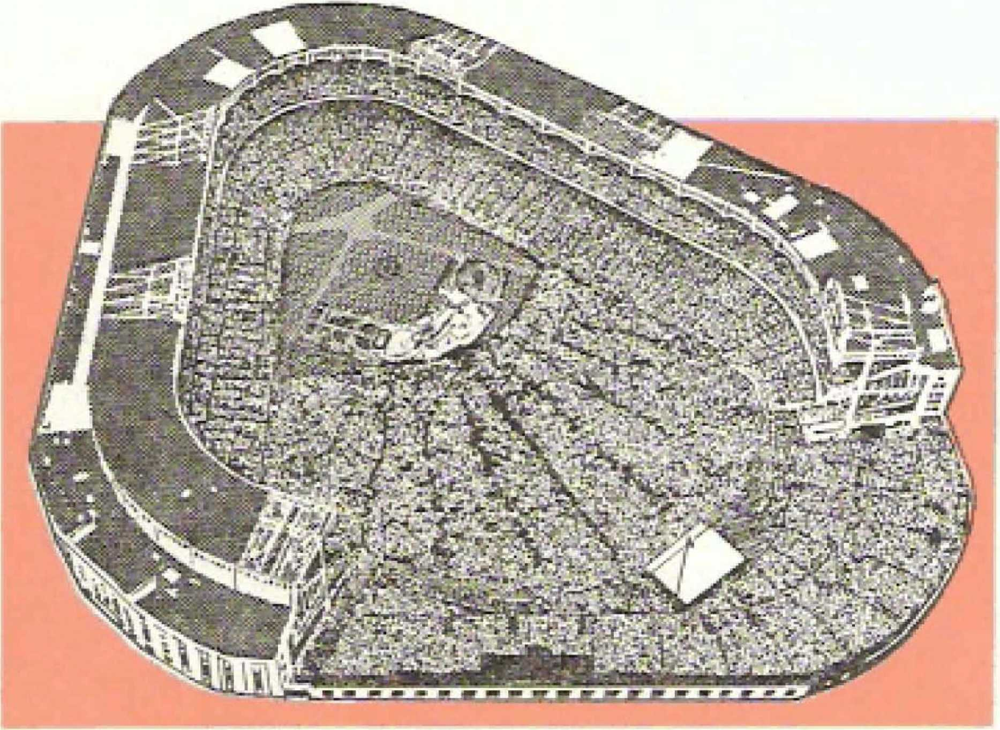Al Yankee Stadium, part of 253,9’22 who hear "God's
Kingdom Rules—Is Hie World's End Near?” Aug. 3, 1958
the nations1* crashing down in ruins, and the national governments of this world will be shaken to destruction with them. Only God’s heavenly kingdom will remain stand i ng,—Hebrews 12:20-28; Ilaggai 2:6,7,21, 22.
The “great city*1 that John saw "split into three parts'" as a result of the “great earthquake” symbolizes Babylon the Great. (Revelation 17:18) Ancient
Babylon, being built on both sides of the Euphrates River, was already geographically split into two parts. So Babylon’s being split into three parts would symbol izc a very serious breaking up of it, three being a number of emphasis.
How well this foretells that this great world empire of Babylonish religion will be pulled or shaken apart
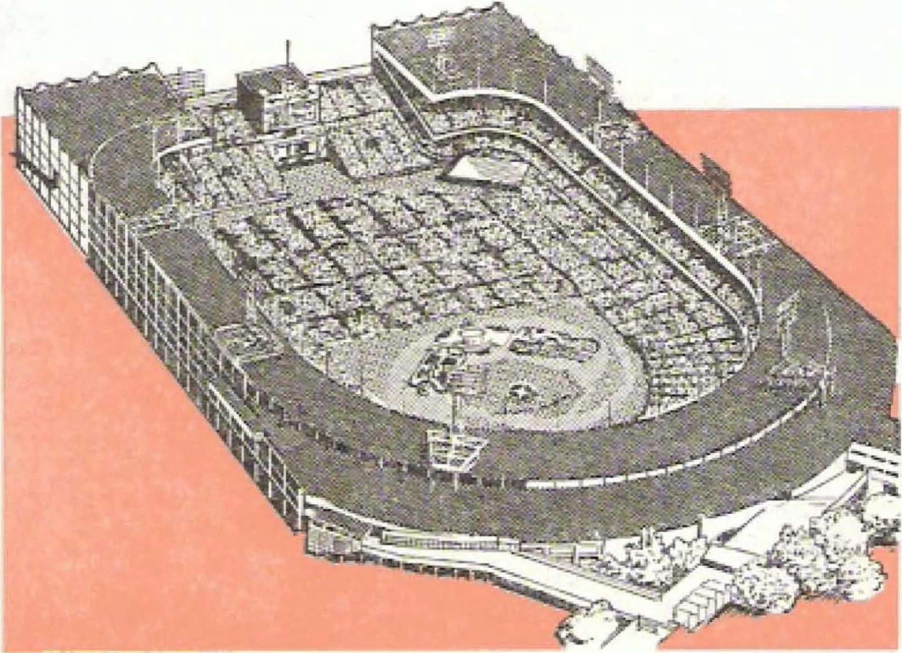New York Polo Grounds used simultaneously with Yankee Stadium for the 1953 Divine Will Assembly of Jehovah's Witnesses. See date on page 690 of chart of chronology of events.
and fall! Since God promised this symbolic earthquake and since he alone is the One who can produce such an earthquake, it clearly reminds us that Babylon the Great is made to fall by Jehovah God and his Greater Cyrus, the “kings from the rising of the sun/' Revelation 16:18, 19 emphasizes this fact by saying that thus "Babylon the great was remembered in the sight of God, to give her the cup of the wine of the anger of his wrath?’ This means that she drinks a specially bitter cup. The contents of this will make her so drunk with woe and shame that she will never recover from its effects and wake up. What this world empire of Babylonish religion has done has been “in the sight of God.” Ue has witnessed all her wickedness and has not forgotten it. Hence he makes her drink the destructive cup at his hand.
Islands and mountains have been known to disappear as a result of submarine and terrestrial earthquakes. Such a thing is more gigantic than sending cities crashing in ruins. By the coming world “earthquake” of trouble at God’s hands the sea and the land will be affected. Nothing will be too distant or isolated, as in the sea, or too lofty and sturdy, like a mountain, in Satan’s visible organization to escape destruction. Things that up till now have proved so stable as to survive the raging of the “sea” of revo-luHonary, radical, nihilistic elements of mankind will not be able to withstand the shaking at God’s hands. —Psalm 46:2,3.
However, disastrous things can come from above as well as from underfoot. Showing that the air or atmosphere has been affected by the pouring out of the seventh bowl of God’s anger is the fact that out of heaven there descends upon disobedient men a "great hail,” with every hailstone weighing 96 pounds avoirdupois. Their falling with speed adds to the destructive effect of these tremendous "hailstones?* Since hailstones are congealed water, this hailstorm pictures that Heaven would send dowm upon worldly mankind a barrage of hard Biblical truths. These would be God’s judgment messages for delivery by his Christian witnesses on earth. Instead of the good news of salvation by God’s kingdom, the hard, unyielding message of God's vengeance against Satan’s visible organization will at the last pelt men. It will presage their destruction.
The symbolic hailstorm was not meant or expected to convert mankind at that late development of world affairs. So what was foreshown to the apostle John was that, “the men blasphemed God due to the plague of hail.” They did not call upon the name of Jehovah for salvation but blasphemed him because of the delivery of the judgment messages and the execution of them. (Joel 2:32; Romans 10:13) The fact, that “the plague of it was unusually great” foreshows that at the last there will be an unusually great proclamation of God's vengeance by Jehovah’s witnesses. —Revelation 16:21.
For the wicked ones there is no escaping from God’s vengeance. In the Revelation picture, if they survived the symbolic earthquake, they would without fail be destroyed by the accurately aimed, exceptional hailstones from the heavens. (Job 38:22,23; Psalm 148: 7, 8; Isaiah 28:2, 17) The full execution of the seventh of those “seven plagues” will bring destruction to all persons on earth who bring forth the wicked fruitage of Satan’s spirit. But happy will those people be who get filled with God’s spirit and produce its fruit!
c H A
P T E
R
26
▼ V HAT the apostle John wrote clown in chapter sixteen of Revelation did not finish up for him the vision of how Babylon the Great is destroyed. There were further wonderful details revealed to him about her. As he was set to wondering at the particulars of the continuing prophetic vision, so arc we today as we see taking place in these eventful days the very things foretold to take place in connection with executing divine judgment upon that world empire of Babylonish religion. It is as if God's angel were inviting us to come and see these wondrous things, just the same as John was invited to see a preview of them. John says:
“And one of the seven angels that had the seven bowls came and spoke with me, saying: ‘Come, I will show you the judgment upon the great harlot who sits on many waters, with whom the kings of the earth committed fornication, whereas those who inhabit the earth were made drunk with the wine of her fornication?’*—Revelation 17:1,2,
John was against unrepentant harlots, and he would appreciate seeing judgment executed upon the greatest ]iariot of them all. She was no ordinary harlot, for she has as her customers the “kings of the earth,” including today’s “kings of the entire inhabited earth,” who arc now being gathered by demon-inspired expressions to the battlefield of Har-Magedon. Hers is a long career of harlotry or fornication, spread out over
Revetalion 17:1*3
THS JUDGMENT UPON THE GREAT HARLOT”
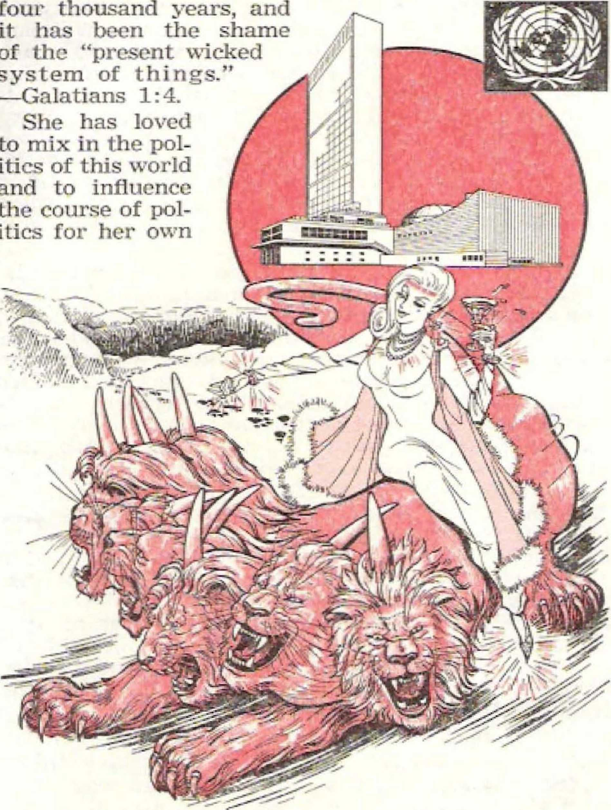to influence course of pol-: for her own
Babylon the Great rides the scarlet-colored wj’d beast
benefit, in fact, to dominate politics as if she were superior. To the political rulers or kings who will play with her, she gives religious satisfaction, to make them feel comfortable in their worldly course. She prays for Heaven’s blessing upon their selfish, ambitious schemes; she blesses their conflicts for political or commercial or military supremacy; she makes them feel they have Heaven’s approval and are doing the divine will, so that their future in the next world is assured. She holds impressive funeral services for them to make their “life in the next world” as comfortable as possible*
In fact, she carries on her prostitution with the political rulers of this world as a religious service, as a form of worship, to the god whom she worships, just like an ancient temple prostitute. This has, of course, affected all earth’s inhabitants, who are the subjects of these political rulers or kings, and earth’s inhabitants have been made drunk with the consequences of her selling herself to kings and rulers— “the wine of her fornication.” (Revelation 14:8) She is no ordinary woman, for she “sits on many waters.”
Who is this “great harlot” of such royal connections? John informs us as he tells us what the angel showed him: “And he carried me away in the power of the spirit into a wilderness. And I caught sight of a woman sitting upon a scarlet-colored wild beast that was full of blasphemous names and than had seven heads and ten horns. And the woman was arrayed in purple and scarlet, and was adorned with gold and precious stone and pearls and had in her hand a golden cup that was full of disgusting things and the unclean things of her fornication. And upon her forehead was written a name, a mystery: ‘Babylon the Great, the mother of the harlots and of the disgusting things of the earth.’ And I saw that the woman was drunk with the blood of the holy ones and with the blood of the witnesses of Jesus.”—Revelation 17:3-6.
Ah! The mysterious harlot is Babylon the Great. She is not the ancient Babylon on the Euphrates River that fell from world power in 539 B.C. and that, after centuries of decline, went down in everlasting destruction, only dreary ruins today testifying to her aforetime existence and glory. But Babylon the Great was foreshadowed and symbolized by ancient Babylon and therefore took her name. Babylon the Great is pictured as being in a wilderness where wild beasts belong. True to the picture, she sits on a wild beast.
This beast that lets Babylon the Great ride it, what does it picture today? This scarlet-colored beast is not reported to have come up out of the sea of rebellious, revolutionary, radical humanity that is opposed to Jehovah God as Nimrod the hunter was. However, in general shape it is like the wild beast that John saw’ ‘"ascending out of the sea.” So it too has seven heads and ten horns and is “full or blasphemous names/1 to resemble the wild beast that had “upon its heads blasphemous names.’1 Of course, its color is different—scarlet-—for the wild beast out of the sea was spotted like a leopard but had feet like those of a bear and a mouth like a lion’s. (Revelation 13: 1, 2) But it also has ten horns, although not with ten diadems on them as the horns of the first wild beast had. So, in general, it is like that first wild beast. In fact, it is an image of the wild beast that came out of the abyss of the sea.
According to Revelation 13:14, 15, the two-horned wild beast that ascended out of the earth was the one that proposed the making of the “image of the wild beast.” Now, here in Revelation 17:3, we are shown what the “image” looked like, that it copies the outline of the wild beast from the sea. The picture of the great harlot on the scarlet-colored wild beast, therefore, has its fulfillment from the year 1919 on-M
ward. How so? For the following reason:
In 1919. at the Peace Conference in France, the leading representatives of the two-horned world power of Britain and America argued for an international peace-keeping organization, the League of Nations, and won. On June 28, 1919, the Peace Conference signed the Peace Treaty, into which had been incorporated the covenant for a League of Nations. By October of that year the required number of governments had ratified the treaty with its covenant, and the treaty went into effect in France.
On January 10, 1920, the ratifications of the Treaty were formally exchanged at Paris, between the signatory powers. That afternoon the treaty with its League of Nations covenant went into effect. Six days later, M. Leon Bourgeois of France became first pi'esident of the Council of the League and Sir Eric Drummond of Britain was made its secretary. However, in 1919, religious organizations of Christendom had come out in favor of the League and worked for its adoption. King George V of Great Britain was in favor of the League of Nations, and he was supreme governor of the Church of England. Greece, of which the Eastern Orthodox Church is the established church, came into the League on March 30, 1920.
As regards the papal Vatican in Rome, its Pontifex Maximus had no official say at the Peace Conference. It did not take part in discussing the League, because of the London Treaty of 1915 between Italy, France, Great Britain and Russia, which was signed May 9, 1915. Because of the apparent connections of the papal Vatican with the Teutonic Allies during World War I, the pope of Rome was not 4'permitted to intervene by diplomatic action in regard to peace or questions arising from the war.” (77te Americano,
edition of 1929, Volume 17, pages 632, 633) So the Roman Catholic expressions of support of the League came later on.
As a member of the League from its start was that victorious Oriental signatory power of Japan, with its then Empcror worship.
It is thus seen that in 1919 modern Babylon the Great, the world empire of Babylonish religion, took steps to climb on the “image of the wild beast/’ then in the form of the League of Nations. To her it was a worthy animal to ride. To her it was of a scarlet color, which color in sacred Scripture is a symbol of royalty, a mark or luxury. (Matthew 27:28-31; 2 Samuel 1:24) She herself was “arrayed in purple and scarlet.” In fact, in January of 1919 the Federal Council of the Churches of Christ in America called the then-proposed League of Nations "the political expression of the kingdom of God on earth.” When the League went into effect on January 10, 1920, she Trailv did seat herself on it, to ride with it wherever V ■*
it went, pinning her hopes for world peace to it.
By thus riding the League of Nations beast, Babylon the Great was only committing a further act of fornication with the “kings of the earth.” She joined with the politicians to “worship the image of the wild beast.” She joined with them in making it “full of blasphemous names.” The naim.’s that she and other worldlings called it, the worshipfulness that she and they imparted to it, the hopes and confidence that she and they stirred up the people to pin to it, belonged only to Jehovah God and his Messianic kingdom. Men’s trust and expectations were turned from God. —Revelation 17:2,3.
In sacred Scripture ancient Babylon was symbolized as a woman. Correspondingly, Babylon the Great is also pictured as a woman, an international harlot. By means of her greedy priests and hierarchy and her false misleading religious doctrines, this world empire of Babylonish religion has acquired great wealth at the expense of the trusting, deceived people—gold, precious stones, pearls, purple and scarlet. Also, earth's
kings have paid her well for letting them have worldly pleasure with her and letting them use her religion to gain control, to keep control and to further their political and commercial schemes, So the cup from which she makes her religious adherents drink appears to be a golden cup lit for containing only the best of drinks. The exterior of the cup, however, is deceptive, for inside it is "full of disgusting things and the unclean things of her fornication/’—Compare Matthew 23:25, 26.
She has made her religious flocks engage in world-liricss, which is filthiness in God’s sight. Her fornication with the political rulers of this world has not been a blessing to the people but has made the people taste religious wars, economic backwardness, illiteracy, low morals, and opposition to God’s Messianic kingdom.
The harlot’s name was plainly written on her forehead for all to see, but her name involved a mystery or religious secret. That is to say, Who was the one thus named? Or, Whom did the harlot thus named symbolize? As fact and sacred Scripture show, she did not symbolize Pagan Rome of the apostle John’s day. Her irinii? makes it rertair:. that she stands for an organization like ancient Babylon, dominated by false religion that stemmed from Nimrod the mighty hunter in opposition to Jehovah God. Further study of her and her associations proves she is the world empire of Babylonish religion.
She plays the harlot and thus commits religious fornication with the political element of this world, pictured by the "kings of the earth.” Though being a harlot herself, she is a mother. Like their mother, all her daughters arc harlots. We remember that, in the Bible, the inhabitants of a city are said to be its children. Just so, the member religious organizations of Babylon the Great are her children, her daughters born as a result of her fornication; and all these daughter systems are harlot organizations also. They
copy their mother organization and commit fornication with the “kings of the earth/’ Their history proves it.
Babylon the Great is also the mother of the abominations or the “disgusting things of the earth/’ What abominable and disgusting thing of the earth is she not the mother of, from God’s viewpoint? By going after religious things other than the true God Jehovah, she has given illegitimate birth to idolatry, literal and figurative. (Romans 2:22; Matthew 24:15; 1 Kings 11:5, 7; 2 Kings 23:13) She has given birth also to spirit, mediums, fortune-tellers, astrologers and human sacrifices. (2 Kings 23:24; Isaiah 66:3; Ezekiel 20: 7, 8, 30; Hosea 9:10) Along with all these false, demoninspired religions have gone all kinds of obscene practices. loose conduct, even temple prosdtution by which immorality is sanctified. Drunkenness, too, is indulged in, to the honor of a false god.
Babylon the Great is an old drunkard. More than on alcoholic drinks, she likes to get drunk on human blood, especially blood that has been shed in religious persecutions. Prior to the apostle John, she had become “drunk with the blood of the holy ones/’ and she was even responsible for shedding the blood of Jesus Christ, “the Holy One/’ (Acts 3:14. 15; 4:27,30; Mark 1:24; Luke 4:34) But since th: :i and down to this day she has drunk her fill “with the blood of the witnesses of Jesus.” Sho has done this in her fanatical effort to deaden the voices of these witnesses who are preaching Jehovah’s Messianic kingdom.—Revelation 17:6; 6:9-11.
THE MYSTERY OF Tlffi SCARLET WILD BEAST
Not only has Babylon the Great been a mystery ever since John saw her in the revelation to him, but the beast on which she rides has also been a mystery. John writes: “Well, on catching sight of her I wondered with great wonderment. And so the angel said to me: ‘Why is it you wondered? I will tell you the mystery of the woman and of the wild beast that is carrying her and that has the seven heads and the ten horns: The wild beast that you saw was, but is not, and yet is about to ascend out of the abyss, and it is to go off into destruction. And when they see how the wild beast was, but is not, and yet will be present, those who dwell on the earth will wonder admiringly, but their names have not been written upon the scroll of life from the founding of the world? ** —Revelation 17:6-8.
Because of its general features, this scarlet-colored wild beast is the '“image of the wild ben st** whose creation the apostle John told of in Revelation 13: 14,15 but whom lie did not ilicre describe. As it is an image artd is for idolatrous worship, Babylon the Great favors it. She is pleased to ride it or be carried along by it. Idolaters justify the use of idols by saying that they are aids to the worship of the gods pictured by the idols, which idols they give only a "relative worship/’ By the wild beast's "image” they worship the international conspiracy against God’s kingdom. The image is that international organization formed for preserving the political governments of this world, especially by means of settling their differences through peaceful arbitration.
During the period between World War I and World War II this scarlet-colored wild beast was the League of Nations, which had as many as sixty-two nations in it. The League of Nations was officially dissolved after World War II, on April 18, 1946; but the League really “was not” during all of World War n from 1939 to 1945. The imperialistic, Nazi-Fascist "Axis Powers” flouted the League of Nations. With what result? This: the League failed its chartered purpose and ceased to function with proper effect at the outbreak of World War II, when the Catholic Nazi dictator Hitler touched off the explosion of World War II in September of 1939.*
There, in fact, the League went down into the abyss of raging, roaring humanity in the world’s greatest war till then, and into a state of suspended animation. God’s angel spoke to the apostle John as if the scarlet-colored beast, was then in the abyss and was about to come out. Tn striking agreement with this is the fact that in 1942, at the middle of World War H, Jehovah*s Christian witnesses saw that this international beast was then in the abyss and they pointed to Revelation 17:8 as foretelling that the beast would come out of it after World War IT.—See pages 20-22 of Peace—Cun It Last* published by the Watch Tower Society September 20, 1942.
The Seventh World Power, namely, the dual world power of Great Britain and America, had worked to bring the league of Nations into existence. Now this same dual world power worked to get this international peacc-and-security organization out of the abyss of apparent death. Thus it was that in the United States of America, at San Francisco, California, fifty nations (not including Vatican City and the Axis Powers) signed the Charter of the United Nations on June 20, 1945. This Charter became part of international law on October 24. 1945. when the number of nations ratifying it became twenty-nine in number, including the Big Five. Then the United Nations became existent. The first meeting of its General Assembly took place in London, England (of the dual world power), on January 10, 1946; that of the Security Council seven days later.
Jehovah’s Christian witnesses immediately recognized that the scarlet-colored wild beast had now
• The Genera! Assembly of the League of Nations ceased to meet afire Liw'cmber 14, 1&391. when It expelled the Soviet Union from membership because of its attack on Finland, in •■kiretl war, on Ko-vember 30, 1939. When the A s-. mbly iret again on April 8 -IS.
1946. it was to close out the League of Nations and to declare it nonexistent.
ascended out of the abyss. But they did not worship it any more than they had joined Babylon the Great and the worldly nations in idolizing the League of Nations, the “beast” in its original form. However, the people of this old world, "those who dwell on the earth,” wondered admiringly at it.
The chartered purpose of the United Nations was *'to maintain international peace and security.” Hence people felt somewhat more assured that now the first symbolic wild beast, which had ascended out of the sea, would keep on existing. This new international organization would preserve peace and security for this wild beast out of the sea. People’s continued admiration for the scarlet-colored "image of the wild beast” is seen in that till now, when we go to press with this book, the membership of the United Nations has steadily increased to 111 member nations.
Recently the Pontifex Maximus in Vatican City spoke with considerable definiteness concerning the symbolic seven-headed, ten-horned scarlet-colored wild beast upon which Babylon the Great rides. With much publicity worldwide, days in advance, the people were alerted to the issuance shortly of an important circular letter or encyclical to all Roman Catholic bishops by Pope John XXIII, his eighth encyclical. An Associated Press dispatch, with the date line “Rome, April 5,** published by the New York Times as of April 6, 1963, page 2, under the heading **U.N. Police Role Supported’ sa id:
Monsignor Pisoni, writing in the Corriere della Sera of Milan said that in t i.-i national law “has been made even more complicated in our times by the presence of international organs such as the United Nations, caller] upon to undertake with autonomous military forces the duty of “international police.' ” He said that the encyclical would deal with 41 the duty of all peoples to accept the autonomous force of the United Nations as an international police" as well as with the Cold War and “internal and civil war supported from abroad."
On April 7 Christendom celebrated her Palm Sunday, to commemorate Christ’s triumphal ride into Jerusalem (Zion) to offer himself to her as her Messianic King. During the following Holy Week Pope John XXIII signed his encyclical entitled “Pacem in Terris** (“Peace on Earth”), while the scene was
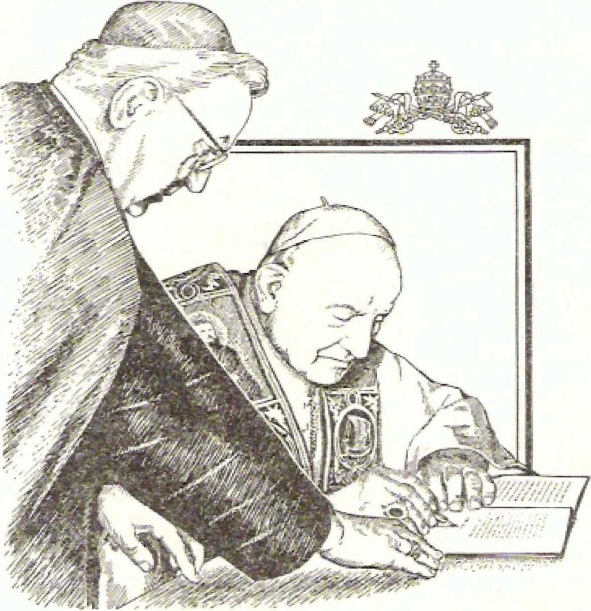Pope John XXIII signing encyclical “Pacem in Terris” os of April 11, 1963, at Vatican City
recorded for television, to be transmitted by the Italian network in a special program and to be made available to television stations all over the earth* The final paragraph dated the delivery of the encyclical with the words: “Given at Rome at St. Peter’s on Holy Thursday, the eleventh dav of April, in the year 1963, the fifth of our Pontificate. JOHN XXIIL”* The encyclical was addressed not only to the Roman Catholic “clergy and faithful of the whole world” but also “to all men of goodwill.” Part IX 1 hereof spoke of the “public authority of the world community/’ not meaning, of course, the United Nations, for Vatican City is not a member of the UN. It went on to say:
. . . This means that the public authority of the world community must tackle and solvo problems of an economic, social, political and cultural character which are posed by the universal common good* For, because of the vastness, complexity and urgency of those problems, the public authorities of the individual states arc not in a position to tackle them with any hope of a positive solution.
The public authority of the world community is not intended to limit the sphere of action of the public authority of the individual political community, much less to take its place. On the contrary, . . .
As is known, the United Nations Organization (U.N.O-) was established on June 26, 1945, and to it there were subsequently added intergovernmental agencies with extensive international tasks in the economic, social, cultural, educational and health fields. The United Nations Organization had as its essential purpose the inafnte-nance and consolidation of peace between peoples, fostering between them friendly relations, based on the principles of equality, mutual respect, and varied forms of cooperation in every sector of human society.
* Let no render make 1.h<- mistake of thinking thai. Pripe Joint XXtll ri-ckiuis that he is the twenty-third in the Pontificate bearing the ELiinit? John by counting: from the apostle John. The apo$Uv was never a pope, but, while he was on the prison isle o£ Patmos receiving the apocalypse or rcvckitian, a bishrip natn.Pi! Clement was Supposed to be pope nt Rome, A-D. 88-97. he being succeeded by Evaristos as pope, A.D, 97-105. No, but Pope Jolm XXIII criunLs his number from John 1, Martyr, pope A.D. 523-526.—Sec the iVotiareai Catholic Almanac, pages 162, 163. under the heading '‘Thu Roman Poti tins."
An act of the highest importance performed by the United Nations Organization was the Universal Declaration of Human Rights, approved in the General Assembly of December 10, 1948- In the preamble of that dccla-lation, the recognition and respect of those rights and respective liberties is proclaimed as an ideal to be pursued by all peoples and all countries.
Some objections and reservations were raised regarding certain points in the declaration. . . .
It is our earnest wish that the United Nations Organization—in its structure and in its means—may become ever more equal to the magnitude and nobility of its tasks, and that the day may come when every human being will find therein an effective safeguard fur the rights which derive directly from his dignity as a person. and which arc therefore universal, inviolable, and inalienable rights. This is all the more to bo hoped for Bluer all human beings, as they take an ever more active part in the public life of their own political common H rs, are showing an increasing interest in the affairs of all peoples, and are becoming more consciously aware that they are living members of a world community.
Pope John NXHT then tied in God’s kingdom with all the foregoing by saying in the sixth last paragraph of the encyclical:
... In order that human society may reflect as faithfully as possible the kingdom of God, help from on high is necessary.*
However, does the United Nations in any way reflect the Kingdom or will it in any way promote the Kingdom? Does the Pontifex Maximus’ admiration for the United Nations or the international admiration for this image of the wild beast” make sure that
• Under a bold-type heading that read -Kennedy Hails Encyclical as a Guide to All.” the New York Sunday A'euw as Of April 21. 1963, published a dispatch dateltncd "Boston, April 20.'* and that sudd: ••President Kennedy today hailed. Pope John's encyclical on peace as a ‘penetrating analysis' of current problems which demonstrated how •on? great faith arid its traditions' could offer sound counsel in all men and women of good will. . . . As a Catholic/ he said, ’I am proud of it, and as an American I have learned from it/
For the first lime tn history the Department of State of the American Govcrnnnnt at Washington, D.U., commented on an encyclical of a pope of the Vatican.
the “public authority of the individual political community’1 will survive the “war of the great day of God the Almighty”? No! According to what the apostle John wrote, it does not make sure that ihe people who idolatrously admire and religiously pray for the United Nations will gain life in Jehovah God's new order of things, which will follow that universal war* God does not write the names of those idolaters in his “scroll of life,” In this scroll, figuratively speaking, he has been writing the names of those worthy of life “from the founding of the world,” that is, from when he founded the human race, the world of mankind. According Io God's written Word, Abel the martyred son of Adam and Eve appears to be the first one “written upon the scroll of life.” (Hebrews 11:4; 12:24; Genesis 4:2-10,25; Matthew 23:35) The names of those idolaters are not written with that of Abel. Hence lovers of eternal life in God’s new order of things will not join in this modern idolatry.
The apostle John goes more deeply into the mystery of this idolized scarlet-colored wild beast as he writes: “Here is where the intelligence that has wisdom comes in: The Seven heads mean seven mountains, where the woman sits on top. And there are seven kings: five have fallen, one is, the other has not yet arrived, but when he does arrive he must remain a short white. And the wild beast that was but is not, it is also itself an eighth king, but springs from the seven, and it goes off into destruction.” (Revelation 17:9-11) Truly, to get at the meaning of this complicated mystery, we need to have not merely intelligence but also heavenly wisdom, “the wisdom from above.”—James 3:17.
The “seven heads” are those on the scarlet-colored wild beast. But these arc an image of the seven heads of the wild beast that ascended out of the ungodlv a™ '•A
sea of mankind. Hence they picture seven political heads that came one after another. They picture world powers. The intelligence that God’s Word of heavenly wisdom gives us helps us to identify these powers as (1) the ancient Egyptian; (2) the Assyrian; (3) the Babylonian; (4) the Medo-Persian; (5) the ancient Grecian or Macedonian; (6) the Roman; and (7) the British-American, These seven symbolic heads are said to be “seven mountains/’ because Daniel 2:34, 35, 41, 45 likens the everlasting world power of the future, God's Messianic kingdom, to a “large mountain” that “filled the whole earth.”
The mysterious harlot, Babylon the Great, is not the same"as the third head of the beast, namely, the
Babylonian World Power. The symbolic third head was also a symbolic mountain, a political organization; but Babylon the Great is strictly a religious empire and she existed and reigned before ancient Babylon on the Euphrates River became 1 he third world power in the days of Nebuchadnezzar. As a religious empire, Babylon the Great reigned over or sat on top of the first symbolic mountain, the Egyptian World Power, about a thousand years before Rome was founded in Italy. Because she is a religious empire, she did not pass away when ancient Babylon fell in 539 B.C. and finally perished during the time of the Roman World Power. As a religious empire she has continued to survive, that she might sit on top of all seven symbolic mountains or world powers, from ancient Egypt Io modern Britain and America.
These world powers are, figuratively, “seven kings,” in the sense of being each a “king of kings,” a king dominating all other kings of the time. For example, the prophet Daniel said to the Babylonian world ruler, Nebuchadnezzar: “You, O king, the king of kings, you to whom the God of heaven has given the kingdom, . . . you yourself are the head of gold.” (Daniel 2: 37, 38) The ruler of the Mcdo-Persian World Power assumed the same title in the letter that he gave to the Bible copyist, Ezra, to carry up to Jerusalem, saying: Artaxerxes, the king of kings, to Ezra the priest, the coypist of the law of the God of the heavens : Peace be perfected?’ (Ezra 7:7-12) When the apostle John saw this Revelation, near the end of the first century of our Common Era, five “kings” had fallen, just as the angel told John, These were the first five of the world powers, from ancient Egypt to and including ancient Greece.
So, when the angel srud to John, “One is,” he meant the world power that had exiled John to the penal island of Patmos, namely, the sixth or Roman World Power, of which the pagan Roman emperor was then the religious Pontifex Maximus. Who, then, is the figurative seventh king whom the angel pointed forward to with the words: “The other has not yet arrived”? -—Revelation 17:10.
Bible prophecy and secular history prove that the angel meant the dual world power Of Britain and America, who were rmms in The first world war of r
1914-1918. None oC the preceding six world powers was so mighty and worldwide as this seventh British’ American World Power, When did he arrive? Not when Rome "fell,” namely, in the year 476 when the Teutonic Odoacer, of Arian faith, captured Rome and became king of Italy. At that time the British Empire and. the United States of America did not exist. Also, at that time there was more to the Roman Empire than Rome and Italy. The capital of the whole Roman Empire was, not Old Rome in Italy, but New Rome, Constantinople, on the Bosporus, at the crossroads of Europe and Asia and of the Mediterranean and Black Seas. In that commercial center of the Roman World Power Emperor Zeno the Isaurlan ruled. lie finally brought about the expulsion of Odoacer from Rome, in 489. 'That part of the Roman Empire in the East came to an end first in 1453, when Constantinople fell to the Ottoman Turks,
In the West, what became the Holy Roman Empire was established by the pope’s strategy in the year 800; but Emperor Napoleon I of France put an end io it in 1806. However, forty-three years earlier, or in 1763, the British Empire, with colonies then in North America, gained the position of the “foremost commercial and colonial power of the world,” as one historian remarks. It maintained this position and brought about the downfall of Napoleon Bonaparte in 1814. By then the United States of America had become established on the basis of former colonies of Great Britain, In many respects and ways it became an ally of Great Britain, to form a dual world power, the mightiest in human history.
The dual feature of this world power arrived by the nineteenth century. Concerning it God’s angel predicted: “When he docs arrive he must remain a short while.” (Revelation 17:10) In view of the long duration of the sixth or Roman World Power, the seventh or British-American Dual World Power can remain only “a short while,” now that the “kings of the entire inhabited earth” are being gathered to a place or situation Biblically called I-Iar-Magcdon for their destruction. Even if we measure from the above-mentioned date of 1763, the time till the ‘war of the great day of God the Almighty” is comparatively a “short while.” (Revelation 16:14, 16) The most of this “short while” is now in the past. Its marked end is near.
The Seventh World Power is rhe main promoter and supporter of the United Nations, the present form of rhe “image of the wild beast.” Certainly, then, this international arrangement for peace and security must go down into destruction when the Anglo-American World Power does at Har-Magedon. Destruction is what God’s angel predicted for this scarlet-colored wild beast by saying: “The wild beast that was but is not, it is also itself an eighth king, but springs from the seven, and it goes off into destruction.” (Reve-
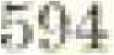lation 17:11) The United Nations of today contains as members the Seventh World Power and the national remnants of all the previous world powers. So it owes its existence to those seven world powers.; it springs from them. As this modern scar let -colored beast is an image of the leopard-spotted wild beast from the sea, which is a summation of all seven world powers, the beastly '‘image” is also in itself a world power or “king/'1 hence “an eighth king/* It has put its own military police force into the field of action. Now that it has ascended out of the abyss and been out since 1943, the Bible shows that what next it will do is to go off into destruction.
TEN HORNS RATTLE WITH THE LAMB
In Daniel’s prophecy horns on the head of a symbolic animal arc used to represent individual kings or national rulers. As the number ten is used in the Bible to stand for earthly completeness or perfection, the expression “ten horns” would symbolize, not ten literally, but all or the complete number of kings or national rulers on earth. Horns can be used violently, aggressively, by a wild beast. This is how the scarletcolored wild beast uses its full set of horns, according to what God’s angel says to John:
“And the ten horns that you saw mean ton kings, who have not yet received a kingdom, but they do receive authority as kings one hour with the wild beast. These have one thought, and so they give theii' power and authority to the wild beast. These will battle with the I-arnb, but, because he is Lord of lords and King of kings, the Lamb will conquer them. Also, those called and chosen and faithful with him will do so/’—Revelation 17:12-14.
The scarlet-colored wild beast has ten horns. At least otic of these horns was upon the seventh head, possibly two horns, inasmuch as this seventh head pictured a dual world power, Britain and America
in alliance. (Compare Daniel 8:20-22.) In John’s day that seventh symbolic head had not yet arrived; and hence its symbolic horn was alxsentt or possibly its two horns.—Revelation 17:10.
Tints in John’s day the ten horns of this particular wild beast were not all present actually. But now since the eighteenth century all seven heads with all the ten horns arc present. Before this, especially back in .John’s day. it could rightly be said that the ten horns “have not yet received a kingdom.” Another thing: This scarlet-colored wild beast, which is an “image” of the sea beast, did not come into its existence till after World War I, in the form of the League of Nations. Hence it was only from then onward that the rulers whose nations joined the League and its successor, the United Nations, could “receive authority as kings” with the beast.
Of the seventh head of this brilliant wild beast it is said that “when he does arrive he must remain a short while.” So, from the beginning of the Seventh World Power of Britain and America until its approaching destruction, the time is reckoned as only “a short while.” For that reason the existence of the League of Nations and its successor, the United Nations, from 1920 onward, must be still shorter. Revelation 17:12 compares the time to just “one hour,” for it says that the member nations “receive authority as kings one hour with the wild beast.” Since 1920 we have been in that short “one hour” period. Many nations did not get into this international “wild beast” organization until it appeared in its new guise as the United Nations in 1945. Their time for membership in it is still shorter.
In what way can it be said that “these have one thought”? Of course, the Charter of the United Nations should fix the thought for all its member nations or “kings” and it should unite them all in one purpose. But the way that the veto power has been used in sessions of the Security Council of the UN, and the refusal on the part of some members to pay the required taxes for certain military ventures of the UN, and the disorders that have featured some of the meetings of the General Assembly, and the continual lack of oneness of mind on crucial proposals as to general disarmament and stopping of nuclear weapons’ testing, etc., all this proves that these "ten kings" are not one in thought. J low, then, is the angel’s prophecy true, that “these have one thought”? In this way:
The modern-day "ten kings” have "one thought" in opposing God’s Messianic kingdom, his kingdom in the hands of the "Lamb of God that takes away the sin of the world.” The very League of Nations and its successor, the United Nations, represent an international conspiracy against God's kingdom, which was born in the heavens in 1914 at the end of the Gentile Times. This international organization for peace and security by human means is a deceptive counterfeit for God’s kingdom by his Lamb, which Jehovah’s witnesses have been preaching to all the nations since the end of World War I. Thus the whole scarletcolored "wild beast” is against the heavenly Messianic kingdom. In order to support a substitute for that kingdom and in order to further their fight against that Messianic kingdom, the symbolic ten horns or kings do unitedly "give their power and authority to 1he wild beast,” just as Revelation 17:13 foretold. Other nations that are not members of the United Nations are just as much against God’s Messianic kingdom. Accordingly they take part with the ‘'wild beast” in this opposition.
These symbolic ten horns on the heads of the scarlet-colored wild beast are included among the "kings of the entire inhabited earth” who arc being gathered under demon influence to the "war of the great day of God the Almighty” at Har-Magedom It is only to be expected, then, that “these will battle with the I-amb,” as Revelation 17:14 assures us. Being earthly, with only natural eyesight, these “ten kings” (who make up the real power of 1he United Nations “wild beast”) cannot tight directly against the Lamb of God, as he is heavenly and spiritual and is not visible to them.
But the Lamb has a remnant yet on earth of his spirit-lx‘gotten followers, whom God has called and chosen and who are striving to be faithful with the Lamb. They are visible to these “ten kings.” They become prominently visible as they take their stand for Christian neutrality toward the conflicts of the kingdoms of this world and as they preach in all the inhabited earth the good news of God’s kingdom. —Matthew 24:1-1; Ephesians 6:11-18; Acts 5:28, 29.
Against these called, chosen and faithful ones the “ten kings” can and do fight even to the point of “framing trouble by decree” against them, to make everything appear legal and in the national interests. (Psalm 94:20) They also light against the God-fearing companions of this remnant, namely, the “great crowd” whom John saw standing before God's throne and shouting: “Salva 1 ion we owe to our God, who is seated on the throne, and to the Lamb.” (Revelation 7:9, 10, 13-17) In fighting against the spirit-begotten remnant and the “great crowd” who join them in preaching God’s kingdom, the symbolic ten kings are really battling against the Lamb of God, for what they do to His followers he accounts as done to him.
The earthly followers of the Lamb of God are also lamblike in disposition. Yet the symbolic ten horns of the wild beast ought not to expect to win the battle. They should not forget that the Lamb is also “the Lion that is of the tribe of Judah” and in battle with the foes of God’s kingdom he will display his lionlike qualities. (Revelation 5:5; Genesis 49:9, 10) At the close of the Gentile Times in 1914 Jehovah God enthroned and crowned him as king in the heavens. War in heaven followed, and the newly enthroned King cast down Satan and his demons from heaven to the earth. So now the Lamb is the Lord of the ancient King David and is also reigning King. In comparison with lords and kings of this earth, he is a superior Lord and King, which is indicated by his new title “Lord of lords and King of kings.” God has given him all the necessary authority in heaven and on the earth.—Matthew 28:18: Acts 2:32-36. Ir
For those reasons the heavenly Lamb will conquer all the rulers or kings now united in the United Nations, the symbolic “ten kings” or "ten horns” of the wild beast. Sharing with the Lamb in this conquest will be “those called and chosen and faithful with him.” This would mean the 144,000 of them, who will all finally stand with him on the heavenly Mount Zion. (Revelation 14:1-3) The ones who died faithful prior to the battle and who were rewarded with a resurrection to life with him in the heavens will be with him in the battle. (Revelation 14:13; 2:26-28) The remnant of the 144,000 yet on earth will not take up material weapons against the "ten kings,” but because they remain faithful to the Lamb throughout the battle they will be accredited with a share in the conquest. This would appear to be an additional proof that this remnant, while yet on earth, will survive this battle and will thus, while yet in the flesh, enter into the new order aftei' the battle*
VIOLENT END OF THE GREAT HARLOT
If, now, the "ten horns” on the seven heads of the wild beast lose the battle with the Lamb of God, and are destroyed, what happens to the great harlot, Babylon the Groat, who rides the scarlet-colored beast for the "one hour” of its activities? We are not left to wonder, for John writes: **And he says to me: *The waters that you saw, where the harlot is sitting, mean peoples and crowds and nations and tongues. And the ten horns that you saw, and the wild beast, these will hate the harlot and will make her devastated and naked, and will eat up tier fleshy parts and will completely burn her with fire. For God put it into their hearts to carry out his thought, even to carry out their one thought by giving their kingdom to the wild beast, until the words of God will have been accomplished. And the woman whom you saw means the great city that has a kingdom over the kings of the earth.*”—Revelation 17:lo-18.
This must, of course, be fulfilled before the symbolic ten horns and the scarlet-colored seven-headed wild beast themselves arc destroyed in battle with the Lamb of God. The “ten horns’* as kings hold political control over their respective nations and peoples, but the harlot Babylon the Great controls a religious empire. She wields religious influence and control worldwide, over “peoples and crowds and nations and tongues,” as she sits on them, figuratively speaking. She even influences and, as far as possible, dictates to the rulers of these peoples and nations. These “kings of the earth,” because of the religiousness of their subjects, find it well for themselves to adopt a form of religion. In this way Great Babylon has, in fact, a “kingdom over the kings of the earth.’* The kingdom of Babylon the Great is therefore a religious world empire, something bigger than sixtcen-centuries-old Christendom and yet including Christendom.
However, the symbolic ten horns and the scarlet-colored wild beast will get tired of her “kingdom” over them and tired of their religious fornication with her. Jehovah God has decreed that it must be so. He has a “thought” regarding her destruction, and he can cause the symbolic “ten horns” to make it. also their own “one thought,” so that they act as a unit in what they do.
The symbolic ten horns or kings are against God’s kingdom in the hands of his Lamb. To make their opposition manifest, he puts them on judgment before him. In his trial of them he makes them produce the evidence. Then on the basis of this evidence he can righteously sentence them to destruction and execute the sentence. A.T1. 1914 was the critical vear for the “ten kings” because the Gentile Times ran out in the fall of that year. So the question wasT What would the “ten kings** do after their lease of power ran out? Jehovah God had foretold what they would do; but they were to be judged, not by prophecy, but by deeds. Would they actually do what God had foretold? The history of that critical time answers.
War over world domination broke out in the heart of Christendom in 1914. It was accompanied by food shortages, by pestilences, by earthquakes in one place after another, and by inventing more devastate weapons of warfare. Thus God let the “ten kings” see just how helpless religious Babylon the Great was in preventing a calamitous world war. Rather than prevent world war, she Look sides in it by means of her harlot daughters, even with prayer’s and imposing religious rites. God let the “ten kings” see how destruction stared them in the face if they persisted in such warfare.
God thus forced them to make a decision. Would they renounce their national sovereignties and bow to God’s established kingdom as the means for saving mankind? Or, would they create a man-made international organization for insuring and preserving world peace and security and turn to it for perpetuating their distinct nationhoods and human sovereignties? Political self-interest dictated what the “ten kings” should do, and thus they were induced to come to “one thought/’ namely, to put their confidence in man and to form at! association of nations in order to prevent theii' self-destruction and to preserve rule of mankind by man and not by God.
This “thought” led to the bringing forth of the political “image” of the wild beast that had ascended out of the sea. So they brought forth rhe symbolic scar1 ci-colored wild beast Then the “ten kings’* carried out their thought respecting this image “by giving their kingdom to the [seai let I wild beast,” the League of Nations first and the United Nations now. This united action will continue “until the words of God will have been accomplished.”
In carrying out this one purpose and th ought of theirs, they arc also carrying out God’s “one thought.” Uis 1 bought was for these enemies of his kingdom to combine themselves in one worldwide political organization and, by it, present to him and his Messianic kingdom a united front, that he might face them all at one time and destroy them all together at one stroke.
Joshua 11:19,20.
As regards Babylon the Great, she kept up hei' harlotry with the “kings of the earth,” Under the leadership of Christendom she should have known that the Gentile Times for modern-day Gentile kings to rule had run out. Yet she at. once sanctified the international political organization of rulers in her own way, by her own rituals. By doing this she determined to 'make earth's inhabitants drink still more from her “golden cup” and get worse “drunk with the wine of her fornication.” In this way she mounted the scarlet-colored “wild beast” in 1920 in order to ride it.
At God’s due time, and by the force of circumstances that he will produce, the present-day lovers of Babylon the Great will turn on her with disgust and violent designs. Their turning upon her will not necessarily mean that they will go communistic along either the Soviet Russian line or the Red Chinese line. At the time of publishing this book the majority of the symbolic “ten kings” who are in the United Nations are unwilling to turn against the world empire of Babylonish religion. The Secretary-General of the UN is, not a “Christian/’ but a Buddhist. The president of t he seventeenth session of the UN’s General Assembly is a Mohammedan.
Before Jehovah God destroys those “ten kings” at the place Biblically called Ilar-Magedon, he will cause their passionate love of the “great harlot” to turn to hatred. He has done such a thing before. In ancient times he warned religious Jerusalem that he would bring her former passionate lovers against her to mutilate and destroy her. He had already caused a like experience to befall Samaria, her sister capital. Read the prophecies on this in Ezekiel 16:33-42 and 23:1-31. Great Babylon is no better than unfaithful, apostate Jerusalem. She deserves to be destroyed like a harlot, and Jehovah God will see to it that, ironically, her former lovers will take a hand in the violent destruction of her.
Terrible is the end that awaits this world empire of Babylonish religion. The “wild beast'" organization, in the majority of whose member nations she trusts to protect and save her, will not rescue her when the time comes for Jehovah to execute his judgment upon her. Not just the symbolic ten horns or kings, but the whole beastly organization will learn to hate her, losing their pleasure in her. This will especially be true after the sixth plague poured out upon the symbolic “great river Euphrates” has been completely fulfilled and its waters have been dried up, thus taking away the protection and support that she used to get from the people.—Revelation 16:12.
“Ten kings” and the “wild beast” will devastate her of the vast wealth that she has gathered in carrying on her religious business. They will make her appear shameful like a naked woman in public, that everybody may sec how false and useless her religion is and stop superstitiously taking part in it. Like the dogs that ate up the fleshy parts of Baalistic Queen Jezebel of Israel, leaving only the palms of her hands and her feet and skull, they will devour her body with which ihey once had liked to unite. They will destroy all her beauty of form and her religious capacity to give soothing pleasure to ungodly, worldly men. Instead of her feeding on others, they will feed on her, as long as there is anything to her. What is left of her frame they will burn with fire, as if she were, not a Babylonian temple prostitute, but the unchaste daughter of a priest in ancient Israel. (Leviticus 21:9; Genesis 38:24) What this will mean for the religious buildings of Babylon the Great and for her priests and other religious clergy and orders is something frightful to contemplate. We make no attempt to describe it.
Babylon the Great will pay dearly for all her religious crimes, her disgusting things. Truly it was a terrible judgment that the apostle John saw executed upon her in prophetic vision. No less terrible will be the sight when this prophetic preview of nineteen centuries ago is fulfilled before our very eyes. The Christian witnesses of Jehovah will take no part with the “ten horns” and the “wild beast” in violently destroying the “great harlot,” Babylon _1 he Great. They have no appointment from Jehovah God to act as his executioners against the world empire of Babylonish religion. Because of practicing the true and pure religion they themselves will find no favor in the eyes of the “ten horns” and the “wild beast” and will be in danger, liable to cittack by the antireligious. But God Almighty w HL protect and prese rve them through that awesome period of His executing righteous judgment upon the “great harlot.”*—-Psalm 37:32-34.
c H A P T E R
27
VV HEN ancient Babylon fell before King Cyrus the Persian in 539 B.C., it was God’s will that her sudden fall should be made known among all the nations. (Jeremiah 50:1-3) It would correspondingly be His will that, when her counterpart, Babylon the Great, falls and is destroyed, this event of worldwide consequences should be given all the publicity due. In vision the apostle John saw God’s publicity agent and wrote:
“After these things I saw another angel descending from heaven, with great authority; and the earth was lighted up from his glory. And he cried out with a strong voice, saying: 4She has fallen' Babylon the great has fallen, and she hcis become a dwelling place of demons and a lurking place of every unclean exhalation and a lurking place of every unclean and hated birdl For because of the passion-arousing wine of her fornication all the nations have fallen victim, and the kings of the earth committed fornication with her, and the traveling merchants of the earth became rich due to the power of her shameless luxury? ” —Revelation 18:1-3,
The angelic announcer of Great Babylon’s fall and destruction had great authority and was brilliantly glorious. He could picture no one better than Jehovah’s archangel, the glorified Lord Jesus Christ. As the Greater Cyrus he gains great glory by conquering
Babylon the Great. As an archangel, his name in heaven is Michael, which means “Who Is Bike God?” His destruction of Babylon the Great brings light to Jehovah’s Christian witnesses on earth, who have been persecuted by that world empire of Babylonish religion, (Daniel 10:21; 12:1; Revelation 12:7; 1 Thessalonians 4:16,17) Destruction of Babylon the Great brightens the earthly situation for them,
Babylon the Great is now likened, not to a woman playing the harlot with kings, but to a great city. Loudly Jehovah's announcer proclaims that she has fallen into destruction. She has become like a ruined city without hunuui inhabitants OT domestic animals, She has become like a haunted ruin, amid whose desolation only wild animals reminding one of demons would make their dwelling place. She stinks! From her arises every unclean exhalaHoi’ to s.t<-r::-li the whole neighborhood. Every unclean and hateful bird lurks about the place. All her glory has departed, and all her luxurious living.
This loathsome condition of ruin comes upon her after the symbolic ten horns of the scarlet-colored wild beast turn on her and devastate her. In this way Jehovah God rewards her because she has victimized all the nations with the stupefying “wine of her fornication” and she has enticed the kings of the earth to commit religious fornication with her and she has lived in shameless luxury. She has carried on a reli-gioHS racket to the enriching also of the “rnerchar’8 of the earth,” who find Babylonish religion good for business. In Christendom, Babylon the Great has turned what professed to be God's temple into a “house of merchandise,” a “den of thieves.” (John 2:16; Matthew 21:13, JV) Here let it be noted that the angelic announcer mentions “kings of the earth” and “merchants of the earth,” but no priests. Why? Because Great Babylon herself stands for the world empire
of false religion with its priests, clergymen, monks, nuns, astrologers, spiritists, sorcerers.
However, before Babylon the Great Is made a demon-infested ruin unfit for men to inhabit, Jehovah’s witnesses who are held captive in her needed to do something in view of her approaching destruction. As we read what the apostle John writes for the captives in Groat Babylon, it is as if we are listening to the words of Jeremiah 50:8’10; 51:6, 45, 50. John wr ites:
“And I heard another voice out of heaven say: ‘Get out of her, my people, if you do not want to share with her in her sins, and if you do not want to receive part of her plagues. For her sins have massed together clear up to heaven, and God has called her acts of injustice to mind. Render to her even as she herself rendered, and do to her twice as much, yes, twice the number of the things she did; in the cup in which she put a mixture put twice as much of the mixture for her. To the extent that she glorified herself and lived in shameless luxury, to that extent give her torment and mourning. For in her heart she keeps saying, “I sit a queen, and I am no widow, and T shall never see mourning.” That is why in one day her plagues will come, death and mourning and famine, and she will be completely burned with fire, because Jehovah God, who judged her, is strong,’ ”—Revelation 18:4-8.
Since the year 1919 Jehovah's witnesses, held captive in Great Babylon during World War I, have been obeying this divine command to “get out of her.” We must remember that in the case of ancient Babylon on the Euphrates River the exiled Israelites could not get out of her until after she fell in 539 B.C. and her conqueror, Cyrus the Persian, issued his decree of release to them. So in 1919, by Jehovah God's judgment in condemnation of her as his opposer, Babylon the Great experienced a fall and the Greater Cyrus, the reigning King Jesus Christ, issued the
command from heaven to the remnant of the 144,000 on earth 10 get out of her and go forth as Jehovah’s free people to preach everywhere the good news of God’s victorious kingdom. The remnant had every reason to get out.
The remnant of the 144,000 knew that Great Babylon was now doomed to utter destruction, that it was now the beginning of the end for her. They did not wish lo be caught in her destruction. God also opened their eyes to see that the symbolic seven last plagues of Revelation 15:1 to 16:21 were to be poured out on her, besides literal destructive plagues or blows. They did not wish to receive part of these by staying captive to Babylon the Great and thus sharing in her sins for which she deserved such plague.
As regards her sins, when gory World War I had ended and she then advocated the League of Nations, forerunner of the United Nations, her sins that had been committed in the name of religion had “massed together clear up to heaven." That was at least high enough for God in heaven to notice, as in the case of ancient Babylon. Against Jehovah God she had heaped up this mountain of sin. (Jeremiah 50:14; 51:9) That is why he at last “has called her acts of injustice to mind.” He has not forgotten her multitudinous sins. At his time of judgment he calls them to mind, tu punish her for them. In the case of ancient Babylon, Jehovah executed vengeance for his temple in Jerusalem and vengeance for the city of Zion. (Jeremiah 50:28; 51:11, 35, 36) What, now, about Babylon the Great? She also has committed sins against him by mistreating his spiritual temple and spiritual Zion. She deserves to be paid back in kind.
When Jehovah executes vengeance upon her for all her sins against him and his witnesses for four thousand years, he has to concentrate it in one short period of time at the end of this system of things. This explains why he commands his executional forces to give her
twice as much as she rendered to his people, and make her drink a doubly intoxicating cupful of dating, stupefying troubles, sorrows, mistreatment, ruin, shame and insults, from the effects of which she will never regain consciousness. Make it as hitter as possible! Hence the remnant of the 144,000 on earth, who have suffered so much at her hands, are under divine command to declare in advance Jehovah’s coming vengeance? upon her. They must do so despite all her protests, objec-tions and opposition to their proclaiming God’s “day of vengeance.”—Isaiah 61:1,2.
O how she used to glorify herself before the awestruck people and to live “in shameless luxury,” while the poor people, purposely kept in ignorance, suffered in poverty and under oppression by her rich favorites! So now in equal degree she is to be given torment and mourning. We do not have to be surprised at it or feel sympathy for that heartless world empire of Babylonish religion, as if Jehovah’s vengeance were unrighteous. What pity does she deserve?
She has been like her ancient prototype on the Euphrates River in thinking that she was too strong and influential for such things to come upon her, especially from the God of Jehovah’s witnesses, whose God she has despised and defied. (Isaiah 47:7, 8, 10) Yet, “because Jehovah God, wrho judged her, is strong,” his death-dealing plagues will come upon her amazingly fast, as if “in one clay.” Then she will no longer sit as a queen, a mistress, an empress over a religious world empire. She will become a widow, a person bereaved of her billions of religious subjects, especially priests, clergy and other religious leaders. For all those she will have reason to mourn. Besides death and mourning, she will at last know famine herself, being deprived of all her means by which she “lived in shameless luxury.” Finally, that nothing of her may remain, “she will be completely burned with fire” in all-consuming destruction. “For our God is also a consuming fire.''—Ilebrcws 12:29.
MOURNERS
At her fiery destruction Babylon the Great will have sympathizers to mourn over her briefly. The apostle John indicates who they are as he writes down what the “voice out of heaven’* says: “And the kings of the earth who committed fornication with her and lived in shameless luxury will weep and beat themselves in grief over her, when they look al the smoke from the burning of her. while they stand al a distance because of their fear of her torment and say, 'Too bad, too bad, you great city, Babylon you strong city, because in one hour your judgment has arrived’’ “—Revelation 18:9, 10.
Those mourning kings could hardly be identical in personality with the symbolic ten horns of the scarletcolored wild beast that hate the harlot, Babylon the Great, and devastate her and burn her with fire. They are kings or political rulers who fornicated and enjoyed shameless luxury with her during her popularity and who do not turn on her. They have been taken by surprise, because, as they themselves mournfully say, Jehovah’s execution of judgment upon her arrived “in one hour/' What fun they used to have with her! But, when judgment comes like a thief, they cannot help or preserve her foi* their further unclean pleasure. Afraid to interfere, they stand off in fear of sharing the fiery torment with her. Still, they share responsibility for her crimes. So, next in order, they will inescapably suffer pain when God executes judgment upon them.
Babylon the Great was noticeably fond Of merchantmen, particularly men of Big Business, even gangsters and racketeers. She religiously soothed their bad consciences. How much they will miss her! How much so, Revelation 18:11-17 tells us, with great details:
“Also, the traveling merchants of the earth are weeping and mourning over her, because there is no one to buv their full stock any more, a full stock of gold and silver and precious stone and pearls and fine linen and purple and silk and scarlet; and everything in scented wood and every sort of ivory object and every sort of object out of most precious wood and of copper and of iron and of mat ble: also cinnamon and Indian spice and incense and perfumed oil and frankincense and wine and olive oil and fine flour and wheat and cattle and sheep, and horses and coaches and slaves and human souls. Yes, the fine fruit that your- soul desired has departed from you [O Babylon], and all the dainty things and the gorgeous things have perished from you, and never again will people find them,
“The traveling merchants of these things, who became rich from her, will stand at a distance because of their fear of hcr torment and will weep and mourn, saying, "Too bad, too bad—the great city, clothed with fine linen and purple and scarlet, and richly adorned with gold ornament and precious stone and pearl, because in one hour such great riches have been devastated]’ ”
Religious Babylon the Great has abounded in all that wealth. The world empire of Babylonish religion, after millenniums of accumulating such materialistic things, is doubtless one of the richest organizations, if not actually the richest organization, on earth today. Self-seeking businesses of all kinds have found it commercially and financially rewarding to patronize the materialistic world empire of Babylonish religion. What a market for self-enrichment they will have been deprived of by her destruction! With the earthly kings they will bemoan her destruction* this “in one hour.’"
The employees of these “traveling merchants1-’ will also feel the worldwide effects of the burning of Great Babylon, They will join their employers in weeping and wailing, just as Revelation 18:17-19 describes it For us: “And every ship captain and every man that voyages anywhere, and sailors and all those who make a living by the sea, stood at a distance and cried out as they looked at the smoke from the burning of her and said, ‘What city is like the great city?* And they threw dust upon their heads and cried out, weeping and mourning, and said, ‘Too bad, too bad—the great city, in which all those having boats at sea became ricIt bv reason of her costliness, because in one hour she lias been devastated’* ”
Ancient Babylon with the Persian Gulf and the Euphrates and her canals even to the 'Tigris River had a great fleet of ships of commerce and did a great business by sea. Many ships from other lands put in port at her. Today, Great Babylon, sitting like the “great harlot” on the symbolic waters of “people:-and crowds and nations and tongues,'’ does a great materialistic business by means of such “waters.” (Revelation 17:1, 15, 18; Isaiah 43:14) This provides employment for many of her religious subjects, especially through the “traveling merchants of the earth.” Even her religious missionaries wer e unknowingly used to open up commercial routes and markets abroad. Now, as “in one hour/’ the execution of God’s judgment and vengeance upon Babylon the Great cuts off this commercialized religious market or emporium. Hence all employers and employees who do business now with her by means of the sea of materialistic humanity will feel the pinch economically and mourn.
THE (iluAD ONES
The symbolic “ten horns” of the scarlet-colored wild beast will doubtless rejoice at wrecking Babylon the Great as far as they can do so. In doing this i hey may think they have proved that there is no God at all, that there is no Jehovah. But those who have got out of Babylon in obedience to God’s command will not rejoice with those “horns.” They will rejoice with God’s heaven. The divine command is: “Be glad over her, O heaven, also you holy ones and you apostles and you prophets, because God has judicially exacted punishment for you from her!”—Revelation 18:20,
It was foretold, in Jeremiah 51:48, that heaven and earth would rejoice over the despoiling and destruction of Babylon the Great. Those in heaven and on earth who long to see Jehovah God avenged and vindicated will have great cause to be glad. They have never tried to avenge themselves upon Babylon the Great. They have waited and yielded place to God for him to express his wrath at his marked time. In the court of the universe he takes up their legal cause and at last judicially exacts punishment for these weak ones.—Romans 12:19.
The apostle John saw the prophetic vision of this and he readily obeyed the command to “be glad over her.” But, according to the Scriptures, the twelve faithful apostles of Christ and the Christian prophets and other Christian “holy ones” who died have by now had a spiritual resurrection to life in heaven. So they can rejoice with Jehovah God and his Son Jesus Christ and all the holy angels up there in heaven. (Revelation 14:13) But there is a remnant of the 144,000 “holy ones” yet on earth, who have a heavenly hope, and already they are glad over the prospect of an early destruction of Babylon the Great, The “great crowd” of their sheeplike companions with an earthly hope are also glad with them. Far gladder they will all be when they will have survived and actually witnessed God’s execution of due punishment upon Babylon the Great.
When the faithful prophets and other holy ones of ancient times before Christ come back in resurrection to earthly life, they will be glad when they are informed that Jehovah God duly punished and destroyed the world empire of Babylonish religion.
The thing for Jehovah’s witnesses to do is to be patient a little while longer, keeping fully occupied with preaching the good news of God’s reigning kingdom and proclaiming the coming day of God’s vengeance upon Great Babylon and all the other enemies. The kings, the traveling merchants, the ship captains, the sea voyagers and the sailors of this world are all going to bemoan the fact that “in one hour” Babylon the Great was brought to nothing. Not only their mournful words, but also the words and action taken by God’s angel assures us that her end will be swift. John savs of this:
“And a strong angel lifted up a stone like a great millstone and hurled it into the sea, saying: ‘Thus with a swift pitch will Babylon the great city be hurled down, and she will never be found again. And the sound of singers who accompany themselves on the harp and of musicians and of flutists and of trumpeters will never be heard in you again, and no craftsman of any trade will ever be found in you again, and no sound of a millstone will ever be heard in you again, and no light of a lamp will ever shine in you again, and no voice of a bridegroom and of a bride will ever be heard in you again; because your traveling merchants were the top-ranking men of the earth, for by your spiritistic practice all the nations were misled. Yes, in her was found the blood of prophets and of holy ones and of all those who have been slaughtered on the earth.’ ”—Revelation 18:21-24.
As the apostle John saw and heard this, his mind may have gone back some 700 years to when Seraiah, the quartermaster of King Zedekiah, stood on the bank of the Euphrates River at Babylon and read aloud the book of Jeremiah's prophecy against Babylon, then tied a stone to it and pitched it into the midst of the river, saying: “This is how Babylon will sink down and never rise up because of the calamity that I [Jehovah] am bringing in upon her.” (Jeremiah 51:59-64) Babylon the Great., as typified by ancient Babylon, is to sink into destruction and never to rise up and be found again. Surely a great millstone, when hurled by a strong angel into the sea, would sink fast to the bottom. That is the way Great Babylon's destruction will be—swift, permanent.—Matthew7 18:6.
No more will Babylon the Great be the gay place that she is today, brilliantly lit up, ringing with music and temple bells, roaring with activity, featuring high-priced showy weddings, teeming with many children for perpetuating herself. Cloaked under religion, her spiritual leaders w ere really materialistic merchants, top-ranking men in worldly, nonrcligious circle*. They oppressed and defrauded their religious flocks, fleecing the sheep. They represented a religious system that actually practiced demonism, sorcery, magic, religiously drugging the people and misleading all the nations of this world. Such a system of false religion in opposition to the true God, Jehovah, deserves to be and will be destroved.
God’s law’, given to the patriarch Noah after the great flood, said: "Anyone shedding man’s blood, by man will his own blood be shed," (Genesis 9:6) According to this law, Babylon the Great deserves to be put to death. She has an enormous bloodguilt before God. On her skirts is found the blood of even Jehovah’s prophets and other holy ones who were Jehovah’s witnesses. This brings up the subject of religious persecution and calls to mind all the persecution of one another by the religious sects of Christendom, including gory religious wars and crusades. How a difference in religion inflames to rioting, mobbing, mutilating and human butchery was displayed when Hindu India and Moslem Pakistan were partitioned in the summer of 1947 and Sikhs and Hindus and Moslems gave vent to their religious hatreds. Concerning the religious slaughter that took place The Americana Annual pages 326, 327, says:
Unhappily. the speed with which partition had been effected brought in its train immense economic dislnra-tion and renewal <■. communal strife. More them
4,000,000 persons were involved in an exchange of populations between the two states, and during the first two weeks more people wore killed each day in the Union of India and Pakistan than in all the count ries under scrutiny at that time by the Security Council of the United Nations. The separation of Moslems and non-Moslems destroyed the previous efficiency of the vital services, . . .
Without going into detail on this horrible outbreak of interreligious bad feeling, the 7.9JS' Britannica Boofc of the Year says on page 385, paragraph 2, regarding partition of the Punjab:
Amritsar, the sacred city of the Sikhs, was left in their hands. l( had, however, the effect of cutting the Sikh community in two, 2,000,000 being in the eastern Punjab (dominion of India), and 1,750,000 in Pakistan; moreover, many important Sikh shrines and landed estates wore on the western side of the river. This led to a concert or! attempt on the part of the Sikhs to eliminate the local Moslems, which in its turn provoked savage reprisals. The result was a mass migration of Sikhs and Hindus on the one hand into the dominion of India, and of Moslems into Pakistan on the other. Convoys of refugees fleeing by road and rail were violently attacked and in many cases virtually annihilated. Both dominions did their best to ensure safe transit for the refugees, but this was rendered difficult by the reluctance of troops and police to take resolute action against their coreligionists....
Call to mind also that. World Wars I and H both started in Christendom and that the religious clergymen of Christendom failed to stop these wars and then sanctified them. Certainly, then, God's “strong an gel’* did not exaggerate matters by declaring that in Babylon the Great “was found the blood ... of all those who have been slaughtered on the earth.” (Revelation 18:21) The blood-soaked earth cries out to Jehovah God for vengeance upon her.
c H A P I E R
28
p i
I 1ALLELUJAHS ring throughout the holy heavens while on earth the kings, the traveling merchants, the ship captains and the sailors arc bewailing the sudden destruction of the mysterious "'great harlot/* Babylon the Great. In heaven the glorified Jesus Christ understands what the joyous outcry Hallelujah moans, for he himself was once a Hebrew on earth and the outcry is in Hebrew and means “Praise Jah!” the name Jah being the abb revia tion for Jehovah.* Although the apostle John wrote Revelation in Greek, he understood what Hallelujah meant, for he also was a Hebrew. After he saw the prophetic visions showing Baby Ion’s end, he says:
“After these things I heard what was as a loud voice of a great crowd in heaven. They said: Hallelujah [Praise Jah, you people]! The salvation and the glory and the power belong to our God, because his judgments are ’rue and righteous. For he has executed judgment upon the great harlot who corrupted the earth with her fornication, and he has avenged the blood of his slaves at her hand/ And right away for the second time they said: Hallelujah!' And the smoke from her goes on ascending forever and ever.”—Reve-
* On the word ‘'Hallelujah” TAe jlT.rt<ricjan ZHetioiurrs* (1947
edition), I'atpe 546a. says: 4’j_ Praise ye the Lord! . . . [t. Hebrew, rn. JuxtMIuj/iih. praise ye JchwahJ.” See also Webster’s .Verw Inter' national Unati ridded jOietic-twry. under HaRctajafe.
lation 19:1-3, NW, with marginal reading of the 1950 edition.
Jehovah God will indeed deserve praise for avenging all the bloodshed for- which the “great harlot/’ Babylon the Great, is responsible, particularly the blood of his own dedicated slaves. She must pay with her own life for all the slaughter of human lives for which she is accountable. She has corrupted earth’s people with her religious fornication, having a good time with all the worldly rulers and the materially rich. Hei* deserved destruction comes on her as a result of Jehovah’s cxfX’iition of his judgment. It is a proof that “his judgments arc true and righteous.” Only his almighty power could destroy such a long-entrenched, mighty world empire as that of Babylonish religion. To him should go the glory for its destruction, and not to the international communists and radicals. The salvation of his people from her is to be ascribed to him. There is all good reason to repeat his praises, saying: “Hallelujah!”
To symbolize that her fiery destruction is for all time is the fact that the smoke from the burning of her “goes on ascending forever and ever." Then true Christianity will prevail forever’
To this call to praise Jehovah throughout the heavens there comes a combined Amen! (meaning “Truly; verily; so let it lx?”). All those assigned to sit on thrones in the heavens of God’s presence, as pictured by the “twenty-four older persons,” and all those around God’s central throne who continually call attention to his holiness, as pictured by the “four living creatures,” all these together voice this strong Amen! The apostle John comments on how in harmony they are with all the rest of the inhabitants of heaven by saying: “And the twenty-four older persons and the four living creatures fell down and worshiped God seated upon the throne, and said: ‘Amen! Hallelujah [Praise Jah, you IF
people]!’”—Revelation 19:4, margin (1950).
It is altogether fitting for the spirit creatures in the heavens to cry Hallelujah and incite one another to praise Jehovah God for his victory over Babylon the Great, But what does God himself say as to where the praise should go? What docs he tell his faithful slaves on earth who have witnessed and survived Great Babylon’s destruction to say or do? John informs us, saying:
“Also, a voice issued forth from the throne and said: 4Be praising our God, all you his slaves, who fear him, the small ones and the great? ”—Revelation 19:5,
The voice from God’s throne is the same voice as that which issued centuries previously when he inspired the psalms, such as Psalms 22:23; 134:1; 135:1; 115:3, from which he quotes the words.
No doubt God here speaks by means of his glorified mouthpiece, Jesus Christ, who is called *£The Word of God.” (John 1:1; Revelation 19:13) This faithful Mouthpiece of God recognized Jehovah as his own God and speaks of him repeatedly as “my God.” (Revelation 3:12) Through him the command from God's throne comes to all the dedicated slaves of God on earth at the time of Great Babylon’s destruction, to praise Jehovah God, His executing judgment upon her should cause them to fear him all the mote. They should be fearing him rather than the mourning “kings of the earth” or the symbolic ten horns of the scarlet-colored wild beast whom God used to desolate and burn up the whorish Babylon the Great, Regardless of their age, position or importance in God’s visible organization, all his slaves whom he has bought by the precious blood of the Lamb Jesus Christ should praise God, joining in the Hallelujah chorus.
Babylon the Great has always been the enemy of the 144,000 who are engaged to marry the Lamb Jesus Christ, to become his Bride. Babylon has viciously tried to destroy them and prevent the Lamb from having his Bride. But she has to deal with God who makes the heavenly marriage for his Son and who provides the Bride for his Lamblike Son. So God destroys the jealous “great harlot” and preserves the Bride for his Lamb, On Babylon the Great ihere conies the day of destruction of harlots, but for the Lamb’s Bride there comes the wedding day. This gives extra joy to Heaven, John says:
“And I heard what was as a voice of a great crowd and as a sound of many waters and as a sound of heavy thunders. They said: "Hallelujah, because Jehovah our God. the Almighty, has begun to rule as king. Let us rejoice and be overjoyed, and let us give him the glory, because the marriage of the Lamb has arrived and his wife has prepared herself. Yes, it has been granted to her to be arrayed in bright, clean, fine linen, for the fine linen stands for the righteous acts of the holy ones.’”—-Revelation 19:6-8, margin (1950).
Thus a fourth Hallelujah resounds throughout the heavens from a mighty chorus of voices, a superhuman sound like that of the many waters and heavy thunders of God’s production. The chorus is just as if it is on the joyous day of the enthronement of a new king.
True, at. the end of the “appointed times of the nations” in 1914, Jehovah God the Almighty took to himself his great power and began to rule in the heavens by means of his newly installed Messianic kingdom. (Revelation 11:15-18) But a new epoch in the reign of Jehovah God is marked by his awe-inspiring destruction of Babylon the Great, who has assumed the right to anoint and induct kings on earth. The earthly reign of Nimrod the “mighty hunter in opposition to Jehovah” started in ancient Babylon; and now the world-wide empire of religion that began with her has at last been judged and destroyed by the God whom she always opposed, Jehovah. When ancient Babylon fell before King Cyrus in 539 B.C. and he released her captives, it was said to Zion: “Your God has become king!” (Isaiah 52:7) When God finally destroys Babylon the
Great, it will be said still more fittingly that he has become king, especially with respect to this earth. Babylon’s world empire of false religion over earth will have been destroyed. From then on Jehovah reigns without a religious rival. Why should not heaven shout, “Hallelujah”?
The destruction of whorish Babylon the Great wTiIl mean that the Bride of the Lamb Jesus Christ has triumphed over her age-long religious rival. The Bride has not permitted the “great harlot” to defile her and make her violate her marriage engagement to her promised Bridegroom, the Lamb Jesus Christ. The 144,000 who make up the membership of the Bride class “did not defile themselves with women; in fact, they are virgins.” (Revelation 14:1-4) She has proved her faithfulness to her promised Bridegroom. She is now fit for him to “present the congregation to himself in its splendor, not having a spot or a wrinkle or any of such things, but that, it should be holy and without blemish,” as his wife. (Ephesians 5:27) There is therefore no objection or bar to be raised to prevent the heavenly marriage from taking place.
As the marriage is to be a heavenly one, it is a time for heaven to rejoice and be overjoyed. Also, since Jehovah God the Almighty is the One who makes the marriage for his Son and provides the Bride, it is the proper thing for heaven to “give him the glory.” Especially so, since he foretold and prefigured that there would be such a marriage and he was engaged more than nineteen hundred years in forming the Bride and now at last “the marriage of the Lamb has arrived.” At the destruction of her great rival, the whorish Bab’ ylon the Great, it can also consistently be said that “his wife has prepared herself.” She has gained the? victory over this “great harlot” by the “righteous acts of the holy ones” who make up the Bride class. These righteous acts are like a spotless clothing to her, and are a justification for her to become the Lamb's “wife?*
As “the fine linen stands for the righteous acts of the holy ones/’ Heaven can rightly bear witness that “it has been granted to her to be arrayed in bright, clean, fine linen/’
Of course, when the apostle John saw the apocalyptic vision, ho was still on earth and was one of those invited to be present as a member of the Bride class at the “evening meal of the Lamb’s marriage/’ Correspondingly, when God shortly executes judgment upon the “great harlot,” Babylon the Great, there will be a remnant of faithful, anointed members of the Bride class yet on earth, who expect to be present, at that same great heavenly supper. Evidently for their special benefit John was told to write down the fourth of seven happinesses spoken in the book of Revelation. John says:
"And he tells me: ‘Write: Happy are those invited to the evening meal of the Lamb’s marriage/ Also, he tells me: Those are the true sayings of God/ ”—Revelation 19:9.
As God’s sayings are always true, and since these words arc his sayings, we should have no doubt about their truthfulness. They will surely be realized by the Bridal remnant yet on earth. These have reason to be happy about it right now. But after the “great harlot” has been executed to death by Jehovah, they will have still more reason to be happy. Note how happy John was at it:
“At That I fell down before his feet to worship him. But he tells me; 'Be careful! Do not do that! All I am is a fellow slave of you and of your brothers who have the work of witnessing to Jesus. Worship God; for the bearing witness to Jesus is what inspires prophesying/ ”—Revelation 19:10.
Doubtless John fell down before the angel who was sent forth to present to him the revelation “in signs.** (Revelation 1:1) The angel reminded John that only the great Source of the revelation, Jehovah God, was to be worshiped because of the things seen then “in signs.” By presenting this revelation in signs to John the angel was bearing witness to both God and Jesus. Hence he claimed to be no more than a son of God and a brother of John and of all John’s Christian brothers who have the work of bearing witness to Jesus. The very purpose that Jehovah God had in giving this revelation to be presented in signs was to bear witness to his Son Jesus. Such witnessing was the purpose that inspired all the Bible prophecies. God is the inspircr of prophecy. So “worship God.”
THE BATTLE OF HAR-MAGEDON
Although already moved to such a worshipful attitude, .John had not yet seen the grand climax of the revelation. He had seen in preview the execution of God’s judgment upon the “great harlot/’ Babylon the Great. There yet remained the earthly kings who bewail her execution and those other earthly kings who, like the “ten horns” of the searlct-colo red wild beast, bad boon used by God to devastate her and burn her up. Like her prototype, Babylon the Great was pictured as being on the Euphrates River. So the battle that is fought to destroy her would, according to its location, rightly be called the battle of Babylon or the battle of the Euphrates.—Revelation 16:12.
However, when God's angel poured out the sixth of the seven last plagues, it revealed that, under demon influence, the “kings of the entire inhabited earth” were being gathered, not to Babylon on the Euphrates, but “to the place that is called in Hebrew Ilar-MagedoiV This place, if referring to Megiddo, lies over live hundred miles west of Babylon. So the destruction of Babylon the Great is pictured as being no part of the battle of Har-Magedon but as immediately preceding that battle.—Revelation 16:13-16.
One of the seven angels with the plagues had already told John that the kings, pictured by the ten horns of the scarlet-colored beast, would “battle with the Lamb, but, because he is Lord of lords and King of kings, the Lamb will conquer them.’' (Revelation 17:14) Now, after John previews Great Babylon’s destruction, he sees the Lamb of God riding to the battle at liar-Magedon. lie says:
“And I saw the heaven opened, and, look! a white horse. And the one seated upon it is called Faithful and True, and he judges and carries on war in righteousness. Ilis eyes are a fiery flame, and upon his head are many diadems. He has a name written that no one knows but he himself, and lie is arrayed with an outer garment sprinkled with blood, and the name he is called is The Word of God. Also, the armies that were in heaven were following him on white horses, and they were clothed in white, clean, fine linen. And out of his mouth there protrudes a sharp long sword, that he may strike the nations with it, and he will shepherd them with a rod of iron. He treads too the press of the wine of the anger of the wrath of God the Almighty. And u'icn h‘ - outer garment, even upon his ‘high, he h;is a name written, King of kings and Lord of lords/' —Revelation 19:11 -16.
The horse implies warfare, for long ago God said: “Can you give to the horse mightiness? . , . from far off it smells the battle.” (Job 39:19, 25) God also used the illustration of a “horse that is dashing into the battle.” (Jeremiah 8:6) Because of its purity of color, a white horse would be a symbol of righteous war. In harmony with this the one seated on the white horse, whom John sees in the opened heavens, “is called Faithful and True, and he judges and carries on war in righteousness.” He is riding to “the place that is called in Hebrew Har-Magedon,” whei'c the “kings of the entire inhabited earth” are now being gathered together “to the war of the great day of God the Almighty.” —Revelation 16:14,16.
As the rider on the white horse is in the invisible heavens, those earthly kings do not actually sec him-They refuse to see him even by means of the spiritual vision that God’s revealed truth gives. They do not know what they are up against in the approaching battle at “Har-Magedon.” Yet they are actually fighting against him. How so? In that they are fighting for their national sovereignty and their own preferred kinds of political systems of rulership. So they faithlessly refuse to recognize the horse rider as the one whom God the Almighty has given the kingship ovei' the whole earth since the Gentile Times ended in 1914. (Psalm 2:7-9) In various ways they try to legalize their fight against the earthly followers of file horse rider, the Christian witnesses of Jehovah God who are preaching the good news of God’s Messianic kingdom.
The earthly kings and ruler s engage in a losing fight. They lose, but not because then Babylon the Great will have fallen and they no longer have the Ponti rex Maximus of Christendom and the priests and religious clergymen and military chaplains to pray to their religious gods for victory. Rather, they fight for a lost cause. They fight the King of kings, who has al] the needed power in heaven and earth, more power than all the nuclear fighting power that the earthly kings and rulers have built up to maintain themselves in control of the earth. Look at the one whom they oppose:
His eves flash with ‘’fiery flame,” looking to the MP : u j ~
fiery destruction of his foes. On his head he has “many diadems/’ more than those upon the ten horns of the seven-headed wild beast that ascended out of the symbolic sea: for he has a greater rulership than all theirs together, their rulership being from the Dragon, Satan the Devil, but his rulership being from the rightful source of power and authority, Jehovah.—Revelation 13:1,2; 2:26,27; 12:5,10.
He also has powers and qualities unknown to earthly rulers. This is indicated in that his “name written” is one “that no one knows but ho himself.” When here on earth as a man, he did not shrink back from shedding his own blood in the cause of God’s kingdom. The outer garment with which hr ftif 1t • that fact; it is “sprinkled with blood.” What is his official name? He is called “The Word of God.” Mind you, he is not called God the Word, but is called “The Word of God.” With this title John 1:1, 2, which the apostle John wrote after writing Revelation 19:13, must agree.* So he is the universal spokesman or mouthpiece of God the Almighty.
The armies led by The Word of God are heavenly, hence angelic, not earthly, not made up of the remnant Of the 144,000 yet on earth nor of the “great crowd” of their sheeplike companions. The holy angels engage in righteous warfare, a fact that is symbolized by their being clothed in clean, while linen and being seated on while horses. All these, or doubtless many of these, took part in the war in heaven that followed the enthronement of The Word of God as Messianic King and that resulted in casting Satan the Devil out of heaven and down to this earth.—Revelation 12:3-13.
As regards their Deader, since he is the Spokesman or Mouthpiece of God, he commands a war of destruction upon the kings or rulers of the earth and sentences them to annihilation. That is why the apostle John saw a sharp romp/taia or “long sword” protruding out of his mouth, (Revelation 1:16; 2:12, 16) This “long sword”
• See pages 53-62. paragraphs 61-83, of the 6-1-p.igc booklet. “T7ic Word”— Who 19 Hot Accord . ■; .'o John, published in June of 1962 and free copk .-; of were mailed to all the available priests and
clergymen of Christendom on November 19, 1962. far their information.
Said the Brifannira Book' of the Yew JS'i.'i.. on page -*89, under the heading Jcbmxrhxs “A further attempt to establish fro ■
the words of the apostle John that Jesus Christ w«s not a part of the Trinity was contained In the booklet IVorJ"—Who In Hof
According to John. The first printing numbered more than 2.500. CH>9 copies. Immediately following the assemblies ■'« special world campaign was begun to distribute a free copy to every Protestant. Catholic and Jewish clergyman.”
According to the reaction on the part of the clergy, the booklet was like a plague to them.
denotes not only warfare but also execution to death. So with warfare over the universal sovereignty of his God and with an execution to destruction he will "strike the nations/’ He will thus show that, when the Gentile Times or the "appointed times of the nations" ran out in 1914, the nations should have peacefully surrendered their sovereignty to Jehovah God and his newly installed King over the earth. Because they did not do so, they must now be violently destroyed. It will be as if God's Messianic King were smashing sheep with a “rod of iron?’ (Psalm 2:8, 9; Revelation 2:27; 12:5) All their national political systems and boundaries, flags and banners, customs unions, international alliances will be smashed to bits.
The Word of God with his heavenly armies serves as the operator of a global winepress to crush the earthly political vine with all its political branches and all its huge clusters of grapes of wicked deeds and oppression. These grapes are crushed, not with soft human feet, but with horse hoofs. As on horseback the Word of God and his heavenly armies leap into the reception tank of the symbolic winepress and ride their horses around in it to display completely the “anger of the wrath of God the Almighty." As they ride around stamping the international political vine they will doubtless sing songs of victory, according to the ancient custom for winepress treaders to shout and sing as they stamped the grapes. (Jeremiah 25:30; 48:33) During this symbolic treading the blood of the foes of God's kingdom will be spilled out as never before in human history.—Revelation 14:18-20; Joel 3:12-16.
In this necessarily rough way the earthly rulers and their nations will learn and be compelled to acknowledge that the heavenly Word of God is King of kings and Lord of lords, a King and Lord of a superior kind. This title of his is plainly announced in writing on his outer garment, at the thigh, where usually the sword of authority is worn. The kings and lords of earth have refused to read it with any seriousness since 1914. Bowing in defeat before him, 1 hey will go into destruction. They are mortal, but he is immortal. He will survive the battle in victory.—1 Timothy 6:14-16.
Not only will there be an exceptional earthly slaughter at the “place that is called in Hebrew Har-Magedon,” but those slaughtered there will not be buried with honors or laid in graves with markers to memorialize them for the sake of mourner's and idoliz-ers, This is foreseen and foretold in what the apostle John saw. He said:
“I saw also an angel standing in the sun, and he cried out with a loud voice and said to all the birds that fly in midheaven: 'Come here, be gathered together to the great evening meal of God, that you may eat the fleshy parts of kings and the fleshy parts of military com-manders and the fleshy parts of strong men and the fleshy parts of horses and of those seated upon them, and the fleshy parts of all, of freemen as well as of slaves and of small ones and great.’ ”—Revelation 19:17, 18; compare Ezekiel 39:17-21.
This makes it certain that there will be plenty of bodies of slain ones of all ranks, national and military, for birds of carrion to glut i.hemselves on. By means of his Messianic King, God the Almighty will triumph in this “war of the groat day." Then, as it were, the bones of the slain foes of God’s kingdom will be picked dean by scavenger birds. This will also serve as a health measure, to rid t he earth of the foul smell of putrefying human corpses and ■ > prevent water and air pollution and the spreading of diseases to the survivors of this war at “Har-Magedon,” namely, the remnant of the 144,000 and their “great crowd” of godly companions. For their eyes of appreciation it will be as much a feast as it will be in a literal way for the wild birds of carrion. On earth this will be the “great evening meal of
God” in that God provides it for them. By angelic means as on a sunny day they will be gathered for it.
After all preliminary announcements have been made, the apostle John finally sees the battle of Har-Magedon take place: “And I saw the wild beast and the kings of the earth and their armies gathered together to wage the war with the one seated on the horse and with his army. And the wild beast was caught, and along with it the false prophet that performed in front of it the signs with which he misled those who received the mark of the wild beast and those who render worship to its image. While still alive, they both were hurled into the fiery lake that bu: ns with sulphur. But the rest were killed olT with the long sword of the one seated on the horse, which sword proceeded out of his mouth. And all the birds were filled from the fleshy parts of them.'*—Revelation 19:19-21.
With John we look into the future now near to us today and see at the battlefront on the enemy side the “wild beast and the kings of the earth and their armies” and also the “false prophet.” These earthly kings or political rulers fight for the symbolic “wild beast” that got “its power and its throne and great authority” from the Dragon, Satan the Devil, The “false prophet” is the Anglo-American World Power, being at the same time also the symbolic seventh head of the political “wild beast.” As such seventh and final head, the “false prophet” today holds the dominant, position in the world political system and therefore presumes to speak for it, speaking “as a dragon/’ that isf like the Devil, —Revelation 13:1, 2,11-13.
Hero at this battle of Har-Magodon all that this political "false prophet” has predicted will be put to the most crucial test. It will prove to be grossly false despite all the political, military signs that the Anglo-American “false prophet” performed to mislead earth’s inhabitants into worshiping political world government and its present beastly “image,” the United Nations.
As if it were a dangerous man-eating wild beast, that worldwide system of political government is caught.
Since the “false prophet” is the seventh head of this "wild beast” and hence the dominant part today of the political organization, he is automatically caught along with the “wild beast?’ Thus he is no longer free to mouth his predictions about establishing a free world and blocking the Communist drive for world domination. From the “wild beast?’ which includes this prophetic seventh head, God will ask back the human blood that it shed. Hence it will have to be destroyed, in compliance with God’s law concerning bloodshed-—-Genesis 9:5.
Captured, alive while fighting against Jehovah’s Christian witnesses and hence actually fighting against God himself, and doubtless raging at their captivity, the “wild beast” and the “false prophet” will savagely in desperation try to break loose. But they will be unable to tear apart the bands upon them or the cords tying them, Jehovah God will laugh at their wild efforts.—Psalm 2; 1-4.
How will they be disposed of? Not by being killed and buried in Hades or SheoL which is the common grave of dead man kind, from which resurrection is possible. They will be “hurled into the fiery lake that burns with sulphur.” That means their annihilation, a destruction as complete and everlasting as that of Scd-om and Gomorrah upon which Jehovah God rained down fire and sulphur from heaven in the days of the patriarchs Abraham and Lot. It is a destruction in Gehenna, in which God destroys both body and soul of the wicked ones.—Matthew 10:28; Genesis 19:23-29; 2 Peter 2:6-9; Jude 7.
As the seven-headed, ten-horned wild beast and the false prophet are symbols, they are dealt with separately from the “kings or the earth and their armies?’ When those symbolic things are burned up, all world unity in political organization and all political alliances wi’J break down before the victorious Rider on the white horse. There will be wild confusion and disorganization, as other prophecies foretell. Jesus Christ when on earth foretold it, saying: *'There will be great tribulation such as has not occurred since the world’s beginning until now, no, nor will occur again. In fact, unless those days were cut short, no flesh would be saved; but on account of the chosen ones [the remnant of the 3 44,000 vet on earth! those da vs will be cut short.’* —Matthew 24:21,22, 38, 39-
At Har-Magedon, where the height of that "great tribulation” is reached, the kings and their armies and those having the mark of the "wild beast” will all be "killed off” in execution of the death sentence that proceeds out of the mouth of the victorious King of kings like a "long sword.”
Their corpses will not be buried with religious, military or civil honors. All the scavenger birds will feast upon their dead bodies, and the eyes of God’s protected remnant and their “great crowd” of godly companions will cilso feast. These will be satisfied at seeing this glorious vindication of the universal sovereignty ol the Most High God, Jehovah. Being hid under the "shadow of the Almighty One,” they will realize his promise to them: "Only with your eyes will you look on and see the retribution itself of the wicked ones.” (Psalm 91: 1, 8) They will be glad afterward to bury any bones remaining of the wicked ones and so cleanse the earth. —Ezekiel 39:11-16.
c H A P T E R
29
I HE battle at ihe “place that is called in Hebrew Har-Magcdon” ends with glorious victory of the “King of kings and Lord of lords” over the sevenheaded “wild beast,” the “false prophet” and the “kings of the earth and their armies.” What about the “dragon, the original serpent, who is the Devil and Satan”? He long ago gave the syrfHh! wild beast “its power and its throne and great authority,” but he has proved unable to help the wild beast, the false prophet and the “kings of the entire inhabited earth” who were gathered to “Har-Magedon” by demonic propaganda like croaking frogs. (Revelation 13:1, 2; 16:13-16: 19:16, 19-21) Thus the Dragon, the Original Serpent, will see his earthly seed destroyed, just as Jehovah God foretold in Genesis 3:15. Their destruction means the end of Satan the Devil’s visible, earthly organization. It means the close or finale of the “time of the end” that began when the Gentile Tinies ran out in the year 1914. (Daniel 12:1. 4; Luke 21:24) The battle of Har-Magedon being ended on earth, what happens now to Satan the Devil himself and his demon seed?
Years previously, after God’s Messianic kingdom was born in the heavens in 1914, Satan the Devil and his demon angels had been cleared out of the holy heavens and “hurled down to the earth.” Ever since then this wrathful Dragon and his demons have made it then'
631
prime business to “wage war with the remaining ones of [the woman’s] seed, who observe the commandments of God and have the work of bearing witness to Jesus/’—Revelation 12:3-17,
Of course, this remnant yet on earth of the 144,000 have now been joined, particularly since A D, 1935, by the “great crowd" of other worshipers of Jehovah God. Naw rally the wrathful Dragon has engaged in war upon these companion witnesses of Jehovah, so that these too have suffered with the remaining ones of the seed of God's "vvoman." Till now the Dragon's war upon all these witnesses of Jehovah has failed to destroy them. At Ilar-Magedon they are the Dragon’s main target in the “war of the great day of God the Almighty/’ Yet they survive under God’s protection, and they witness the defeat and destruction of the Dragon’s visible seed and earthly system of things. They hail the glorious victor, the Messianic King who is like ancient Melchizedek, Since 1914 he has gone forth subduing, and he crushes al) the visible earthly seed of the Dragon. (Psalm 110:1-6) The Dragon must not be left on the loose at the earth to wage further war upon the faithful survivors of the battle of Har-Magedon. The time has come for the peaceful, sabbathlike reign of the Messiah or Christ, foretold in Bible prophecy, to begin.
Now is evidently the time for the Original Serpent to be bruised in the head. How will this be done? John foresees how.
“And I saw an angel coming down out of heaven with the key of the abyss and a great chain in his hand. And he seized the dragon, the original serpent, who is the Devil and Satan, and bound him for a thousand years. And he hurled him into the abyss and shut it and sealed it over him, that he might not mislead the nations any more until the thousand years were ended. After these things he must be let loose for a little while.”—Revelation 20:1-3.
Though the angel with the key comes down out of heaven, he is not said to come to Har-Magedon, as Har-Magedon is in the visible realm but the Original Serpent and his demons are in the invisible realm. He is not named or identified, but, even without an army hF -
of angels, he shows himself more powerful than the Serpent, Satan the Devil. Who is this "angel”?
According to Revelation 19:11-21 the King of kings and his armies in heaven battle at Har-Magedon against mere human kings of the earth and their armies and the 4'wild beast” and “false prophet.” After that, is a jncrc unnamed angel charged with the far mightier task of overpowering the mighty Satan the Devil and his demons and binding and abyssing them? After Clod’s Messianic kingdom was born in 1914 the archangel Miiliarl and his angels battled with l.hi? Dragon and his demon angels and hurled them down to the earth and left them on the loose down here. Is now an unidentifiable angel to win the honor or the more difficult task of binding this Dragon and his demon angels and restraining them in the abyss under a sealed cover? Where, we ask, does the promised Seed of God’s “worn-an” come in on this action? Was he not foretold to be the One to bruise the Serpent in the head and express enmity for the Serpent’s seed?
Under the weight of all the scriptures bearing upon the subject, this here unnamed angel must be that promised Seed of God’s “woman.” He must be the same as the King of kings who destroys first the earthly seed of the Serpent, Satan the Devil. It is no belittling of him to picture him as an angel. The mighty work assigned to h ini shows him to be an Angel of angels. He is the same as Michael the archangel, who, with his angels, won the war in heaven and hurled the Serpent and his demons down to our earth.—Revelation 12:7-9; 19:16; Genesis 3:15; Daniel 10:21; 12:1; Jude 9; Luke 11:20-22.
lie is the starlike One who has the “key of the pit of the abyss” and who lets loose from it a swarm of pestilential creatures upon men who do not have the seal of God. When on earth as a man, he was entreated by the unclean spirit demons not to be ordered to go then into the abyss. At his death as a perfect man he himself descended into the abyss, but Almighty God raised him out of it on the third day and gave to him the “keys of death and of Hades.” Hence he is God’s “angel” or “messenger” to bind and hurl Seitan the Devil and his demons into the abyss and seal them up thin e for a whole millennium.—Revelation 9:1-4; 1:18; Duke 8:31; Romans 10:7.
It is not into Hades or Sheol that Satan and his demons are hurled, inasmuch as Hades or Sheol is the common grave of dead humans and is in the ground of our earth. Since Satan and his demons are not human and not earthly, they are hurled into an abyss, not into Hades, Sheol or “hell/* The binding and abyssing of Satan and his demons will be something invisible to the eyes of earthly survivors of the “war of the great day of God the Almighty,” just as their being cast out of heaven and down to this earth was invisible to us. If wc judge from the condition of the murdered Jesus Christ Ln the abyss, the condition of the chained Satan and his demons in the abyss will be a deathlike one, likely an unconscious state, with no ability to “mislead the nations any more.” That will allow for a devil-free order of things over man, for a thousand years.
Measuring by means of the Bible timetable from the first man’s creation in the garden of Eden, we are now close to the end of six thousand years from Adam’s creation, not to speak of his later fall into sin after the Original Serpent had misled Adam’s wife into sin and death. So by adding a thousand years for the approaching reign of the Messiah unopposed by the Original Serpent and his seed, we measure close to the end of seven thousand years from man’s creation in Eden.
Fitly the seventh or last thousand years of this seven-thousand-year period of time becomes like a sabbath.
Since the Original Serpent anci his demons are to "be let loose for a little while” at the end of this sabbath millennium, much will have to be done for i; unkind during the millennium in which the Serpent lies chained in the sealed abyss. Men will have to have their judgment day, the results of which will undergo a final test by the loosing of the Serpent and his demons for that "little while.” (John 5:22, 28, 29; Acts 17:31: 2 Peter 3:7, 8) The apostle John sees the beginning of this thousand-year-long judgment day for mankind as he secs the seating of the judges, as follows:
"And I saw thrones, and there were those who sat down on them, and power of judging was given them. Yes, I saw the souls of those executed with the ax for the witness they bore to Jesus and for speaking about God, and those who had worshiped neither the wild boast nor its image and who had not received the mark upon their forehead and upon their hand. And they came to life and ruled as kings with the Christ for a thousand years. (Hie rest of the dead did not come to life until the thousand years were ended.) This is the first resurrection. Happy and holy is anyone having pari, in the first resurrection; over these the second death has no authority, but they will be priests of God and of the Christ, and will rule as kings with him for the thousand years.”—Revelation 20:4-6.
Those thrones that John saw must have included t welve thrones for the "twelve apostles of the Lamb,” for Jesus had said to John and the other faithful apostles: “In the re-creation, when the Son of man sits down upon his glorious throne, you who have followed me will also yourselves sit upon twelve thrones, judging the twelve tribes of Israel.” (Matthew 19:28; Luke 22: 28-30) All together, there must have been 144,000 thrones that John saw, one throne for each of those 144,000 whom John saw earlier standing with the
Lamb on the heavenly Mount Zion. (Revelation 14:1-3; 3:21) Significantly the twenty-four older persons who were pictured as sitting upon thrones in heaven are no more spoken of, not after Revelation 19:4.
In 1 Corinthians 6:2, 3 the apostle Paul wrote: “Do you not know that the holy ones will judge the world [of mankind] ?_____Do you not know that we shall judge
angels?” The holy ones are royal judges, on thrones. John’s description takes in 144,000 of them.
Since the 144,000 will be “changed” from human life to heavenly life in their resurrection from the dead, John did not say he saw himself among those who sat down on the judgment thrones. He says he saw “souls.” Doubtless these souls now included those whom Jolin previously saw 4‘underneath the altar” and who had been “slaughtered because of the word of God and because of the witness work that they used to have.” (Revelation 6:9-11) Men had killed their human bodies but had been unable to kill their souls, that is, their right and title to life in God’s heavenly kingdom. —Matthew 10:28.
Not all the 144,000 had been executed with the ax by God’s enemies for witnessing to Jesus and God. However, not a single one of them had worshiped the symbolic wild beast, the world system of polities; and, since the formation of the League of Nations and the United Nations, none of them have worshiped the political “image” of the symbolic wild beast. They have not been marked either in head or in hand as slaves of the world system of politics or as worshipers of :1„ They have not imitated Babylon the Great and committed religious fornication with the political kings or rulers of the earth. They kept out of politics, rendering to Caesar his things and to God his things. (Matthew 22: 21) They have waited for God’s kingdom to be established. They all prove faithful until ik-ir sacrificial death, and so they need a resurrection out of death*
John savs: “And thev came to life and ruled as kings with the Christ,” This does not mean that the resurrection of these 144,000 waited till the last one of their number had died in the flesh. It does not mean that they are all resurrected at the same time, at the time for the thousand-year reign of Christ to begin. Kewla-lion 14:13 indicates that a number of the remnant die since the birth of God's Messianic kingdom in 1914 and do not have to sleep in death till Satan the Devil is bound and abys.-.i d for a thousand years after the balt’c of Har-Magedon.— 1 Corinthians 15:51-54.
Besides that, some of the remnant of the 144,000 survive the binding and abyssing of Satan and his demons and end their earthly career in God’s service some time afterward* (2 Peter 3:11-14; Malachi 3:17 to 4:3) As long as they are- here on earth after Christ’s thousandyear reign begins, they will certainly not glorify themselves or sit on earthly thrones. When finally the surviving remnant die and experience their resurrection, being sown natural bodies and briny raised spiritual bodies, then first will they sit down on thrones, heavenly thrones, to reign with Christ. fa> f
The main thing is, not that each and every one of the 144,000 reigns exactly a full thousand years with Christ in heaven, but that Christ himself reigns that long. At God's appointed time the members of the 144,000 join Christ in Ais reign of that length.
Because of its timing and importance, the resurrection of the 144,000 to heavenly life is properly called “the first resurrection.” In it they have part in the kind of resurrection that their Leader Jesus Christ experienced. (1 Peter 3:18; Romans 6:3-9; Philippians 3: 9-11; 2 Timothy 2:11, 12) Happy can they be for this.
As they arc to be “priests of God and of the Christ,1’ they are a holy class, having access even into the very presence of Jehovah God. Their resurrection is marked by their putting off corruption and mortality and being clothed upon with incorruption and immortality* Hence the “second death,” symbolized by that “fiery lake that burns with sulphur” into which the wild beast and the false prophet were hurled, has “no authority'’ over the 144,000. Like Jesus Christ, they can die no more. (Revelation 2:11) Due to their “indestructible lire,” they can serve as holy priests of God and of Christ to the full end of the thousand years. (Hebrews 7:16) At the same time they will “rule as kings over the earth.”—Revelation 5:10.
Note that sentence pul in parentheses, namely, “The rest of the dead did not come to life until the thousand years were ended.” This might be on a missing page of the fourth-century Greek Vatican Manuscript No. 1209t but is definitely not in the fourth-century Sinaitic Manuscript. Yet it is found in the Greek Alexandrine Manuscript of the fifth century and in the Latin Ftdgaie, in Revelation 20:5.
When considering those words in parentheses, we must keep in mind the fact that the “great crowd” from all parts of the earth, whom the Lamb of God leads as his “other sheep,” will survive the battle of Har-Magedon and the binding and abyssing of Satan the Devil. They will need no resurrection from among people dead in the graves or in the seas. Their surviving the fiery end of the present wicked system of things will not entitle them to life everlasting under God’s heavenly kingdom. They will yet have to live through the thousand-year judgment day in faithful obedience to the Kingdom. Then, at the end of the thousand years of Christ’s reign, they' will have to pass through that “little while” during which Satan and his demons will be loosed from the abyss.
For faithfulness to God during that “little while” of crucial test, they will be justified or declared unchangeably devoted to righteousness. God will reward them with the gift of eternal life by virtue of their proved and maintained righteousness. On receiving this God-given title to eternal life on the earth in a Paia-
disc state, they will really “come to life/’ from God’s viewpoint.
If such is true of the “great crowd” of earthly sheep who survive the end of this wicked system of things but who are not yet given title to eternal life, how much more will it be true of those already dead in the graves and the seas? After they are resurrected from eart lily and watery graves, they will also have to undergo the judgment day and pass successfully through the crucial lest of their devotion to righteousness when Satan and his demons are loosed from the abyss at the end of the thousand years. They will come to life only when Jehovah God justifies them or declares them righteous and rewards them. (Romans 8:33) Thus it remains true of all persons who win the prize of everlasting life as perfect humans on earth that “the rest of the dead did not come to life until the thousand years were ended.” God’s kingdom will not have been in vain.
DESTRUCTION OF SATAN AND IIIS DEMONS
The thousand-year reign of the Son of God ends with all earth in a Paradise condition and mankind perfected and everything in subjection to Christ. Everything with respect to our earth is now under his feet, including Satan and the demons who are in the abyss undei’ lid and seal. It is at this point that Jesus Christ "hands over the kingdom to his God and Father.” —1 Corinthians 15:24.
However, it was not meant for the abyss to be the eternal abiding place of Satan and his demons. By the Messianic kingdom God has had Satan held only in reserve pending his Unai everlasting destruction. As in the case of “Gog of the land of Magog, the head chieftain of Meshech and Tubal,” foretold in Ezekiel’s prophecy (38:1 to 39:16), Jehovah God will now turn Satan around and put hooks in his jaws, so to speak, and will lead him inescapably to his own uninterruptible
everlasting destruction, that thus, the controversy over universal sovereignty mav be forever settled.
To this end Jehovah God has Satan and his demons released from the abyss, Jehovah well knowing that incorrigible Satan was the one who caused death to invade the human family at its start in the Garden of Eden. Reasonably, Jehovah will have the same “angel* * who abyssed Satan and his demons break the seal of the abyss and now let them out, unchain them and put them on the loose at the earth in which the human family has reached its full growth in human perfection. It will be doubtless the same angel who was previously given the “key of the pit of the abyss” and who thus once before opened the abyss, to release those inside. (Revelation 9:1, 2) This “angel” would be the Seed of God's “woman,” the Lord Jesus Christ, who chooses to “subject, himself to the One who subjected all things to him, that God may be all things to everyone.” (1 Corinthians 15:28) With this in mind, we read what John now writes:
“Now as soon as the thousand years have been ended, Satan will be let loose out of his prison, and he will go out to mislead those nations in the four corners of the earth, Gog and Magog, to gather them together for the war. The number of these is as the sand of the sea. And they advancer! over the breadth of the earth and encircled the camp of the holy ones and the beloved city. But fire came down out of heaven and devoured them. And the Devil who was misleading them was hurled into the lake of fire and sulphur, where both the wild beast and the false prophet already were; and they will be tormented day and night forever and ever,’*—Revelation 20:7-10.
Bv the end of the thousand years, how far will the earth be populated? To its “four corners,” in its four quarters, as a result of the resurrection of all the earthly dead from earthy and watery graves. This population may have been contributed to by those of the “great crowd” of survivors who marry or are already married and who for some time after the end of this wicked world raise families, as Noah’s children did after the global flood, (Genesis 9:1-19) Whether a census will be regularly taken to determine the exact number of earth’s inhabitants is very possible as well as probable- But we do not know now how many of these earthly inhabitants the Devil and his demons, when released, will induce to rebel against Jehovah’s universal sovereignty, which specially goes into force toward our earth at the end of the millennial reign of God’s royal Son Jesus Christ, The Bible gives no number. It is left indefinite like the number of sand grains along the seashore. It will be a considerable number.
It will be a “numerous congregation,” like that previously under the “Gog of the land of Magog” foretold in Ezekiel 38:1 to 39:16. Because they come from all quarters of the globe and arc so many, these human rebels misled by the loosed Satan and his demons are spoken of as Gog and Magog. Another thing that makes the names quite fitting is the fact that the Gog of the land of Magog in Ezekiel’s prophecy made his attack upon Jehovah God’s prosperous people after their restoration to their homeland. The like thing is true in the case of the Gog and Magog who are gathered together for the war after Satan is loosed. These misled humans make their attack after an Edenic paradise has boon restored to earth by God’s kingdom. The attack is made after all living mankind have been uplifted to the human perfection and godlikeness that. Adam and Eve held in their Paradise, the Garden of Eden. In Revelation 20:8 Gog and Magog are spoken of as “those nations in the four corners of the earth.” This would suggest that they have rebelled and have set themselves up as independent nations far away from Jehovah God and his central organization.
From their distant location and under the Devil’s invisible leadership, these I'ebels bearing the hated names of Gog and Magog advance “over the breadth of the earth** and encircle the "camp of the holy ones and the beloved city.” All perfected humans in the Paradise earth who want to keep their holiness toward Jehovah God are thus put under attack. It becomes a great test of their faith and devotion toward him. These holy ones are then like an army encamped in the field and that is encircled by the attackers.
The expression “the beloved city” refers to Zion or Jerusalem, the heavenly city composed of those who had part in the first resurrection and who reign with Christ a thousand years. (Psalm 87:2,3; Isaiah 49: 14-16) It is therefore against God's capital organization that the final revolt of Gog and Magog under the Devil's leadership is directed. The thousand years of time assigned to Christ’s kingdom have now ended and the next thing that he does is to turn the kingdom over to his heavenly Father, “the King of eternity.” So after this changing-over period the revolt occurs. The decisive issue is that of everlasting submission to Jehovah’s univc sal sovereignty. As the Original Serpent, Satan the Devil, caused the perfect man Adam’s fall over this same issue, so at the end of the thousand
F
years of Christ’s reign Satan will mislead some of perfected mankind over this same issue. However, the truly holy ones stay faithful to the “beloved city” and are willing for Jehovah God to rule over them as the Universal Sovereign. They look to him for deliverance.
At the height of this test of love and devotion to Jehovah God and his Messianic King the danger seems greatest. Yet then deliverance comes to the faithful holy ones. Fiery destruction pours down from God’s heavenly realm upon the rebellious hosts of Gog and Magog and devours them. It does not preserve and
torment them, it annihilates them forever. But what of their invisible leader?
Satan the Devil is hurled with his demon seed into the symbolic “lake of fire and sulphur,’* evidently by the royal Seed of God’s ‘'woman,” that is, by the Kini'- JcsUS Christ. T!ial is where the symbolic wild beast and false prophet were hurled a thousand years earlier at the battle of Har-Magedon; and they have never got out. ow the Devil joins them there. Thus Jesus Christ, the Seed of God’s 4‘woman,1’ finally crushes the Serpent’s head. (Genesis 3:15) The triumphant King has had the keys of death and of Hades and of the abyss, but he has no key lor this “lake of fire and sulphur/' He never lets the symbolic wild beast, and false prophet and Satan the Devil out of the fiery, sulphurous lake. That is why it is said that there “they will be tormented day and night forever and ever/* (Revelation 20:10) Sentence of them to destruction is eternal.
EARTI ELY R ESURRECTION
That is the last time that the apostle John sees the “dragon, the original serpent, who is the Devil and Satan,” in the revelation to him, and that is the last time that this wicked one is mentioned. Having got onto the subject of how he and his demons are to be disposed of, the Revelation concentrates on them for the thousand years, without turning aside to consider other contemporaneous things. After the Revelation finishes with the Original Serpent and his wicked seed of offspring, it moves back to the beginning of the thousand years to note other important things that take place from then forward. As from that point of time John writes:
“And I saw a great white throne and the one seated on it. From before him the earth and the heaven fled away, and no place was found for them. And I saw the dead, the great find the small, standing before the 11 irone, and scrolls were opened. But another scroll was opened; it is the scroll of life. And the dead were judged out of those things written in the scrolls according to their deeds. And the sea gave up those dead in it, and death and Hades gave up those dead in them, and they were judged individually according to their deeds. And death and Hades were hurled into the lake of fire. This means the second death, the lake of fire. Furthermore, whoever was not found written in the book of life was hurled into the lake of fire/’ —Revelation 20:11-15.
The revelation to John thus turns to a consideration of the “rest of the dead” mentioned, in passing, in Revelation 20:5. The 144,000 who took part in the "first resurrection” are not included in the judgment here described. Rather, the “power of judging” was given to those 144,000 who reign with Jesus Christ. The “great white throne” before which the earthly dead stand is the pure and. righteous judgment seat of “God the Ju :e of all.” (Hebrews 12:23) He is the One seen seated on it. From before his face the symbolic earth and heaven flee away, Fico when? At the time that the King of kings destroys the earthly "wild beast” and the "false prophet” and the kings and their armies at Har-Magedon and immediately afterward chains and abysses the “wicked spirit forces in the heavenly places,” namely, Satan the Devil and his demons. Such symbolic earth and heaven will never again be established, for, as we have just seen, the "wild beast,” the "false prophet” and eventually the Devil are hurled into the “lake of fire and sulphur” for annihilation.
The thousand-year judgment day under Christ the King follows, as God has appointed him to do the judging. (Acts 17:31; 10:42; Romans 14:9-12) For those who are dead in a watery or an earthly grave there has to be a resurrection. That is why John saw in vision the sea giving up those who had gone down into death in it and also Hades (the Hebrew Stfieol) giving up the dead in it. Hades is the common grave of dead mankind in the earth. These dead are remembered and resurrected to the opportunities of the righteous judgment day.—John 5:22-29.
What about, the “great crowd” of sheep]ike people who do not die and get buried or drowned but who survive the end of this old world, that is to say, the fleeing away of the symbolic earth and heaven? While these remain alive and do not need to be called out of any grave, still they have inherited death from our first human father, the sinful Adam, so that they were all born sinful. (Romans 5:12) If left to themselves and not relieved of this condemnation to death, they would die off in course of time and need a burial.
From this standpoint they, and also those resurrected from the sea and from Hades, arc still in death, or under condemnation of death as inherited from sinful Adam, and they need to be brought out of this condition. How will they be rid of this death-dealing state? By the priestly work of the great King, Jesus Christ.
He is a priest like Melchizcdck of ancient Salem. (Psalm 110:1-4; Hebrews 5:5, b, 10; 0:20 to 7:17) He is Jehovah's High Priest, and the 144,000 arc under priests, which fact is why it was said that “they will be priests of God and of the Christ, and wall rule as kings with him for the thousand years.” —Revelation 20:6.
The procedure of Jehovah’s High Priest now corresponds with that of Israel's high priest Aaron on the annual Day of Atonement, when he entered into the Most Holy of the sacred tabernacle to present to God the blood of the sacrificial goat that was shed for all twelve tribes of Israel.—Levi deus 16:15; Hebrews 13:11, 12.
Because of this the dead ones standing before the judgment throne can exercise faith and have that precious blood of Christ’s sacrifice applied for them and so be relieved of condemnation. In this way they have the opportunity of eternal life set before them, and Christ’s priestly kingdom is then ruling to help them to gain it. They will thus not be judged according to their past deeds in this life during this world, although those past deeds may at first affect their abilities in Jehovah’s new order of things.
The “scrolls” that the apostle John saw opened are not the record of the past earthly life of the people standing before the judgment throne, but are the law books of .Jehovah. That is, they are the publications setting forth his will for all people on earth during Christ’s millennial reign. After what is written in these law “scrolls” has been published and made known, the people will be judged by what laws and instructions are found written in those scrolls ”ac-cording to their deeds,” not their deeds committed in this life or before the scrolls were published, but their deeds afterward as long as they are on judgment.
All through the judgment day of a thousand years Jehovah’s Judge, Jesus Christ, can execute the sentence of destruction on any human proving himself incorrigible. But by this judgment, day all men will have the opportunity to learn righteousness. (Isaiah 26:9; 2 Peter 3:8) Even if they prove obedient and learn righteousness during the thousand-year judgment day of Ch l ist, they will yet have to pass the final test of unswerving devotion to Jehovah’s universal sovereignty after the thousand years are ended, at which time Satan and his demons will be loosed. Then they will stand without benefit of an intermediary before the One seated on the “great white throne,” hence on their own responsibility. If they pass this decisive test with faithful obedience to Jehovah God the Universal Sovereign, first then will he as the Supreme Judge of all write their names in the “scroll of life,’* thus authorizing them to enjoy perfect human life forever in the Paradise earth.
Here Jehovah’s “scroll of life” is different from the “Lamb's scroll of life/’ in which the names of the 144,000 are written as being worthy to enjoy immortal life forever with the Lamb of God in heaven. —Revelation 3:5; 13:8; 21:27.
During this judgment day the time will come when the resurrection will stop. That will be when the sea and Hades will have given up the last of the dead people in them. Likewise the Adamic death, that is, the death that resulted to all mankind from Adam’s original sin, will cease. It will cease when it gives up the dead in it, that is, those having any trace of the inherited effects of Adam’s sin in them. This will be, not when they have had the cleansing merit of Christ’s sacrifice applied to them with the forgiveness of their confessed sins, but when mental and physical imperfection and weakness have been worked out of them and they stand in the human perfection that the innocent Adam and Eve originally had in Eden. Then mankind will be able to obey all God’s law, including the “things written in the scrolls,” with perfect obedience.
AU that means the eternal destruction of Hades, Shcol or the common grave of dead mankind, also the eternal destruction of the death we inherited from sinful Adam. This was what was pictured when the apostle John saw death and Hades “hurled into the lake of fire.” This means the eternal death of the
Adamic death and of Hades, for John goes on to explain: “This means the second death, the lake of fire.” Hence this symbolic “lake of fire” is not the same as Hades or the Adamic deal h that we inherited, lake of lire” pictures absolute destruction, as complete and lasting as if it were accomplished by fire mixed with sulphur. Hades and death will not be consciously tormented in the “lake of lire” any more than the symbolic wild beast and false prophet and Satan the Devil will be.
Long ago in the Gehenna or rubbish clump outside the walls of ancient Jerusalem the city trash, including dead bodies of despised criminals, used to be destroyed by lire and sulphur. (Matthew 10:28; Mark 9:43,48) As if pitched into Gehenna, Adamic death and Hades or Sheol (“hell”) will be destroyed forever. This will occur before Satan is loosed from the abyss at the end of the thousand years.
At that time, with all living mankind perfected and having the complete ability to obey God’s law perfectly, all will be put through their final and decisive test. If they then let the loosed Devil mislead them, it will be because they let a bad heart condition develop in them, as Eve and Adam did away back in Edon.
Those who do not pass the test but who are misled into willful rebellion will commit the sin against the holy spirit of God, the sin that incurs destruction. Their names will not be written in the “scroll of life”; their names will not be u found written in the book of life.” Not being recorded there, those willful sinners are "hurled into the lake of fire/1 to join Satan the Devil and the demons there in endless destruction. They are wiped completely out of existence as the Adamic death and Hades (Sheol) are. (Matthew 12: 31, 32; 1 John 5:16, 17) “The very name of the wicked ones will rot.” (Proverbs 10:7) Hut, O joy! those whose names are found Witten in the book of lift' will be preserved alive in the glorious earthly Paradise free from all rebels and wicked ones. When God regisleis them by name in the "book of life,” it will mean that God declares them perfectly righteous in heart, mind and body and thus worthy of eternal life on the Paradise earth. He is now certain of their everlasting faithfulness, with no liability of their revolting against him. In their case it becomes true, “God is the One who declares them righteous,” justifies them to everlasting life.—Romans 8:33.
c H
P
T E
R
30
It WAS at the beginning or the thousand-year judgment day that “the earth and the heaven fled away’* from before the face of the One whom the apostle John saw seated on the “great white throne,” No place was found for such wicked heaven and earth, so that they were then permanently destroyed. (Revelation 20:11) This locates for us the time when these would be at once replaced by a new and righteous set of heaven and earth. The time would be, not at the end of the thousand-year reign of Christ and after all the wicked in heaven and in earth are destroyed in the symbolic “lake of fire,” but at the beginning of Christ’s millennial reign. From this time standpoint we read what John now writes:
“And I saw a new heaven and a new earth; for the former heaven and the former earth had passed away, and the sea is no more. I saw also the holy city, New Jerusalem, coming down out of heaven from God and prepared as a bride adorned for her husband. With that I heard a loud voice from the throne say: 'Look! The tent of God is with mankind, and he will reside with them, and they will be his peoples. And God himself will be with them. And he will wipe out evei*y tear from their eyes, and death will be no more, neither will mourning nor outcry nor pain be any more. The former things have passed away.’ ” —Revelation 21:1-4.
GID
The “new heaven” is the heavenly kingdom of Jesus Christ and his 14 1,000 associate kings and priests. The “new earth” is, not a new earthly globe whirling in space, but a new society of people on our same earth, all totally subject to ChrisVs kingdom without divisions due to race, color, nationality or language. This “new earth” will begin with those on earth who survive the destruction of the “former heaven and the former earth.” It will be a completely righteous new earthly society, because there will no more exist that symbolic “sea” of the restless, rebellious* ungodly peoples out of whom the symbolic “wild beast” ascended long ago for the Devil’s use. (Revelation 13:1, 2) Our literal seas will remain.
The “great harlot,” Babylon the Great, is now no longer in existence when the “holy city, New Jerusalem,” comes down out of heaven from God. The city does not spring up on earth over in the Near East at the site of ancient Jewish Jerusalem. It is no literal city of buildings and streets, but is the Kingdom class of 144,000 who were spiritually engaged to marry Jesus Christ as their heavenly Bridegroom, It is now their marriage time, which explains why they, as a complete congregation of Christ’s followers, are “pi’e-pared as a bride adorned for her husband.” Together with him, the King of kings, they serve as the new capital organization for all righteous human society in the “new earth,” With interest they turn their attention and efforts downward to the earth, for now they are the complete Seed of Abraham by means of whom “all nations of the earth will certainly bless themselves?’—Genesis 22:18; Revelation 3:12.
When the “holy city, New Jerusalem/’ comes down out of heaven toward men in the “new earth/’ what results? Tile answer comes from Jehovah God on his throne, but doubtless by means of his Spokesman, ‘The Word of God.” It says: “Look! The tent Of God is with mankind, and he will reside with them [or, tent with them]*”—Revelation 21:3.
This announcement from God’s throne could not mean that God is personally residing or tenting with the people on the earth and is in direct contact with them. Why not? Because till then Jesus Christ has been serving as a Mediator between God and men in behalf of his Bride class of 144,000, and now the rest of mankind needs to be reconciled to God. (1 Timothy 2:5, 6; 2 Corinthians 5:20) For the time bcm Ue could reside or tent with them only representatively, looking forward to their full reconciliation with him through the “Lamb of God that takes away the sin of the’world/’ after the thousand years of the judgment day arc ended.—John 1:29,36.
Earlier, in Revelation 15:5, the apostle John tells of seeing a tent, the “sanctuary of the tent of the witness’* in heaven. We remember also that the Bride class of 144,000 members is a “spiritual house/* a spiritual temple, for which Jesus Christ is the Foundation Cornerstone. Il is a “place for God to inhabit by spirit.” (1 Peter 2:5; Ephesians 2:19-22) Hence wrhen the New Jerusalem, the Bride class of Christ, comes down with her Husband out of heaven toward men, God himself takes up residence with men by means of this Temple class, this spiritual, heavenly, priestly “tent of God/* This is done for the purpose of making the inhabitants of the “new earth” his fully reconciled human creatures, “his peoples.'1
So by means of the New Jerusalem and her Husband Jesus Christ, the Lord God Jehovah gradually wipes out the tears from the eyes of all the obedient earthly subjects of the Messianic kingdom.
As mourning, outcry and pain for various causes are graduaUy taken away during Christ’s thousandyear reign, then naturally tears will cease to flow from human eyes. And when death is no more, a
worldwide cause for tears will be done a wav w:ih. This means that the death that spread from sinner Adam to ail mankh: d who descended from him will be no more, When children cease to be born to the survivors of the fiery end of this world and to their descendants, all deadly effects of Adam's sin will cease to spread. ■ Romans 5:12, 18, 19,
When resurrections occur instead of deaths due to Adam, then doctors, hospitals, morticians and their funeral parlors, and graveyards will disappear. Adamic death will be no more when all his offspring on earth will have been fully rescued from the effects of Adam’s sin and will have gained perfect human health, with all their past sins forgiven through the ransom sacrifice of their heavenly H i gh Priest, “the Lamb of God.” For them indeed it will be true: “The former things have passed away/* —Revelation 21:4.
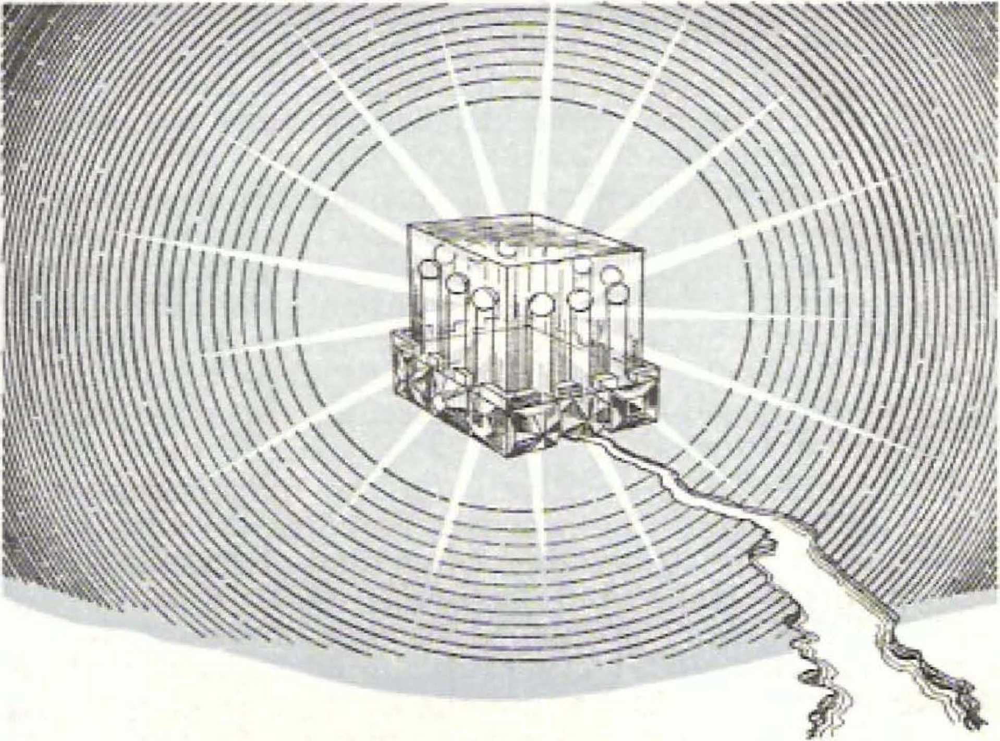John has vision of the descent of New Jerusalem
Those words concerning a perfect, righteous new order of things, “a new heaven and a new earth” —should they seem too good to be realizable? No! Not if Almighty God says so; and he is the One who savs them from his heavenly throne. John writes: *
“And the one seated on the throne said: ‘Look! I am making all things new.’ Also, he says: ‘Write, because these words are faithful and true.’ And he said to me: 'They have come to pass! I am Ilie Alpha and the Omega, the beginning and the end. To anyone thirsting I will give from the fountain of the water of life free. Anyone conquering will inherit these things, and I shall be his God and he will be my son. But as for the cowards and those without faith and those who are disgusting in their filth and murderers and fornicators and those practicing spiritism and idolaters and all the liars, their portion will be in the lake that burns with fire and sulphur* This means the second death. ’ ’ *—Revelat i on 21:5-8.
During the past century modern science has brought about changes in many features of human society, but only God Almighty can make "all things new/’ To assure us that his words about the completely new heaven and new earth will prove faithful and true, God speaks to us of things not yet true as if they wore alreirb' true and existing. He says: “They have come to pass/’
His speaking so positively on the matter makes it dead certain that the words will come to pass right on time in his schedule of events. (Romans 4:17) He begins a thing and he brings it to a successful end, not leaving it unfinished because of any hindrance or interference. That is why he could say right afterward: ‘T am the Alpha and the Omega, the beginning and the end." In the Greek language in which the apostle John wrote, the letter Alpha begins the alphabet and the letter Omega ends it.—Revelation 1:8, 11; 22:13.
At this point Jehovah God. "the Alpha and the Omega/’ makes an offer of everlasting life or of everlasting death. Psalm 36:9 says in address to him: “With you is the source [or, fountain] of life/* (NW; AF; AS) Any human creature that thirsts for perfect, happy life throughout eternity will have to get it from the great Source or Fountain of life, Jehovah God, who is the Alpha with whom all good things start. The thirsty one cannot buy this life-imparting, lifesustaining water with gold, silver or material things. Jehovah God gives it “free,” but only on his own terms. Hence the "water of life” must be accepted through his Son Jesus Christ.
So, then, to the remnant yet on earth of the 144,000 spiritual heirs of God and joint-hen's with Jesus Christ. Jehovah says his eighth and last exhortation to faithfulness in the Revelation: “Anyone conquering will inherit these things, and I shall be his God and he will be my son.” (Revelation 21:7; 2:7, 11, 17, 26; 3:5,12,21) To make this heavenly inheritance sure for themselves the remnant of the 144,000 must conquer this wicked world just as Jesus Christ the chief Son of God did. (John 16:33; Revelation 3:21) They mast keep conquering it till shortly its fiery end removes it from existence and they enter the new order victoriously.
Those who do not “inherit these things,” those who do not thirst for the “water of life” and to whom God does not give it, are not courageous, faithful, clean, innocent, moral, godly and truthful like Jesus Christ, the perfect pattern of a son of God. They are the cowards, the faithless, those disgustingly filthy like Babylon the Great, “the mother of the harlots and of the disgusting things of ne earth,” the murderers, the fornicators or sexually immoral, those who follow Babylon the Great in practicing spiritism, sorcery and magic, the idolaters including those who worship the symbolic “wild beast” and its modern-day “image,” and the liars who imitate the Devil “the father of the lie.” (John 8:44; Revelation 17:5, 6; 18:23, 24) Because such persons arc destroyed for 1 he qualities they display and the practices they carry on, it makes clear to us what God requires of us in order to conquer the world.
What, then, will be the portion of those persons who do not conquer the world? Not eternal life, for, even though the privilege to do so is free, they do not drink from the “fountain of the water of life.” Their portion will be eternal death, which is symbolized by the “lake that burns with fire and sulphur.” Revelation 21:8 plainly says that this fiery, sulphurous lake '“means the second death.” It is no so-called “conscious living death/* to be suffered by an imaginary immortal human soul that is tormented with fire and brimstone for eternity. It is a death from which there is no resurrection. There is no key for the second death, though Jesus has the key for the Adamic death. (Revelation 1:18) The second death is absolutely distinct from Adamic death, for, although the Dragon, the Original Serpent, Satan the Devil, never died in Adamic death but only induced it in Eden, yet. he is hurled into the “second death/’ the symbolic lake of fire, and so too are the “wild beast” and the “false prophet.’* Even the Adamic death itself and Hades or Sheol are hurled into the “second death.” So the “lake of lire1' symbolizes everlasting destruction of a person or thing. It is Adamic death that will be no more, but not the “second death.” Those hurled into second death will remain in it forever, unredeemed.
“TOK HtMLY CITV, NEW JERUSALEM’’
One of the seven angels who had the seven bowls that were full of the seven last plagues of God’s angei* showed to the apostle John the judgment of the “great harlot/’ Babylon the Great, the bitter enemy of the Bride of Christ. (Revelation 17:1-6) It was quite appropriate, then, that an angel of the same group should show to John who the Bride of Christ is, the Bride who remains a virgin for Christ and who escapes Babylon's plagues. John writes:
“And there came one of the seven angels who had the seven bowls which were full of the seven last plagues, and he spoke with me and said: 'Come here, I will show you the bride, the Damirs wife.’ So he carried me away in the power of the spirit to a great and lofty mountain, and he showed me the holy city Jerusalem coming down out of heaven from God and having the glory of God. Its radiance was like a most precious stone, " - a jasper stone shining crystal-clear.
Revelation 2U9-14 A NEW ORDER OF A NEW HEAVEN AND EARTH 6-57
It had a great and lofty wall and had twelve gates, and at the gates twelve angels, and names were inscribed which are those of the twelve tribes of the sons of Israel. On the east were three gates, and on the north three gates, and on the south three gates, and on the west three gates. The wall of the city also had twelve foundation stones, and on them the twelve names of the twelve apostles of the Lamb/’ —Revelation 21:9-14.
As John’s description of it reveals, this heavenly “holy city Jerusalem1' had a glory that the ancient earthly Jerusalem never had. The fact that its twelve gates had inscribed on them the names of the “twelve tribes of the sons of Israel” indicates that this symbolic heavenly city is made up of the 144,000 spiritual Israelites, the names of whose twelve tribes are given in Revelation 7:4-8.
The fact that twelve angels were seen guarding the city gates reminds us that the heavenly angels debar from the city those who do not belong there or who have no right to carry on false religion there. The gates are kept open to permit admittance to all persons worthy. In comparison with ancient cities its wall is quite high.
The twelve foundations supporting the lofty city wall had each a name on it. The name of Judas Iscariot is not one of such names, for, as a self-idolater who loved dishonest gain, this traitor perished in the “second death,” as the “son of destruction.” (John 17:12; Acts 1:16-20; 1 Peter 5:2) If we understand the “twelve apostles of the Lamb” to be those whom Jesus Christ personally and directly selected to serve as apostles, this would cut out Matthias. He was selected by lot after Jesus ascended to heaven and before the holy spirit was poured out from heaven on the day of Pentecost, A.D. 33. Since Jesus afterward personally, directly chose the Benjaminite from
Tarsus, the capital of Cilicia, the “twelve names of the twelve apostles of the Lamb” would be:
(1) Simon Peter, (2) Andrew, (3) James, (4) John, (5) Philip, (6) Bartholomew (Nathanael), (7) Thomas, (8) Matthew, (9) James of Alphaeus, (10) Thaddaeus (Judas son of James), (11) Simon the Cananaean, and (12) Paul. (Matthew 10:1-4; Luke 6:12-16; John 1:45-49; Mark 3:16-19; Acts 1:23-26; 9:1-18; 26:12-18; Romans 1:1) So-called “apostolic successors” were never chosen or appointed by Jesus.
The Greek historian Herodotus says that ancient
Babylon was built as a square on both sides of the Euphrates River; and the later Sicilian historian, Diodorus Siculus, says that the Assyrian capital Nineveh was also built foursquare. However, the “holy city, New Jerusalem,” is, figuratively speaking, built as a tremendous cube, as cubical as the Most Holy of Jehovah’s sacred tent (tabernacle) of worship, and also of Solomon’s temple. (1 Kings 6:20) The apostle Jolin describes the measuring of it, as follows:
"Now the one who was speaking with me was holding as a measure a golden reed, that he might measure the city and its gates and its wall. And the city lies foursquare, and its length is as great as its breadth. And he measured the city with the reed, twelve thousand furlongs; its length and breadth and height are equal. Also, he measured its wall, one hundred and forty-four cubits, according to a man’s measure, at the same time an angel’s. Now the structure of its wall was jasper, and the city was pure gold liki? clear glass. The foundations of the city's wall were adorned with every sort of precious stone: the first foundation was jasper, the second sapphire, the third chalcedony, the fourth emerald, the fifth sardonyx, the sixth sardius, the seventh chrysolite, the eighth beryl, the ninth topaz, the tenth chrysoprase, the eleven Eh hyacinth, the twelfth amethyst. Also, the twelve gates were twelve pearls; each one of the gates was made of one pearl. And the broad way of the city was pure gold, as transparent glass.”—Revelation 21:15-21.
The measurement of the city as being twelve thousand furlongs or 1,500 miles would seem to refer to the circumference at the base, which would mean three thousand furlongs or 375 miles to a side. Hence, if measured from the earth’s surface, this cubical city would be three thousand furlongs, or 375 miles high. It would extend up into what scientists now call “outer space.” In John’s time only an angel could have measured the height of the New Jerusalem. So, in comparison with the New Jerusalem, ancient foursquare Babylon was flat, even with its ziggurat or Towei’ of Babel. The heavenly city’s jasper wall was not so high; but its height in the number of cubits was the square of twelve, that is, twelve times twelve, which makes “one hundred and forty-four cubits,” or 216 feet, in height, to compare with New Jerusalem’s height of 1,980,000 feet. How long 1he angel's golden reed of measurement was is not staled, but his unit of measurement was the same as "a man’s measure.” So the measurements could be expressed in our known human terms.
Everything about the heavenly city was precious. Metals and stones precious to mankind are used to describe the city’s features. Not merely is the city precious to God, as shown by the way in which he pictures it to John, but it should be most precious to God’s people in the “new earth." O holy city, “prepared as a bride adorned for her husband,” how lovely you must look in your Bridegroom’s eyes’ In his days on earth gold wTas the most precious metal, but the gold of his Bridal city is "pure gold like clear glass.” Can refined gold be purer than that? And the city’s broad way is of the same material, “pure gold, as transparent glass.” To walk on a symbolic street like that would be a privilege. The twelve tribes of spiritual Israel will enjoy that pr?oi vis privilege in God's service.
Ancient earthly Jerusalem was the national center of Jehovah’s worship and had his temple in it on Mount Moriah. Bui the apostle John saw no building of that kind in the “holy city, New Jerusalem.” Nevertheless, it was no irreligious, ungodly city, for John says:
“And I did not see a temple in it, for Jehovah God the Almighty is its temple, also the Lamb is. And the city has no need of the sun nor of the moon to shine upon it, for the glory of God lighted it up, and its lamp was the Lamb. And the nations will walk by means of its light, and the kings of the earth will bring their glory into it. And its gates will not be closed at all by day, for night will not exist there. And they will bring the glory ;md the honor of the nations into it. But anything not sacred and anyone that carries on a disgusting thing and a lie will in no way enter into it; only those written in the Lamb’s scroll of life will?’— Revelation 21:22-27,
Quite true to circumstances, John saw no temple or sanctuary in this heavenly city, inasmuch as the entire symbolical city is a temple in itself, a “place for God to inhabit by spirit." And so Jehovah God the Almighty is right there by spirit, and it is not necessary for the city’s inhabitants to approach him in worship through some building with something inside it to represent him. Lie himself is the city's temple, since the worship of him by the city’s inhabitants is direct. For related reasons, the Lamb Jesus Christ is also the city’s temple. Ue is the husband of the symbolic city, and he is right there. He is Jehovah's High Priest and the Foundation Cornerstone of the spiritual temple.—Ephesians 2:19-22.
Just as Jehovah’s Shekinah light illuminated the Most Holy of the ancient tabernacle and temple, so his glory directly lights up the New Jerusalem. Ancient Babylon on the Euphrates River needed oil lamps for lighting at night; but, if there were any night around the heavenly New Jerusalem, the Lamb of God would be its lamp. This explains why “the city has no need of the sun nor of the moon to shine upon it.” But mon on earth will need such lights.
The invisible heavenly city will shed a spiritual light upon the inhab iters of the “new earth.” A complete clarification of the Bible will be given to them, together with all the righteous, enlightening, guiding rules, laws and instructions that will be given to them. So the nations on earth, that is, those not of Ilie 144.000
spiritual Israelites, will
walk in the spiritual light
coming from the city and will sec how to walk in the way that leads to everlasting life without stumbling. All the families and nations of the earth will thus be blessed.—Genesis 12:3; 22:18.
The kings of this world having been killed off at Har-Magedon in the “war of the great day of God the Almighty,” there will be no national, political kings on earth during Christ’s thousand-year reign. Therefore, the “kings of the earth” who will “bring their glory” into the New Jerusalem must be the King of kings and the 144,000 world-conquerors who rule as kings with him for the thousand years. (Revelation 5:8-10) They do not pull political strings and try to bring glory to themselves as rulers over mankind* They bring their God-given glory into the 11 holy city, New Jerusalem,” to magnify the royal organization, to God's praise and to the support of his universal sovereignty. (1 Corinthians 15:24-28) This invisible heavenly glory will be made apparent to the inhabitants of the “new earth” by the glorious conditions that this heavenly government, the “new heaven,” will produce on our earth. An Edenic Paradise will be restored and be mad.? worldwide. Peaceful, righteous conditions will be maintained on earth, and all human imperfection and death will be wiped out.
Under such grand blessings from the New Jerusalem, certainly the ‘‘glory and the honor of the nations” on earth will be brought into that royal heavenly city. Despite their past nationality, the appreciative people will glorify that heavenly government and honor it, giving it their heartfelt allegiance, praises and gratitude.
The glory of the present political national governments of earth will pale into invisibility and fade from human memory. Mankind will respect this heavenly government as being God’s provision for them, the Messianic kingdom that he ordained for them. They will subject themselves to it with total subjection. They will have the utmost confidence in that heavenly government, for they know that “anything not sacred and anyone that carries on a disgusting thing andl a lie fas Babylon the Great now does] will in no way enter” into the heavenly Messianic kingdom. Only the 144,000 faithful ones whose names are “written in the Lamb's scroll of life” will enter into it by a faithful sacrificial death and a glorious resurrection to heavenly life. (Revelation 3:5; 21:27) It will be a holy, clean, truthful government with God’s Lamb as King of kings. (1 Corinthians 6:9-11; Galatians 5:19-21; 2 Peter 1:5-11) It will be the “new heaven” that will rule over the inhabitants of the “new earth,” so that in both heaven and earth “righteousness is to dwell"—2 Peter 3:13.
This is the righteous new order that Jehovah God promised would follow the fall and destruction or Babylon the Great, in these words of his ancient prophet: “Here I am creating new heavens and a new earth; and the former things will not be called to mind, neither will they come up into the heart. But exult, you people, and be joyful forever in what I am creating."-—Isaiah 65:17, 18; 66:22.
c H A P T
E R
31
O MATTER of what nationalit
persons may be by birth, lasting benefits will flow to the peoples of earth from Jehovah God through the “holy city, New Jerusalem." To help the needy people to grasp this fact and appreciate it, a lovely picture of great significance was shown to the apostle John. He was to make it known to others who, in turn, would make it known to still others. The same angel from among the seven angels who had poured out the seven last plagues of God’s anger granted io John a further look into the heavenly “holy city,” the “broad way” of which was "pure gold, as transparent glass.” (Revelation 21:21) In beautiful simplicity of language John tells us what he saw and heard, saying:
“And he showed me a river of water of life, clear as crystal, flowing out from the throne of God and of the Lamb down the middle of its broad way. And on this side of the river and on that side there were trees of life producing twelve crops of fruit, yielding their fruits each month. And the leaves of the trees were for the curing of the nations."—Revelation 22:1.2.
At this delightsome vision John may have been reminded of the prophet Ezekiel, who, while yet an exile in ancient Babylon in 593 B.C., saw in vision a stream of life-giving water flowing out from the visionary House of Jehovah and past the sacrificial
altar and on down to the salt-laden Dead Sea. (Ezekiel 47:1-12) That stream of water flowing out of the house or temple and. then through the land of the restored Israel to reach the Dead Sea must have issued forth from Jehovah God, who had entered into the Most Holy of the temple. Long afterward, in the vision that the apostle John saw he beheld the source of the “river of water of life.” The source is the “throne of God and of the Lamb/’ This symbolic river could , therefore, not have begun to flow before the end of the Gentile Times in 1914, Why not? Because it was in that year that Jehovah God the Almighty took his great power ~ii:l began ruling as king over the earth. Tt was then that he bv his own sovereign right brought to birth his promised Messianic kingdom by enthroning his Messiah or Christ, his beloved Son Jesus. Thus the “throne of God and of the Lamb" Were then established.—Revelation 11: 15 to 12:10.
However, the “river of water of life" did not begin to How then. This fact can be appreciated when we remember that it was afterward, during World War I, that the remnant yet on earth of the 144,000 spiritual Israelites came into Babylonish bondage and needed deliverance and this deliverance came first in the year 1919.
Moreover, we note that the river of life-giving water flows "down the middle of its broad way." that is, down the middle of the broad way of the “holy city, New Jerusalem.” The city ©Dines down out of heaven from God, after the “former heaven and the former earth had passed away, and the sea is no more/’ This would be at the beginning of the thousand-year reign of Christ. Then the holy city, “the bride, the Lamb’s wife,” is there, and its broad way of “pure gold, as transparent glass." Then the “river” coming out from the throne of God and of the Lamb in
this city can flow down the middle of its strcc:. —Revelation 21:1, 2, 9, 10, 21.
God’s written Word is sometimes compared with water. (Ephesians 5:26) But do not be mistaken about it: this symbolic “river of water of life” is not a mere river of truth. Something far greater than merely giving the people the Bible truth is here pictured. Ilie symbolic river pictures the entire provision that God makes fox' obedient, believing mankind to have everlasting life through Jesus Christ the “Lamb of God that takes away the sin of the world.” That is why the river is seen to flow out from the “throne of God and of the Lamb,” the sacrificial Lamb being seated at the right hand of God his Father. (John 1:29; Psalm 116:1; Acts 2:32-36) The river’s being “clear as crystal” proves the purity of God’s provisions, I heir freedom from all death-dealing contamination. This means more than the mere purity of God’s truth. Those provisions include the ransom sacrifice of the Lamb Jesus Christ and his dealing out to sinful mankind the benefits of his sacrifice as Jehovah’s High Priest Like Melchizedck. Throughout Christ’s thousandyear reign men, including those resurrected from the dead, must drink of the “river of water of life.”
The 144,000 members of the “bride, the Lamb’s wife,” serve as priests of God and of Christ and reign with Christ their Bridegroom for a thousand years. In this way they are given a happy part in extending the benefits of the sacrifice of their Bridegroom High Priest to the dying world of mankind. This fact is correctly illustrated in that the “river of water of life” (lows in a channel, that is, down the middle of the golden broad way of the holy city, the city being the Lamb’s wife. In harmony with this is the fact that they are a “spiritual house,” “a holy temple for Jehovah,” “a place for God to inhabit by spirit,” (1 Peter 2:5; Ephesians 2:21, 22) They are part of the Seed of God’s “woman,” a part of “Abraham’s
seed/* by means of whom all the; families and nations ill bless themselves. (Galatians 3:8* 16, 2f); Genesis 22:17, 18) So, to convey his blessings of life to mankind, God uses, not a stingy, cheap channel, but a “broad way” of “pure gold, as transparent glass.”
Besides crystal-clear water to quench the thirst, there must be food to sustain life. Such food is provided by means of the "holy city/’ for on each bank of the river that flows down the middle of its "broad way” there are "trees of life producing twelve crops of fruit.” On either side of the river people could not only stoop down to drink of the water but also reach up to take of the life-sustaining fruit. The kinds of fruit, the variety of trees, may have been more than twelve in number. But, no matter how great the variety of fruit trees, the trees one and all produced twelve crops of fruit, a new crop each of the twelve months of the year. All year long they produced fruit, so that there was no danger of anyone’s starving to death* These trees are watered by the "river/*
A part of God's provision for the eternal life of believing, obedient mankind is pictured by those fruitful frees. Hut 1hex ir.a.v ;idditier-i I ly pic- ; in? the 144,000 members of the Lamb’s wife, who also drink of God’s provisions for life through Jesus Christ. (Revelation 21:6) In Isaiah’s prophecy, which Jesus quoted, concerning The anointing with God’s spirit* the 144,000 are likened to "big trees of righteousness, the planting of Jehovah.” (Isaiah 61:1-3) Already on earth they are the spiritual nation to whom the kingdom of God is given; they are the ‘‘nation producing its fruits." (Matthew 21:43) In all seasons, in all months of the year, the remnant of them are today producing and offering to mankind the fruits of God’s kingdom by preaching and teaching the good news of its birth in heaven. Thus the remnant show they are worthy to have a part, after death, in the heavenly fulfillment of this vision of trees*
Plant leaves have often been the source of medicines for healing and curing people. Besides water and food, sick people want healing and restoration to good health. The “‘trees of life,11 which are the plan' ing of Jehovah, will furnish the leaves “for the curing of the nations,” that is, those nations or peoples of various nationalit ies who will walk by means of the light of the “holy city, New Jerusalem.” (Revelation 21:23, 24) Under such trees then, mankind will not need today’s medical doctoi's and psychotherapists, but these heavenly ““trees of life” will provide the needed spiritual and bodily cure that dying mankind will need. Not only the earthly survivors of the battle of Ilar-Magedon, but also all men resurrected from the dead must partake of the benefits of these symbolic “trees of life.”
Besides all that, the “trees of life” on both sides of the “river of water of life” will be made most realistic to the inhabitants of the “’new earth,” for Paradise will be literally restored here on earth. (Luke 23:43) All around the globe this delightful Paradise will be extended, with fruitful trees, pure waters. What peace, health, happiness and love will obtain there 1
The “‘holy city, New .Jerusalem,” will be a heavenly government of blessing for the peoples of all the nations. Unlike Babylon the Great, it will not be a cursed city, not a city cursed by God and hence not a curse to mankind. (Zechariah 14:11) All who read the Revelation to John can be certain of that, for he writes:
““And no more will there be any curse. But the throne of God and of the Lamb will be in the city, and his slaves will render him sacred service; and they will see his face, and his name will be on their foreheads. Also, night will be no more, and they have no need of lamplight nor do they have sunlight, because Jehovah God will shed light upon them, and they will rule as kings forever and ever.”—Revelation 22:3-5.
This “holy city,” this heavenly government, will be so fruitful, so productive of good works and good ie-suits in God’s service., that it will never come under His curse, like ground that has been blessed with rain from heaven and yet brings forth thorns and thistles. (Hebrews 6:7, 8) It will Im? so holy, righteous and pure that “the throne of God and of the Lamb will be in” it, God’s throne could be only where righteousness and judgment are found. (Psalm 89:14} That the “new heavens** will be righteous, fully approved by God, will bo made sure by the presence of His throne in the "holy city, New Jerusalem.” It will be the city of “Jehovah’s throne’* in a truer sense than the ancient earthly Jerusalem was.—1 Chronicles 29:23; Matthew 5:34, 35.
The members of that heavenly government will be the slaves of God, not slaves of the Devil. In carrying on the operations of this government over mankind they will render sacred service to God, to please him. Like earthly slaves in the days of the apostle John, they will have God’s name on their foreheads. That is, it will be made plainly evident that they arc God’s special purchased property, his devoted slaves. They will actually see his face, a fact that discloses that they arc pure in heart. (Matthew 5:8) These are the special privileges of the 144,000, who stand with the Lamb Jesus Christ on the heavenly Mount Zion.—Revelation 14:1-5.
As a heavenly class, they will not need the illumination that our earth needs, lamplight by night and sunlight by day, because “Jehovah God will shed light upon them,” and he is all light, with no darkness. (1 John 1:5-7) Their ruling as kings in heaven will not end with Christ’s thousand-year reign, but scthey will rule as kings forever and ever.** With God’s Son Jesus Christ they will continue as the capital organization of God’s universe forever.
All those words of the Revelat ion to John create marvelous hopes that simply shatter our imagination; and yet those words are true and absolutely reliable, for they come from a reliable source.* To strengthen our faith in this, John writes:
“And he said to me: ‘These words are faithful and true; yes, Jehovah the God of the inspired expressions of the prophets sent his angel forth to show his slaves the things that must shortly take place. And, look’ I am coming quickly. Happy is anyone observing the words of the prophecy of this scroll.’ ” Revelation 22:6, 7.
So, just because an angel delivered the revelation to John, it docs nut lessen or weaken the truthfulness of the revelation. The same God, Jehovah, who inspired the prophetic expressions that the Hebrew and Christian prophets made and wrote down in the Bible, inspired also the revelation to John. This God is the One who sent forth his ar: gel, and the pjrposc of this w: to keep the slaves of God informed in advance, “to show his slaves the things that must shortly take place.” Therefore no excuse exists for his slaves not to know what, they should be doing in the future. They know what to expect, for they have the revelation to consult and study.
One of the things to expect and for which to be on the lookout is the coming of the Lord Jesus Christ, for God gave to him the revelation to pass it on to John by means of the angel. (Revelation 1:1) This coming is evidently the one last previously mentioned, his “coming as a thief,” as mentioned in Revelation 16:15 in ■4 r ?
connection with the “war of the great day of God the Almighty,” with which Har-Magedon is connected. At his coming things will turn out happily for a person if he now keeps in mind the things set forth in the revela-
• After commenting on Revelation 22: S, the late Greek scholar, Dr. Archibald T. Robertson, says: "Now John gives the parting utterances Of some of th p-'.-rnT-:. and it Is not always clear who Is speaking.” —Page 481 of Volume 6 of Word PirtwrciJ in the .v<rtc Testament, edition of 1933.
The .Vein Worlri Translation of the Holy Scriptures endeavors to show the change in speakers by appropriate paragraphlnfi: that had due regard fur the context and the one to whom what Is said refers.
tion and observes them and acts in harmony with them. Then he will not go wrong. The scroll of the revelation will be a safe guide to him, for the words written down in the scroll arc in fact a prophecy, “the words of the prophecy of this scroll/’
Observing it leads to the sixth happiness mentioned in Revelation. It is Quite like the first happiness expressed at the beginning: “Happy is he who reads aloud and those who hear the words of this prophecy, and who observe the tilings written in it; for the appointed lin’d? is rit-Hi /'■—Kev elation 1:3: 22:7.
THE IMPORTANCE OF OBSERVING THE ft FA 'FIXATION
It is a grand experience for us today to read the Revelation to John with an up-to-date understanding of it. How wonderful, though, it must have been for John to see it in vision nineteen centuries £go! He tells us how he felt, saying: “Well, I John was the one hearing and seeing these things. And when I had heard and seen, I fell down to worship before the feet of the angel that had been showing me these things. But he tells me: ‘Be careful! Do not do that! All 1 am is a fellow slave of you and of your brothers who are prophets and of those who are observing the words of this scroll. Worship God/ ’’—Revelation 22:8,91
Once again the emotionally overwhelmed John has io be cautioned about losing his spiritual balance and falling down in worship before anyone other than Jehovah God. (Revelation 19:10) 11 is not the right thing for fellow slaves to worship any one of their number. No one of them is anything more than a slave of Jehovah, who is God. How remarkable that even angels consider and speak of themselves as slaves of God! If any one of these passed along a revelation that is in the nature of a prophecy, he was not to be worshiped for doing this service, no matter how privileged he was in doing so. It was thereafter the duty of John and those who are John's spiritual brothers to pass on the prophetic revelation to still others. Tn this way John’s spiritual bi others today serve as prophets. (Joel 2:28, 29) At the same time they must observe the words of the prophetic scroll, the Revelation, and must bring themselves into harmony with it. This must be done now, without delay!
Evidently at this point Jesus Christ, to whom God first gave the Revelation, speaks. With reference to him, John writes: “He also tells me: ‘Do not seal up the words of the prophecy of this scroll, for the appointed time is near. He that is doing unrighteousness, let him do unrighteousness still; and let the filthy one be made filthy still; but let the righteous one do righteousness still, and let the holy one be made holy still/ ”—Revelation 22:10,11.
The modern-day Christian witnesses of Jehovah have promptly obeyed this command not to “seal up the words of the prophecy of this scroll.” In the very first issue, that of July, 1879, of their official magazine, then known as Zion’s IVatoh Tower and Herald of Chrixt'x Presence, and in the main article entitled “Why Will There Be a Second Advent?” they made comment on Revelation 22:20; 20:2, 6; 3:21; 20:4; 11:15, 18, 16; 21:1-10, and 22:17.
In all their publications since then they have abundantly quoted and offered explanation of this last book of the Bible. In the year 1917 there was published by the Watch Tower Bible & Tract Society the book entitled “The Finished Mystery,” which was their first commentary on the entire book of Revelation. Though that book was banned by Gentile governments during the last year of World War I, Jehovah’s witnesses refused to “seal up the words of the prophecy of this scroll.” In the year 1930 the same Society published ihe book entitled “Light,” in two volumes, which was a more up-to-date explanation of the entire Revelation to John. Hundreds of thousands of copies of this were circulated in a number of languages. And now the first
printing of this new book, * Babylon the Great Has Fallen ■' God's Kingdom Rales! has been scheduled for one miHion copies (in English), and its release to readers throughout the world has been arranged to take place at the “Everlasting Good News” Around-the-World Assembly of Jehovah’s Witnesses, this series of twenty-four international assemblies beginning on June 30, 1963, in Milwaukee, Wisconsin, and continuing eastward around the globe and concluding in Pasadena, California, U.S.A., September 1-8, 1963.—See The as of June 1, 1963, pages 325-327.
The commands to the one doing unrighteousness and the filthy one are not urgent appeals to them to repent and leave their unrighteousness and filthiness. Rather, the thought in these commands seems to be, Let the unrighteous one keep on doing unrighteousness and let the filthy one stay filthy or be made more filthy, if they want to; but let them know that they will get their due reward for this course, at the latest when the Lord
Jesus comes to fight the “war of the great day of God the Almighty.1’
The person now righteous in God’s sight should keep on practicing righteousness. The one who is holy as a slave of God should continue being made holy. Otherwise, they will lose all the credit that they built up by their previous righteousness and holiness. But if they keep on in righteousness and holiness, they will at last have an accumulated credit with God and be richly rewarded for this. What a warning and encouragement] —Ezekiel 18:5-9,24.
Jesus Christ as Judge merely executes the judgments of the Highest Judge, Jehovah God the Almighty, “the Judge of all.” Jehovah God is the Court of final resort, and there is no appeal from his judicial decisions. He is the Alpha and Omega, figuratively speaking. (Revelation 1:8) So in Malachi 3:1-5 it is chiefly his coming “suddenly” to the temple for judgment work that is prophetically spoken of. The “war of the great day” that is just ahead is the war of God the Almighty for executing judgment upon his foes. Hence now, in his turn, he speaks as the Source and Giver of the revelation. Here are God’s words that the apostle John heard:
“Look! I am coming quickly, and the reward I give is with me, to render to each one as his work is. I am the Alpha and the Omega, the first and the last, the beginning and the end. Happy are those who wash their robes, that the authority to go to the trees of life may be theirs and that they may gain entrance into the city by its gates. Outside are the dogs and those who practice spiritism and the fornicators and i he murderers and the idolaters and everyone liking and carrying on a lie.”—Revelation 22:12-15.
God “becomes the re warder of those earnestly seeking him.” (Hebrews 11:6) After he takes his power as the Almighty and begins ruling as king, the time comes for him to reward his slaves the prophets, and the holy ones and those fearing his name, and “to bring to ruin those ruining the earth.”—Revelation 11:17, 18.
He is just and renders to each one only according to what his work is. Hence it becomes advisable for us to examine what our works are and not depend merely on what wc claim to believe and what we profess to be. Our works will prove what we really are, and in the Revelation God plainly shows us what our works should be. We can deceive ourselves. We cannot fool God as Final Judge.
We should worship and serve Him as God. Before him there was no God Almighty, and no one has been able to establish himself as God Almighty after him. From first to last he is the same God Almighty, whose name is Jehovah. Eight hundred years before John wrote Revelation 22:12, another prophet had written: “This is what Jehovah has said, the king of Israel and the Repurchaser of him, Jehovah of armies, T am the first and I am the last, and besides me there is no God. And who is there like me?' ” (Isaiah 44:6, 7) “To no one else shall I give my own glory. Listen to me, O Jacob, and you Israel my called one. I am the same One. I am the first. Moreover, I am the last/’ (Isaiah 48:11, 12; 41:4) In the controversy over godship, he is **the beginning and the end”: and this controversy that began over Ills godship he will bring to an end by proving all would-be rivals to be false gods, Me is the Final One, the Final Judge, from whom to expect a reward just as we deserve it.
As Judge and Rewarder, Jehovah God pronounces happy the 144,000 who accept the Lamb of God as the atoning sacrifice for them and who, by faith, “wash their robes” in his blood, that they may appear free from sin in God’s sight. (Revelation 1:5; 1 John 1:7) These are the? faithful conquerors to whom it is granted to “eat of the tree [or, trees] of life, which is in the paradise of God.” (Revelation 2:7) This is granted to them by a resurrection from the dead, not in the flesh, but in the spirit, that they may enjoy immortal life with God himself. (1 Corinthians 15:44, 52-54) Their being granted the privilege of eating from the trees of life in God’s symbolic heavenly Paradise denotes their being given the right and title to enjoy immortal life forever in the heavenly “paradise of God.” By way of contrast, in the case of Adam and Eve, they were driven out of their earthly Paradise, that they might not eat from its “tree of life” and live forever in Paradise.—Genesis 3:22-24.
The 144,000 “happy” ones prove themselves to be spiritual Israelites. By their resurrection as immortal spirit creatures they gain entrance into the “holy city, New Jerusalem/' by means of the twelve pearly gates on which are inscribed the names of the “twelve tribes of the sons of Israel/’ The “twelve angels” on guard at those gales recognize who these 144,000 faithful spiritual Israelites are and let them enter into the golden city. (Revelation 21:12, 13, 18) What a happy reward they receive from Jehovah God’
Those angel .guards know whom to keep outside the twelve gates. Those kept outside are the people who are like scavenger dogs of the streets, who practice homosexuality, sodomy. Lesbianism, viciousness, cruelly (Deuteronomy 23:18; Psalm 22:16, 20; Matthew 7:6; Philippians 3:2); also the spiritists who get in touch with the derj ions; the adulteresses and the harlots and the men who commit sexual immorality with them; the murderers and the haters, whose hatred is equivalent 1o actual murder; those who idolize the symbolic “wild beast” and its “image” and religious statues and other material things or even human personalities; and liars, everyone who prefers lies to the truth and who carries on a lie or a system built on lies. These arc all kept out of the “holy city, New Jerusalem/’ and they are hurled Into the symbolic “lake that burns with fire and sulphur,” that is, “the second death.” (Revelation 21:8) This is their reward from Jehovah God according to their works on earth. Thus God keeps his heavenly government clean, respectable.
We readers have had witness concerning these allimportant things borne to us by Jesus Christ, the “faithful and true witness” to whom Jehovah gave the revelation. (Revelation 1:5; 3:14; Isaiah 55:3, 4) As such a witness he acted and said to his apostle .John: “I, Jesus, sent my angel to bear witness to you people of these things for the congregations. I am the root and the offspring of David, and the bright morning star.” —Revelation 22:16.
Jesus Christ was an earthly offspring of ancient King David of Jerusalem. As he was the most important descendant of King David, he speaks of himself as being also “the root” of David. The genealogy from Abraham through David really ends with Jesus. The underlying reason for bringing the house of David into existence was to produce the Messiah. Also, God’s reason for making the everlasting covenant with David for an everlasting kingdom was to have Jesus Christ become David's permanent heir, the eternal one in the
Khigdrcn mverianh in cffeet, 1hcreiorJesus was David’s “root.”
As the one who holds the Kingdom forever; Jesus is, figuratively, “the bright morning star,” the one foretold in Numbers 24; 17, In 607 B.C. the ambitious king of ancient Babylon thought he had permanently lifted his own material throne up above the royal “stars of God” in the line of King David. But neither ancient Babylon nor its modern counterpart, Babylon the Great, prevented God from causing this “bright morning star," Jesus Christ, to rise out of the house of David and sit down on a throne infinitely higher than that of mighty King Nebuchadnezzar of ancient Babylon. (Isaiah 14:4, 12, 13) The throne in which Babylon the Great plans to sit as a queen forever has to fall, be overturned. Jesus, the Offspring of David, must reign forever. To his faithful 144,000 he gives the reward of being associated with him, "the morning star," in the Kingdom, to reflect his glorious brightness. —Revelation 18:7; 2:26-28*
FREE TO ALE THECSTY ONES
Now associating with the remnant yet on earth of the 144,000 Kingdom heirs there is a “great crowd” whose eyes have been opened to sec the rising of the “bright morning star.” They hail him and acknowledge his kingship. Even now he becomes their Shepherd King. Concerning these “other sheep,” Revelation 7: 9-17 says: “The Lamb, who is in the midst of the throne, will shepherd them, and will guide them to fountains of waters of life. And God will wipe out every tear from their eyes.” (John 10:16) Their Shepherd King is now inviting them to these “fountains of waters, of life,” and he is doing so by his Bride class. Regarding this J oh n writes: -
“And the spirit and the bride keep on saying: 'Como!' And let anyone hearing say: ‘Come’’ And Jet anyone thirsting conn?; let anyone that wishes take life’s water free.”—Revelation 22:17.
This invitation has been going forth to these “other sheep” since 1931, the year when the Scriptural name “Jehovah’s witnesses” was embraced by the remnant on earth of the 144,000 and the work of putting a “mark on the foreheads” of the “other sheep” began to lie seen. i Ezekiel 9:4-6) True, al ready on February 24, 1918, a message began to be preached with particularly the “other sheep” «n mind, namely, the public talk entitled “Millions Now Diving Will Never Die.”
This offered a hope of their surviving the “war of the great day of God the Almighty” and of gaining thereafter eternal life in the Paradise earth under God's Messianic kingdom. But this message did not definitely show the way into this survival privilege, except by righteousness in general. However, from 1934 onward the anointed remnant plainly pointed out that these “other sheep” must now make a full dedication of themselves to God and symbolize this dedication by water baptism and then become fellow witnesses of Jehovah with his remnant.—See The Walehloioer and Herald of Christ’s Presence, as of August 15, 1934, pages 249. 250, paragraphs 31-34.
Thus there was now a definite invitation to be extended for gathering these thirsty “oihrr sheep" together into ir.r “orc fold” under the “one -hppherd,1' Jesus Christ. Such invitation to come was expressed by means of the remnant of the Bride class. Their saying “Comer” was in harmony with God’s spirit. God did not tell the remnant, audibly to tlieir natural ears to say “Cornel" No, but by means of his spirit in opening up the meaning of the prophecies of his written Word he caused the remnant of the Bride class to extend the invitation. The prophecies on which their invitation was based had been inspired by the spirit of God. So it was, in effect, God’s spirit as well as Christ’s Bride that was saying to the “great crowd" of sheeplike pco-pie, “Come!” (Revelation 19:10) Whereas religious Babylon the Great has made all earth’s inhabitants “drunk with the wine of her fornication,” the virgin Bride of Christ bids all mankind to come and drink of “life’s water.” What a grand privilege is hers!
To this day the spirit and the Bride represented by the remnant “keep on saying: ‘Come!’ ” Those “other sheep” who do come and bcf/ui drinking of God’s provisions for gaining eternal life through the Lamb of God are trained by the spiritual remnant to become ministers of God’s Word. The remnant tells these “other sheep” to invite still others to come. “Life’s water,” which in its full sense includes more than an understanding of Bible truth, is not to be kept to them themselves, but they must, obey the command from the “spirit and the Bride,” namely: “And let anyone hearing say: 'Come!’ ” All those quenching their thirst must circulate the invitation. They must extend it to everybody without regard for race, nationality, color, language oi' present religion, everybody everywhere! In this very year of publishing this book well over a million obedient persons in all the earth are lovingly extending the invitation, 1,028,986 having reported.
Unlike natural water in many dry places today, “life’s water” cannot be sold anti must not be made a means of commercial gain by persons who extend the invitation. God’s Word forbids this, saying: “And let anyone thirsting come; let anyone that wishes take life’s water fice.” (Revelation 22:17) Hence Jehovah’s modern-day Christian witnesses do not commercialize the Kingdom message. What there is available of “life’s water” at the present time, of this Jehovah’s witnesses invite and help all peoples to partake, free!
We now have a responsibility to do more than keep “the words of the prophecy of this scroll” unseeded for all thirsty sheep like persons. (Revelation 22:10) We must also not hide or withhold any part of it or add anything to it to soften it down or to counteract things that it says or to dull its clarity and sharpness. The “prophecy of this scroll” must be treated like the en-lire book of Moses. (Deuteronomy 4:1, 2; 12:32; Prov-erbs 30:5, 6) Faithful to this rule of action, the Revela-tor Jesus Christ says to John:
“I am bearing witness to everyone that hears the words of the prophecy of this scroll: If anyone makes an addition to these things, God will add to him the plagues that are written in this scroll; and if anyone takes anything away from the words of the scroll of this prophecy, God will take his portion away from the trees of life and out of the holy city, things which are written about in this scroll/’—Revelation 22:18, 19.
This is a stern warning to the congregations of the members of Christa Bride, to whom the Revelation was primarily written. (Revelation 1:4, 5, 19, 20; 2:1, 8, 12, 18; 3:1, 7, 14) Hence the figures of speech or symbols that are used in this warning apply to them and not to the “other sheep.” So today the remnant on earth of Christ’s Bride are faithfully endeavoring to take nothing away from the “words of the prophecy of this scroll,” which contains the Revelation to the apostle John, and they avoid adding anything to It. They do not want their glorious heavenly hope to be disappointed; they do not want their hoped-for portion to be taken away from the “trees of life’' that are “in the paradise of God” or to be taken “out of the holy city,” the heavenly New Jerusalem. Above all, they desire to let God be found true in everything that he says, that he may be declared righteous, justified, vindicated, but men be proved liars. (Revelation 22:15; Romans 3:4) And the “great crowd” of their sheeplike companions arc of the same faithful attitude to God’s Holy Word in its entirety. For this faithfulness the delightsome portion that. God lias promised them in 1 he Paradisaic earth will not be taken away from them.
Especially timely today, when “the appointed time is near,” are the next and final words of the I .ord Jesus
Christ to the apostle John nineteen hundred years ago. Timely, also, is John’s response. The record on this says: Tie that bears witness of these things says, ‘Yes; I am coming quickly.’ ” “Amen! Come, Lord Jesus.” —Revelation 22:20,10.
Thus for the fifth time in the Revelation that Jehovah G" i gave to him for the apostle John, Jesus Christ the Lord of lords says that he is coming Quickly, lie accompanies Jehovah Godt who also says: “I am coming quickly.” (Revelation 2:5, 16; 3:11; 22:7, 20 and 12) The emphasis here is on The word “quickly”; and, in connection with the “war of the great day of God the Almighty,” the Lord Jesus Christ warns that he is coming *‘as a thief.” (Revelation 16:15) Whether we prepare for it individually or not, he is bound to come, and come “quickly** and -as a thief*”
Certainly this is not the time for us to be spiritually asleep, or even drowsy or indifferent; our being in that condition would surely spell calamity for us. We must keep in mind that “he that bears witness of these things” is the one who says here in Revelation 22:20: “Yes; I am coming quickly.” This means that the things of which lie has borne witness in the Revelation will also take place “quickly,** for he has the responsibility to sec to it that they do. That means that, in quick time now, the religious “great harlot/’ Babylon the Great, will be destroyed, at which event, we favored witnesses of it will joyously shout: “Hallelujah! because Jehovah our God, the Almighty, has begun to rule as king.” —Revelation 19:1-6, margin of 1950 edition.
Can we join the apostle John in his prayer? When we love someone, are we not eager for his coming, preoccupied with it, and alert and on the watch for it? Our hearts answer, Yes! So when we think of all the things that the marvelous Revelation discloses, which the King of kings and Lord of lords will bring to pass at his coming, are we not also, like John, eager for his coming? Are we not glad that it will be quickly?
Do we not love it so much that we yearn for it to be quickly accomplished? Most sincerely, Yes! And most heartily we, who are now nineteen hundred years nearer to his promised coining, can join the aged apostle John in prayerfully saying: ’‘Amen! Come, Lord Jesus.” So, m harmony with this request, we will lovingly do the things that the Revelation which he transmitted to John for us says that we must do until he comes.
How favored those doing so are today! Tn place of suffering the seven plagues of God’s anger that are poured out upon Babylon the Great, they are enjoying the expression of God’s approval and goodwill toward them through Jesus Christ. Truly 1hc apostolic prayer of long ago has been fulfilled toward us. In our behalf today, that is, in behalf of the remnant of the 144,000 “holy ones” and certainly also in behalf of the “great crowd” of temple servants associated with the remnant, the apostle John has prayed, in the closing words of the prophetic scroll: “May the undeserved kindness of the Lord Jesus Christ be with the holy ones?’ (Revelation 22:21) What an expression of his undeserved kindness it has been for Jesus to make understandable to us so much of this glorious revelation from Jehovah God! Provided that we continue to serve and obey the Lord Jesus as we await his longed-for coming, his undeserved kindness will remain with us. It. will crown our lives with all the happinesses that God has in reservation for all his faithful ones. Tell out, then, in fulfillment of Matthew 24:14, the glorious news: God’s kingdom rules!
DATE (A.D- 1S63) OF B/'LYLON THE GREAT
DATE
EVENT
40^6 H.Q, iu <r2r n.C-h H.C
SU&3 LLC. 3404 R,C, 3339 B.C. 9152 H C, 3OT6 B_C.
3039 B.C.
mo 15 < -2*590 LLC,
2471} R.C.
Adam's creation tri V c autumn)
Edenic covenant made, firsrf prophecy
Cain slaj Abel
BirUi of Seth
Birth of righteous "Enoch *
Birth of Methuselah
Birth of Laim‘Ch
Death of Adam
Trnnidv.-c’-ce of Enoch; ends his period of prophesying
Birth of Nruih
God's pronouncement as to mankind
Birth of Jsv^heth
24G4J 15. C.
2370 B.C.
33f9 B,C.
23Ca B-C.
a. 2233 B.C,
2020 B .C
Mu; n.c.
Birth of She rn
Death of Mclhu:^*Lih
Flood waters fall on November*
MaKtntf of the covenant after the Flood
Birth of Arpachshad
Building of the Tower of Babel tn land of Shinar; Nimrod king of Babel
Death of Noah
Birth of Abraham
(Jen, 2:7
Gen- 3:15
Gen. 4:fi
Gen. 5:3
Gen_ 5:18
Gen. 5:31
Gen- 5:25
Gen . 5:5
Gen. 5:23. 24:
Jude 14
Gen. 5: 23, 29
Gen. G:3
Gen. 5:32; SiM;
15:21
Gen- 7; 11; 11:10
Gen_ 5:27
Gen. 7:<k 11
Gen. 8:13; 9:16
Gen 11:10
Gen. 11:4
19*13
B.C.
to. 1933 B.C
1932 L\C.
I9W B.C-
1913 B_C.
1913 B.C.
1M1 B_C.
1878 B.C.
i lUiti B.c.
1858 B.C.
B.C.
1318 H.C.
1793 B.C.
1781 BrC.
1774 B.C.
1767 B.C-
1761 B.C.
r 1701 RC, 1750 B-C. 173FJ £LC.
Abraham crosses Euphratc River for Canaan; Abrahamlc covenant nude. bc.^Lnntng of the 430-year period tfSJ law covtjwil
Dot resel l cd from king of Shinar a nd allies; Abraham visits Melchftzcdck
Ishmael bom
Covenant of eficumclston made J i idz.n n ot of Sc>dnm and Goman ah Birth of Isaac the true heir; beginning of the "about 45£i yea.ni'*
Weaning of Isaac; Ishmael sent away; bcRinrii nju of the 4M-yeijr affile Lian
Death of Sarah M..rrLi;;c of Ijsiluc lnd It-bekiih Death of Shem Birth of Knau ;mci Jacob Death of Abraham Ewu marries first Iwo wives Death of Ishmael
Jacxkh fleas tp ILizun; his vision. nt Bethel Jacob marries Leah and Rachel Birth of Joseph
Jjcob returns to Canaan from Maran
Jucab wxi *.ties angel; Is ruimed Israel Joseph sold as a slave by Jits brothers Deo Lh of Isaac
G- . 9:28. 29
Gen. 11:28^ 32; 12:4
Gen. 12:4, 7: Ex. 12:40; Gul. 3:17
Gvil. 34 n>. iy;
14J:3
Gen. 16 15, Pi c ;r-n. 17: L 10, 24 Gen. 19:24 Gt-n. 21:2, 5:
Acts 13:17-20
Gt-n. 21:5; 15: 1 3;
Acts 7:8
Crru 17:17; 23:1
Gen. 23:» Gen- 11:11 Gen, 25:36 Gen. 25:7 Gen. 28;34 Gen. 25:17 c>n, 2ti:2. 12, 19 Geri. 29:23-30 Gen. 30:23,. 24 Gen. 31-18. 41 Gen. 32:24’23 GeiU 37:2, 38 G^n- 35:29, 29
Joseph made prime minister of Egypt Jacob with bls whole family enters Egypt
1711 B.C.
1657 B.C.
b. 1613 B.C. a. IfiOfr B.C.
3 59'1 B.C.
1553 B.C
1512 B.C.
Death of Jacob
Death of Joseph
Job's trial; Chaldeans raid hLs 3.000 camels
Egypt attains prominence aa First World Power
Birth of Moses
Mose^ ofers himself ns a deliverer, flcee to Mldiau
Mo&Cft nt the burning thornbush
Paa^vet: Israelite?; Leave Exypt; Red Sen deliverance; Egypt's power shaken; end of 400-year period of nfBiction
I _ i w covenazit rn :tde at M1. SI n I i H oreb I
End of the 430-ycnr period from making Ahraluimic covenant
Moses compiles in wilderness;
Bible writing begins
Tabernacle construction completed
Consecration of the Aaronlc prlcxthood
Moses complete® Exodus aftd Leviticus
C 1473 B.C.
1473 B.C.
Gen 41:40, 46
Gen. 45:6: 46:26;
47:8
Gen. 47:28
Gen. 5lJ:26 Job 1.8; 42:16 Ex. 1:8
Ex. 2:2. 10
Ex. 2:11, 14. 15;
Acts 7:23
Ex. 3:2
Ex. 12:12;
14:27, 28, 30;
Gen. 15:13, 14
Ex. 24:6-8
GaL 3:17;
Ex. 12:40
John 3:46
Moses completes the book of Job loses completes Numbers on Moab plains Covenant of the Repeated Law in Moab Moses writes Deuteronomy
Moses dies on Nebo In Moab
Israel enters Canaan under Joshua
I 4 fi < Fl.C.
c. 1433 B.C.
1117 B.C.
1107 B.C.
e. 1100 B.C.
C. 1090 B.C.
c. 1077 B.C.
1077 B.C.
107(1 B.C.
□ . 1070 B C.
C. I !I4O B.C.
1037 B.C.
1034 B C.
1027 B.C.
C 1080 B-C.
C- 10OO B.C.
End of Joshua's war operations In Canaan; end of the “about 450 years’' of Acts 13:17-20
Book of Joshua completed
Death of Joshua
Samuel anoints Saul ns king of Israel
Ex. 40:17 Lev. 8:34-36 Lev. 27:34:
Num. 1:1 Job 42:16. 17 Num, 35:1; 3®; 13 Dent 29:1 DcuL 1:1.3 Deal. 34:5. 7 Josh. 4:19
J«th 11:23; 14:7. 10-15
Rirth of David at Bethlehem
Samuel com pit!” •*-* the book of Judges Samuel completes the book oi Ruth Book of 1 Samuel completed
David becomes king of Judah nt Hebron David becomes kLni over all Israel; takes
Zion (Jerusalem i; makes it capital
'Re Ark brought into Jerusalem; Kingdom covenant made with David
Gad and Nathan complete 2 Samuel Solomon succeeds David nn k-nj* of Israel Construction of Solomon's temple bu^un Solomon's temple in Jerusalem completed Solomon completes the Song of Solomon Solomon completes Hie book nf Ecclesiastes
Josh. 1:1; 24:26
Josh. 24:29
1 Sam. 1024;
Acts 13:21
I Sam. 16:1;
2 Sam. 5:4
JudK. 21:25
Ruth 4:18-22
1 Sarru 31:6
2 Sam. 2:4
2 Sam. 5:3-7
2 Snm. P: 15;
7.12-16
2 Sara. 34:13
1 Ki. 1:39; 2:12
1 Ki. 6:1
1 Kt 8:38
Sor^ of Sol 1:1
EccL 1:1
ssa n.c.
980 B.C.
£•78 B.C. 9-77 E-C.
G76 EC. IK>3 h c;, 952 B.C.
Sill B.C. IKI H C. 93ft B.C.
923 B.C.
921 B.C.
917 B.C.
Bia B.C.
SOT B.C
RtdLohoam succeeds SuJoijigw. kingdom split; Jeroboam begins reign ;ii' king of Israel
Shi^hak assaults Jerusalem and takes treasures from temple
AJbijam succeeds TtuhubuxiiiL ui khJg uf J udah.
Asa succeeds A bl jam as king of Judah
Njiriiih succeeds Jeroboam as king of Israel
Bn.inhn succeeds Nadah aw kin.r nf Israel Eliji’i succeeds H-.asha as king of brad Zimri succeeds Eiah us king of Israel lib::: nr.:J L.’-mr: ^urr:-::] Zip-.ri of Israel
Omri rule: as kinK ot Israel :i!nnn
Ahab succeeds Omit as king of Israel Jehoshaphat succeeds Asa as king: of Judah A I’:..! .• ■ ..r, succeeds A. ns ol
Jehuram of Israel sLiCcueds Ahuriuh as king
Jehoram uf Judah succeeds J-chudhai^hat ns king
Almzlah succeeds Jehoram as king of Judah
Queen Athaiiah usurps throne of Judah Jehu suCcruL-ds Ju .uram us king of Israel
1 Ki. 11.43: 12:19, 10
1 KI. 14:25, 26
1 Kt. 15:1, 2
1 Ki, 15:11. 10
1 KI. 14:20
1 Ki. 16'15
1 KI. 16:21
I Kj. 22.41. 42
1 KL 22:5J, 52
2 K J 3:1
903 B.C.
801 B C. 88? B.C.
acc B.C.
952 B.C.
c. 952 B.C.
*M B C.
C. 920 B.C.
e. 811 R.C.
7ft9 a.c.
Tftfi B.C.
777 B.C.
775 B.C.
C. 775 B.C.
774 B.C.
Jelioash. succeeds Ahaaiah. as kin if ux Judah
Jehoahoz succeeds Jehu as king of Israel
Jrhnnr-n sucec-rrk Jrhnuhnz .■>;•. kinr. or Israel
A.maaiah succeeds Jchnnsh as king nf Judah
Jeroboam II succeeds Jchoash as king of Israel
Jonah completes the hook of ..'orLah
Uzzlah. (Azariahi succeeds Am&zlah. as king of Judah
Joel completes the book of Joel
Amfis completes the book nf Amos
Zechariah succeeds Jeroboam U as king of Israel
Slaalluin succeeds Zedhariah as king of Israel
Menahan succeeds Shalluru. as king of Israel
Pekahlah succeeds Menataem as king of Israel
Fckah succeeds Fckahiah as king of
Israel
Isaiah begins to- prophesy
Jotham surf.-c-is (Jzzlhh iA-.nrL.jhi as king of Judah
2 Ki. 8; 15. 17
2 Ki, 8:23, 26
2 Ki. 11:1-3
2 KI. 9:Z4, 27;
10: 3fi
2 KL 1Z 1
2 Ki. 13:1
2 Ki, 13:10
2 Ki. 14:1, 2
2 Ki. 14:23
Jonah 1:1, 2
2 Ki. 15:1. 2
Joel 1:1
Ar.ios i:t
2 KL 15:«
2 KL 15:13
2 KL 15:17
2 KL 15:23
2 KL 15:27
Isa. l:lf 6:1
2 Hi. 15:32, 33
75ft D C.
733 B.C.
Ah az succeeds Jotham as kins of Judah
2 Ki. 1G:1, 2
743 H C.
745 B.C.
a. 745 H.C-
Rome rounded In Italy, ocoordlng to tradi iioa
2 Mi, 2 Ki. Hos.
2 KI.
37:1 1811, 2 1:1
1716, 13, 18
740 B.C.
Hoshea succeeds Fckah ar kins of Israel Hezekiah succeeds Ahax as king of Judah Hosea completes the hook of HosCa Assyria, Secund World Fowerr subjugates
Israel, takes Samaria
732 B.C. c. 732 FLA ’_ b. 716 B.C. a. "Lfl B.C.
71*5 B C.
Sennacherib invades Judah
2 Ki, 18:(3 IM. 1:1 Mie. j: 1 Fruv. 25.1 2 Ki. 2L:1
r-ninh completes the book of Isaiah Micah completes the book of Micah Compiling of ErniTrbs completed
7] □ H C
Manasseh auecceds Hezekiah as king of J udnh
King Numa Fomptlius sets up office of Ponllfex Maximus at Rome
2 Ki. 2t:19 2 KI 32:1 Zeph. 1:1
J«r. 111. 2 Nah. tri Nah. 3;7
Efii B.C, 659 B.C. b- 04B B.C.
Amon succeed:. Ali.-nrissch. n:; king nt Judah Josiah succeed!! Amon as king of Judah Zr-p'i anirih etimplrtf!. the1 bpnk of Zep?.» nlah
647 B.C.
b. 633 B C.
c. 123 B.C.
Jeremiah begins preaching
Nahum completer the book of Nahum
Nineveh falls to Media and Cliald-.-ona
*;S5 B.C.
Babylon naw in Une to become Third World Power
2 KL 23.31
2 KI 23 36
Hab. 1:1
J,-r. 25: t 2 Ki. 24:1
2 Ki. 24><|, S
D.nn. 1:3-4;
2 KJ. 24:13-18
J er. 91:59-64
Kzefc. 1:1-3
2 Ki. 25:1. 2
JchoahRz, successor of Josiah, rules as king of Judah for three months
Jchofakim succeeds Jchoahax as king of Judah
c. 633 B.C.
B25 B.C.
630 B.C.
618 B.C,
IIabakk.uk ccimpletei the book of Habaik-kuk
Kebuetia.dne±zar rules as king of Babylon Neh-irhadnezzar makes Jehoiakun tributary king
(it7 B.C.
Jchoiachln bccomea king after Jchoinkim In Judah
NebuctuMinezzar takes fiist Jewish captives to Rnby) ran; Zedckiah is made king of Judah, vassal to Babylon
fl 14 B.C.
fl 13 IS C. flftfi B.C.
Gar? B.C-
Scm,>h pitche-i book of urniurrv r.rj.Tmst Babylon into Euphrates River
l< ■ r-te: ■ he.,- Liu prophcisy ing
N -,!.i 11.idnw. •.- ■<•!-<; .iii:i.iii third i:mc; begins siege of Jerusalem
2 Ki. 25:3 10;
Jer. Sis 12-14
2 Ki. 25:25. 3fi
Filth month (Ab 7-101, temple razed Bnd Jerusalem destroyed
Seventh month, Jews abandon Judah;
Seven Gentile Times begin to count
Jeremiah writes l-nmKtntntlon-s
tjirrs., preamble I,XX
Obad. 1
Ezek. 40:1; 29:17
Jer, 62:31;
2 Ki. 25:27
c. 607 B. C.
591 B.C.
G. 580 B.C.
Judah's 70-yeap desukitjon begins
i’ J ' •:■ d!11 : r:rr."-i i-’./1.. Ihr l incrk ■ :: Ol i.idi.ih
JEzrklid complt-'.^s the book of Ezukiul
543 B.C.
Books of 1 and 2 Kings and Jeremiah completed
Buddhist Era besins in India
539 n.c.
EVEN I
J3? B.C.
536 B.C.
522 B.C.
521 B.C.
519 n.c.
516 B.C. c. 474 B.C.
463 B.C.
c. 460 B.C.
435 B.C.
a. 442 B.C.
W B.C, 332 D.C. 331 B.C.
323 B.C.
C. 22t B.C.
165 B.C.
133 B.C.
63 B.C.
37 B.C.
17 B.C.
2 B.C.
A-D. 20
A.D. 33
REFERENCE
B.-ibylon falls to the Medes and Persians; Medo-Persia bc'cnmes the Fourth World Power
Decree of Cyrus the Persian in hi1- first year, permitting Jews to Leave Babylon far Jerusalem, tak.e& effect; Jcru-s.-'. cm's 70-year desolation ends
Daniel completes the book of Daniel Foundation of temple laid by Zerubbubel Dan put on temple-building work Ha.fgal completes the book of Haggdl Z*. ha ri; th completes The book of Zechariah /•eTUbbabd completes second temple Mordecai completes the hook of Esther Ezra returns to Jerusalem. 7th year of
Artaxerxes
Ezra completes the books of 1 and 2 Chronicles and Ezra; final compilation of Psalms
Jerusalem's walls rebuilt by Nehemiah tn 2>Jth year of Artaxerxes; prophecy of 70 weeks begins fulfillment
Nehemiah completes the hook of Nehemiah
Malachi completer the book of Malachi Jerusalem fully rebuilt tu ancient glory Greece. Fifth World Power, rules Judea Babylon fall* before Alexander Elie Great
Dan. 5136. 31
•-Partition nf Babylon” for dividing up dead Alexander's empire
The Greek .S'eptus’yint translation be;:un in Egypt (Alexandria I
Renewal of temple after desecration by Greek idolatry
Feast of Dedication
Attai ns TH of Pergamum v. ills kingdom to Rome
Rome, Sixth World Power, rules Jerusalem
Herod (appointed king by Rome) takes Jerusalem by storm
Herod begins rebuilding the temple in Jerusalem
John the Baptist born about April; Jesus born about October 1
John begins preaching
After his baptism Jesus begins ministry
Nisan 14, Jesus becomes sacrifice for the new covenant; is impaled
Nisan 16, the resurrection of Jesus
Sivan 6, Pentecost; outpouring of spirit:
Peter opens the way for Jews tn Christian congregation; uses first key
2 Chrpn. 36:22, 23; Jer. 25.12; 28:10
Dan. 10:1
Ezra 3:8-10
Ezra 4:23, 24
Hag. 1:1
Zech- 1:1
Ezra 6:14, 15 Esther 3:7; 0:32
Ezra 7:7
Ezra 1:1;
2 Chron. 36:22; Fs. 137
Neh. 1:1; 2:1. 11; 6; 15; Dan. 9:24
Neh. 5:14
Mal. Ill
Dan. 9:25
Dan. 8:21
Dan. o, 21: 11:2. 3
Dan. BUI. 22;
11:4
John 10; 22
Jnhn 19; 15;
Kev. 17:10
John 2:20
Luke 1:60; 2:7
Luke 3:1. 2
Luke 3:23
Luke 22:20; 33:33
Matt. 28:1-10
Aeta 2:1-17;
Malt. 16:19;
Acts 2:38
DATE
EVKNT
REFEREN’CE
A.D. 38
C. A.D. 41
C. A. D. 47-48
c. A.D. 49
C A D 4H-J2
C- A.D. 50
c. A D. 50-52
c. A.D. 51
C. A.D. 52-55
C. A. D. 55
e. A.D. 56
c. A.D. 50-58
C. A.D 60-6]
C. A.D 00-lio
C A.D. fit
c. A.D. 01-64
b. A D. 02
End of the 70 weeks of years; Peter uses second key, uncireurricLsed people of the nations enter the Christian congregation. Ln autumn
Matthew* writes the Gospel entitled "Matthew”
Paul'S first missionary tour
Christian governing body rules against circumcision for uncircumcised believers from the nations
Paul's second missionary tour
Paul writes 1 Thessulonhms from Corinth
Paul writes his letter to the Galatians from Corinth or Syrian Antioch
Paul writes 2 Thessalonians from Corinth Paul'S third missionary tour
Paul writes 1 Corinthians from Ephesus and 2 Corinthians from Macedonia
Paul write® the letter to the Romans from Corinth
Duke writes the Gospel entitled '"Duke"
From Rome Paul writes; Ephesians
Ptniipplaos Coloss in ns Philemon
Mark writes the Gospel entitled ’*Mark”
Paul writes the letter to the Hebrews from Rome
Luke completes the book of Acts In Rome
Paul writes 1 Timothy from Macedonia Paul writes Titus from Macedonia (?) James, Jesus' brother. writes the letter of “Jarnos" from Jerusalem
Dan. 9:24-27;
Acts 10:1, 45
Acts 13:1-14:28
Acts 15:28, 29
Acte 15:38-18; 88
1 Thesis. 1:1
Gul 1:1
2 Th ess. 1:1
Acts 18:33-81; 17
1 Cor. 15:32;
2 Cor. 2:12. 13
Hom 18:1
Luke 1:1,2
Eph. 3:1 riill. 4:22 Col. 4:18 Phllem. 1
Heb. 13:24: lb: 34
J Tim. 1:3
Titus 1:5 Jas. 1:1
c. A.D. 62-64
c. A D. G4
c. A.D. 65
A D. 70
Peter writes 1 Peter from Babylon on Euphrates River
Peter writes 2 Peter from Baby Lun (?) Paul writes 2 Timothy from Rome
Jude, Jesus’ brother, writes "Jude"
Jerusalem and its kmple destroyed by the Romans
1 Pet. 1:1; 5:13
c. A.D. 96
c. A.D. 93
C. A.D. mo A-D. 118
John, on Patmos, writes Revelation; predicts fall of Babylon the Great
John, writes the Gospel entitled "John" and his letters 1, 2 and 3 John; Bible writing completed
John, the last of the apostles, dies
2 Pet. 1:1
8 Tim. 4:18-18 Jude 1. 17, 18 Dan. 9:27;
Matt. 23:37, 38: I.ulce 19: >12-44
Rev. 1:9; 14:8
John 21:22. 23
2 Tht-ss. 2:7
Roman Empire expanded to greatest extent under Emperor Trajan; after defeating Parthians he sails down Tigris River from Ctrsiphon and enters Persian Gulf
A.D. 3211
Roman Emperor Constantine, Pontifex Maximus, convokes first general council of religious bishops st Nicaea, Asia Minor
EVENT
■MM
A. D. 330
A.D. 234
*l> ■ j
A.D. 375
A.D. list
A.D. 3f>3
A.D. 4T4>
A.D. 622
A.D. fUHJ
A.D, 1054
A.D. 1453
A.D-1517
A.D. S53I.I
A.D. 1529
A.D. 1531
A.D.1534
AD 1357
A.D.1763
A.D.1775
A.D. 1333
A.D. 1365
A.D. 1879
A.D. ISM
AD, 190SI
Cptls^Lniuic! dr-dic^trs the former Ryzanttum .1:? Constatlti-nop3c^ to be the new seat of the Kumari Empire, die K^nu Nova or New Rome
FontafeK Maximus Valentinlan names his brother Valens i Arkin • tn he colle-ijiur, to he Emprrnr of the East, Vjilcntimnn to be Emperor of the West, Including old Rome Gnilian succeeds Vulenliriian sis Emperor of the West ;md Hcnti/cx Maximus
General Theodosius is made Emperor of the* Euntr to sue ccrxi Artnn Valero
Daftta.ins, bisbop of Rome, takes over title of PonLifi-x Maximus relinquished by Emperor Grattan
Second General Council of Cciu-i-intinople nominates Bishop Ncctnriu.<- to bo Patriarch of CnrijzUmLinople
Roman Empire Is divided between sons of Thendosiux, the western part torluriing Rome io Honorlua, the eastern pare incliidlnE Consluntinoplu to A-cudius
So-nnllcd -*Fal) of Rome " German Odoaecr assumed title uf Kinji of Italy. Emperor Zceld becomes ruler nJ whole rtqonan Empire, at Const; inti noplc.
Mohammed flees from his enemies to Medina
Pope i .co IIX crowns Frankish King Charles ’.Charluniagnei EmiMtor of the Holy Roman Empire. Irene IS ■ inp ri :g Ln Constantinople.
Final break between Greek and Latin churches, when the pope's Le^at^x excummuni^tc Patriarch Michael Ceruiarlus of Constantinople
ConsLan Lino pie is captured by MohUMt I Mohammed? II; Greek Patriarch of Constantinople is allawed to continue in office
Roman Cathnhc priest. Martin Luther» publishes Ills 95 Theses at Wittenberg,, Germany
Pope Leo X excommunicates Martin Luther, anti Luther puh-licly burru; papul bull of c.xrom?nurni:.iLion
Fju-tostpm movement is established by Luther*? supporters, and the following: rear Protestant League of Schmalkald fis entered into
Kin^ lienry VIII impqsrg royal supremacy OH ElXffllSh Clergy EcLi^lish Pl.l iij-ment pulses acts dcckiring Henry VIII to be Supreme Head of the Church uf Enflmid, with itu-ttiurlty to redress errors., heresin, abuses in Church
Independent Russian Orthodux Church is cslublEsLied^ willi the Patriarch of Moscow xus head
Great Erltdin ^rnergus as Seventh World Power
American colonics or Britain revolt, leading Lu estabushment of UniL:‘d StaLct; of Am<?rie:i
Regency of Greece declares arthodc-x Church nf Greece Independent
First VatiCiJii Council is convened by pope of Rome
(July) Fit's:- number of Zion’£ Watch Tower is published
Zion's Watch Tower Tract Society mow Watch Tower Bible
-Si Tract Society of PennK.ylv«njn.l 15 le^nlly ciirH"!£ red HeadQUi^rtcrs of Watjth Tow t r Society ::i transferred from
Pittsburgh. Pa., to HrookP/n., N.Y,
DAT'S
A.O,1&1&
A.D, ~
A.D. 1P33
A.D. 2319
A.D. 1&20
A.D.1A22
A.D.1923
A.D. 1924
A.D. ’Q25
A.D.192fi
A.D.1927
A.D. 19'J8
A.D.1930
A.D.1921
A.D, 1935
A.D. 1941
A.D. 1&4±
A.D. 1944
EVENT
United States of America becomes ally of Great Britain in Worid War I
Russian clergy bold General Council of Moscow <Sept*-Oct ► and reslare Russian palrlalchute* abolished by Tfcar Pet«r the Great, ao s.-evlkl disestablish Russian Church as Slate Church*
(July l Watch Tower ricty publishes Thr J‘wished Mystery an explanation of Revelation slid Exeklel
(February 24< First delivery of “Millions Now Living Will Never Die/1 st Los Angela* > California
i. J Line) Watch Tower Society's officers Jind bend quarters associates are Imprisoned in U.S. Federal penitentiary (March► The 8 Watch Tower rrpTT^scntnttvcs; arc released from penitentiary, and exonerated following year
First assembly of Bible Students under Watch Tower Society KUpervLsion held aL Cedar PaiuL. Ohio. Sept- 1 Lf
The Golden Ape (now AuxtfceJ) begins publication in October league of Nations begins Its sessions. as Eighth World Fowtr Second International assembly is held nt Cedar Pointy Ohl©,.
Sep( 5-12* Resolution udupled £b the first in □ series uf 7 resolutions in successive years.
General a^icmbly fw held tn Ix*s Angc-i'-!s CaHf-f In Aunist; resolution adopted
In LeraaLicinal asratmbly is 11r-1 d in CoI urabnsF O h i o. July 2CJ-Z7; resolution adopted
General assembly held in Indianapolis. Ind., Aug, 54-31; resolution adopted
International assembly in Dmdon, Eng,, Muy 25-31; resolution adapted
Inter national assembly in Toronto., Ont., Clh.. July 20»26; resolution a dontrd
International assembly held In Detroit, Mich.,. July 30-Auf. 0; resolution adopted, Lhc final one nf the series of 7 resolutions
Au^'jsl 31, L?:r book Z^iykl. in 2 vDZann^. reLtsised nt Watch Tower headquarters, explaining Revettettion
July 2®. the nnmr “Jehovah *s witnesses’’’ is embraced by adopting resolution at International assembly in Columbus^ Ohio
Genr-rai ji ■ held tn Washin^ion, D.C., Mny -10-Jiinr 3;
the speech "The G-zeat Multitude/' si ven May 31r applies Rcv-Ha tii^n ’J 2 L> 17 tn th«’ Jonndnh nr "other sherp" cL-4/^5
[December) United Spates o£ America becomes ally of Great Hritnin in Wcr'd U nr IT
New World Theocratic Assembly of Juhuvati'd Witnesses is held in Cleve land, Ohio. Sept- 13^30; the public ^ddresr; "Peace—Cam It Last?" points to a&cu^t of the ^wlld boost"1, in league of notions) put of the '’abyss r after World War II. Kdiliuai ul Kin£ James Vertical Hlble* printed oil Watch Tower Socuity* pte*juc9h is rrh,-;i^r*d-
At tin- U:ii.<*d Announcers* Theocratic AsserLtbly in Buffalo,, New York, the Watch Tower editioo of the American Standard Vers:ci«i Bifrler from Ilie Snefety’s Liv/rt pre&sus.. is released on Ausu&t 10
DAT?!
A.D, 1EH5
A.D, 11MB
AJD 1&50
A.D. 1983
A.D. 1353
A.D. 1W1
A_D. 1962
A.D. 1963
EVEN
CJ<Iphcr> The United Nations organlr-iitlon is, ratlllrd and Cots into effect; Symbolic SCarlet wild bciist is out ul Lil’.'.
World Council of Churches is formally organize*! at Am-s'.*.ud,ijji. Neth ux'IuellL •. ill fit s t World A:<;i±ui1j1;-'. Aug. 22-Scjrt- a
At Theocracy’s Increase International Assembly in Yankee Stadium., X™ York city, the ATctu World TransLatum Of the Ch ration Greek Scripture* is released to 62.075 aa-Kcznblcd on August 2
At New World -Society International Assembly Ln Yankee Stadium ths* first nf a series of 5 vahi:ni?s of Lhr jVuw World Trimslatton of the Nehren? Scripture* is released to 132,311 usstmiblcd on July 22. (Series eonipiuled tri 1930.)
Divine Will International Assembly of Jehovuh’s Wit tresses in Yankee Stadium, and New York Polo Ground*; sirinil taneousiy, July 27-Aug. 3. On August 1 an audience of 194,416 adopts idssolution, which from paragraph 5 onward ends sttcntinn to wicked world built up “since the founding of the eitt of Babylon."- On August 3 a public audience nf 253,922 hrnr.; Walch Tower Sotdciy president apeak on “God's Kingdom Rules—Is the World's End Near?” On July :?!) occurred baptism of 7 ,.1316} ;. Iso the president released Volume 4 of the New World Transki-tiori of (lit ffebreio S’CripiurcS to a crowd of 150,202.
At the “United Worshipers'’ District Assembly in Yankee Stadium the president of the Watch Tower Society releases the revised edition of the New World, T;-.n?Lsi«tio?i mJ Ine Holy Scrfplicrer, in one volume, on Jone 23
Third assembly of World Council of Churches is held in New Delhi, India, Nov. Ifi Dec. 6; llle HuSxhift Orthodox Church appt.es and is made a member of the World Council. The Council membership naw Includes 125 church bodies.
In Vatican City the second ecumenical Vatican Council is fj^iTied by 1'opp John XXIII, With, mufiy non Il&tnan Catholic delegate observers present, on October 11- But on DecctnlHtr ft Pope Jahn XXIII adjourned the Council until September 3. 1963.
Under date of April II. al Vatican City, rope John XXIII published his i*ncyciic.il entiijr-d “Piiccin in Terris'” land in it he praised the United Nations organization. He died on June 3, attrr rccrzxdnu. human blond transfusions in May. Compare pages 544, 15-345, 11, of this book.
(June) Preparations on the part of Watch Tower Society continue for holding the “Everlasting Good News" Around-the-WorJd Assembly of Jehovah's Witnesses, June 30-Sept. 8, at which this book and other Bible publications arc tc be rrlrrmcd. God willtuR
NOTE: In the case of some events approximate dales are given, touted on the available evidence. The purpose of the chart is not to fix unalterable dntes for t-nch event, but In help Bible students to locate events in the streazn &t time and see their relationship to one another.
Symbols: ^a" for “after”; '‘b” for "before‘•'c*' for “circa or a'.y&ut-”
Subject Index
NOTE: Higher numbent refer to pages; those followin’' niu ftf»rai«h aign <1). to paragraphs In the order in which they appear on the page.
Aaron, death of, 79, 13
Abet, first "written upon Che scroll of life,” 589. U2
Abraham, displaced faith in Gi-mI of Shorn, 48, 112-50, ’ll
In thv hind ril < biriuait, 50, '■ !-■ •*, '1 Abyss, not etcrr..-il abiding place ot .Satan. <531*. T3-64O. ' 1
Adonis, 142, 12-147, '3 Aeh.i Capitolina, 451, 11 Ahab, Tiaai worshiper, 108. 11 Alexander. neats of, 392, 13-393, 12
Alpha and Omega, Identified. 854, HZ, 3: 873. 73; 673. TI
Ami I - M arduk ( Evil - merodachi t rod. of Nebucnadnezxar, IS 3, fl 184, 11
Amen, meaning of, 817, f3
Angel(s), angel with key of abyss, 633, *12-834. *11
warfares at Armageddon. 625. fl Anger, Jnhovah'fi, 522, 71; 528, fl symbolic rrpn svniiition of (Sod's, 566, H2
"Ani,” Btibj Ion s.,i id, “I am," 225, in
Anointing, Jesus', 411. 91-413, f2 Apostasy, apostles acted as restraint tn, 474, fl-3
John warned of, 472, 13
Peter warned of, 472, 11. 2 Apostles, corresponded with sons of Jacob, 419, fz
selected by Jesus, 419. r2
"Appointed times of the nations.” beginning, 456, 73
duration, 179, 11-181, *12
end, ISO, fj2
AristobuiuS. 395, 1 Ari us, 477. fl2; 478, H3 Armageddon (Sve Har-Mairedon) Armies, In-.iv.-nly, i>2">, fl; 626, fl;
633, T3
Artabanus Hi. 394, 14
Artaxerxes, 384, fl-387, 12; 385, fl;
396. 12
Assyria, begins invasion of Israel, 1<19. T2
Astrology, Chaldeans practiced, 330. f]3
practiced tit Touer of llabel, 329.
Hl
Athanasius, 477, 12
Babel, meaning, 30, 13-31, r2; 468, 13
Babylon, assaulted "Jehovah's throne.” 257, 113
a "virgin daughter,” 320, f3
Babylon the Great, a larger, 357, 1i2
Ik •.’nni’-.T oi ■;’yi":;.:’ nil.nek. 237 rl called tJod'B seat of govtrrisirir., 31. 12
called "Rome," 445, T3-449, 112
cirrunisi ances before Cyrus In-vadnl, 227, fll-236, f3
coming out «>f, in John the Kap-tist's day, 409, fi-3
conquered by Cyrus, 237, fl-241, 72
"daur liter of the Chaldeans," 320. '2
description of ruln< 396, 12-397, ' I destruction foretold, 1?1, ’ 1; 241!. T2-243, fl2; 276, fl-277, <2; ^0, 11-281, f3
ih -sIrijeLiini of walls of, 301, ' 1 dominated by religion, 44, fl-45, ' ;!
drinks cup of God’s wrath, 291). ■ I -3: 349. fl-3
end in Shed. 3th, fl-311. f2
escape impossible, 259, f-3; 270, 11-271, 11
full :i mmurtced, 190, ’’3-191, r1;
604, c3-'4>5, II
fail illuwlrriled, 301, 1J2-S03, f3
la!I 111 539 If.C., 604. 11
tall of, publiciz'd, fiiH, It
fell to Grec< c. 392, 11
first mentioned, 11, 11
foundation water symbolic, 6S8, fl
founding of. 23, T2-25, f3; 26. ' i-7. Ti ; 454. Hl
^i trinu, nut uf religious, in Jesus* day. 11". fl-415, 74
gods, 243, T3-241, 13
hard vinion airainst, 200, 13-206, 'I identified. 8, fl
jilllucnce of religion on Christian congregations. 470, H3-474, Hl
iiiilu. nr.,: on Roman Catholic
Church, 486. fl
insi minrrit to destroy Jerusalem, £7h, '4-279, 13
Jsr;i<-lite captivity, 247, 11, 2;
21-7, fl, 2
Israelite departure rapid, 362, 12-363. 13
Jehovah caused downfall, 299, f2
Jewish t<. sldi.-nt-s, 444. f2
Jewish Hettjements, 396, fl
king called “Guclfer," 313, 113-314, fl
kmr of, appenred ti> be higher than God, 313. Hl, 2
like a forgo hammer, 256, 1”
method, of Cyrus* attack, 284, f3
njime, 30, 12-31. 12; 468, 13
r<'4U3ons for dcHtruction of, 194, '2-1M. r2; 2'IJ 2t!'.
fll: 256. f 1-258,. 12; 259, IJ4-267, 14; 272, 11-275, t|lS 305, 11-3; IHKS. f5-336, 12; 326, 12-330, f2; 34^ fl, 2; 353, 12; 853. 113-855. 11 reconquered by Darius, 376, II ri?Ji.i^ton of, 32, fl-37. fl 11 42, fl-3;
135, 111; 320. J2; 4<;.s, fll-fflu, 14 religion still flourishing, ,’<4(i. 11 sex worship. 320, f2
sorcery practiced by, 326. 12-340, 1 1
Blali jevtion tn Ibirlliio.ns, 334, T2 trinity part of religion, l>75, 1! Babylonian wise men, 230, H Babylon the Great, liloodguElt, 614, 12-615 rs
death like that of .Tczehrl, fl(l2, 13 dr;-;filr I son of, 6D5, f! £06, JI; »U)S.
12
< : •■■■■. i . : I । rion by ten horns of scarlet-colored wild beast, 60S, fl2; S1H-. 114; 622, fl-3 drunkard, ;>S3, 12 enemy of 141,000, 61#, 15 existence t<y jehovah’je pernftfc-f<loiit 51 ii, ''2
fall of, public iz>d, 604, 11
fiery 11 rs! raci ion Symbolised, 617, *1 o
forces nations to drink wine. 500. fls
harlot. 576, 53-579, 111; 5S1. r2-583, ' 1
heaven rejoices over her tlon, 612. 11-1; 610, 11-619, flg lier lovers turn tin hi-r 601 ' 4662. T3
Identified, 438, 112-503, J2 judgment, 503, J2; 610, |3; 622, fl jiiriufni- nt in “one hoar," 611, 11;
613, 11
likened to city. Ella. fl
method of destruction,, 601, 14603, 11
mother, 5S3, 11 ttinurners, 663, 11-611, JI; 613, fl;
616, fl
not Rome, 443, fl
144,000 declare God's eomlnu' vengeance. 807, 13
pictured by woman, SSI, 14
reasons for her destruction, 614, fll-615, 12
religious? world empire, 505, 11
s ►■inmutt h .-'d lt:*mr in J j.:«. 517. 12
rides scarlet-colored beiisd, G"9, 12-581, 13; 584, fl; 538, 12; Wl. 13 rides sc-xr let-colored beast “one hour." &!>», 12-51)9. 11
pymtwdls: City, 46X, 12
**ten horn®’* of scarlet-colored wild beast rejoice over her de-Ktraction. 611, 12
time of ileBtrucr.ion, 599, rl ; 622, 12 time of fall, 600, 12; 522, 1;2; 536, 13
WUneKf’-ess "get out of,” <666, JU-607, 11
-Witnesses held captive. 6C’i>. 11-3 Witnesses take no part in destruction of, 603, 11
worships wild beast and its image, ;j 1 * I r
Baptism, Constantine. 478, f3 Baptism with fTre, Jerusalem's, 450, 11
Baruch, 13G, 12-131, 11
"Bittle of Armageddon, The,” 562, 14
Beasts (See a rlec-colored wild
or Wild ln-;ts"t)
Del (Marduk). 331. J2; 292, f3; 376, 11
Belshazzar, burial, 315, r2 death. 237, f]2-S38, ‘J h.apr-ri shame on Jehovah. 228, A3-2Z9 11
political activity, 1S5, f8-186. 11 Bible, fall of Babylon one of themes, 200, 12
"Bible Students Monthly No. 99," distrlbut inn <il. 50!!. fS
Big business, mourns Babylon the Great, 669. f3-GU. fll; 616, fl "Bird of prey." 82G, rZ, 3 D aOdf j,ribiiJLi>, ik>? for loud, 13, n
letters id Jiri fleet Crod's t*‘JK,-htng< <'<i Harmlity of, 545, 11
mandate on, binding- today, 16, J2 sanctity of, 18, 13-19. fll violation of mandate on. 15, 12-26-, • 1; 544. fl, 3
Blo&dguilt, Ii-yluij the Great?: record of, 614, 12
"D.ood, Medicine and th4 Law of Gad," 545, 11
Bon os, at Ha r-Magedon slaughter, 627, 13; 72
Doa k - burning, Jehovah's message by Jeremiah. 131, fl-.132, fll
“ t3Dak of life,'1 niiuiniii^r of n:. rii<::-: ri-pt st cred there, 648, f3
Bowl, symbolic, 566, 12 Bowls (See Seven plagues) Branches, number of Society's.
5-3-S 1'2
Bride of Christ, -118, 13
Jchovjth ]ir'‘.se<? I li, 15 nmrriasjc, 620, fl 1-821, 71 triumph® ov<-r rival, R20, fll virgin, 459, 13-460, fl; 620, fll '•Bright morning stiir/* identified.
t; 76, fll
Dyz;intium, capital of Roman Em-ptn% 179, 11
C
Cihibyses, 2K2, 13; 331, Tit
Captivity, liberation de
crcc. 343, Jl-346, 12; 365, |]2-370, 1!1
Israelite departure rapid. 563. 52363. T.3
Israelites In Babylon, 137, 71 remaining Israelites not counted
Wteked, 345, 52
Z<:ruiili;ib<!l leadts remnant from llnbj •ininn, -IOS, ' :
Census, :>c>K.:ii>[( -n (]v> i? •.- .>f the 3 K0l 'I* y<‘4ir.-4, li-l l.. ■ :r
Chai des ng, 330, 73
Charlcmaonc (Charles), t-i, T!
Chart uf Dates from Creation to Current Data (19B3) of Babylon the Great, 682
(See also Sririp!?)
Chief priests, rs-s fum.-il.h- fui Je bus" death, 421. .4-423, US
Christendom, 'rmr ju di-
visloriB, 1 si, ’i; 502. 72
pari of Babylon the Croat, 49ft, r2 pvrsecutiun of Christians, 502.1]2, 3 .^eptiriLLinri 1h tween hJastern and
X\ <•: ■■!■:; i. ii r< ■ I: ■ 1 1 ’i : -I-,4 .
72-486, 11 .
Christian czortg rCgatiOh, Spiritual Israel. 419, 52
Christianity, 1 :.iL',h'iii.: n iritlu-en.ee, 479, " 2-48U. • 1
Christiana, Influence of Babylonish re] i tin. 470, 53-474, fll inn by (’Jjrlstcililom. >02, U2, 3
Church, hi-iErmrim.ir. 4315, fl built on Jesus, 42S, 92-429, fZ Clouds, denote invusubility at second presence of Christ, 513, 53*4
*• Cohan [m.” 423, ’2
■•Cohen" (priest), i-3, fl; TtL 71;
407, 71
Commerce, rnuurns Babyton the 1I r<yLt, iiii'j, f 3-611. 11; 6Hi, 11
Completeness (earthly), symbolic repressntiLtlnn, 534, It
Congregation of God (See 144,0(H)) Constantine, hap t ism, 478, 73 chief Augustus and. Pun Li fox
Maximus, 4 74, fl
death, 478, H3-4711. 1 2 ilpifinti. 4”C<, f’L!
Odb't of toleration published, by, 47G. Hl
io trinity i mr.HJ
veray-j 4 7 it, 52*4711, Tit
Fontifex Maximus, 451, Hi; 47G, Til rirutessed Christian, 451, Hl tra 11.-< rerred Roman capital, 479, fl vision r>f cross. 47fi, 11 Constantinople, Lull by Conscan-tine, 479, 51
captured In A.D. 1204. 1x5, 5J fall to Mohammedans. in 1453, ’1SS flu
New Jitime, 4SI. 73
Conventions, Cedar Point itlr-tj. 1M1H, 504. 73: 532, 73
Cedar Point (second}. 1922, 533r T2, S
Ci.iJiiriibla:-- iJhiu, 1921, 542, HI ■Cnlumliu-*?, Ohio, 1931, 465, T2-4GG.
r ] * 549 * 1
Detroit," Mich., 1928, 569, fil-570, 72 Indianapolis. Ind., i 1‘5, 546, 74;
546, 52
lairidctn, EtijJ., 1925, 554, fl-555, 71 Unw Angele*, Calif.. 1923, 530, ’]2 NnW York. T4.Y., 1953, 571, ' 2 Toronto, 1 an., 1927, 5&S, fl3
Cornelius, Gentile believer, 43i.:, f|3
Cuvinant, kiri|4rl>trii, rt'uidt-. ivitk
David, 98, 73
Covenant »vith David, remainud in force. 151. fl
Cross, ryr::l'>d uf :iiri tTti, '2
vision by tlnnetominc, 476, Hi
Cup, drinking of, symbolic, 127, r 2-131 . 71
golden, symbolic, 272, 52
"Cup of the wine af rage.” Ttat?
ylrvn drinks, 349, ri-T;
J errs salem drink:?, 347, 52 34S. 51 nations drink, 182. S3; 390, 53, 3 2S ebuchadneszar the symbolic cup, 127, ■' 2
fey ml.<cdic meaning, 139, 72
Cyrus, .(■■krai'.1, ioJp-i'd .T<-hnv;i1i, 216, ”4-21y, rI; 3k2, fl
activity >r>f, foretold by Jehovah। i'ii;. ■ ■ i
assault on Babylon, 217, 53-21S, 23
“biJ-H <<f pr^y," 236, 72. 3
birth, 216, fl
callcci e‘My Khepherd," 415, rl choeen by Jehovah. 2Id, 71 -221), 71; 225, 71-226, H3
<-iinqi.ir-rc<l R il>yb*i:. 237, f 1-3 si, 72 cunuu' j od Mi'>! i.i n i kr.pii i-, 217, 72 death of. 216, flj 365, 52
decree did not terminate 70-ycar clr; 4:du.l inn., 370, 11
ri‘1- in 1 it’: i-j-:s.c Israelites, 29 >.
52; 343. 71-346, 72
official copy of doytv, 369, 71 pictured Jesus, 505. 71
plan for Babylon‘v attack, 231, 53-236. 113
scope of dem??. 365, ’’2
sues cs>; <,f, due to Jehovah, 342, fS siriis «jf issui'Mic decree, 3G4, 51;
065, 72 370, 71
"Cyrus Cylinder," "20. fj; 393, ff
D
Daniel, twiy in JrruxJLli'-lm. I ;.2, r2 Interpreted dre^n:. 172. 13-173, ' 3 madv ruler. 306, '[2, 3 saw succession of world powers in dream, 186, ' I'-187, '4
taken exile i :> Babvton, 136. 71-2 tradnod apechdly, 171. 72-172, 72 D^rjus, reconquers Bn-bylon, 37G, m
Darius I, impaled Babylonian
Dates, 1043 B.C-. ATirnham entered
Promised Kmcl, 67, 113
1728 B.C.. Jacob imtored Kgypt, «2. fll
11513 B.C.. passe ver, 65, 13
i 512 B.>tabernacle set up, 76, Hl
1473 B.C-, THraelltes enter Prom
ised Lauri. 85, fl J
1070 B C,, Zion liwame ''die city of David.” 05. 1J2
1037 B.C., Solonum's iJiMlallatlon as kins, 99. 14; 101, fl
740 Ji.C., Tail of Samaria, 108, 1J3
625 li.C’.. end of independent njlu ..f Jebniakim, 136. 113-137. fl
(125 B.C., Wel?ueh ml neazar became king of Babylon. 126. ft; 320. T3
617 B.C.. Daniel triken into exile,
136. T3
617 B.C , end of JchiriJtkim'R reiun, 136, fl2
617 IJ.IL, ZodokLah rnrih? v:i: sul
king!. 13 a, 12
607 £i.C_. beginning of Gentile TimfcSt. IG9, fl; 177, 12. J72. ' '!
607 B.r'.. Jehuvah'a throne overturned. 313, 72; 356. fll; 462, fll C iT B.C., -T i-niKultuji tie.-; troy ed, J6I, fl} 347. TS: 354, T4
607 B.C., Zion dethroned, 321, fll
529 rail of ancient Babylon.
200. f2; 3G5. 72-366. fl; 604, UI
5:! 7 IM;l JewlKli remnant re
in
Jerusalem, 1 57. 12 ("yrut<' decree elven
SfiG
11; ^7. 1i ‘.
Israeli t ns Ji 11 erated
360. 112; 364, T1
of
' km, 40S, 13
537 B.C., Zion boffan to be rebuilt.
401, 12
t.86 B C.. foundation Laid In rebuilt temple of Solomon, 377, f2
530 B.C!., death of Cyrus, 365. T2
521 H.C., beginning of rebuilding of Solomon's temple, 378, fS
516 R.C., complete rebuilding of
Solomon's tumult, 379, 12
<74 B.C., Artaxerxes bekan r- i^n. 385. fll
-155 B.C., building work began. 286. 12; 383, T2
443 B.C,, 1i<'<ik of Nehemiah written, 301. UI
A.L.X 29, John tlic Bnpllst prepares way for Jesus, 406, flu-407, lil
A'.t>, 30, Jeauf! cleansed temple, 411, 71
A_D. 33, beginning nf ci.mgregft-tton. 430. UI
A. IX S3, death of Jesus, 420. fll
A.D, 33, Ji'RttH Christ at God’s right hand, 453, I t
A.1A 33, Ji-sns resurr&etftd. 433, 114-424, fll
A.I), fl-H, Ihdnc nt l.ii ks Ji'rurih'in, 45ft, ft
A.l.i. 7CJ, destruction of Jerusalem, 488, fll; 45i-. ' “
A, I), 325, S'I cone Council, 476. fl2 A.D. 476. “Fall of Bom ft," 482. '!S A.JX 1204. capture of Constantinople, 4-8S„ r I
A. LX 1453. Ckmatantlnpple falls to MoEiamm ed;±:is, !XS, f2
A. IX 1587, JtiiKKkin Church get: iridtpendcnr'c 488, $8
A.D, 1914. end of Gentile Times, 450. ' t!-4.‘.3. "1; 457, 11. 2
A.D. 1917, czar Ism overthrown, 439. |2
A. LX 1&17, ’"‘The Fall of Babytan” tract distributed, 502, 53
A.IX liny, fall of Babylon the Great, SCO. 52; 522, Ji; 560, r :i
A.D, 191 !l, s get ouL itT
Babylon. 51;fi. f3-i-i>',( fll
A.lx 1921. Judgment bcg.in of "great crowd, <iiii.
A.D. 1981, name ”Jenovtih*s wi i -nessea'* adopted, 465. 12-466. fll; 877, UI
David, !■. L’jjtScMiL covenant, !IS, T‘S
Djarf, rust *■■■: tin* did 2L:Otne to life. 638, 71-639. rl
Death, end, 647, 72-646. fl
Dceiarsri righteous, those v.i-h earthly hope, 638, 1J3-639, fll;
S4S, f2
"Deliverance," ->'■4, 11
Demons, ahyssed, C-I4. fl, 2 f n:iJ - nd, B42, 13-943, fll
reb-jufe from a by ms, G35, fll; 63tl.
‘"■!-i>M0, !|2
“Desirable Government, A,” 529, H
"Diaspora." 359. 13; 396,111; 444, fl2
"Dies. Solis,” 4f6, T2
Dynasty of kings, golden head, 1 72 T3
Israelites pained by. MS. 15-369. fll
Earth, nymbollc, 531. T2; 534, J3;
644. fll . _
Earthttuake, symbolic, 572, fll-374,
I1 ,
Eastern Church (Greek), j-epara.* tlon from Western Church., 432, T3; 484, U2-486, fll
Eastern Orthodox Church eg, view of papal Infallibility, 498, fll
Ebed-meleeh. comforted, J 56, 1'1 rescued J<*r<‘-rniali. 155. 1|2-156, fll Ecumenical Vatican Council, ncc-ond. 493. 12
Fgypt, lof'ulJi’ts of .1 nch-ric. capital. 61. fll
part of Persian Rmpire, 365, JS Elamites, sent against Babylon, 211. US
Emperor Hudi iift, 451, fl
Fmpress Irene, 4S-3, ' I Encyclical, on United Nations, 5S6, r,2 5*9, f*
Lphtbus, warning si"cn to r< a KTrp.nl inn, 173, 12
i_nincopoi (Overseers), 477, 1’1 t-Sar-hnddon, 252, *| I
E.tr if scans, inlltiiTi* ■■ of BabJ Ionian religion on, 333, 12-346, 11
Euphrates River, propheiii drying up nf waters, 557, fj
Eusebius J era trie, 396. ‘ 2
"Evening meal of th" Lamb'S marriagq," remnant present at, 621, fl2-4
Everlasting life, । Sod offers. T3-655, 12
Exile (religious), Israelites in 1ti:bvIon, 41'!, * I
Ezekiel, prophet. Hl, T3-142,
‘•False prophet," destruction of, 628. fl 4-629. 13.
idem h ,.-d, .‘.'.i. ■ _■
Famine, In Camsnri, 61, 12-62, fl
Festival of bn-oths, <<lwr\e<! ly returned Israelites. 389, 12
"Finished Mystery, The/* 54)2, ’2; 671, T3
Firstborn, Txra elite. lOponsibil-itles, i» 4, fll
First presence, par4ir.<li::ius io second presence of Christ, 4 57, T4-459. 13
Forge hammer, Babylon wed. ns, 256, <]3
•Tour angels," at I lupin a tee, 557. '2
" Four living c -entures," id ••nt: ‘led, 617, 13
G Gedaliah. 166, flg General Titus, 459, 12 Gentiles, rcceivo riii-in-.- to >;irii_r-dom. 423. 72-437. 14
Gentile Times, bcr, ianinp, 130. ' 372, fl3; 459. fl2
duration. 179. fll-181, fl
end, 450. <2-463. fl; 457, fll-3 "Glassy sea/r meaning, 525, T2 Gods (false), Adonic, 142. 12-147, * I
ItahyIonian, 243, 73-344, T3
I P L 221. f2; 376, 11
iKht.ir (Venus), 320, 12
Nunm, 337. ‘ 2-3 IS. • 1
sun-prod. Sol, 476, 12
Tammuz. 14S, 12-147, 13
triads of deities, 37, 12-39, T3
Gog and Magog, attack ypuinst "holy ones” at end of years, 64(1. 12-642, 12
h u m. i n rs-bels yfMjki-rt of as, 641, 111-642, 92
Identified. 541, 11-612, fl; 571. r2
Golden head, dynasty of kings, 17“' 5 •>
Good figs." fuHdlniont, 373. ' 1 “Good news of the kingdom/' lt« !-;•< hi rig of, recognized. 41*-. '1-
466, T2
“Government," 570, A3
Gratian, 431. f4
Great crowd, declared righteous. 638, 13-639, fl
receive invitation by remnant, 677, 11 -678, 11
release from inherited sin after Arrnntrcildini. 64 5, ''1 -.7
MirvivoN Arrtui;: •••Idon, 638, 12 "ten kings** war ngiuruct, 597, 12 time of judgment, 4iiii, r:i Greece. CiUpicat of, 393, 13 conquers Babylon, 392, fl conquests of Alexander, 392, '3-
393, T2
indrpi-ndrnee of, 466, fll
Greek Alexandrine Manuscript, contains Rew 20: 5, 638. 11
Greek Church (Eastern), jsrpara-tlon from Western Church, 4S2, fl$; 4S4, 12-486, fll
H
Hadee. destruction of. 647. 13
Hail, symbolic, 574. "2-575, '1
Hallelujah, churus, 619. fll-3 meaning of, 616, 11
Handwriting, ;H feast c>f I^i-ImIulz-zar, 329. 13-335, 15
Harlot, Babylon the Grout, 576, 13-579. TH bSl, 12-1.33, fl
Har-Mjgeclon, abysslng of Satan and demorut, 633, 12-634. Y2
.iiit.i Is <-ntpLr.e in warfare, 625. fl < nrtkly ksn.t^a lu;-e, 624, 11-627. ' 3
:lu.rlng al. STG, >3
gathering of symbolic ten horns of aearict-colorcd wiM beast.
59 6, 12
*hui protects his people, 632, 11 klngM galhered at, 593, 1.2, 3 name. ;'.64, f2-566, 1'1
no Ini rial at, 627, fll, 3 relation to sixth plague, 557, fll;
-J f ,f
rider on white horse, 62”, 11-624.
survivors, 627, T3; 645, fl, 3 "ten king:- destroyed, MS. 11 “Harps of God," meaning, 624, ' ; Harvest, lirgiiitiin.i; uf kymTiollc.
515. ri
oCKSMition of wpiritual, 5 2"., ’ 3
Heaven, rejoice® over drxtru«-ti<*n of Babylon the Groat, 612, fll. 2; 616, fll-619. 12
Heuvens, end of symbolic, t 4-. 11
Hell, meaning, 310, 13-311, fll;
314. f2
place to rrreive king of Babylon, 310, '[1-311, T3
ue< in "k.jv," Jin. 31 J, ri
Herod Antipu. 117, 1 3 H ezekiah, >dr:it]i, lift, ff2 warfare wilh S-i'-rin.icliiTil',, 111,
T3-113, *53
” H i crcus," 407, 111
Hiflh Priest, heavenly, like Mcl-chi’ze'-lek., 54, fi$
JesUS. 434, 12’426. II!
“Holy arm,” J ehovali's, saved his neujplr. 3G9, r2
“Hedy Roman Empire,” eKtnbllsih.-merit, 484, ffl
Holy spirit, poured out cm nor.-JflWS, 434, liS-U&j 1'2
ftinniuj? n £alFiS1, 64S, S3
“Holy Wars,” purpose. 4S5, fl Holy Year, 1933, 649, f5-6&{i, fl
Horst, nyrnbnlic, G2Jr §2
Hoshea, bist kinir of Siurnuriil, 108,12. 3
Humana, perfect, attacked. 642, Tl, 2
H yk8.es Empire. £2, *2
Hyrtanuu, 3115. ' ”
I
Idol worsh.p, prmri<.<h-il I ?<»-:.■ uchadxissnir, 174, Tl
“Image of the wild beast,” iden-tilied, 509, ']J: 534, fft-593. f?:
worshiped by Babylon the Great, 5 hi. n l
Imitation sons of the kingdom, 471. 113
Immanuel, mt anLni: «.f name, 102, Tl
Immortality, r<-1: p- i. :.ji ! !>:ihy.> n
taught. 43, ffl, 2
Isaac. Soni td God tore:-ha do wed by. 67, 73-58, fl
Isaiah, foretellfc fall of Babylon, 319 Jl<
Isaiah Scroll (DSJa), dated, 2jL&, 12
Ishtar (Venus), •••. iirsLip, T2
Israelites, Babylon -;in captivity, 247, fl, 3; 297, ’ll. 2
on os Jordan i-iiver, 84, ' L-3 effects of Babylonian attack. 169, us-itro, in;
exodus from Hgypt. 67. 4
liberation decree by Cyrus, S43,
Tl-Mfi, ff2
pnHliiStl'h:, 36ft, 1 307, ffl
preservation during Ttubylun'S capture, 2&T». T3-3B6. ffl
purpoee of Egyptian oppression, 62, 12
remnant in Babylon not counted wicked, 346. ff2
rcsporiinlillltlft« of firstborn, 64, T3-67. Ill
return to homeland, 307 r ffj spiritual. 419. ff2
J
Jacob. survives famine, 61. 12-fi”, Tl
J&busitas, Menliried, 86, T2 JfihoiachiH, i±4, 13-HI 7. u Jfihaiakim, i::::, ■ :-134, f~; 13ft, ff2
Jehovah, acts again? i building of Babylon. 3«i. • j
Alpha and Omegfe 854. ff2, 3; 67$, 33: 673. ffl
anger of, 522, n; ess, • i
avenger c»r sins «f Babylon the Gr. nl, 6i.i7, ff$, 2: III 7. 1 i
Lh i'oh'.’n King. iliy. '
confused language, 30, 12-31. ffl destroys Babylon the Great, 058, ffl • !.<■!;. arm" uf. f-,9,
Inspects the building of Babylon, 28, rl-39. fl
Kinu of Tsrkri, 88. 113 89, 71
••loud voice” of, G68, T3
shn'.vK power over First "World Power. 69, f..
spoke from Mt. Sinai, 70, !T2-72. ff2 throne overturned in Zion, 152, 11 to avenge Zion, 2S7, ffft-2S», ffl true Ui oath, 3is, 113-319, 111 v.iit<L of, proved inrjillible*, t!8S, fl2
meaning:, 182 । adoption of 11; 54S, ffl;
Jnhavnh-!;hammah, 112
Jehovah’s •witnesses name, 465, f2-4tin,
677. ' I
< sirtltvily in religious Tlabylcn, wTt, U1-3
« i>mriuLri>l>.'d to ■ u1 if' JImIi-
ylon the Great, 60ft, Tt-3
survive Annageddoa, 632, TL
Jeremiah, activity at time ofJe-ri.ina]**m’B fall. 158. SI-4
zirreKtAd, 154, 12-156, Tl
dicl.'Ll rd JI'hr^vji k'h U-
Baruch, ISO, ffj; 1S±. ffl
pasK'-d symbolic cup to nations, 137, 13-130, 12
J lira bo am, aw 1 up calf warablr. 107, fl, 2
Jerusalem, bt-irinnlns: of BaliyIon’s attack. 156. (13-160. ff3
command given to restore and rebuild. SSB, T 2-386, ffl
vmidltlons after attack of A,D.
7 0, 151, 3L
cun<jucHt hy Nebuchadnesxar. 135. ffl-138. 72
destroyed l>y !io 11 inns- A-LJ. 70, 450-
drinks “cup of rayre,” 347, 11234S. Tl
Jesus' entry as Kirur. 429. ffl-422.
I.-ngthof desolation, 165. fl-lBLI. ffl iv.-i.-mri:; for G-ncl’fc judgment on. 348, 13-349, 11
Itoman attack, in A.D, 66. 450, ffl
Salem, nucleus of the oily of, 45-1. 12
second dlestruction, 450, Tl. 2 l ::zLe of I’C lnLJH ill'-',' wall':-. fl-388, T2
why called Zinn, 850, 113 Zion capita!. 95. ' 2-96. T2 Jesus Christ, angel with key of Jihyxs;, £33, 12-631, HI ril with holy spirit. -*11, fl-413 12
ap[ ri j 1.1 linn fur Wing1 witnf-RW uf Jehovah, 417, T3-418, f2 archan^rel. 604. ' 3
attends paaauver of A.D. 30. 411.
Hl haptk;m tif, 338, 1 1 1 hM rayal bv JudikE, 422., 11, .2 hirth, 404, fl bridegroom, 41S. f 3; 41!). rl; «2O.
11. 2
bride or* virgin, 4a9, T3-4GO, 111 “bright morning’ star," 676, ri cleansed temple, 422, 51 mitat k aa a iliief at Armageddon, 680, Tl, 2 . .
i" 'inwith “sharp sickle Ln his hand.” 514, fl. 2
Eternal Father, 91, fl events <>i tirpi and second presence paralleled, 457, 14--1I.-9, 12 foundation of church, 423, 12-429, US given "keys of death and of
Hades." 126, 13: 435, 112
glorified mouthpiece, 618, 14 Ureater Cyrus, “to. 12
High Priest, 424, ^2-426. T2; 645, 113-5 „ ,
Invited Israelites: to get out of religious Babylon, 413t 11-415, T4 Ijatub »f <>od, 409, (14-410, J3;
4 ’.b, '12-457, r2
zn.irriiii;<■, I'.Sl), 1 1-621, f3
M i ij..।tor, 6!il, fll, 2 not Prmt ifex Muximiis, 425, ,2
426. Ill offered himself as King in .Ti-ru-salem. 420. 11-422, 11
pictured by angelic ;inn>n:wcr of Iljibylun’s full, 004, 13
pictured hy Cyrus, 505, '"1 Son of God, 102, 12-405. Tl takes lead in destruction of Babylon the Great, G63, TI-5G4. Tl time of death, 420, 11 time of resurrection, 433, f4-424< rl •'true vine." 518, T2 John the: Cuptist, arrest, -111, fl death, 417. 113: 413, fl friend of Bridegroom, 418, T4 fulfill* prophecy of Isa. 40: 3, 409, ni-3
prepares way for J<‘-UB, 406, 15407. fl
Joseph, In Egypt.. 61, fl-62. rl Joshua, first of visible judges.
86. fl
his choice an example, 88, 12 Josiah, death of. 134, ''2-125, 13 restores I rue worship, 121, 11123, Tj
Judah, desolation. 284, T3-287, 12 tribe io provide ruler, 92. 13-04, I 2 wilderness began tn bloom, 307. 12 Judaism, ptiH of Babylon i he
Great. 4$5, f|3
Judas Iscariot, iictraynJ of Jesus, •122, 11. 2
ij’gmcnt, “great crowd." 466. T3 tlniu-Hand-vear reign of Christ,
S3t, fl 636. 12
Justice, .-symbolic representation, L>28, 11
K
Kennedy, Jahn, hail!:. pope’H t-:i-c*y cl leal, 589. ft
“Key ©t knowledge,'' use by
Peter* 43&, 13; 437. f 2-4; 440. 12
■‘Keys of the kingdom of the heavens,” Umft of fir;-;!. 430, 11431, 11
use of second, 433, 12-427, 14
"Keys of death and at Hades,”
Ji’isuM possesses, 426, 13; 429, f2
Kingdam, firat men I i: Ui rd in tile* Billie. 11. fll; 20, 12
recognition to preach about, 463. 11.466, T2
"Ii-ts kings'" OWMft. 5DG, 11-598, 11
"King Jnme:; VerKiun," u: t: of “hell," 310. 13-311, 11
King of kings, power of. 624. f2-4 Kings, oiirlhly, dewtroy It;-, bvhri the Gr.-.il, lukt, 12; 618, 14; 62l. ' 1 -3
eiit chly. lose battle of Armagcd-diuj. 624. 11-637. 13
J*ea;ua in Jerusalem. 420. 11-422, ffl mourn Gabylcut the Great. £09.
fl, 2; 616. Tf
Kings from the East, pitd i:n-d liy Cyrus. 557. 13
L.nkfi of fire, j:ymL-rillC. 647, ' 2
Lamb of God, identified, 409, 457. T2 lamp tu New ■"s1;indlBliS” on “Lamb's scroll
t’oncm*Tor, SflS, 11 '■4-410, f3; 456, 12-
Jeras&lem, 660, 14
31 l. Zion, 451.:. J3 of life," identified.
647, 11
Latm "Vuinate,” contains Rev.
20: 5. 638, 11
Laws, divine, from Mt. Sinai, 70,
T.f -•> flfl f « 1 .. I I, — Leaqjs of Na Li OH fl beginning, 531, 12 conspiracy against
a bi n -ied.
(Ind-1!: king
di iru, Sin'., ' ]
d< rlarad to be of Satan, 554. 12 <-nd, 535, 71
i-sialjlishment. 531, f2-5:i2, 12
lmaK<‘ of wild ixjimt, 509, T2; 533, 11; 534. ft-593, 13
member nations r’-crjve “author-jty SIB kirigf* crtle 1’iour V, ?t li ’ he wild bOMt/’ &»&, 12
raised out of aby .*-■», i-ss, '2, :.
time Russia joined, 530, fl
two-horned beast argued. for. 51*0, 71. S
Leb-kamai, 209, '|2
“Light,” 671, T3
Linen, fine, mean Eng. C21, "1
Lian, symbolic, £28, U
Lucifer*. name for king of Babylon, 313, T3-3I4, fj
Luther, Martin, excommun acai imi by Catholic C’hnrvh, Ji'4, ’
role in Reformation, 494, t3-4"G( fl
M
Magical arts, H^iurce of. 4’, *il 4
Malachi (book), time of wrltJns, 31*1, 12
Manasseh, 118, 13-12 1, fil
Mapa, Asia Minor and Mesopotamia at beginning of our Cumin on l*’m, 332
Babylonian and Rival ISmplrea Ln ■Jeremiah's day (647-007 B.C.). 189
Marly ISabylonia, 25
^Enropcsn and .xeai* Eastern esn-lem of Christendom's religions, 5-01
Pn.l<;-1 hi'- in the time Of ChT-i. 4IH1
Persian. Empire «.t its j,r*si extent <612-485 B.C.), 36H
TjlIiIu of dynasty ot Neo
Baby Ionian kings, It 3
Tempi r at Mount Moriah.. 100
Mlgfduk (Meradzch: Hebrew:, identified. 221, 12; 243, 14
Mark in foreheads, remnant, !<n:, V 1
Marri^gi, ht-JLVOnly’, 1118, 1
11-621, 13
Medea, Identifii d, 1S7, '1 189, ’J methods or warfare. 197, Hl-19S, 11 gent again at Babylon. 211, 113
Mfigiddo, in। rtrirn.r., 5ri!, 1;:-5i<F, ' 2
Metehizcdekt against anci-cn-l Bab-yLciri, 55, 11
ancostry nt", omitted In record, 53, f2
1<[< Al»r;.ti;i iij, 79. 12
first pric*?:L rrieoil irined in tin? Bible. j3, 11
king of Salem, 86, 11
no ruler like, 75, 11, 2; 77. Tl
Felm Lum- hip with Jt rvs-ilem. 454, r 2
“Merchants of the c^rth,” en-richi-H liy Babylon the Great, g j
Merodach, 221,. 12; 24.4, II
Mesopotamia, Jewish n ;
394. 14-385. 12
Messiah, fins th, 494, fl, 2
JesUH anointed to he, 404.
12 line of descent, 402, 12
i Eino for- appearance " । earth.
3S5, 1'2
Michael, Hi !•» i! 1 n iy of Wail)#, 604, T3
“Millians Now Living Wrl Never DEc,” 03; 537, 11
moscs. hitxh. 62. ' commissioned by God, 63, fl-64, 11 death, 80, 11 lleen io MLdian, 62, f3 Mount Zsorl, i: .‘‘iiTti. 4EG 12 lorn!Ion. of h«*JLv<*nly, 4,11 J, fl (Sec also ZjriTii Mouthpiece, J» lu aui.Ii'm, nfS, f4 -■My sanctified «n?srn identified, 192. 12
N
Nabonidus, alliance with Lydian Empire and Egypt. 133. 11 army of, defeated, 266, *1 governor of City Of Babylon, ■139. Il
■■ th l.i v.- ni NebuC'liitritirzzar, •183» -l< — Nabopoiassar, 183, '1 Nations, drink cup of wine of rage, 127. T2’13P, fl; 182. *13; 272, *2; 273, 12-274, 1 1 ; 280, f>2. 3 Nebuchadnezzar, at r-n <s«i-.ri ■ac’-:,
1 i^l r 'I
hi iikb r, J 74, 12 capture of Jeholaklm, 132, 12-134, 4!*J !iu
conqueBt of Jerusalem, 135. '1-138, fi2
eunqueKt of Judah, 286, 13-28". ' _ “M nf 21':. T2
dream of tree, 1717, Hl-ITS*, 73 family of, iSi3. 11. 2 tirsi attack on Jerusalem, 133, ■''1-5 34 12
J< luiViih’B symbolic cup, 12?, T2 Jerusalem attacked by, 156, '-<-
iflo, f:t
plan <>f attack on Jerusalem, 149, 1J3
t r.it’iif '-r cn‘ yi.ni cry, JSi', 12 ^yrntmlii. reiiriisi'nluCiiin, 272, 112 “■i e Gt J ri us, Im, 1 ;
Nehcmi.ih i book tLmc > r •>’. ri 1 -ing, 321, fl
Nehemiah (prophet), flin t t> w<-< on command to return to Jeru-siilrni, 386, 11-287, 12 inspected City wall^, 387, r2 Mcriglrs!?arr J84, r | Nethinimr return with iti-.-i, 307, IS
New earth, I<leaded by New Jerusalem. i’ii7. 13-2.
tislit from Xew Jerusalem, liiil, 1 paradise restored, <><►!, 12-002. fil "New 1'icaven,” kingdom, 650, Tl New Jerusalem, i-h new
earth, 661, T2-662. ff1; G67, f3-5 native aMMVMMMB. r^.-s, •
659, Hl
Jehovah's presence, 661), f3 Limb of God la lamp, 6159. 74 144 .099. 657, 51 wrnrin light tn new earth, 661, fl “tent of God," 650, 13-551. 13 12 angels guard city gates, 657, 12 12 foundations identified. £57, 13-
658, fl
•‘New song," 460. r2-46f, fl Niccnc Council, trinity controversy, 476, 12-4 >8, 12
Nidintu-Bel; 317. fll; 376, ft Nineveh, capital Ox Assyria, 116, fl
dm*I ruction by Media IIS, 11-121, 13
Nimrod built, IS, 112 origin. 17, 12
Nimrod, ancestry of, 11, 12 12, fll: 18, Hl
Babylon's hero, 32s. f3 built Nineveh. IS, f2 empire builder, 2U, ' 1 expedition Into Assyria, IS, fl, 2 extended power over Assyria, 21, fl
father of the god*. 37, 112-39. fl first king, 33, ' 1-57. Ill bow "In opposition" to Jehovah,
14, 52-15, Ijl
hunter, 12, 111-14, fll; 17, rl, 2: 19, Tl-3; 21, IS
identified, 33, 12-37, fl king. lx. ' I, 2
king of Confusion, 46, 51 meaning oi nam , 22, 12 seat of Kovi-ninii nt. in Babylon, 21, fl
Noah, family head, 20, f]3
Numa (Nebo. Nub. Num), 337, 12-33$. Hl
O Odoacer, 4S2, 12 Oil, Babylon used. 322, fl2 Older men, Israelite, responsibilities, «5, 111-3
Olive tree, symbolic, 435, 1(3-436, fl
144,000, Rabylon the Great enemy of, 618. fl5
bride of Chrl.u. 4.79. f3-460, fl declare God's vengeance ngairmt
religious Babylon. GOT, 113 eyes upetied to Babylon Hit.:
Great's destru’ lion, 607. 11 judges, G35. fl 1-636, f2 material wwipnie: not used by,
69S, 1
New Jerusalem, 657. 51
not necessary to reign fur Tull tli ou -and years. 637. 72
pronounced happy, 674. fl, 3 share In conquest with the T*a.mh, ’ 1
sing’ "new song." 466, fl2-46t, Hl spiritual Israelites, 436, fll time of resurrection. 457. ''4-439, T2; 512, 11; 637, 11-5
"true vine," Bl 8, 112
Victorious, 524. 'J, 2; B27, Il warning on adding* to <>r taking away f rom hook of I L<: vcdulleti. 679. T2
(See also Remnant)
“One hour," desirw lion of I: i'-_ ylon the Great. 598. 12; 613, fll
God'.-- Ju 1 merit on t: ibvbm the
Great, GH, 71 prophetic application, 595, 52 “One thought.” of "tea horns” becomes as chat of God'a. 599, f|2; 601, fl. 2
“ten kings" havr, in opp;iKitiun to the Kingdom, 596. 11; 599, 52: 600. 53-601, r2
Parthian Empire, 294. fl2-;;:&S, fl'j Parthians, some became dirts* tin ns. 395, fll
territory of, .394, 1’2
'•Partition of Babylon,” 393, 72 Passover, tlrKtfi’uSLs ol‘ v. heat harvest. 78, 13, 3
first in Promised Land, 64, 11" in Kgypt, 66. '1.2 memorial of. 7H, fll
Paul, death, 471, 73 tnubbi-d, 443, fl2
proa i him; in Afacedonia, 441, f2 priiiniM-r, 444, fll
i.-hukw Pul er, 433, 11-439, 12
visit <<> Miletus, 471. 13
“Peace on Earth,” '"‘P® signed his encyelienl, BS7, fll
Pentecost, beginning of congregation. 436. fl
origin of word. 78. fl2
use of first k< v. 439, T1-13L fll Perfection ! earthlyj. :-ymh-.« i>:
repritS’-ntatk/ti, 523, fl: 594, 111
Pergamum (P<-i gamos), j l. I.i.iH; — teaching existed in con p regal km, 473. f3
ifii' iji nc- of D.ib> Ioniaii religion.
331. 51-333. fll; 473, 72, 3
Persian Empire, 3:1“, flS
Persians, methods of v. arfare.
197. 51-198, fll
sent i.piiin-t lialis'lon, 211, 53
Peter, place of writing his lellers, i", r -449 1 j
rchuko by Paul, 438, '1-439, 72 time of writing his letters. 44b. *|: trip to l-:i Ion, 440, T2-441, 'J use of first key. 439. f3-4"i. 51 me <>f second key, 433, 13-437. 74
Peter the Great, 489. fll
“Petros” ("PCtrai”), 428. fl-429, fl2
Pnaraoh, pumics Israelites. 69, fll-3
treatment oi Joseph, 61 fl
Pharaoh N«ch Ph, 125, fl-1 2G. 13 Plagues (See Seven plagues) Pontifex Maximus, Gratian, 4-fi.
114 .
I litdrL n, 451, 't
high jirk .-'L <if lj*r7itjl ni•. 7’J, 11 inilui-no of J J iTiyb-nui ri r- 1:;j> :-ri.
338, 31-340, 11
Je.-u* no I . 42L5, 12-426, fl
TlberluJJ t.i r.i m.-, 404, 12: 407, T1
Valent in i< i n. 481, f2
Pope John XXIII, Sth encyclical! 5MG, f2-589, T2
Prayer, for Christ's eominis’ at A rmripeddozi, CSG, f!>
Priesthood, Aarnnli\ 77, fl»7fi, fl t>:iL.y'on'r siege on. 1,®9. 13; 1G0, r3 Proter.tant, origin of term, 495, fl Protestantism, beginning, 49 4, 73-4»», 01 retained basic doctrines after
Reformation, 49-. '1 Pythagoras, belli f of followers, fi»7, 11
R
RaqtS, *;-■ rtiboli, ’ r«:7■res>.-ii(JLt.i< <r; nf Jehovah's, i£!i, fS
He'erm ri’: on (Rebellion), begin-nlng, 494, '13
methods of reformers, 494, ' 3438, fl
I’roteKtauta retain baric doctrlties, its, Ui
RehobOtm, succeeded SnLiiimm throne, 166, 13
Religion (false), origin traced, tt, til-31, 'll
spread of Babylon's, 330, 13-340, fl ,
worldwide empire of. 32, Hl Religious exile, comlnK out ■ f, 409, T3
Remnant, extend invifaiimi to Other whri'p, 577, Ui-87}*, Il
freed tn 1JI9 frurn CJrrjvt Biibylnn, 51®, T2
mark in fcirehi-rids, 510, fll neutrality, • 11
sing j&rmgs, 525, U3-527, 11
serac )lv<- ■ in earth after Arma* geddon, I":;. ■ i-:j
time of resurrection, 511, 1'2-513, fl
(see alto 144,DbO)
Resolutions, adoption of name *'.T ehovalt's wltm-M^t,” 40®. fi2-4 fifl. 11; F. 19, It 1
to Russian premier, 538. f3-539. 11
“A Challenge to World benders," 533, T3
“A Testimony to the Rulers of the World," 554, fl-555. 11
“A Warning,” 53G. f2 "Declaration Against S&tan and for Jehovah,” 56!*, 111-570, 12
"indictment." 543, 11
‘•Mesftii'ie of tiupe.” R46, 1 i
"To the Poop ba of Christendom,” 55:’, H3-559r Hl
"Rest of the dead." €44, 11. 2
Resurrection. beginning ■ !'
Vlirjst'ys bride, 457, 14-4S9, T2
■ ;i ri lily (luring thousand-year nrign of Christ, 643, ‘2-644. 12
।-nd nf, 647. 12
Jihun'. 423. 1-1-4 24. 'll
144.000, 511. 112-513, 11; 637. 11-5
Revelation (Liookj. importance of not adding to or taking away from, €79, 12
In^jdmd by J i-h<>v.:i h, •*:» S, 13-(MS 11
Revolt. Jews against Hadrian, is t. n
"River o-f w;itrr of life," "clfar a® crystal." 665. ' 1
flows ■ n middle -<r hniy vit%. fl6£. H2-666. 11
source. 663, 13
J-y in In ‘lir, 665. fl
time river li< uir::i b < ltu',v, i.i-J, U1.-6G4, 12
on i-aeli Lank, G-I.i-R, fll-667.
Rock. Afutihcw 16:18, 427. 12429, 13
Rock-m^-ss, Matthew 16: 16, 427, 1’2-429. T3
Roman Catholic Church, Ifabylo-nlati influence. 480, 11
exei.ujjnmnlcatecl Martin Luther, 494. 13
Roman Empire, Rysaintsi.jm made capital, 479. 11
influence of I btliylnniwn religion on, 330, U3-34i'. ' 1
Roman Latin Ghurch (Western । . separation from iLast^rn, 482, 1i3; 434. ' 2-486, ' 1
Romanb (book), written in Oreek, 443, Ti ,
Rome. ;ittn.i.'k. on JiTUKnlem in .\.1>. €®, Lift, fl
at luck on Jernr: bm A. I). TO, 4515, r : ■!
Ii.'ibylr.ui not, 445, f2-44!l. 12
"Pull Of Itojnc," 4S2, ,2
Royalty, pynilioti1’- rijpres.i-i. 1<it Oil, 581. f2
"Huler of the authority of the air,” 567, fl-3; 568. f2
Russian Orthodox Church, his t'M’j-, 4S6, 12-431, til
memo era hip, 4L<4, 1'1
n-;:i! i;.:K:liip with Si - crnl lleLtmrn
ical Vatican Council, 492, fi-493, fl
relationship with W orld CuunriJ of ctnirches, 491, fl
use by Soviet soverameut, Itio, «i ■<
Sabdaths, land rc;Lhu’.h.-;, VS, 1374, H3; 8g, T3, 3; 148. fl; 163, U3-1S4, fl; 362, fl; 372. f3
•‘Sacerdos,” 4<l7. fl
Sacrifice:;, at 7diiijiit Moriah, 590, 111
Saiom, relationship with Jeruaa-lem, 454, 112
Satan's organization, political element Bvmbolized, bl>ii, f3; !>07, 13-509, fl: 535 fZ; 551, |1; 561. jl
Satan the Devil, abyssed., 634. fl, «
bn; i.'-ed in head, 632, 112-633, fl 2
de*t.rur1 inn of, 1543, 11 .
destruction of ' i7" d I. 631, Til; 633.
A3
final attack again -t Zion, r. 12, fl 2 final destruction, 642, T3-t>43, fl main target of, at Har—Ma r' don, 633, fl
nr-vi-r in Stieol, 314. fl2
power. &H7, fl2-568, 12
release from aby.;3, B&>, 11; 639, flS- 649, fz
"ruler of the authority of the air,” 567, 11-3: 56$, f2
Saut, mlaconduct of, 59. 14-91, T3
Scarlet. symbolic^ £81. '3
Scarlet-colored wild beast, againwt kingdom, 5$6, 11-u98, fl
"Imago of the wild beast," 584, fll-593, f3
ridden by J Lihyhci the (iriat, 579, 12-581, 113; 584. 11: 601, US
seven heads, 59U. 1 2
ten horns, 594, fll-6£>>', ‘1
Itnirii-K i.Le:-uI • >.«■ H: Lvls.n :Lr Great, 60&. flU 613, |4; 623, fll, 2 ten hrkrns rejoice over wr ■ :lng Babylon the Great, 611, flZ
third heart, 591, fl
♦■Scrali of life." names of willful sinnorc not found in the, 64>, ' 3
names written in, 646, r2»617, T1 not Lamb's scroll of life. 647.
Scrolls, law Books of 'inri. 646 r I uf Jtev. ®0: 12, identified, 646, fl Second death, exjdaIned. 647. fl3;
655. T3 _
nynwolL' repre si iitatlon, 637. f5 “no authority" over Lhe 144,009,
637. 1(5
Second pre.se rice. clfiUrtw ilPnote invisibility, 513, TJ2-4
pajalleh'-.lTLB to first prrririi'C, 457.
T4-459. f2
Seed, Ilf God's worn.m. 633, f3-634. fl
of Satan defstroyed, 631, ''1; 633, 13
Selene us Nic at Or, 2'93, J 2, 3 "Septuagint Version," 462. Ill Seraiah, read role at Babylon, Ki'9, f 2, ;t
Sennacherib, warlnn; will: Hezekiah, 111, 113-113, f3
Seven, Mynibcllc, 523, fl
“Seven ana els*” admittance into
I. Lies’:! |IFI -■:•.!tiff', 527, 13
"Seven kinas,’’ world powers are figuratively, 591, f2
“Seven mountains,” symbolic heads of World Powers, 590, IS-S92, fl2
Seven plagues, first plague poured out, 631, 11-G34, 13
second plague poured out* 53 4
I 3-L4U, 111
third plague poured out, 541. 11543. T1
fourth plague poured out, 112-550 fl2
lift:!! piague poured out, 5 <1. 11555. fl
eixln plague poured out, 657, fTl-566, 71; 623, fl2
seventh plague poured out, B66. A2-575, 'll
Seventh day, end- In i-otbbath. 631, 13
“Seventh king," idem in ni, 992, f2 Seventieth week gf years, 419, 434. 11, 2
Seven Tim^.s, herTnn. ~>.i«, '1 duration, 179, fl-181, 11 of Nebuchad' ■ sar, 180* 111 Seventy-year desolation, beginning, 137, 111; 371, f2-372, 11 frill of. 371, f 1-372, f3
«-:t- -r in < ji li k!;i t i jik Iwgij-nisi’r, 138. fl
bow vrid- dl. 370* fl
Jeremiah foretold, 127, TT1 land sabbaths, 362. '1
Sheaitbel, father of Z<"rubbabel* I S3, 1 2
Shed, deatructic-n of, 647. ';3 meaning, 310. f3-311, fl; 314, “2 pl.'K'r trr re«ktV< BubyEon, 310, fll-311, f2 lihexhhnzzar, Ih-linw forirt «>f name, 370, f9
Sin* release from Adamic?, 64G. Ill -5; 65.1, f4-652, fll
Sinaitic Manuscript, H.ev. 20: 5 missing in, G3S, fll
^Sirru-ah,” 287, 12
656, name of wild beast of Rev, 13, 507, 11-508, 11
Sixty-nine weeks* 3S8, fll; 390, fZ; 404* T2
Sol, sun-god, 176, f2
Sotemon, birth, i'9* 12 turns to false worship, 106, fll Sonas, fnlfiElmont of .’•i.ciyee" and jesus1', G2G, 13
redfi-mccl i.-:ra-.-litt•.*« ning ri,.‘,.,/1 SOg, !12-4
Son of God. ioroBhadowtd by Isaac.. 57, T3-58, fll
Sorcery, Babylon practiced, 32C, T2-2W. fl
Soltis. John in Vision flaw, 636, 12
South Africa, number of rtdiKlons, 497, fl
Soviet Union* Joined Li.:u;uc cd Nations, 63*5, I I
position of J i like I an Orthodox Church, 490, 'll, 2
Spiritual Israel (See 144,666)
5tArs, kiri|:r: til r<-v;<,l [Ine like, 312. fl® _
Sun, worship of, 142, fl2-147, 113
Sun-gpc, 4\r, Jfl
Sword, Ion-, n !■.: f,25, r2
Tabernacle of worship, sot ”p at base or Mt. Horeb, 76, 711-77, fl2
Tilrnud, <1 >■ •. >. Jopftieilt, 396, fll
Timmuz, 142, 12-147, flit; 470, 114 Temple, tied ivut inn rif Siilomai'8, 103
profanationi of Israelite, 143, rI-147, TH
prophetic picture, 1 •:*’>, ' 4 a." of Solomon'-t, -L". f|2
Solomon builds, 101, fl Snlowiis. rebutll, s7J, flS-375, ‘2;
377, 112; :i7S, fH; 379, |4-880, T2 “I en, t-yiiihnlit , 594, ' I
“Ten kiners," nppcisi! Gcil'.!-- kin.;.:-dom, 536. fo-MS, fl
war auain&t remnant, 5D7, fll-5£J8, 11. lid<L ' 1-601, ' 1
Tenth plajjue, 65, "a-Cti, '2
Themi•;!dcJeb, 3SJ. fll. 382, ’T-ILS5,
T1 ,
Thflodouius, 4 S3, fl
Thigh, title of the Word of Goll on. 626, "3
Thousand-year reign of Christ, - <rthly Inhabitants reconciled to G-ud, 651, fl-3
earthly t-t-Kurrectlon, 643,f2-644. 12 "four >:’ri' r.‘:" off I 111 no >tilated, 640. '3
judgment prriiMl. ’i--:'. ■ :■ number i!ii.<i ii ;.i ••ml of T, ;. ii, G4O, 1.3-641, 11
release from irihrvited sin of Arniageddun survivors, 645. '1 3
Sji iji ri inn] demons released from abm 639. 73-640, 12
Kune of rertinn.nl tt> <yjftllnue mi forth, 637, fl-3, "Three unclean i rvipiritd exp res-sions/’ meaning', 560, fll-561, fll; 562, US, S[ 666, IL
ThrOnt(s), of Wild, beast, 551, rl -563, T2; 556. 11
14 4. DOD, 635, 12. 3
Tiberius Cac&ar, 467, fl
Tishri, liUjiil ii :ji vvliic’li J > u.-« waft
baptized and ttticir i<ii, 383, fll
Tower of Babel, dedicated to Marduk. 329. Tl
diwripl inn, 42, 1 5, 2
Tract, '‘The Fall Of IfaibilOD," 502, fl3
Tret, x'j'liui’hjidncKKtir's dri'^rn, 175 c 1 ITS
"Trees of ‘ life.” identified, 666. fl 1-667, Tl
Trrr stump banded, 17f, fl, '
Triad of gods. M« sea declared Je-liovah no, 52. fl
Triads of deities, 37. 32-39,
Trinity, Nitrene Council. 476, 'C-478, flfi
part nf SabyloU** roliidoTi, 475. fl I
“True vine,” Identified. 518, fl 2
produces fruit. 531, 1:2
"Twenty-four older perconE," kb 111 in il, 617, 'in
2,520 Years, 45(i. ' 2
U
United Nations, autlioi'sli hi -T, same as that of League, .'.•53, fll |yC>-Jll!l jj”.. 5S5, 12 vontplravy’ ai:altu-;t God's kingdom, 596. TI
eighth kitijf, 3S3, S3
image nT wild brast, 5fl$. T2: 685. 11-593. 13 . . ‘ '
member nutiona rtceivc "injflitir-iry as kincra one hour with the wild beast," 595. 12 membership, 584, Til! 586, fll Pope John XXIIJ’b encTcIh-al.
’ 2-5X9, T2
1 Ser jiImo Si"i.b I'cnlorfil '.vi-’d beast)
V Valentini an,, 4 81, fl2 Vatican Manuscript No. 1209. does not have Rev, 24): 5, 638, Tl vcrgnii-cs (Faris) Peace Treaty, 531, 12
"Vine of the earth," cut ilo-.iti. 51S, ' 4 . 519, 112. .7
[destined. 518. T2. 3
Vladimir, 4Sfi, r2
V.'
War, auaiCLst Habylou sanctified, 281. r 4-2X2, T2
Warfare, soldiers sanctified for, 2S2 'j 1
Watchmen, Zion's, 357, fl3-3&8, ,1; 363. 13
Watch Tower cipJe A. Tract Society, ofikilalM tmnriHoned, 502, f3 ollieiala rcleAs-rd, 604, fll
Watch Tpwcr publication*, in relation to “scrolls,,,‘ of Rov. 2U: 12, 646, 11
“Waters of life," invitation drink of, 654, l.t-i^r,, fl2; 677, ft" 678, fll
Western Church (Roman Latin}, sepamtlon from Flastcro, 482, ti; 484. U2-4B6. fll
“White horse/' 623, '|2
Wild beast, ITutiy h in Hit- i'*rt-ji[ worship*, SID, fll
rl-viri!.’i 3,:n nf . ILIS. .1)1’9 M
of Rev. 13, named "666," .07, 111-508, fll
of Rev. 13, symbolic, BOS. f3; M>7. 13
symbolic. 535, 12; 771, fl; SCI, fl throne, 551, 111-553, fU: E56, rl Wine, nattortis drink, 127. fS-13<J, ■1; 1S2. fit; 272, 112. 273. T2-374, fl; 290. t3, 3
Wtnepre**, symbolic, 519 f2«S20, f2 treadins’ of vine. 520, fz-521, ' I Witness, Jesus Christ chief. 41$.
•J 1-3
Woman, symbol or ancient Bal<-ylnu, .7S1, ]4
“Word Qf God, The,” J<-.-u- ’
la. 618, f4
mouthpiece of r ;«■<!. 621, fl; r2. 626, '|1, 2
title on thlKli. 626. 'i2
World Council of Churches, r -suits of third jLs*«<‘ixibly, 491, £1,2
World domination, first one to Imld, 172, ’’1-3
World empire of false reliyion, Great Babylon. 599. rl; 607, r2 no t>lty for, 1108, fl richest organisation, 610, rn World Powers, First (E&ypt). MJ. f2 humbled. 83. fl
Secon d < A sajy riii i, 110, r 3 • 111, £ I destruction of, 253, fl 274, ft
Third (Babylon!, deKfM>ilei1, 29.7> T3
full foretold. 242. fll-243, f3 fall Of, 215, fli. 2; 241, 12; :um>. 1‘2 «vi-r.hr<HMi. 212, '1; 254. ’2
Frnt rib t J»1i->Ju-l'i rsi;i 1ST, fl;
391, 112 uJlIr-S In nt tucking ■■ n, 2M, 114-283. <11
Installation of, 241, f2
Jehovah need. to destroy Babylon, 192. U2-201X, fl
methods of wutfan?, 197, fll-198, fl
Fifth tareece), 1ST, '14: 392, fll-393, f2
Sixth (Rome), 335. U
Seventh (Amth*-American), 5t<2.
T2
“false proplu-:,” 7'1, f2
rise to power, 352, 112-593. fl supporter of United Nations.
593, ' 3
identified, SHO, 12
Mice?«wU>n of, peen by Daniel In dream, is<i. r>~]--7. ?4
World War 1, in <'liri^ti'iith.ini, 51)2. r2; 615, fl
World War II, started in CThrix-tendom, 615, fl
X Xerxes, 381, 12-3-84. fl
Zedekiah, br>»I;e oath, 148, '1 rebelled anaSnst king, 156, 113 Sons win lightered., till), f3 vu!^r:.-il king, J38, r2 Zerubbabel, accoinpanied lr-rael-itea out of Babylon, 373, fl;
4Wt, 13
Zion, a ri n god by JchcvfiV, 2>7, r3-2S9, rl
1 t-t-: in niliK of spiritual, 431, '2-423, !J1
< :ilb-d .J-rusakm, 350, T2 ibsn);Hir«i of, 161, fl; 168, fll-lF!’.
* 1
•b st n:> t !• ri bv Babylon, 285, 13-286. f2
exiled Jew* return to, 245, f3-246. 112
Israelite caiiltu). 95, ‘12-96. f2
Israelites return to. In G3< B.C.. 364. fll
lri<‘?i I ion. 355, '4
number of Jews returning after
desolation, 370, f3
rtfisoAM for • bid's judfrmc-nt on. 348, 18-349. fl
salvation by Jehnvah. 356, ?2-
363. f3
Satitn's d.nal attack nuriJn.-d. t-pir-itiial, 642, U2
time of I’yrus’ decree, 365, TS-370. Tl
wn iif Hit- grand Klmy,” 350. '13 xviit'-hnion, 357, R3-SS6, ’ 1 : 363, “Zion’s Watch Tow»er and Herald Of Christ's Presence," tirnt comments on Rcvclit ion, 671, 92
Whose Will?—God's or Man’s?
The Cast and West .ire locked in a bitter ntrugqle for world control, r he foretold Sevcrth World Power and also th© Eighth World Power are involved. Are they seeking to accon’pliah Goct'i, will, cr their own ■ What assurance docs one have that God's will, and not man's, will be done on earth? You need the comforting and authoritative answers found in the book
“YOUR WILL BE DONE ON EARTH"
Hardbound, attractive green cov?r with title stamped in gold; 384 pages; maps, chronological table, subject and scriptur© indexes. 50c. postpaid.
THE HOLY SCRIPTURES IN MODERN ENGLISH
The Neu? World Translation of the Holy Scriptures is a scholarly modern-English version that is satisfying for use In careful study and enjoyable for regular reading. It is available in various editions, the total i 11Litton of which is now more than 8,000,000 copies.
Regular edition: Ar can be seen from the sample at the right, it is set in clear, open-faced type, with chapter and verse numbers that are easy to locate. Two columns to a page. Bound in green vinyl; measures 71" x 5" x , 1,472 pages. Revised A.D. 1901. Only $1.
1* Q x'iftcr these things 1 saw an--* ° ocher tinsel descending from heaven, with great authority; arid the earth was lighted up from his : glory. 2 And he cried out with a strong voice, saying: “She has fallen! Babylon the great has ! fallen, and she has became a dwelling place of demons and a lurking place of every unclean exhalation and a lurking place of every unclean and hated bird! 3 For he-
Pocket edition: Same features as regular edition, but more compact. Measures only 6^' X 4 J" X 1". Flexible brown cover; red edging on pages. $1.50 each.
Deluxe edition: Bound with llcxlblc cover, black or maroon; gold edging on pages. Same features as rt??:n)ar edition. S2.50 per copy. Large-print edition: As shown tn the sample below, fl is set in large type for easy reading. This volume contains the original edition of the IVeu? World Translation, with footnotes, marglnul references and extensive Appendix. Now lit one volume, measuring 71" x 5" x 21". $4.50 each.
things* of her fornication.
And upon her fore
head was written a name,, a mystery,** ^Babylon the Great, the mother" of the harlots and of the disgusting tilings of the earth.'** ®Andi I saw that the woman was drunk0 with the blood’ of the holy ones and with the blood of the witnesses® of Jesus.0
»2Th 2:7
OMt 1:18 OMt 21:31 "He 19:2 * Hze 22:2 OMt 2-1:43
♦Re 18:24
1 UCo lb :15 O Ke 22:29
Weil, on catching sight of her I wondered
-Talent—113 pounds. b Or, “mankind/’ c Or, “great.” d Or, “a religious secret.” (Sacred to Babylon)
——— — ------—- _r— , ■ —~ ■ I - ' ’ ■ ' "J ~~
WATCH
TOWLR SOCIETY OFFICES
America, U.S., Australia, Canada.
England, Jamaica, W.I., New Zealand, South Africa, Trinidad, W.I.,
117 Adakna St., Brooklyn 1, N.Y,
11 Beresford Rd., Strathfleld, N.S.w,
150 llrld?-elaiiil Avi-., Toronto T9, Ontarifi Watch Tower 11.taThe ewaj , London N.W. 7
41 Trafalgar Rd., Kingston 10
631 Now North Rd., Auckland S-W. 1
Private JIuk 2. P.O. Elanrlsfontein, Transvaal
21 Taylor St., Woadbiook. Port of Spain
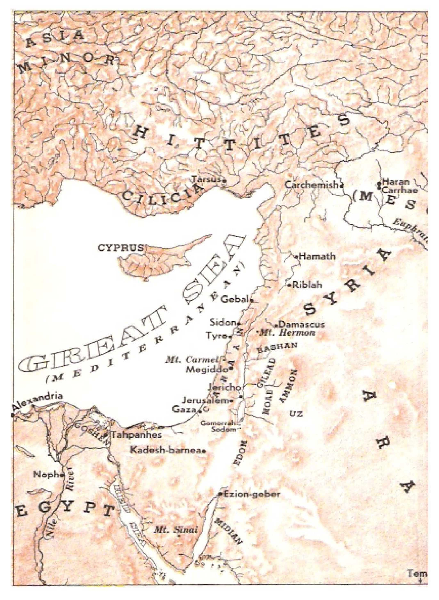MAGOG
Hafr?
-Ecbatana*
Achmetha1 ■-,•
THE WORLD Immediately Around ANCIENT BABYLON
Gautjanic Ninevm?, *X_.
In a footnote on this, Mgr. Knox says: ” ’By fTcwl's grace'; literally ‘In the presence of God', a phrase whose exact meaniriE is doubtful."
Quoted from Un* 193K wJition, by Wm, B. Eerdiaans Publishing Co.. Grand Rciplds, Michl kilo. U^S.A.
Not In 722/1 13.C.. as jziven In secular chronologies Ln genera!.
In agreement with this, Josephus' -Antfqulfteis c>J ffte Jew», Book 10. chapter 6, says, in part: “In the fourth year of Jehoiakim. one whose name was Nfliuclindnezzar took the government over the Babylonians. v. ho at the same time went up with a great army to the city Carchemlsh, which was at Euphrates; upon a resolution that he had taken to light with Neche king of Egypt, under whom all Syria then was. . . . But when Nebuchadnezzar had already reigned four ycara, which was the eighth of Jchol&kim's Kovcmmerit over the Hebrew*, the king of Babylon made an expedition with mighty forces against the Jews, and reauired tribute of Jehoiakim; threatening upon his refusal to make war against him. He was affrighted at this threatening. and bought his peace with money; and brought the tribute he v, as ordered to bring for three years.
"But on the third year, upon hearing that the king of Babylon madr an expedition against the Egyptians, he did not pay tribute; yet was he disappointed of his hope, for the Egyptians durst not light at this time. . . .
“A little time afterward, He king of Babylon made an expedition against Jehoiakim; . . , and made his son Jeholachln king of the country, and ot the city; he also took the principal persons in dignity for captives, three thousand in number, and led them away to Bab ylon. Among whom was the prophet Ezekiel, who was then but young. And this was the end of king Jehoiakim, when he had lived tlilrty-slx y< rir i and reigned eleven. But he was succeeded, in the kingdom by Jeholachln, . . /’
In. Jeremiah. 52; 28 we PMA: "These h re the people whom Nebu-chsdrftDkT took Into exile l In the seventh year, three thousand and twenty-three Jews.'1 This ‘'suvenl.h year" muy nie?in the seventh year u/ttT the yoar of his victory over Pharaoh Nechoh at Carchemlah in <525 B.C.r for o/tcr his victory St that place KfebuChadhcz&ar had ail Palestine at his mercy. Telling what followed this, 2 Kings 24: 7 says: “Never again did the king of Egypt come nut rr<>rtt hut ku'.d, for the king: of i t iby I on. had taken all that happened, to bclonr to the king; of Egypt from the torrent valley of Egypt, up to the river Euphrates.1"
Hence, with, a special threat to Jerusalem .and Judah, the reign of x<'*bu<:h.-i<lnnzvur BS king of Bhhj-li.n n:;ght be counted as s-artfug in 624 B.C.. or the year after his victory over Pharaoh Neehoh at Car-chemlsh. From this standpoint the ''seventh year" mentioned In Jeremiah 32:28 would be >618-617 B.C.. which was also the eleventh year nf Jerusalem's klnj^ Jehoiakim. But,, from when Nebuchadnezzar actually beEsn to rtdjsr* hi Babylon, 618-617 B.C. loouhn.'icd >•>« j?rxt puijeJ
As rt'gnrds these nations -see pag^s- 281-281 of thia book.
In an article entitled “The Last Days of BabylonD. J. Wiseman, head o£ the Depart incut nr Western Asiatic Antiquities of the British Museum, describes the discovery of a stone monument, inscribed In JiiibyIonian, which gEVt‘_;. JBCthg Nr.bi.-nidi."Art ac.-nurtt. ;if pvchIs il.;: ing his reign over Babylonia. In this monument, the Harran stele. King Nabonldus <>r Babylon makes reference to Lhe king pt the Medes in the ycur 546 ELC., which was some years before Cyrus the Great had absorbed the Median Empire. Quite properly, then, the prophets Isaiah and Jeremiah refer to Babylon's conquerors els “Medes." Though Daniel's prophecy speaks of the kingdom of Darius the Mede, it clocu not mean an Independent Median kingdom, with its capital at Ecbatana, after Babylon fell. Wiseman's article was published in GTftr4af(-<?mi' ii' Today, Volume II, No. 4, November 25, 1JX57,
The date given in this paragraph Is according* to pages 170, 171. oC ■ book jVaboi»<diur and JBelshctiwar, by R. P. Dougherty, which sets out data according to the £un<;u.-; X a bo nidus Chronicle dealing with the tall of Babylon. According to the book ZToWMS tAd Mede, by J. C. Whitcomb, on pa«e 70, T l, page 22 top and page 17. Tl-4, the night of Tishri (Ethan Im) 16 corresponds with the night «>f October 11-12. Julian Calendar, or October 5-6. Gregorian Calendar, the time wc use today. Sue also page 14. fl, under "Cyrus,” of jBobyJonton Chronolog^f &J6 Jf.C- - 75, by Parker and Dubbersteln, 1956 Edition.
See pajics 265. 266 of Volume 1 of the book The Great Events by Famous Historians in the chapter on "Corwiuests by Cyrus The Great B-C. 53S," by George Grote. University Editinn. copyrighted 1905, by The National Alumni.
See also Tfro Golden* Apo, as of June 7, 1922, page 572.
See also Bcrosus, a Babylon, kin priest of Bel. about 250 B.C- He wrote about his people with the aid 02 cuneiform sources, but wrote In Greek. Ills works have disappeared, but the Jewish historian Josephus and also historian Eusebius 1’a.mpliiliu.s have prc.-iiTvijcl fragments of IlemsLis' writinjes. See Cojt^tq. jljpidnem. Book I, section 20, by Josephus. fSBE, Volume 1. page 358a, aays Nabcnidus '.vas imprisoned.
t See aabsrfcmi&n FrobkJnws (page 201), by W. EL Lane-, 1923 Edition.
r Sea chapter 7 of Ztarius ifte Mede, published in 1559 in the United States of America, by John C. Whitcomb, Jr,
This. thought js. eonHrmt-d In the translation of Jerptrdah 50; 21 Jn TAe Twenty/gut t?i<: Holy SCri&twiit, by the Jewish
scholar Isaac Leaner: “Against the land of twofold rebellion—even against it so thou up, iiind ujjsalnsl the inhabitants of the country of punishment."-—KdJtlnn of 1853.
T <6 M Of A’flbcwjum* an# JTcis ?«r~*irr, by It- T*.
*y, published in 1929 by the Yale University Press,
**I am.” Here, as also in vers** 8. this expression is not rendered
See pages 230, 232 of T.'ic Zknrn of dvilitfitiom narf Li/e the Ancient A’airf (IMO edition >. by R. M. Kin berg and F. C. CoJv.
t Thal ancient Fcrgamos (Pergamum) was a city of consld • ible wcwlth and stature In the tilth century E.C.. is so n in the fact that "'It had been striking coins since 420 U.C. at latest/' Before Xenophon (about 43O-355 B.C.) mentions It in his Ann,basis, VII, vili, 8, and Ifci?cntixt. III. I, 6, little is known of this cosmopolitan city but mythology.— A’r“, Volume 17, page 507: also The Cotft.n.’ie EneyclofH*-diat Volume II. page 666. edition of 1911.
The cclcbmt<‘d and much freQu.cnted temple ol Aesculapius was io cutcd in Pergamos. Aesculapius was called the god of Pergamos,. and the myt hnlury :r. c with hi-' u ■ ip smacks of ti'C- r,j !;■. n
of Babylon. He was worshiped in the form of a living serpent, fed in the temple and being considered as its divinity.
U :><?■ r "Damasiis 1, pope." page 6S2h of Vf»lutru- 2 of M’ Clin lock and Strong’s C.yc'oia says the following:
“Damasus I, jio[w, . . , sureeetScd Llbcrlus as bishop of Rome A.D. ;»!(>, lie was opposed by Ursirlnus, who cJ aimed the election, und in their disgraceful strifes many people were murdered . . .. The emperor Gratian conferred upon [Damsons], in 378, the right to pass Judgment upon those cler^yiiT'ii o( the other parly who had been expelled from Home, and. at the request of a Roman synod held in the samr year, instructed the secular authorities to give io him the necessary support
The Spanish text StadB: "Reunion, todos vixfiotros, y escuchadr .. CJulftn de entre aquellos dtoaes ha anunciaflo escas eo®as? Ctrrj^ a iiujen uma. JchovA, h-urft Ju voluntad de EL <n Bubllonla, y eu brazo
Los caLdeos.''
See pages lo. 1G of CAronoiopy । - if,<7, - X.D. "5,
edUloru :it 1956, by Parker and iJuhber stein.
Since Darius I did nut establish himself in 13ft by I on until defeating the rebel Nebuchadnezzar III in December ©I 522 -and shortly after* e.'ipturing kill! tig him in Ikibylon, the yrrif 522 B-C, irtuy be viewed as the accession year of King Darius I. Since the regnal year Of a Persian king began tn the spring mottth of Niswn, the first regnal year of Kinrr Darius I would begin in the Eprlnj? of 521 B.C.„ as presented in j'-vrbyfortittai jB-C. - A,/). 75 (ppy<* 28). by Par
ker and Dubbersteln. In that case the sixth regnal year of King Ua-riii.s I began April 11-12, 51G B.C., and! continued to the end of the twelfth lunar month (Adar) of his sixth year, or to the end of March of 515 B-C- On this baste, the rebuilding of the temple was ccji.pJcLed by Zerubbabel on March 5-6 of 515 B.C.
The Greek historian Thucydides of Athens lived during the reign of Artaxerxes the Persian, and tells n® that General 'Themlstorlb-s. tied Trona hi.-: home country to Asia (Persia) [ran^inued! trn Hexi pa^erl
On page 67 of T*<r Tswrc- J-S at jE»Tand (1889 Edition), by C. T. Rus-
seJl, we read: “‘The date <rf Nehemiah'5 tconiwiweci on next
Th<? modern Syr or Syr Darya River, flowing Central Asia.
Ponti fi'x Maximus Julius Caes&r increased the number of the ?un-tihs in the college to sixteen. Says Br'. Volume 22, page under PONTIFEX: "The name is clearly derived from pone [bridge] and facers [to m<:i. ] but whether this should be trken as in: . i;< any
special connection with, the sacred bridge over the Tiber (Pons SubZi-eius). or what the original meaning may have been, cannot now be determined. The college existed under the monarchy [of Rome], when its members were probably three In number; they may safely be considered as legal advisers of the rex [AdHi/j in all matters of religion. Under the republic [of norm? I they emerged into prominence under n. i | r c:. b F! 11 u'. •::;: I;. r | . v, „u !i>' l' thi kf/S
Jutlus as chid ndnklntetnitor of religious law, . . . They all held office for life. The Immense authority Ot the college centered In the pontl-fex maximus. the other pnntlliees forming his conriZiurw or advising body. His functions were pari 13- or ritualistic, but these
were the least Irnpurt.-mt: the real poxver lay in the administration of tbe Jwj* dtvinum [divine riy>Vi,J, ... It L$ obvious that a priesthood having such functions as these, and holding office for Ute, must have been a grt-al power in the state, and fur tin- first three centuries of the repub 1.1- t Is । c -dijic that the pontifex maximus was in fact the most powerful member. . . . Julius ClteS&r held it fnr the last twenty ycarj; of his life, und Augustus took it after the death, of Lepldus in 12 B.C.. after which it become inseparable from the office or the
reigning emperor. With tbc of the {Romani empire the title
very naturally fell to the popes, whose functions as administrators of r. Jigious law closely rcscnililrrl tliuse nt the ancient Roman priesthood, hence the modem use of "pontiff’ and ‘pontffivul.* " See P-ge j1 •!.
The Syriac text has for both "Peicr" and "rock." but “Pe
ter" is preceded by the masculine verbal pronoun (hw) to show that meaning "Peter" is masculine, whereas "rock’* Is preceded by the Feminine demonstrative adjective (ha'dn•, So this second kipha meaning "rock" is feminine. Thus the Syriac Version agrees with the original Greek text; and so the arjrumoni that, because, in the .Aramaic (Syriac) Version, the same word kipha is applied to both Peter .-ml (hi.- rock, they t.ie same pvt:,mi is. proved to be fals-.
on the Pour (fospeis thv Sinai Palimpsests by Dr. Agnes Smith Lewis, pages 54, 53. of the 1913 Edition.
The First Letter of Clement to the Corinthians, Section 5, read.-:
" . . . Let us place before our eyes the good Apostles. Peter, by unjust envy, unclerwcmt not one or two hut many labours: and thus having borne testimony unto death he went unto the place of glory which was due to him. Through. envy, raui obtained the reward of patience. Seven times was he in bonds: he was scourged: was stoned. He preached both, in the cast and in the west. leaving behind him the glorious report of his faith. And thus, having taught the whole world righteousness, and reached the furthest extremity of the west, he suffered martyrdom, by the command of the governors, and departed out of this world, and went to the holy place;, having become a most exemplary pattern of patlenee.”'—Page 6 of A 5'rans£t:Sion of tfte fpistlss of demerit o/ [contiirued on
See The Wch Toidbt as ol 1925, 277, 343. 3S2.
See pat?e 28-1 of -V<w Uipftt on Jfarfin Lut-'cr, by Albert Hyxna, Professor of History, University of Michigan, edition of 1958.
See “Luther's 95 Theses’’ In The (lolden Age, as of April 9, 1924. pages 440-446; also “Matin Luther Said,'* in GA as of April 23. 1924, page 462; also “Martin Luther on the Soul Question,*' In GA as Of LksVJnher 15, 1926, paire 175.
Uonwur. A;!.' Ij: 38, 39.
See The U'eitcA-tower, as of DfrceflftVer 1. 1961, pages 721, 722.
T"e and Bible translator. Hugh J. ScHmilcld. Idontsncs
17 i I Ar’v..iu:-ri;Li:-. .1 v.ii'i R» 1 Ti. 1111-1.1; Lt : 1 1 I. ; il:l> known ID
John’s day as Rniivi-Gad-Yavan, meaninje "Ratra of Gad of the Greeks, “ the place Gad-Ya van being men (.toned in the; Jewish MLshnah of Elie speond rcnlury Sri- oi his h Mk T&a Wd* :
also sb* comment on JftevclBlion tfiz 115, on page 5-16 of his translation The Attf frenr ?c TVtwtanumt.
At any rata, Sch<m field asjwk? iAtes Armageddon with Jewish territory. although cast of the Jordan River, in the aforetime- territory of the tribe of Gad. He docs not locate It near the Euphrates.